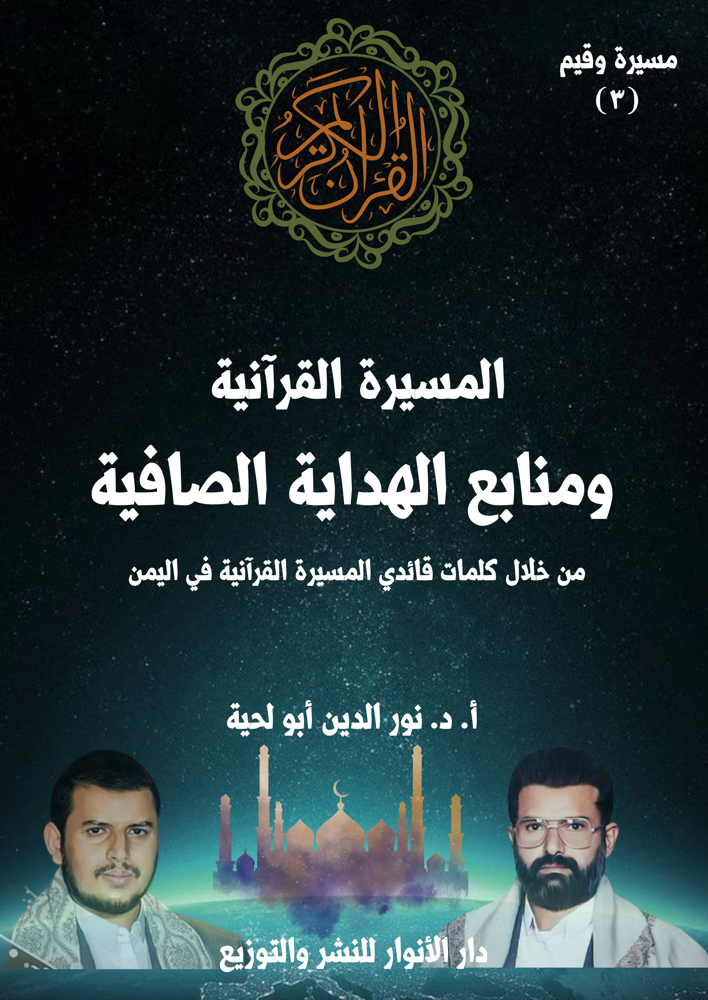

الكتاب: المسيرة القرآنية ومنابع الهداية الصافية
الوصف: من خلال كلمات قائدي المسيرة القرآنية باليمن
السلسلة: مسيرة وقيم
المؤلف: أ. د. نور الدين أبو لحية
الناشر: دار الأنوار للنشر والتوزيع
الطبعة: الأولى، 1445 هـ
عدد الصفحات: 575
ISBN: 978-620-4-72102-6
لمطالعة الكتاب من تطبيق مؤلفاتي المجاني وهو أحسن وأيسر: هنا

يهدف هذا الكتاب إلى محاولة التعرف على منابع الهداية الصافية التي تتبناها المسيرة القرآنية، وذلك من خلال تصريحات قائديها، ذلك أنه لا يمكن التعرف على المصادر التي تقوم عليها القيم المختلفة من دون التعرف على مصادر تلقيها.
وقد رأينا من خلال استقراء ما ورد في كلمات قائدي المسيرة القرآنية ثلاثة مصادر كبرى:
أولها: القرآن الكريم، باعتباره المصدر الأول والأكبر للإسلام بعقائده وشرائعه وقيمه، وباعتباره الكتاب المحفوظ الذي لا يمكن أن تمتد إليه أيادي التحريف والتبديل، وبذلك يكون الملجأ الذي يلجأ إليه كل من يريد أن ينفي عن الدين كل ما علق به عبر العصور المختلفة.
وثانيهما: النبوة، وهما لا يقصدان بها اختصارها في السنة النبوية، وإنما يقصدان بها النبوة نفسها، ابتداء من شخصية النبي نفسه، وشمائله وأخلاقه وكل تصرفاته، باعتبارها جميعا تمثل الهدي الإلهي، وبأجمل وأكمل صورة، ولهذا لم يدعنا الله تعالى إلى تطبيق ما يقوله رسول الله صلى الله عليه وآله وسلم فقط، وإنما دعانا مع ذلك إلى التأسي به جميعا.
وثالثها: الولاية، وويقصدان بها الولاء الكامل لأئمة الهدى الذين يمثّلون النبوة، ويسيرون على هديها، لينفوا عن الدين تحريف الغالين، وانتحال المبطلين، وتأويل الجاهلين، وليقيموا الحياة الإسلامية على أساس الحاكمية الإلهية، وفي كل المجالات.
وقد تحدث قائدا المسيرة القرآنية عن هذه المنابع الثلاثة، وكيف التعامل الصحيح معها، كما تحدثا عن الانحرافات التي وقعت بشأنها، ذلك أنه لا يمكن أن تتأسس أي منظومة فكرية من دون تحديد المصادر التي تتلقى منها، والتي تميزها عن غيرها.
يهدف هذا الكتاب إلى محاولة التعرف على منابع الهداية الصافية التي تتبناها المسيرة القرآنية، وذلك من خلال تصريحات قائديها، ذلك أنه لا يمكن التعرف على المصادر التي تقوم عليها القيم المختلفة من دون التعرف على مصادر تلقيها.
وقد رأينا من خلال استقراء ما ورد في كلمات قائدي المسيرة القرآنية ثلاثة مصادر كبرى:
أولها: القرآن الكريم، باعتباره المصدر الأول والأكبر للإسلام بعقائده وشرائعه وقيمه، وباعتباره الكتاب المحفوظ الذي لا يمكن أن تمتد إليه أيادي التحريف والتبديل، وبذلك يكون الملجأ الذي يلجأ إليه كل من يريد أن ينفي عن الدين كل ما علق به عبر العصور المختلفة.
وثانيهما: النبوة، وهما لا يقصدان بها اختصارها في السنة النبوية، وإنما يقصدان بها النبوة نفسها، ابتداء من شخصية النبي نفسه، وشمائله وأخلاقه وكل تصرفاته، باعتبارها جميعا تمثل الهدي الإلهي، وبأجمل وأكمل صورة، ولهذا لم يدعنا الله تعالى إلى تطبيق ما يقوله رسول الله صلى الله عليه وآله وسلم فقط، وإنما دعانا مع ذلك إلى التأسي به جميعا، فقال: ﴿لَقَدْ كَانَ لَكُمْ فِي رَسُولِ اللَّهِ أُسْوَةٌ حَسَنَةٌ لِمَنْ كَانَ يَرْجُو اللَّهَ وَالْيَوْمَ الْآخِرَ وَذَكَرَ اللَّهَ كَثِيرًا﴾ [الأحزاب: 21]
وثالثها: الولاية، ويقصدان بها الولاء الكامل لأئمة الهدى الذين يمثّلون النبوة، ويسيرون على هديها، لينفوا عن الدين تحريف الغالين، وانتحال المبطلين، وتأويل الجاهلين، وليقيموا الحياة الإسلامية على أساس الحاكمية الإلهية، وفي كل المجالات.
وقد تحدث قائدا المسيرة القرآنية عن هذه المنابع الثلاثة، وكيف التعامل الصحيح
ومنابع الهداية الصافية (6)
معها، كما تحدثا عن الانحرافات التي وقعت بشأنها، ذلك أنه لا يمكن أن تتأسس أي منظومة فكرية من دون تحديد المصادر التي تتلقى منها، والتي تميزها عن غيرها.
ومن الأمثلة على ذلك ما ذكره السيد عبد الملك عند حديثه عن مصادر الهداية، وضرورة الولاية، حيث قال: (لم يكف أن يقول: ﴿إِنَّمَا وَلِيُّكُمُ اللَّهُ وَرَسُولُهُ﴾ [المائدة: 55]، لأن ولاية الله سبحانه وتعالى في امتدادها في الهداية، في امتدادها التوجيهي والارشادي، في امتدادها بحركة هذا الدين، وبالأمة في إطار هذا الدين، والقيام بهذا الدور المهم، في تجسيد مبادئها وقيمها وأخلاقها، لا بدّ له من الاستمرارية، وإلا فالفراغ نتيجة لرحيل النبي صلى الله عليه وآله وسلم سيفقد الأمة الصلة برسولها نفسه، بولايته نفسه، ولهذا نجد أنه قال في نص حديث الغدير، حديث الولاية: (فمن كنت مولاه، فهذا عليّ مولاه)؛ لأن عليا يؤدي دور حلقة الوصل برسول الله، دور الامتداد لولاية رسول الله في الأمة، يصلنا برسول الله، بتوجيهات رسول الله، بالمبادئ التي أعلن عنها رسول الله، يواصل هذا الدور في مسيرة الأمة، في تزكية الأمة، في هداية الأمة، في قيادة الأمة، في تجسيد تلك المبادئ، تلك القيم، في الحفاظ عليها نقية لا يشوبها التحريف، ولا يشوبها التزييف، وهذا دور محوري مهم جدّا، إن فقد هذا الدور، فالفراغ الرهيب جدّا، الفراغ الكامل، الذي يفترضه البعض، سينتج عنه كارثة كبيرة جدّا في واقع الأمة، سينتج عنه انفصال عن الارتباط بهذه الولاية، في أشياء كثيرة، في جوانب كثيرة)(1)
ثم ذكر الدلالة القرآنية على هذا، فقال: (لو كان بالإمكان الاستغناء عن هذا الدور، وأن نكتفي بقوله: ﴿اللَّهَ وَرَسُولَهُ﴾ [المائدة: 55]، لما كان هناك من حاجة إلى أن يقول في هذه
__________ (1) كلمة السيد القائد بمناسبة يوم الولاية، الأربعاء 18 ـ 12 ـ 1442 هـ، الموافق لـ: 28 ـ 7 ـ 2021م.المسيرة القرآنية ومنابع الهداية الصافية (7)
الآية: ﴿وَالَّذِينَ آمَنُوا﴾ [المائدة: 55]، ويقدم تلك المعايير والمواصفات، ثم يقول ثانية: ﴿وَمَنْ يَتَوَلَّ اللَّهَ وَرَسُولَهُ وَالَّذِينَ آمَنُوا﴾ [المائدة: 56]، لما كان بحاجة إلى أن يقول في نص حديث الغدير: (فمن كنت مولاه، فهذا عليّ مولاه)، إلا لأن المطلوب أن يستمر هذا الدور في الحركة بالأمة على أساس الهداية الإلهية، بشكل مضمون ووثيق ونقي وسليم وتام؛ لأن هذه مسألة مهمة جدّا، ولأنه في غاية الأهمية أتى: ﴿فَمَا بَلَّغْتَ رِسَالَتَهُ﴾ [المائدة: 67]؛ لأن المطلوب هو الاستمرارية، استمرارية مسيرة الهداية الإلهية في واقع الأمة، استمرارية الدين الإلهي بكل نقائه، استمرارية إقامته في واقع هذه الحياة بشكل سليم، بشكل صحيح، بعيدا عن التزييف والشوائب التي تؤثر على ذلك)(1)
وهكذا دعا في محل آخر إلى الارتباط بمصادر الهداية الإلهية الصافية، وعدم الرغبة عنها، أو التمسك بغيرها، فقال: (وعندما نأتي إلى هذا الإسلام العظيم بنبيه وقرآنه، فإن النعمة هي هذه النعمة، ارتباطنا بمصادر الهداية الإلهية: القرآن، كتاب الله، وحيه، كلماته، نوره، تعليماته، توجيهاته، كلماته التامة بالعدل والحق والخير والرحمة والحقائق، ونبيه، رسوله، خاتم أنبيائه، محمد صلى الله عليه وآله وسلم الذي هو أيضا صلة بيننا وبين الله، تلقى هذا النور، وأتى بهذا الوحي، أتى بهذا الهدى، بلّغ هذه الرسالة، ثم كان هو أول المسلمين، وأول المصدّقين بهذا الحق، وأول وأعظم المتمسكين بهذا الهدى، وأعظم الخلق عبودية لله والتزاما بنهج الله سبحانه وتعالى والقدوة والقائد الذي يتحرك بنا بناء على أساس هذا الهدى، يربي على أساسه، يهدي على أساسه، يقيم واقع الحياة بناء على أساس هذا النور وهذا الهدى)(2)
ثم ذكر ما تحدثه الرغبة عن هذه المصادر من الضلالات والتحريفات والانحرافات،
__________ (1) المرجع السابق. (2) كلمة السيد القائد بمناسبة يوم الولاية، 18 ـ 12 ـ 1439 هـ، الموافق لـ: 29 ـ 8 ـ 2018م.المسيرة القرآنية ومنابع الهداية الصافية (8)
فقال: (الحالة الجاهلية: هي حالة انفصال عن مصادر الهداية، ثم يخضع الإنسان في ظل هذه الحالة من الانفصال عن مصادر الهداية يخضع في توجهاته في الحياة، وانطلاقته في واقع الحياة، لما يأتيه من قبل آخرين، غير مصادر الهداية، قوى الطاغوت، القرآن يسمي الجهات الأخرى التي يرتبط بها الإنسان كبدائل عن مصادر الهداية، يسميها القرآن بالطاغوت.. والطاغوت هو كل تلك الكيانات، أو الأشخاص، إما كيان، وإما شخص، وإما منهج يرتبط به الإنسان كبديل عن مصادر الهداية، ثم يتأثر به، يسير في هذه الحياة على ضوء وعلى أساس ما يقدم إليه منه، تلك البدائل التي هي الطاغوت ارتبط بها البشر، وارتبطت بها المجتمعات البشرية، تأثرت بها، تلقت منها: المفاهيم، التصورات، الأفكار، وبنت على ذلك حياتها، بنت على أساس ذلك: الحياة، المواقف، السلوكيات، التصرفات، التوجهات، ومن خلال ذلك يستغل هذا الإنسان ويستعبد هذا الإنسان)(1)
ثم ذكر ما تمارسه قوى الطاغوت من التحريفات حتى تلبس الباطل ثوب الحق، فقال: (مع أن قوى الطاغوت وهي تسعى إلى التأثير على هذا الإنسان، التأثير عليه في تفكيره، في أفكاره، في تصوراته، في عقائده، في المفاهيم التي ينطلق على أساسها في هذه الحياة، فيما يعمل، وفيما يترك، وفي مواقفه، وفي ولاءاته، وفي عداواته، وفي مختلف تصرفاته في هذه الحياة، أحيانا حتى قد تتخاطب مع هذا الإنسان حتى باسم الدين، وقد تنطق عن الله افتراء على الله وزورا على الله، لكي تقنع هذا الإنسان؛ لأن قوى الطاغوت هي تدرك أن هذا الإنسان مفطور من الأساس على التدين، على معرفة أو استشعار أن عليه أن يعبد الله، أن يطيع الله، أن يلتزم بأمر الله، على أن يعيش عبدا لله، فتأتي قوى الطاغوت حتى في كثير،
__________ (1) المرجع السابق.المسيرة القرآنية ومنابع الهداية الصافية (9)
بل في أكثر الأحوال، وفي أكثر المجتمعات، وفي أكثر مراحل التاريخ، لتخدع هذا الإنسان، وتضل هذا الإنسان، وتستغل هذا الإنسان، وتقنع هذا الإنسان بعقائد وأفكار وتصورات معينة، ومفاهيم معينة يبني عليها أعماله واتجاهاته في الحياة، وتحسبها على الله سبحانه وتعالى وتعترف بالله)(1)
بناء على هذا كان من الضروري، قبل الحديث عن القيم المختلفة الحديث عن مصادر الهداية السليمة الصافية، وما يقابلها من مصادر الضلال والتحريف، ولكثرة ما ذكره قائدا المسيرة القرآنية بشأنهما، خصصنا كل واحد منهما بكتاب.
أما الأول، فهو هذا الكتاب، والذي عنوناه بـ [المسيرة القرآنية ومنابع الهداية الصافية]، وأما الثاني، فقد خصصناه لمنابع الضلال والتحريف، وعنوناه بـ [المسيرة القرآنية ومنابع الضلال والتضليل]
وبما أن المنابع التي اقتصر عليها قائدا المسيرة القرآنية هي المنابع الثلاث التي ذكرناها، وهي القرآن الكريم، والنبوة، والولاية، فقد خصصنا كل واحد منها بفصل خاص، ذكرنا فيه ما ذكراه حول كيفية التعامل معها، ذلك أن الكثير يدّعي تلقيه من هذه المصادر لكنه يسيء في فهمه لها، أو تعامله معها.
__________ (1) المرجع السابق.المسيرة القرآنية ومنابع الهداية الصافية (10)
أولا ـ المسيرة القرآنية.. والقرآن
من خلال الاسم الذي اختارته المسيرة القرآنية لنفسها يتجلى لنا مدى اهتمامها بالقرآن الكريم، باعتباره المصدر الأول والأعظم، والذي على أساسه تقوم المصادر جميعا، بل على أساسه تُحاكم كل العقائد والشرائع والمواقف والتصرفات وغيرها.
وسر ذلك ـ كما يذكران ـ يعود إلى الخصائص التي أودعها الله تعالى في كتابه، وأخبرنا بها، ودلنا على الاهتمام بها؛ باعتبارها مثل تلك البيانات التي توضع مع علب الأدوية، والتي تبيّن مركبات الدواء، وكيفية استخدامه، وأنواع الأمراض التي يعالجها، وغير ذلك.
وهو يشبه كذلك ما تعارف عليه البشر من عدم الاكتفاء بالقوانين التي يصدرونها كل حين، وإنما يضيفون إليها، أو يقدّمون لها بالوثيقة التي تضع الأصول الكبرى التي تنبني عليها تلك القوانين، ويسمونها دساتير.. ويحرصون على أن تحوي كل ما يضمن سلامة الدولة أو المؤسسة من الانهيار؛ فلذلك يضعون فيها كل الاحتمالات الممكنة التي تضعهم على السكة الصحيحة.
ولهذا أخبر الله تعالى عن شمول كتبه المقدسة لكل شيء، والذي يعني كل الحاجات التي يتطلبها الدين، سواء من الحقائق الضرورية للسلوك، أو القيم الضابطة له.
ومن الأمثلة على ذلك قوله تعالى عن التوراة: ﴿وَكَتَبْنَا لَهُ فِي الْأَلْوَاحِ مِنْ كُلِّ شَيْءٍ مَوْعِظَةً وَتَفْصِيلًا لِكُلِّ شَيْءٍ فَخُذْهَا بِقُوَّةٍ وَأْمُرْ قَوْمَكَ يَأْخُذُوا بِأَحْسَنِهَا سَأُرِيكُمْ دَارَ الْفَاسِقِينَ﴾ [الأعراف: 145]
فالآية الكريمة تشير إلى أن الله تعالى أودع في التوراة كل الحقائق والقيم التي يحتاجها بنو إسرائيل، بحيث تغنيهم عن غيرها في تلك الفترة التي لم يكن لهم فيها رسول غير موسى
ومنابع الهداية الصافية (11)
عليه السلام أو من تبعه من الرسل، والذين كانوا بنفس شريعته، كما قال تعالى: ﴿إِنَّا أَنْزَلْنَا التَّوْرَاةَ فِيهَا هُدًى وَنُورٌ يَحْكُمُ بِهَا النَّبِيُّونَ الَّذِينَ أَسْلَمُوا لِلَّذِينَ هَادُوا وَالرَّبَّانِيُّونَ وَالْأَحْبَارُ بِمَا اسْتُحْفِظُوا مِنْ كِتَابِ اللَّهِ وَكَانُوا عَلَيْهِ شُهَدَاءَ فَلَا تَخْشَوُا النَّاسَ وَاخْشَوْنِ وَلَا تَشْتَرُوا بِآيَاتِي ثَمَنًا قَلِيلًا وَمَنْ لَمْ يَحْكُمْ بِمَا أَنْزَلَ اللَّهُ فَأُولَئِكَ هُمُ الْكَافِرُونَ﴾ [المائدة: 44]
ولهذا لم تتعرض تلك الشريعة للتغيير إلا عند الحاجة إلى ذلك عندما أرسل المسيح عليه السلام بتلك التغييرات الخاصة، والتي تشبه ما يسمى في واقعنا بـ [تعديل الدستور]، كما قال تعالى: ﴿وَمُصَدِّقًا لِمَا بَيْنَ يَدَيَّ مِنَ التَّوْرَاةِ وَلِأُحِلَّ لَكُمْ بَعْضَ الَّذِي حُرِّمَ عَلَيْكُمْ﴾ [آل عمران: 50]
وهذا يدل على أن الكتب المقدسة محكّمة ودائمة ولا تتعرض للنسخ بتلك السهولة التي يذكرها بعض المفسرين أو المحدثين، وفي حال تعرضها لذلك يكون النص الناسخ واضحا وقويا وصريحا وقطعيا، وليس مجرد روايات أو اجتهادات وفهوم.
وهكذا، وصف الله تعالى تلك الكتب بالكثير من الأوصاف، والتي تستدعي الاهتمام بها، وتفعيلها في الواقع، لا مجرد اعتبارها ثناء أو مديحا لا تأثير له في الواقع.
ومن الأمثلة على ذلك وصفها بالنور، كما قال تعالى عن التوراة: ﴿إِنَّا أَنْزَلْنَا التَّوْرَاةَ فِيهَا هُدًى وَنُورٌ﴾ [المائدة: 44]، وقال عن القرآن الكريم: ﴿الَّذِينَ يَتَّبِعُونَ الرَّسُولَ النَّبِيَّ الْأُمِّيَّ الَّذِي يَجِدُونَهُ مَكْتُوبًا عِنْدَهُمْ فِي التَّوْرَاةِ وَالْإِنْجِيلِ يَأْمُرُهُمْ بِالْمَعْرُوفِ وَيَنْهَاهُمْ عَنِ الْمُنْكَرِ وَيُحِلُّ لَهُمُ الطَّيِّبَاتِ وَيُحَرِّمُ عَلَيْهِمُ الْخَبَائِثَ وَيَضَعُ عَنْهُمْ إِصْرَهُمْ وَالْأَغْلَالَ الَّتِي كَانَتْ عَلَيْهِمْ فَالَّذِينَ آمَنُوا بِهِ وَعَزَّرُوهُ وَنَصَرُوهُ وَاتَّبَعُوا النُّورَ الَّذِي أُنْزِلَ مَعَهُ أُولَٰئِكَ هُمُ الْمُفْلِحُونَ﴾ [الأعراف: 157]، وقال: ﴿قَدْ جَاءَكُمْ مِنَ اللَّهِ نُورٌ وَكِتَابٌ مُبِينٌ﴾ [المائدة: 15]، وقال: ﴿يُرِيدُونَ أَنْ يُطْفِئُوا نُورَ اللَّهِ بِأَفْوَاهِهِمْ وَيَأْبَى اللَّهُ إِلَّا أَنْ يُتِمَّ نُورَهُ وَلَوْ كَرِهَ الْكَافِرُونَ﴾ [التوبة: 32]، وقال:
ومنابع الهداية الصافية (12)
﴿يُرِيدُونَ لِيُطْفِئُوا نُورَ اللَّهِ بِأَفْوَاهِهِمْ وَاللَّهُ مُتِمُّ نُورِهِ وَلَوْ كَرِهَ الْكَافِرُونَ﴾ [الصف: 8]
وكل هذه الآيات الكريمة لا تشير فقط إلى ثناء الله تعالى على كتابه، وإنما تدعو إلى تفعيله بهذا الاعتبار، أي اعتباره النور الذي تُكشف به كل أنواع الظلمات، وتحل به كل أنواع الإشكالات؛ فلذلك يستحيل على من يتدبر القرآن الكريم، أو يتحاكم إليه أن يقع ضحية لأي فتنة، ذلك أنه يمشي بصحبة النور، فيميز بين الصراط المستقيم وغيره، كما قال تعالى: ﴿أَوَمَنْ كَانَ مَيْتًا فَأَحْيَيْنَاهُ وَجَعَلْنَا لَهُ نُورًا يَمْشِي بِهِ فِي النَّاسِ كَمَنْ مَثَلُهُ فِي الظُّلُمَاتِ لَيْسَ بِخَارِجٍ مِنْهَا كَذَلِكَ زُيِّنَ لِلْكَافِرِينَ مَا كَانُوا يَعْمَلُونَ﴾ [الأنعام: 122]
فقد أخبر الله تعالى في هذه الآية الكريمة أن من مواهبة للصالحين من عباده ذلك النور الذي يمكنهم من أن يعيشوا بين الناس، أو في العالم، وهم على بصيرة من أمرهم، بحيث يستطيعون التمييز بين الحق والباطل، وبين أنواع الاختبارات الإلهية، وفي نفس الوقت يمكنهم من إدراك جمال الحقائق الوجودية، والتي يمتلئون بسببها سعادة وفرحا، ذلك أن الروح لا يمكنها أن تبصر الحقائق، وهي تعيش في عالم الظلمات.
وما قيل في وصف الله تعالى كتابه بالنور، يقال في سائر الأوصاف، فالله تعالى وصف كتابه بكونه ذكرا، فقال: ﴿وَهَٰذَا ذِكْرٌ مُبَارَكٌ أَنْزَلْنَاهُ أَفَأَنْتُمْ لَهُ مُنْكِرُونَ﴾ [الأنبياء: 50]، وقال: ﴿إِنَّا نَحْنُ نَزَّلْنَا الذِّكْرَ وَإِنَّا لَهُ لَحَافِظُونَ﴾ [الحجر: 9]، وقال: ﴿وَإِنَّهُ لَذِكْرٌ لَكَ وَلِقَوْمِكَ وَسَوْفَ تُسْأَلُونَ﴾ [الزخرف: 44]
ووصفه بكونه هاديا ومبشرا، فقال: ﴿إِنَّ هَٰذَا الْقُرْآنَ يَهْدِي لِلَّتِي هِيَ أَقْوَمُ وَيُبَشِّرُ الْمُؤْمِنِينَ الَّذِينَ يَعْمَلُونَ الصَّالِحَاتِ أَنَّ لَهُمْ أَجْرًا كَبِيرًا﴾ [الإسراء: 9]، وقال: ﴿الم ذَٰلِكَ الْكِتَابُ لَا رَيْبَ ۛ فِيهِ ۛ هُدًى لِلْمُتَّقِينَ﴾ [البقرة: 1 ـ 2]
ووصفه بكونه فرقانا، فقال: ﴿تَبَارَكَ الَّذِي نَزَّلَ الْفُرْقَانَ عَلَى عَبْدِهِ لِيَكُونَ لِلْعَالَمِينَ
ومنابع الهداية الصافية (13)
نَذِيرًا﴾ [الفرقان: 1]
ووصفه بكونه عزيزا، فقال: ﴿وَإِنَّهُ لَكِتَابٌ عَزِيزٌ لَا يَأْتِيهِ الْبَاطِلُ مِنْ بَيْنِ يَدَيْهِ وَلَا مِنْ خَلْفِهِ تَنْزِيلٌ مِنْ حَكِيمٍ حَمِيدٍ﴾ [فصلت: 41 ـ 42]
ووصفه بكونه مهيمنا على كل الكتب، ورقيبا عليها وشهيدا، فقال: ﴿وَأَنْزَلْنَا إِلَيْكَ الْكِتَابَ بِالْحَقِّ مُصَدِّقًا لِمَا بَيْنَ يَدَيْهِ مِنَ الْكِتَابِ وَمُهَيْمِنًا عَلَيْهِ﴾ [المائدة: 48]
ووصفه بكونه مبينا، فقال: ﴿الر تِلْكَ آيَاتُ الْكِتَابِ وَقُرْآنٍ مُبِينٍ﴾ [الحجر: 1]
ووصفه بكونه عظيما، فقال: ﴿وَلَقَدْ آتَيْنَاكَ سَبْعًا مِنَ الْمَثَانِي وَالْقُرْآنَ الْعَظِيمَ﴾ [الحجر: 87]
ووصفه بكونه حكيما، فقال: ﴿الر تِلْكَ آيَاتُ الْكِتَابِ الْحَكِيمِ﴾ [يونس: 1]
ووصفه بكونه مجيدا، فقال: ﴿ق وَالْقُرْآنِ الْمَجِيدِ﴾ [ق: 1]
ووصفه بكونه كريما، فقال: ﴿إِنَّهُ لَقُرْآنٌ كَرِيمٌ﴾ [الواقعة: 77]
ووصفه بكونه مباركا، فقال: ﴿كِتَابٌ أَنْزَلْنَاهُ إِلَيْكَ مُبَارَكٌ لِيَدَّبَّرُوا آيَاتِهِ﴾ [ص: 29]
ووصفه بكونه حقا، فقال: ﴿تِلْكَ آيَاتُ الْكِتَابِ وَالَّذِي أُنْزِلَ إِلَيْكَ مِنْ رَبِّكَ الْحَقُّ﴾ [الرعد: 1]
وغيرها من الأوصاف الكثيرة، والتي لها دلالاتها الواقعية والعملية، فالله تعالى لم يثن على كتابه، لنحبه فقط، وإنما لنطبقه في جميع شؤون حياتنا، وبحسب الأوصاف التي وصفها، مثلما هو الحال في الدواء الذي لا يجدي ما لم يلتزم المعالج بما يتطلبه من الالتزام بطريقة استعماله.
بناء على هذا، نحاول في هذا الفصل التعرف على ما ذكره قائدا المسيرة القرآنية حول تلك الخصائص التي عرّف الله تعالى بها كتابه، والتي لا يمكن فهم أدواره في حياتنا إلا من
ومنابع الهداية الصافية (14)
خلالها.
وقد اعتمدنا في ذلك خصوصا على سلسلة دروس قدمها القائد الشهيد السيد حسين بن بدر الدين الحوثي، يشرح فيها كتاب [مديح القرآن] للإمام القاسم بن إبراهيم بن إسماعيل بن إبراهيم بن الحسن بن الحسن بن علي بن أبي طالب، (توفي 246 ه)، باعتباره من أهم الكتب التي تناولت هذا الموضوع، وخاصة في ذلك العصر الذي اشتهرت فيه صناعة الحديث، وأُهمل فيه القرآن.
وقد ذكر السيد حسين الكتاب في أحد دروسه عنه بقوله: (بالنسبة للشباب الذين جاءوا نحن الآن ندرس كتاب [مديح القرآن] للإمام القاسم بن إبراهيم، وهذا الكتاب مناسب أنه يصوّر، ويخرج بأحسن مما هو عليه، يكبَّر؛ لأجل يدرّس في المراكز، وينتشر للناس، فهو مناسب جداً نشره في الفترة هذه بالذات.. يعني الناس الآن أحوج ما يكونون إلى القرآن، في الزمن هذا بالذات.. نحن بحاجة إليه في المساجد، في المراكز، ينتشر في أوساط الناس)(1)
ثم عرّف بالكتاب، فقال: (كتاب هو من إمام كبير من أئمة أهل البيت، الزيدية متفقين عليه، هو مشهور عندهم جميعاً، وكتابته بالطريقة التي تكشف كيف رؤية أهل البيت، وتوجه أهل البيت الأصلي، قبل تجي أشياء أخرى.. هنا يعطي فعلاً رؤية أهل البيت.. يتحدث عن أهمية القرآن، وعظمة القرآن، وحاجة الناس إلى القرآن، وهداية القرآن بشكل كبير)(2)
ثم عرّف بمؤلف الكتاب، فقال: (الإمام القاسم هم يعتبرونه من أقدر أئمة أهل
__________ (1) دروس من هدي القرآن الكريم، الدرس (4)]، ألقاه السيد حسين بدر الدين الحوثي بتاريخ: 31/5/2003م، اليمن ـ صعدة. (2) المرجع السابق.المسيرة القرآنية ومنابع الهداية الصافية (15)
البيت، الإمام القاسم بن إبراهيم يعتبرونه كبير أهل البيت، في قدرته، بل إن بعضهم يعتبره فيلسوف المسلمين.. الإمام القاسم نفسه هو ممن كان يهتم بالقرآن، يهتم به اهتماماً كبيراً، وهذا واضح في كتاباته، يعني عنده كمنهج تربوي؛ لهذا تجد الإمام الهادي نفسه ـ وهو حفيده ـ كيف كان اهتمامه بالقرآن.. نحن نقول: أنه حصل عندنا خلل في نظرتنا إلى القرآن الكريم، ولو أن الناس ما يزال عندهم إيمان بأهمية القرآن، وعظمته، لكن حصل خلل كبير في النظرة إلى القرآن، وفي التعامل معه، وحصل خلل كبير، عوائق حدثت لدينا أعاقتنا عن الاهتداء به بالشكل المطلوب.. قد أخذنا فيه حوالي ثلاثة دروس، هو كتاب صغير لكنه عظيم جداً في فائدته)(1)
بناء على هذا، حاولنا تقسيم ما شرحه السيد حسين، لا بحسب متن الكتاب، وإنما بحسب خصائص القرآن الكريم التي شرحها، وقد ضممنا إليها أحيانا بعض ما ذكره السيد عبد الملك بخصوص تلك الخصائص.
وقد رجعنا إلى متن كتاب [مديح القرآن]، وبدأنا به عند ذكر أي خاصية، ثم أتبعناها بذكر ما علق عليها السيد حسين، والذي قد يتداخل في بعض الأحيان مع أمور أخرى مرتبطة بالقرآن الكريم لاقتضاء الشرح لذلك.
__________ (1) المرجع السابق.المسيرة القرآنية ومنابع الهداية الصافية (16)
ومثل ذلك ما ورد من الآيات الكريمة التي تذكر حفظه من أن يتطرق إليه الباطل من داخله، كما قال تعالى: ﴿إِنَّ الَّذِينَ كَفَرُوا بِالذِّكْرِ لَمَّا جَاءَهُمْ وَإِنَّهُ لَكِتَابٌ عَزِيزٌ لَا يَأْتِيهِ الْبَاطِلُ مِنْ بَيْنِ يَدَيْهِ وَلَا مِنْ خَلْفِهِ تَنْزِيلٌ مِنْ حَكِيمٍ حَمِيدٍ﴾ [فصلت: 41 ـ 42]، أي لا يستطيع ذو باطل تغييره بكيده، وتبديل شيء من معانيه عما هو به، وذلك هو الإتيان من بين يديه، ولا إلحاق ما ليس منه فيه، وذلك إتيانه من خلفه.
ومثل ذلك ما ورد من الآيات الكريمة التي تذكر حفظه من التبديل، كما قال تعالى: ﴿وَاتْلُ مَا أُوحِيَ إِلَيْكَ مِنْ كِتَابِ رَبِّكَ لَا مُبَدِّلَ لِكَلِمَاتِهِ وَلَنْ تَجِدَ مِنْ دُونِهِ مُلْتَحَدًا﴾ [الكهف: 27]، ففي هذه الآية الكريمة يأمر الله تعالى رسوله صلى الله عليه وآله وسلم بتلاوة كتابه العزيز، لأنه الكتاب الجليل، الذي لا مبدل لكلماته، أي: لا تغير ولا تبدل لصدقها وعدلها، وبلوغها من الحسن فوق كل غاية ﴿وَتَمَّتْ كَلِمَتُ رَبِّكَ صِدْقًا وَعَدْلًا لَا مُبَدِّلَ لِكَلِمَاتِهِ وَهُوَ السَّمِيعُ الْعَلِيمُ وَإِنْ تُطِعْ أَكْثَرَ مَنْ فِي الْأَرْضِ يُضِلُّوكَ عَنْ سَبِيلِ اللَّهِ إِنْ يَتَّبِعُونَ إِلَّا الظَّنَّ وَإِنْ هُمْ إِلَّا يَخْرُصُونَ﴾ [الأنعام: 115 ـ 116]، فلتمامها استحال عليها التغيير والتبديل، فلو كانت ناقصة لعرض لها ذلك أو شيء منه.
ومثل ذلك ما ورد من الآيات الكريمة التي تذكر حفظ الله تعالى له في صدور التالين له، كما قال تعالى: ﴿وَمَا كُنْتَ تَتْلُو مِنْ قَبْلِهِ مِنْ كِتَابٍ وَلَا تَخُطُّهُ بِيَمِينِكَ إِذًا لَارْتَابَ الْمُبْطِلُونَ بَلْ هُوَ آيَاتٌ بَيِّنَاتٌ فِي صُدُورِ الَّذِينَ أُوتُوا الْعِلْمَ وَمَا يَجْحَدُ بِآيَاتِنَا إِلَّا الظَّالِمُونَ﴾ [العنكبوت: 48 ـ 49]، فقد دلت الآيتان الكريمتان على أن القرآن الكريم محفوظ في صدور العلماء، وهو خبر من الله تعالى، وخبر الله لا يمكن أن يتخلف في زمان ولا في مكان.
ومثل ذلك ما ورد من الآيات الكريمة التي تذكر عقوبة من يحرفه أو يبدله، كما قال تعالى: ﴿وَلَوْ تَقَوَّلَ عَلَيْنَا بَعْضَ الْأَقَاوِيلِ لَأَخَذْنَا مِنْهُ بِالْيَمِينِ ثُمَّ لَقَطَعْنَا مِنْهُ الْوَتِينَ فَمَا مِنْكُمْ
ومنابع الهداية الصافية (17)
مِنْ أَحَدٍ عَنْهُ حَاجِزِينَ﴾ [الحاقة: 44 ـ 47]، فإذا كان هذا الوعيد في حق رسول الله صلى الله عليه وآله وسلم، فكيف هو حال من يسعى في تحريف كتاب الله والتقول على الله فيه ما لم يقله، وبهذا يمكن الاستدلال على أنه لا يستطيع بشر أن يزيد أو ينقص من كتاب الله شيئا، ذلك أن العقوبة العاجلة له بالمرصاد.
وقد ذكر الإمام القاسم هذه الخاصية في كتابه مديح القرآن، فقال: (وهو كتاب الله المحفوظ الذي لم يضع منه بمنّ الله قطّ آية، فيضيع بضياعها من الله نور وبيان وهداية)(1)
ثم أورد بعض الآيات الكريمة التي تشير إلى ذلك، بل تصرح به، فقال: (وكيف يذهب منه شيء أو يضيع!؟ أو يتوهم أن الله سبحانه له مضيع!؟ بعد قوله تبارك وتعالى: ﴿وَمَا كَانَ اللَّهُ لِيُضِلَّ قَوْمًا بَعْدَ إِذْ هَدَاهُمْ حَتَّى يُبَيِّنَ لَهُمْ مَا يَتَّقُونَ إِنَّ اللَّهَ بِكُلِّ شَيْءٍ عَلِيمٌ﴾ [التوبة: 115]، وبعد قوله: ﴿يَا مَعْشَرَ الْجِنِّ وَالْإِنْسِ أَلَمْ يَأْتِكُمْ رُسُلٌ مِنْكُمْ يَقُصُّونَ عَلَيْكُمْ آيَاتِي وَيُنْذِرُونَكُمْ لِقَاءَ يَوْمِكُمْ هَذَا قَالُوا شَهِدْنَا عَلَى أَنْفُسِنَا وَغَرَّتْهُمُ الْحَيَاةُ الدُّنْيَا وَشَهِدُوا عَلَى أَنْفُسِهِمْ أَنَّهُمْ كَانُوا كَافِرِينَ﴾ [الأنعام: 130]، وبعد قوله سبحانه: ﴿وَهَذَا صِرَاطُ رَبِّكَ مُسْتَقِيمًا قَدْ فَصَّلْنَا الْآيَاتِ لِقَوْمٍ يَذَّكَّرُونَ﴾ [الأنعام: 126]؛ فكيف يصح أن يذهب منه شيء وهو صراط الله المستقيم!؟ وتبيانه لكل شيء ففيه لعباده هدى وتقويم!)(2)
ثم ذكر ما ورد في القرآن الكريم من الآيات الكريمة التي تدل على ارتباط الهداية بالقرآن، ودلالتها على حفظه، فقال: (وفيه ما يقول سبحانه: ﴿إِنَّ هَذَا الْقُرْآنَ يَهْدِي لِلَّتِي هِيَ أَقْوَمُ﴾ [الإسراء: 9]، فهل بقي لأحد من بعده عذر أو متلوّم!؟ وكيف يصدّق مفتر على الله في ضياعه!!؟ وقد أمر تبارك وتعالى عباده باتباعه، فقال فيه: ﴿وَأَنَّ هَذَا صِرَاطِي مُسْتَقِيمًا
__________ (1) مجموع كتب ورسائل الإمام القاسم بن إبراهيم الرسي: 2/15. (2) المرجع السابق.المسيرة القرآنية ومنابع الهداية الصافية (18)
فَاتَّبِعُوهُ وَلَا تَتَّبِعُوا السُّبُلَ فَتَفَرَّقَ بِكُمْ عَنْ سَبِيلِهِ ذَلِكُمْ وَصَّاكُمْ بِهِ لَعَلَّكُمْ تَتَّقُونَ﴾ [الأنعام: 153]، وقال تبارك وتعالى فيه: ﴿اتَّبِعُوا مَا أُنْزِلَ إِلَيْكُمْ مِنْ رَبِّكُمْ وَلَا تَتَّبِعُوا مِنْ دُونِهِ أَوْلِيَاءَ قَلِيلًا مَا تَذَكَّرُونَ﴾ [الأعراف: 3]، وقال سبحانه: ﴿وَهَذَا كِتَابٌ أَنْزَلْنَاهُ مُبَارَكٌ فَاتَّبِعُوهُ وَاتَّقُوا لَعَلَّكُمْ تُرْحَمُونَ﴾ [الأنعام: 155](1)
ثم ذكر عظيم بهتان من ادعوا تعرض القرآن الكريم للنقص، فقال: (وقد قال قوم مبطلون، عماة لا يعقلون: أن قد ذهب منه بعضه فافتروا الكذب فيه وهم لا يشعرون، وقالوا من الافتراء على الله في ذلك بما لا يدرون..فيا سبحان الله، أما يسمعوا لقول الله: ﴿إِنَّا نَحْنُ نَزَّلْنَا الذِّكْرَ وَإِنَّا لَهُ لَحَافِظُونَ﴾ [الحجر: 9]، وقوله سبحانه: ﴿بَلْ هُوَ قُرْآنٌ مَجِيدٌ فِي لَوْحٍ مَحْفُوظٍ﴾ [البروج: 21 ـ 22](2)
ثم ذكر ما يدل من الواقع على حفظه، فقال: (وكتاب الله فهو الذكر الحكيم، والقرآن المكرم العظيم، فمن أين يدخل عليه مع حفظ الله له ضياع؟ أو يصح في ذلك لمن رواه عن أحد من الصالحين سماع، مع ما كان لرسول الله صلى الله عليه وآله وسلم من الأصحاب، وكان عليه أكثرهم من المعرفة بالخط والكتاب، إن هذا من الافتراء لعجب عجيب، لا يقبله مهتد من الخلق ولا مصيب)(3)
وقد ذكر السيد حسين هذا النص، وما ورد فيه من الآيات الكريمة، وسنقتبس بعض ما ذكره من غير ربط مباشر بما ذكره الإمام القاسم، حيث قال: (عندما يقول: ﴿وَأَنَّ هَذَا صِرَاطِي مُسْتَقِيمًا فَاتَّبِعُوهُ﴾ [الأنعام: 153] ما عاد يصح أن تفترض أنه ضاع منه شيء على
__________ (1) المرجع السابق. (2) مجموع كتب ورسائل الإمام القاسم بن إبراهيم الرسي: 2/16. (3) المرجع السابق.المسيرة القرآنية ومنابع الهداية الصافية (19)
الإطلاق؛ لأنه لو ضاع منه شيء لضاع من الصراط الذي أمر باتباعه، فتكون الإشكالية في هذا أنه ما يكون هناك حجة لله على الناس؛ ولهذا حفظه)(1)
ثم ذكر شواهد الواقع المعاصر على حفظ القرآن الكريم، فقال: (الشاهد على أنه محفوظ فعلاً على مدى ألف وأربعمائة سنة من تنزله، ومع كثرة أعدائه، خاصة في هذا الزمن، كثرة أعدائه، تطور وسائلهم، وما استطاعوا أن ينالوا من نصه بشيء على الإطلاق، تغيير ما استطاعوا أن ينالوا من نصه بشيء نهائياً.. وهو هو نفسه أعظم شيء لديهم مستهدف هو القرآن الكريم، لو يتمكنوا من تغييره، لو يتمكنوا من تضييعه، لو يتمكنوا من التلاعب فيه لعملوا، وبذلوا كل ما لديهم، ما استطاعوا أبداً)(2)
ثم تحدث عن دلالات قوله تعالى: ﴿وَأَنَّ هَذَا صِرَاطِي مُسْتَقِيمًا فَاتَّبِعُوهُ﴾ [الأنعام: 153] على حفظ القرآن الكريم، بل حفظ الدين جميعا، فقال: (الله يسميه صراطه، يعني الطريقة التي تؤدي إليه، الطريق التي رسمها هو، وتؤدي إليه، وهي مستقيمة، واضحة، وقيمة، وتقوم بمن يسير عليها، ما يحتاج إلى أي طريق، لا يمين ولا شمال ﴿مُسْتَقِيمًا فَاتَّبِعُوهُ وَلَا تَتَّبِعُوا السُّبُلَ فَتَفَرَّقَ بِكُمْ عَنْ سَبِيلِهِ﴾ [الأنعام: 153].. أي طريق آخر سيؤدي بك إلى غاية أخرى، ويبعدك أكثر وأكثر عن سبيل الله، وعندما يقول: مستقيماً لا يوجد طريق آخر غيره مستقيماً.. ما هو يصف صراطه بأنه مستقيم؟ يجب أن تفهم بأنه أيضاً ليس هناك طريق آخر مستقيماً غيره، حتى لو بدا لك منمقاً، مزخرفاً فهو ليس مستقيماً، ولن يكون مستقيماً)(3)
ثم ذكر دلالة الواقع على هذا، فقال: (والواقع شهد بهذا.. ألسنا الآن في آخر الأزمنة
__________ (1) دروس من هدي القرآن الكريم، الدرس (2)]، ألقاه السيد حسين بدر الدين الحوثي بتاريخ: 29/5/2003م، اليمن ـ صعدة. (2) المرجع السابق. (3) المرجع السابق.المسيرة القرآنية ومنابع الهداية الصافية (20)
ربما لاحظ كل شيء أمامك مطلع، كل النظريات، كل الأفكار، كل الرؤى، كلها اتضحت غير صحيحة، كلها كانت غاياتها خطأ، كلها كانت نتيجتها دمار، ووبال على البشرية.. هل تجد الآن في هذا الزمان ماذا يوجد من حاجة البشر ما يزالون يتطلعون إليها؟ أو ما يزالون يأملون فيها؟ هل بقي شيء؟ جربوا كل النظريات، كل الأنظمة، كل الأطروحات، الديمقراطية جربت على مستوى عالي، كيف نظرة الناس إلى الديمقراطية في العالم؟ جربت الاشتراكية، جربت الشيوعية، جربت أنظمة كثيرة، فلسفات كثيرة، تحرك عليها ناس، كلها فشلت.. داخلنا، داخل الإسلام رؤى معينة مشوا عليها اكتشف بطلانها، اكتشف سوؤها، ما هذا كل شيء تبين؟ وكل من عملوا الأشياء هذه هم يعملونها على أساس تكون سبل يعني: معظمها قد تكون بحسن نية، يرسم طريقة معينة بحسن نية.. لكن هو بشر، هو ناقص، هو قاصر)(1)
ثم ذكر الفارق الكبير بين مصادر تلك الأفكار والنظريات، ومصدر القرآن الكريم، فقال: (هناك فارق كبير بين أن يأتي من يعلم السر في السموات والأرض، من يعلم الغيب والشهادة، من هو خالق هو لهذا الكون، لكل صنف في هذا العالم، هو خالقه، فيشرع هو، ويهدي هو، ويرسم الطريق هو.. طيب: الإنسان هو واحد من مفردات العالم هذا كله، واحد من ملايين ملايين الأصناف، نقطة، أو ذرة في هذا العالم، ويريد يضع نظاماً، ويصلح طريقة، ويعمل سبيل، ويرسم أشياء من هذه! يقوم يتفلسف، ويطنن، وأشياء من هذه! وعمل طريقة، وكشفها الواقع أنها خطأ)(2)
وهكذا ذكر في محل آخر قول الإمام القاسم: (وقد قال قوم مبطلون، عماة لا يعقلون،
__________ (1) المرجع السابق. (2) المرجع السابق.المسيرة القرآنية ومنابع الهداية الصافية (21)
أن قد ذهب منه بعضه، فافتروا الكذب فيه، وهم لا يشعرون)، وعقب عليه بقوله: (هذه من أين جاءت؟ جاءت بها أحاديث من عند السنّية، إنه كان سورة كذا مثل سورة كذا، ولكن أكلها الجرذان! كانت تحت سرير عائشة أكلتها الجرذان!! أبو موسى الأشعري قال كان يعرف أن سورة ـ تقريباً ـ [والليل] مثل سورة [يس] وسورة كذا مدري أين جاءت)(1)
وهو يشير بذلك إلى الأحاديث الكثيرة التي وردت في كتب الأحاديث، والتي أدرجت فيما يطلق عليه [نسخ التلاوة]، والذي لا يعدو في حقيقته القول بنقصان القرآن الكريم.
ومن الأمثلة على ذلك ما رواه المحدّثون عن أبي الأسود قال: بعث أبو موسى الأشعري إلى قراء أهل البصرة، فدخل عليه ثلاث مائة رجل قد قرؤوا القرآن، فقال: أنتم خيار أهل البصرة وقراؤهم، فاتلوه، ولا يطولن عليكم الأمد فتقسو قلوبكم كما قست قلوب من كان قبلكم، وإنا كنا نقرأ سورة كنا نشبهها في الطول والشدة ببراءة فأنسيتها، غير أني قد حفظت منها: (لو كان لابن آدم واديان من مال لابتغى واديا ثالثا، ولا يملأ جوف ابن آدم إلا التراب)، وكنا نقرأ سورة كنا نشبهها بإحدى المسبحات فأنسيتها، غير أني حفظت منها: (يا أيها الذين آمنوا لم تقولون ما لا تفعلون) فتكتب شهادة في أعناقكم فتسألون عنها يوم القيامة)(2)
ومثل ذلك ما يروونه عن عمر أنه قال ـ وهو يخطب الناس على المنبر ـ: (إن الله بعث محمدا صلى الله عليه وآله وسلم بالحق، وأنزل عليه الكتاب، فكان مما أنزل الله آية الرجم، فقرأناها وعقلناها ووعيناها، رجم رسول الله صلى الله عليه وآله وسلم ورجمنا بعده، فأخشى إن طال بالناس زمانٌ أن يقول قائلٌ:
__________ (1) دروس من هدي القرآن الكريم، الدرس (2)]، ألقاه السيد حسين بدر الدين الحوثي بتاريخ: 29/5/2003م، اليمن ـ صعدة. (2) رواه مسلم (1050) ذالمسيرة القرآنية ومنابع الهداية الصافية (22)
والله ما نجد آية الرجم فى كتاب الله، فيضلوا بترك فريضة أنزلها الله، والرجم فى كتاب الله حقٌ على من زنى إذا أحصن من الرجال والنساء، إذا قامت البينة أو كان الحبل أو الاعتراف)(1)
ومثل ذلك ما يروونه عن عمر في تكملة الحديث السابق أنه قال: (ثم إنا كنا نقرأ فيما نقرأ من كتاب الله: (أن لا ترغبوا عن آبائكم، فإنه كفرٌ بكم أن ترغبوا عن آبائكم، أو إن كفرا بكم أن ترغبوا عن آبائكم)(2)
ومن تلك الروايات وأخطرها هذه الرواية المروية عن عائشة: (لقد أنزلت آية الرجم، ورضعات الكبير عشرٌ، فكانت في ورقة تحت سرير في بيتي، فلما اشتكى رسول الله صلى الله عليه وآله وسلم تشاغلنا بأمره، ودخلت دويبةٌ لنا فأكلتها)، وفي رواية: (فلما مات رسول الله صلى الله عليه وآله وسلم وتشاغلنا بموته دخل داجنٌ فأكلها)(3)
وغيرها من النماذج التي يذكرها المحدثون والمفسرون والفقهاء، ويعتبرونها صحيحة لا جدال فيها، بل يتهمون منكرها بالبدعة.
وقد ذكر السيد حسين مصدر كل هذه الروايات، فقال: (تجد كل باطل يأتي من عندهم، ناس اندس فيهم يهود فعلاً، وعندما تأتي أنت، عندما تأتي تتأمل من أين أتي المسلمون فقدمت أشياء.. مع أنه بحين ما كان قد عند العرب خبرة، بنو أمية عندما حكموا، ما كان قد عندهم خبرة في مسألة أنه كيف يعمل، خبرة في كيف أنه يرسم أشياء، في كيف أنه. لكن اليهود عندهم خبرة، عندهم خبرة مئات السنين من قبل جربوا مع المسيحيين،
__________ (1) رواه البخاري (6830) ومسلم (1691). ذ (2) رواه البخاري (6830) ومسلم (1691) ذ (3) رواه أحمد (43/343)، وابن ماجة (رقم/1944) ذالمسيرة القرآنية ومنابع الهداية الصافية (23)
ومن قبل عندهم خبرات في مسألة التحريف، مسألة التضليل، كيف يقدم بشكل مصبوغ بصبغة دينية.. أن يكون تشكيك في موضوع القرآن، يقرأ الناس التشكيك في الجامعات، في كتب تتحدث عن علوم القرآن، تتحدث عن كيفية جمعه، لولا أن الإنسان واثق من القرآن لكان هذا كله تشكيك فيه، في قصة جمع القرآن، وأحاديث أنه كان سورة كذا مثل سورة كذا)(1)
ثم ذكر نماذج من الكتب المعاصرة التي تدرس أمثال تلك التشكيكات في القرآن الكريم، فقال: (خبصه عملوها، في كتاب: علوم القرآن للقطان، وعلوم القرآن أيضاً لواحد مصري آخر قد نسيت اسمه، بهذه الطريقة يجعلك تشك في القرآن؛ لولا أن الإنسان واثق أن القرآن أعلى من أن يحتاج إلى روايات: حدثنا فلان عن فلان، قال قال: نزل كذا، وحدد له آية تنزل، أو أن يحتاج إلى اثنين شهود، يشهدون أن هذه الآية هي آية، وعمر قال: معه آية، لكن قال: ما رضيوا يقبلونها منه؛ لأنه ما حصل شهود عليها!.. أليس هذا الكلام كله باطل؟ تشكيك في الموضوع؟)(2)
ومن الأمثلة على تلك الروايات التي ذكرها السيد حسين ما روي عن زيد بن ثابت أنه قال: (أرسل إليَّ أبو بكر مقتل أهل اليمامة، فإذا عمر بن الخطّاب عنده فقال أبو بكر: إن عمر أتاني فقال: إنّ القتل قد استحّر يوم اليمامة بقُرّاء القرآن، وإنّي أخشى أن يستحّر القتل بالقُرّاء في المواطن، فيذهب كثير من آيّ القرآن، وإنّي أرى أن تأمر بجمع القرآن، فقلت لعمر: كيف نفعل شيئاً لم يفعله رسول الله صلى الله عليه وآله وسلم؟ قال عمر: هو والله خير، فلم يزل يراجعني حتى شرح الله صدري لذلك، ورأيت في ذلك رأي عمر، قال زيد: قال أبو بكر: إنّك شاب
__________ (1) دروس من هدي القرآن الكريم، الدرس (2)]، ألقاه السيد حسين بدر الدين الحوثي بتاريخ: 29/5/2003م، اليمن ـ صعدة. (2) المرجع السابق.المسيرة القرآنية ومنابع الهداية الصافية (24)
عاقل لا نتهمك، وقد كنت تكتب الوحي لرسول الله، فتتبع القرآن أجْمَعَهُ، فوالله لو كلفّوني نقل جبل من الجبال ما كان أثقل مما أمرني به من جمع القرآن، قلت: كيف تفعلان شيئا لم يفعله رسول الله صلى الله عليه وآله وسلم؟ قال: هو والله خير، فلم يزل أبو بكر يراجعني حتى شرح الله صدري للذي شرح الله له صدر أبي بكر وعمر، فتتبعت القرآن أجمعه من العَسب، واللخاف، وصدور الرجال!! فوجدت آخر سورة التوبة مع أبي خُزيمة الأنصاري، لم أجدها مع غيره: ﴿لَقَدْ جَاءَكُمْ رَسُولٌ مِنْ أَنْفُسِكُمْ﴾ [التوبة: 128] حتى خاتمة البراءة فكانت الصحف عند أبي بكر حتى توفّاه الله، ثم عند عمر حياته، ثم عند حفصة بنت عمر)(1)
ورووا عن ابن أبي داود من طريق الحَسن: أنّ عمر سأل عن آية من كتاب الله، فقيل: كانت مع فلان قُتل يوم اليمامة، فقال: إنا لله وأمر بجمع القرآن فكان أوّل من جمعه في المصحف(2).
ورووا عن زيد بن ثابت، قال: (كتبنا المصاحف، فُفِقدت آية كنت أسمعها مِن رسول الله فوجِدَت عند خزيمة: ﴿مِنَ الْمُؤْمِنِينَ رِجَالٌ صَدَقُوا مَا عَاهَدُوا اللَّهَ عَلَيْهِ فَمِنْهُمْ مَنْ قَضَىٰ نَحْبَهُ وَمِنْهُمْ مَنْ يَنْتَظِرُ وَمَا بَدَّلُوا تَبْدِيلًا﴾ [الأحزاب: 23].. وكان عمر لا يقبل آية من كتاب الله حتى يُشهد عليها شاهدان، فجاء رجل من الأنصار بآيتين، فقال عمر: لا أَسألك عليها شاهداً غيرك)(3)
ورووا عن أنس بن مالك، أنه قال: (كنت فيمن أُملي عليهم، فربما اختلفوا في الآية فيذكرون الرجل قد تلقّاها من رسول الله صلى الله عليه وآله وسلم ولعلّه يكون غائباً أو في بعض البوادي،
__________ (1) البخاري: كتاب التفسير ، والإتقان: ج 1 ص 57. (2) الإتقان: ج 1 ص 58.. (3) تهذيب تاريخ دمشق: ج 5 ص 136.المسيرة القرآنية ومنابع الهداية الصافية (25)
فيكتبون ما قبل الآية وما بعدها ويَدَعُون موضعها حتى يجيء الرَّجل أو يُرسل إليه)(1)
ورووا عن أبي داود بن الزبير أن أبا بكر قال لعمر ولزيد: (أُقعدا على باب المسجد، فمَن جاءكم بشاهدين على شيء من كتاب الله، فاكتباه)(2)
وغيرها من الروايات التي تشكك في القرآن الكريم، والتي كانت هدية غالية قدموها لكل الطاعنين والحاقدين، ولهذا يستدل السيد حسين على حفظ القرآن الكريم بمحتواه، فقال: (القرآن الكريم يشهد على أنه كامل، عندما ترى أنه ليس هناك شيء أغفله نهائياً.. فإذا افترضنا شيئاً من القرآن نقص، هو لا يعني شيء، يعني لا يوجد شيء يتناوله، لا يوجد حاجة إليه.. كل أمر، كل أمر مثلما قال:﴿تِبْيَانًا لِكُلِّ شَيْءٍ﴾ [النحل: 89].. استعرض الأشياء في الحياة، افترض حتى أشياء، تجد القرآن تبياناً فيها، أي: لم يغفل أيّ مجال على الإطلاق.. إذاً فما نقص منه شيء، لو نقص منه شيء لكنت ستلقى هوة وأنت تقرأ القرآن)(3)
ثم ضرب مثالا على ذلك بالهوة التي يجدها من يقرأ كتب اليهود، فقال: (لا، هذا معروف، إذا واحد يراجع بعض الكتب القديمة حق اليهود تلقى هوة، وتلمس أن فيه تحريف، أدخلت عبارات أخرى عندما ينقلون النصوص أن هناك حاجة هي ناقصة)(4)
ثم ذكر قول الإمام القاسم: (فافتروا الكذب فيه وهم لا يشعرون)، وعلق عليه بقوله: (لأنه قد يكون الموضوع أنه ربما قد لا يكون بعض الرواة يرويه على أساس أن عنده هدف هو: أن يخلق تشكيك في القرآن مثلاً، لكن روايات، المحدثين هم مثل الصحفيين
__________ (1) تفسير الطبري: ج 1 ص 21. (2) إرشاد الساري: ج 7 ص 447.. (3) دروس من هدي القرآن الكريم، الدرس (2)]، ألقاه السيد حسين بدر الدين الحوثي بتاريخ: 29/5/2003م، اليمن ـ صعدة. (4) المرجع السابق.المسيرة القرآنية ومنابع الهداية الصافية (26)
سواء، حدثنا، أخبرنا، وهكذا، قرقرة وجمَّاع أحاديث من أجل يطلع الحافظ فلان، أو شيخ الإسلام فلان؛ لأنه يحفظ أحاديث، مثل الصحفيين؛ ولهذا سطَّروا الكذب، وبقي الكذب، خلدوا الكذب بالطريقة هذه)(1)
ثم ذكر قول الإمام القاسم: (وقالوا من الافتراء على الله في ذلك بما لا يدرون، فيا سبحان الله! أما يسمعون لقول الله: ﴿إِنَّا نَحْنُ نَزَّلْنَا الذِّكْرَ وَإِنَّا لَهُ لَحَافِظُونَ﴾ [الحجر: 9]، وعلق عليه بقوله: (وإنا له لحافظون، وبعبارة تفيد الاستمرار.. ما قال: كنا له حافظين، وإنا له لحافظون، يعني: على الاستمرار، من يوم تنزيله إلى آخر أيام الدنيا.. تولى حفظه، ما يستطيع أحد من أعدائه أن يلعب فيه على الإطلاق، ولا ينقِّص منه ما يستطيع أحد.. الحفظ من أن تتناوله أيدي التحريف، الحفظ من أن يتناوله أحد بزيادة أو نقصان)(2)
ثم ذكر قدرة القرآن الكريم على رفض التحريف المعنوي والذي لا يتعلق بتبديل ألفاظه، فقال: (وحتى فيما يتعلق إذا ما حاول أحد أن يلصق به شيء، تعمل شيئا هنا، مقولة معينة، وتحاول تلصقها بالقرآن، أي: أن القرآن يدل عليها، القرآن يرفضها؛ لقوله: ﴿لَا يَأْتِيهِ الْبَاطِلُ مِنْ بَيْنِ يَدَيْهِ وَلَا مِنْ خَلْفِهِ﴾ [فصلت: 42] لا يمكن أن تجد فيه باطلاً، ولا يقبل هو أن يلصق به باطل)(3)
ثم استدل على حفظ القرآن الكريم بقوله تعالى: ﴿بَلْ هُوَ قُرْآنٌ مَجِيدٌ فِي لَوْحٍ مَحْفُوظٍ﴾ [البروج: 21 ـ 22]، وعلق عليه بقوله: (الله يتحدث عن أنه مثلما يقول: أصله محفوظ، مثلما تقول: النسخة الأصلية محفوظة، يعني: حتى القرآن هو مؤرشف، النسخة الأصلية
__________ (1) المرجع السابق. (2) المرجع السابق. (3) المرجع السابق.المسيرة القرآنية ومنابع الهداية الصافية (27)
محفوظة، مثلما يتحدث في أكثر من آية: ﴿فِي كِتَابٍ مَكْنُونٍ لَا يَمَسُّهُ إِلَّا الْمُطَهَّرُونَ﴾ [الواقعة: 78 ـ 79] ﴿فِي لَوْحٍ مَحْفُوظٍ﴾ [البروج: 22](1)
ثم رد على الذين ينحرفون بالآية الكريمة عن سياقها ومعناها، بالبحث عن معنى اللوح، فقال: (المقام هذا ليس مقام نقول: هل الباري سيحتاج إلى لوح، أو ما لوح؟ المسألة بالنسبة لنا نحن أنه يؤكد أكثر من مرة، وبأكثر من طريقة: أن القرآن لا يمكن أن تفترض، أو تقول: ربما يكون هناك شياطين في الوسط، قال: ﴿وَمَا تَنَزَّلَتْ بِهِ الشَّيَاطِينُ وَمَا يَنْبَغِي لَهُمْ وَمَا يَسْتَطِيعُونَ إِنَّهُمْ عَنِ السَّمْعِ لَمَعْزُولُونَ﴾ [الشعراء: 210 ـ 212] أليست هذه واحدة؟ يطمئنك بالنسبة للطريق، بالنسبة لأصله أن هذا الذي عندك أصله محفوظ في السماء، لا ندري في أي سماء.. ﴿إِنَّهُ لَقُرْآنٌ كَرِيمٌ فِي كِتَابٍ مَكْنُونٍ لَا يَمَسُّهُ إِلَّا الْمُطَهَّرُونَ﴾ [الواقعة: 77 ـ 79].. يؤكد في آية أخرى: ﴿بَلْ هُوَ قُرْآنٌ مَجِيدٌ فِي لَوْحٍ مَحْفُوظٍ﴾ [البروج: 21 ـ 22].. ثم نأتي في الأخير نناقش، ماذا يعني يقول: لوح، نفترض لوح!؟ هل الباري بحاجة إلى لوح؟ الموضوع لا تنظر له من الناحية هذه، انظر لها من منظار أنه في إطار أن يرسخ ثقة لدى الناس بحيث ما يفسح لأي مجال للارتياب في القرآن.. فكلمة: لوح محفوظ، شأنها شأن ﴿وَمَا تَنَزَّلَتْ بِهِ الشَّيَاطِينُ وَمَا يَنْبَغِي لَهُمْ وَمَا يَسْتَطِيعُونَ إِنَّهُمْ عَنِ السَّمْعِ لَمَعْزُولُونَ﴾ [الشعراء: 210 ـ 212](2)
ثم ذكر قول الإمام القاسم: (وكتاب الله فهو الذكر الحكيم، والقرآن المكرم العظيم، فمن أين يدخل عليه مع حفظ الله له ضياع؟ أو يصح في ذلك لمن رواه عن أحد من الصالحين سماع)، وعلق عليه بقوله: (أي: رواية؟ لا يمكن أن تصح هذه الرواية على الإطلاق، فتكون صحيحة، أي: واقعية، وإن كانت رويت فعلاً قيلت، حدثنا فلان عن
__________ (1) المرجع السابق. (2) المرجع السابق.المسيرة القرآنية ومنابع الهداية الصافية (28)
فلان عن أبي موسى الأشعري قال كذا.. هذه الرواية حاصلة، لكن لا يمكن أن تكون صحيحة، أي لها واقع، أي: فعلاً هناك سورة نقصت، وكانت مثل سورة: [يس]، ولم تعد إلا بضعة أسطر)(1)
ثم ذكر قول الإمام القاسم: (مع ما كان لرسول الله صلى الله عليه وآله وسلم من الأصحاب، وكان عليه أكثرهم من المعرفة بالخط والكتاب)، ثم علّق عليه بقوله: (الآن هو يتحدث عن تفاصيل معينة، قد تكون التهيئة أن تكون على هذا النحو هي من ماذا؟ اعتبرها من تجسيدات الحفظ الإلهي.. رسول الله صلى الله عليه وآله وسلم الذي تنزل عليه كان شخصاً يهتم جداً بالنص القرآني.. القرآن يحكي لنا بأنه كان يردد الآية الواحدة بعد ما يوحى إليه، يرددها، يرددها، يرددها من أجل لا ينسى، الله ضمن له هذه ﴿سَنُقْرِؤُكَ فَلَا تَنسَى﴾ ألم يتحدث عنه هناك بأنه كان يردده من أجل أن لا ينسى؟ طيب فرسول الله صلى الله عليه وآله وسلم اهتم بموضوع الكتابة، واختار ثقات ليكتبوا له هذا الكتاب، مثلما قال الطبري: بأن الكاتب الذي كان يكتب القرآن هو الإمام علي، قال: كان جبريل يتنزل على محمد، ومحمد يقرؤه على علي، وعلي يكتب)(2)
ثم رد على الذين أدخلوا في كتبة القرآن الكريم من ليسوا أهلا لذلك، فقال: (الاهتمام من جانب رسول الله صلى الله عليه وآله وسلم بالقرآن لا يمكن تفترض معه بأنه يقبل شخصاً مثل معاوية، أو أي إنسان كذا يكتب له، هذه روايات.. ارجع إلى رسول الله، وارجع إلى أهمية القرآن لديه؛ لتعرف أنه هل يمكن أن تعتمد على كُتَّاب، أطرف كُتَّاب! لا يمكن هذا.. حتى رواية عبد الله بن أبي سرح، وتلك العبارات هي بعيدة أن تكون واقعية، يعتمد على أشخاص أطرف واحد يكتب.. أما الطبري نفسه فهو أكد هذه، أكد: جبريل ينزله، يوحيه
__________ (1) المرجع السابق. (2) المرجع السابق.المسيرة القرآنية ومنابع الهداية الصافية (29)
إلى محمد صلى الله عليه وآله وسلم، ومحمد يقرؤه على علي، ويكتب علي.. ثلاثة أمناء، سماهم، ثلاثة أمناء على وحي الله)(1)
وهكذا تحدث في محل آخر عن القراءات القرآنية، وعدم تأثيرها في حفظ القرآن، فقال: (القراءات هي من الخبصة التي عملوها، هي من الافتراضات التي عملوها، لكن القراءات ما كانت بالشكل الذي يؤثر على النص القرآني نهائياً، ما هي تؤثر على النص القرآني، يعقلون، تعقلون، وأشياء من هذه، ما تؤثر على النص القرآني نهائياً)(2)
ثم ذكر نماذج على ذلك، فقال: (أن تأتي إلى الآخرين ما هم يأتوا يخربطوا قراءات، ويهتموا بقراءات، وأشياء من هذه؟ لكن هذه ما تجدها تؤثر على النص، يكون كل القراءات هي تدور حول الشكليات، حول الأشكال التي لم تكن عند العرب نهائياً، ولا كانت ضمن الكتاب يوم تنزل.. أليست القراءات الآن تأتي تتعلق بنقاط، أو بشكل ضمة، أو فتحة، أو أشياء من هذه؟ النص القرآني نفسه إذا أحد قال: أن هناك قراءة هي: تعقلون، يستطيع من يفهم بأنه لا، هذه يعقلون.. إذاً هل هناك تأثير على النص؟ لا يوجد تأثير على النص نهائياً.. القراءات مع أنها قليلة القراءات، ما معناها أن كل كلمة فيها قراءة.. عندما تأتي إلى كتب القراءات التي يتحدثون عنها هي قليلة جداً، محدودة، ومعظمها من هذا النوع: مَلِكِ، مَالِكِ، ما هناك تأثير على النص نهائياً.. لو قال واحد: هذه مالك يوم الدين، وقال آخر: لا، هي خالق يوم الدين، ممكن تعتبر هذه مشكلة، لكن ما هناك تأثير على النص القرآني أبداً يمكن جاء آخرون يتصور مثلاً عندما يكتب كلمة ملك أو كلمة مالك تكتب وتكون
__________ (1) المرجع السابق. (2) دروس من هدي القرآن الكريم، الدرس (2)]، ألقاه السيد حسين بدر الدين الحوثي بتاريخ: 29/5/2003م، اليمن ـ صعدة.المسيرة القرآنية ومنابع الهداية الصافية (30)
محتملة يأتي آخر يتوهمها قراءة، هذا الآخر ما دخله هو في الموضوع؟)(1)
ثم ذكر أن السبب في وجود القراءات هو الإعراض عن الورثة الهداة الحفظة، فقال: (أليس الله جعل للقرآن حملة وجعل له ورثة؟ عندما يتحدث مع الصحابة أن يتمسكوا بالإمام علي الإمام علي هو إذاً سيعرفون من خلاله هل هي ملك أو مالك.. إذا أنت التبس عليك مثلا من خلال كَتْبَت الكلمة، جاء واحد ثاني يريد يطلعها قراءة هذا الإمام علي سيعرفك هل هي ملك أو مالك، أليس هو أعرف بالنص؟ هو أعرف بالنص القرآني؟)(2)
ثم رد على الذين يذكرون أن القرآن الكريم نزل بلهجات متعددة، فقال: (القرآن الكريم هو أبعد من مسألة أن يكون نزل بكم لهجات، يكون نزل بلهجات متعددة، لهجات داخله متعددة هذا بعيد جدا؛ لأنك تجد القرآن نفسه هو هذا يؤكد على مسألة أن تكون اللغة العربية هي اللغة العالمية، فهو لن يأتي يحاول يدون لك كم لهجات، لو كان سَيُدَوّن لهجات لدوّن أيضاً لغات أخرى؛ لأنه كتاب للعالمين.. ألم تكن الحاجة ماسة إلى أن يكون أيضاً باللغة الإنجليزية، والفرنسية، والفارسية، وأشياء من هذه؟ فيكون نزل بسبع لغات، وليس بسبع لهجات عربية، يقول لك: يصح أن تقرأها على كذا، على لغة [هذيل]، ويصح أن تقرأها كذا على لغة [تميم]، ويصح أن تقرأها على لغة [قريش]! لا، لأن الذي هو من هذيل، والذي هو من تميم هو سيفهم المفردات بنزولها على لغة قريش أليس هو سيفهم؟ فهل يمكن أن القرآن يأتي ليراعي لهجته؟ أم أن الأولى إذا كانت المسألة بهذا الشكل أن يراعي لغات أخرى وهو للعالمين جميعاً، فيأتي أيضاً بصيغة انجليزية، بصيغة فارسية، بصيغة كذا.. ألم يكن هذا هو الأحوج إليه لو كانت المسألة بهذا الشكل؟ لا،﴿بِلِسَانٍ عَرَبِيٍّ مُبِينٍ﴾
__________ (1) المرجع السابق. (2) المرجع السابق.المسيرة القرآنية ومنابع الهداية الصافية (31)
[الشعراء: 195]؟ فإذا كان الهذيلي يستخدم [عتَّى] بدل [حتى] مثلاً فهو يعرف حتى، فهي ضمن اللغة المعروفة لديه، المتداولة في بلده، في محيطه)(1)
ثم رد على من يهمتون بالقراءات وينشرونها، فقال: (ولهذا نقول: ما هي طريقة مناسبة أن يأتي واحد ويقول: قرأ السبع القراءات، علامة، أو تدور لك لمصحف ملآن قراءات من هذه ليست جيدة نشرها بين الناس على الإطلاق.. وقُرِئ كذا، وقُرِئ كذا، وقرأ فلان كذا، وقرأ فلان كذا.. هذه طريقة تنزل للناس غير صحيحة، تساعد على تقبل أي تشكيك من الطرف الآخر، تساعد على تقبل التشكيك)(2)
ثم ذكر التطور التاريخي للقراءات، فقال: (ثم إنهم ضبطوا القراءات في الأخير، جعلوها قضية رواية! فالقراءة هي: ما صح سندها، ووافقت العربية بوجه.. أليست هكذا؟ وبعضهم قالوا: ووافقت الرسم العثماني.. أي وافقت خط أي المصاحف العثمانية التي أمر عثمان بكتابتها وتوزيعها للمناطق)(3)
ثم ذكر أن القرآن الكريم أرفع من أن يبحث فيه من هذه النواحي، فقال: (القرآن هو أرفع من مسألة الأسانيد، هل تحتاج الشمس حدثني فلان عن فلان،عن فلان أن هناك شمس تطلع كل يوم؟ هل هناك سند بأن هناك شمس؟ القرآن هو كالشمس لا يحتاج إلى سند على الإطلاق)(4)
__________ (1) المرجع السابق. (2) المرجع السابق. (3) المرجع السابق. (4) المرجع السابق.المسيرة القرآنية ومنابع الهداية الصافية (32)
سليمان بن عبد القوي الطوفي الصرصري، (ت 716هـ) عنها، فقد قال: (والتحقيق أن القراءات متواترة عن الأئمة السبعة، أما تواترها عن النبي صلى الله عليه وآله وسلم إلى الأئمة السبعة، فهو محل نظر، فإن أسانيد الأئمة السبعة، بهذه القراءات السبعة، إلى النبي صلى الله عليه وآله وسلم موجودة في كتب القراءات، وهي نقل الواحد عن الواحد، لم تستكمل شروط التواتر، ولولا الإطالة والخروج عما نحن فيه، لذكرت طرفا من طرقهم ولكن هي موجودة في كتب العراقيين، والحجازيين، والشاميين، وغيرهم، فإن عاودتها من مظانها وجدتها كما وصف لك.. وأبلغ من هذا أنها في زمن النبي صلى الله عليه وآله وسلم لم تتواتر بين الصحابة، بدليل حديث عمر لما خاصم هشام بن حكيم بن حزام، حيث خالفه في قراءة سورة الفرقان إلى رسول الله صلى الله عليه وآله وسلم ولو كانت متواترة بينهم لحصل العلم لكل منهم بها عن النبي صلى الله عليه وآله وسلم ثم لم يكن عمر ليخاصم فيما تواتر عنده)(1)
ثم أشار إلى النفور النفسي الذي يجده غير المحققين، فقال: (اعلم أن بعض من لا تحقيق عنده ينفر من القول بعدم تواتر القراءات، ظنا منه أن ذلك يستلزم عدم تواتر القرآن، وليس ذلك بلازم، لما ذكرناه أول المسألة، من الفرق بين ماهية القرآن والقراءات، والإجماع على تواتر القرآن)(2)
ومثله بدر الدين الزركشي الشافعي (ت 794 هـ)، فقد قال: (التحقيق أنها متواترة عن الأئمة السبعة، أما تواترها عن النبي ففيه نظر، فإن إسناد الأئمة السبعة بهذه القراءات السبعة موجود في كتب القراءات، وهي نقل الواحد عن الواحد)(3)
ومثلهما أبو القاسم شهاب الدين عبد الرحمن بن إسماعيل الدمشقي المعروف بأبي
__________ (1) شرح مختصر الروضة (2/23) ذ (2) شرح مختصر الروضة (2/24) ذ (3) البرهان (1/318) ذالمسيرة القرآنية ومنابع الهداية الصافية (33)
شامة (المتوفى: 665هـ)، فقد نقل قول البغوي: (فأما القراءة باللغات المختلفة مما يوافق الخط والكتاب فالفسحة فيه باقية، والتوسعة قائمة بعد ثبوتها وصحتها، بنقل العدول عن رسول الله صلى الله عليه وآله وسلم)(1)، وعقب عليه بقوله: (ولا يلزم في ذلك تواتر، بل تكفي الآحاد الصحيحة من الاستفاضة وموافقة خط المصحف وعدم المنكرين لها نقلا وتوجيها من حيث اللغة)(2)
ومثلهم محمد بن علي الشوكاني اليمني (المتوفى: 1250هـ)، فقد قال: (وقد ادعي تواتر كل واحدة من القراءات السبع، وادعي أيضاً تواتر القراءات العشر، وليس على ذلك أثارة من علم، فإن هذه القراءات كل وحدة منها منقولة نقلا أحادياً، كما يعرف ذلك من يعرف أسانيد هؤلاء القراء لقراءاتهم، وقد نقل جماعة من القراء الإجماع على أن في هذه القراءات ما هومتواتر، وفيها ما هوآحاد، ولم يقل أحد منهم بتواتر كل واحدة من السبع فضلاً عن العشر، وإنما هوقول قاله بعض أهل الأصول، وأهل الفن أخبر بفنهم.. والحاصل أن ما اشتمل عليه المصحف الشريف واتفق عليه القراء المشهورون فهوقرآن، وما اختلفوا فيه فإن احتمل رسم المصحف قراءة كل واحد من المختلفين مع مطابقتها للوجه الإعرابي والمعنى العربي فهي قرآن كلها، وإن احتمل بعضها دون بعض فإن صح إسناد ما لم يحتمله وكانت موافقة للوجه الإعرابي والمعنى العربي فهي الشاذة، ولها حكم أخبار الآحاد في الدلالة على مدلولها، وسواء كانت من القراءات السبع أو من غيرها)(3)
ومثلهم محمد مهدي معرفة (توفي 1427 هـ)، فقد قال: (عرفت أنّ العقيدة الصحيحة الثابتة من محققي علمي الأصول والقراءات، سواء من أهل السنة أوالإمامية،
__________ (1) شرح السنة ص141. (2) المرشد الوجيز إلى علوم تتعلق بالكتاب العزيز (1/145) ذ (3) إرشاد الفحول إلى تحقيق الحق من علم الأصول (1/87) ذالمسيرة القرآنية ومنابع الهداية الصافية (34)
أن القراءات غير متواترة لا عن النبي صلى الله عليه وآله وسلم، ولا عن الصحابة الأولين، سوى قراءة واحدة، وهي قراءة حفص المتوافقة مع قراءة جمهور المسلمين التي توارثوها يدًا عن يد، وكابرًا عن كابر)(1)
وهكذا تحدث السيد حسين عن دلالة الإعجاز على الحفظ، فقال: (إذا عندك أنه صح ما صح ﴿فَأْتُوا بِسُورَةٍ مِنْ مِثْلِهِ وَادْعُوا شُهَدَاءَكُمْ مِنْ دُونِ اللَّهِ إِنْ كُنْتُمْ صَادِقِينَ﴾ [البقرة: 23]، إذا أنت تفترض أن فيه شك فأتِ بمثله.. أن يعجز البشر أن يأتوا بمثله، هذا هو ماذا؟ أقوى شاهد عند أنفسهم بأنه من الله، وبالتالي ما يحتاج إلى سند، ما يحتاج الباري إلى روايات نهائياً، حدثني فلان عن فلان عن فلان أن الله هو الذي خلق فلان، لا يحتاج الباري إلى هذا، ما يحتاج روايات)(2)
ثم ذكر دلالة تلاوة رسول الله صلى الله عليه وآله وسلم القرآن الكريم على حفظه، فقال: (رسول الله صلى الله عليه وآله وسلم تولى هو تلاوته على الناس ﴿وَأَنْ أَتْلُوَ القرآن﴾ [النمل: 92] ألم يكن يقرؤه دائماً عليهم في مكة، يقرؤه دائماً عليهم في المدينة، هو الذي كان يتولى قراءته، ويكرر قراءته عليهم.. هذه واحدة من ماذا؟ من الضوابط للحفظ؛ لأنه ما كانت تنزل آية وكل واحد يكتبها، وكل واحد جاء يقرؤها من عنده، هو، هو يكرر قراءته على الناس في كل محضر، في كل اجتماع، ويقرؤها عليهم في كل صلاة، من الصلوات الجهرية.. إذاً هنا ترديده باستمرار من فم الرسول صلى الله عليه وآله وسلم أليست هذه قضية أيضاً واضحة في مسالة أنه يعني ما نزل في وضعية تحتمل فيها أنه تطرق إليه اختلاف، أو مثلا اختلاف في النقل، اختلاف في القراءة نهائياً؛ لأن من كان يقرؤه كثيراً هو الذي تنزل عليه، وهو رسول الله صلى الله عليه وآله وسلم.. تجد القرآن الكريم تحدث عن هذا في أكثر من
__________ (1) التمهيد في علوم القرآن،ج2 ص51. (2) المرجع السابق.المسيرة القرآنية ومنابع الهداية الصافية (35)
مقام ﴿اتْلُ مَا أُوحِيَ إِلَيْكَ مِنَ الْكِتَابِ﴾ [العنكبوت: 45] أتلو أنت ﴿وَأَنْ أَتْلُوَ القرآن﴾ [النمل: 92] وهكذا)(1)
ثم ذكر سبب نشأة القراءات القرآنية، وعدم ارتباطها بالقرآن الكريم، فقال: (أما بعض القراءات فهي تكون مثلاً سببها هكذا: فَتَحوا الموضوع قليلاً؛ بأن بالإمكان أن أقرأ مثلاً باللهجة الفلانية، فأعمل إمالة مثلما عند ورش ﴿وَيَقُولُونَ مَتِي هَذَا الْوَعْدُ﴾ على أساس أن الإمالة موجودة في اللغة كذا ﴿مَتِي هَذَا الْوَعْدُ﴾أو أشياء من هذه.. ما تستطيع تقطع بأنه نزل القرآن بهذا النص: ﴿متِي﴾يقول: هذه هي لهجة عربية)(2)
وهكذا تحدث السيد عبد الملك عن حفظ الله تعالى للقرآن الكريم، باعتباره النعمة العظمى، ومصدر الهداية الأكبر، فقال: (القرآن الكريم هو نعمة عظيمة أنعم الله بها علينا، نعمة الهداية بالرسول والكتاب هي أعظم النعم على الإطلاق، وهي مفتاح كل النعم، بدونها تتحول كل النعم إلى نقم، إلى وسيلة لاكتساب المعاصي، لاكتساب الآثام، إلى وسيلة للجناية على النفس، للجناية على المجتمع البشري، إلى وسيلة للشقاء، إلى وسيلة للإفساد في الأرض، إلى وسيلة لإفساد الحياة، فالإنسان بحاجة إلى أن ترتسم له منهجية التعامل مع نعم الله عليه، وأن ترتسم له المسيرة الصحيحة لكيفية الاستخلاف في الأرض، التي يجمع فيها ما بين المبادئ والقيم الإلهية والإنسانية الراقية العظيمة، التي تنسجم مع كرامته الإنسانية، أو أن ينحرف عن ذلك، إذا لم يحصل على ذلك، أو لم يرتبط بهذه الصلة، بهذه الهداية، فيكون انحرافه سببا لشقائه، سببا لسوء تصرفاته، سببا لكفرانه للنعم، سببا للجناية
__________ (1) المرجع السابق. (2) المرجع السابق.المسيرة القرآنية ومنابع الهداية الصافية (36)
على نفسه)(1)
ثم ذكر حفظ الله تعالى لهذه النعمة التي تتوقف عليها كل النعم، فقال: (نعمة الله علينا بالقرآن الكريم هي نعمة عظيمة، وهو كان المعجزة الرئيسية، من ضمن المعجزات هو المعجزة الرئيسية لرسول الله محمد صلى الله عليه وآله وسلم، وقد عظمت نعمة الله سبحانه وتعالى أن حفظ النص القرآني للأجيال اللاحقة ما بعد عصر وزمن مبعث الرسول صلى الله عليه وآله وسلم وحركته المباشرة وحياته، من بعد وفاة الرسول صلى الله عليه وآله وسلم)(2)
ثم ذكر النتائج المترتبة على عدم الحفظ، فقال: (لو لم يحفظ الله سبحانه وتعالى ـ بمعجزة إلهية، بآية عجيبة ـ النص القرآني للأجيال اللاحقة؛ لكانت المشكلة خطيرة جدّا في مسألة التحريف للنص القرآني؛ لأن التحريف فيما يقدّم باسم الدين مسألة معروفة، يعني: كل المسلمين يعرفون هذه الحقيقة، أنّ هناك تحريفا خطيرا حصل في نقل المعارف الدينية، وفي نقل المفاهيم الدينية، وفيما يقدّم باسم الدين، حتى في المرويات عن رسول الله صلى الله عليه وآله وسلم، هناك الكثير من الأحاديث المكذوبة، التي لم تصح عن النبي صلى الله عليه وآله وسلم، وهناك الكثير أيضا مما يقدّم باسم الدين، باسم الإسلام، بصفة الشريعة، بمختلف العناوين الدينية، من المعروف أنه لا يصح باسم الدين، فمن المسائل المعروفة هي مسألة التحريف، ولكن الأمة متفقة على أنّ النص القرآني محفوظ؛ لأن الله سبحانه وتعالى تكفّل بحفظه، هو القائل في القرآن الكريم: ﴿إِنَّا نَحْنُ نَزَّلْنَا الذِّكْرَ وَإِنَّا لَهُ لَحَافِظُونَ﴾ [الحجر: 9]، فهو أكّد أنه حافظ له بشكل مستمر إلى يوم القيامة، وهذا ما حصل، على مدى كل هذه القرون التي مضت وانقضت، لا يزال
__________ (1) في رحاب القرآن الكريم وهدايته الواسعة، المحاضرة الرمضانية السابعة الجمعة 7 ـ 9 ـ 1443 هـ، الموافق لـ: 8 ـ 4 ـ 2022م. (2) المرجع السابق.المسيرة القرآنية ومنابع الهداية الصافية (37)
النص القرآني محفوظا، وسيبقى محفوظا إلى نهاية أيام الحياة، إلى قيام الساعة)(1)
ثم ذكردور حفظ القرآن الكريم في حفظ الدين، فقال: (فهذه نعمة، نعمة عظيمة جدّا لنا؛ لأنه وإن حاول البعض أن يحرّف في المعنى، أو أن يحرّف في المفاهيم، فالقرآن يفضحه، سلامة النص، وبقاء النص، وحفظ النص القرآني نعمة عظيمة تفضح المتقوّلين على القرآن، فهذه من النعم العظيمة علينا في هذا الزمن، وفي كل زمن، أنّ الله حفظ القرآن الكريم من التحريف لنصه، نعمة عظيمة جدّا، وبقي لنا إلى هذا الزمن، ويبقى ما بعد هذا العصر إلى نهاية التاريخ، إلى نهاية الوجود البشري)(2)
الوصف الثاني من أوصاف القرآن الكريم كونه نورا، كما قال تعالى: ﴿قَدْ جَاءَكُمْ مِنَ اللَّهِ نُورٌ وَكِتَابٌ مُبِينٌ﴾ [المائدة: 15]، وقال: ﴿يُرِيدُونَ أَنْ يُطْفِئُوا نُورَ اللَّهِ بِأَفْوَاهِهِمْ وَيَأْبَى اللَّهُ إِلَّا أَنْ يُتِمَّ نُورَهُ وَلَوْ كَرِهَ الْكَافِرُونَ﴾ [التوبة: 32]، وقال: ﴿يُرِيدُونَ لِيُطْفِئُوا نُورَ اللَّهِ بِأَفْوَاهِهِمْ وَاللَّهُ مُتِمُّ نُورِهِ وَلَوْ كَرِهَ الْكَافِرُونَ﴾ [الصف: 8]
وقد ذكر الإمام القاسم هذه الخاصية في كتابه مديح القرآن، فقال: (وفيما في تنزيل الله من الموعظة والنور، وما جعله عليه من الشفاء لما في الصدور، ما يقول سبحانه: ﴿يَا أَيُّهَا النَّاسُ قَدْ جَاءَتْكُمْ مَوْعِظَةٌ مِنْ رَبِّكُمْ وَشِفَاءٌ لِمَا فِي الصُّدُورِ وَهُدًى وَرَحْمَةٌ لِلْمُؤْمِنِينَ﴾ [يونس: 57]، فنسأل الله أن يجعلنا وإياكم إلى ما فيه من الهدى والنور من المهتدين.. وفي تبيين ما نزّل الله في كتابه من الآيات، وجعل فيه من المواعظ الشافيات، لمن قبله وفهمه عن الله جل
__________ (1) المرجع السابق. (2) المرجع السابق.المسيرة القرآنية ومنابع الهداية الصافية (38)
جلاله، من عباده البررة المتقين الأتقين ما يقول سبحانه: ﴿وَلَقَدْ أَنْزَلْنَا إِلَيْكُمْ آيَاتٍ مُبَيِّنَاتٍ وَمَثَلًا مِنَ الَّذِينَ خَلَوْا مِنْ قَبْلِكُمْ وَمَوْعِظَةً لِلْمُتَّقِينَ اللَّهُ نُورُ السَّمَاوَاتِ وَالْأَرْضِ مَثَلُ نُورِهِ كَمِشْكَاةٍ فِيهَا مِصْبَاحٌ الْمِصْبَاحُ فِي زُجَاجَةٍ الزُّجَاجَةُ كَأَنَّهَا كَوْكَبٌ دُرِّيٌّ يُوقَدُ مِنْ شَجَرَةٍ مُبَارَكَةٍ زَيْتُونَةٍ لَا شَرْقِيَّةٍ وَلَا غَرْبِيَّةٍ يَكَادُ زَيْتُهَا يُضِيءُ وَلَوْ لَمْ تَمْسَسْهُ نَارٌ نُورٌ عَلَىٰ نُورٍ يَهْدِي اللَّهُ لِنُورِهِ مَنْ يَشَاءُ وَيَضْرِبُ اللَّهُ الْأَمْثَالَ لِلنَّاسِ وَاللَّهُ بِكُلِّ شَيْءٍ عَلِيمٌ﴾ [النور: 34 ـ 35](1)
ثم عقب على الآيتين الكريمتين بقوله: (فمثّل سبحانه ما في كتابه من نوره وهداه، وما وهب ـ من تبيينه فيه برحمته ـ أولياءه، بمشكاة قد ملئت نورا بمصباح في زجاجة نقية ككوكب دريّ، ومثّل كتابه بما فيه من هداه بنور مصباح زاهر مضيّ، قد نقيا من كل ظلمة وغلس، وصفيا من كل كدر ونجس، فأعلمنا سبحانه بأنه هو نور السماوات والأرض ومن فيهما، إذ هو الهادي لكلّ من اهتدى من أهليهما.. وقد قيل في التفسير: إن المشكاة هي الكوة، التي يجمع ما فيها كما يجمع ما فيه السقا والشكوة، فنور هدى كتاب الله محفوظ بالله مجتمع، وكل من وفقه الله لرشده فهو لأمر الله كله فيه متبع، لا يسوغ لأحد عند الله من خلافه سائغ، ولا يزيغ عن حكم من أحكام الله فيه إلا زائغ، يزيغ الله قلبه بزيغه عنه، ويفارق من الهدى بقدر ما فارق منه، كما قال علام الغيوب: وخلّاق ما ضل واهتدى من القلوب: ﴿فَلَمَّا زَاغُوا أَزَاغَ اللَّهُ قُلُوبَهُمْ وَاللَّهُ لَا يَهْدِي الْقَوْمَ الْفَاسِقِينَ﴾ [الصف: 5](2)
هذا ما ذكره الإمام القاسم في كتابه [مديح القرآن]، وقد عقّب السيد حسين على قوله: (وفي تبيين ما نزّل الله في كتابه من الآيات، وجعل فيه من المواعظ الشافيات، لمن قَبِلَه وفهمه): (تتكرر كثيراً الكلمة هذه: [لمن قَبِلَه وفهمه]، لمن تأمله، لمن، لمن.؛ لأن القضية
__________ (1) مجموع كتب ورسائل الإمام القاسم بن إبراهيم الرسي: 2/10. (2) المرجع السابق.المسيرة القرآنية ومنابع الهداية الصافية (39)
هكذا: أن الإنسان هو لازم أن يكون عنده اهتمام بأن يفتح صدره، يصغي، يستمع باهتمام حتى يستفيد.. وإلا ستنتهي القضية في الأخير إلى أنه لا يعد ينفع في واحد شيء على الإطلاق)(1)
وهو يشير بذلك إلى أن القرآن الكريم مع كونه نورا إلا أنه لا يستفيد منه إلا من قبله وفهمه، لا من أعرض عنه، أو لم يتدبر فيه، أو لم يحاول فهمه، ولهذا أخبر الله تعالى أن القرآن الكريم يتنزل نورا خالصا صافيا على المؤمنين؛ فيملؤهم بالإيمان والتقوى، في نفس الوقت الذي يتنزل فيه على من ملأوا نفوسهم بالران، وعقولهم بالأهواء، فيتحول إلى فتن وشبه تزيدهم ضلالا على ضلالهم، كما قال تعالى: ﴿وَإِذَا مَا أُنْزِلَتْ سُورَةٌ فَمِنْهُمْ مَنْ يَقُولُ أَيُّكُمْ زَادَتْهُ هَذِهِ إِيمَانًا فَأَمَّا الَّذِينَ آمَنُوا فَزَادَتْهُمْ إِيمَانًا وَهُمْ يَسْتَبْشِرُونَ وَأَمَّا الَّذِينَ فِي قُلُوبِهِمْ مَرَضٌ فَزَادَتْهُمْ رِجْسًا إِلَى رِجْسِهِمْ وَمَاتُوا وَهُمْ كَافِرُونَ﴾ [التوبة: 124، 125]، وقال: ﴿وَلَوْ جَعَلْنَاهُ قُرْآنًا أَعْجَمِيًّا لَقَالُوا لَوْلَا فُصِّلَتْ آيَاتُهُ أَأَعْجَمِيٌّ وَعَرَبِيٌّ قُلْ هُوَ لِلَّذِينَ آمَنُوا هُدًى وَشِفَاءٌ وَالَّذِينَ لَا يُؤْمِنُونَ فِي آذَانِهِمْ وَقْرٌ وَهُوَ عَلَيْهِمْ عَمًى أُولَئِكَ يُنَادَوْنَ مِنْ مَكَانٍ بَعِيدٍ﴾ [فصلت: 44]
وقد ضرب الله مثالا على ذلك بالماء الذي يتنزل على الأرض، لكن الوعاء المستقبل له هو الذي يحدد نوع النبات الذي ينبت به.. فالماء واحد، والثمار مختلفة.. قال تعالى: ﴿وَفِي الْأَرْضِ قِطَعٌ مُتَجَاوِرَاتٌ وَجَنَّاتٌ مِنْ أَعْنَابٍ وَزَرْعٌ وَنَخِيلٌ صِنْوَانٌ وَغَيْرُ صِنْوَانٍ يُسْقَى بِمَاءٍ وَاحِدٍ وَنُفَضِّلُ بَعْضَهَا عَلَى بَعْضٍ فِي الْأُكُلِ إِنَّ فِي ذَلِكَ لَآيَاتٍ لِقَوْمٍ يَعْقِلُونَ﴾ [الرعد: 4]
ولهذا؛ فإن السر في كل ذلك يرجع إلى تلك الأنوار التي تغمر القلوب؛ فتتشربها، وتستوعب بها الحقائق، وبقدر تشربها لها تكون قناعتها ويقينها، وبقدر يقينها يكون سلوكها
__________ (1) دروس من هدي القرآن الكريم، الدرس (1)]، ألقاه السيد حسين بدر الدين الحوثي بتاريخ: 28/5/2003م، اليمن ـ صعدة.المسيرة القرآنية ومنابع الهداية الصافية (40)
وصلاحها.
ثم تحدّث السيد حسين عن آية النور التي ذكرها الإمام القاسم، وفسرها، وهي قوله تعالى: ﴿وَمَثَلًا مِنَ الَّذِينَ خَلَوْا مِنْ قَبْلِكُمْ وَمَوْعِظَةً لِلْمُتَّقِينَ اللَّهُ نُورُ السَّمَاوَاتِ وَالْأَرْضِ مَثَلُ نُورِهِ كَمِشْكَاةٍ فِيهَا مِصْبَاحٌ الْمِصْبَاحُ فِي زُجَاجَةٍ الزُّجَاجَةُ كَأَنَّهَا كَوْكَبٌ دُرِّيٌّ يُوقَدُ مِنْ شَجَرَةٍ مُبَارَكَةٍ زَيْتُونَةٍ لَا شَرْقِيَّةٍ وَلَا غَرْبِيَّةٍ يَكَادُ زَيْتُهَا يُضِيءُ وَلَوْ لَمْ تَمْسَسْهُ نَارٌ نُورٌ عَلَى نُورٍ يَهْدِي اللَّهُ لِنُورِهِ مَنْ يَشَاءُ وَيَضْرِبُ اللَّهُ الْأَمْثَالَ لِلنَّاسِ وَاللَّهُ بِكُلِّ شَيْءٍ عَلِيمٌ﴾ [النور: 34 ـ 35]
ثم بيّن دلالاتها المرتبطة بخصائص القرآن الكريم، فقال: (هذا مثل لأقصى نور ممكن في ذلك العصر.. تصوَّر نورا في مشكاة: كَوَّة، يكون النور مجتمعاً فيها، ﴿فِيهَا مِصْبَاحٌ الْمِصْبَاحُ فِي زُجَاجَةٍ الزُّجَاجَةُ كَأَنَّهَا كَوْكَبٌ دُرِّيٌّ﴾ [النور: 35]، نظيف، يكون الزجاج نظيف، ووقودها زيت الزيتون.. ويصف الشجرة بالشكل الذي يكون زيتها جيِّد، نقي، ﴿يَكَادُ زَيْتُهَا يُضِيءُ وَلَوْ لَمْ تَمْسَسْهُ نَارٌ﴾ [النور: 35](1)
ثم تحدث عن الهداية المرتبطة بذلك النور،والتي دل عليه قوله تعالى: ﴿نُورٌ عَلَى نُورٍ يَهْدِي اللَّهُ لِنُورِهِ مَنْ يَشَاءُ وَيَضْرِبُ اللَّهُ الْأَمْثَالَ لِلنَّاسِ وَاللَّهُ بِكُلِّ شَيْءٍ عَلِيمٌ﴾ [النور: 35]، فقال: (تأتي الهداية العامة هذه التي تعني: الإرشاد، إرسال الرسل، إنزال الكتب.. هذه التي يسمونها: الهداية العامة، الإرشاد.. لكن يهدي لنوره قضية ثانية، مطلوب أن الإنسان نفسه هو يتسبب لهذه من جهة الله، يهتم، يصغي، يتفهم، يرجو الله، يدعو الله أن يهديه)(2)
ثم ذكر ما ذكره الإمام القاسم عن النور، والمشكاة، فقال: (مثَّل ما في كتابه بمشكاة، ومثل كتابه هو بما فيه من هدى ونور بنور مصباح قد نُقِّيا من كل ظلمة، وغلَس، وصفِّيا
__________ (1) المرجع السابق. (2) المرجع السابق.المسيرة القرآنية ومنابع الهداية الصافية (41)
من كل كدر، ونجس.. فأعلمنا سبحانه بأنه هو نور السموات والأرض.. كل نور فيها هو منه بهذا المعنى: نور الهداية.. الأشياء الأخرى هي من خلقه: الشمس، والقمر، والكواكب، وسائر الدرر هذه، لكن ما كأنها هي المقصودة أن يتحدث عن المخلوقات التي تضيء، وتنير كالشمس والقمر)(1)
ثم ذكر ما رود في القرآن الكريم من الاقتران بين النور والهداية، فقال: (يتكرر كثيراً الحديث عن الهدى، عن هدى الله بأنه نور؛ لأن هنا تتصور معه بأنه تكون الحياة ظلمات كلها، تكون الحياة كلها ظلمات، فالإنسان بحاجة إلى هذا النور، تمثل في آية أخرى: ﴿أَوَمَنْ كَانَ مَيْتًا فَأَحْيَيْنَاهُ وَجَعَلْنَا لَهُ نُورًا يَمْشِي بِهِ فِي النَّاسِ كَمَنْ مَثَلُهُ فِي الظُّلُمَاتِ لَيْسَ بِخَارِجٍ مِنْهَا﴾ [الأنعام: 122] والتشبيه لها بالظلمة، أليس الإنسان في الظلمة الحقيقية هذه يحتار، ويتوقف فلا يدري أين يذهب، هكذا أو هكذا؟ هو نفس الشيء في الأمور المعنوية، في شؤون الحياة.. فالإنسان إذا لم يسر على هدي الله يكون متخبطاً في واقعه، ما يدري إلا عندما يضرب برأسه هنا.. وكم مصاكيع تأتي للناس! يكون متخبطاً يعني، ظلام حقيقي، وهكذا يكون شكل الناس في ظلمات الضلال مثل شكلك وأنت في طريق متجه لأي مكان آخر في ظلمات الليل، في ظلام شديد)(2)
ثم ذكر حاجتنا في كل المحال إلى استعمال الإضاءة، وعدم قدرتنا على الاستغناء عنها، فقال: (أليس الواحد منا يحاول يضرب [الكشاف] ليزداد نوره؛ لأنه يشعر بحاجة ماسة إلى النور في الظلام، لو لم يكن إلا نوراً بسيطاً في [الكشاف] يضربه يحاول فيه يولع.. هذا نور حقيقي هذا.. معناه أنه يجب أن يكون الناس حريصين؛ لأنه يتحدث يقول: هناك
__________ (1) المرجع السابق. (2) المرجع السابق.المسيرة القرآنية ومنابع الهداية الصافية (42)
ظلام ونور، الحياة ظلام، الضلال ظلام، أنتم بحاجة إلى نور، نحن لا نهتم بهذه، فلا يدري واحد وضرب برأسه، لا يدري الناس: أمة، أو شعب إلا وضربوا برؤوسهم، متخبطين)(1)
ثم ذكر أن هذه الحاجة شاملة لكل الكائنات، بما فيها الملائكة عليهم السلام، فقال: (الإمام القاسم يتحدث كثيراً عن موضوع هداية الملائكة.. الملائكة لا تتصورهم خلقاً هكذا يخلقون [تماتيك]، مهديين جاهزين.. إن كل هدى مصدره من الله، وكل كائن، كل مخلوق يحتاج إلى هدى الله، وهداية الله؛ الملائكة، الأنبياء، البشر.. البعض يقولون: [أما أولى عندك إنهم ملائكة]! كأن الله خلقهم جاهزين!.. هنا يؤكد في أكثر من موضوع بأن الملائكة هم محتاجون إلى هداية الله)(2)
ثم ذكر شمول نور الهداية كل الجوانب، حتى يغطي على كل الظلمات التي تنشرها الشياطين، فقال: (الله سبحانه وتعالى قدم كل الوسائل التي تؤدي إلى لملمة الناس أن يسيروا في صراطه المستقيم، وأن يسيروا على هداه بكل الوسائل.. عندما قال الشيطان: ﴿ثُمَّ لَآتِيَنَّهُمْ مِنْ بَيْنِ أَيْدِيهِمْ وَمِنْ خَلْفِهِمْ وَعَنْ أَيْمَانِهِمْ وَعَنْ شَمَائِلِهِمْ﴾ [الأعراف: 17] ألم يقل هكذا وهو يريد أن يضل؟ الباري جاء للإنسان من محيطه كله لمحاولة هدايته، ما زال هناك من فوق، ومن تحت، ومن داخل، ومن كل جهة، من كل جهة، وبكل وسيلة)(3)
ثم ذكر ما ذكره الإمام القاسم من قوله: (فنور هدى كتاب الله محفوظ بالله مجتمع، وكل من وفقه الله لرشده فهو لأمر الله كله فيه متبع، لا يسوغ لأحد عند الله من خلافه سائغ، ولا يزيغ عن حكم من أحكام الله فيه إلا زائغ، يزيغ الله قلبه بزيغه عنه، ويفارق من
__________ (1) المرجع السابق. (2) المرجع السابق. (3) المرجع السابق.المسيرة القرآنية ومنابع الهداية الصافية (43)
الهدى بقدر ما فارق منه، كما قال علام الغيوب، وخلاق ما ضل واهتدى من القلوب: ﴿فَلَمَّا زَاغُوا أَزَاغَ اللَّهُ قُلُوبَهُمْ وَاللَّهُ لَا يَهْدِي الْقَوْمَ الْفَاسِقِينَ﴾ [الصف: 5](1)
وعلق عليه بقوله: (هذه تتكرر في القرآن كثيراً، وأكثر من أن تبادر إلى مسألة كيف نتأولها حتى لا يلحق الباري أثام! لا، افهم أن القضية خطيرة.. أنك تحاول أن تتسبب لأن لا يزيغ قلبك، لأن لا يطبع على قلبك، لأن لا تضل، تسبب للهدى من الله.. هذه تكررت في القرآن بشكل كبير، وفيها تحذير رهيب.. يعني: أن القضية لا تعتبرها قضية على مزاجك [أستمع، ومتى ما أردت أهتدي أهتدي، والبادي مني أفتَّح، والبادي مني أصحا] لا، يعرض عليك الهدى، ما تصغي، ما تهتم، ستقع في ضلال)(2)
وهو يشير بذلك إلى أن الهداية فرص، كسائر الأمور، فمن أعرض عن فرصة الهداية التي أتاحها الله له طمعا في تعرضه لغيرها، قد يحال بينه وبينها، فقال: (القضية خطيرة جداً، يقسو قلبك، فترى آخرين من الذين ما قد سمعوا شيئاً، وإنما لأول مرة يسمع، قد يكون أكثر منك استفادة، عندما يحضر وهو مهتم.. ألست تجد أن هناك نوعية تأتي تِدْبَغ فيه، تِدْبَغ لا يعد ينفع شيء معه؟ من النوعية هذه: سوف يسمع وعنده فيما بعد، ليس الآن، وممكن يفتح متى ما أراد، وممكن يهتدي متى ما أراد! لا، الموضوع مقدم على أنك كل قضية هي من الهدى تكون مهتماً بها بوقتها، كلما تسمع تهتم.. لا تقل ما قد هو الآن.. ﴿فَلَمَّا زَاغُوا أَزَاغَ اللَّهُ قُلُوبَهُمْ﴾ [الصف: 5] هذا الأسلوب قائم)(3)
ثم ذكر سبب عدم تأويل الإمام القاسم للآية الكريمة، فقال: (لو تلاحظ الإمام
__________ (1) المرجع السابق. (2) المرجع السابق. (3) المرجع السابق.المسيرة القرآنية ومنابع الهداية الصافية (44)
القاسم هنا لا يكون مشغولاً بمسألة التأويل، كيف يتأول: [أزاغ الله قلوبهم، أزاغ، يعني: خذلهم فزاغوا فكأنه هو.. الخ](1)
ثم ذكر أن هذا الزيغ لا يتنافى مع تنزيه الله تعالى عن الظلم، لأن الإنسان هو الذي جلب لنفسه هذه العقوبة بسبب إعراضه، فقال: (لأن الموضوع الإمام القاسم يتحدث من منطلق هداية؛ لهذا قال في مكان آخر عبارة يوصي أولاده أن ينظروا إلى القرآن الكريم ككتاب هداية.. ﴿فَلَمَّا زَاغُوا أَزَاغَ اللَّهُ قُلُوبَهُمْ﴾ [الصف: 5] هذه حقيقة، حقيقة تزيغ، تحاول تتملص، ما تهتم، يزيغ الله قلبك، ثم يقسو، فلا يعد ينفع فيك شيء، إلا إذا حاولت تقحم نفسك، وترجع إلى الله هو، ترجع إليه هو، وتتوب إليه، وتستغفر، وتحاول تطلب منه أن يهديك، وإلا فهي حالة خطيرة هذه)(2)
ثم ذكر الخطأ الذي يقع فيه المؤولة حين ينحرفون بالآية الكريمة عن معناها بحجة التنزيه، فقال: (هذه حقيقة، إذا زاغ الإنسان عن هداه، لا يرضى يتفهم، يزيغ قلبه، ويعيش في الظلام، وفي الضلال؛ لأن الإنسان قد هو يعتبر في حالة فسق، أنت خرجت ﴿وَاللَّهُ لَا يَهْدِي الْقَوْمَ الْفَاسِقِينَ﴾ [الصف: 5] يخرجون؛ لأنه ماذا؟ يقدم الشيء على أرقى مستوى، قدم هداه إلى عباده على أرقى مستوى، يصطفي رسلاً على أرقى مستوى، ينزل كتباً ويقول فيها: هدى، نور، شفاء، تبيان. الخ، ومع هذا ما زلت غير مهتم!.. هذه أليست موجودة عند البشر؟ يعني كمثال ـ ولله المثل الأعلى ـ تقول: قد عملت له، عملت كذا و. و. وفي الأخير يصفعه، ويطرده ولا يعد يبالي به)(3)
__________ (1) المرجع السابق. (2) المرجع السابق. (3) المرجع السابق.المسيرة القرآنية ومنابع الهداية الصافية (45)
وهكذا تحدث السيد عبد الملك عن نور القرآن الكريم، فقال: (مما وصفه الله به، أنه نور، القرآن هو نور، وتكرر الوصف له كثيرا في القرآن الكريم، من ضمن ذلك قول الله سبحانه وتعالى: ﴿قَدْ جَاءَكُمْ مِنَ اللَّهِ نُورٌ وَكِتَابٌ مُبِينٌ﴾ [المائدة: 15]، وكذلك في قوله سبحانه وتعالى: ﴿كِتَابٌ أَنْزَلْنَاهُ إِلَيْكَ﴾ [ص: 29]، يعني: إلى رسول الله محمد صلى الله عليه وآله وسلم، ﴿لِتُخْرِجَ النَّاسَ مِنَ الظُّلُمَاتِ إِلَى النُّورِ﴾ [إبراهيم: 1](1)
ثم ذكر الظلمات التي يعيش فيها الإنسان، وحاجته إلى النور الإلهي، فقال: (الحالة التي يكون الإنسان فيها بدون الهداية الإلهية هي حالة ظلمات؛ لأنه لا يبصر فيها الحقائق، لا يبصر فيها الخير بالفعل، لا يبصر فيها الطريقة الصحيحة التي بها فوزه، بها نجاته، بها سعادته، وتتكون لديه تصورات وتخيلات؛ وبالتالي ثقافات ومفاهيم خاطئة، فتمثل ظلمات تحول بينه وبين أن يرى الحقيقة كما هي، والحق كما هو، والخير كما هو، وتنعكس عنده الأمور في كثير من الأشياء، فيصبح لديه مفاهيم خاطئة، تصورات خاطئة، عقائد باطلة، أفكار خاطئة، وتشكل تلك الأفكار الظلامية حاجزا يحجبه عن إدراك الحق والحقائق، عن إدراك الاتجاه الصحيح، فيتخبط في مسيرة حياته، في مواقفه، في أعماله، في قراراته، في تصرفاته، في سلوكياته، على المستوى الشخصي، أو على مستوى المجتمع الذي يتجه اتجاها بعيدا عن القرآن الكريم، يعتمد له نظاما مخالفا للقرآن الكريم، يبني مسيرة حياته على أساس مناقض للقرآن الكريم، فينتج عن ذلك انحرافات وحالة خطيرة جدّا من التخبط)(2)
ثم ذكر سبب كون القرآن الكريم نورا، فقال: (فالقرآن هو نور؛ لأنه يقدم لك ما يضيء لك في واقع الحياة، فينير لك الدرب، ينير لك الطريق الموصلة فعلا إلى الله سبحانه
__________ (1) في رحاب القرآن الكريم وهدايته الواسعة، المحاضرة الرمضانية السابعة الجمعة 7 ـ 9 ـ 1443 هـ، الموافق لـ: 8 ـ 4 ـ 2022م. (2) المرجع السابق.المسيرة القرآنية ومنابع الهداية الصافية (46)
وتعالى، إلى خير الدنيا والآخرة، إلى الفوز العظيم، إلى النجاة من عذاب الله، إلى النجاة من الشقاء والخسران، ما يسمو بك، ولذلك هو يهدي، يهدي إلى الصراط المستقيم، فتتجه في مسيرة حياتك الاتجاه الصحيح الموصل إلى الغاية العظمى، إلى النتيجة الكبرى، إلى الفوز العظيم، وإلا كانت مسيرة الإنسان منحرفة، يتجه ويتخبط في هذه الحياة فلا يصل إلى النتيجة العظيمة، إلى الغاية العظيمة، إلى العاقبة الحسنة، وبعد شقاء الدنيا يكون مصيره ـ والعياذ بالله ـ إلى النار في الآخرة)(1)
ثم ذكر ارتباط النور برسول الله صلى الله عليه وآله وسلم، مثل ارتباطه بالقرآن الكريم، فقال ـ تعليقا على قوله تعالى: ﴿قَدْ جَاءَكُمْ مِنَ اللَّهِ نُورٌ وَكِتَابٌ مُبِينٌ﴾ [المائدة: 15]، وقوله: ﴿لِتُخْرِجَ النَّاسَ مِنَ الظُّلُمَاتِ إِلَى النُّورِ﴾ [إبراهيم: 1] ـ: (وتجلى ذلك في حركة رسول الله صلى الله عليه وآله وسلم، كيف أخرج الناس من الظلمات، كم كان لديهم من العقائد الباطلة، التي يبنون عليها أمورهم العملية، كم كان لديهم من المفاهيم والتصورات الخرافية والجاهلة والخاطئة، التي تتسبب في ضلالهم على المستوى العملي، كم كان لديهم من سلوكيات وأخلاقيات منحرفة وبشعة، لا تنسجم مع الكرامة الإنسانية، لا تنسجم مع ما أراده الله للإنسان وكرّمه به من السمو في أخلاقه، في رشده، في تصرفاته، فبمسعى رسول الله صلى الله عليه وآله وسلم، بتبليغه للرسالة الإلهية، بجهوده الكبيرة، بأدائه العظيم، الذي تجسدت فيه حكمة القرآن الكريم، وبركة القرآن الكريم، غيّر الواقع الذي كان سائدا آنذاك، واقع الجاهلية بكل ما تعنيه، وانتقل بالمجتمع نقلة عظيمة، ونقلة كبيرة جدّا، ترتب عليها نقلة كبيرة في واقع حياة المجتمع العربي آنذاك، المجتمع العربي الذي كان في واقع حياته، في ظروف حياته، دون مستوى بقية المجتمعات، أولئك الأميون، يعرفون
__________ (1) المرجع السابق.المسيرة القرآنية ومنابع الهداية الصافية (47)
بالأميين، ليس لديهم ثقافة، أكثر ما لديهم خرافات، وأساطير، وضلالات، وجهالات، وحالة من الشتات والفرقة لا مثيل لها لدى غيرهم من الأمم، والتخلف في شؤون حياتهم بشكل كبير، بالنقلة التي أحدثها الرسول صلى الله عليه وآله وسلم لإخراجهم من الظلمات إلى النور، وصلوا في أعلى مستوى في المجتمع البشري آنذاك، فسادوا بقية الأمم على وجه الأرض، نقلة في فارق زمني بسيط، انتقلت بهم، وغيّرت واقعهم تماما، لو استمروا وواصلوا على ذلك، لما كان واقع حالهم على ما هو عليه اليوم. ﴿لِتُخْرِجَ النَّاسَ مِنَ الظُّلُمَاتِ إِلَى النُّورِ بِإِذْنِ رَبِّهِمْ إِلَى صِرَاطِ الْعَزِيزِ الْحَمِيدِ﴾ [إبراهيم: 1](1)
الوصف الثالث من أوصاف القرآن الكريم كونه كتاب هداية، كما قال تعالى: ﴿الم ذَلِكَ الْكِتَابُ لَا رَيْبَ فِيهِ هُدًى لِلْمُتَّقِينَ﴾ [البقرة: 1 ـ 2]، وقال: ﴿وَنَزَّلْنَا عَلَيْكَ الْكِتَابَ تِبْيَانًا لِكُلِّ شَيْءٍ وَهُدًى وَرَحْمَةً وَبُشْرَى لِلْمُسْلِمِينَ﴾ [النحل: 89]، وقال: ﴿قَدْ جَاءَكُمْ مِنَ اللَّهِ نُورٌ وَكِتَابٌ مُبِينٌ يَهْدِي بِهِ اللَّهُ مَنِ اتَّبَعَ رِضْوَانَهُ سُبُلَ السَّلَامِ وَيُخْرِجُهُمْ مِنَ الظُّلُمَاتِ إِلَى النُّورِ بِإِذْنِهِ وَيَهْدِيهِمْ إِلَى صِرَاطٍ مُسْتَقِيمٍ﴾ [المائدة: 15 ـ 16]، وقال: ﴿وَنَزَّلْنَا عَلَيْكَ الْكِتَابَ تِبْيَانًا لِكُلِّ شَيْءٍ وَهُدًى وَرَحْمَةً وَبُشْرَى لِلْمُسْلِمِينَ﴾ [النحل: 89]، وقال: ﴿يَا أَيُّهَا النَّاسُ قَدْ جَاءَتْكُمْ مَوْعِظَةٌ مِنْ رَبِّكُمْ وَشِفَاءٌ لِمَا فِي الصُّدُورِ وَهُدًى وَرَحْمَةٌ لِلْمُؤْمِنِينَ﴾ [يونس: 57]، وقال: ﴿شَهْرُ رَمَضَانَ الَّذِي أُنْزِلَ فِيهِ الْقُرْآنُ هُدًى لِلنَّاسِ وَبَيِّنَاتٍ مِنَ الْهُدَى وَالْفُرْقَانِ﴾ [البقرة: 185]، وغيرها من الآيات الكريمة.
وقد ذكر الإمام القاسم هذه الخاصية في كتابه مديح القرآن في محال مختلفة، منها
__________ (1) المرجع السابق.المسيرة القرآنية ومنابع الهداية الصافية (48)
قوله: (فمن لم يرشد بكتاب الله فلا رشد، ومن ابتعد عن كتاب الله فبَعُد، كما بعدت عاد وثمود ومن لم يهتد في أمره بكتاب الله وتنزيله، لم يهتد بغيره للحق أبدا ولا لسبيله، بل لن يبصر ولن يرى، للحق عينا ولا أثرا، ولا يزال ـ ما لم يراجعه ـ متحيرا ضالا، ومعتقدا ـ ما بقي كذلك ـ حيرة وضلالا، يعد نفعا له ما يضره، وثقة عنده أبدا من يغرّه، مرحا لهلكته فرحا، يرى غشه له برا ونصحا، يخبط بنفسه كل ظلمة وعشواء، متبعا في دينه وأمره كله لما يهوى، إن قال مبتديا عسّف، أو حكى عن غيره حرّف، افتراء وبهتانا، وقسوة ونسيانا، أثرة منه للباطل على الحق، ونقضا لما عقد عليه من العهد والموثق، كما قال الله سبحانه: ﴿فَبِمَا نَقْضِهِمْ مِيثَاقَهُمْ لَعَنَّاهُمْ وَجَعَلْنَا قُلُوبَهُمْ قَاسِيَةً يُحَرِّفُونَ الْكَلِمَ عَنْ مَوَاضِعِهِ وَنَسُوا حَظًّا مِمَّا ذُكِّرُوا بِهِ وَلَا تَزَالُ تَطَّلِعُ عَلَىٰ خَائِنَةٍ مِنْهُمْ إِلَّا قَلِيلًا مِنْهُمْ فَاعْفُ عَنْهُمْ وَاصْفَحْ إِنَّ اللَّهَ يُحِبُّ الْمُحْسِنِينَ﴾ [المائدة: 13](1)
ثم ذكر الخسارة التي يجدها المعرضون عن هدي الله تعالى، فقال: (فالويل كل الويل لمن لم يكتف في أموره وأمور غيره بتنزيل رب العالمين، كيف عظم ضلاله وغيه!؟ وضلت أعماله وسعيه، فيحسبه محسنا وهو مسيء، ورشيدا في أمره وهو غوي، كما قال سبحانه لرسوله، صلى الله عليه وعلى أهله: ﴿الَّذِينَ ضَلَّ سَعْيُهُمْ فِي الْحَيَاةِ الدُّنْيَا وَهُمْ يَحْسَبُونَ أَنَّهُمْ يُحْسِنُونَ صُنْعًا﴾ [الكهف: 104]، أفليس هذا هو الذي ظن والله المستعان ضرّه له نفعا!؟ وحسب ضلالته هدى، وهدايته إلى الجنة ردى، كما قال سبحانه: ﴿وَمَنْ يَعْشُ عَنْ ذِكْرِ الرَّحْمَٰنِ نُقَيِّضْ لَهُ شَيْطَانًا فَهُوَ لَهُ قَرِينٌ وَإِنَّهُمْ لَيَصُدُّونَهُمْ عَنِ السَّبِيلِ وَيَحْسَبُونَ أَنَّهُمْ مُهْتَدُونَ﴾ [الزخرف: 36 ـ 37](2)
__________ (1) مجموع كتب ورسائل الإمام القاسم بن إبراهيم الرسي: 2/11. (2) مجموع كتب ورسائل الإمام القاسم بن إبراهيم الرسي: 2/12.المسيرة القرآنية ومنابع الهداية الصافية (49)
وقد علق السيد حسين على ما ذكره الإمام القاسم من بُعد الهداية عمن أعرض عن القرآن الكريم، فقال: (لماذا يقول الإمام القاسم هكذا؟ لأنه يفهم القرآن الكريم، إذا لم يعد ينفع فيك القرآن ففي ستين داهية على ما نقول، لا جعلك ترشد، ولا جعلك تهتدي، ولا.. لأن الله يقول: ﴿فَبِأَيِّ حَدِيثٍ بَعْدَ اللَّهِ وَآيَاتِهِ يُؤْمِنُونَ﴾ [الجاثية: 6] ماذا بقي من شيء تتوقع أنه ممكن يؤثر فيك؟ إذا وجدت نفسك لا يؤثر فيك القرآن تأكد أنك في وضعية لم يعد هناك شيء آخر ممكن يؤثر فيك أبداً.. [ومن لم يهتد في أمره بكتاب الله، وتنزيله لم يهتد بغيره] أي: بغير القرآن [للحق أبداً ولا لسبيله] لن يهتدي، أليس هو يأتي بعبارات قاطعة؟ لن يهتدي)(1)
ثم ذكر ما يعمد به البعض من الذين يتوهمون أنفسهم أذكياء من محاولة البحث عن الهداية في مصادر أخرى غير القرآن الكريم، فقال: (أليس الإنسان أحياناً يريد هو، هو من جهة نفسه، يعني: يتحرك هو، عنده ما يزال داخله شيء ـ ما زال ـ ممكن ينير له الطريق أكثر من القرآن، أو شيء أكثر من الله.. بهذه الانطلاقة الفردية، أنه هو ذكي. وأشياء من هذه، يريد ينطلق هو!.. أبداً.. الهدى لا يكون إلا بكتاب الله وبالله، لا يكون إلا بهذا؛ ولهذا قال: [بل لن يبصر، ولن يرى للحق عيناً، ولا أثراً، ولا يزال ـ ما لم يراجعه ـ لا يزال متحيراً ضالاً، ومعتقداً ـ ما بقي كذلك ـ حيرة وضلالاً] لا يزال متحيراً ضالاً، ولا يزال دائماً معتقداً حيرة، وضلالاً)(2)
ثم تحدث عن كون ما ذكره الإمام القاسم ينطبق على جميع الأجيال، فقال: (الإمام القاسم لاحظ هو يعبّر لك وكأنه يحكي واقعاً ملموساً، يعني يلمس؛ إنسان ذكي، إنسان
__________ (1) دروس من هدي القرآن الكريم، الدرس (1)]، ألقاه السيد حسين بدر الدين الحوثي بتاريخ: 28/5/2003م، اليمن ـ صعدة. (2) المرجع السابق.المسيرة القرآنية ومنابع الهداية الصافية (50)
عالم كبير، إنسان متفهم، يعرف الناس، يعرف الإشكاليات التي لديهم من أين منشؤها.. فالذي لا يهتدي بالقرآن سيظل دائماً في حيرة، وضلال في معتقداته، رؤاه، معتقداته، آراؤه كلها حيرة وضلال)(1)
ثم تحدث عن الانتكاسة التي يقع فيها أولئك الذين يتوهمون أنهم يمكنهم أن يهتدوا بغير القرآن الكريم، فقال: ([يَعُدٌّ نفعاً له ما يضره] قد صار مقلوباً، قد صار يسير بالمقلوب [يعد نفعا له ما يضره، وثقة عنده أبداً من يغره، مرحاً لهلكته فرحاً] أليس هو هنا يتحدث عن المقلوب، عندما يصير واحد مقلوب؟ هذا هو الضلال.. تجد هذه حالة قائمة عند الناس.. [مرحاً لهلكته فرحاً، يرى غشه له براً ونصحاً، يخبط بنفسه كل ظلمة وعشواء، متبعاً في دينه، وأمره كله لما يهوى، إن قال مبتدياً عسَّف]؛ لأنه ليس بإمكانه أن يهدي [أو حكى عن غيره حرَّف، افتراء وبهتاناً] وما يكون واحد داري أنه لا يقول الصدق! إن قام يخطب يكون قَلَب، يتحدث خطأ، ولا يكون الناس دارين، ويعيشون في حالة من هذه، [افتراء وبهتاناً، وقسوة ونسياناً، أثرة منه للباطل على الحق] أحياناً قد يكون واحد ليس في الحالة الدائمة مؤثراً للباطل على الحق، يوجد عنده قضية وهي التي ينطلق منها، هي قضية باطلة، فتحاول أنك ترشده إلى الهدى فيها، إلى الحق فيها، يتشبث بأشياء، ويجلس ينطلق عليها، وتكون هي قضية يتفرع عنها أشياء كثيرة جداً من أعماله، تراها مثلاً في خطاباته، تراها في رؤاه، تراها في آرائه، تراها في مواقفه تلك الحاجة)(2)
ثم ذكر ما استدل به الإمام القاسم، وهو قوله تعالى: ﴿فَبِمَا نَقْضِهِمْ مِيثَاقَهُمْ لَعَنَّاهُمْ وَجَعَلْنَا قُلُوبَهُمْ قَاسِيَةً يُحَرِّفُونَ الْكَلِمَ عَنْ مَوَاضِعِهِ﴾ [المائدة: 13]، وعلق على الآية الكريمة
__________ (1) المرجع السابق. (2) المرجع السابق.المسيرة القرآنية ومنابع الهداية الصافية (51)
بقوله: (قسيت قلوبهم، ألم تقس قلوبهم؟ متى قسيت؟ بعد أن عرض عليهم الهدى على أرقى مستوى ولم يقبلوه ﴿وَجَعَلْنَا قُلُوبَهُمْ قَاسِيَةً﴾ [المائدة: 13] تتحول قلوبهم إلى قلوب قاسية.. القلوب القاسية لا تعد تكترث من الوقوع في الباطل، لا يعد الباطل عندها شيء موحش.. ينطلقون يحرفون الكلم عن مواضعه مثلما قال عنهم في آية أخرى: ﴿أَفَتَطْمَعُونَ أَنْ يُؤْمِنُوا لَكُمْ وَقَدْ كَانَ فَرِيقٌ مِنْهُمْ يَسْمَعُونَ كَلَامَ اللَّهِ ثُمَّ يُحَرِّفُونَهُ مِنْ بَعْدِ مَا عَقَلُوهُ وَهُمْ يَعْلَمُونَ﴾ [البقرة: 75] هذه نوعية، وقد يتطور الإنسان إلى الحالة هذه، إذا هو من البداية لم يتقبل الهدى، قد يتطور إلى الحالة هذه)(1)
ثم ضرب النموذج لهذا الزيغ والقسوة بالشيطان، فقال: (وفي الشيطان عبرة، الشيطان نفسه أولاً انصرف عن تنفيذ أمر إلهي، عاند بعد أن قال له: ﴿مَا مَنَعَكَ أَنْ تَسْجُدَ لِمَا خَلَقْتُ بِيَدَيَّ﴾ [ص: 75] ألم يعاند؟ بسبب العناد قسي قلبه، وفي الأخير تحول إلى شيطان مريد، وكان قبل عبَّادة، على ما يروى، كان عبادة مئات السنين، أو آلاف السنين؛ لأنه في الحالة هذه، متى ما قسي قلب الإنسان، متى ما زاغ قلبه، في الأخير ينطلق في الباطل متجرئاً، غير مكترث، ولا مستوحش)(2)
ثم استدل بقوله تعالى: ﴿فَبِمَا نَقْضِهِمْ مِيثَاقَهُمْ لَعَنَّاهُمْ وَجَعَلْنَا قُلُوبَهُمْ قَاسِيَةً يُحَرِّفُونَ الْكَلِمَ عَنْ مَوَاضِعِهِ وَنَسُوا حَظًّا مِمَّا ذُكِّرُوا بِهِ وَلَا تَزَالُ تَطَّلِعُ عَلَىٰ خَائِنَةٍ مِنْهُمْ إِلَّا قَلِيلًا مِنْهُمْ فَاعْفُ عَنْهُمْ وَاصْفَحْ إِنَّ اللَّهَ يُحِبُّ الْمُحْسِنِينَ﴾ [المائدة: 13]، ثم علق على الآية الكريمة بقوله: (﴿يُحَرِّفُونَ الْكَلِمَ عَنْ مَوَاضِعِهِ وَنَسُوا حَظًّا مِمَّا ذُكِّرُوا بِهِ﴾ نصيباً، أو قسطاً كبيراً مما ذكِّروا به، أيضاً ينسونه ﴿وَلَا تَزَالُ تَطَّلِعُ عَلَى خَائِنَةٍ مِنْهُمْ إِلَّا قَلِيلًا مِنْهُمْ فَاعْفُ عَنْهُمْ وَاصْفَحْ إِنَّ
__________ (1) المرجع السابق. (2) المرجع السابق.المسيرة القرآنية ومنابع الهداية الصافية (52)
اللَّهَ يُحِبُّ الْمُحْسِنِينَ﴾ فهنا يقدم لك الصورة الذين تحدثنا أنهم يسيرون بالمقلوب ﴿وَلَا تَزَالُ تَطَّلِعُ عَلَى خَائِنَةٍ﴾ تحريف للكلام عن مواضعه، نسيان لذكر الله، ونسيان لما ذُكّروا به)(1)
ثم استدل بقوله تعالى: ﴿فَاعْفُ عَنْهُمْ وَاصْفَحْ إِنَّ اللَّهَ يُحِبُّ الْمُحْسِنِينَ﴾ [المائدة: 13] على الإعراض عن أولئك الذين بلغت بهم القسوة إلى تلك الدرجة، فقال: (طيب: هنا فاعف عنهم واصفح، معناه يعرض عن هؤلاء وبس؟ هم بهذا الشكل.. ورسول الله صلى الله عليه وآله وسلم في مسيرة عملية لبناء أمة، اترك هؤلاء على جنب، ليس الآن وقتهم، يعني ما هم هنا العدو الذي يشكل خطورة كبيرة عليك الآن في طريقك.. اشتغل وستلحقهم في أي وقت.. ألم يتجه رسول الله صلى الله عليه وآله وسلم لبناء أمة؟ حصل من عندهم هم نكث لما عاهدوا عليه، لما وضع عليهم من شروط؛ ضربهم)(2)
ثم ذكر قول الإمام القاسم: (فالويل كل الويل لمن لم يكتف في أموره، وأمور غيره بتنزيل رب العالمين)، وعلق عليه بقوله: (عنده أنه لن يكفي! يريد يوعظ الآخرين، يبحث له عن كتب أخرى في الترغيب والترهيب، تلك التي تكون مليئة أخطاء رهيبة.. يا أخي: هذا القرآن، وعّظ من القرآن.. لكن ما أعجبه وكأنه لا يكفي! ما عنده أن القرآن سيترك ذلك الأثر؛ لأنه قد صار لديه خطأ هو في فهم ما هي الخشية، ما هي الحالة النفسية التي تكون أثراً لما يقدم، الحالة المطلوبة.. يكون عنده هذا الكلام أحسن يركز عليه!.. لا، القرآن الكريم قَدِّمْه بشكل صحيح، وكفاية، وقل لنفسك [بده يكفي بده لا] أليس من الممكن أن يقول واحد هكذا؟ الباري هو جاء لنا بالقرآن، وما معنا إلا القرآن، وما معه إلا القرآن منا، وهو أرقى ما يمكن أن نصل إليه.. لو نصبح فعلاً نقول: ما معه إلا القرآن منا، ونتبع
__________ (1) المرجع السابق. (2) المرجع السابق.المسيرة القرآنية ومنابع الهداية الصافية (53)
القرآن، ونسير على القرآن، ما هو أرقى مستوى؟)(1)
ثم ضرب نموذجا على ذلك بالذين يعتمدون على مصادر أخرى غير القرآن الكريم، ظنا منهم أنها أكثر تأثيرا، فقال: (إذا أنا أوعظك بالقرآن وما رأيتك تبكي، ليست مشكلة أنك تبكي أو ما تبكي، ليست قضية هذه.. فإذا أنا أريد أوعظ واحد، وأجعله يبكي أنطلق أبحث له عن أحاديث من أحاديث الترغيب والترهيب من النوعية تلك الثانية لأجل يبكي! لا.. ربما لو أن الناس يتفهمون القرآن بشكل كبير يحصل عندهم خشية من النوع الآخر، من النوع المطلوب، خشية لله، وهذه هي المطلوبة)(2)
ثم ذكر قول الإمام القاسم: (فالويل كل الويل لمن لم يكتف في أموره، وأمور غيره بتنزيل رب العالمين، كيف عظم ضلاله وغيه، وضلت أعماله وسعيه، فيحسبه محسناً وهو مسيء، ورشيداً في أمره وهو غوي)، وعلق عليه بقوله: (ضلت أعماله، وسعيه، فيحسب أعماله وسعيه، أو يحسب عمله وسعيه، أو يحسبه غيره في أعماله هذه محسناً وهو مسيء! مثلما قلنا: ما واحد سيقول في الأخير: [أحسن الله إليك، جزاك الله خير] أحياناً؟.. قد يقوم واحد يرشد قلَب، وهو لا يعلم، هو يريد يوعظ الناس.. فقالوا: [أحسن الله إليك، وجزاك الله خير] أليسوا يرونه محسناً؟ وهو في الواقع غير محسن إليهم، بل مسيء إليهم، وهم في الواقع لا يعلمون بأنه يسيء إليهم، ويسيء إلى نفسه)(3)
ثم ذكر قوله تعالى: ﴿وَمَنْ يَعْشُ عَنْ ذِكْرِ الرَّحْمَنِ نُقَيِّضْ لَهُ شَيْطَانًا فَهُوَ لَهُ قَرِينٌ وَإِنَّهُمْ لَيَصُدُّونَهُمْ عَنِ السَّبِيلِ وَيَحْسَبُونَ أَنَّهُمْ مُهْتَدُونَ﴾ [الزخرف: 36 ـ 37]، وعلق على الآية الكريمة
__________ (1) المرجع السابق. (2) المرجع السابق. (3) المرجع السابق.المسيرة القرآنية ومنابع الهداية الصافية (54)
بقوله: (وهذه من أخطر المراحل التي يصل إليها الإنسان: أن يصبح في ضلال، في باطل، وما زال يعتبر أنه مهتدي! ﴿وَيَحْسَبُونَ أَنَّهُمْ مُهْتَدُونَ﴾ [الزخرف: 37](1)
ثم ذكر معنى تقييض الشيطان، فقال: (عندما لا ترضى تفهم، بعدما تعرض، ما تبصر، وهو يقدم لك القرآن الكريم، هنا تستحق أنه يقيض شيطاناً، يهيئ شيطاناً، لا يعد يبالي بك، شيطان وبعدك، يوقعك في الضلال، حتى تصبح أنت شيطاناً من النوعية هذه؛ لأن هذه من أرقى ما يريد الشيطان أن يصل بالناس إليه؛ لأنه لا يريد منك أن تعمل معصية، أو تدخل في باطل، وأنت ما زلت مستوحش هكذا، أو ما زلت تتألم قليلاً، يريد يدخلك في باطل، فتصبح في الأخير مقتنع بهذا الباطل، فتنطلق جندياً لهذا الباطل، على أساس تشتغل، هو لا يشغل نفسه دائماً بك، يريد يوصلك إلى أن تكون شيطان شغال أنت وهو يهتم بواحد ثاني.. وهذه أخطر مرحلة على الإنسان أن يصبح في باطل فيكون يجند نفسه للباطل، ويخسر في الباطل، ويطلع وينزل في الباطل، ويقدم أمواله في الباطل، ويقاتل من أجل الباطل، ويسجن من أجل الباطل)(2)
ثم ذكر المقياس الذي يحمي الإنسان من أن يكون قرينا للشيطان، فقال: (المقياس هو القرآن الكريم.. حتى تعرف هل أنت من النوعية هذه، أم أنت من النوعية المستقيمة، القرآن الكريم هو المقياس.. إذا رأيت نفسك أقرب ما تكون إلى القرآن الكريم، في حركته، في حيويته)(3)
ثم ذكر شرط الاستفادة من القرآن الكريم لتحقيق ذلك، فقال: (ترجع إلى القرآن
__________ (1) المرجع السابق. (2) المرجع السابق. (3) المرجع السابق.المسيرة القرآنية ومنابع الهداية الصافية (55)
الكريم على ما هو عليه، في حيويته، في حركته، في مقاصده تجد حركتك، وتوجهك منسجم معه، إذاً فلست من هذا النوع، أنت لا تعش عن ذكر الرحمن أبداً، لست من هذا النوع)(1)
ثم ذكر قول الإمام القاسم: (وفي القرآن وأمره، وما عظَّم الله من قدره ما يقول سبحانه: ﴿لَوْ أَنْزَلْنَا هَذَا الْقُرْآنَ عَلَى جَبَلٍ لَرَأَيْتَهُ خَاشِعًا مُتَصَدِّعًا مِنْ خَشْيَةِ اللَّهِ وَتِلْكَ الْأَمْثَالُ نَضْرِبُهَا لِلنَّاسِ لَعَلَّهُمْ يَتَفَكَّرُونَ﴾ [الحشر: 21]، وعلق عليه بقوله: (أيَّن أكبر أنا أو الجبل؟ أيّ واحد من الناس أو الجبل، وأيّن أقسى؟ الجبل وهو صخرات صماء.. يقول لك: هذا القرآن الذي ترون أنفسكم أنه لا يؤثر فيكم لو أنزل على جبل لرأيته خاشعاً متصدعاً من خشية الله.. فمن يعظ الناس، من يعلِّم الناس إذا ما زال عنده تفكير آخر، منهجية أخرى، علوم أخرى، عنده أنها ستكون أكثر أثراً من القرآن فليرجع إلى الآية هذه.. والقرآن هذا هو بالشكل الذي لو أنزل ﴿عَلَى جَبَلٍ لَرَأَيْتَهُ خَاشِعًا مُتَصَدِّعًا مِنْ خَشْيَةِ اللَّهِ﴾ [الحشر: 21].. ﴿وَتِلْكَ الْأَمْثَالُ نَضْرِبُهَا لِلنَّاسِ لَعَلَّهُمْ يَتَفَكَّرُونَ﴾ [الحشر: 21] فعندما نجد أنفسنا لم يحصل عندنا شيء من خشية الله فلا يوجد خلل في القرآن الكريم؛ لأنه أحياناً جو قد واحد يبحث هنا وهنا! إذا رأى الناس ما عندهم خشية من الله، أو إذا رأى نفسه ما عنده خشية من الله، في الأخير يبحث عن أشياء أخرى! لا)(2)
ثم ذكر سبب عدم الاستفادة من الهدي القرآني، فقال: (افهم بأن القرآن لا يوجد فيه إشكالية، الإشكالية توجد عند الناس، ترجع لمعالجة الإشكالية عند الناس من القرآن نفسه، من القرآن نفسه لماذا؟ يا إما في أسلوبك أنت وأنت تقدم القرآن، يوجد قصور في تقديمه، أنت تغفل أشياء داخله هامة جداً.. وقد تكون بعض الأشياء من أسباب أن يغفلها
__________ (1) المرجع السابق. (2) المرجع السابق.المسيرة القرآنية ومنابع الهداية الصافية (56)
الناس مفهوم ناتج عن قراءة أشياء أخرى، أو أصول، أو قواعد أخرى، في قضية أن لا يستفيد الناس من قصة آدم مثلاً.. لأنه ينطلق بروحية أنه يحاول يستِّر على آدم (صلوات الله عليهم)، فنسي أن يستفيد من قصة آدم)(1)
ثم ذكر مثالا على ذلك بما يتعامل به بعض الذين يدافعون عن آدم عليه السلام، ولكن على حساب المنهج القرآني، فقال: (هذه القصة العظيمة الرهيبة التي فيها عِبر لأول رجل وامرأة من البشر، أب وأم البشر هؤلاء جميعاً، حول المعصية، وأثر المعصية، وكيف كان الهدى، يعني: فيها نموذج كامل، نموذج أن الهدى يأتي من عند الله كاملاً، وبيِّناً.. ألم يقل له: اجلس هنا، لا تقرب هذه الشجرة، لا تأكل من هذه الشجرة؟ ﴿هَذِهِ الشَّجَرَةِ﴾ [الأعراف: 20] أليس هذا تبيين؟ لم يقل شجرة هناك من بعد البلسة تلك وكذاك، أو من الزيتونة الفلانية وكذاك، لا تقربها، فيقول في الأخير بأنه ما درى، أنه ما بيَّن له.. ﴿وَلَا تَقْرَبَا هَذِهِ﴾ [الأعراف: 19] أليس هو يقول: هذه؟ ﴿الشَّجَرَةِ﴾ [الفتح: 18]؟.. هذا نموذج، مثَل للهدى الإلهي، والتبيين الإلهي أنه يكون بهذا الشكل كاملاً.. في الجانب الآخر الذي قد يكون مصدر إضلال له يقول له: الشيطان، وهو يعرف الشيطان، آدم هو يعرفه، ﴿إِنَّ الشَّيْطَانَ لَكُمَا عَدُوٌّ مُبِينٌ﴾ [الأعراف: 22]، عدو مبين.. لا تصغ إليه، انتبه له، قد يخرجك أنت وزوجتك من الجنة.. أنت إذا قاربت الشجرة هذه، وأكلت منها ستشقى، أنت إذا أصغيت لهذا الشيطان سيغويك ويشقيك..﴿وَلَقَدْ عَهِدْنَا إِلَى آدَمَ مِنْ قَبْلُ﴾ [طه: 115] عهدنا إليه، كلمناه، وقلنا له: لا تقرب هذه الشجرة، الشيطان عدو، اجلس هنا، إذا أكلت منها ستشقى وو. الخ)(2)
__________ (1) المرجع السابق، بتصرف. (2) المرجع السابق.المسيرة القرآنية ومنابع الهداية الصافية (57)
ثم ذكر منهج القرآن الكريم في بيان سبب ما وقع فيه آدم عليه السلام، فقال: (ما هو هنا يقدم لك أن هدى الله يكون واضح تماماً، لا يغلط الإنسان لقصور من جانب الله على الإطلاق، من جانب هديه، لكن آدم نسي، مثلنا، ﴿فَنَسِيَ﴾ [طه: 115] نسي ماذا؟ نسي أهمية ما قدم إليه، عندما كان يقول له: إن الشيطان عدو لهم، ينتبهون له، لا يغويهم، لا يصغوا إليه.. ألم يذكره فيما بعد؟ ﴿أَلَمْ أَنْهَكُمَا عَنْ تِلْكُمَا الشَّجَرَةِ وَأَقُلْ لَكُمَا إِنَّ الشَّيْطَانَ لَكُمَا عَدُوٌّ مُبِينٌ﴾ [الأعراف: 22].. آدم هو كاره للشيطان لكن نسي أن يتعامل مع الشيطان بحذر ويقظة، ولو قدم الشيطان نفسه ناصحاً كيفما كان، نسي والشيطان يتقلب بين يديه، أنه ناصح له، وأنه ما يريد إلا أن يكون مَلَك، ويكون، ويكون.. أحياناً ينسى، لاحظ هذه حالة تحصل عند الناس، يأتي شيطان من البشر، ويقدم نفسه ناصحاً لك في موقف معين، أنه ناصح لك، وما يريد إلا مخرجك، ولا يريد، ولا يريد، ونريد ترجع لفلان، وأنا عارف أن فلان هو عدو الله لكن سينفعك)(1)
ثم ذكر العبر التي يريد القرآن الكريم عرضها من خلال قصة آدم عليه السلام، فقال: (ألم يشق آدم عندما خرج؟ إذاً الإنسان شقي في هذه الدنيا بسبب عصيانه لله، بسبب خروجه عن هدي الله، بسبب نسيانه لهدي الله، أنه لا يعطيه قيمة.. يعني هو مطلوب من الإنسان أن تكون نفسيته نفسية يقظة، دائماً منتبهاً، حذراً، يقظاً، ما يكون عرضة لأن ينسى، ويأتي أحد من الناس يغويه فينسى الأصول التي يجب أن ينطلق منها في رؤيته لهذا الشيطان الذي يحاول يغويه)(2)
ثم ذكر مثالا آخر على من يريدون تنزيه الله تعالى، فينكرون عقوبات ورد بها القرآن
__________ (1) المرجع السابق. (2) المرجع السابق.المسيرة القرآنية ومنابع الهداية الصافية (58)
الكريم صريحة، لا يمكن تأويلها، فقال: (مثلاً فيما يتعلق بهذه، هذه النقطة الهامة التي في الأخير ننطلق فيها تحت عنوان: عدل الله، وحفاظاً على تنزيه الله، وننسى أصل المسألة: أن تنزيه الله هي قضية كبيرة جداً عند الله.. يعني: هو سبحانه وتعالى هو يقول: ﴿يُسَبِّحُ لِلَّهِ مَا فِي السَّمَاوَاتِ وَمَا فِي الْأَرْضِ﴾ [التغابن: 1] طبع الأشياء كلها تكون ما بين مسبح بلسان الحال، والمقال.. تكون كل الأشياء تشهد بتنزيهه، فقضية تنزيهه عنده قضية هامة جداً جداً.. لماذا تأتي بسرعة زعم أنك فارع في الباري! خرجت كلمة من طرف فمه لم ينتبه لها ﴿أَزَاغَ اللَّهُ قُلُوبَهُمْ﴾ [الصف: 5]!.. وهنا مثلما يقول في آية أخرى: ﴿نُقَيِّضْ لَهُ شَيْطَانًا﴾ [الزخرف: 36] وآية أخرى: ﴿أَزَاغَ اللَّهُ قُلُوبَهُمْ﴾ [الصف: 5].. فتكون أنت مشغول تستر على الباري، كلمات تأتي من عنده، احسب أنه ما بين ينتبه لها أن فيها مساس بتنزيهه!! هنا تنسى موضوعاً هاماً جداً عندك وعند الآخرين، منهجاً هاماً، وهو أن تذكِّر الناس: يا جماعة الإنسان إذا لم يتقبل هدي الله، هذا الذي هو هدى، نور، كذا، كذا، سيكون عرضة لأن يزيغ قلبه، لا يعد ينفع فيه شيء، سيكون عرضة إلى أن يقسو قلبه، سيكون عرضة إلى أن يقيض الله شيطاناً معه، سيكون، سيكون)(1)
ثم ذكر معارضة كل ذلك لمنهج القرآن الكريم في البيان، فقال: (﴿وَمَا كَانَ اللَّهُ لِيُضِلَّ قَوْمًا بَعْدَ إِذْ هَدَاهُمْ حَتَّى يُبَيِّنَ لَهُمْ مَا يَتَّقُونَ﴾ [التوبة: 115] هذه المنهجية لا نسير عليها نهائياً؛ لأنه حصل مفهوم لها غلط عند المجبرة، ومفهوم قاصر جداً أيضا عندنا نحن العدلية، وتركنا منهجاً هاماً جداً؛ لأنه مثلما قلنا بالأمس: هذه كلها هي تقدم لك منهجاً في خطابك للناس.. أليس القرآن هدى؟ وأنت تهدي الناس انطلق انطلاقة القرآن.. لكن لا تفهم أزاغ
__________ (1) المرجع السابق.المسيرة القرآنية ومنابع الهداية الصافية (59)
الله قلوبهم على طريقة الأشعرية مثلاً، أو المجبرة، ولا تنطلق في التلفيق، والطمرة إلى الآية هذه تحاول أن تغطي عليها، وتأتي من تحت مثلما يعمل العدلية، مثلما نعمل نحن، لا؛ لأنهم أحياناً بلغوا إلى مسألة وكأنه قد هو يحاول أن يعمل أن لا يجي على الباري أثام!.. يا أخي: الباري سبحانه وتعالى هو خارج عن إطار عليه أثام أو ما عليه أثام، نحن نقول من بحين: القضية هذه ليست مقياس إثم أو ما إثم، الله متى ما قال أنه سيفعل شيئاً هو سيفعله، وهو حكيم، ومنزه في فعله، ولن يفعل معصية، ولن يفعل فاحشة، ولن يفعل قبيحاً على الإطلاق، لن يفعل قبيحاً على الإطلاق)(1)
ثم ذكر مثالا على ذلك بقوله تعالى: ﴿فَبِمَا نَقْضِهِمْ مِيثَاقَهُمْ﴾ [المائدة: 13]، فقال: (لاحظ أن الأشياء يكون لها أسباب من عندك ﴿فَبِمَا نَقْضِهِمْ مِيثَاقَهُمْ لَعَنَّاهُمْ وَجَعَلْنَا قُلُوبَهُمْ قَاسِيَةً يُحَرِّفُونَ الْكَلِمَ عَنْ مَوَاضِعِهِ﴾ [المائدة: 13] فأصبحوا هكذا: ﴿يُحَرِّفُونَ الْكَلِمَ عَنْ مَوَاضِعِهِ﴾ [المائدة: 13] بسبب ماذا؟ قلوبهم أصبحت قاسية، أصبحت عندهم جرأة على الباطل؛ لأنهم من البداية لم يقبلوا أن يهتدوا نهائياً.. عندما انطلقوا من منطلق: [إذا قلنا هو جعل قلوبهم قاسية إذاً ما عاد جهدهم يطيعوه، فكيف سيعذبهم وهو الذي جعل قلوبهم قاسية!] طيب: الفكرة هذه هي تقوم على أساس من عند ﴿وَجَعَلْنَا قُلُوبَهُمْ قَاسِيَةً﴾ [المائدة: 13] ووراء، لا يتذكرون ما قبلها)(2)
ثم ذكر قول الإمام القاسم في هذا، فقال: (الإمام القاسم يقول: الله يضل، لكن يضل من؟ الفاسقين، الظالمين، وقال في آية صريحة: ﴿وَمَا كَانَ اللَّهُ لِيُضِلَّ قَوْمًا بَعْدَ إِذْ هَدَاهُمْ﴾ [التوبة: 115].. أولاً يهديهم، ثم أيضاً بعد ما يكون قد بين الهدى، عندما يقول:
__________ (1) المرجع السابق. (2) المرجع السابق.المسيرة القرآنية ومنابع الهداية الصافية (60)
﴿بَعْدَ إِذْ هَدَاهُمْ حَتَّى يُبَيِّنَ لَهُمْ مَا يَتَّقُونَ﴾ [التوبة: 115]، أيضاً أن يقعوا في الضلال، ويضلهم.. يعمل لهم أيضاً أي حاجة ممكنة حتى لا يضلهم، إذا ما رضيوا يقبلوا أضلهم.. تأتي في الأخير تقول لي: [فكيف سيعذبهم] وقد هو محكوم عليهم بالعذاب من قبل! ﴿فَبِمَا نَقْضِهِمْ مِيثَاقَهُمْ﴾ [المائدة: 13] نقضهم ميثاقهم.. وكلمة ميثاق ما معناها عهد واحد، أو يمين واحد.. ما عهد به إليهم، تعودُّوا على نقض كل ما عهد الله به إليهم، كل ما عاهدوا الله عليه ما وفوا.. ألم يصبحوا هنا مستحقين للعذاب عند من يريد يجعل قضية العذاب مقياس؟ مستحقين للعذاب، عندما يقول: يضل الله الفاسقين، فسقوا فأضلهم، لم يهتدوا فأضلهم.. إذا أنت مُدَوِّر بعد جهنم، جهنم أو ما جهنم، عندما يقول لك: فسقوا، ألا يعني أن قد هم مستحقين لجهنم؟ هل ما زال هناك شيء جديد من بعد؟ عندما يقول لك: لم يهتدوا ألم يصبحوا مستحقين للنار؟)(1)
ثم ذكر سبب ما يحصل لهم، وأنه بسبب الخبث الذي يتراكم على نفوسهم، فقال: (ثم هذه الانطلاقة تقوم على أساس فهم كلمة: ضلال ـ مثلما قلنا أكثر من مرة ـ أنها تعني: المعصية! هؤلاء الذين جعل قلوبهم قاسية يصبحون في ضلال، الضلال بمعناه الواسع في كل حياتهم هذه، وضلال في نفوسهم هم، تقسو قلوبهم، يكونون جريئين على الباطل، جريئين على الفساد.. مثلما اليهود، وأشباه اليهود كثير.. لا يعد يبالي.. يعني: لا تتصور أن الباري يأتي إلى عند واحد وهو ما زال نظيفاً، وقام يضله، هذه لا تحصل نهائيا.. ومن يتحدث عنهم بأنه هو يضلهم هي النوعية التي يقدم إليهم الهدى إلى بين أيديهم ثم لا يقبلونه.. هؤلاء يضلهم)(2)
__________ (1) المرجع السابق. (2) المرجع السابق.المسيرة القرآنية ومنابع الهداية الصافية (61)
ثم ذكر الفرق بين إضلال الله وإضلال الشيطان، فقال: (الشيطان أيضاً يشتغل من هناك، في جوانب من عنده، الطرق الأخرى، جانب الإضلال.. لكن الشيطان ينطلق انطلاقة من على شِق.. الباري ما معناه تحسب كل ضلال في الدنيا إليه هو، الضلال الذي يقول عنه أنه هو يضل، يضل.. يبين لك في القرآن بأنه يضل نوعية من الناس، هم الذين يقدم الهدى إلى بين أيديهم، ثم لا يستجيبون، لا يقبلون، فهؤلاء هم محط أن يضلهم، يجعل قلوبهم قاسية، يلعنهم، يقيض شيطاناً لهم مثلما قال هنا: ﴿وَمَنْ يَعْشُ عَنْ ذِكْرِ الرَّحْمَنِ﴾ [الزخرف: 36] هو انصرف هو، وعشي بصره عن أن يرى ذكر الرحمن الذي هو القرآن الكريم؛ ﴿نُقَيِّضْ لَهُ شَيْطَانًا﴾ [الزخرف: 36] هي النوعية هذه)(1)
ثم ذكر الخطأ الذي يقع فيه من يريد تنزيه الله تعالى عن الإضلال بعيدا عن المنهج القرآني، فقال: (فالإشكالات عندما جاءت استشكالات هو يتصور وكأن الباري يأتي إلى عند واحد وهو ما زال نظيفاً، وما عنده أي خلل، وطبع على قلبه، لا، لا تحصل هذه، أو يقيض له شيطاناً، أو يضله، أو يجعل قلبه قاسياً! هذه لا تحصل من جانب الله أبداً إلا لمن كان من عنده أسباباً لهذه)(2)
ثم ذكر تأييد الإمام القاسم لهذا الفهم، فقال: (وهذه عند الإمام القاسم من الأشياء التي يعتبرها.؛ ولهذا تراه هنا يقرأ الآيات بكل صراحة.. هل هو يعلق عليها؟ عنده حل للإشكالية هذه هناك، بل قال في واحدة من عباراته بأنه عقوبة لهم؛ بعد أن يقدم لك الهدى على أرقى مستوى، تفصيل، تبيين، نور، شفاء، ثم لا ترضى تقبل، قال: يجعل لك عقوبة لك أن يضلك، يقسو قلبك، يأتي شيطان معك، في الأخير تتخبط مثلما قال هنا: خبط
__________ (1) المرجع السابق. (2) المرجع السابق.المسيرة القرآنية ومنابع الهداية الصافية (62)
عشواء)(1)
ثم دعا إلى المنهج الوسط في التعامل مع أمثال هذه الآيات الكريمة، فقال: (إذاً نتعامل مع هذه الآيات من هذا المنطلق، لا تنظر إليها بنظرة المجبرة، ولا بنظرة المعتزلة، تذكَّر بأنها قضية خطيرة؛ ولهذا المؤمنون الله يحكي عنهم: ﴿رَبَّنَا لَا تُزِغْ قُلُوبَنَا بَعْدَ إِذْ هَدَيْتَنَا وَهَبْ لَنَا مِنْ لَدُنْكَ رَحْمَةً﴾ [آل عمران: 8] يقول لك: الهدى هو من عنده، ثم الرعاية بأن تظل على الهدى، أن تظل على الهدى، وتبقى على الهدى، تحتاج إلى رعايته، تكون دائماً ترجو الهدى من الله، وتتخوف على الهدى الذي عندك أن لا تكون عرضة لأن يفلت من بين يديك، تطلب من الله بأنه يرعاك، يحفظك ﴿رَبَّنَا لَا تُزِغْ قُلُوبَنَا بَعْدَ إِذْ هَدَيْتَنَا وَهَبْ لَنَا مِنْ لَدُنْكَ رَحْمَةً إِنَّكَ أَنْتَ الْوَهَّابُ﴾ [آل عمران: 8].. ألم يأت بها في إطار الحديث عن مؤمنين نوعية راقية، لو أنه دعاء قَلَب، وغلط ما من جعله من أقوال عباد مؤمنين، ويصفهم بالإيمان بدرجة عالية)(2)
ثم دعا إلى استعمال هذا المنهج مع كل القرآن الكريم، فقال: (هذا هو العلاج للإشكالية التي تراها عند الناس، [البهطلة(3)] قل له [بَطِّل]، لا تتبهطل، ليست قضية سهلة، فتِّح من أول ما تسمع هدى لكل كلمة هدى، لكل موقف هدى، لكل بصيص نور هدى، يجب أن يكون له قيمة عندك، أو تأكد أنه سيكون مصيرك كهؤلاء، وعرض أمثلة حتى من داخل بني إسرائيل، الذين كان قد اصطفاهم)(4)
ثم ذكّر بقيمة ما ذكره الله تعالى عن عقوبة الإضلال، فقال: (عندما تأتي آيات من
__________ (1) المرجع السابق. (2) المرجع السابق. (3) مفردة محلية يمنية، تعنى التكاسل واللامبالاة. (4) المرجع السابق.المسيرة القرآنية ومنابع الهداية الصافية (63)
جانبه وما يتأثروا بها، تقسو قلوبهم، وهنا يتحدث عنهم، عن بني إسرائيل:﴿فَبِمَا نَقْضِهِمْ مِيثَاقَهُمْ لَعَنَّاهُمْ وَجَعَلْنَا قُلُوبَهُمْ قَاسِيَةً يُحَرِّفُونَ الْكَلِمَ عَنْ مَوَاضِعِهِ﴾ [المائدة: 13].. تكون قد أنت خلاص؛ لأن الإنسان يحتاج إلى الله، إلى رعاية الله الدائمة، وكل المسائل هي تحتاج إلى تسليم من جانبك أنت، ضروري تكون مفتح لآذانك بشكل واعي للهدى.. ثم وأنت تهتدي انطلق بجدية، ويكون عندك أيضاً في نفس الوقت التفاتة إلى الله بأنه يرعاك، يحميك، يحفظك، لا تقع في باطل، لا يزغ قلبك، لا.. تحتاج إلى رعاية الله دائماً)(1)
ثم ذكر استدلال الإمام القاسم على تأثير القرآن الكريم بقوله تعالى: ﴿وَلَوْ أَنَّ قُرْآنًا سُيِّرَتْ بِهِ الْجِبَالُ أَوْ قُطِّعَتْ بِهِ الْأَرْضُ أَوْ كُلِّمَ بِهِ الْمَوْتَى بَلْ لِلَّهِ الْأَمْرُ جَمِيعًا﴾ [الرعد: 31]، ثم علّق عليه بقوله: (هنا يتحدث عن شيء له أثر خارق، أثر يعني بالشكل الذي يكون أكبر مما تتصور.. هناك تحدث عن أنه لو أنزله على جبل لتصدع.. تصور مثلاً شيئاً تسَّير به الجبال، أو تقطع به الأرض، أو تكلم به الموتى.. ألست تتصور تأثيرات لشيء من هذا النوع الخارق؟ يقول لك: لكان هذا.. أي هذا هو على أرقى ما يمكن من التأثير، وكله يقول لك في الأخير: ليس هناك تقصير من هذا الجانب على الإطلاق، الخلل عندك، ولتعرف أيضاً بأنك تكون مستحقاً فعلاً إذا لم تقبل هذا الهدى أن يطبع على قلبك، أن يعمي بصرك، أن يضلك، أن يجعل قلبك قاسياً، أن يقيض لك شيطانا)(2)
ثم ذكر معنى الآية الكريمة بهذا الاعتبار، فقال: (يتحدث عن تأثير القرآن، لو أن قرآنا، أتصور قرآنا تسير به الجبال، يعني تأثير كبير، أو كذا، لكان هذا.. أي ليس هناك أرقى من هذا على الإطلاق بالنسبة للبشر؛ ولهذا يقول الإمام القاسم: وحتى الملائكة هناك هم
__________ (1) المرجع السابق. (2) المرجع السابق.المسيرة القرآنية ومنابع الهداية الصافية (64)
يهتدون بالقرآن)(1)
ثم ذكر استدلال الإمام القاسم على تأثير القرآن الكريم بقوله تعالى: ﴿هَـذَا بَلاَغٌ لِّلنَّاسِ وَلِيُنذَرُواْ بِهِ وَلِيَعْلَمُواْ أَنَّمَا هُوَ إِلَـهٌ وَاحِدٌ وَلِيَذَّكَّرَ أُوْلُواْ الأَلْبَابِ﴾[إبراهيم: 52]، وعلق عليه بقوله: (هنا يتحدث عن تأثير القرآن، وعن المجالات التي يتناولها القرآن، هي كل المجالات، وهذه هي من المجالات الرئيسية:﴿بَلَاغٌ لِلنَّاسِ﴾ هذه هي عبارة عامة: بلاغ.. ﴿وَلِيُنْذَرُوا بِهِ﴾ عبارة عامة، يعني مجالات واسعة.. ﴿وَلِيَعْلَمُوا أَنَّمَا هُوَ إِلَهٌ وَاحِدٌ﴾ فيما يتعلق بمعرفة الله وهو واسع جداً، معرفة الله واسعة جداً، والهداية التي يهدي إليها القرآن في مجال معرفته واسعة جداً جداً.. والتذكر﴿وَلِيَذَّكَّرَ أُوْلُواْ الأَلْبَابِ﴾.. هنا أربعة مجالات رئيسية تحدث عنها هي ماذا؟ من المجالات التي يهدي إليها القرآن بشكل واسع)(2)
ثم ذكر استدلال الإمام القاسم على تأثير القرآن الكريم بقوله تعالى: ﴿هَذَا بَيَانٌ لِلنَّاسِ وَهُدًى وَمَوْعِظَةٌ لِلْمُتَّقِينَ﴾ [آل عمران: 138]، ثم علّق عليه بقوله: (فعندما يرجع الإنسان إلى هذه الصفات الهامة، وهذا الشرح الهام عن القرآن الكريم، يعني: إذاً فالقرآن هو الذي يجب أن نتحرك على أساسه، ونهدي به، ونهتدي به، ونرشد به، ونتثقف به.. وهل بالإمكان أن تفترض أنه ما يزال هناك شيء أكمل منه؟ لا، لا يعد ذلك ممكناً)(3)
ثم دعا إلى مراعاة المرجعية القرآنية في كل شيء، فقال: (إذا كان يوجد شيء هناك، في مسيرة الحياة، في متغيراتها، هو مصدر هداية فلن تهتدي به إلا من خلال رؤية قرآنية، فيكون امتداداً للهدى القرآني، امتداداً لهدى الله في القرآن الكريم)(4)
__________ (1) المرجع السابق. (2) المرجع السابق. (3) المرجع السابق. (4) المرجع السابق.المسيرة القرآنية ومنابع الهداية الصافية (65)
ثم ضرب مثالا على ذلك بقوله تعالى: ﴿سَنُرِيهِمْ آيَاتِنَا فِي الْآفَاقِ وَفِي أَنْفُسِهِمْ﴾ [فصلت: 53]، وقال: (أليس هو هنا يتحدث بأنه متغيرات كثيرة، تكون عبارة عن شواهد على حق، عبارة عن شواهد على مصير مظلم؛ لأمة كانت على نحو معين.. فالقرآن الكريم هو يهدي بشكل واسع إلى ما يعتبر امتداداً لهدايته، إلى الآيات الكونية.. إذا ما هناك اهتداء بالقرآن تأتي المتغيرات من حولك، والآيات من حولك، وما تنتبه، ما تراها، ما تعتبر بها، بل يحصل فهم لها قلَب، مثل النوع الأول الذي حكاه عندما يكون واحد قد صار يمشي بالمعكوس)(1)
ثم ضرب المثال الواقعي على ذلك بالأحداث التي تقع في العالم، فقال: (نحن نقول: المتغيرات هذه التي تحصل في السنين هذه المتأخرة، يعني أحداث نحن نشاهدها، ونشاهد أهلها، ونشاهد الأطراف فيها، أن هذه فيها أدلة واسعة جداً جداً على قضايا كثيرة جداً، فيما يتعلق بالاعتقادات، فيما يتعلق بالمفاهيم، فيما يتعلق بالرؤى، هي مدرسة، لكن إذا أنت تنظر إليها من خلال النظرة القرآنية ستعرف وإلا فستقول في الأخير: دنيا، هذا لطم هذا فقط، وتغمض عينيك مثل المغمضين، [وهذا حال الدنيا هكذا الناس يتلاكموا فيها، وفكَّه من يوم القيامة] ما هو مهتدي بواحدة من هذه)(2)
ثم ضرب مثالا قرآنيا على ذلك، فقال: (هنا يتحدث القرآن الكريم بأنه أحياناً يترك من آثار الأمم الماضية، يحافظ هو على آثار معينه من آثارهم؛ لتكون آية﴿وَلَقَدْ تَرَكْنَا مِنْهَا آيَةً بَيِّنَةً لِقَوْمٍ يَعْقِلُونَ﴾ [العنكبوت: 35] يتحدث في سورة [العنكبوت] أذكر آية، أو آيتين، تتحدث بأنه هو يحافظ حتى على آثار معينة؛ لتكون آية، يحافظ على باقي بيوتهم، على باقي
__________ (1) المرجع السابق. (2) المرجع السابق.المسيرة القرآنية ومنابع الهداية الصافية (66)
معالم من عندهم.. هكذا؛ لأنه الآيات الكونية هذه الآيات كثيرة جداً جداً فهي مدرسة، مدرسة واسعة، لكن مفتاحها من خلال القرآن، من خلال القرآن، فالقرآن هو سيعلمك كيف تهتدي بها، والقرآن هو سيشرح لك كيف كان مصير أهلها، ولماذا صاروا إلى هذه العاقبة السيئة، القرآن الكريم)(1)
ثم ذكر حصر الله تعالى للهداية بالقرآن الكريم في المتقين في قوله تعالى: ﴿هَذَا بَيَانٌ لِلنَّاسِ وَهُدًى وَمَوْعِظَةٌ لِلْمُتَّقِينَ﴾ [آل عمران: 138]، ثم علّق عليه بقوله: (وهذه إشكالية عندما يقول لك: بيان، وهدى، وموعظة للمتقين [قد هم متقين فماذا بقي من فائدة؟] هذا تساؤل يطرحه الزمخشري من عند أول سورة البقرة ﴿لَا رَيْبَ فِيهِ هُدًى لِلْمُتَّقِينَ﴾ [البقرة: 2] قال: مشكلة هذه قد هم متقين فكيف عاد تقول لي هدى؟.. هي من هذه النظرات التي تكون محدودة جداً؛ لأن كلمة هدى قد هي عنده قاصرة، والتقوى تعني عنده مجرد أداء العبادات هذه)(2)
ثم رد على هذه الرؤية القاصرة، ببيان المرد بالمتقين في الآية الكريمة، فقال: (المتقون هم من سيهتدون بهذا القرآن ويتعاملون مع هداه بكل جدية، بدون إهمال، بدون تقصير، بحذر، بيقظة.. المتقون عمليون، عمليون دائماً، متحركون بحركة الحياة، وفي مجالات الحياة كلها، وعندما تتحرك تتلمس بأنك بحاجة دائماً إلى هدى الله، هدى متجدد، هدى؛ ولهذا نقول: بأن القرآن حتى فهمه لا تتصور أن بالإمكان أن تجلس في زاوية وتفسره وانتهى الموضوع.. لا، بالحركة في الحياة)(3)
__________ (1) المرجع السابق. (2) المرجع السابق. (3) المرجع السابق.المسيرة القرآنية ومنابع الهداية الصافية (67)
ثم ذكر أن نفس الأمر ينطبق على طلب الهداية، فقال: (وسورة [الفاتحة] تشهد بهذا، كل يوم نقول: اهدنا، اهدنا، أليست إنشاء؟ لأن الإنسان في مسيرته في الحياة يحتاج إلى هداية الله الدائمة، الدائمة.. أنت أمام المتغيرات هذه، الفتن، المواقف، الأشياء الكثيرة تحتاج إلى هدى الله فيها، لاحظ الآن ألسنا بحاجة ماسة إلى هدى الله؟ إذا أنت تتحرك في مجال في الأخير تتلمس بأنك بحاجة إلى هداية من الله داخل هذا المجال.. لكن قد هم يتصورون الهدى هناك أن معناه مثلاً التعريف بأن الله واحد لا شريك له، وتعليم العبادات.. وقد هم يؤدونها، وقد وحدوا الله، قد هم يؤدونها، قد هم متقين فلماذا يقول: ﴿هُدًى لِلْمُتَّقِينَ﴾ [البقرة: 2]!؟ هو يقول: هدى للمتقين؛ لأن المتقين هم من سيهتدون به، المتقون هم أصحاب حركة دائمة، ونفوس يقظة دائماً، نفوس متحركة دائماً، دائما في الحياة كلها)(1)
ثم ذكر أن هداية القرآن الكريم لذلك تشمل الجميع، ولكن بحسب درجة الاستعداد، فقال: (فالقرآن هو حركة دائمة، وموعظة دائمة، كل يوم، كل يوم.. لا توجد إشكالية عندما يقول:﴿هَذَا بَيَانٌ لِلنَّاسِ﴾ [آل عمران: 138] للناس لا بأس، ما قد هم متقين، لا توجد مشكلة، لكن المشكلة عندما يقول: ﴿وَهُدًى وَمَوْعِظَةً لِلْمُتَّقِينَ﴾ [المائدة: 46].. عندما تقول: فما قيمة هذا؟ قال: لأن معنى هذا أنهم قد يكونون هم أكثر استفادة، أو تأثراً به، أكثر! هكذا؛ لأنهم سيستفيدون أيضاً مثلما قال هناك:﴿سَيَذَّكَّرُ مَنْ يَخْشَى﴾ [الأعلى: 10].. المتقون هم يهتدون به فعلاً باستمرار، ويتعظون به فعلاً باستمرار، ويعطيهم هدى، ويعطيهم موعظة يومياً يومياً)(2)
ثم تحدث عن سعة موضوع الهداية وتجددها في كل الأحوال، فقال: (القرآن عندما
__________ (1) المرجع السابق. (2) المرجع السابق.المسيرة القرآنية ومنابع الهداية الصافية (68)
يتحدث عن المتقين في موضوع الاهتداء، هو يتحدث عن المتقين في جوانب أخرى، تجده يقدمهم ناس عمليين، حركيين، يعني: أن التقوى هي حالة تخشى، تخاف، تخاف من الله، تخشاه؛ فأنت تحرص على أن تقي نفسك من كل ما يمكن أن يجلب عليك سخطه، أو غضبه، أو مقته، أو عقوبته في الدنيا، وفي الآخرة.. فأنت تنطلق في كل المجالات سواء يكون واجب، أو مندوب، أو كيفما كان أمره، تتحرك فأنت هنا تهتدي به باستمرار.. والاهتداء هنا ليس معناه يقريني اليوم شروط الوضوء، وغداً يقريني شروط الوضوء، وبعده شروط الوضوء! ليست هذه، هو يدلك على سعة مجالات الحياة، سعة مجالات الدين التي تحتاجها أنت، سعة مجال حركتك، سعة مجال حركة المتقين في هذه الدنيا.. يعني: افترض مثلاً المتقين يرون أن من واجبهم أن يجاهدوا في سبيل الله، المتقين يرون أنه لا بد أن يكونوا مجاهدين في سبيل الله، يكافحون أعداء الله، يزيحون أعداء الله، يعملون على إظهار دين الله في الأرض كلها)(1)
ثم ذكر المشاريع الكبرى للمتقين بحسب ما يمكن فهمه من القرآن الكريم، فقال: (هذا مشروع كبير.. أليس مشروعا كبيراً للمتقين؟ أليس مشروعاً يستغرق عمر أي واحد من المتقين وزيادة؟ إذاً أليس مشروعاً سيكون ذهنه دائماً متحرك فيه، تخطيطه تدبيره، طلعة نزلة، أشياء من هذه؟.. ثم يرى في هذا الموضوع كم من الوسائل يحتاج إلى استخدامها: زراعة، صناعة، تجارة، تثقيف، وسائل متعددة، كم يحتاج إلى استخدامها!؟ في الأخير أنت ترى أمامه، أمامه أعمال كثيرة جداً جداً، مشروع كبير.. هذا هو مشروع متقين، أليس مشروعاً من مشاريع المتقين قدمه القرآن؟.. إذاً هو يحتاج إلى هداية الله الدائمة فيه، في عمله
__________ (1) المرجع السابق.المسيرة القرآنية ومنابع الهداية الصافية (69)
هذا الواسع، يحتاج أولاً إلى هداية الله في كيف يكون جديراً، أن يكون ممن يتحرك في هذا المشروع أولاً، وهذا موضوع واسع جداً)(1)
وهكذا ذكر في محل آخر استدلال الإمام القاسم بقوله تعالى:﴿إِنَّ هَذَا الْقُرْآنَ يَهْدِي لِلَّتِي هِيَ أَقْوَمُ﴾ [الإسراء: 9] على نوع الهداية التي يدعو إليها القرآن الكريم، فقال: (هذا من الآيات الشاملة، معناها واسع جداً، وتتحدث عن سنة، سنة في مقاصد القرآن هو أنه يهدي للتي هي أقوم في كل مجال من المجالات التي يتناولها بأكمل شيء، وأحسن شيء، وأفضل شيء، لأن هناك قيِّم وأقوم، قيِّم يقابل مثلاً أعوج، وهناك أقوم يعني: أحسن، وهذا ضمن السنة الإلهية؛ لأن الله سبحانه وتعالى هو الكامل الكمال المطلق، وكل ما يأتي من عنده يكون كاملاً ﴿الْيَوْمَ أَكْمَلْتُ لَكُمْ دِينَكُمْ﴾ [المائدة: 3] وهنا: ﴿إِنَّ هَذَا الْقُرْآنَ يَهْدِي لِلَّتِي هِيَ أَقْوَمُ﴾ [الإسراء: 9](2)
ثم ذكر الجانب العملي الذي تدعو إليه الآية الكريمة، فقال: (تلاحظ في هذه بناء على هذه أنما يأمر الناس به، أو يطلبه منهم هو يطلب أن يؤدوه على أقوم، وأحسن طريقة، فإذا أمرهم بالتوحد فمعنى هذا أن يكون توحدهم على أكمل طريقة، إذا أمرهم أن يكونوا أنصاراً له فيعني هذا أن يكونوا أنصارا له على أفضل وأحسن طريقة.. يعني: أحسن ما يمكن أن يكون عليه ناس ينصرون قضية، لا يوجد فيه يا الله اليوم، وماشي الحال، على ما يقول الآخرون، أو مغاضاة، أو.. فهو يهدي إلى أن تكون القضية التي تدخل فيها، إلى أن تكون القضية التي تكون عليها على أقوم ما يكون)(3)
__________ (1) المرجع السابق. (2) دروس من هدي القرآن الكريم، الدرس (2)]، ألقاه السيد حسين بدر الدين الحوثي بتاريخ: 29/5/2003م، اليمن ـ صعدة. (3) المرجع السابق.المسيرة القرآنية ومنابع الهداية الصافية (70)
ثم ضرب المثال على ذلك بكيفية تنفيذ ما أمرنا الله تعالى به من نصرته، فقال: (فعندما يقول للناس:﴿كُونُوا أَنْصَارَ اللَّهِ﴾ [الصف: 14] هو في نفس الوقت يهدي إلى أن يكونوا أنصاراً لله على أحسن ما يمكن، يعني: أنها ليست قضية متروكة إلى أنه كيف نفكر بأحسن ما يمكن، بل هي قضية فطرية، معروفة لدينا، ولو عناصر كثيرة من أقوم شيء، لكن هو في نفس الوقت يهدي هو، هو يهدي حتى يكون الناس على أحسن ما يمكن في قوله: ﴿أَنْصَارَ اللَّهِ﴾ [الصف: 14](1)
ثم ذكر أن ذلك يشمل كل شيء، فقال: (أن يكونوا على أحسن ما يمكن في قوله: ﴿وَاعْتَصِمُوا بِحَبْلِ اللَّهِ جَمِيعًا﴾ [آل عمران: 103] وأن يكونوا على أحسن ما يمكن في قوله: ﴿إِنَّمَا الْمُؤْمِنُونَ إِخْوَةٌ﴾ [الحجرات: 10] وهكذا.. لا تتصور مبدأ، أو شيئا يتحدث عنه ويطلبه، أو يأمر به، أو يوجِّه إليه، إلا وهو يرسم له طريقة يجعل الناس معه على أحسن ما يمكن)(2)
ثم ذكر صلة ذلك بمعرفة الله تعالى، فقال: (ولأنه تنزيل من عليم حكيم، تنزيل من عالم الغيب والشهادة، تنزيل ممن خلق الإنسان، وخلق العالم هذا.. فكيف ما هو داري بما هو أقوم؟.. فهو يعلم ما هو أقوم، وأفضل، وليس فقط احتمالات، أو افتراضات، أو زعم على ما غلب في ظنه هذا هو عند البشر فقط، أما الله فهو يعلم بأكمل شيء، أقوم شيء، فإذا رسم طريقة تؤدي إلى أكمل شيء فهو فعلاً أكمل شيء، وأقوم شيء)(3)
ثم ذكر الفرق الكبير بين هداية الله في هذا الجانب، وما يقوم به البشر من التجارب، فقال: (قد يأتي الإنسان هو كإنسان، ما هو يعلم الغيب، ولا يعلم السر، ولا يعلم كذا،
__________ (1) المرجع السابق. (2) المرجع السابق. (3) المرجع السابق.المسيرة القرآنية ومنابع الهداية الصافية (71)
فيرسم طريقة معينة على غالب ظنه.. يعني: هذا أحسن ما يمكن، لكن ومشى في الزمن، وبدا له ماذا؟ خلل! لكن القرآن الكريم طريقته تقوم على أساس ما يبقى البشر هكذا: يغلطوا ويصلحوا، يغلط ويصلح ويتأرجح، ويتردد، ويشتغل كم سنين وطلع غلط، ورجع كذا، واشتغل كم سنين، وطلع غلط، يقوم يشكل لجان، ويعمل نصوص، ولوائح، وقوانين، ومشى فترة وطلع خلل! لا.. هذا يرسم طريقة يطمئن إليها الإنسان، يسير عليها، لا يوجد فيها كل مرة واكتشف غلط، بل كل مرة واكتشف شواهد على أهميتها، على عظمتها، على صحتها)(1)
وهكذا تحدث السيد عبد الملك عن هذه الخاصية القرآنية في محال كثيرة، ومن الأمثلة على ذلك ما ذكره عند الحديث عن العلاقة الخاطئة بالقرآن، حيث قال: (علاقة البعض بالقرآن الكريم علاقة النظرة إليه كوثيقة إلهية محترمة، ننظر إليها بقدر من الاحترام الرمزي: [ما شاء الله، القرآن كتاب الله، كتاب عظيم محترم، الله يبارك فيه ويمسّح عليه، ما شاء الله ما شاء الله، ويطرحه في الكوة، وسابر هنياك، هذا كتاب الله]، لكن عمليا، في مواقفك، رؤيتك حتى تفكيرك، نظرتك، هذا القرآن كتاب مليء بالهداية الإلهية، نور الله، رؤيتك، تقييمك، نظرتك إلى الحياة، إلى الأحداث، مواقفك، هل تعتمد فيها على هذا الكتاب؟ قال: [لا، أنا انتمي إلى الحزب الفلاني، لنا رؤانا المعينة]، كيف هو موقفك، كيف هي رؤيتك، كيف هي اتجاهاتك في هذه الحياة، كيف أعمالك، تصرفاتك؟ يقول لك: [القرآن ـ يا أخي ـ ما شاء الله كتاب محترم، ما شاء الله، الله يبارك فيه] ويمسح عليه، ويطرحه في الكوة، لكن لن ينظر إليه ككتاب هداية أبدا يعتمد عليه كل هذا الاعتماد)(2)
__________ (1) المرجع السابق. (2) القرآن الكريم.. المنهل الصافي لتحقيق التقوى، المحاضرة الرمضانية الحادية عشرة 13 ـ 9 ـ 1439 هـ، الموافق لـ: 28 ـ 5 ـ 2018م.المسيرة القرآنية ومنابع الهداية الصافية (72)
ثم ذكر نموذج الذي ينتقي من القرآن الكريم ما يتناسب مع مزاجه، ولا يتعارض مع مصالحه، فقال: (البعض لا بأس [نحن سنأخذ من القرآن، القرآن كتاب مهم، الله أمرنا في القرآن نصلي، وأمرنا.. لكن أمرنا نجاهد، ما نشتي نجاهد؛ أمرنا ننفق، ما نشتي ننفق]، ولاءاتنا هل هي محكومة بهذا القرآن؟ |لا|، لها اعتبارات أخرى، لها نظرة أخرى، لها استراتيجية ثانية، مواقفنا هل تعتمد على هذا الكتاب؟ |لا|، المسألة ثانية، مدري ما هو ذاك.. ويحاول يخارج نفسه ويغالط نفسه)(1)
ثم ذكر نموذج الذي يقصر نظره على القرآن الكريم على تلاوته وترتيله، فقال: (البعض ـ ما شاء الله ـ اهتمام بالقرآن من حيث القراءة (الاهتمام اللفظي)، غير الاهتداء، الاهتمام اللفظي بالقرآن قراءة وتجويد، وعنده اهتمام بشكل رهيب جدّا بالإدغام بغنة، والإدغام بلا غنة، والإخفاء، والقلقلة، والإظهار، ونبرات الصوت، وكل أحكام التجويد عمل على أن يتقنها جدّا، وبذل جهدا كبيرا في ذلك، طبعا هذه المسألة تحظى فعلا يعني في أوساط الأمة، قطاعات كبيرة من أبناء الأمة تعطي اهتماما كبيرا جدّا جدّا بتجويد القرآن، وتعطي عناية في الطبع، الآن مصاحف كثيرة تطبع في طبعات يراعى فيها التجويد في القرآن، وتعتمد فيها عملية التلوين؛ لتساعد الإنسان على إتقان قراءة القرآن، وتجويده، وترتيله، وهناك البعض أيضا يدخلون مسألة الصوت بعناية قصوى، وو..الخ)(2)
ثم ذكر تقصير هذه الفئة خصوصا بالهداية القرآنية الشاملة، فقال: (ثم تأتي إلى كثير من هذه الفئات كيف هي؟ مثلا الحركة الوهابية والنظام السعودي ممن برزوا في العالم الإسلامي على اهتمام كبير جدّا بالطباعة للمصحف الشريف، وبالاهتمام اللفظي: القراءة،
__________ (1) المرجع السابق. (2) المرجع السابق.المسيرة القرآنية ومنابع الهداية الصافية (73)
التجويد، الإدغام، وسيبذل جهدا كبيرا في أن يتقن قراءة: ﴿وَمَنْ يَتَوَلَّهُمْ مِنْكُمْ فَإِنَّهُ مِنْهُمْ﴾ [المائدة: 51]، ما شاء الله اهتم بالإدغام (فإنّه)، وسيهتم بالصلة (فإنّه)، وكل أحكام التجويد سيتقنها جيدا، ولكنّه مملوء من أخمص قدميه إلى قمة رأسه ولاء لزعيمه الذي يتولى أمريكا ويتولى إسرائيل ولاء مطلقا، هو بعيد عن مضمون الآية القرآنية، هو اهتم بتجويدها، ولكنّه لم يهتد بها، ﴿يَا أَيُّهَا الَّذِينَ آمَنُوا لَا تَتَّخِذُوا الْيَهُودَ وَالنَّصَارَى أَوْلِيَاءَ﴾ [المائدة: 51]، المد المتصل سيهتم به، ﴿بَعْضُهُمْ أَوْلِيَاءُ بَعْضٍ﴾ [الجاثية: 19]، سيهتم بالمسألة ويبذل فيها اهتماما كبيرا)(1)
ثم ذكر التناقض الذي يقع فيه هؤلاء، فقال: (هذه حالة مأساوية لدى الأمة الإسلامية، لا يمكن أن نضحك على الله، ثم تعمل مجمعا لطباعة المصحف الشريف)(2)
ثم ذكر انطباق ما ورد في القرآن الكريم من اللعن على هؤلاء على الرغم من اهتمامهم بطبع المصحف الشريف، فقال: ((ربّ قارئ للقرآن والقرآن يلعنه)، هذا حديث عن رسول الله صلى الله عليه وآله وسلم، وحديث واقعي، من الذين لعنهم الله في القرآن الكريم؟ ألم يلعن الظالمين؟ كم؟ ربما كثير من أبناء الأمة الإسلامية يتلو ما تيسّر من القرآن الكريم وهو مصرّ على الاستمرار في الظلم، هو من ضمن الظالمين، كم يا ظالمين، وكم يا مواقف ظالمة، البعض من الناس في القرآن الكريم يتولّى أعداء الأمة، وهذه خيانة، يتولّى أمريكا ويتولّى إسرائيل، وهذه خيانة كبيرة للأمة، وقضية خطيرة تصل في درجة خطورتها إلى مستوى قول الله سبحانه وتعالى: ﴿وَمَنْ يَتَوَلَّهُمْ مِنْكُمْ فَإِنَّهُ مِنْهُمْ﴾ [المائدة: 51](3)
ثم ذكر أول علامات الاهتداء بالقرآن الكريم، فقال: (لو أن الأمة تتخذ قرارا حاسما
__________ (1) المرجع السابق. (2) المرجع السابق. (3) المرجع السابق.المسيرة القرآنية ومنابع الهداية الصافية (74)
بالاهتداء بالقرآن، والعودة إلى القرآن عودة صادقة نظيفة سليمة، أول مكسب سيتحقق ـ ولن يتم ذلك إلا بهذا ـ هو: فصل حالة التبعية لأعداء الأمة، كل الذين يبدون اهتماما بالتجويد والقراءة والطباعة والتلاوة للقرآن الكريم وهم في حالة من التبعية لأعداء الأمة، حالة من التبعية لأمريكا وإسرائيل، لليهود والنصارى (أمريكا وإسرائيل)، هؤلاء لا يمكن أبدا أن يكونوا مهتدين بالقرآن الكريم على الإطلاق، لا يمكن أن يكونوا مهتدين بالقرآن الكريم، الاهتداء بالقرآن الكريم سيجعلك تحمل رؤية القرآن، نظرة القرآن، فكرة القرآن، موقف القرآن، هذا له أثر عليك في نفسك، في فكرك، في ثقافتك، في رؤيتك، في توجهك، في موقفك، في عملك، في ولائك، في مسيرتك في الحياة)(1)
ثم ذكر أن الذين لا يهتدون بهدي القرآن الكريم هم في حقيقتهم مخادعون ومحتالون، فقال: (أما أسلوب المخادعة والأسلوب الرخيص التافه الذي هو من اتخاذ آيات الله هزوا، اهتمام لفظي، اهتمام شكلي (طباعة، وتجويد)، ومخالفة تامة، اتجاه في المواقف، في الولاءات، في الأعمال، في مسارات الحياة، في كل ما هو مهم في هذه الحياة وفق الرؤية الأمريكية، النظام السعودي يتحرك وفق الرؤية الأمريكية، ضمن الموقف الأمريكي، الإماراتي يفعل كذلك، من يرتبطون بالنظام السعودي، سواء حركات إسلامية، مطاوعة، أئمة مساجد، خطباء، عسكريين، إعلاميين، سياسيين.. هم في نفس الاتجاه، اتجاه النظام السعودي، النظام الإماراتي، ضمن الاتجاه الأمريكي، ضمن البوصلة الأمريكية والإسرائيلية، من يرتبطون به يتجهون نفس الاتجاهات، مهما جوّدوا، مهما طبعوا من مصاحف، مهما وزّعوا، القرآن يلعنهم (ربّ قارئ للقرآن والقرآن يلعنه)، هذا على المستوى العام ﴿هُدًى لِلْمُتَّقِينَ﴾ [البقرة:
__________ (1) المرجع السابق.المسيرة القرآنية ومنابع الهداية الصافية (75)
2]، فالمتقون علاقتهم بالقرآن علاقة اهتداء)(1)
وهكذا تحدث في محل آخر على خصائص الهداية القرآنية، فقال: (والقرآن الكريم هو كتاب هداية، الوظيفة الرئيسية للقرآن الكريم الهداية، الله قال: ﴿شَهْرُ رَمَضَانَ الَّذِي أُنْزِلَ فِيهِ الْقُرْآنُ هُدًى لِلنَّاسِ وَبَيِّنَاتٍ مِنَ الْهُدَى وَالْفُرْقَانِ﴾ [البقرة: 185]، هداية، قال عنه: ﴿يَهْدِي بِهِ اللَّهُ مَنِ اتَّبَعَ رِضْوَانَهُ سُبُلَ السَّلَامِ﴾ [المائدة: 16]، قال عنه: ﴿إِنَّ هَذَا الْقُرْآنَ يَهْدِي لِلَّتِي هِيَ أَقْوَمُ﴾ [الإسراء: 9]، فما يهدينا إليه القرآن الكريم، هو هداية من الله سبحانه وتعالى للأقوم في كل شيء، للأرقى في كل شيء، للأنجح في كل شيء، للأفضل في كل شيء، فهو ليس فقط يقدّم مثلا الرؤية الصحيحة، أو الفكرة الصحيحة في موضوع معين، أو التعليم الصحيح تجاه موقف معين، أو قضية معينة؛ إنما أحسن، أحسن، وأفضل، وأرقى، وأسمى، وخير ما يستقيم به الأمر في ذلك، أفضل ما يستقيم به الأمر في ذلك يقدمه لنا القرآن الكريم، يقدم شيئا راقيا جدّا وعظيما، بحيث لا يستطيع بشر أن يقدم ما هو أرقى من ذلك، أفضل من ذلك، أنجح من ذلك، أحسن عاقبة من ذلك، أفضل أثرا من ذلك، يقدم الأرقى دائما)(2)
ثم ذكر الخسارة التي يقع فيها المعرضون عن القرآن الكريم، الذين يبتغون الهداية في غيره، فقال: (ولهذا من الخسران الكبير على المسلمين أن يبحثوا عن بدائل عن القرآن الكريم، وأحيانا بغرور، بنظرة إكبار وإعجاب إلى تلك البدائل التي هي ـ في أغلب الأحوال ـ ليست فقط دون مستوى ما يهدي إليه الله في القرآن الكريم، وإنما ليست شيئا، ليست شيئا
__________ (1) المرجع السابق. (2) في رحاب القرآن الكريم وهدايته الواسعة، المحاضرة الرمضانية السابعة الجمعة 7 ـ 9 ـ 1443 هـ، الموافق لـ: 8 ـ 4 ـ 2022م.المسيرة القرآنية ومنابع الهداية الصافية (76)
مفيدا، ولا نافعا، ولا صالحا، ولا تستقيم به الحياة، يترتب عليه النتائج السيئة)(1)
ثم دعا إلى ربط كل حركة في الحياة بالهداية القرآنية، فقال: (ولذلك عندما نتحرك في مسيرة حياتنا، نريد أن نقف موقفا، الطريقة الصحيحة أن ننظر ما الذي يهدي إليه الله في القرآن الكريم، فنقف الموقف الذي يهدي إليه، وبكل ثقة، بكل اطمئنان، في مواقفنا نعتمد على القرآن الكريم، في ولاءاتنا لنعتمد على القرآن الكريم، في نظم شؤون حياتنا في المجال الاقتصادي لنعتمد على القرآن الكريم بثقة، ما الذي يثنينا عن ذلك!؟ ما الذي يصرفنا عن ذلك!؟ ما الذي يبرر لنا أن نبحث عن بدائل تخالف القرآن الكريم، وتتناقض معه!؟)(2)
ثم ضرب نموذجا على ذلك بالهداية إلى معرفة الله تعالى، فقال: (فعندما نفهم أن القرآن الكريم كتاب هداية، لنعتمد عليه في كل مسيرة حياتنا، بدءا من الجانب الإيماني، الجانب الإيماني الذي نحتاج إلى تنميته، يعتمد في بداية الأمر وفي أول شيء على معرفة الله سبحانه وتعالى، نحن كعالم إسلامي تنقصنا المعرفة بالله، وكان لهذا آثار سلبية علينا في مدى ثقتنا بالله، اعتمادنا على الله، حتى في علاقتنا بالقرآن، والقرآن يعالج لنا هذه المشكلة، القرآن الكريم في أهميته وأثره العظيم فيما يتعلق بمجال معرفة الله أن الله قال عنه: ﴿لَوْ أَنْزَلْنَا هَذَا الْقُرْآنَ عَلَى جَبَلٍ لَرَأَيْتَهُ خَاشِعًا مُتَصَدِّعًا مِنْ خَشْيَةِ اللَّهِ وَتِلْكَ الْأَمْثَالُ نَضْرِبُهَا لِلنَّاسِ لَعَلَّهُمْ يَتَفَكَّرُونَ﴾ [الحشر: 21]، لو نزل القرآن على جبل واستوعبه، لخشع من خشية الله إلى أرقى مستوى، لبلغ في معرفته بالله، وبالتالي في خشيته من الله، إلى درجة أن يتصدع، وأن يظهر عليه الخشوع، ﴿لَرَأَيْتَهُ﴾: يتجلى ويظهر في حاله إلى درجة التصدع من خشية الله سبحانه وتعالى فالقرآن الكريم كفيل في عطائه في هذا المجال (في مجال معرفة الله سبحانه وتعالى) أن
__________ (1) المرجع السابق. (2) المرجع السابق.المسيرة القرآنية ومنابع الهداية الصافية (77)
يرتقي بك في معرفتك، وبالتالي في إيمانك بالله، وثقتك بالله، وخشيتك من الله، إلى مستوى عظيم، ولا يماثله شيء في ذلك، وهو من أهم ما نعود فيه إلى القرآن، وما ينبغي علينا أن نعود فيه إلى القرآن الكريم، وأن نركز عليه في القرآن الكريم)(1)
الوصف الرابع من أوصاف القرآن الكريم كونه كتاب بصيرة وبصائر، كما قال تعالى: ﴿قَدْ جَاءَكُمْ بَصَائِرُ مِنْ رَبِّكُمْ فَمَنْ أَبْصَرَ فَلِنَفْسِهِ وَمَنْ عَمِيَ فَعَلَيْهَا﴾ [الأنعام: 104]، وذكر أن التوراة أيضا كانت كذلك، فقال: ﴿وَلَقَدْ آتَيْنَا مُوسَى الْكِتَابَ مِنْ بَعْدِ مَا أَهْلَكْنَا الْقُرُونَ الْأُولَىٰ بَصَائِرَ لِلنَّاسِ وَهُدًى وَرَحْمَةً لَعَلَّهُمْ يَتَذَكَّرُونَ﴾ [القصص: 43]
وقد ذكر الإمام القاسم هذه الخاصية عند حديثه عن تفسير سورة العلق، حيث قال: (في كل كلمة من كلمات الله تقل أو تكثر، بصائر جمة ـ بمن الله ـ لمن يعقل ويبصر، فليس في شيء من كلام الله جلّ ثناؤه نقص ولا فضول، ولا يشبه قول الله في الحكمة والبيان من أقوال القائلين قول)(2)
وقد ذكر السيد حسين هذه الخاصية في محال مختلفة من كلماته، منها قوله في الدروس التي خصصها لشرح مديح القرآن: (القرآن الكريم هو بصائر للناس، بصائر حتى فيما يتعلق بالدنيا، وإذا لم تستبصر من القرآن فيما يتعلق بشؤون الدنيا أيضاً ستعمى فيما يتعلق بشؤون الدين؛ لأن الدين كل قضية في الدنيا هي مرتبطة بالدين، وهي هنا في القرآن الكريم لو تأملناه بعد أن قال: ﴿هَذَا بَصَائِرُ لِلنَّاسِ﴾ [الجاثية: 20] يتحدث بما يعطينا وعياً؛ لنقيّم
__________ (1) المرجع السابق. (2) مجموع كتب ورسائل الإمام القاسم بن إبراهيم الرسي: 2/104.المسيرة القرآنية ومنابع الهداية الصافية (78)
به الناس، لنقيم به الطوائف، لنقيم به الأحزاب، لنقيم به الأشخاص، لنقيم به أيضاً أنفسنا، أعطانا بصائر كثيرة، الله يقول لنا: ﴿يَا أَيُّهَا الَّذِينَ آمَنُوا اتَّقُوا اللَّهَ وَكُونُوا مَعَ الصَّادِقِينَ﴾ [التوبة: 119](1)
ثم ذكر بعض الآيات الكريمة باعتبارها نماذج عن البصائر، فقال: (أليست هذه من البصائر؟ ﴿اتَّقُوا اللَّهَ وَكُونُوا مَعَ الصَّادِقِينَ﴾ [التوبة: 119] يقول أيضاً لرسوله صلى الله عليه وآله وسلم وهو خطاب له ولغيره من الناس.. ﴿وَلَا تُطِعْ مَنْ أَغْفَلْنَا قَلْبَهُ عَنْ ذِكْرِنَا وَاتَّبَعَ هَوَاهُ وَكَانَ أَمْرُهُ فُرُطًا﴾ [الكهف: 28].. ﴿وَلَا تُطِعْ كُلَّ حَلَّافٍ مَهِينٍ هَمَّازٍ مَشَّاءٍ بِنَمِيمٍ مَنَّاعٍ لِلْخَيْرِ مُعْتَدٍ أَثِيمٍ﴾ [القلم: 10 ـ 12](2)
ثم علّق عليها بقوله: (أليس القرآن هنا يتحدث عن أشخاص ويتحدث عن فئات بصفاتهم يقيِّمهم لنا؛ لأننا بحاجة إلى بصيرة أمام بعضنا بعض حتى لا نكون في حالة عمى فتدخل في موقف تدخل في ولاءات مغلوطة، فتدخل في مواقف باطلة، تحسب عليك يوم القيامة عمى في يوم القيامة أيضاً، تحسب عليك وبالاً، وخسارة يوم تقدم على الله سبحانه وتعالى)(3)
وذكر من مظاهر البصائر القرآنية ما ورد فيه الحديث عن أصناف الناس، حيث قال: (القرآن كله حديث عن الناس، وقسَّم الناس أقساماً متعددة، ترى بداخله يتحدث عن كافرين، ناس كافرين، ظالمين، فاسقين، منافقين، مرتابين، مرضى القلوب، وعندما تتصفح القرآن الكريم من أوله إلى آخره تجد فيه موقعاً واحداً هو الموقع الذي يحكم الله لمن هو فيه
__________ (1) دروس من هدي القرآن الكريم، ألقاه السيد حسين بدر الدين الحوثي بتاريخ: 2/9/2002م، اليمن ـ صعدة. (2) المرجع السابق. (3) المرجع السابق.المسيرة القرآنية ومنابع الهداية الصافية (79)
بالفلاح، بالنجاح، بالفوز، بالسعادة في الدنيا، بالنجاة يوم البعث يوم الحساب، بالفـوز بالجنة، بالنجاة من النار، من هم أولئك؟ هم المؤمنون، يعبر عنهم تارة باسم مؤمنين، وتارة باسم متقين)(1)
ثم ذكر سر تلك الأحكام المرتبطة بهم، فقال: (وهؤلاء لم يحكم عليهم بهذا الحكم مجرد محاباة، هو يتحدث لماذا كانوا مؤمنين، لماذا هم مفلحون وفائزون لماذا؟ لأنهم هكذا: يعملون الصالحات، سباقون إلى الخير، سباقون إلى كل فضيلة، سباقون إلى الأعمال الصالحة، الآخرين يقول عنهم بأنهم خاسرون ﴿فَمَا رَبِحَتْ تِجَارَتُهُمْ وَمَا كَانُوا مُهْتَدِينَ﴾ [البقرة: 16] يحكم على البشرية كلها، كلها بالخسران، لا يسلم منهم إلا من؟ إلا أولئك المؤمنون ﴿الَّذِينَ آمَنُوا وَعَمِلُوا الصَّالِحَاتِ وَتَوَاصَوْا بِالْحَقِّ وَتَوَاصَوْا بِالصَّبْرِ﴾ [العصر: 3](2)
ثم ذكر أسرار تلك التعبيرات والتصنيفات، فقال: (كأنه يقول لنا يقول لكل فرد منا: هذه مواقع متعددة للإنسان في مسيرته في هذه الحياة، هناك من هو في موقع الكفر، في موقع النفاق، في موقع الفسق، في موقع الضلال، وهناك من هو في موقع الإيمان)(3)
ثم ذكر أن فيها تنبيها للمؤمنين ليخرجوا من الإيمان الوراثي إلى الإيمان الحقيقي، فقال: (يقول لنا ثانياً: أولئك الذين هم مؤمنون ليسوا من تلك النوعية التي يرى أنه مؤمن تلقائياً، وهذه كثيرة فينا، [هناك من الناس من يرى] أنه مؤمن تلقائياً، لكن، إنطلق إلى أعمال صالحة، لا يتحرك، وإلى مشروع خيري يحتاج إلى إسهام فيه، لا يمد يده، لدينا فقراء، نحتاج إلى التعاون معهم، لتزويجهم، لمعالجتهم، لا يمد يده، لدينا طلاب مجاميع من أبنائنا نريد أن
__________ (1) المرجع السابق. (2) المرجع السابق. (3) المرجع السابق.المسيرة القرآنية ومنابع الهداية الصافية (80)
نعلمهم، لا يمد يده، لدينا أعمال لمحاربة أعداء الله تحتاج إلى جهدك إلى مالك، لا يمد يده، وعندما تسأله: هل أنت مؤمن؟ يقول: الحمد لله مؤمن إن شاء الله أننا سندخل الجنة.. القرآن يقول لك، يقول لكل واحد، الإنسان إنما يستحق هذا الإسم، إنما يحكم له بذلك الفوز، وذلك النجاح وذلك الفلاح؛ لأنه هكذا: يسارعون في الخيرات، سباقون إلى الخيرات، يعملون الصالحات، يتواصون بالحق، يتواصون بالصبر ﴿وَالْعَصْرِ إِنَّ الْإِنْسَانَ لَفِي خُسْرٍ﴾ [العصر: 1 ـ 2] كل إنسان خاسر إلا من؟ إلا الذين آمنوا، من هم الذين آمنوا؟ الذي يتفق هو ونفسه بأنه مؤمن، وينكِّس رأسه، ولا يحاول أن يلتفت إلى أي عمل صالح ليسهم فيه بماله بلسانه بجهده؟ لا.. ﴿إِلَّا الَّذِينَ آمَنُوا وَعَمِلُوا الصَّالِحَاتِ﴾ [العصر: 3] عملوا، عمل ﴿وَنِعْمَ أَجْرُ الْعَامِلِينَ﴾ [آل عمران: 136] قال الله عن الجنة: ﴿وَنِعْمَ أَجْرُ الْعَامِلِينَ﴾ [آل عمران: 136] الجنة تحتاج إلى عمل، العمل هو بيدك، بلسانك، بقلمك، بمالك، بجهدك، وبما هو أرقى من ذلك، بكل مالك، وبروحك، بدمك ﴿إِنَّ اللَّهَ اشْتَرَى مِنَ الْمُؤْمِنِينَ أَنْفُسَهُمْ وَأَمْوَالَهُمْ بِأَنَّ لَهُمُ الْجَنَّةَ يُقَاتِلُونَ فِي سَبِيلِ اللَّهِ فَيَقْتُلُونَ وَيُقْتَلُونَ﴾ [التوبة: 111] الجنة التي نحن نُمنِّي أنفسنا بها، ونسأل الله سبحانه وتعالى أن نكون جميعاً من أهلها، الله قال عنها: ﴿وَنِعْمَ أَجْرُ الْعَامِلِينَ﴾ [آل عمران: 136](1)
ثم ذكر ما يرد في القرآن الكريم من البصائر المرتبطة بالتحضير للمعاد، فقال: (أعظم الكلام هو كلام الله سبحانه وتعالى الذي جعله الله هدى وشفاء وموعظة ونوراً ورحمة وبصائر، القرآن الكريم في الوقت الذي يتحدث فيه عن الأعمال الصالحة، هو لا يقول فقط كما يقول لك أي شخص عندما تأخذ لك نوعاً معيناً من بضاعة ما وتتحرك به إلى أي سوق
__________ (1) المرجع السابق.المسيرة القرآنية ومنابع الهداية الصافية (81)
من الأسواق فتحصل على كذا وكذا، الأعمال الصالحة من ورائها ماذا؟ من ورائها نجاة من عذاب الله، من ورائها فوز برضوان الله سبحانه وتعالى وجنته.. فمنذ أن يقبِل الموت على الإنسان هناك يتذكر يقول: ﴿رَبِّ لَوْلَا أَخَّرْتَنِي إِلَى أَجَلٍ قَرِيبٍ فَأَصَّدَّقَ وَأَكُنْ مِنَ الصَّالِحِينَ﴾ [المنافقون: 10] عندما يهجم الموت عليه أولاً وهو فوق فراشه أو في أي مكان في أي بقعة من هذه الدنيا بسرعة، بسرعة يتحسر ـ وهي أول حسرة ـ رب لو أنك تمهلني أسبوعا أسبوعين، يوم أو يومين، وأنا مستعد أن أتصدق وأكن من الصالحين، أليست هذه حسرة؟ ناهيك عن الحسرات يوم الفصل، يوم القيامة، عندما يقدم الإنسان وصحيفته خالية إلا من الأعمال السوداء، إلا من القبائح، إلا من الفضائح، إلا من الكفر بنعم الله، إلا من الصد عن سبيل الله، فيكـون من يصيح عنـدما يؤتى كتابه بشماله، من وراء ظهره، يقـول: ﴿يَا لَيْتَنِي لَمْ أُوتَ كِتَابِيَهْ﴾ [الحاقة: 25].. تحسر أول حسرة عندما شاهد الموت وعلامات الموت ﴿رَبِّ لَوْلَا أَخَّرْتَنِي إِلَى أَجَلٍ قَرِيبٍ فَأَصَّدَّقَ وَأَكُنْ مِنَ الصَّالِحِينَ﴾ [المنافقون: 10] هناك ينكشف للإنسان أنه ضيع حياته وضيع عمره، وهناك ينكشف للإنسان أنه شيء واحد فقط الذي كان لو اهتم به ووفره لنفسه لكان مرتاحاً عندما يأتيه الموت، فيرى بشارات النجاة بشارات السعادة، فيقال له لو عرض عليه أن يعود إلى أهله ويبقى لرفض، عندما يرى بشارات بما وعده الله سبحانه وتعالى به، وهو ما زال فوق فراشه، هناك يرى الإنسان عندما يتحسر أنه فقد الأعمال الصالحة، الأعمال الصالحة)(1)
ثم ضرب نموذجا على البصائر القرآنية بما ورد عن شأن الصدقات، وضرورتها لتحقيق النجاة، وذلك عند حديثه عن قوله تعالى: ﴿فَأَصَّدَّقَ وَأَكُنْ مِنَ الصَّالِحِينَ﴾ [المنافقون:
__________ (1) المرجع السابق.المسيرة القرآنية ومنابع الهداية الصافية (82)
10] ودلالته على شروط الإيمان، حيث قال: (إذا أنت تقول لنفسك: أنت مؤمن، أو أقول أنا لنفسي: مؤمن، ولكني لا أبذل مالي، لا أعطي، لا أعطي في سبيل الله، لا أدعم الأعمال الصالحة، لا أدعم المشاريع الخيرة، فلست بمؤمن، لست بمؤمن، ما أكثر ما تحدث الله عن الجانب المالي في القرآن الكريم، ودليل واضح أن ذلك الميت الذي يتحسر تذكر جانب المال، ظهر له أنه يبدو أن المال كان يعتبر عنصراً مهماً في مسألة النجاة، في مسألة النجاة يوم يلقى الله.. ألم يتذكر هنا: ﴿فَأَصَّدَّقَ﴾ [المنافقون: 10] وهو من كان قبل لا يمد يده إلى جيبه، ولا يخرج ريالاً واحداً في سبيل الله، في دعم الأعمال الصالحة، في دعم المراكز الإسلامية، في العمل على إعلاء كلمة الله؟ تذكر هنا عندما يقول: ﴿فَأَصَّدَّقَ وَأَكُنْ مِنَ الصَّالِحِينَ﴾ [المنافقون: 10] يبدو أن المال كان مهماً، وفعلاً هو مهم)(1)
ثم ذكّر بما ورد في القرآن الكريم من الحديث عن ضرورة البذل لإثبات الإيمان، فقال: (سورة بأكملها جاءت في الجانب المالي لوحده.. بِسْمِ اللَّهِ الرَّحْمَنِ الرَّحِيمِ ﴿وَاللَّيْلِ إِذَا يَغْشَى وَالنَّهَارِ إِذَا تَجَلَّى وَمَا خَلَقَ الذَّكَرَ وَالْأُنْثَى﴾ [الليل: 1 ـ 3] ثلاثة أيمان،أليست ثلاثة أيمان؟ من الذي يُقْسِم هنا، من الذي يقسم؟ هو الله، لماذا يقسم، أليس هو أصدق القائلين؟ في الواقع إن قضية المال بالنسبة لنا، لو يحلف عشرة أيمان ما يهتز لواحد راس، يؤكد بثلاثة أيمان، وهو أصدق القائلين، وهو من لا يحتاج إلى أن يقسم ﴿وَمَا خَلَقَ الذَّكَرَ وَالْأُنْثَى﴾ [الليل: 3] أقسم بكل مخلوقاته ﴿إِنَّ سَعْيَكُمْ لَشَتَّى﴾ [الليل: 4] عملكم في هذه الدنيا مختلف متنوع، وكل عمل له غاية، وكل سائر على طريق له نهاية، إما إلى الجنة وإما إلى النار ﴿إِنَّ سَعْيَكُمْ لَشَتَّى فَأَمَّا مَنْ أَعْطَى وَاتَّقَى﴾ [الليل: 4 ـ 5] أعطى ماذا؟ أليس هذا حديثاً عن المال؟
__________ (1) المرجع السابق.المسيرة القرآنية ومنابع الهداية الصافية (83)
بعد أن ذكر أن أعمالنا مختلفة، وتحدث من بداية العمل إلى غايته، ابتدأ في الحديث عن المال ﴿فَأَمَّا مَنْ أَعْطَى﴾ [الليل: 5] أعطى ماله واتقى الله، أعطى في سبيل الله ابتغاء وجه الله ﴿فَأَمَّا مَنْ أَعْطَى وَاتَّقَى وَصَدَّقَ بِالْحُسْنَى﴾ [الليل: 5 ـ 6](1)
ثم ذكر سر تقديم الإعطاء على التقوى، فقال: (وما أعجب هذه الآية، عوّدنا القرآن الكريم أن يقدم دائماً كلمة: ﴿اتَّقُوا اللَّهَ﴾ [الحشر: 18] أليس هذا هو منطق القرآن؟ لكن هنا قدم الجانب المالي على كلمة ﴿وَاتَّقَى﴾ [الليل: 5] ليكشف لنا أهمية العطاء في تحقيق التقوى، في تحقيق الإيمان، في تحقيق أو الوصول إلى الغاية المهمة، الغاية التي هي فوز وفلاح ونجاة ﴿فَأَمَّا مَنْ أَعْطَى وَاتَّقَى وَصَدَّقَ بِالْحُسْنَى﴾ [الليل: 5 ـ 6] بجزاء الله)(2)
ثم ذكر ما ورد في القرآن الكريم من الحوافز على البذل، فقال: (الله يقول لنا في القرآن الكريم: ﴿وَمَا تُنْفِقُوا مِنْ شَيْءٍ فِي سَبِيلِ اللَّهِ يُوَفَّ إِلَيْكُمْ وَأَنْتُمْ لَا تُظْلَمُونَ﴾ [الأنفال: 60] يعطيك الله أكثر مما أعطيت هنا في الدنيا قبل الآخرة ﴿وَأَنْتُمْ لَا تُظْلَمُونَ﴾ [الأنفال: 60] لا تنقصون مثقال ذرة مما أعطيتم، بل يضاعف لكم، لكن هل نحن نصدق بهذه الحسنى؟ الحسنى معناها هنا الجزاء المرتبط بالجانب المالي للإنفاق، والجزاء الموعود بالأعمال الصالحة بشكل عام.. الجزاء المرتبط بالجانب المالي مثل قوله تعالى: ﴿وَمَا أَنْفَقْتُمْ مِنْ شَيْءٍ فَهُوَ يُخْلِفُهُ﴾ [سبأ: 39] كلمة: ﴿فَهُوَ يُخْلِفُهُ﴾ [سبأ: 39] تساوي الحسنى ﴿وَصَدَّقَ بِالْحُسْنَى﴾ [الليل: 6]الجزاء الحسن ﴿وَمَا تُنْفِقُوا مِنْ شَيْءٍ فِي سَبِيلِ اللَّهِ يُوَفَّ إِلَيْكُمْ﴾ [الأنفال: 60] يوف إليكم: هو الجزاء من جهة الله سبحانه وتعالى بسببه أيضاً، أو هي من مصاديق كلمة: ﴿وَصَدَّقَ بِالْحُسْنَى﴾ [الليل: 6] هل نحن نصدق بهذه؟ أكثر الناس لا يصدق بهذا وهو يعلم أن الله سبحانه وتعالى
__________ (1) المرجع السابق. (2) المرجع السابق.المسيرة القرآنية ومنابع الهداية الصافية (84)
هو ملك السموات والأرض، هو من بيده خزائن السموات والأرض، فهو من يستطيع أن يجفف كل منابع أرزاقنا إذا ما أمسك القطر قطر السماء المطر تتجفف كل منابع أرزاقنا، وتشحب وجوهنا، وتجف جيوبنا، وحتى مطابخنا ومنازلنا وملابسنا، كلها، كلها إلى الأدنى فالأدنى إلى الإنحطاط، إلى الذبول، أليس هذا معروفاً وواضحاً؟)(1)
ثم ذكر صلة البذل بالإيمان بالله، فقال: (هذا الذي بيده كل شيء لا نكاد نصدق بوعده، لا نكاد نصدق بقوله: ﴿فَهُوَ يُخْلِفُهُ﴾ [سبأ: 39] ﴿يُوَفَّ إِلَيْكُمْ وَأَنْتُمْ لَا تُظْلَمُونَ﴾ [الأنفال: 60]؛ لهذا الجانب المالي، ليس فقط مرتبط باليوم الآخر، قضية مهمة فيما يتعلق بصدق إيماني بالله.. هل الله عندي عظيم؟ هل الله عندي مصدق؟ هل الله محبوب لدي أعطيه ما سألني؟ أقدم من أجله ما يطلب مني؟ فإذا لم أكن على هذا النحو فمعناه أن المائة الريال هي عندي أحب من الله، المائة الريال عندي أغلى من الله، المائة الريال عندي أعظم مما وعدني به الله في هذه الدنيا وفي الآخرة، فحتى إيماني بالله وإيمانك أنت بالله، الجانب المالي يستطيع أن يقضي عليه، يستطيع أن يهزه؛ ولهذا كانت قضية مهمة فقدمها في هذه الآية: ﴿فَأَمَّا مَنْ أَعْطَى وَاتَّقَى﴾ [الليل: 5] ييسر من البداية بعدما قال: أعمالكم مختلفة اتجاهين، بداية الإتجاه هو الإتجاه الإيجابي الذي هو الغاية الحسنة يبدأ بالجانب المالي ﴿فَأَمَّا مَنْ أَعْطَى وَاتَّقَى وَصَدَّقَ بِالْحُسْنَى﴾ [الليل: 5 ـ 6] فماذا؟ ﴿فَسَنُيَسِّرُهُ لِلْيُسْرَى﴾ [الليل: 7] في الدنيا وفي الآخرة)(2)
ثم ذكر ما وصف الله تعالى به المخالفين عن طريقه، فقال: (الطريق الأخرى يبدأ أيضاً بالإمساك للمال ﴿وَأَمَّا مَنْ بَخِلَ وَاسْتَغْنَى﴾ [الليل: 8] بخل وبدا مستغنياً، الله يقول له: أقرضني وسأرد ما تقدمه أضعافاً مضاعفة.. إذا ما رأيت نفسك دائماً تبدو وكأنك مستغنياً
__________ (1) المرجع السابق. (2) المرجع السابق.المسيرة القرآنية ومنابع الهداية الصافية (85)
عندما يحدثك الناس، عندما يدعوك أحد إلى أن تقدم من مالك فتبخل وتظهر مستغنياً، فانظر ما هي النهاية المرسومة لك ﴿وَأَمَّا مَنْ بَخِلَ وَاسْتَغْنَى وَكَذَّبَ بِالْحُسْنَى﴾ [الليل: 8 ـ 9] بالجزاء الحسن فماذا؟ ﴿فَسَنُيَسِّرُهُ لِلْعُسْرَى﴾ [الليل: 10] في الدنيا وفي الآخرة)(1)
ثم ذكر تحذيرات الله تعالى من البخل، والمآلات التي يؤول إليها أصحابها، فقال: (لو يراقب الإنسان الناس لوجدت كثيراً ممن يبخلون بمبالغ بسيطة يبذلون أضعافاً مضاعفة في مجالات أخرى، مصيبة تأتي له، غريم يقم له، سيارة تقتلب عليه، رياح عاصفة تحطم عليه الموز، برد [يهل البن حقه]، الله سبحانه وتعالى يريد أن نفهم بأنه رقيب علينا ويعلم بذوات صدورنا، ولا يمكن لأحد أن يقدم نفسه ذكياً أمام الله، الله سيخرج ما بخلت به أضعافاً مضاعفة في غير طريقه، في غير محله وبالاً عليك، العسرى في الدنيا وفي الآخرة ﴿فَسَنُيَسِّرُهُ لِلْعُسْرَى﴾ [الليل: 10] وفي الأخير ماذا؟ هذا الذي بدا مستغنياً وكأنه ليس بحاجة إلى الحسنات، ليس بحاجة إلى ما يقربه إلى الله، ليس بحاجة إلى ما وعد الله به أولياءه من تعظيم في الدنيا ليس بحاجة إلى المردود الإيجابي من المشاريع الخيرية ماذا؟ ﴿وَمَا يُغْنِي عَنْهُ مَالُهُ إِذَا تَرَدَّى﴾ [الليل: 11](2)
ثم ذكر سر تعبير القرآن الكريم عن ذلك بلفظ ﴿تَرَدَّى﴾، فقال: (حتى لم يأت القرآن الكريم بعبارة محترمة في الحديث عن هذه النوعية من الناس، ﴿تَرَدَّى﴾ [الليل: 11] [تقلعب]، عندما يموت، لم يقل: وما يغني عنه ماله إذا مات، تبدو كلمة مات لا تزال مؤدبة محترمة، يعتبر هذا كالحمار الذي يتقلعب مثل الثور الذي يتقلعب ﴿تَرَدَّى﴾ [الليل: 11] [تقلعب] وهوى، عندما يكون مصيرك إلى هلكة، إلى هاوية يقال تردى ﴿وَمَا يُغْنِي عَنْهُ
__________ (1) المرجع السابق. (2) المرجع السابق.المسيرة القرآنية ومنابع الهداية الصافية (86)
مَالُهُ إِذَا تَرَدَّى﴾ [الليل: 11] عندما يهجم عليه الموت فهو في بداية السقوط إلى قعر جهنم ﴿وَمَا يُغْنِي﴾ لا يستطيع أن يدفع عنه ﴿مَالُهُ﴾ هذا الذي بخل به، والذي بدا مستغنياً من أجل حرصه عليه، لا يغني عنه، لا يدفع عنه، لا يجزي عنه ولو كان مثل الأرض كله ذهباً)(1)
ثم دعا إلى تأمل البصائر الواردة في سورة الليل، فقال: (لهذا ينبغي على الإنسان أن يتأمل ويتفهم مثل هذه السورة ناهيك عن غيرها من الآيات، ثم يقول الله ماذا بعد هذه ﴿إِنَّ عَلَيْنَا لَلْهُدَى وَإِنَّ لَنَا لَلْآخِرَةَ وَالْأُولَى﴾ [الليل: 12 ـ 13] أنا غني عنكم، وكأنه يقول لنا ولكن من أجلكم أنتم؛ لأنه يعلم أن الواحد منا يوم القيامة سيتمنى أن لو الأرض بكلها ذهب فيقدمها لله فدية لينقذ نفسه، الله يقول لنا ونحن في الدنيا ـ فهو رحيم بنا ـ أنقذوا أنفسكم، أنا عندما أقول لكم ـ حتى بمنطق يبدو منطق عاطفي جداً ومثير للعاطفة ﴿مَنْ ذَا الَّذِي يُقْرِضُ اللَّهَ قَرْضًا حَسَنًا﴾ [الحديد: 11] هو عندما يقول وأنت في هذه الدنيا: ﴿مَنْ ذَا الَّذِي يُقْرِضُ اللَّهَ قَرْضًا حَسَنًا فَيُضَاعِفَهُ لَهُ أَضْعَافًا كَثِيرَةً﴾ [البقرة: 245] [ما بدك تهب لنا قرضة]؟ من هو الذي سيركن على الله يعطيه قرضة؟ القليل من الناس، والكثير من الناس لا يركن على الله مثلما يركن على أطرف واحد من أصحابه، لكن هذا الذي يقترض منك في الدنيا هو من ستراه يوم القيامة بشكل آخر لو كنت تمتلك الأرض كلها ذهباً لما قبلها منك، وساقتك ملائكته وأنت مغلول بالسلاسل إلى قعر جهنم، هو غني ﴿إِنَّ عَلَيْنَا لَلْهُدَى وَإِنَّ لَنَا لَلْآخِرَةَ وَالْأُولَى فَأَنْذَرْتُكُمْ نَارًا تَلَظَّى لَا يَصْلَاهَا إِلَّا الْأَشْقَى﴾ [الليل: 12 ـ 15](2)
ثم تحدث عن البصائر التي يشير إليها قوله تعالى: ﴿فَأَنْذَرْتُكُمْ نَارًا تَلَظَّى لَا يَصْلَاهَا إِلَّا الْأَشْقَى الَّذِي كَذَّبَ وَتَوَلَّى وَسَيُجَنَّبُهَا الْأَتْقَى﴾ [الليل: 14 ـ 17]، فقال: (الله سبحانه وتعالى
__________ (1) المرجع السابق. (2) المرجع السابق.المسيرة القرآنية ومنابع الهداية الصافية (87)
قد جعل هذه النار التي توعد بها الأشقياء توعد بها العصاة توعد بها المجرمين هي نار نعرف جنسها، وارتبطت حياتنا بها في هذه الدنيا، ليس هناك بيت إلا وفيه نار، حاول أن تطل بوجهك على التنور التي تشتغل في بيتك كل يوم ثلاث أربع مرات، انظر لو قالوا أن تسلم كل ما تمتلك أو ينزلوك في هذه التنور الصغير، جمر حطب التهابه قد لا يصل إلى مائتين درجة، لا أعتقد أن الإنسان يستطيع أن يصبر أن يدخلوه في هذه التنور، النار هذه التي أمامنا نعتبرها عبرة.. هو يتحدث عن نار جهنم نار أخرى تتلظى، تتلهب، تتوقد، تكاد تميز من الغيظ، لها زفير وشهيق، هذه النار ﴿لَا يَصْلَاهَا إِلَّا الْأَشْقَى الَّذِي كَذَّبَ وَتَوَلَّى وَسَيُجَنَّبُهَا الْأَتْقَى﴾ [الليل: 15 ـ 17] الذي دائماً يعيش مشاعر التقوى، دائم الخوف من الله، دائماً يعمل كل ما يقيه من عذاب الله، كل ما يقيه من سخط الله، كل ما يقيه من غضب الله ومقته، هذا هو التقي، والتقي هو مَنْ نفسُه يقظة، مَنْ مشاعره يقظة كلها مليئة بالخوف من الله سبحانه وتعالى بالخشية لله سبحانه وتعالى ﴿وَسَيُجَنَّبُهَا الْأَتْقَى﴾ [الليل: 17](1)
ثم ذكر كيف عادت السورة الكريمة لتتحدث عن الزكاة، ودورها في التزكية، فقال:(ثم يأتي ليتحدث عن المال من جديد ﴿الَّذِي يُؤْتِي مَالَهُ يَتَزَكَّى﴾ [الليل: 18] من أجل أن يتزكى يزكي نفسه أمام الله يطهرها يجعلها روحاً سامية طاهرة تسمو تتكامل ﴿الَّذِي يُؤْتِي مَالَهُ يَتَزَكَّى﴾ [الليل: 18] وعندما يؤتي ماله هذه قضية أخرى، لو تؤتي كمَّا تؤتي وأنت لا تؤتي لله، ولا ابتغاء وجه الله، وإنما من أجل أن يقولوا: فلان، أو من أجل أن يكون المشروع الفلاني في قبضة يدك، أو أن تكون أنت من تهيمن على أساتذة المدرسة الفلانية، أو على مدير المشروع الفلاني، ليكون الشيء في قبضتك، أو تكون أنت المهيمن عليه، أو أي اعتبارات
__________ (1) المرجع السابق.المسيرة القرآنية ومنابع الهداية الصافية (88)
أخرى لا قيمة لها، لا قيمة لها، وعندما تعطي من أجل الله، وابتغاء وجه الله فسيكون كثيراً ما تقدمه وسينميه الله وسيعتبره شيئاً كثيراً لك)(1)
ثم ذكر البصائر الواردة في قوله تعالى: ﴿الَّذِي يُؤْتِي مَالَهُ يَتَزَكَّى وَمَا لِأَحَدٍ عِنْدَهُ مِنْ نِعْمَةٍ تُجْزَى﴾ [الليل: 18 ـ 19]، فقال: (أنا لا أعطي من أجل أن يكافئني آخر، أنا لا أعطيه بمجرد المكافأة على إحسان قدمه إلي، هذا شيء آخر، وهو من الأعمال الصالحة أيضاً، هو من الأعمال الصالحة أن تكافئ على الإحسان الذي قدم إليك، لكن هنا فيما يتعلق بجانب المال الذي يقدمه الإنسان ويكون له أثره الكبير في تربية نفسه، في تجنيب نفسه من هذه النار التي تتلظى، هو من يعطي ماله ﴿وَمَا لِأَحَدٍ عِنْدَهُ مِنْ نِعْمَةٍ تُجْزَى إِلَّا ابْتِغَاءَ وَجْهِ رَبِّهِ الْأَعْلَى وَلَسَوْفَ يَرْضَى﴾ [الليل: 19 ـ 21](2)
ثم ذكر نموذجا عن الإخلاص في الإنفاق، فقال: (من أجل الله، كان في أيام رسول الله صلى الله عليه وآله وسلم يوم كان القرآن يتنزل كان هناك أشخاص يعطون مبالغ كبيرة من المال، لكن يأتي ليقول: ربما، عسى تنزل فيَّ آية تذكرني وتذكر ما قدمت، ولم تنزل فيهم آية واحدة، وعندما قدم الإمام علي عليه السلام وفاطمة الزهراء قدموا أقراصاً من الشعير لمسكين ويتيم وأسير وبهذه الروحية: ابتغاء وجه الله، ومن أجل الله، سطّره الله في القرآن الكريم في سورة كاملة؛ لأنه هكذا كان لسان حالهم ﴿إِنَّمَا نُطْعِمُكُمْ لِوَجْهِ اللَّهِ لَا نُرِيدُ مِنْكُمْ جَزَاءً وَلَا شُكُورًا إِنَّا نَخَافُ مِنْ رَبِّنَا يَوْمًا عَبُوسًا قَمْطَرِيرًا﴾ [الإنسان: 9 ـ 10].. فكانت الثلاثة الأقراص الشعير هذه هي ما جعلت تلك الصدقة تخلّد وتُتلى قرآنا، مرتلة فيهم في مختلف الأقطار وجيلاً بعد جيل إلى نهاية أيام الدنيا، وهناك أشخاص أعطوا كميات أخرى من المال لكن من أجل أن يقال
__________ (1) المرجع السابق. (2) المرجع السابق.المسيرة القرآنية ومنابع الهداية الصافية (89)
وليس حتى من أجل أن يقول الآخرون، بل من يريد من أجل أن يقول الله له شيئاً وينزل آية في القرآن تذكر له ما قدم فيدخل التاريخ كما يقولون، لا)(1)
وهكذا تحدث في محل آخر على البصائر القرآنية المرتبطة بالأخطاء التي يطلق عليها أخطاء ثقافية، وتأثيرها في جميع الجوانب، فقال: (أحياناً قضية واحدة تخطئ فيها تفتحك على أبواب من الجهالات؛ لهذا قلنا: كل غلطة في الجانب الثقافي، كل صغيرة هي كبيرة في الأخطاء الثقافية؛ لأن ما هناك حاجة تراها مثلاً لوحدها، لها تداعيات، حتى في قول الله تعالى: ﴿فَمَنْ يَعْمَلْ مِثْقَالَ ذَرَّةٍ خَيْرًا يَرَهُ وَمَنْ يَعْمَلْ مِثْقَالَ ذَرَّةٍ شَرًّا يَرَهُ﴾ [الزلزلة: 7 ـ 8] قلنا: أن الله في هذه ما يتحدث عن قضية مقاصاة، الذي نسميها مقاصاة.. إن كل شيء له تداعيات، كل شيء يفتح على أشياء، فالذرة هذه قد توصلك إلى جمل، توصلك إلى جبل، ما هي قضية ذرة لوحدها)(2)
ثم ذكر نموذجا على ذلك بتلك الأجوبة على إشكالات لا مبرر لها، لأنها تستند إلى قواعد خاطئة، فقال: (لهذا نقول: أنه فعلاً وهي قضية مجربة قد تسير تدرس عند شخص عمره مثلاً ثمانين سنة، قضّى حياته كلها دراسة، تدرس في أشياء من هذه، وتمر بمشاكل، ويقول لك: [عز الله أنها مشكلة]!.. المشكلة ما تحل بمشكلة، إذا هي مشكلة متفرعة من قاعدة باطلة.. متى ما ضربت هذه انحل الإشكال، ثم تحل إشكالات كثيرة، كل ما هي متفرعة عن القاعدة المغلوطة ستراها في الأخير تحل كلها)(3)
ثم ذكر الأخطاء المترتبة على حل تلك المشاكل، فقال: (مثلما قالوا مثلاً، عندما جعلوا
__________ (1) المرجع السابق. (2) دروس من هدي القرآن الكريم، الدرس (4)]، ألقاه السيد حسين بدر الدين الحوثي بتاريخ: 31/5/2003م، اليمن ـ صعدة. (3) المرجع السابق.المسيرة القرآنية ومنابع الهداية الصافية (90)
المسألة أنه هكذا أن الإنسان يتحرك هو كل شخص لوحده ويرجح ويجتهد وينظر، وأشياء من هذه، ثم ظهر حصل اختلاف، الاختلاف مشكلة، ما هو مشكلة؟ كيف نحاول في المشكلة هذه نحلها، نضفي عليها شرعية، ونقول: يجوز الاختلاف! ألسنا من صلحناه يجوز؟ لكن ما سبر يجوز، ولو قلنا يجوز، ما سبر يجوز من مرة، لأننا دخلنا الآن في مشكلة كبيرة، لأننا متى ما قلنا يجوز فكلمة يجوز يعني يجوز من جهة الشرع، ما معناها هكذا؟ فنكون قد أضفينا عليه شرعية، والشرع منسوب إلى من؟ منسوب إلى الله، طلع لك ماذا؟ أن الله يجوِّز الاختلاف في دينه! طلع الموضوع بالنسبة لنا مشكلة كبيرة، أنه هو الذي نهى عن الاختلاف والتفرق، وهو الذي يستطيع أن يرسم منهجاً لا يختلف الناس إذا ساروا عليه، فكيف يتهدد ويتوعد المختلفين المتفرقين، ثم يجوِّز الاختلاف!؟.. ما هو طلع تناقض؟ إذاً طلعت مشكلة كبيرة، ونحن نريد نسبرها تجوز! وهكذا، ما هناك حاجة باطل تريد تلجمها إلا وتدخل في إشكاليات أكبر منها، ما يمكن تتلجم نهائياً)(1)
ثم استدل بما ورد في القرآن الكريم من النهي عن الاختلاف، فقال: (عندما يقول: ﴿وَلَا تَكُونُوا كَالَّذِينَ تَفَرَّقُوا وَاخْتَلَفُوا مِنْ بَعْدِ مَا جَاءَهُمُ الْبَيِّنَاتُ وَأُولَئِكَ لَهُمْ عَذَابٌ عَظِيمٌ﴾ [آل عمران: 105] ما هذا وعيد؟ هو عندما يقول: ﴿وَلَا تَكُونُوا كَالَّذِينَ تَفَرَّقُوا وَاخْتَلَفُوا﴾ [آل عمران: 105] بالتأكيد أنه قادر على أن يرسم منهجاً لا يختلف الناس عليه أبداً إذا ساروا عليه، وهو قال هذا في القرآن، هو قال هذا، عندما تحدث عن من اختلفوا بعد الأنبياء أنهم إنما اختلفوا من جهة أنفسهم، بغي، حسد، أشياء من هذه، دوافع أخرى.. يعني ما سببه قصور من جانب الله، تقصير في آيات الله، هو يقول: ﴿فَمَا اخْتَلَفُوا إِلَّا مِنْ بَعْدِ
__________ (1) المرجع السابق.المسيرة القرآنية ومنابع الهداية الصافية (91)
مَا جَاءَهُمُ الْعِلْمُ﴾ [الجاثية: 17] ﴿مِنْ بَعْدِ مَا جَاءَهُمُ الْبَيِّنَاتُ﴾ [آل عمران: 105] ﴿مِنْ بَعْدِ مَا جَاءَتْهُمُ الْبَيِّنَاتُ﴾ [النساء: 153] طيب بينات على ماذا؟ هل معناها بينات ليختلفوا!؟ فكيف تنهى، وتتوعد المختلفين وتأتي تقدم لهم بينات تفرق بينهم!؟ ما من صح هذا)(1)
ثم ذكر المراد من البينات، فقال: (بينات معناها إذا ساروا، بينات على منهج، على طريقة إذا ساروا عليها لا يختلفون في الدين، لا يتفرقون في الدين نهائياً؛ لأن الدين أساساً نزل لحل الخلافات ﴿كَانَ النَّاسُ أُمَّةً وَاحِدَةً فَبَعَثَ اللَّهُ النَّبِيِّينَ مُبَشِّرِينَ وَمُنْذِرِينَ وَأَنْزَلَ مَعَهُمُ الْكِتَابَ بِالْحَقِّ لِيَحْكُمَ بَيْنَ النَّاسِ فِيمَا اخْتَلَفُوا فِيهِ﴾ [البقرة: 213] فما نختلف فيه نحن من شؤون الحياة هذه، في حركتنا في الحياة، وتعاملنا مع بعضنا بعض، جاء الدين ليحسم الخلاف هو، ليجعل الناس أمة واحدة، فكيف يمكن أن يبيح الاختلاف هو؟ وكيف يمكن أن يرسم هو طريقة للاختلاف، ويوجه الناس إلى طريقة تؤدي إلى الاختلاف!؟)(2)
ثم ذكر الذرائع التي وضعها المختلفون بناء على أمزجتهم، فقال: (ثم قالوا بعد عندما رأوا أنهم يخطئون، كل واحد يرى الثاني مخطئا؛ لأنه حتى نفس المجتهدين كل واحد يرى الثاني مخطئا رغماً عنه، هو يرى أن القضية التي رآها صحيحة أليس هكذا؟ فهو بالطبع يرى أن الطرف الثاني مخطئ، لكن قالوا خلاص مادام المسألة بهذا الشكل فكلنا مصيبين! صُلح، نتصالح أنه نكون كلنا مصيبين!)(3)
ثم ذكر القاعدة التي يستند إليها هؤلاء، والتي بررت الكثير من الأخطاء، فقال: (إذا نحن اتصالحنا عشرة علماء، عشرين عالماً على أن كل مجتهد مصيب، ونجلس فيما بيننا
__________ (1) المرجع السابق. (2) المرجع السابق. (3) المرجع السابق.المسيرة القرآنية ومنابع الهداية الصافية (92)
هكذا، لكن ما كل واحد مننا يشتغل على كيفه؟ ما كل واحد يدعو على كيفه هو؟ ما كل واحد يجيز لنفسه أنه يلف معه مجاميع ممن يقلدونه؟ صارت الأمة متفرقة بشكل كبير بطريقتهم هذه، عندما يقولون: أن كل مجتهد مصيب، سواء قالوا: مصيب للحق، وهم يريدون مصيب للحق الذين يقولون بهذه، والآخرين لا، مصيب في عمله من حيث هو أما فيما توصل إليه فقد يكون خطأ، هؤلاء الذين عادهم ـ مثلما تقل ـ محافظين)(1)
ثم ذكر النتائج المترتبة على تلك القاعدة، فقال: (عندما نقول: مصيب طلع نفس الشيء، أن الدين يتفرق، ونجعل كل قضية في نفس الوقت، نجعلها حق، ونجعلها صواب! هذا يعارض هذا، هذا القول معارض لهذا، ونجعلها صواب كلها! يطلع في الأخير لا شيء، يطلع في الأخير الباري فقط مثلما بين نقول أنه يأتي يختم، مثل عندما يكون جالس في مكتب طلَّع ذياك رأي من عنده، طلع ذياك ورقة من عنده، ختمها له، وجاء الثاني وختم له! ما بلى يختم فقط [إرادة الله تابع لإرادة المجتهد] كما يقولون!!)(2)
ثم ذكر الآثار المترتبة على تلك القاعدة في الحياة، فقال: (بالتأكيد يكون لها آثار سلبية في واقع الحياة، والدين هو جاء ليبني الحياة بشكل صحيح، يبني الأمة بشكل صحيح، قالوا: مصيب أو مهما قالوا، يحتاج يظهر الخطأ، الخطأ يحتاج تظهر آثاره، لو اتفقوا كلهم أنهم مصيبين هكذا واتصالحوا فيما بينهم، في الأخير تتباين رؤاهم، وما عاد تراهم يلتقوا على موقف واحد)(3)
ثم ضرب مثالا على ذلك بالاختلافات الكبرى التي تمس الجوانب المهمة في الحياة،
__________ (1) المرجع السابق. (2) المرجع السابق. (3) المرجع السابق.المسيرة القرآنية ومنابع الهداية الصافية (93)
فقال: (تأتي قضية هذا يرى أنه لازم أن يتحرك الناس فيها، قال آخر: لا، وجاء ذاك الثاني وطرح له رأي فيها، وهكذا.. ما الأمة ستضطرب عندما يضطرب من يوجهوها؟ ما العلماء أساسا هم المعنيين بتوجيه الأمة؟ فإذا اختلف العلماء اختلف توجيههم للأمة، فتباينت مواقفها، فضعفت، يطلع غلطة كبيرة جداً تتنافى مع منهجية القرآن التربوية للأمة، يربي الأمة على أساس أن تكون أمة واحدة، تنطلق في مواقفها بشكل سريع، على جاهزية تامة، أمة على جاهزية تامة.. ما تجلس تضطرب في ماذا تعمل، وتحاليل ماذا نعمل، ماذا نعمل؟ وهل يجوز، وهل ما يجوز! والعدو يغرقهم بالإشكاليات)(1)
ثم ضرب مثالا على ذلك بما يحصل في بلاد الإسلام، وسيطرة أعدائها عليها، فقال: (مثلما الآن، قد هو ذا قد دخل أفغانستان وفلسطين والعراق، وبلدان أخرى يهددها، وعاد المحللين شغالين في ماذا يعمل الناس! ورؤى متباينة في ماذا يعملون، ما قد ارتسمت طريقة!.. فتلاحظ أنه لا بد أن يكون هدى الله بالشكل الذي يجعل الأمة على جاهزية تامة بحيث هي تغرق العدو هي، تغرقه ما هو يغرقها بمشاكل، نجلس نتناقش حول مشكلة ماذا نعمل أمامها، وأخذ ورد! نختلف، تكون الأمة بوضعية بالشكل الذي إذا واجهها العدو يفرقها أكثر، تتفرق أكثر، عندما تكون هكذا، يختلفون أمام أي قضية تأتي من جانب العدو، وجلسوا يأخذوا ويردوا، وطلَّع لهم مشكلة ثانية وعادهم ما قد تخلصوا من الأولى، واختبصوا في هذه، وطلَّع وحدة ثالثة، وأغرقهم، لمّا في الأخير يحبطوا، ويستسلموا، ما هذا حاصل؟)(2)
ثم ذكر الحل لكل ذلك، وهو الرجوع إلى الله تعالى، بناء على المعرفة السليمة به،
__________ (1) المرجع السابق. (2) المرجع السابق.المسيرة القرآنية ومنابع الهداية الصافية (94)
فقال: (إنه لازم أن يكون هناك طريقة؛ لأن الناس هم عبيد لله، وهو ملكهم، وهو المدبر لشئون عباده، لا بد أن يكون لديه طريقة إذا ساروا عليها ما يحصل شيء من هذا على الإطلاق.. ومثلما قلنا أكثر من مرة: أن كل قضية هي تعود إلى الله، عندما نكون نتحدث فيما بيننا وجوزنا حاجة، جوزناها، أو قلنا: قد هي سابر، افهم بأنك ترد القضية إلى الله، في الأخير ترى من فوق هل هي تليق بجلال الله، هل هي تتناسب مع حكمته، مع علمه، مع ملكه، مع ألوهيته، مع ربوبيته، مع رحمته، مع عدله،.الخ، أو أنها لا تتناسب، أي قضية طلعها إلى عند الله؛ لأن كل شيء أقول فيه جائز، أو حتى تقول: مباح، أنت ترده إلى الله، هل أباح هذا هو، هل أجاز هذا؟ ثم ترجع إلى القرآن الكريم ستجد بأنه قد يطلع الباري على أساس كلامك أن هذا جائز، أباح هذا، وأجاز هذا، يطلع الباري متناقض في شرعه هو، وفي هديه هو)(1)
ثم ذكر أن تلك الاختلافات، وما يرتبط بها من اجتهادات معارضة للقرآن الكريم، تؤثر تأثيرا سلبيا في معرفتنا بالله وعدالته وحكمته ورحمته، فقال: (عندما تفترض أن الأمة هذه فيما هي عليه أن الباري ما عمل لها حل كان يقيها أن لا تصل إلى ما وصلت إليه، هذا يمس بعدل الله أيضاً، يمس برحمته، يمس بملكه، يمس بحكمته)(2)
ثم ذكر أن كل ما حصل للأمة من مشاكل سببها هو تجويز ترك الله لعباده من دون أن يوفر لهم الحلول المناسبة، فقال: (الوضعية التي الأمة فيها الآن بالتأكيد أن هناك حل لها، إذاً الأمة هي انصرفت عنه، أو لم يقدم لها مع تعاقب الأجيال؛ لأن ما من جوزنا، ما من صح أن تجيز على الله أن يترك عباده هكذا، ما من جاز أبداً أن تجوّز على الله أنه هكذا ترك
__________ (1) المرجع السابق. (2) المرجع السابق.المسيرة القرآنية ومنابع الهداية الصافية (95)
الناس هكذا، وترك الدنيا هكذا، وما قدم لهم أي حل إذا ساروا عليه ما يمكن أن يحصل هذا الذي هم فيه من المعاناة، من الذلة، من الضعة، من التمزق، والتفرق.. هذه قضية هل يمكن أن نجوّزها على الباري؟ لأن الله يقول عنا بأننا عبيده، فنحن عندما يقول هو ملكنا ونحن عبيده، طيب هو الذي يختص، والذي له، ومن حق الناس عليه أن يرسم لهم الطريقة؛ باعتبارهم عبيده، يرسم لهم طريقة لا يظلموا، وهو يقول في القرآن الكريم: ﴿وَمَا اللَّهُ يُرِيدُ ظُلْمًا لِلْعَالَمِينَ﴾ [آل عمران: 108] ما هكذا يقول؟)(1)
ثم ذكر أن رحمة الله أكرم من أن تترك العباد من دون توفير ما يحل كل الإشكالات التي يقعون فيها، فقال: (يرسم طريقة؛ لأننا عبيده، وهو يتحدث بأنه رحمن رحيم، ما رحمن رحيم هي تمشي إلى رحمن بعبيده، رحيم بعبيده، حكيم في تصرفه مع عبيده، وتدبيره لشئونه يقوم على أساس الحكمة، وهذه كلها أليست تصرفات مع خلقه؟ ومن أهم مخلوقاته في الدنيا هو الإنسان، من أعظم المخلوقات في الدنيا هو الإنسان الذي توجه إليه كثير من التدبيرات الإلهية، والتوجيه الإلهي، هو الإنسان نفسه)(2)
ثم ذكر سبب كل ما حصل للبشرية من إشكالات، فقال: (عندما تأتي تصنف الحالة التي الناس فيها ما أنت ستصنف بأنهم متفرقين؟ لأن آراءهم متشتتة متباينة؛ لأنهم ممزقين إلى شعوب، وطوائف؛ لأنهم، لأنهم، فكان هذا هو سبب ضعفهم، أليست هكذا؟ أبسط واحد يحلل سيطلع هذه.. إذاً لا بد أن تفترض أن هناك طريقة بعكس هذه تماماً، أي أن الله رسم طريقة ما يختلفوا، ما يتمزقوا، ما يتحولوا إلى طوائف، ما يكونون آراء متفرقة،
__________ (1) المرجع السابق. (2) المرجع السابق.المسيرة القرآنية ومنابع الهداية الصافية (96)
ومتباينة، طريقة تجعلهم على مستوى عالي من الجاهزية، لا بد أن تفترض هذه)(1)
ثم ذكر توفر كل الحلول في القرآن الكريم، فقال: (ترجع إلى القرآن الكريم تجد فعلاً أنها بالشكل هذا، أنه رسم الطريقة بهذا الشكل التي تجعل الأمة على هذا النحو: أمة واحدة، أمة قوية، أمة ما تظلم، ما تقهر نهائياً، أمة ما يغرقها العدو في مشاكل، هي نفسها تستطيع أن تحبطه من أول يوم)(2)
ثم ذكر تأثير الأخطاء التي يقع فيها المسلم في التعريف بالله وتنزيههن فقال: (هنا يكون واجب كبير على الإنسان فيما يتعلق بتنزيه الله قضية هامة أن يكون عملك بالشكل الذي يكون دائماً تجعل تنزيه الله مقياسا؛ لأنها هي الغاية الكبرى هو تنزيه الله، وتقديسه، والشهادة على كماله؛ ولهذا يتحدث في القرآن الكريم عن تسبيح كل الكائنات، يسبح لله ما في السموات وما في الأرض، قضية تنزيه الله قضية هامة، فإذا الإنسان مؤمن بقضية هي بالشكل الذي يمس بكمال الله، تؤدي إلى إلحاق نقص بجلال الله، وحكمته، وقدسيته، معنى هذا أنك ارتكبت جريمة كبيرة، جريمة كبيرة جداً، ليست قضية بسيطة)(3)
وبناء على هذا دعا إلى طرح الدين بالشكل الذي يتناسب مع جلال الله وعظمته، فقال: (نحن قلنا في موضوع الدين، موضوع الدين لا زم أن يكون عملك في تقديم الدين بالشكل الذي يعرف الناس الدين، بحيث ما يروا عند الله تقصير، يكون معرفتهم للدين بالشكل الذي يدينوا بشيء هو الذي يليق بجلال الله، يكون فيه تنزيه لله، لا يكون الناس في الأخير هم ـ إذا ما قدمت القضية بهذا الشكل ـ يكونوا في الأخير قد عندهم فهم يحملوا
__________ (1) المرجع السابق. (2) المرجع السابق. (3) المرجع السابق.المسيرة القرآنية ومنابع الهداية الصافية (97)
الباري المسئولية هو، وهذه حاصلة عندنا)(1)
ثم رد على أولئك الذين يربطون ما يحصل في الواقع بالله بدعوى أنه هو الذي أتاح لأهل الباطل أن تكون لهم تلك القوة، فقال: (عندما تسمع حديث عن صراع الحق والباطل، وقوة أهل الباطل، وغلبة أهل الباطل وإمكانياتهم الهائلة يقولون: هكذا حال الدنيا، الباري أراد أن تكون الدنيا هكذا!.. إذا أحد يريد يتحرك ويقول الحق وما حق، يقول لك: أهل الحق يكونون ضعاف، أهل الحق ما بينجحوا، والحق ما بيسبر في الدنيا هذه! وأن الباري جعلها هكذا، جعل الدنيا على هذا الشكل!.. ما معنى هذا أننا نحمل الباري المسئولية؟ نحمله مسئولية هذه الأشياء، هو الذي جعل الناس بشكل ما بيرضوا يقبلوا الحق! وهذه فكرة قائمة، فهم قائم، هو الذي جعل الدنيا بهذا الشكل ما فيها مكان للحق، ما بلى باطل باطل، ما يستقيم فيها إلا أهل الباطل، أهل الحق ما ينتصروا، أهل الحق ضعاف، أهل الحق ما بيسبر لهم شيء، هذه مقولات حاصلة!)(2)
ثم ذكر اللوازم الخطيرة لمثل ذلك التفكير، وعلاقته بتنزيه الله، فقال: (معنى هذا أن الله هو الذي هيأ للباطل الساحة، هو الذي خلق الإنسان على وضعية ما يقبل الحق أبداً! ما معنى هذا أن الخطأ جاء من عنده؟)(3)
ثم ذكر معارضة القرآن الكريم لهذا النوع من التفكير، فقال: (طيب هذه عندما ترجع إلى القرآن الكريم تجدها قضية باطلة من أفضع القضايا في بطلانها.. إن الله يقدم ما لديه، وعود لأهل الحق لأن ينتصروا، وعود لمن ساروا على هديه، وعود للناس إذا ساروا
__________ (1) المرجع السابق. (2) المرجع السابق. (3) المرجع السابق.المسيرة القرآنية ومنابع الهداية الصافية (98)
على هديه كيف ستكون حياتهم، كيف ستكون سعادتهم في الدنيا، كيف ستكون سعادتهم في الآخرة.. قدّم الحق بالشكل الذي إذا سار الناس عليه لا يبقى للباطل مكان)(1)
ثم ذكر شذوذ الباطل أمام الحق، فقال: (الباطل أساساً ما هو شي مطبوع في الدنيا، مطبوع، هو يعتبر شاذ، يعتبر شاذ، هو الشذوذ في الدنيا، الباطل هو الشذوذ أساساً، ما هو الشيء الأصلي فيها، المعصية هي الحالة الشاذة، الباطل هو الحالة الشاذة بالنسبة لفطرة الإنسان، بالنسبة لسنن الكون)(2)
ثم ذكر أن حرية الاختيار لا تعني تساوي الحق والباطل، فقال: (بالنسبة للهداية الإلهية، الهداية الإلهية لا تقوم على أساس أنه لازم أن يطبع في الدنيا نصفها باطل، يطبع لك نصف باطل، ويقول لك في الاختيار: نصف باطل، ونصف حق، نصف طاعة، ونصف معصية، ويخليك في الوسط، ونقول هذا هو الاختيار، يا إما تروح في الحق، يا إما تروح في الباطل.. ما هي بالشكل هذا، خلق الإنسان، وخلقت الدنيا بالشكل الذي الباطل يعتبر شاذ فيها، ما هناك حاجة للباطل بكله نهائياً؛ ولهذا يتحدث عن الباطل بقوله: ﴿وَقُلْ جَاءَ الْحَقُّ وَزَهَقَ الْبَاطِلُ إِنَّ الْبَاطِلَ كَانَ زَهُوقًا﴾ [الإسراء: 81] هو الحالة الشاذة، هو الذي لا مكان له في الواقع، لكن أنتم تجعلون له مكان في نفوسكم، وتطبعون الحياة به ﴿ظَهَرَ الْفَسَادُ فِي الْبَرِّ وَالْبَحْرِ بِمَا كَسَبَتْ أَيْدِي النَّاسِ﴾ [الروم: 41](3)
ثم ذكر تلك المفاهيم الخاطئة التي تعطي للباطل الكثير من الامتيازات التي لم يجعلها الله له، فقال: (طيب فالمفاهيم الأخرى المعكوسة سمعناها هذه أيام كنا نتحرك في حزب
__________ (1) المرجع السابق. (2) المرجع السابق. (3) المرجع السابق.المسيرة القرآنية ومنابع الهداية الصافية (99)
الحق [أهل الحق ما بيسبر لهم شيء، وأهل الحق يكونوا ضعاف، وأهل الحق ما بينتصروا، وأهل الحق.]!.. هل أن الله طبع الدنيا بهذا الطابع، وطبع الإنسان بهذه الطبيعة، فهو جعل الإنسان بشكل ما يقبل الحق، وجعل الدنيا بشكل لا مكان فيها للحق!؟ معنى هذا تطلع إشكالية كبيرة في هذه بالنسبة لله، ما هو سيطلع سؤال كبير على الله سبحانه وتعالى؟ أنه كيف هذا، ترسم هدى وأنت رسمت أمامه عوائق كبيرة لا يمكن أن يتخطاها، فشلنا، لا نستطيع، لا نستطيع على الإطلاق، وأنت رسمت في الحياة، أنت قضيت وحكمت أن تكون على هذا النحو: لا مكان فيها للحق!.. فلماذا تتحدث معنا بالحق، وتقول: نقاتل من أجل الحق، وندعو للحق، وما هناك مكان له؟ ما من كان هذا سؤال كبير على الباري؟ سيكون معنى هذا ماذا؟ أنه تصرف غير حكيم، تصرف ما فيه أي شيء من مظاهر الرحمة، ولا فيه أي شيء، وحتى لو افترضت أن بعده جنة ونار، ما تكفي في كونه حكمة أبداً، ما تكفي في كونه حكمة.. طيب هم قدموا المسألة بالشكل هذا، إنما فقط فلسفوها فيما بعد قالوا: سهل يعني قد الجنة هناك بعد هذه قد هو ثواب كبير، قد هو يغطي النقص ذاك فقد هو مصلحة للإنسان)(1)
ثم ذكر مخالفة هذه المفاهيم لما ورد في القرآن الكريم، فقال: (لكن الباري هو يتحدث عن نفسه بأنه ملك، وهو مدبر، وهو حكيم، ما من أمكن يعمل هذه القضية إنسان خلي عنك الله سبحانه وتعالى، مثلما قلنا بالأمس هل يمكن واحد من الناس يأتي يصلح مبنى كبير ويمليه موظفين، ويسلمهم قراطيس وأقلام يشخططوا، يقول واحد ما معكم؟ قالوا: فقط نحن نشتغل لأجل يعطونا معاشات!.. طيب من بعد المعاشات والمبنى هذا والأقلام
__________ (1) المرجع السابق.المسيرة القرآنية ومنابع الهداية الصافية (100)
والأوراق هل هناك غاية أخرى؟ أو فقط هو جمعهم هنا لأجل يعطيهم معاشات؟ هل يمكن لشخص يعمل هذه؟ يأتي رئيس الوزراء يبني مبنى كبير ويمليه موظفين ويعطي لكل واحد منهم في الشهر أربعين ألف، وفي الأخير يقول لك: ماذا تعملون هنا؟ قالوا: نشخطط هكذا، ونجمع قراطيس في الدواليب!.. لأجل ماذا؟ قالوا: لأجل يجي لنا مرتبات، والذي لا يعمل هكذا لن يجي له شيء!!.. طيب هنا ألست ستسأل ما هي الفائدة من هذا؟ ما المقصود من وراء هذا؟ هذا هو السؤال، ماذا وراء هذا، لازم هناك غاية)(1)
ثم ذكّر بما ورد في القرآن الكريم من الغاية من الوعد والوعيد، فقال: (لهذا الباري ما جعل الجنة نفسها أو النار هي الغاية من وراء التشريع، من وراء الخلق، لا، بل هي في نفس الوقت من الآن وسيلة للإنسان أن يندفع في العمل؛ ولهذا يأتي بالحديث عن الجنة، بالحديث عن النار، أليس ليرغب ويرهب الناس هنا في الدنيا لينطلقوا في العمل هنا في الدنيا فهي وسيلة.. طيب يوجد غاية أخرى، يوجد غاية كبيرة جداً، الغاية تتمثل في استقامة الحياة على هدي الله، وتنتهي القضية كلها عندما يستقيم الإنسان على هدي الله، يتجلى بشكل رهيب، وبشكل دقيق جداً حكمة الله، ورحمته، وحسن تدبيره، وقدرته، يتجلى كماله، من خلال هذا يتجلى كمال الله سبحانه وتعالى)(2)
وهكذا تحدث السيد عبد الملك عن هذه الخاصية في محال كثيرة من كلماته، ومن الأمثلة على ذلك قوله في الحديث عن دور القرآن الكريم في تحقيق الوعي والبصيرة: (القرآن الكريم ليس كتابا منفلتا، ليس كتابا هكذا رجم الله به إلى الأرض وتركه، وكلا تخطّفه، وكلا جاء يمسكه على أساس أن يكون هو المعني.. لا، الصراط المستقيم له أعلامه،
__________ (1) المرجع السابق. (2) المرجع السابق.المسيرة القرآنية ومنابع الهداية الصافية (101)
وله معالمه، له اتجاهاته)(1)
ثم ذكر نموذجا على ذلك بالوعي المرتبط بمعرفة الأعداء، فقال: (وأول ما نلحظ في الارتباط بالقرآن الكريم هذه المسألة، ثم نلحظ أن من الأشياء الرئيسية في القرآن الكريم والبديهية والأولية، هي أن القرآن يفصلنا عن التبعية للأعداء، لا يمكن أن يكون منتهاك في طريقتك التي أنت عليها هم اليهود، هم الصهاينة، ولو أنت تجوّد القرآن، ولو أنت تعرف أحكام التجويد، ولو أنت تأتي لتوظّف نصا قرآنيا هنا أو هناك لتخدم به أولئك، هذه فيها إساءة، بالطبع إساءة كبيرة جدّا إلى الإسلام والقرآن)(2)
ثم ذكر ما يقع فيه البعض الذين يبدون متمسكين بالقرآن الكريم، لكنهم في حقيقتهم مجرد عملاء للأعداء، بل هم أشد من العملاء الظاهرين، فقال: (هناك البعض من أبناء هذه الأمة يمكن أن يتحول إلى عميل للموساد الإسرائيلي، أو يتحرك كعميل لأمريكا، أو عميل لإسرائيل، ومن دون أن يقدّم نفسه معبرا في عمالته تلك عن الإسلام، والمسلمين، والرسول، والقرآن، ووو..الخ. ما يحتاج إلى هذا، عميل هكذا بشكل مفضوح، أو بطريقة يقدّم له فيها عناوين وطنية، أو عناوين علمانية، أو عناوين هنا أو هناك، وكثير من أبناء الأمة هم فعلوا ذلك، يعني: هناك عملاء واضحون من أبناء الأمة، ارتباطاتهم بأمريكا وإسرائيل، وعلاقتهم وتحركهم ضمن الأجندة الأمريكية والإسرائيلية في الساحة واضحة ومعروفة، ومن دون أن يقدّموا أنفسهم باسم الدين، والتدين، والقرآن، والجهاد، ووو..الخ. وهؤلاء هم أقل ضررا على الأمة، وأهون خطرا بين أوساط الأمة من أولئك الذين يقدّمون، أو يحاولون أن يوظّفوا الدين بكله، الإسلام بكله، العناوين الدينية
__________ (1) المنهجية الأساسية للاهتداء بالقرآن الكريم، المحاضرة الرمضانية الثانية عشرة 14 ـ 9 ـ 1439 هـ، الموافق لـ: 29 ـ 5 ـ 2018م. (2) المرجع السابق.المسيرة القرآنية ومنابع الهداية الصافية (102)
والإسلامية بنفسها في خدمة أمريكا، أما هؤلاء فهم أخبث، وهم أسوأ، وهم أقذر، وهم أرجس خلق الله، إساءتهم رهيبة جدّا. الإسلام بقداسته، عناوينه المقدسة والعظيمة والمباركة التي ترتبط بالحق، وترتبط بالمبادئ، وترتبط بالقيم، وترتبط بالأخلاق، يسعون إلى استغلالها وتوظيفها في خدمة من؟ في خدمة إسرائيل، في خدمة أمريكا، هذا ما فعله التكفيريون ويفعلونه باستمرار)(1)
ثم ذكر الجرائم التي يقع فيها من يسيئون إلى الإسلام بالاستخدام السلبي لمصطلحاته، فقال: (عنوان الجهاد في سبيل الله عنوان عظيم، عنوان مقدس، وله مساره المرتبط بالقيم، بالمبادئ، بالأخلاق، بضوابط شرعية وأخلاقية ودينية وإيمانية عظيمة، منزهة، طاهرة، صالحة، مستقيمة، وملاذ للمظلومين من عباد الله، ملاذ للمستضعفين من عباد الله، ليكون وسيلة ينطلقون من خلالها بشكل صحيح وسليم ومنضبط وراقي، يأتي التكفيريون ليرفعوه في التحرك لخدمة أمريكا وإسرائيل)(2)
ثم ذكر انطباق ذلك أيضا على التكفير، والذي يصرف إلى غير محاله، فقال: (كذلك عنوان التكفير، الذي قلنا في محاضرات سابقة، قلنا: أولئك ـ القوى التكفيرية ـ قوم ما عندهم أي مشكلة تجاه كفر أمريكا وإسرائيل، الذي هو كفر مثّل شرا على البشرية، وخطورة كبيرة على البشرية بكلها، كفر المستكبرين الذين يسعون إلى هدم قيم الإسلام، وطمس معالمه، والاستحواذ على الأمة الإسلامية، وظلم عباد الله بكلهم، ظلم الناس، ظلم البشر في كل أقطار الأرض، أولئك، لا، اتجهوا إلى تكفير المسلمين، واستهداف المسلمين
__________ (1) المرجع السابق. (2) المرجع السابق.المسيرة القرآنية ومنابع الهداية الصافية (103)
خدمة لأمريكا وخدمة لإسرائيل)(1)
ثم ذكر دور القرآن الكريم في الرد على كل تلك الادعاءات بتحديد شروط أعلام الهداية، فقال: (القرآن بنفسه يغلق النافذة على الأدعياء الذين يسعون إلى استغلاله، والإساءة إليه، والتوظيف له في خدمة الاتجاه الشيطاني في الحياة، القرآن بنفسه يغلق هذه النافذة؛ لأنه رسم الطريق، رسم المعالم، واتجه أصلا يعني ضمن القناة الإلهية التي أوصلته إلى عباد الله: رسول الله محمد صلى الله عليه وآله وسلم، ليكون هو المعني الأول في الإبلاغ والتحرك من موقع القدوة والقيادة لهداية هذه الأمة بهذا الحق، ومن بعده كذلك حدد الإمام علي عليه السلام، وأهل البيت عليهم السلام نتطلع إليهم كأعلام في هذا الطريق، ونسير بناء على هذا الأساس)(2)
ثم ذكر ما ورد في القرآن الكريم من الحديث عن البصائر المختلفة، والتي تحمي المؤمن من الوقوع في تلك الادعاءات، فقال: (حدّد القرآن الكريم في معالم عامة، قضايا رئيسية، اتجاهات عامة، تساعد الإنسان ـ أيضا ـ على الاحتماء بالهداية القرآنية من كل قنوات التضليل، ومن كل أبواق التضليل، من كل الأدعياء الذين يدّعون أنفسهم هداة للأمة، أو علماء، أو مصلحين، أو دعاة، أو أيا كان مثل أولئك السيئين من المتحركين في إطار القوى التكفيرية)(3)
ثم ذكر قيام كل ما ذكره القرآن الكريم من البصائر في هذا الجانب على الاستقلال التام عن الأعداء، ومن جميع الجوانب، فقال: (الاتجاهات العامة والمعالم العامة محددة في
__________ (1) المرجع السابق. (2) المرجع السابق. (3) المرجع السابق.المسيرة القرآنية ومنابع الهداية الصافية (104)
القرآن، أعداء الأمة الذين يشكّلون خطرا على الأمة، وينبغي أن تنفصل الأمة عنهم ولا ترتبط بهم أبدا في مواقفها، في ولاءاتها، في عداءاتها، في اتجاهاتها، في مسارها في الحياة؛ لأننا كأمة مسلمة مبادئنا، قيمنا، أخلاقنا، قرآننا هذا، قدواتنا.. كل هذا يبنى عليه استقلاليتنا كأمة إسلامية، استقلاليتنا، نفهم الاستقلال الثقافي، لا نعيش في هذه الحياة حالة تبعية، لا للشرق، ولا للغرب، تبعية عمياء، تبعية سياسية، تبعية ثقافية، تبعية نتطلع إلى الأمم الأخرى في شرق الأرض أو في غربها لنقلّدهم في كل شيء، لنتّبعهم في كل شيء: في نمط هذه الحياة، في سلوك هذه الحياة، في مواقف هذه الحياة، في اتجاهاتنا في هذه الحياة)(1)
ثم ذكر دور القرآن الكريم في تحقيق الاستقلالية التامة للأمة عن غيرها، وفي كل شيء، فقال: (المنهج الإسلامي في قرآنه، في تعاليمه، في شرعه، في أحكامه، في أعلامه، في قدواته، هو يبني لهذه الأمة استقلالية ثقافية وفكرية وأخلاقية وعملية، ويحدد لها مشروعها الرئيسي في هذه الحياة، واهتماماتها في هذه الحياة، لتؤدي دورا متميزا وإيجابيا من هذا الاتجاه المستقل في واقع الحياة، وتترك أثرا إيجابيا في واقع هذه الحياة، وتتحرك في أوساط البشرية بقيمها العظيمة، وليس بتبعية)(2)
وبناء على هذا يذكر أن أخطر أعداء الأمة هم من يحرمونها من استقلالها، وفي كل المجالات، فقال: (ولهذا نقول: إنّ من أعظم الناس جناية على الأمة هم من يسعون في هذا الزمن إلى أن يجعلوا من أمتنا بكلها، بكل قدراتها، بكل مقدراتها، بكل ثرواتها، بموقعها، ببشرها، بإمكاناتها، بكل ما تختزنه من طاقة، مجرد أداة لأمريكا، مجرد مغنم لأمريكا، مجرد
__________ (1) المرجع السابق. (2) المرجع السابق.المسيرة القرآنية ومنابع الهداية الصافية (105)
ساحة مفتوحة لأمريكا، تعبث فيها، وتتلعب فيها، وتتحرك فيها كما تشاء وتريد)(1)
وهكذا ذكر في محل آخر البصائر القرآنية المرتبطة بتحديد المسؤوليات، فقال: (من أهم ما يجب أن نستفيده من القرآن، وأن نهتدي من خلال القرآن الكريم إليه، هو: تحديد مسؤولياتنا كأمة مسلمة)(2)
ثم ذكر أول تلك المسؤوليات، وأهمها، فقال: (أولا المسؤوليات كمجتمع بشري، ما هو دورنا، لماذا استخلفنا الله في الأرض، كيفية هذا الاستخلاف، وما يحقق لنا النجاح فيه في الدنيا والآخرة، في عواقبه في الآخرة، ثم على مستوى مسؤولياتنا والتزاماتنا الأخلاقية، والدينية، والإيمانية، التي حددها الله في القرآن الكريم)(3)
ثم ذكر الخطأ الذي يقع فيه من يخلون الأمة من مسؤولياتها، فقال: (البعض يرسخ في أوساط الناس أننا أمة بلا مسؤولية، ليس لدينا التزامات ولا مسؤوليات، أمة تبقى هكذا خاضعة، تقودها بقية الأمم، تتدخل في شؤونها بقية الأمم، تتحكم فيها بقية الأمم، ليس لها هدف، ليس لها رسالة، ليس لها دور عالمي، ولا دور حتى في واقع نفسها، وإنما تبقى هكذا على ما هي عليه في هذا العصر، وهذه كارثة)(4)
ثم ذكر مخالفة هذا الفهم لقوله تعالى: ﴿كُنْتُمْ خَيْرَ أُمَّةٍ أُخْرِجَتْ لِلنَّاسِ تَأْمُرُونَ بِالْمَعْرُوفِ وَتَنْهَوْنَ عَنِ الْمُنْكَرِ وَتُؤْمِنُونَ بِاللَّهِ﴾ [آل عمران: 110]، فقال: (وحتى بتفسير أن الآية تعني في المقدمة وبشكل رئيسي أخيار هذه الأمة وصفوتها، لكن على أساس أنهم يقودونها ويسيرون بها في مسؤوليتها، يعني: مسؤولية هي هذه المسؤولية في الأساس، وإن كان الذي
__________ (1) المرجع السابق. (2) في رحاب القرآن الكريم وهدايته الواسعة، المحاضرة الرمضانية السابعة الجمعة 7 ـ 9 ـ 1443 هـ، الموافق لـ: 8 ـ 4 ـ 2022م. (3) المرجع السابق. (4) المرجع السابق.المسيرة القرآنية ومنابع الهداية الصافية (106)
يضطلع بهذا الدور في الحركة بالأمة على أساسه أخيار هذه الأمة، وصفوتها، الصالحون منها)(1)
ثم ذكر الشروط الواردة في الآية الكريمة لتحقق الخيرية للأمة، فقال: (لديكم مسؤولية، مسؤولية عالمية تتحركون فيها، ﴿تَأْمُرُونَ بِالْمَعْرُوفِ﴾ [آل عمران: 110]، هذه رسالتكم، المعروف الذي يحارب، المعروف في كل المجالات، الذي يغيّب، ويحل بدلا عنه المنكر وأهل المنكر، ﴿وَتَنْهَوْنَ عَنِ الْمُنْكَرِ وَتُؤْمِنُونَ بِاللَّهِ﴾ [آل عمران: 110](2)
ثم ذكر بعض الآيات الكريمة التي تشير إلى ذلك، فقال: (مسيرة إيمانية، فيها مسؤولية عالمية، مسؤولية كبيرة، بدءا من داخل الأمة، ﴿وَلْتَكُنْ مِنْكُمْ أُمَّةٌ يَدْعُونَ إِلَى الْخَيْرِ وَيَأْمُرُونَ بِالْمَعْرُوفِ وَيَنْهَوْنَ عَنِ الْمُنْكَرِ وَأُولَئِكَ هُمُ الْمُفْلِحُونَ﴾ [آل عمران: 104]، ﴿يَا أَيُّهَا الَّذِينَ آمَنُوا مَنْ يَرْتَدَّ مِنْكُمْ عَنْ دِينِهِ فَسَوْفَ يَأْتِي اللَّهُ بِقَوْمٍ يُحِبُّهُمْ وَيُحِبُّونَهُ أَذِلَّةٍ عَلَى الْمُؤْمِنِينَ أَعِزَّةٍ عَلَى الْكَافِرِينَ يُجَاهِدُونَ فِي سَبِيلِ اللَّهِ وَلَا يَخَافُونَ لَوْمَةَ لَائِمٍ ذَلِكَ فَضْلُ اللَّهِ يُؤْتِيهِ مَنْ يَشَاءُ وَاللَّهُ وَاسِعٌ عَلِيمٌ﴾ [المائدة: 54](3)
ثم ذكر ما تدل عليه هذه الآيات الكريمة، فقال: (نحن أمة لديها مسؤوليات، ليست المسألة أن نبقى في قرانا ومساجدنا وبيوتنا، ومن منزلك إلى مسجدك، وليس لك دخل في أي شيء، وأنت منعزل عن واقع هذه الحياة، وما يجري في هذه الحياة، وما يحدث في واقع هذه الحياة، أنت كمنتم للإسلام مكلف بأن تكون ضمن أمة تحارب الظلم، تحارب الفساد، تحارب الطغيان، تتصدى للمنكر، تتصدى للشر والأشرار، تصلح في أرض الله، تصلح
__________ (1) المرجع السابق. (2) المرجع السابق. (3) المرجع السابق.المسيرة القرآنية ومنابع الهداية الصافية (107)
عباد الله، مسؤولية جماعية ومسؤولية مهمة، والقرآن يهدينا إلى مسؤولياتنا، يعرّفنا بها، يؤكد لنا عليها، وعمّا يترتب عليها، وعن خطورة الإخلال بها، ويهدينا إلى ما يبنينا لنكون في مستوى النهوض بهذه المسؤوليات، ما يبنينا معرفيا، ثقافيا، تربويا، ما يبنينا على المستوى العملي، ما يبنينا على المستوى العملي، كيف نتحرك للنهوض بهذه المسؤولية، ونقتدي برسول الله صلى الله عليه وآله وسلم في طريقته، وفي مسيرته، وفي حركته بالرسالة الإلهية، وفي بناء الأمة)(1)
وهكذا ذكر في محل آخر البصائر القرآنية المرتبطة بالموقف من الأعداء، فقال: (من أهم ما نهتدي به في القرآن الكريم ـ وخسرت الأمة كثيرا؛ لأنها غيّبته ـ الهداية في مجال الوعي عن الأعداء، وعن التحديات، وعن المخاطر، وهذا مما حصل فيه جهل رهيب، وغباء كبير، وانحرافات كارثية، وسياسات خاطئة للغاية، إلى حد كارثي، أوقع الأمة في مآزق، وهوى بها إلى الأسفل، ومكّن أعداءها منها، وتكبّدت الأمة بسببه خسائر رهيبة للغاية، فقدت الوعي عن الأعداء)(2)
ثم ذكر ما ورد في القرآن الكريم من البصائر المرتبطة بالتعريف بالأعداء، فقال: (القرآن يحدد لك من هو العدو، وهذا من أهم ما تحتاج إليه الأمة؛ لأن هناك عملية تضليل كبيرة في داخل الأمة عمّن هو العدو، ومن هو الصديق، من هو العدو؟ القرآن يحدد لك من هم أعداؤك كمسلم، ولماذا هم أعداؤك، وعلى أي أساس، ما هي حقيقة مشكلتك معهم، ومشكلتهم معك، حديث واسع في القرآن الكريم، وحديث واسع عمّا يبني الأمة للتصدي لمخاطر الأعداء، حديث عن طبيعة نشاط الأعداء، طريقتهم في استهداف الأمة، الأسلوب الصحيح لمواجهتهم، مجالات المواجهة معهم، حديث واسع جدّا فيه ما يكفي
__________ (1) المرجع السابق. (2) في رحاب القرآن الكريم وهدايته الواسعة، المحاضرة الرمضانية السابعة الجمعة 7 ـ 9 ـ 1443 هـ، الموافق لـ: 8 ـ 4 ـ 2022م.المسيرة القرآنية ومنابع الهداية الصافية (108)
ويفي لدرء الأخطار عن هذه الأمة، ولتكون في منعة من أعدائها، وعزة، وعلى قاعدة مهمة أوردها الله في القرآن الكريم، هي قوله سبحانه وتعالى: ﴿وَاللَّهُ أَعْلَمُ بِأَعْدَائِكُمْ﴾ [النساء: 45]، أعلم بهم من هم، أعلم بهم كيف هم، أعلم بهم ماذا يفعلون، ما هي سياساتهم، ما هي أساليبهم، أعلم بهم كيف هو مستوى خطورتهم عليكم، أعلم بهم ما هي نقاط الضعف لديهم، ما هو الأسلوب الصحيح في مواجهتهم، ما هي السياسات الحكيمة والراشدة والمثمرة والمفيدة تجاههم.. وهكذا، (أعلم بأعدائكم) دائرة واسعة تشمل كل ما يتعلق بالعدو، وما يتعلق بنا تجاه العدو)(1)
الوصف الخامس من أوصاف القرآن الكريم كونه كتاب الحكمة الأعظم، كما قال تعالى في مواضع متعددة: ﴿تِلْكَ آيَاتُ الْكِتَابِ الْحَكِيمِ﴾ [يونس: 1، لقمان: 2]، ووصف ﴿الْحَكِيمِ﴾ يُحمل على معان، منها أنه المُحْكَمِ، كما قال تعالى: ﴿كِتَابٌ أُحْكِمَتْ آيَاتُهُ﴾ [هود: 1].. ومنها أنه الحاكم، كما قال تعالى: ﴿وَأَنزَلَ مَعَهُمْ الْكِتَابَ بِالْحَقِّ لِيَحْكُمَ بَيْنَ النَّاسِ فِيمَا اخْتَلَفُوا فِيهِ﴾ [لبقرة: 213].. ومنها احتواؤه على كل أنواع الحكم النظرية والعملية، كما قال تعالى: ﴿ذَلِكَ مِمَّا أَوْحَى إِلَيْكَ رَبُّكَ مِنَ الْحِكْمَةِ﴾ [الإسراء: 39]
ومنها أنه يحتوي على كل أصناف البراهين التي تقنع جميع أنواع العقول، كما قال تعالى: ﴿قُلْ فَلِلَّهِ الْحُجَّةُ الْبَالِغَةُ فَلَوْ شَاءَ لَهَدَاكُمْ أَجْمَعِينَ﴾ [الأنعام: 149]، وقال: ﴿بَلْ نَقْذِفُ بِالْحَقِّ عَلَى الْبَاطِلِ فَيَدْمَغُهُ فَإِذَا هُوَ زَاهِقٌ وَلَكُمُ الْوَيْلُ مِمَّا تَصِفُونَ﴾ [الأنبياء: 18]
وقد ذكر الإمام القاسم هذا الوصف في محال مختلفة، منها قوله: (وفيما برّأ الله كتابه
__________ (1) المرجع السابق.المسيرة القرآنية ومنابع الهداية الصافية (109)
من الاختلاف والتناقض، وما خصّه به من الحكمة والبعد من التداحض، ما يقول سبحانه: ﴿وَلَوْ كانَ مِنْ عِنْدِ غَيْرِ اللهِ لَوَجَدُوا فِيهِ اخْتِلافاً كَثِيراً﴾ [النساء: 82]، فهو الذي برّأه الله من كل تناقض واختلاف وطهره تطهيرا، فلم ينظر بعين قلب مبصرة)(1)
ومنها قوله عند الحديث عن حجج القرآن الكريم: (بل هو سراج السّرج، وحججه فأبلغ الحجج، كما قال الله ذو الحجج البوالغ، والحق المبين الغالب الدامغ: ﴿قُلْ فَلِلَّهِ الْحُجَّةُ الْبَالِغَةُ فَلَوْ شَاءَ لَهَدَاكُمْ أَجْمَعِينَ﴾ [الأنعام: 149]. وقال سبحانه: ﴿بَلْ نَقْذِفُ بِالْحَقِّ عَلَى الْبَاطِلِ فَيَدْمَغُهُ فَإِذَا هُوَ زَاهِقٌ وَلَكُمُ الْوَيْلُ مِمَّا تَصِفُونَ﴾ [الأنبياء: 18] فمن عمي عن حججه فلن يبصر، ومن حاجّ بغيره فلن يظفر، ومن ضل عنه عظم ضلاله، ومن قال بخلافه كذب مقاله، ضياء سراجه ووحيه ساطع لائح، وعزم أمره ونهيه رحمة من الله ونصائح)(2)
وقد ذكر السيد عبد الملك هذا الوصف، وسر إطلاقه على القرآن الكريم، فقال: (من الأوصاف الأساسية للقرآن الكريم: الحكيم، وأتى القسم بالقرآن الكريم، والقسم به أيضا يبين أهميته، وأنه نعمة وآية من آيات الله، ﴿وَالقرآن الْحَكِيمِ﴾ [يس: 2]، قسم بالقرآن وحكمة القرآن، وحكمة القرآن، القرآن هو حكيم، ما فيه حكمة، ما فيه من الهداية هو حكمة في مختلف المجالات، عندما يهدينا إلى شؤون حياتنا في أي مجال من مجالات الحياة: في المجال السياسي، أو المجال الاقتصادي، أو المجال الاجتماعي، أو المجال الأمني.. أو في أي مجال من مجالات الحياة؛ لأنه كتاب يهدينا في حياتنا، في شؤون حياتنا، فيما يوصلنا إلى الله، وإلى رحمته، ويصلنا بفضله وكرمه ورحمته، والآخرة أيضا، في الدنيا والآخرة، ﴿وَالقرآن الْحَكِيمِ﴾ [يس: 2]، ومن أهم ما نحتاج إليه هو الحكمة؛ لأن البديل عن الحكمة هو الحماقة،
__________ (1) مجموع كتب ورسائل الإمام القاسم بن إبراهيم الرسي: 2/24. (2) مجموع كتب ورسائل الإمام القاسم بن إبراهيم الرسي: 2/16.المسيرة القرآنية ومنابع الهداية الصافية (110)
والعشوائية، والتوجهات الخاطئة، والأفكار الخاطئة، والمفاهيم الخاطئة؛ وبالتالي التحرك على أساسها يكون تحركا خاطئا، مهما أخلص الناس وبذلوا من جهد)(1)
ثم ذكر دور الحكمة القرآنية في تشكيل الأمة الحكيمة، فقال: (إنه كتاب حكيم، إلى درجة أن يوصف بالحكيم، ﴿ذَلِكَ مِمَّا أَوْحَى إِلَيْكَ رَبُّكَ مِنَ الْحِكْمَةِ﴾ [الإسراء: 39]، كل ما يهدينا الله فيه إليه من الأعمال، أعمال حكيمة، من التصرفات، تصرفات حكيمة، من السلوكيات، من المواقف، من.. كل ما فيه على هذا الأساس، يجعل منا أمة حكيمة، راشدة في فكرها، مستقيمة ومتوازنة في أعمالها ومواقفها وسياساتها، الإنسان بحاجة إلى هذا على المستوى الشخصي، والأمة كأمة وكمجتمع)(2)
ثم ذكر الحماقة التي وقع فيها المسلمون حين أعرضوا عن الحكمة القرآنية، فقال: (ولذلك تتجلى لنا الخسارة الرهيبة للمسلمين عندما تركوا الاهتداء بالقرآن الكريم في كثير من شؤون حياتهم، وفي مجالات رئيسية من مجالات الحياة، كيف فقدوا الحكمة، فقدوا الحكمة، وأنتجوا، أو اكتسبوا، أو تقبّلوا بدائل، بدائل عن حكمة القرآن، عن هداية الله في القرآن، مما هو ضلال، مما هو حماقة، مما هو غباء، مما سبب لهم التعاسة، العناء، الشقاء، مما كان له تأثيرات سيئة جدّا في شؤون حياتهم)(3)
ومثل ذلك تحدث عن حكمة القرآن، وحججه البالغة، فقال: (فالقرآن ننظر إليه هذه النظرة: أنه كتاب الله، من علمه، من حكمته، من رحمته، من هديه، من نوره، وفي نفس الوقت أن الله سبحانه وتعالى جعله على مستوى عظيم جدّا في الحكمة، في الإتقان، في
__________ (1) في رحاب القرآن الكريم وهدايته الواسعة، المحاضرة الرمضانية السابعة الجمعة 7 ـ 9 ـ 1443 هـ، الموافق لـ: 8 ـ 4 ـ 2022م. (2) المرجع السابق. (3) المرجع السابق.المسيرة القرآنية ومنابع الهداية الصافية (111)
الإبداع، في الحق، فهو كتاب حق، ﴿لَا يَأْتِيهِ الْبَاطِلُ مِنْ بَيْنِ يَدَيْهِ وَلَا مِنْ خَلْفِهِ﴾ [فصلت: 42]، هذه قيمة كبيرة للقرآن)(1)
ثم دعا إلى مقارنة حكمة القرآن الكريم الخالدة بما في الدنيا من كتب ومشاريع كثيرة، فقال: (في الدنيا هذه كم كتب، كم رؤى، كم مدارس، كم مشاريع قدّمت للبشرية لتعتمد عليها في حياتها، لتتمسك بها، في مواقفها، في نظامها في الحياة، في شؤونها في الحياة، كم فيها من الباطل، كم فيها من الأخطاء، كم فيها من الجهل، كم فيها من الحسابات الخاطئة والاعتبارات الخاطئة والأفكار الخاطئة!؟ أما القرآن فهو حق محض خالص لا يشوبه الباطل بأي نسبة معينة، لا بنسبة (1 بالمائة)، ولا (5 بالمائة)، ولا (10 بالمائة)، ولا (20 بالمائة)، كثير جدّا في هذه الدنيا من الكتب والرؤى والدراسات والأفكار والأبحاث قد تصل نسبة الباطل في بعضها إلى (90 بالمائة)، أو (100 بالمائة)، أو (50 بالمائة)، أو (30 بالمائة)، أو (40 بالمائة)، مخلط يعني، نسبة ضئيلة من الحق أو الحقيقة، ونسبة كثيرة جدّا من الباطل، من الأخطاء، من الأمور التي لا أساس لها، لا تعتبر حقا بأي اعتبار من الاعتبارات، لا من حيث مطابقتها للواقع والحقيقة، ولا من حيث سلامتها من كل أشكال الظلم، أو الفساد، أو غير ذلك)(2)
ثم ذكر أن القرآن الكريم هو الحق المحض الذي لم يختلط بأي باطل، فقال: (فالقرآن الكريم هو الحق المحض، حق كما قال الله عنه: ﴿لَا يَأْتِيهِ الْبَاطِلُ مِنْ بَيْنِ يَدَيْهِ وَلَا مِنْ خَلْفِهِ﴾ [فصلت: 42]، بأي شكل من الأشكال، وهو الحكمة؛ لأن توجيهاته، تعليماته، الأوامر التي فيه من الله سبحانه وتعالى، التوجيهات التي فيه من الله سبحانه وتعالى، مع كونها حق، هي
__________ (1) القرآن الكريم.. المنهل الصافي لتحقيق التقوى، المحاضرة الرمضانية الحادية عشرة 13 ـ 9 ـ 1439 هـ، الموافق لـ: 28 ـ 5 ـ 2018م. (2) المرجع السابق.المسيرة القرآنية ومنابع الهداية الصافية (112)
حكمة، كل منها فيما يرتبط به من زمن، من ظروف، من أعمال، من مواقف، مما تستدعيه الظروف والمراحل، يتطابق ويتناسب، بحيث يكون هو أفضل ما ينبغي أن يعتمده الإنسان أو يعتمد عليه، أفضل ما ينبغي أن يعتمد عليه الإنسان، إما من حيث أنه ـ مثلا ـ يناسب هذا الإنسان، أو يمثّل حلا لهذا الإنسان، مع كونه حقا)(1)
ثم ذكر سبب ذلك، فقال: (لأن القرآن الكريم توجيهاته هادية، تلامس ظروف هذا الإنسان، وواقع هذا الإنسان، ومتطلبات حياة هذا الإنسان، فهو أحسن ما يعتمد عليه، في المواقف يكون هو أحسن موقف، في الأعمال أحسن عمل، في التصرفات أحسن تصرف، بكل الاعتبارات: اعتبار الخير لهذا الإنسان، اعتبار الحل لهذا الإنسان، وكل الاعتبارات التي يمكن أن يتطرق إليها الإنسان بأي شكل من الأشكال)(2)
ثم ذكر بأن سبب ذلك هو مصدره الإلهي، فقال: (هذه مسألة مهمة جدّا، القرآن الكريم له عظمة وقيمة أنه من الله سبحانه وتعالى، ومن إبداعه، من علمه، من حكمته، برحمته، وهو أرحم الراحمين، والذي ـ بحكم رحمته لنا ـ يريد ما فيه الخير لنا، ما فيه السعادة لنا، ما فيه الفوز، ما فيه السمو لنا، ما فيه الكرامة لنا، ما فيه العزة لنا، ما فيه كل الاعتبارات المهمة والعظيمة والمفيدة والنافعة والمشرّفة لهذا الإنسان، موجودة في هذا الكتاب، في تعليماته، في هديه، فيما فيه من المعارف، فيما فيه أيضا من الحقائق الواسعة التي يستفيد الإنسان وينتفع من معرفته بها، ثم تتحقق له الوقاية)(3)
وهكذا تحدث السيد حسين في محال مختلفة، وكثيرة عن الحكمة القرآنية بأصنافها
__________ (1) المرجع السابق. (2) المرجع السابق. (3) المرجع السابق.المسيرة القرآنية ومنابع الهداية الصافية (113)
المختلفة، ومن ذلك ما ذكره في شرح قول الإمام القاسم: (وفيما جعل الله في كتابه من الحكم، والفرقان، والفصل، ما يقول الله تبارك وتعالى: ﴿إِنَّهُ لَقَوْلٌ فَصْلٌ﴾ [الطارق: 13](1)
وقد علق عليه بقوله: (فصل في كل قضية ﴿وَمَا هُوَ بِالْهَزْلِ﴾ [الطارق: 14] ما هو لعبة، ما هو كلام كيفما جاء، أو خدرة [تخزينة] على ما قالوا، لا، قول جاد، قول محكم، قول مفصَّل، قَول فَصل.. (والفصل فهو الحَكَم الجد الرشيد) حَكَم جاد، ورشد (والهزل فهو اللعب، والكذب، والتفنيد، وفي ذلك ومثله ما نزل الله فيه من فصله) من الحديث عن أنه فصل وتفصيل ما يقول سبحانه: ﴿تَبَارَكَ الَّذِي نَزَّلَ الْفُرْقَانَ عَلَى عَبْدِهِ لِيَكُونَ لِلْعَالَمِينَ نَذِيرًا﴾ [الفرقان: 1] والفرقان فهو التفصيل من الله فيه لرشده) فرقان يفصل ما بين الحق والباطل، يبين الحق من الباطل، الخطأ من الصواب، الهدى من الضلال)(2)
ثم ذكر اهتمام القرآن الكريم بالتحذير من الباطل، وبيان خطورته، وعدم التساهل معه، فقال: (لا لكن تكون الإشكالية أحياناً عند الإنسان، عندما لا يكون عنده مشكلة سواء يكون حق أو باطل، هدى أو ضلال، خطأ أو صواب.. هذه روحية سائدة عند كثير من الناس، باطل أو حق، كله سواء عنده! لا، لازم تكون ترى الضلال خطيراً جداً، تتخوف منه، وتراه خطيراً.. والقرآن الكريم ركز على النقطة هذه: أن الإنسان يجب أن يكون حذراً جداً من الضلال، والوقوع في الضلال، وتكون كلمة ضلال تزعجه، باطل: كلمة تزعجه.. يتحدث يوم القيمة، وإذا كل من يصيحون، يصيحون من الضلال.. هو الذي ورطهم، الضلال، وكانوا في ضلال، والذين أضلوهم في الدنيا.. أليسوا كلهم
__________ (1) مجموع كتب ورسائل الإمام القاسم بن إبراهيم الرسي: 2/10. (2) القرآن الكريم.. المنهل الصافي لتحقيق التقوى، المحاضرة الرمضانية الحادية عشرة 13 ـ 9 ـ 1439 هـ، الموافق لـ: 28 ـ 5 ـ 2018م، وما بين قوسين من كلام الإمام القاسم.المسيرة القرآنية ومنابع الهداية الصافية (114)
يصيحون من الضلال؟)(1)
ثم ذكر أن الموقف السلبي أو المتساهل من الباطل بعيد عن المنهج والهدي القرآني، فقال: (هنا في الدنيا عندما تقول له: يا أخي هذا باطل.. لا تتحرك فيه شعرة، هذا ضلال، هذا خطأ. طبيعي، لا يوجد هناك انزعاج!.. هذه هي النفوس الميتة.. الذي لا ينزعج للباطل، لا يؤلمه الباطل، لا يعتبر الباطل فضيعاً، والضلال فضيعاً، قبيحاً، سيئاً، فتأكد أنه لن يكون للهدى قيمة عنده، ولا للحق قيمة)(2)
ثم ذكر أن قيمة الحق مرهونة بالموقف من الباطل، فقال: (قيمة الحق عندك هو بمقدار ماذا؟ كراهيتك للباطل، انزعاجك من الباطل، قبح الباطل في نفسك)
وهكذا تحدث في محل آخر عن حكمة القرآن الكريم، خلال شرحه لقول الإمام القاسم: (بل هو سراج السّرج، وحججه فأبلغ الحجج، كما قال الله ذو الحجج البوالغ، والحق المبين الغالب الدامغ: ﴿قُلْ فَلِلَّهِ الْحُجَّةُ الْبَالِغَةُ فَلَوْ شَاءَ لَهَدَاكُمْ أَجْمَعِينَ﴾ [الأنعام: 149](3)
فقد قال معلقا على هذا النص: (ما أحد يستطيع يغويك على الإطلاق، أو يضلك، بل كل باطل تجده شاهداً للحق الذي عندك، فإذا لم يهتد الناس بالقرآن يكونون عرضة للضلال، للشبه، يكون واحد مهزوز)(4)
ثم علق على قوله تعالى: ﴿قُلْ فَلِلَّهِ الْحُجَّةُ الْبَالِغَةُ﴾ [الأنعام: 149] بقوله: (بالغة في أثرها، بالغة في حجيتها، قاطعة مؤثرة، ما يبقى معها أي اشتباه، أو التباس، أو تظلم، يقول:
__________ (1) المرجع السابق. (2) المرجع السابق. (3) مجموع كتب ورسائل الإمام القاسم بن إبراهيم الرسي: 2/16. (4) دروس من هدي القرآن الكريم، الدرس (2)]، ألقاه السيد حسين بدر الدين الحوثي بتاريخ: 29/5/2003م، اليمن ـ صعدة.المسيرة القرآنية ومنابع الهداية الصافية (115)
[والله أنت ما أعطيتنا حجة كافية، ما بينت لنا)(1)
وعلق على قوله تعالى: ﴿بَلْ نَقْذِفُ بِالْحَقِّ عَلَى الْبَاطِلِ فَيَدْمَغُهُ فَإِذَا هُوَ زَاهِقٌ وَلَكُمُ الْوَيْلُ مِمَّا تَصِفُونَ﴾ [الأنبياء: 18] بقوله: (هذه قضية معرفة، الحق والباطل، وموقع الحق، وموقع الباطل، ومدى قوة الباطل، والحق.. هذه القضية يجب أن يفهما الناس بشكل واضح، أن الله يتحدث عن الباطل بأنه يُزْهَق أساساً، لا يثبت، لا يستقر، لا يستطيع أن يثبت على قدميه أمام الحق)(2)
ثم رد على تلك الآراء المنتشرة، وأحيانا بسم الإسلام، والتي تصف الباطل بالثبات والرسوخ والقوة، فقال: (وكيف التصور الآن بالنسبة للحق والباطل؟ قد الحق الذي نعتبره لا يستطيع أن يثبت! والباطل هو الراسخ في الدنيا، والدنيا خلقت للباطل!! هذا من المفاهيم المقلوبة، المغلوطة.. ﴿بَلْ نَقْذِفُ بِالْحَقِّ عَلَى الْبَاطِلِ فَيَدْمَغُهُ فَإِذَا هُوَ زَاهِقٌ﴾ [الأنبياء: 18] أليس هو هنا يتحدث معك عن طبيعة الباطل؟ كيف هو، كيف اهتزازه، كيف عدم رسوخه، كيف أنه هو الشاذ في الحياة، هو الذي لا يثبت)(3)
ثم استدل بما ورد في القرآن الكريم من ضعف الباطل، فقال: (يتحدث في آية أخرى: ﴿فَأَمَّا الزَّبَدُ فَيَذْهَبُ جُفَاءً﴾ [الرعد: 17] ألم يشبهه بالزبد الذي يكون على الماء؟ عندما يحتمل الوادي، ويظهر [الجفلة] الزبد فوق الماء، هذه هي: الجفلة التي تراها عندما يحتمل الوادي.. أليس هو يذهب جُفاء، لا يثبت؟ هذه تعطي رؤية بأن الباطل ليس هو الشيء الثابت في الدنيا، ولا خلقت الدنيا لتكون موقعاً للباطل يترسخ فيها فكأنها هي أرض
__________ (1) المرجع السابق. (2) المرجع السابق. (3) المرجع السابق.المسيرة القرآنية ومنابع الهداية الصافية (116)
الباطل، وليست أرض الحق! أبداً إن الله يقول: ﴿وَمَا خَلَقْنَا السَّمَاوَاتِ وَالْأَرْضَ وَمَا بَيْنَهُمَا إِلَّا بِالْحَقِّ﴾ [الحجر: 85] هي فطرتها قائمة على الحق، والحق ينسجم معها، وهي موقع الحق، ومكان الحق، من أين تأتي)(1)
ثم ذكر نماذج من عبارات التثبيط في مواجهة الباطل بحجة غلبته على الحق، فقال: (أليست هذه عبارات تسمعها؟.. هنا يقول لك: ﴿بَلْ نَقْذِفُ بِالْحَقِّ عَلَى الْبَاطِلِ فَيَدْمَغُهُ﴾ [الأنبياء: 18] يقهره، يضربه ضربة قاضية ﴿فَإِذَا هُوَ زَاهِقٌ وَلَكُمُ الْوَيْلُ مِمَّا تَصِفُونَ﴾ [الأنبياء: 18] إنما فقط لا يأتي من يتحدث بالحق.. هذه هي المشكلة، يزهقون هم أهل الحق، يمتلئ باطل، وعنده أنه هو الذي هو صاحب حق)(2)
ثم اعتبر أن دليل كون هؤلاء المثبطين على باطل هو ضعفهم أمام الباطل، فقال: (مما يدل على أنك مبطل أنني أراك زاهقا، إنما فقط باطل يزهق أمام باطل، هذا ممكن، باطل لديه آلية أقوى، عنده كذا، أنت عندك باطل، وهو باطل يزهق باطل، أما لو أنك على حق لما استطاع أبداً أن يثبت الباطل أمامك على الإطلاق؛ لأن الباطل ضعيف، وبضعف الباطل يضعف أهل الباطل مثلما تحدث في آية أخرى: ﴿فَقَاتِلُوا أَوْلِيَاءَ الشَّيْطَانِ إِنَّ كَيْدَ الشَّيْطَانِ كَانَ ضَعِيفًا﴾ [النساء: 76](3)
ثم ذكر أن المثبطين واقعون تحت كيد الشيطان، لأنه استحوذ عليهم، فقال: (وهم أليسوا يسيرون على كيده؟ معناه: أنه من يسير على منهجية ضعيفة، على رؤى ضعيفة، كيد ضعيف، هو بالطبع يكون ضعيفاً، يكون ضعيفاً في مواقفه)(4)
__________ (1) المرجع السابق. (2) المرجع السابق. (3) المرجع السابق. (4) المرجع السابق.المسيرة القرآنية ومنابع الهداية الصافية (117)
ثم ذكر أنه في حال انتصار الباطل، فهو يدعو إلى مراجعة أهل الحق لأنفسهم وتقصيرهم، لا التردد في مواجهة الباطل، فقال: (الباطل لا يثبت أمام الحق نهائياً، هذه قاعدة؛ لتعرف أنك أنت الذي ضعفت أنت، أي: في أسلوبي ما هو خطأ، في أسلوبي ما هو باطل، أو ربما المفهوم الذي أتحرك عليه هو مفهوم باطل، فيكون باطلاً، عجز أمام باطل فقط.. إذا انطلقت على هذا الأساس معناه أن أنسب الضعف إلي أنا، أترك الحق نظيف، أترك الحق على أصله، لا أن ترجع ترد السبب في الحق، وترجع تنسب في الأخير الضعف إلى الحق، حتى تجد من يقول لك: أهل الحق دائماً يكونون ضعافاً، وأهل الحق ما يسبر لهم شيء، ولا يقوم لهم شيء، ولا تسبر الدنيا لأهل الحق! أليسوا يقولون هكذا؟ أي لا ينجحون في مواقفهم)(1)
ثم ذكر ما ختم به قوله تعالى: ﴿بَلْ نَقْذِفُ بِالْحَقِّ عَلَى الْبَاطِلِ فَيَدْمَغُهُ فَإِذَا هُوَ زَاهِقٌ وَلَكُمُ الْوَيْلُ مِمَّا تَصِفُونَ﴾ [الأنبياء: 18]، فقال: (قد يكون هؤلاء داخلون في الويل هذا، يقول لك: [أهل الحق ما بيسبر لهم شيء، والدنيا هذه ما بيسبر فيها الحق وأهل الدين يكونون ضعافا] هذا منطق شيطاني هذا حقيقة، منطق سيء إلى أبلغ سوء.. [وأهل الحق يكونون كذا] يا أخي لا، الحق الله يحكي عنه هكذا: الحق هو القوي، والباطل هو الضعيف، إنما أنت لا ترضى تتحرك على أساس الحق، أنت على باطل بدليل منطقك هذا، منطق ضعيف، وهو في منطقه هذا ليس نتيجة حق، أي أن الحق هو الذي أعطاه هذه الرؤية، أبداً هذا باطل، نتاج باطل)(2)
ثم ذكر قول الإمام القاسم: (ومن حاجّ بغيره فلن يظفر)، وعلق عليه بقوله: (هذه
__________ (1) المرجع السابق. (2) المرجع السابق.المسيرة القرآنية ومنابع الهداية الصافية (118)
قاعدة هامة، ومن حاجّ بغير القرآن فلن يظفر، لن يكون له الظفر، ولن يكون له الغلبة، ولن تكون له الحجة، إذا كان يحاج بغير القرآن، وعلى غير منهجية القرآن، وعلى غير رؤى القرآن فلن يظفر.. إذا انطلق الناس على أساس القرآن، وثقفوا أنفسهم بالقرآن، وتوجهوا توجهاً قرآنياً، عندما نقول: توجها قرآنياً لا تتصور أنه ما يزال هناك أشياء نواقص هنا وهنا، القرآن كامل، والناس في هذه المرحلة بحاجة إلى هذا؛ ما بقي إلا القرآن، ما بقي إلا القرآن الآن الذي ما يزال بالإمكان أن يشتغل بشكل صحيح)(1)
ثم رد على الذين يعتمدون المناهج المختلفة مع الإعراض عن المنهج القرآني، فقال: (نحن الآن نرى نظريات تهاوت، ومذاهب فشلت، أليس هذا شيء واضح؟ ورؤى، ومناهج أيضاً فشلت.. أنت عندما تريد أن تعتمد على واحدة من هذه لن تأتي بجديد، هل عندك جديد؟ أنت ستعتمد على طريقة قد ظهر بطلانها، تعتمد على منهج قد ظهر فشله، ما بقي إلا القرآن، فالناس بحاجة إلى القرآن يتثقفون بثقافته، ويفهمونه.. فإن دخل في محاجة، دخل في مناظرة، دخل في حوار فسيكون له الظفر، وسيغلب، وستكون الحجة معه، ويكون منطقه قوياً بقوة القرآن، وإن جينا نلبج في أشياء ثانية فستضعف أنت أمام أخس الناس، أمام كافر بالله، قد تضعف أمامه، وتكون أنت في نفس الوقت تصد عن دينه ربما آلاف البشر، خاصة في الزمن هذا، عندما تكون في مناظرة تلفزيونية، أو في حوار تلفزيوني يبث في كل أنحاء الدنيا من خلال الفضائيات هذه يرتكب واحد جريمة صد عن سبيل الله على أوسع نطاق)(2)
ثم ذكر قول الإمام القاسم: (ومن ضل عنه عظم ضلاله)، وعقب عليه بقوله: (ومن
__________ (1) المرجع السابق. (2) المرجع السابق.المسيرة القرآنية ومنابع الهداية الصافية (119)
ضل عن القرآن تضاعف ضلاله، ويعظم ضلاله، ضلال مبين، ضلال كبير.. وعندما يقول الله فيه بأنه نور، نور على طول الزمن، مهما كان هناك من ظلمات، أو ظلمات تكبر، أو ظلمات جديدة، ما يزال نوراً، ما ينتهي الوقود حقه فيضعف في الأخير، أو يطفأ، هو ضياء، فتجد أنه فعلاً نور ـ كما قال الله فيه ـ بشكل عجيب أنه بعض الآيات فيه يبدو وكأنها نزلت لهذا الزمن، وكأنها نزلت في ذلك الزمن، وعندما تراها وكأنها تحكي هذا الواقع، وكأنها تؤهل لمواجهة مثلاً ضلال، أو عدو لديه مثلاً وسائل معينة، يقتضي أن يكون من يواجهوه على هذا النحو الفلاني، إنه يتقد نوراً مع الزمن)(1)
وهكذا تحدث في محل آخر عن حجج القرآن الكريم، وذلك عند تعرضه لقول الإمام القاسم: (وخاصم به من هُدي لرشده من خلقه فخصم، برهانه منير مضيء، وتبيانه مسفر جلي)، فقال: (إن من يخاصم بالقرآن، يعني يحاج آخرين بالقرآن، لا بد أن يخصم، لكن إذا كان عنده معرفة بالقرآن، وعنده فهم للقرآن، فلا بد أن يغلب)(2)
ثم ذكر سبب ذلك، فقال: (لأن الله سبحانه وتعالى هو نزل القرآن والدنيا فيها ديانات، فيها فلسفات، فيها مذاهب متعددة، فيها ديانات متعددة، بعضها أصلها سماوي مثلما كان عند أهل الكتاب، وبعضها ديانات أخرى، ديانات البوذية، وديانات أخرى في الصين، ويوجد هناك فلسفة عند اليونانيين، وممتدة عند العرب.. طيب عندما ينزل الله القرآن هو قال فيه: أنه نزله للناس جميعاً.. طيب هو فيما هو عليه هو بالتأكيد فيه الرد الوافي على أي شيء من هذه التي كانت في الدنيا كلها؛ لأن الله جعله بالشكل الذي يثق به المسلمون أنه يمكن أن يحج أي طرف آخر، أي ثقافة أخرى، حتى ولو كانت ثقافة إلْحادية،
__________ (1) المرجع السابق. (2) دروس من هدي القرآن الكريم، الدرس (4)]، ألقاه السيد حسين بدر الدين الحوثي بتاريخ: 31/5/2003م، اليمن ـ صعدة.المسيرة القرآنية ومنابع الهداية الصافية (120)
فلسفة كيفما كان شكلها، ديانة كيفما كان شكلها، أن القرآن بالشكل الذي يحجّها)(1)
ثم ذكر تميز الأسلوب القرآني، وطروحاته عن الفلسفة، فقال: (فإذا رأينا أنه ليس على منهجية الفلاسفة مثلاً، ما يعني هذا بأنه ربما ما لحظ الموضوع، أن يكون فيه ما يعتبر رد على ما يعتبر باطل لديهم من فلسفات، فقد يكون القرآن من أصله يعتبر المنهجية بكلها التي يسيرون عليها خطأ؛ لهذا لم يأت على طريقة الفلاسفة، ما بيأتي وفق قواعد المنطق، المنهج الذي يسير عليه الفلاسفة في أبحاثهم، أو في مناظراتهم.. وهو فعلاً القرآن الكريم كشف بأن أسلوبه هو الأسلوب الذي يصلح للإنسان، وأن الأسلوب الآخر كان أسلوباً قاصراً)(2)
ثم ذكر المنهج القرآني الفريد في طرح القضايا، فقال: (القرآن الكريم تقدم في الموضوع بطريقة تختلف عن طريقتهم، هم يقيمون الحوار، والمناظرات على أساس مقدمات منطقية، حوار عقلي يسموه هكذا، يعني من العقل إلى العقل ـ على ما يتصورون ـ من العقل إلى العقل، ما هناك لحظ للموضوع الآخر، الجانب الوجداني لدى الإنسان، وهو جانب واسع جداً، الجانب الوجداني، وحتى في خلق قناعة لدى الإنسان، أو في خلق إيمان لدى الإنسان هذه الطريقة التي يسمونها منطقية ما تكفي، ما تكفي نهائياً)(3)
ثم ذكر سر نجاح الأسلوب القرآني مقارنة بفشل الفلسفة والفلاسفة، فقال: (جاء الأسلوب في القرآن الكريم بطريقة أنه يأتي للإنسان من كل جهة، منطق بشكل مقنع،
__________ (1) المرجع السابق. (2) المرجع السابق. (3) المرجع السابق.المسيرة القرآنية ومنابع الهداية الصافية (121)
وترغيب، وترهيب، واستعطاف، بكل الوسائل؛ ولهذا نجح، وانتشر الإسلام بشكل كبير في فترة قصيرة، مع أن الفلاسفة كانوا يغرقون مع بعضهم بعض، ما تلمس بأنها اتسعت فلسفة معينة، متى ما اتسعت مثلاً أحياناً فلسفة معينة فتكون على أساس أنها توافقت مع سياسة نظام معين، حتى الآن في قراءة الفلسفة معظمها قراءة مقولات الفلاسفة، فلان قال كذا، وفلان قال كذا، حكايات، ما هناك ما يمكن ينزل ويكون هو مقبول، ويمشي.. هذا يتفلسف، وذاك يتفلسف من هناك ونقض عليه ما عنده، وهكذا، بالطريقة هذه)(1)
ثم ضرب مثالا على منهج الحجاج القرآني، فقال: (فالقرآن سلك طريقة أخرى، طريقة مقنعة، وطريقة تدفع بالإنسان إلى أن يستجيب من خلال هذه: أنه يأتي له من جميع جهاته، من جميع الجهات، ولم يسر على أسلوب الفلاسفة أنفسهم، ما سار على هذا الأسلوب، بحيث أنه يوجد طريقة منطقية أنك مثلاً ما تحتج على الخصم إلا بشيء هو يستلزمه مثلاً، أو هو مؤمن به، أو يلزمه قبوله، ووفق القاعدة هذه)(2)
ثم ضرب المثال على ذلك بمنهج القرآن الكريم في خطاب المشركين، فقال: (القرآن الكريم يخاطب مشركين هم ما يزالون كافرين برسول الله صلى الله عليه وآله وسلم، وكافرين بالقرآن، وكافرين باليوم الآخر، وبالجنة والنار، أليست هذه قضية معروفة؟ ومع هذا تجده يهددهم بالنار، يخوفهم بالنار، يرغبهم بالجنة، يخوفهم بما حصل للأمم الماضية، يذكرهم بالنعم العظيمة عليهم)(3)
ثم ذكر مخالفة هذا المنهج لمنهج المتكلمين، فقال: (طيب على أساس الطريقة المنطقية
__________ (1) المرجع السابق. (2) المرجع السابق. (3) المرجع السابق.المسيرة القرآنية ومنابع الهداية الصافية (122)
أنه كيف أنك تأتي تخوفه بجهنم وعاده ما قد آمن بالقرآن، ولا قد آمن بالرسول، والإيمان بجهنم هو فرع على الإيمان بالقرآن، والإيمان بالرسول صلى الله عليه وآله وسلم!؟ الله أعلم بالإنسان، هو الذي يعلم بالإنسان كيف يخاطبه، فتجد في السور المكية كثير من الوعد والوعيد، السور المكية كثير من الوعد والوعيد فيها، ووعد ووعيد يتحدث عن الآخرة، وعن يوم القيمة، يتحدث عن أهواله، يتحدث عن سوء الحساب، يعرض صور كيف سيكون المشركون، كيف سيكون المجرمون، كيف سيكون الكافرون في ساحة الحشر، كيف سيكون الخوف لديهم، وأبصارهم شاخصة، قلوبهم هواء.. بهذه الطريقة الواسعة جداً وهي عند الآخرين يقولون لك: ما هي منطقية بكلها هذه، إذ كيف يحتج عليه، أو كيف يستدل عليه، أو كيف يهدده بشيء وهو بعد ما قد آمن به!؟)(1)
ثم استدل بهذا المنهج القرآني على قصور الأسلوب الذي يعتمد الفلاسفة والمتكلمون وغيرهم، فقال: (فبهذا الأسلوب القرآن كشف أن الأسلوب الذي يستخدمه الفلاسفة أسلوب ناقص، أسلوب قاصر.. تجد نفس الشيء مشى أسلوب الفلاسفة إلى المتكلمين من الأشاعرة، والمعتزلة، مشى نفس الأسلوب حقهم: الحوار العقلي، الجدل العقلي، الأدلة العقلية، مناظرات عقلية، يعني: كل واحد من رأسه إلى رأس الثاني هكذا، ما يلحظوا الأشياء الأخرى.. نفس الشيء فشلوا، بل ضاعوا هم المعتزلة انقرضوا هم، والأشاعرة أولئك الذين كانوا أشاعرة بشكل متكلمين طغى عليهم التيار الآخر، تيار المحدثين الحنابلة طغوا عليهم، وإذا المتكلمين سواء كانوا أشاعرة، أو كانوا معتزلة من المسلمين ذابوا هم!)(2)
__________ (1) المرجع السابق. (2) المرجع السابق.المسيرة القرآنية ومنابع الهداية الصافية (123)
ثم ذكر فشلهم في الدعوة للإسلام، فقال: (هل استطاعوا أن يُدخِلوا أحداً إلى الإسلام؟ لا، بل حنبوا هم، طلع إشكاليات لديهم، غرقوا هم فيها مع بعضهم بعض، وتفرقوا هم، واختلافات، وطلع شبه على حسب طرحهم هم، وتقديمهم للدين، ورؤاهم في موضوع الدين، طلع شبه كثيرة عليهم من الملحدين، والزنادقة، وإذا به بدل ما هو يريد أن يدخل ناس بطريقة عقلية، ناس ربما ما هم مؤمنين بالله، وأنه لازم يخاطبهم خطاب ما يكن له علاقة بالمنهجية هذه القرآنية! فحنبوا هم قبل يدخلوا أحداً في لإسلام، وإشكالات، بقيت إشكالاتهم في بطون الكتب وقد انقرضوا)(1)
ثم ذكر قول الإمام القاسم: (برهانه منير مضيء، وتبيانه مسفر جلي، فهو من إسفاره وتبيانه، وهداه ونوره وبرهانه، كما قال الله سبحانه: ﴿يَا أَيُّهَا النَّاسُ قَدْ جَاءَكُمْ بُرْهَانٌ مِنْ رَبِّكُمْ وَأَنْزَلْنَا إِلَيْكُمْ نُورًا مُبِينًا﴾ [النساء: 174]، وعلق عليه بقوله: (ما هو يقول يا أيها الناس؟ خطاب للناس جميعاً؟.. طيب ضمن الناس هؤلاء من؟ كل من لديهم ثقافات أخرى، ديانات، أو فلسفات، أو كيفما كان شكلها، أليسوا ضمن هذا؟ لو قلنا أن القرآن الكريم هو نزل في المنطقة العربية، ويعالج إشكاليات عربية، وما هو متجه لذولاك، ما قد هو حول ذولاك، لما صح أن يقول أنه للناس، ويا أيها الناس، وأرسلناك للناس رحمة، ويتحدث عن العالمين، أنه هدى للعالمين، أليس هكذا يتحدث؟)(2)
ثم رد على المتكلمين الذين يتصورون قصور الحجج القرآنية عن الاحتجاج على غير العرب، فقال: (لو افترضنا بأن ما فيه ما يمكن أن يكون أجوبة، وليس فقط أجوبة، بل بالشكل الذي يصلح أن يدعو الآخرين فينضووا تحت لوائه لقلنا هذا يعتبر مثلما تقول
__________ (1) المرجع السابق. (2) المرجع السابق.المسيرة القرآنية ومنابع الهداية الصافية (124)
تقصير كبير، فكيف يكون القرآن فقط مركز على العقلية العربية هذه، أما الآخرين الذين هم أكثر شبه، منطقهم معقد، منطقهم استدلالي، ما عنده حل لإشكالياتهم! ما هم أكثر خطورة على الإسلام هم؟ مثل قضية ملحدين مثلاً، فلاسفة، أشياء من هذه، ما هم الذين هم يعتبروا خطيرين أكثر من العربي العادي، يعتبروا خطيرين؟ فلو قلنا بأن القرآن ما لحظ من يعتبروا خطيرين على هذا الدين، أو يمكن يقدمون شبه على هذا الدين، ما لحظ موضوعهم لكان هذا يعتبر تقصيراً كبيراً)(1)
ثم استدل لذلك بأن القرآن الكريم للناس جميعا، وهو يعني أن حججه تشملهم جميعا، فقال: (فبالتأكيد أنه لحظ كل شيء، هو دعوة للناس جميعاً، وإجابات شافية للناس جميعاً، وطريقة صحيحة تنقد كل الطرق التي كان عليها الناس جميعاً)(2)
ثم استدل بقوله تعالى: ﴿قَدْ جَاءَكُمْ بُرْهَانٌ مِنْ رَبِّكُمْ﴾ [النساء: 174]، وقال: (هنا كلمة: ﴿بُرْهَانٌ مِنْ رَبِّكُمْ﴾ [النساء: 174] هذا خطاب للكل على اختلاف دياناتهم وثقافاتهم.. إذا قلنا فقط بأنه يأتي ببرهان للعربي، وما هو حول الفلاسفة مثلاً، وحول أصحاب الديانات الأخرى، وهم الذين هم أكثر شبه على الدين، أليسوا أكثر شبه على الدين؟ يعني هذا أنه ترك العدو الخطير، ما معناه هكذا؟ ترك العدو الخطير؟ ما عمل شيء يمكن أن يكون قوياً في مواجهته، ممكن أن يكون كاشفاً لبطلان ما لديه)(3)
ثم ذكر أن كلمة ﴿بُرْهَانٌ﴾ في الآية الكريمة تشمل كل شيء، فقال: (كلمة برهان أحياناً تأتي بعبارة مفردة، ما يقول برهان على كذا، وأحياناً ما يقول تبياناً ويجعلها مثلاً قضية
__________ (1) المرجع السابق. (2) المرجع السابق. (3) المرجع السابق.المسيرة القرآنية ومنابع الهداية الصافية (125)
خاصة، ما هو يقول: تبياناً لكل شيء؟ هنا أيضاً برهان لكل شيء، برهان على كل شيء؛ لأن كل شيء لا يخرج عن كونه صح أو خطأ، عن كونه هدى أو ضلال، عن كونه حق أو باطل، لا يخرج شيء عن كونه هكذا.. فالقرآن يعتبر برهانا على كل ما هو صواب، وكل ما هو حق، وكل ما هو هدى بطريقة مباشرة، وبطريقة يهدي إلى قضية تهدي إلى ألف قضية في إطارها)(1)
ثم دعا إلى استعمال المنهج القرآني في المناظرة وآدابها، فقال: (والقرآن هو بهذا الشكل يتثقف به المسلمون ثم ينطلقون، ينطلقون على أساس هداه، بمنهجيته، برؤاه، بمفاهيمه، بطرحه، بكل ما فيه، وهنا هو بهذا الشكل الذي قال: ﴿لِيُظْهِرَهُ عَلَى الدِّينِ كُلِّهِ﴾ [الصف: 9] ﴿وَيَأْبَى اللَّهُ إِلَّا أَنْ يُتِمَّ نُورَهُ﴾ [التوبة: 32] ويمشي بعد ذلك يناظر، يقرأ، يلتقي بيهود، يلتقي بنصارى، يلتقي بأي شخص من أي طائفة من طوائف المسلمين يلتقي، لكن لازم يعرف كيف منهجية القرآن أولاً في التعامل مع الآخرين، لأن القرآن يطرح قاعدة: أنك ما تنطلق بروح جدلية هكذا، تنطلق بروح دعوة، إصلاح، حرص على هدى، حرص على هدى للطرف الآخر، لا تكن هنا تؤهل نفسك على أساس أنك تسير تناظر الناس، ومناظرة لمجرد المناظرة، وجدل لمجرد الجدل، لا، أسلوب دعوة، وتسلك طريقته هو، وتحمل نفس المشاعر التي يريد أن تحملها، يكون عندك حب شديد لهداية الناس، عندك حرص على هداية الناس)(2)
ثم ذكر الأسس التي يقوم عليها المنهج القرآني في المناظرة، فقال: (عندما تناظر لاحظ القرآن الكريم كيف قدم المسألة، تكون بالشكل الذي الطرف الآخر ما يلمس انك
__________ (1) المرجع السابق. (2) المرجع السابق.المسيرة القرآنية ومنابع الهداية الصافية (126)
تجذبه إليك شخصياً، شخصياً، أنك تدعوه إلى الله، وطريقة إلى الله هكذا.. وهذه قضية في القرآن بشكل عجيب ظهرت مع رسول الله صلى الله عليه وآله وسلم، وطريقة من طرق أنبيائه سلكوها، وهذه هي الطريقة الناجحة)(1)
ثم ذكر ما سببه الانحراف عن منهج القرآن الكريم في المناظرة، فقال: (لاحظ عندما أضاع المسلمون هذه الطريقة أصبح المعتزلي يناظر الأشعري، وأصبح الزيدي يناظر كذا، طوائف، وكل واحد مشتد هو يعرف أن اسمه الطائفة الفلانية، وقد هو عارف تلك الطائفة، وفي ثقافته قليل يعقده عليها، هو عارف أنك تريد تسحبه إليك أنت يصبح معتزلي، أو يصبح شيعي، وما هو مستعد، كلما تقدم له من حوار هو يحاول كيف يجوب عليك، كيف يبطل كلامك، كيف يعمل أشياء تخلصه! وجلسوا يتناظرون، يتناظرون لمَّا انتهوا، لا أحد جر هذا إليه، ولا أحد دخل في هذا المذهب، ولا أحد دخل في هذا المذهب! هذا أسلوب خاطئ)(2)
الوصف السادس من أوصاف القرآن الكريم كونه كتاب تزكية وتربية، ولذلك عقب الله تعالى الآيات الكريمة التي تذكر التلاوة بذكر التزكية، كما قال تعالى: ﴿لَقَدْ مَنَّ اللَّهُ عَلَى الْمُؤْمِنِينَ إِذْ بَعَثَ فِيهِمْ رَسُولًا مِنْ أَنْفُسِهِمْ يَتْلُو عَلَيْهِمْ آيَاتِهِ وَيُزَكِّيهِمْ وَيُعَلِّمُهُمُ الْكِتَابَ وَالْحِكْمَةَ وَإِنْ كَانُوا مِنْ قَبْلُ لَفِي ضَلَالٍ مُبِينٍ﴾ [آل عمران: 164]، وقال: ﴿هُوَ الَّذِي بَعَثَ فِي الْأُمِّيِّينَ رَسُولًا مِنْهُمْ يَتْلُو عَلَيْهِمْ آيَاتِهِ وَيُزَكِّيهِمْ وَيُعَلِّمُهُمُ الْكِتَابَ وَالْحِكْمَةَ وَإِنْ
__________ (1) المرجع السابق. (2) المرجع السابق.المسيرة القرآنية ومنابع الهداية الصافية (127)
كَانُوا مِنْ قَبْلُ لَفِي ضَلَالٍ مُبِينٍ﴾ [الجمعة: 2]
وقد تحدث الإمام القاسم على هذه الخاصية في محال مختلفة من كتابه [مديح القرآن]، ومن ذلك قوله: (وفيه وفي رحمة الله به وشفائه، وما جعل فيه لكل ذي حكم من أكفائه، ما يقول سبحانه: ﴿أَوَلَمْ يَكْفِهِمْ أَنَّا أَنْزَلْنَا عَلَيْكَ الْكِتَابَ يُتْلَى عَلَيْهِمْ إِنَّ فِي ذَلِكَ لَرَحْمَةً وَذِكْرَى لِقَوْمٍ يُؤْمِنُونَ﴾ [العنكبوت: 51]، فمن لم يكتف بضيائه فلا كفي، ومن لم يشتف بشفائه فلا شفي، ففيه شفاء كل داء، وبيان كل قصد واعتداء، فلا يعرض عنه أبدا مهتد، ولا يصد عنه إلّا كل معتد، هالك مهلك، يأفك ويؤفك، يفتري على الله الإفك والزور، ويؤثر على اليقين بالله الغرور، فهو أبدا التائه المغرور، وقلبه فهو الخراب البور، الذي لم يعمر بهدى الله منه معمور، ولم يسكنه من أنوار حكمة الله نور)(1)
وقال: (وأين بمن عرف الله وحكمته؟ وإحسانه بتنزيل الكتاب ونعمته، عن كتاب الله وتنزيله، وما فيه من فرقان الله وتفصيله، وهل يذهب عنه إلا عميّ القلب مقفله!؟ لا يتدبر حكم الله ولا يعقله، كما قال سبحانه: ﴿أَفَلَا يَتَدَبَّرُونَ الْقُرْآنَ أَمْ عَلَى قُلُوبٍ أَقْفَالُهَا﴾ [محمد: 24]، فلا يسقط أبدا المعرفة بما جعل الله في كتابه من النور عن القلوب إلا انقفالها، ولا ينقفل قلب عما فيه من الهدى إلا بضلال، ولا يترك ما ذكر الله من تدبيره إلا من كان من الضّلال، فأما من نوّر الله قلبه، ورضي عقله ولبّه، فلا يعدل بتذكر ما أنزل من الكتاب، كما قال الله سبحانه: ﴿وَما يَذَّكَّرُ إِلَّا أُولُوا الْأَلْبابِ﴾ [البقرة: 269]، وقال سبحانه في كتابه، وما ذكر الله من نعمه وتذكيره به: ﴿إِنَّ فِي ذَلِكَ لَذِكْرَى لِمَنْ كَانَ لَهُ قَلْبٌ أَوْ أَلْقَى السَّمْعَ وَهُوَ شَهِيدٌ﴾ [ق: 37](2)
__________ (1) مجموع كتب ورسائل الإمام القاسم بن إبراهيم الرسي: 2/13. (2) المرجع السابق.المسيرة القرآنية ومنابع الهداية الصافية (128)
وهكذا ذكر السيد حسين هذه الخاصية في محال مختلفة من دروسه، ومن ذلك ما ذكره في الرد على الذين يذكرون أن القرآن الكريم يدعو إلى معان تربوية مثالية، وغير واقعية، وأنه لا يمكن تطبيقها، وأنه في حال إمكان ذلك سيبقى محصورا في خاصة الخاصة، فقال: (أذكر واحد من الدكاترة كان يقول من خلال تصوره للموضوع: أنه يبدو أن الدين إنما هو مثالية، قضية مثالية! هذه قد تحصل لديك الفكرة هذه، إذا أنت ترى أن الإنسان من أساسه خلق على هذا النحو الذي لا يقبل الدين، فقط يعرف أن الدين ممتاز، أما واقعاً فلا يمكن أن يحصل)(1)
وقد رد عليه بقوله: (لا، الموضوع ليس بهذا الشكل.. هنا يقول:﴿فَاتَّبَعُوهُ﴾ [سبأ: 20] ﴿وَلَوْ أَنَّهُمْ آمَنُوا وَاتَّقَوْا﴾ [البقرة: 103]، والله يدعوهم إلى واقع يكونوا عليه وهم متلائمين معه يمكن أن يسيروا عليه.. ويتحدث عن مصائب كانت عليهم؛ لأنهم لم يسيروا على هذا النحو، أي: أنه قضية واقعة، الدين أمر واقعي، يمكن أن يطبقه الناس، ويمكن أن يسيروا عليه، بل يمكن أن يضحوا من أجله، بل يمكن أن يعتزوا به، ويلمسوا ويتذوقوا طعمه)(2)
ثم ذكر أن كون القرآن الكريم شفاء لا يعني أنه مر، فقال: (ليست قضية فقط احتاجوا إليها، وطعمها مر، أبداً ما هو حتى بهذا الشكل، عندما يتحدث هنا شفاء أليس هو يقول: هنا شفاء، طيب: هذا الشفاء ليس مثلما تقوم تعمل لك مر، أو كذا؛ لأن فيك مرض معين، فأنت تتجرعه غصباً عنك من أجل أنه شفاء، أما هذا فهو شفاء مثلما يقول لك: اشرب لك كأس عسل على الريق مثلاً، أو أشياء من هذه، فهو شفاء حالي، شفاء مفيد
__________ (1) دروس من هدي القرآن الكريم، الدرس (2)]، ألقاه السيد حسين بدر الدين الحوثي بتاريخ: 29/5/2003م، اليمن ـ صعدة. (2) المرجع السابق.المسيرة القرآنية ومنابع الهداية الصافية (129)
لأكثر من المرض الذي أنت تعاني منه؟ ﴿وَشِفَاءٌ لِمَا فِي الصُّدُورِ﴾ [يونس: 57] أليس هكذا يقول؟)(1)
وهكذا ذكر السيد عبد الملك هذه الخاصية في محال مختلفة، ومن الأمثلة على ذلك قوله: (فيما يتعلق بأثر القرآن على المستوى التربوي، قال الله قال جلّ شأنه: ﴿وَنُنَزِّلُ مِنَ القرآن مَا هُوَ شِفَاءٌ وَرَحْمَةٌ لِلْمُؤْمِنِينَ﴾ [الإسراء: 82]، (ما هو شفاء): شفاء للنفس البشرية مما قد تلوثت به، تدنست به مما يتناقض مع فطرتها، مما يؤثر سلبا على فطرتها، القيم الخيّرة، الصفات الحميدة، مكارم الأخلاق، في منابع الفضيلة والخير، مختلف أنواع الفضائل هي موجودة في الفطرة البشرية، فطر الله الناس عليها، ولذلك الإنسان يقر بهذه الحقيقة، يتبناها بشكل كبير في مسيرة حياته، حتى العناوين تبقى عناوين عند الجميع، وإن لم تكن على مستوى المصداقية قائمة لدى الكثير)(2)
ثم ذكر مدى الحاجة للقرآن الكريم لتغطية هذه الحاجات المهمة، فقال: (فالإنسان بحاجة إلى القرآن الكريم على المستوى التربوي، هو يربي نفسية الإنسان تربية راقية عظيمة، ويسمو بها، ويحيي فيها وينمي فيها ما أودعه الله في فطرتها من مكارم الأخلاق، من الفضائل، من المعاني العظيمة التي ميزت الإنسان، وأكسبته الكرامة، وتعزز من دوره، وتهيئ له أيضا أن يندفع في مسيرة حياته في الأعمال الصالحة، في المواقف الصالحة، في الاتجاه الصحيح، برغبة كبيرة، بقناعة تامة؛ لأن القيم العظيمة وزكاء النفس يساعده على ذلك، فينطلق ملتزما، يمقت مساوئ الأخلاق، يكره الرذائل، نفسه عزيزة، نفسه كريمة، تترفع عن الأشياء السيئة والمنحطة والدنيئة، تترفع عن الذلة والهوان والخزي، تنسجم مع ما فيه
__________ (1) المرجع السابق. (2) في رحاب القرآن الكريم وهدايته الواسعة، المحاضرة الرمضانية السابعة الجمعة 7 ـ 9 ـ 1443 هـ، الموافق لـ: 8 ـ 4 ـ 2022م.المسيرة القرآنية ومنابع الهداية الصافية (130)
الخير، مع ما يحقق له كرامته الإنسانية)(1)
ثم ذكر علاقة التزكية المذكورة في قوله تعالى: ﴿لَقَدْ مَنَّ اللَّهُ عَلَى الْمُؤْمِنِينَ إِذْ بَعَثَ فِيهِمْ رَسُولًا مِنْ أَنْفُسِهِمْ يَتْلُو عَلَيْهِمْ آيَاتِهِ وَيُزَكِّيهِمْ وَيُعَلِّمُهُمُ الْكِتَابَ وَالْحِكْمَةَ وَإِنْ كَانُوا مِنْ قَبْلُ لَفِي ضَلَالٍ مُبِينٍ﴾ [آل عمران: 164]، فقال: (من المهام الأساسية للقرآن من خلال الرسول: ﴿وَيُزَكِّيهِمْ﴾ [الجمعة: 2]، صلوات الله على رسول الله وعلى آله هو كان يزكي بالقرآن، بهداية القرآن، تعليمات الله في القرآن)(2)
وهكذا ذكر في محل آخر ارتباط التحقق بهداية التقوى بالقرآن الكريم، فقال: (في الحديث عن التقوى على ضوء الآيات القرآنية المباركة، نرى مسائل مهمة، وجوانب أساسية، لا بدّ من ملاحظتها والالتفات إليها، ولكي تتحقق التقوى للإنسان، تقوى الله سبحانه وتعالى، لا بدّ من العودة إلى القرآن الكريم، لنتعرف من خلال القرآن الكريم كيف تتحقق لنا التقوى، التي بها الوقاية لأنفسها من عذاب الله سبحانه وتعالى، والتي بها الوقاية لأنفسنا من كل ما فطرت عليه نفوسنا، من الحرص على الوقاية منه: الوقاية من الشر، الوقاية من الخزي، الوقاية من الضلال، الوقاية من كل ما يسبب الهوان في الدنيا والآخرة، الوقاية من الشرور والمصائب التي يتسبب بها الإنسان من خلال أعماله السيئة)(3)
ثم ذكر المشروع الذي يضعه القرآن الكريم لتحقيق التقوى، فقال: (وإذا عدنا إلى القرآن الكريم نجد أن هناك أسسا مهمة تقوم عليها التقوى، ومن أول ما نلحظه في مسألة التقوى، وكيف تتحقق للإنسان: أنه لا بدّ لنا أن نعرف الطريق والبرنامج المشروع الذي
__________ (1) المرجع السابق. (2) المرجع السابق. (3) القرآن الكريم.. المنهل الصافي لتحقيق التقوى، المحاضرة الرمضانية الحادية عشرة 13 ـ 9 ـ 1439 هـ، الموافق لـ: 28 ـ 5 ـ 2018م.المسيرة القرآنية ومنابع الهداية الصافية (131)
تتحقق لنا به تقوى الله سبحانه وتعالى، لا بدّ لنا من رؤية نعرف من خلالها ماذا علينا أن نعمل، لكي تتحقق لنا التقوى، وما ينبغي لنا أن نترك، ما ينبغي علينا أن نتجنب، ما ينبغي علينا أن نتوقى، لكي تتحقق لنا الوقاية من كل ما نسعى للوقاية منه: كيف نسلم من الضلال، كيف نسلم من الشر، كيف نسلم من الخزي، كيف نسلم من عذاب الله في الدنيا والآخرة)(1)
ثم ذكر الحوافز التي يضعها القرآن الكريم للمتقين، فقال: (ولأهمية التقوى للإنسان، ولأهمية التركيز عليها بشكل أساسي، حتى تتحول إلى برنامج حياة، ومشروع حياة، ومسار حياة؛ نجد الله سبحانه وتعالى يصف عباده المؤمنين، المفلحين، الفائزين بالمتقين، بالمتقين؛ لأنها حالة لا بدّ أن يلازمها الإنسان، لا بدّ أن يرتبط بها كمسار حياة، عمل معين، أو مخالفة معينة، أو خطيئة معينة يمكن أن تجلب على هذا الإنسان شرا كبيرا وخطرا عظيما، يمكن أن تكون سبب هلاك لهذا الإنسان، أو سبب شقاء لهذا الإنسان، أولم تكن خطيئة واحدة لأبينا آدم عليه السلام سببا لشقائه ـ آنذاك ـ وخروجه من الجنة التي كان ينعم فيها، ويرتاح فيها، ووفرت له فيها كل أسباب السعادة والاستقرار ومتطلبات الحياة الأساسية، ﴿إِنَّ لَكَ أَلَّا تَجُوعَ فِيهَا وَلَا تَعْرَى وَأَنَّكَ لَا تَظْمَأُ فِيهَا وَلَا تَضْحَى﴾ [طه: 118 ـ 119]، فكيف بجنة الخلد، جنة الخلد التي وعد بها من؟ المتقون)(2)
ثم ذكر نماذج على الحوافز التي وضعها الله تعالى للمتقين ليدفعهم إلى التقوى، فقال: (أغلب الآيات القرآنية التي تحدثت عن الجنة، وعن رضوان الله سبحانه وتعالى الذي هو أكبر وأعظم من الجنة، وما الجنة إلا من نتائجه، من تجلياته، من امتداداته، كل هذا ارتبط
__________ (1) المرجع السابق. (2) المرجع السابق.المسيرة القرآنية ومنابع الهداية الصافية (132)
بالتقوى، وتعلّق الوعد الإلهي به (بالتقوى)، ﴿تِلْكَ الْجَنَّةُ الَّتِي نُورِثُ مِنْ عِبَادِنَا مَنْ كَانَ تَقِيًّا﴾ [مريم: 63]، ﴿أُعِدَّتْ لِلْمُتَّقِينَ﴾ [آل عمران: 133]، ﴿مَثَلُ الْجَنَّةِ الَّتِي وُعِدَ الْمُتَّقُونَ﴾ [محمد: 15]، وهكذا آيات كثيرة ربطت المسألة بالتقوى، فما أعظم التقوى، وما أهم التقوى، وما أهم أن يسعى الإنسان بكل جهده، وبالاعتماد على الله، وبالاستعانة بالله سبحانه وتعالى لكي يكون واحدا من عباد الله المتقين)(1)
ثم ذكر المرجعية القرآنية التي يعتمدها المتقون، وأنهم لم يتحققوا بالتقوى إلا بسببها، فقال: (يقول الله سبحانه وتعالى في كتابه الكريم: بسم الله الرّحمن الرّحيم ﴿الم ذَلِكَ الْكِتَابُ لَا رَيْبَ فِيهِ هُدًى لِلْمُتَّقِينَ﴾ [البقرة: 1 ـ 2]، البرنامج الذي يعود إليه المتقون، والمرجع الثقافي والفكري الذي ينطلقون من خلاله في هذه الحياة، في أعمالهم، في مواقفهم، في التزاماتهم، في ولاءاتهم، برنامج حياتهم يأخذونه من أين؟ هل من المفكّر الفلاني، هناك رؤى في الدنيا، هناك نظم حياة في الدنيا، هناك الكثير من أبناء البشر يعتمدون في مسيرة حياتهم، في اتجاهاتهم بكلها على رؤية لفيلسوف معين، أو مفكّر معين، كل اتجاهات الناس في هذه الحياة لها مدارسها، لها مفكّروها، لها المفلسفون لها، ينطلقون من خلالها معتمدين لها في هذه الحياة، المتقون اعتمادهم بالأساس هو على كتاب الله سبحانه وتعالى، يمثّل القرآن الكريم المرجعية والوثيقة الأساسية التي يعتمدون عليها بشكل رئيسي)(2)
ثم ذكر عدم إمكانية تحقق التقوى بغير ذلك، فقال: (وبهذا تتحقق التقوى، لا يمكن أن تتحقق التقوى إلا بهذا، فالله يقول: ﴿ذَلِكَ الْكِتَابُ لَا رَيْبَ فِيهِ هُدًى لِلْمُتَّقِينَ﴾ [البقرة:
__________ (1) المرجع السابق. (2) المرجع السابق.المسيرة القرآنية ومنابع الهداية الصافية (133)
2](1)
ثم ذكر ما تحمله الآية الكريمة من الدلالات على ذلك، فقال: (﴿ذَلِكَ الْكِتَابُ﴾ هذه إشارة إلى علو شأن القرآن، في المعاني والبيان والبديع تستخدم الإشارة للبعيد أحيانا، (ذلك)، وبهذا الأسلوب، ﴿ذَلِكَ الْكِتَابُ﴾ الإشارة إلى القرآن الكريم في علو شأنه من جوانب متعددة، أولا: أنه كتاب الله سبحانه وتعالى، فله هذه العظمة وهذه الأهمية وهذه القيمة، لكونه كتاب هداية، كتاب عظيم، أنه من الله، كلماته، هديه، ضمّنه من علمه، ضمّنه توجيهاته الرحيمة والحكيمة والهادية والنافعة والمفيدة، وضمّنه أيضا الحقائق التي لا ريب فيها، ولا شك فيها، ولا ريب أبدا، ولا قلق أبدا، ولا شك نهائيا في أن القرآن كتاب الله بحروفه ومضمونه، كلماته سبحانه وتعالى، وفي أنه ضمّن هذا الكتاب من علمه، من حكمته، وجعله أيضا تجليا لرحمته فيما ضمّنه وفيما فيه)(2)
ثم ذكر علاقة المتقين بالقرآن الكريم، والتي يدل عليها قوله تعالى: ﴿هُدًى لِلْمُتَّقِينَ﴾ [البقرة: 2]، فقال: (علاقة المتقين في القرآن الكريم هي علاقة الاهتداء، والاهتداء فيه فهم، معه تأثر والتزام، معه تفاعل والتزام عملي، وهذه مسألة من أهم المسائل على الإطلاق؛ لأن الكثير من الناس لم ترتق علاقتهم بالقرآن إلى درجة الاهتداء به في شؤون حياتهم، في مواقفهم، في ولاءاتهم، في مسيرتهم في الحياة)(3)
ثم ذكر نماذج من تلك العلاقة المحدودة بالقرآن الكريم، فقال: (البعض علاقتهم بالقرآن علاقة محدودة جدّا، مثلا: التزام ببعض من الأمور التي تضمّنها، ضمن ما ورد في
__________ (1) المرجع السابق. (2) المرجع السابق. (3) المرجع السابق.المسيرة القرآنية ومنابع الهداية الصافية (134)
القرآن أن نصلي يصلي، ضمن ما ورد في القرآن أن نصوم يصوم، ضمن ما ورد في القرآن أن نزكي البعض يزكي والبعض عندهم مشكلة في الزكاة.. البعض في جوانب عملية معينة، يعني البعض قد يتجه في أمور حياته، مواقفه، توجهاته في هذه الحياة بنسبة (1 بالمائة)، والباقي من غير القرآن ومن غير ما يتطابق مع القرآن، إما وفق المزاج النفسي وهوى النفس، أو بالتبعية العمياء لآخرين ليس لهم هذه العلاقة بالقرآن (علاقة الاهتداء بالقرآن)، أصلا لم يتخذوا قرارهم في أن يعودوا في كل شؤون حياتهم ومواقفهم وتوجهاتهم ومسيرتهم في هذه الحياة لينطلقوا على أساس الإتباع للقرآن.. البعض لم يصل يعني ـ بكل وضوح ـ إلى اتخاذ قرار بهذا الشأن، وبديهيا ـ وبشكل طبيعي ـ هو يبني على أنه ينطلق في هذه الحياة من خلال منطلقات أخرى، رؤى أخرى، توجهات أخرى، أفكار أخرى، يعني التوجه من أساسه لم يحصل بعد عند البعض، ما قد عنده توجه ما بلا أنه عاد عنده غلط، والا ما قد سبرت المسألة، والا ما قد نظمها، والا عاد عنده التباسات، أصلا ما قد فكّر في الموضوع واتخذ قرارا بهذا الشأن)(1)
ثم ذكر أن العلاقة الصحيحة للأمة بالقرآن الكريم هي علاقة المتقين، فقال: (علاقة المتقين بالقرآن علاقة اهتداء، فهم يعودون إليه ليسترشدوا به، ليتنوروا به، ليستبصروا به، يتخذون الموقف الذي يوجه إليه القرآن، يلتزمون بالعمل الذي يأمر به الله في القرآن، ينتهون عما نهى الله عنه في القرآن، يعتبرون التوجيهات الواردة في القرآن توجيهات ملزمة في كل ما ألزمت به، كل الأوامر في القرآن يعتبرونها ـ بالنسبة لهم ـ إلزامية، النواهي والمحرمات في القرآن يعتبرونها ـ بالنسبة لهم ـ محرمة، يمتنعون عنها، إذا أخطئوا رجعوا، إذا
__________ (1) المرجع السابق.المسيرة القرآنية ومنابع الهداية الصافية (135)
خالفوا رجعوا، يعتبرون أنفسهم ملزمين، هذه قضية أساسية لا تتحقق التقوى إلا بها، وهناك تلازم بين الأمرين، يعني: لا يتحقق للإنسان أن يكون متقيا إلا بالاهتداء بالقرآن، ولا يتحقق له أن يكون مهتديا بالقرآن إلا بالتقوى؛ لأن البعض لهم علاقة غير علاقة تقوى بالقرآن الكريم، غير علاقة اهتداء)(1)
الوصف السابع من أوصاف القرآن الكريم كونه كتاب تبيان لكل شيء، وبطريقة سهلة يسيرة، كما قال تعالى: ﴿وَنَزَّلْنَا عَلَيْكَ الْكِتَابَ تِبْيَانًا لِكُلِّ شَيْءٍ﴾ [النحل: 89]، وقال في سبب ذلك: ﴿وَمَا كَانَ اللَّهُ لِيُضِلَّ قَوْمًا بَعْدَ إِذْ هَدَاهُمْ حَتَّى يُبَيِّنَ لَهُمْ مَا يَتَّقُونَ إِنَّ اللَّهَ بِكُلِّ شَيْءٍ عَلِيمٌ﴾ [التوبة: 115]
وقد ذكر الإمام القاسم هذه الخاصية في كتابه مديح القرآن، في محال مختلفة، منها قوله: (وتبيانه مسفر جلي، فهو من إسفاره وتبيانه، وهداه ونوره وبرهانه، كما قال الله سبحانه: ﴿يا أَيُّهَا النَّاسُ قَدْ جاءَكُمْ بُرْهانٌ مِنْ رَبِّكُمْ وَأَنْزَلْنا إِلَيْكُمْ نُوراً مُبِيناً فَأَمَّا الَّذِينَ آمَنُوا بِاللهِ وَاعْتَصَمُوا بِهِ فَسَيُدْخِلُهُمْ فِي رَحْمَةٍ مِنْهُ وَفَضْلٍ وَيَهْدِيهِمْ إِلَيْهِ صِراطاً مُسْتَقِيماً﴾ [النساء: 174 ـ 175]، فمن اعتصم بنور كتاب الله وبرهانه، واتبع ما فيه من أموره وتبيانه، أدخله الله كما قال سبحانه مدخلا كريما، وهداه به كما وعد صراطا مستقيما، ومن أبصر به واهتدى، لم يعم بعده أبدا، ومن عمي عنه فلم ير هداه، وتورط من غيّه ورداه، في بحور ذات لجّ من الجهالات، وتخبط في غور لجج من الضلالات، لا يخرج من تورط فيها من ضيق غورها، ولا ينجو غريق بحورها، من نار تبوبها، وحيرات سهوبها، فلا صريخ له فيها ينقذه من
__________ (1) المرجع السابق.المسيرة القرآنية ومنابع الهداية الصافية (136)
تبّ، ولا هاد يهديه منها في سهب، فهو في لج بحورها في تبوب، ومن ضلالات غورها في سهوب، متحيّر بين هلكة وثبور، وضلال حيرة في ظلمة وبحور، موصول ضلاله وعماه، بما هو فيه من عاجلته ودنياه، بعمى من الآخرة لا يبيد، بل له فيها البقاء أبدا والتخليد، كما قال سبحانه: (وَمَنْ كانَ فِي هذِهِ أَعْمى فَهُوَ فِي الْآخِرَةِ أَعْمى وَأَضَلُّ سَبِيلاً) [الإسراء: 72]، فمن لم يستدل على أمر دنياه وآخرته بكتاب الله فلن يصيب عليه أبدا دليلا، ومن لم ينج به من خبوت الحيرة والجهالة، ويحيى بروحه من موت العمى والضلالة، لم يزل لسبيل الجهل سالكا، وبموت العمى والضلال هالكا)(1)
وهكذا ذكر السيد حسين هذه الخاصية أثناء شرحه لكتاب [مديح القرآن]، ومن ذلك قوله تعليقا على قول الإمام القاسم: (فجعله سبحانه تبياناً): (لاحظ كلمة: تبياناً، هي أيضاً أبلغ من كلمة بيان، تبيان: بيان واضح، القرآن استخدم أرقى، وآخر ما يمكن تَمْلِكه من تعبير عن الوضوح، النور، الهدى، الشفاء.. ما هو حتى قضية يقول لك: الهدى فيه إنما فقط يأتي أحد يكتشف أنه هدى.. هو يقول هو عن نفسه أنه نور، ويضرب أمثلة لهذا النور)(2)
ثم ذكر القصور الكبير الواقع في فهم قوله تعالى: ﴿وَنَزَّلْنَا عَلَيْكَ الْكِتَابَ تِبْيَانًا لِكُلِّ شَيْءٍ﴾ [النحل: 89]، فقال: (أحياناً يرجعون إلى مسألة: كل شيء هذه، نتيجة النظرة القاصرة، ويفسرونها مثل تفسير: ﴿وَأُوتِيَتْ مِنْ كُلِّ شَيْءٍ﴾ [النمل: 23] يعني: فسروا منطق عربي هكذا أحياناً يأتي بعبارة: كل شيء، والمقصود منه الأشياء التي تناولها هو، والأشياء التي تناولها هو، يعني الأشياء التي قد هو يفهم الدين أنه تناولها، بالنظرة القاصرة هذه.. يقول في بلقيس
__________ (1) مجموع كتب ورسائل الإمام القاسم بن إبراهيم الرسي: 2/21. (2) دروس من هدي القرآن الكريم، الدرس (1)]، ألقاه السيد حسين بدر الدين الحوثي بتاريخ: 28/5/2003م، اليمن ـ صعدة.المسيرة القرآنية ومنابع الهداية الصافية (137)
عندما حكى عنها:﴿وَأُوتِيَتْ مِنْ كُلِّ شَيْءٍ﴾ [النمل: 23] ليس معناها من كل شيء في السموات وفي الأرض، معناها من كل شيء من الأشياء التي عادة تكون متوفرة مع الملوك [تغدينا عند فلان قدم لنا من كل شيء] أليسوا يقولون هكذا أسلوب؟ يعني من الأشياء المعروفة المعهودة أن تقدم للضيف على طعامه في عرف البلاد الفلانية، أو في نوعية الطبخ والغذاء عندهم)(1)
ثم ذكر القصور الذي يقع فيه من يفهمون الآية الكريمة بهذا المعنى، فقال: (وقد هو يريد يرجع إلى القرآن بهذه! و﴿تِبْيَانًا لِكُلِّ شَيْءٍ﴾ [النحل: 89] يعني من الأشياء التي تناولها، قد نظرته هو قاصرة إلى الدين، والمجالات التي يتناولها، أن معناها: كل شيء، هذه الأشياء، فقط جاء على سبيل التغليب بعبارة تشبه عبارة: ﴿وَأُوتِيَتْ مِنْ كُلِّ شَيْءٍ﴾ [النمل: 23](2)
ثم رد على هذه الرؤية القاصرة، فقال: (لا، ﴿تِبْيَانًا لِكُلِّ شَيْءٍ﴾ [النحل: 89] مما يصح أن يقال له شيء، بدءاً من الله الذي معرفته رأس كل شيء، معرفة يعرِّفه بشكل يكون لها اثر كبير جداً، معرفة شبه كاملة.. فهو تفصيلا لكل شيء، هدى، تبياناً، لكل شيء)(3)
ثم ضرب أمثلة لشمول القرآن الكريم لكل شيء، فقال: (طيب: كلمة شيء حتى نعرف أنها فعلاً تتناول الأشياء هذه، نحن قلنا قبل فترة: أن الدين له علاقة ـ في الأخير ـ لدرجة أن يتحكم في تصميم بيتك، في التصميم الهندسي لعمارتك.. الفارق مثلا ما بين تصميم البيوت للسكن مثلا في البلاد الإسلامية وفي الغرب أنت تلمس أثر هنا للثقافة.. ألست هنا تصمم البيت على أساس أن يكون فيه شقتين، شقة معزولة للنساء، هناك بالمطبخ
__________ (1) المرجع السابق. (2) المرجع السابق. (3) المرجع السابق.المسيرة القرآنية ومنابع الهداية الصافية (138)
بالحمام بكل حاجاته على جنب، ومدخل من هناك، وشقة هنا خاصة بالرجال ومدخل خاص.. الغربيون لا يصممون بهذا الشكل، يصمم لك بيت يكون واسع، حجرة وسيعة، كنب هنا، وكنب هنا، امرأة تخرج من هنا، وتدخل من هنا، وتطلع من هنا، وباب من يأتي يدخل منه.. إذاً ما هنا قضية الدين في الأخير يتناول حتى الإنفاق في منزلك، نوعيته في مرحلة معينة، كميته ﴿وَالَّذِينَ إِذَا أَنْفَقُوا لَمْ يُسْرِفُوا وَلَمْ يَقْتُرُوا وَكَانَ بَيْنَ ذَلِكَ قَوَامًا﴾ [الفرقان: 67](1)
ثم ذكر كيفية اهتداء المؤمنين بالقرآن الكريم في كل شيء، فقال: (المؤمنون عندما يكونون متقين، يتحركون، ويهتمون، ويعرفون أن الحركة تحتاج إلى مال، سيكون هو شخصيا عندما ينفق في بيته لا يوجد عنده إسراف؛ لأنه يريد الفائض على أقل تقدير ينفق النفقة المتوسطة، لا إسراف ولا تقتير؛ لأن عنده قضية يريد أن يوفر لها، عنده عمل يتحرك فيه في سبيل الله يوفر.. هي هكذا أحياناً بهذا النوع)(2)
ثم أجاب على الإشكال الذي يطرحه البعض حول بيان القرآن الكريم لكل شيء، فقال: (تقول هل هدى إلى موضوع الاختراعات هذه؟ أقول لك: نعم هدى إليها بطريقة إن لم تكن قائمة، يذكر لك كذا: اعمل، واتجه إلى كذا.. الحياة هي طبعت فيها الأشياء، في الحياة أشياء كثيرة من الكنوز، من المعادن، ولها خواصها، ولها كذا.. حاجيات الإنسان واسعة من جانب، المسئولية التي ربطك القرآن بها تفرض عليك أن تتحرك في كل هذه المجالات، أن تصنِّع، أن تزرع، أن تعمل على أن يكون لديك خبراء، أن يكون لديك مهندسين، أن تهتم ببناء أمة متكاملة.. أليس القرآن هدى إلى هذه؟ يكون عندك خبراء
__________ (1) المرجع السابق. (2) المرجع السابق.المسيرة القرآنية ومنابع الهداية الصافية (139)
يشتغلون في كل المجالات، ويبدعون، ومعاهد، معاهد، بحث، دراسات، تمويل للبحث من أجل ماذا؟ أنك تريد أن لا يسبقك الآخرون إلى شيء، تكون أنت من تملك الخبرة، من تملك الصناعة، من تملك الاكتفاء، في زراعة، في غيرها.. وتجد في كل واحدة من هذه تلقى الله فيها، عندما يتحركون في أي مجال من المجالات يتلمس التأييد الإلهي، يتلمس البركة الإلهية، يتلمس البُشرى التي قال هنا: ﴿وَبُشْرَى لِلْمُؤْمِنِينَ﴾ [النمل: 2] يتلمس أيضا مظاهر معرفة الله، مظاهر قدرته، مظاهر رحمته، مظاهر رعايته، مظاهر تدبيره.. الخ)(1)
ثم ذكر المراد من التبيين المتعلق بكل شيء، فقال: (فالدين هو يملأ الحياة، يملأ الحياة بكلها، والتبيين لا يعني أن يعمل لك قائمة تفصيلية بأسماء الأشياء بالتحديد، هو يبين لك كيف تكون، يهديك إلى كيف تكون هذه الأمة، ماذا ينبغي أن تعمل.. ومعلوم بأنه حتى في الصناعات ألا يكون فيها ما تسمى قواعد؟ فهو يهدي إلى أبواب من المعرفة، تهدي إلى معارف من هذا النوع، تهدي إلى بناء للأمة في كل المجالات.. هذا هو التبيين)(2)
وهكذا ردّ على ما يذكره المعارضون لتبيان القرآن الكريم لكل شيء، وذكرهم بأن البيان القرآني لا يكفي لكل الحاجات، فقال: (هل لدينا أشياء ما تناولها القرآن؟.. طيب عندما يأتي يقول لك، لاحظ من العجيب، الذي يقول لك: أن القرآن لا يكفي!.. عندما تتأمل تجد مفهومه للعلم محدودا جداً، العلم صغير، قليل، قليل، العلم هذه المنهجية التي نقرؤها، الكتب التي نقرؤها فيما تعطيه من علم، فيما تتناوله من مجالات، من أشياء.. لأن ما سعة المجالات هي بسعة الكتب، ما سعة المجالات بسعة الكتب.. ترى رصات من الكتب تجد مجالاتها، محتواها، الأشياء التي تتناولها، أنت تعتبرها تبيانا لها محدودة جداً.. مع
__________ (1) المرجع السابق. (2) المرجع السابق.المسيرة القرآنية ومنابع الهداية الصافية (140)
هذا نقول بأن القرآن لا يكفي! أول شيء يجب أن تفهم أن الأشياء التي ما بين يديك يتناولها محدودة جداً، وبالغلط يتناولها بشكل مغلوط.. لا، الله يقول في القرآن الكريم: ﴿تِبْيَانًا لِكُلِّ شَيْءٍ﴾ [النحل: 89] ما يكون عندك أن قد عندك كل شيء، وبين يديك المجالات كلها، ويبدو أن القرآن ما تناول إلا سبعين في المائة منها مثلاً)(1)
ثم رد على هذا القصور في الفهم، فقال: (لا، بل يجب أن تفهم أن القرآن الكريم ما يزال تبياناً لمجالات كثيرة جداً، لأشياء هي غير معروفة لديك، ولا ما بين يديك يتناولها، ولا هو حولها، وقد عندك أن كل الأشياء هي هذه! لكن لا، أول جهل أنك تجهل بأنه ما يزال هناك مساحة واسعة من الأشياء هي محط تبيان من جانب القرآن الكريم ليست في ذهنيتك)(2)
ثم ذكر القصور في معرفة العلم، وحقيقته، وكونه السبب في تلك المواقف السلبية، فقال: (عندك العلم هو هذا[الأخ العلامة] هو هذا، وهي ليست عندهم سوى مجالات محدودة فقط، والأشياء لديهم محدودة بشكل نقطة واحدة)(3)
ثم ضرب مثالا على ذلك بالعلوم المرتبطة بمعرفة الله، فقال: (مثلاً كل ما نقرؤه حول موضوع مثلاً معرفة الله، أليست هكذا؟ تجد ما يتناول الموضوع من معرفة الله، من خلال القرآن الكريم أشياء محدودة.. تجد أنه ليس محسوباً داخلها معرفة ماذا يعني أن الله ملك؟ ماذا يعني أن الله إله.. هذه ليست ضمنها! فقط معرفة أنه لا يرى، ليس كمثله شيء، لا يجبر العبد على معصية، وأن الله خلق الإنسان مختار، وأنه من أدخله النار لن يخرجه منها،
__________ (1) المرجع السابق. (2) المرجع السابق. (3) المرجع السابق.المسيرة القرآنية ومنابع الهداية الصافية (141)
وصادق الوعد والوعيد، يعني إذا وعد بجهنم صدق، وإذا وعد بالجنة صدق.. نقاط أليست نقاطاً محدودة جداً؟ تجد القرآن الكريم معرفة الله واسعة جداً جداً، أي هناك مجالات ليست مصنفة عندك ضمن معرفة الله، في تلك الأشياء التي تعتبرها علم معرفة الله، وأول ما يجب على العبد أن يعملها، وموضوعها أشرف المواضيع، وأشياء من هذه.. لا، هذه المجال فيها محدود جداً، وقاصر جداً، ومسائل محدودة جداً.. باقي، القرآن يتناول أشياء كثيرة جداً، في موضوع معرفة الله، وهكذا نقيس عليها أشياء أخرى)(1)
ثم ذكر شمولية البيان القرآني لكل مناحي الحياة، وفي جميع الأزمنة، فقال: (وفي الأخير يظهر لك أن ما لدينا نحن نعتبره أشياء، وقد هي كل الأشياء، وما هي أشياء، في الأخير يأتي أشياء في الحياة، في حركة الحياة، وليس معنى حل لها.. مثلما هو الآن حاصل.. أليس الناس كلهم الآن عاجزين، وأنك تلمس أنه اعتمت عليهم المسألة في مواجهة أمريكا وإسرائيل؟ والعدو هذا الذي.. خلاص عُلمَانا أعلنوا بياناً [ونحن عاجزون عن عمل ما يجب علينا] إذاً قل أنه باقي أشياء كثيرة جداً، ملايين الأشياء، ما هو داري بها، القرآن قد تناولها، وقال: ﴿تِبْيَانًا لِكُلِّ شَيْءٍ﴾ [النحل: 89] لماذا ترى نفسك عاجزا، وترى الدنيا مقفلة، ترى الأشياء ما عاد عرفنا من أين نأتي لها بعضهم يقول: التطمت! ما هو هكذا؟ التطمت هذه الدنيا، ولا عاد عرفنا كيف نعمل.. إذاً معنى هذا: أن هناك أشياء كثيرة جداً أنت لا تعرفها، أو تحاول أن لا تعرفها القرآن الكريم هو تبيان كامل لها، أو أنها ليست أشياء هذه؟ أليست تعتبر أشياء؟ أشياء من كبار الأشياء، من كبار الأشياء، وليس فقط من الغوامض)(2)
__________ (1) المرجع السابق. (2) المرجع السابق.المسيرة القرآنية ومنابع الهداية الصافية (142)
ثم ذكر الحلول القرآنية المرتبطة بكل هذه الإشكالات والوقائع، فقال: (يعني: قل له: الله يقول في القرآن الكريم:﴿تِبْيَانًا لِكُلِّ شَيْءٍ﴾ [النحل: 89]ونحن معنا أشياء الآن واضحة، معنا أمريكا وإسرائيل متوجهين إلى العالم الإسلامي لاحتلاله، وطمس معالمه الدينية، هويته الدينية، تغيير ثقافته، تغيير أنظمته، تغيير مناهجه التعليمية، السيطرة على ثرواته.. أليست هذه أشياء؟ أشياء جبال، ليست من الغوامض.. قل لي فكرة مواجهة هذه، هل هي أشياء؟ أو تحتاج إلى أشياء؟.. إذاً لماذا القضية عندك مطموسة؟ لأن هذه الأشياء كلها أنت لا تحاول أن تنطلق في الشيء الذي قد ترى من خلاله تبياناً، إذاً هي أشياء بالتأكيد القرآن مما بيَّن كيف يكون الموقف معها، المواقف، تفاصيل المواقف، تفريعات المواقف، النظرة إليها.. هذه أشياء يتناولها بشكل كامل)(1)
ثم ذكر التشخيص القرآني لكل تلك الأحداث، وعلاجه لها، فقال: (أليست هذه أشياء؟ شخَّص لك هؤلاء الأعداء ماذا يريدون، وماذا يمكن أن يعملوا، وماذا يهدفون إليه، وكيف سيكون مصير الناس؟ أليست هذه واحد من الأشياء؟.. يبين لك كيف يجب أن تكون في مواجهتهم.. أليست هذه أشياء من الجانب الآخر، يعني يشتغل في الموضوعين، يبين بيان لكل شيء ﴿تِبْيَانًا لِكُلِّ شَيْءٍ﴾ [النحل: 89](2)
ثم ذكر نماذج من البيان القرآني حول الأعداء، وكيفية مواجهتهم، فقال: (وضح لك العدو إلى درجة يقول لك حتى بطبيعته: أنه في الأخير لو تدخل معه في مواجهة هو من النوع الذي يُهزم ويُذَل﴿ثُمَّ لَا يُنْصَرُونَ﴾ [آل عمران: 111]ألم يقل هكذا؟ ﴿لَنْ يَضُرُّوكُمْ إِلَّا أَذًى وَإِنْ يُقَاتِلُوكُمْ يُوَلُّوكُمُ الْأَدْبَارَ ثُمَّ لَا يُنْصَرُونَ﴾ [آل عمران: 111] أليس هنا يبين أشياء؟
__________ (1) المرجع السابق. (2) المرجع السابق.المسيرة القرآنية ومنابع الهداية الصافية (143)
يبين نفسية العدو؟ واقع العدو؟ قدرات العدو؟ أساليبه؟ نظرته إليك؟.. يبين حتى نظرته إليك، حتى مشاعره نحوك ﴿مَا يَوَدُّ الَّذِينَ كَفَرُوا مِنْ أَهْلِ الْكِتَابِ وَلَا الْمُشْرِكِينَ أَنْ يُنَزَّلَ عَلَيْكُمْ مِنْ خَيْرٍ مِنْ رَبِّكُمْ﴾ [البقرة: 105] ﴿وَيُرِيدُونَ أَنْ تَضِلُّوا السَّبِيلَ﴾ [النساء: 44] أليس هو هنا يبين؟)(1)
ثم ذكر السبب في الغفلة عن البيان القرآني الشامل، وهو الإعراض عنه، فقال: (هذه الأشياء نصفّر عليها كلها! ألسنا نصفر عليها كلها؟ إذاً معنى هذا أنه يوجد خلل في ثقافاتنا تخلي معلوماتنا محدودة جداً، ونظرتنا إلى الدين محدودة جداً، وإلى المجالات التي يجب أن يتناولها الدين محدودة جداً، إنما في الأخير نكبر [علاَّمة] للمبالغة، عالم، ثم نسميه علامة، ما بلى مبالغة لفظية من عندنا، أما مبالغة حقيقية، معرفة واسعة، لا توجد، لا توجد)(2)
ثم ذكر أن العالم الحقيقي هو الذي يفهم معنى قوله تعالى: ﴿تِبْيَانًا لِكُلِّ شَيْءٍ﴾ [النحل: 89]، فقال: (لو هو يستحق اسم علامة لكان فاهم لـ﴿تِبْيَانًا لِكُلِّ شَيْءٍ﴾ [النحل: 89] في الأشياء الكبيرة التي يراها أمامه، ما هو يأتي يعلن لي في بيان، ويعلن في الميكرفون: [ونحن عاجزون عن عمل ما يجب علينا] هل هذا تبياناً؟ أو منطق قرآن؟ لأن عاجزون أليس معناها أشياء؟ في أشياء، أشياء كثيرة.. رأى أشياء ما اتضحت له، ورأى أشياء أخرى، ما عرف أنها قد تكون معالجات ووسيلة لصد العدو هذا.. في الأخير أعلن تبياناً لماذا؟ للعجز، ونحن عاجزون!)(3)
ثم رد على الإشكال الذي يورده المشككون في بيان القرآن الكريم لكل شيء، وهو
__________ (1) المرجع السابق. (2) المرجع السابق. (3) المرجع السابق.المسيرة القرآنية ومنابع الهداية الصافية (144)
عدم ورود التفاصيل الفقهية فيه، فقال: (عندما يقول لك مثلاً: لا بأس تبيانا لكل شيء، لكن ما وجدناه ذكر الصلاة بالتفصيل كم ركعاتها! ما هو قد يقول هكذا؟ نقول له: اترك القضية على جنب، تعال معي ننظر إلى الانطلاقة الأخرى التي لم تقم على أساس هدي القرآن.. أليس رسول الله صلى الله عليه وآله وسلم صلّى؟ تعال قل لي كيف قدمها المسلمون هذه الصلاة، يوم انطلقوا هم.. ألم يقدموها لنا مشكَّل؟ ناس يرفع، وناس يضم هنا، وناس يضم هنا، وناس يعمل كذا، وناس يعمل كذا، و... أليست منوعة؟.. الآذان حتى الآذان منوَّع، ألم يصبح التطبيق الذي عمله الرسول صلى الله عليه وآله وسلم ضائعاً؟ أصبح ضائعاً؟ فعلاً ضاع من خلال ما بين أيدي المسلمين، وكل فئة قدمت نموذج معين.. أليس معنى هذا أنه في المجموع جهل التطبيق الحقيقي، الممارسة الحقيقية للدين الذي أداها بما فيها أذانه، الآذان نفسه ناس يقول: الصلاة خير من النوم، وناس يكبر أربع مرات، وناس يقولون: حي على خير العمل.. طيب وهو كان يؤذن)(1)
ثم ذكر السبب في كل ذلك الخلاف، وعلاقته بالبيان القرآني، فقال: (لكن هداية القرآن هي كانت بالشكل، وما تزال بالشكل الذي لا يصبح شيء من هذا التطبيق محط إشكال، ولا غائب، لو تمسكوا بالإمام علي مثلاً، والأمة سارت بمسيرة الإمام علي، أليس الإمام علي يعرف كيف كان يصلي رسول الله صلى الله عليه وآله وسلم؟ ما سيكون أداء الإمام علي لصلاته، وصيامه، وحجه، وكل عباداته، وكل مواقفه، هي نفس التطبيق الذي قام به الرسول صلى الله عليه وآله وسلم؟.. إذاً ما سيكون موقف الإمام علي هو تبيان واضح للتطبيق؟ فتكون الأمة تمشي على طريقة واحدة، وما هناك إشكالية، ولا خبصه؟)(2)
__________ (1) المرجع السابق. (2) المرجع السابق.المسيرة القرآنية ومنابع الهداية الصافية (145)
ثم ذكر أن تبيان القرآن الكريم المرتبط بهذا الجانب هو الهداية إلى أعلام الهداية، فقال: (ومن التبيان، من التبيان أنه يهدي إلى العَلَم الذي هو أعلم بالمسيرة التي كان عليها النبي صلى الله عليه وآله وسلم فتسير الأمة على منهج واحد، وطريقة واحدة، وما هناك اختلافات، ولا هناك شيء.. وهي نفس الصلاة، ونفس الحج، ونفس العبادات، ونفس المواقف، أليست الصورة ستكون أبين من الصورة التي نحن عليها الآن؟ الصورة عن الدين يوم طبقه رسول الله صلى الله عليه وآله وسلم أليست الصورة ستكون عن هذا الطريق أبين، وأوضح من الصورة التي عليها المسلمون الآن؟)(1)
ثم ذكر علاقة التبيان بالبشرى الواردة في قوله تعالى: ﴿وَنَزَّلْنَا عَلَيْكَ الْكِتَابَ تِبْيَانًا لِكُلِّ شَيْءٍ وَهُدًى وَرَحْمَةً وَبُشْرَى لِلْمُسْلِمِينَ﴾ [النحل: 89]، فقال: (لاحظ كلمة: بشرى، هي تتنافى مع مسألة النظرة المعتمة إلى الدين.. بشرى في الحياة نفسها، والقرآن الكريم ذكر أمثلة للبشرى هذه.. عندما يكون الناس ينطلقون في حركة قرآنية، وعلى هدي الله يجدون أشياء كثيرة تطمئنهم جداً، ويرتاحون لها جداً، بشارات بنجاحات في أعمالهم، بشارات بأن مواقفهم صحيحة، بأن حركتهم ثابتة، بشارات بأن الله معهم)(2)
ثم ذكر نماذج قرآنية على ذلك، فقال: (مثلما ذكَّر بالمطر في بدر، مثلما ذكَّر بالرياح في الأحزاب، مثلما ذكَّر بالملائكة في بدر، مثلما ذكَّر بكذا.. أليست من هذه بشرى؟ بشرى هنا في الدنيا، وتبشير بالعاقبة، بالجزاء العظيم في الآخرة بالجنة ﴿لَهُمُ الْبُشْرَى فِي الْحَيَاةِ الدُّنْيَا وَفِي الْآخِرَةِ﴾ [يونس: 64](3)
__________ (1) المرجع السابق. (2) المرجع السابق. (3) المرجع السابق.المسيرة القرآنية ومنابع الهداية الصافية (146)
ثم ذكر الشؤم الذي يجده المعرض عن بيانه وهداه، فقال: (لكن الذي لا يمشي على هداه، يكون كل مرة والتطمت عليه، كل مرة وعرف أنه تورط، أنه قلعب على نفسه، أنه غلط، وهكذا، فتكون النتيجة شؤم، تكون نتيجة أموره في الأخير تطلع شؤم، تسيئه، تسوء وجهه، مقابل البشرى، هنا هو يقول لك بشرى)(1)
وهكذا تحدث السيد حسين عن البيان القرآني في محل آخر عند ذكره لقوله تعالى: ﴿وَمَا كَانَ اللَّهُ لِيُضِلَّ قَوْمًا بَعْدَ إِذْ هَدَاهُمْ حَتَّى يُبَيِّنَ لَهُمْ مَا يَتَّقُونَ إِنَّ اللَّهَ بِكُلِّ شَيْءٍ عَلِيمٌ﴾ [التوبة: 115]: (هو هذا في القرآن؛ لأنه لو افترضنا وضاع منه آية يعني ضاع منه بيان.. أليست كل آية تكون بياناً لشيء؟ والقرآن ما فيه تكرير بمعنى الكلمة، يعني موضوع تكرر تماماً، لا يوجد هناك أي إيجابية من إعادته، لا يوجد.. كل آية تراها في موضع يكون لها أهميتها، توكيد، شهادة على معنى جديد، مثل لمعنى جديد، لا تأتي هكذا تتكرر، فلو نقص منه آية لكان قد نقص منه بيان، ونقص منه هدى، ونقص من الصراط في قوله: الصراط المستقيم، يكون فيه مطب أو شيء)(2)
ثم أشار إلى أن القول بالتكرار ناتج عن عدم التدبر الكافي، فقال: (والقرآن فيه أسرار عجيبة؛ ولهذا قال الله فيه: ﴿قُلْ لَئِنِ اجْتَمَعَتِ الْإِنْسُ وَالْجِنُّ عَلَى أَنْ يَأْتُوا بِمِثْلِ هَذَا الْقُرْآنِ لَا يَأْتُونَ بِمِثْلِهِ﴾ [الإسراء: 88]على الإطلاق.. قد تأتي مثلاً تقرأ سورة، وتفترض مثلاً من مواضيعها الرئيسية، الموضوع الفلاني، وتبدأ بالسورة من أولها إلى آخرها تجدها حوله، ترجع لموضوع آخر من المواضيع داخلها، ترجع للسورة من أولها إلى آخرها تجدها أيضاً حوله بشكل عجيب، يعني: يوجد يمكن من أمثلته التي نقول [المساطر] تلك التي تكون
__________ (1) المرجع السابق. (2) دروس من هدي القرآن الكريم، الدرس (2)]، ألقاه السيد حسين بدر الدين الحوثي بتاريخ: 29/5/2003م، اليمن ـ صعدة.المسيرة القرآنية ومنابع الهداية الصافية (147)
متعددة الأوجه.. ما تجد فيه اختلاف)(1)
ثم ذكر أن هذا لا يعني كونه حمال أوجه بالمفهوم الذي يردده من يضرب القرآن الكريم بعضه ببعض، فقال: (ولا هو صحيح عندما يقول لك: حمّال أوجه.. هذه العبارة ليست صحيحة نهائياً.. حمال أوجه، يعني يحتمل كذا، ويحتمل، ويحتمل)(2)
ثم ذكر كيف صار الناس يتهربون من هدي القرآن الكريم بهذه الحجة، فقال: (قبل ليلتين واحد اتصل أظن بمذيع من القاهرة تقريباً، يسألوه حول ما هو رأيه في التفجيرات تلك التي حصلت في الرياض، والذين يسموهم إرهابيين، وأشياء من هذه.. يسأله المذيع عن رأيه، قال: خليني أقرأ لك آية.. قال: أبداً أريد أسالك عن رأيك، أريد رأيك أنت.. قال: يا أخي أقرأ لك آية.. قال: يا أخي القرآن حمال وجوه، أنا أريد رأيك أنت! تقول لي آية، واحد غيرك سيقرأ الآية هذه ويطلع لها وجه آخر)(3)
ثم علق على هذا بقوله: (لاحظ النظرة هذه! ما تركه المذيع أبداً يقرأ آية، نهائياً.. طيب هذا، عندما يقال: القرآن حمّال وجوه، هذا ما هو صحيح، القرآن ما يتلون مع كل مزاج، يقول لك: يحتمل، ويحتمل.. هو عميق، عميق في اتجاه واحد، في اتجاه واحد شامل، لا يوجد أنه ممكن يتأقلم معك، ويتأقلم معي! غير صحيح هذا، ممكن يعطيك وجه، ويعطيني وجه، يعطيك رأي، ويعطيني رأي معاكس! غير صحيح هذا أبداً، وإلا لكان القرآن مداهن، مجامل، لا يوثق به في الأخير لو كان بالشكل هذا.. لكن لا، هو كله يعطي معنى واحد، صحيح، عميق، وسيع، شواهد، كلها تصب في اتجاه واحد.. الخطأ يأتي عندما
__________ (1) المرجع السابق. (2) المرجع السابق. (3) المرجع السابق.المسيرة القرآنية ومنابع الهداية الصافية (148)
تدخل إلى القرآن وأنت ما عادك طبيعي، ما عادك حتى عربي، تكون نظرتك إلى القرآن من خلال معرفتك باللغة العربية، وأساليب اللغة.. ما جو عادهم طبيعيين أبداً الذين مثلاً يستخدمون زعم آلة لفهم القرآن، أو استنباطات من القرآن، آلية ليست صحيحة، يدخل ولم يعد صحيحاً هو، ينظر إلى القرآن نظرة من منظار ضيق، من منظار محدود)(1)
ثم ذكر أن القرآن الكريم لا يمكن أن يفهمه المعرض عنه، فقال: (القرآن هو مثلما يقول هنا الإمام القاسم: عندما تكون مدبر عنه يدبر عنك.. قد تكون مدبراً عنه عندما لا تهتدي بالطريقة التي هو يرسمها لك لتهتدي به، منها قوله: ﴿إِنَّا أَنْزَلْنَاهُ قُرْآنًا عَرَبِيًّا لَعَلَّكُمْ تَعْقِلُونَ﴾ [يوسف: 2] هذه تكررت في أكثر من آية: التأكيد على كونه عربي، ﴿بِلِسَانٍ عَرَبِيٍّ مُبِينٍ﴾ [الشعراء: 195] بلسان وليس فقط بمجرد الحروف أنه مثلاً بلغة أخرى، وإنما كتب بالحروف العربية.. لا، بلسان، بنفس اللغة، بنفس النص، بنفس الأسلوب، بنفس الطريقة العربية)(2)
ثم ذكر ما أحدثته العلوم المختلفة من التأثيرات على فهم القرآن الكريم، فقال: (فعندما جاءوا يأخذون عناوين معينة، مثلاً عندما تلاحظ أصول الفقه، يوجد فيه عناوين هي عناوين أساساً هي من داخل أساليب اللغة، أمر ونهي، خصوص وعموم، إجمال وتبيين، إطلاق وتقييد.. عناوين من هذه.. أليست من أساليب اللغة؟ لكن فصلوها، أعطوها اصطلاحات أخرى، تعريفات أخرى، بحثوها بشكل آخر، ما عاد طلعت طبيعية هي، لو تركت هي في موضوعها، لو تركت ضمن مباحث اللغة، ومن أساليب اللغة، ستقرأ اللغة أنت، تقرأ الشعر العربي، تقرأ النصوص العربية، تقرأ الأدب العربي، فتعرف
__________ (1) المرجع السابق. (2) المرجع السابق.المسيرة القرآنية ومنابع الهداية الصافية (149)
أنت كيف كان العربي يخاطب الآخر، كيف كانت أساليبهم في التخاطب، فتعرف أنت)(1)
ثم ذكر أن المعاني التي ذكروها موجودة في كل اللغات، فقال: (لأن الخصوص والعموم ليس حتى خاص باللغة العربية، هذه هي أشياء هي في كل لغة: خصوص عموم، إجمال تبيين، إطلاق تقييد، أمر ونهي.. هذه الأشياء كلها في اللغات كلها، إنما أساليب اللغة العربية في هذه المواضيع كيف هي من خلال المعايشة، من خلال التكرير؟ استعمال الشعر العربي مثلاً لنصوص أدبية من هذه تعرف روح اللغة، تعرف نَفَس اللغة، تعرف أساليب العربي وهو يخاطب العربي الآخر)(2)
ثم ذكر أن هذه العلوم تفيد عندما نتناولها وفق المنهج القرآني، لا وفق الأمزجة والأهواء التي تدعو إلى الاحتيال بتلك القواعد على ضرب القرآن الكريم، فقال: (هذا يفيدك كثيراً عندما ترجع إلى القرآن الكريم، عندما ترجع إليه يفيدك كثيراً هذا الأسلوب، لكن تأتي بطريقة أخرى، آلية تتصور آلية ليست آلية صحيحة أن تدخل إلى القرآن بشكل مقلوب، ما يمكن يعطيك القرآن أي فائدة، ثم يطلعوا في الأخير هم يضربوا القرآن.. ألم يضربوا هم القرآن في الأخير؟ طلَّعوه ظنيات، طلعوه حمَّال أوجه، طلعوه ممكن يتأقلم مع هذا، ويتأقلم مع هذا! هذا غير صحيح)(3)
ثم ذكر معارضة ما ذكروه من ذلك للقرآن الكريم، فقال: (إن الله قال فيه: ﴿كِتَابٌ أُحْكِمَتْ آيَاتُهُ﴾ [هود: 1] آيات محكمة، هل هذا من الإحكام؟ أنه يتأقلم مع كل واحد، ويعطي كل واحد معنى يخالف المعنى الآخر؟ لا يصح هذا، ولا من صح أن يكون تفصيل،
__________ (1) المرجع السابق. (2) المرجع السابق. (3) المرجع السابق.المسيرة القرآنية ومنابع الهداية الصافية (150)
ولا بيان، ولا هدى، ولا نور، وكان هذا هو الاختلاف، والتناقض، لو كان سيعطي كل واحد وجه، ويتمشى مع كل واحد، وجوه متناقضة، آراء مختلفة، وجوه متباينة، ويقول لك: هذه كلها، القرآن حمَّال أوجه)(1)
ثم ذكر أن ما ذكروه يضرب الثقة في القرآن الكريم، فقال: (أليس هنا يوجد تثقيف يضرب الثقة بالقرآن؟ هذا تثقيف يضرب الثقة بالقرآن.. يقول لك: سيطلع معنى الآية كذا، وغيره ممكن يطلع لك معنى آخر.. وضرب القرآن على يد من؟ على يد أصحاب أصول الفقه، على يد أصحاب أصول الفقه طلعوا القرآن بالشكل هذا)(2)
وهكذا تحدث في محل آخر عن علوم عما يسمى بعلوم الآلة، وآثارها في البيان القرآني، فقال: (علوم الآلة منها ما هو بشكل قلَب يضرب القرآن، ومنها ما هو ناقص عن الموضوع المهم في القرآن، من أجل القرآن، مثل اللغة العربية)(3)
ثم ذكر القصور الذي تُعلم به اللغة العربية، فقال: (نحن أساساً لا نقرأ لغة عربية، عندما تأتي تقرأ النحو والصرف والمعاني والبيان فأنت لا تقرأ لغة عربية، أنت تقرأ قواعد.. المطلوب أن تتعرف على اللغة نفسها، وأن تمارس قراءتها، والإطلاع على نصوصها، من شعر ونثر، حتى تعرف أنت تلقائياً أساليبها، أساليب العرب في خطابهم، وأساليب العرب في التعبير عن كل قضاياهم؛ لأن الشعر العربي يشتمل على قضايا العرب نفوسهم، لا توجد قضية ربما إلا وفيها شعر، كل قضاياهم، كل تفكيرهم، كل نظراتهم، هو داخله أساليب العرب في التخاطب، داخله الأساليب اللغوية نفسها، كذلك النثر)(4)
__________ (1) المرجع السابق. (2) المرجع السابق. (3) دروس من هدي القرآن الكريم، الدرس (4)]، ألقاه السيد حسين بدر الدين الحوثي بتاريخ: 31/5/2003م، اليمن ـ صعدة. (4) المرجع السابق.المسيرة القرآنية ومنابع الهداية الصافية (151)
ثم ذكر أن القرآن الكريم هو من أهم مصادر تعلم اللغة العربية، فقال: (القرآن أيضاً في هذا الموضوع يعتبر من أهم مراجع اللغة العربية)(1)
ثم ذكر القصور الذي وقع فيه بعض النحاة نتيجة عدم الاستقراء الكافي، وعدم الاهتمام بمرجعية القرآن الكريم للغة العربية، فقال: (بل فيه ما يضرب بعض قواعد النحاة أنفسهم، ما يضرب بعض قواعد النحويين؛ لأن النحوي ما يجلس نحوي يلتزم بعمل استقراء أنه لماذا نصبوا هذه ولماذا رفعوا هذه، في كونه فاعل أو مفعول أو أشياء من هذه، لكن هو أيضاً يتطرق، هو أيضاً يتطرق إلى المعاني، يتحدث عن المعاني)(2)
ثم ضرب مثالا على ذلك، فقال: (لاحظ مثلاً موضوع [الاختصاص] نصبه على الاختصاص، والاختصاص يعني خصه بأهمية بخصوصها مثل من يأتي ينصب ﴿وَالْمُقِيمِينَ الصَّلَاةَ﴾ [النساء: 162] من قوله تعالى: ﴿لَكِنِ الرَّاسِخُونَ فِي الْعِلْمِ مِنْهُمْ وَالْمُؤْمِنُونَ يُؤْمِنُونَ بِمَا أُنْزِلَ إِلَيْكَ وَمَا أُنْزِلَ مِنْ قَبْلِكَ وَالْمُقِيمِينَ الصَّلَاةَ﴾ [النساء: 162] ألم يتحدث هنا بالرفع في بدايتها؟ في موضوع يؤمنون بالله، الإيمان بالله مرفوع، وصل عند والمقيمين الصلاة نصبها، قالوا: هو نصبها على الاختصاص، أي وأخص المقيمين الصلاة بالمزيد من المدح.. ما هو معقول أن يكون مقيمي الصلاة محط اختصاص بعد كلمة يؤمنون بالله، بعد الإيمان بالله، الإيمان بالله هو أرقى، يعني هذا المكان ليس مكان اختصاص نهائياً)(3)
ثم ذكر السبب الذي من أجله نصبت ﴿وَالْمُقِيمِينَ الصَّلَاةَ﴾، فقال: (عندما تلاحظ أنه ليس النصب هنا لكونه وأخص، العطف هو العطف لكن المفردة هنا في الاستعمال
__________ (1) المرجع السابق. (2) المرجع السابق. (3) المرجع السابق.المسيرة القرآنية ومنابع الهداية الصافية (152)
العربي ثقيلة جداً [والمقيمون الصلاة] فأين ما حصل في القرآن، ربما في موضعين أو في ثلاثة ما تجدها إلا منصوبة، ليس من أجل الاختصاص، العطف هو العطف لكن المفردة هذه، والصيغة هذه تجد لا يوجد معها في القرآن مثلها، ما كان من هذا النحو يعتبر ثقيلاً [والمقيمون الصلاة] الميم تؤدي إلا ضم الشفتين بإشباع، بعدها كسره مشبعة، أليست امتداد من حالة إلى حالة مضادة تماماً، ثم الانتقال إلى حالة مضادة تماماً [مقيمون] لا توجد هذه)(1)
ثم ذكر مثالا على ذلك بكلمة [مسلمون]، فقال: (لاحظ كيف عبارة مسلمون ثقيلة؟ أليست ثقيلة مسلمون؟ ثقيلة، إلا أنها فقط أخف من هذه، لأنه لا يوجد فيها إشباع حركات.. الميم هنا ثقيلة، الميم مع الضمة ثقيلة، الميم مخرجها من الشفتين، الموقف متضاد تماماً أن يكون بعدها حرف مكسور بإشباع بعده ياء، أليست هذه حالة مضادة؟ تنتقل أيضاً إلى ميم مضمومة، هذه حالة مضادة.. هذه ليست موجودة، الاستخدام هذا نادر في اللغة العربية، أو يكاد لا يوجد، لكن أن يكون حرف آخر [تاء] تقيمون، أليست سهلة؟ تقيمون، يقيمون سهلة.. هنا والمقيمين الصلاة بدل والمقيمون الصلاة، التعامل مع المفردة هذه على هذا النحو)(2)
ثم ذكر الخطأ الذي يقع فيه من يطبقون عليها قواعد اللغة بحسب استقرائهم الناقص، فقال: (طيب هنا يأتي يحاول يفلسفها للاختصاص أي وأخص المقيمين الصلاة.. ما يصح أن تقول: أخص المقيمين الصلاة بعد قوله يؤمنون بالله.. الإيمان بالله هو الدرجة
__________ (1) المرجع السابق. (2) المرجع السابق.المسيرة القرآنية ومنابع الهداية الصافية (153)
العالية الإيمان بالله، هنا تجدها ينصبها لوحدها)(1)
ثم ضرب مثالا آخر على ذلك، فقال: (طيب في آية أخرى عندما تحدث في سورة [الصافات] عندما قال: ﴿بَلْ جَاءَ بِالْحَقِّ وَصَدَّقَ الْمُرْسَلِينَ إِنَّكُمْ لَذَائِقُو الْعَذَابِ الْأَلِيمِ وَمَا تُجْزَوْنَ إِلَّا مَا كُنْتُمْ تَعْمَلُونَ إِلَّا عِبَادَ اللَّهِ الْمُخْلَصِينَ أُولَئِكَ لَهُمْ رِزْقٌ مَعْلُومٌ فَوَاكِهُ وَهُمْ مُكْرَمُونَ فِي جَنَّاتِ النَّعِيمِ﴾ [الصافات: 37 ـ 43] فهنا عباد الله منصوبة؟ هل هذا استثناء؟ مشكلة هذه، اختصاص، استثناء!)(2)
ثم بين التوجيه الصحيح لسبب نصبها، فقال: (هذه لها قيمة فنية، تصوير، مثلاً بالنسبة لهؤلاء الناس الضالين الذين وعدوا بهذا العذاب الأليم، يصور موقفهم ـ وربما قد يكون موقفاً حقيقياً في القيامة ـ أنهم يخاطبون، ويرون أنفسهم أنهم في حسرة شديدة عندما ينتقى من بينهم عباد الله المخلصين، فيتصورون أنفسهم مجموعين ثم ينتقى من بينهم الناس المخلصين الذين يذهبون إلى الجنة وينجون.. هذه فيها حسرة شديدة.. لاحظ إذا هناك سجناء مثلاً في عنبر واحد، عندما يكون هناك سجناء وفي عنبر واحد، وجاءوا يخرجون من بينهم خمسة أو ستة، أليست ستكون شديدة على الآخرين؟ تكون ثقيلة عليهم.. فهو يتحدث عن موقف من هذا القبيل، عن مقام من هذا النوع، يطلقون مثلاً أشخاصاً من عنبر آخر ليسوا من الذين هم عندك ما تكون ثقيلة عليك، ما تكون ثقيلة، فعندما يقول: ﴿إِلَّا عِبَادَ اللَّهِ الْمُخْلَصِينَ﴾ [الصافات: 160] ما أمكن يكون استثناء على قواعد النحو، ولا أمكن يكون اختصاص لكن أخص؛ لأن الاختصاص يكون في السياق الواحد، ولا أمكن تقدر له لكن؛ لأن المقام الذي تقدر فيه لكن يأتي مرفوع.. هنا يصور موقف، ويصور حالة
__________ (1) المرجع السابق. (2) المرجع السابق.المسيرة القرآنية ومنابع الهداية الصافية (154)
لديهم من الآن، عندما يكونون في حالة من التحسر شديدة، عباد الله المخلصين ينجون من بينهم فيكون حسرة شديدة عليهم)(1)
ثم ذكر خطأ الذين يعزلون القرآن الكريم عن المرجعية اللغوية، ويحاكمونه بدل ذلك إلى الشعر وغيره، فقال: (أعتقد أن القرآن نفسه هو من أهم المراجع اللغوية، من أهم مراجع اللغة العربية.. تجد أحياناً في بعض المفردات، بعض المفردات تأتي تبحث في [القاموس]، تبحث في [لسان العرب]، تبحث في مراجع ما تجد الكلام الذي ترى أنه فعلاً ممكن تقول أنه هو المعنى لهذه المفردة، إلا بما يعطيها القرآن هو من معنى لها، ولو معنى إجمالي تفهم من خلالها)(2)
ثم ذكر دور القرآن الكريم في إتقان اللغة العربية، وفهم أساليبها، فقال: (فالقرآن هو مرجع من أهم مراجع اللغة، لازم اهتمام باللغة نفسها؛ لأنه ممكن أقرأ معاني وبيان، قواعد المعاني والبيان هي حول فصاحة وبلاغة، يتحدث عن أساليب، لكن ما تعايش نفس اللغة، ممكن تقرأها وما تطلع بليغ، بل يمكن تقرأها ولا تستطيع تقيم نص معين، أو تحلله إذا ما هناك معايشة للنص اللغوي نفسه.. أقرأ قواعد النحو أعرف كيف اللغة فيما يتعلق بالنطق بالحركات، هذا منصوب، وهذا مرفوع.الخ، فيما يتعلق بآخر الكلمة: إعراب وبناء، وشكل الإعراب فيها، سواء كان بشكل حركات، أو بشكل حروف علامات)(3)
ثم دعا إلى التعايش مع اللغة العربية من خلال نصوصها، لا من خلال قواعدها، فقال: (فاللغة العربية على هذا النحو ضرورية جداً، بل ضروري جداً أن الناس يحاولون
__________ (1) المرجع السابق. (2) المرجع السابق. (3) المرجع السابق.المسيرة القرآنية ومنابع الهداية الصافية (155)
من خلال قراءة الشعر، ومن خلال قراءة النثر، والنثر الذي يكون بليغاً، لا تقرأ لناس ليسوا بلغاء، إذا واحد قرأ لأشخاص ليسوا بلغاء، وكتّاب ليسوا بلغاء يتأثر بأسلوبهم، تقرأ نصوصاً بليغة للعرب يتحدثون في نفس الفترة التي ما كان قد حصل فيها خلل في استخدام الناس للغة العربية)(1)
ثم ذكر دور إتقان اللغة العربية في فهم القرآن الكريم، وسر الهجمات التي تتوجه إليها، فقال: (هذا يعين على فهم القرآن الكريم؛ ولهذا فعلاً تجد أن اللغة العربية محاربة جداً من اليهود، حتى الشعر العربي يحاربونه، يحاربونه بطرق كثيرة تحت عنوان الحرية حتى في اللغة، الحرية من القيود هذه، قيود القافية، وقيود البحور والوزن، مثل الشعر العمودي الذي يسمونه الشعر الحر، شعر حر، متحرر من القافية! هذه ليست حريات)(2)
ثم ذكر دور معرفة اللغة العربية بتذوق القرآن الكريم، فقال: (عندما يعرفون اللغة العربية التي عايشها العرب، وارتبطوا بها، وتحدثوا بها، وعرفوا قيمتها سيتذوقون القرآن الكريم، ويعرفون قيمته بشكل رهيب)(3)
ثم ذكر النماذج على ذلك بالأدباء الذين فسروا القرآن الكريم، ومنهم سيد قطب، فقال: (ولهذا تجد أن من ينطلق يفسر ممن هم أدباء، انشغلوا باللغة على هذا النحو، يكون تفسيرهم جيد، يكون تفسيرهم ممتاز، تفسيرهم يعني يقدم القرآن بشكل جميل، بشكل مثلما يعمل سيد قطب في [ظلال القرآن]، هو أديب أساساً.. لكن خلي نحوي يفسر، أو خلي فقيه، أو أصول فقهي، أي واحد من هؤلاء يفسر، يطلع لك القرآن لاشيء، هذا يطلعه
__________ (1) المرجع السابق. (2) المرجع السابق. (3) المرجع السابق.المسيرة القرآنية ومنابع الهداية الصافية (156)
بشكل جميل جداً)(1)
ثم ذكر نموذجا آخر، وهو السيد محمد حسين فضل الله، فقال: (محمد حسين فضل الله أيضاً أديب، في تفسيره [من وحي القرآن] يكشف وجوها ممتازة وجذابة، والقرآن يقدمه بشكل عظيم، بشكل جذاب؛ لأنه عايش اللغة العربية في نصها، في النص العربي)(2)
ثم دعا إلى الاهتمام بمثل هذه المراجع، فقال: (ولهذا نقول: أنه ضروري جداً أن يكون في المراكز ملازم من هذا النوع، يقرأها الطلاب، ونقرأها جميعاً، تؤخذ مقطوعات شعرية من دواوين الشعر العربي، ويقرأها الطلاب، نتعود على اللغة؛ لتعرف اللغة نفسها عندما تقرأ قصيدة، والقصائد هذه فيها أساليب لغوية تعبر عن معاني، بل يكشف لك واقع المجتمع العربي، وكيف كانت حياتهم، كلها هذه مهمة بالنسبة لفهم القرآن الكريم، كلها مهمة بالنسبة للعودة إلى القرآن الكريم)(3)
ثم ذكر المناهج الخاطئة في تعليم اللغة العربية، وربطها بالقواعد الكثيرة، فقال: (نحن أيضاً نأتي عندما لا يوجد منهجية تقوم على أساس اختيار ورؤية صحيحة، اللغة العربية مربوطة عندنا بالنحو، النحو عندنا من أعقد الأشياء على الطلاب، يتصور اللغة العربية يعني النحو، والنحو قد بدا ثقيل، نقول: النحو هو واحد من فنون معرفة قواعد اللغة في النطق، وإلا فنحن أساساً ما قد عرفنا اللغة، اللغة تعال نقرأ نصوصها، الشعر العربي، النثر العربي، مثل فقرات في [نهج البلاغة]، وترجع إلى القرآن الكريم أهم مرجع عربي، بل هو موثق يوثق أيضاً القرآن الكريم، فيه توثيق أيضاً للنص العربية.. أما أصول
__________ (1) المرجع السابق. (2) المرجع السابق. (3) المرجع السابق.المسيرة القرآنية ومنابع الهداية الصافية (157)
الفقه فبالتأكيد سيطلع واحد متخبط مع القرآن ومع كل شيء)(1)
الوصف الثامن من أوصاف القرآن الكريم كونه كتابا مباركا، وفيه كل أنواع البركة، كما قال تعالى:
حتى أنه اعتبر الليلة التي أنزل فيها مباركة، فقال: ﴿إِنَّا أَنْزَلْنَاهُ فِي لَيْلَةٍ مُبَارَكَةٍ إِنَّا كُنَّا مُنْذِرِينَ﴾ [الدخان: 3]، وبين فضلها على من عداها، فقال: ﴿إِنَّا أَنْزَلْنَاهُ فِي لَيْلَةِ الْقَدْرِ وَمَا أَدْرَاكَ مَا لَيْلَةُ الْقَدْرِ لَيْلَةُ الْقَدْرِ خَيْرٌ مِنْ أَلْفِ شَهْرٍ تَنَزَّلُ الْمَلَائِكَةُ وَالرُّوحُ فِيهَا بِإِذْنِ رَبِّهِمْ مِنْ كُلِّ أَمْرٍ سَلَامٌ هِيَ حَتَّىٰ مَطْلَعِ الْفَجْرِ﴾ [القدر: 1 ـ 5]
وقد ذكر الإمام القاسم هذه الصفة، وارتباطها بالقرآن الكريم وبشكر الله تعالى، وذلك عند تفسيره لقوله تعالى: ﴿لَمْ يَكُنِ الَّذِينَ كَفَرُوا مِنْ أَهْلِ الْكِتَابِ وَالْمُشْرِكِينَ مُنْفَكِّينَ حَتَّىٰ تَأْتِيَهُمُ الْبَيِّنَةُ رَسُولٌ مِنَ اللَّهِ يَتْلُو صُحُفًا مُطَهَّرَةً فِيهَا كُتُبٌ قَيِّمَةٌ﴾ [البينة: 1 ـ 3]، حيث قال: (وتأويل (كَفَرُوا)، فهو لم يشكروا؛ لأن من لم يشكر الله تبارك اسمه بترك عصيانه، فكافر وإن كان مقرا ومعتقدا لمعرفة الله وإيقانه، كإبليس الذي ذكر الله سبحانه معرفته به،
__________ (1) المرجع السابق.المسيرة القرآنية ومنابع الهداية الصافية (158)
وذكر كفره لما ارتكب من الكبائر بربه، وكذلك كل من ارتكب كبائر تسخط من أحسن إليه فقد كفره، ومن أتى ما يرضاه وتولى أولياءه وعادى أعداءه فقد شكره، ولما جمع أهل الكتاب والمشركين من كبائر عصيان رب العالمين دعوا جميعا كفرة، وإن كانت قلوبهم كلهم وألسنتهم بالله مقرة، فقال: ﴿لَمْ يَكُنِ الَّذِينَ كَفَرُوا مِنْ أَهْلِ الْكِتَابِ وَالْمُشْرِكِينَ مُنْفَكِّينَ﴾ [البينة: 1]، تأويل ذلك: أنهم لم يكونوا مقصرين، ولا تاركين لما هم عليه، وعاصين لله فيه، ﴿حَتَّى تَأْتِيَهُمُ الْبَيِّنَةُ﴾ [البينة: 1] المنيرة الظاهرة، فقال: ﴿رَسُولٌ مِنَ اللَّهِ يَتْلُو صُحُفًا مُطَهَّرَةً﴾ [البينة: 2]، ويتلو: يقرأ ويتبع بعد القراءة ما اقترأ، والصحف: ما صحف ليقرأ، والمطهرة: ما جعل منها بركة وتطهرة، وبينات منيرة مسفرة، وكل مطهر فمبارك وكل مبارك فمطهر له، وفيه بالله البركة والتطهرة، وكذلك يقال في الرسول عليهالسلام إذا ذكر بما جعل الله من البركة فيه: رسول الله الطيب الطاهر، وهو قول الكثير عند ذكره الطاهر، عند ما يذكره بذلك صلى الله عليه وآله وسلم من الصادقين كل ذاكر، وإنما يراد بذلك المبارك المزكّى، وليس يراد بذلك طهارته بالماء إذا توضأ.. وكذلك يقال في ابنته فاطمة صلوات الله عليها إذا قيل: الطاهرة إنما يراد بذلك ما جعل من البركة فيها، ومن ذلك ما وهب لها وجعل لبركتها من بقية رسول الله ونسله، صلوات الله عليه وعلى آله)(1)
وهكذا ذكر السيد عبد الملك هذه الصفة، وبين معناها عند حديثه عن قوله تعالى: ﴿وَهَذَا كِتَابٌ أَنْزَلْنَاهُ مُبَارَكٌ فَاتَّبِعُوهُ وَاتَّقُوا لَعَلَّكُمْ تُرْحَمُونَ﴾ [الأنعام: 155]، حيث قال: (وهذه من أهم مواصفات القرآن، فهو كتاب مبارك: مبارك فيما يتضمنه هو من الهداية الواسعة، من المعارف العجيبة، من سعة الهداية، ومن المعارف الواسعة جدّا)(2)
__________ (1) مجموع كتب ورسائل الإمام القاسم بن إبراهيم الرسي: 2/96. (2) في رحاب القرآن الكريم وهدايته الواسعة، المحاضرة الرمضانية السابعة الجمعة 7 ـ 9 ـ 1443 هـ، الموافق لـ: 8 ـ 4 ـ 2022م.المسيرة القرآنية ومنابع الهداية الصافية (159)
ثم ذكر انتقال البركة لكل من يتعامل مع القرآن الكريم، فقال: (ولذلك الإنسان كلما ارتبط بالقرآن أكثر؛ كلما توسعت معارفه، كلما ازداد حكمة، كلما ازداد بصيرة، كلما ازداد علما، ولا يرى نفسه في مرحلة من المراحل مهما بلغ أنه قد استوعب ما في هذا الكتاب من النور، من الهدى، من العلم، من المعرفة؛ لأنه واسع جدّا، وفيه بركة عجيبة في عطائه المعرفي)(1)
ثم ذكر البركات المرتبطة بالتربية والتزكية، فقال: (ومبارك أيضا في أثره التربوي، أثره عجيب جدّا في إصلاح نفس الإنسان، في تزكية النفس البشرية، في تأثيره الوجداني، تأثير عجيب، لا يصل إلى مستواه أي شيء آخر، ولا أي بديل آخر، في مستوى تأثيره الإيجابي في النفس البشرية، التي يكسبها الطمأنينة، يساعدها على التزكية، ينمّي فيها ما فطرها الله عليه من مكارم الأخلاق، يزكيها مما قد تلوثت به، مما يتنافى ولا ينسجم مع فطرتها.. وهكذا مبارك في عطائه التربوي)(2)
ثم ذكر بركاته المرتبطة بالهداية، فقال: (مبارك أيضا فيما يهدي إليه، فهو يهدي إلى ما فيه البركة، إلى ما فيه سعة الخير لنا، وعندما نتحرك على أساسه، على أساس ما فيه من التعليمات، على أساس هدايته، يبارك الله لنا في جهودنا، تكون جهودا مثمرة، مباركة، آثارها، نتائجها، فاعليتها عالية، أكثر بكثير من مستوى إمكاناتنا، من مستوى قدراتنا؛ لأن البركة هي سعة تفوق مسألة الأرقام، مسألة الإمكانات، تفوق حجم الشيء الواقعي بزيادة، زيادة من الله سبحانه وتعالى)(3)
__________ (1) المرجع السابق. (2) المرجع السابق. (3) المرجع السابق.المسيرة القرآنية ومنابع الهداية الصافية (160)
ثم ذكر بركته المرتبطة بالنتائج والآثار المتعلقة بالأعمال المختلفة، فقال: (وبركته أيضا في النتائج، في الآثار، فيما يترتب عليه، وهذا يمثل إغراء كبيرا للعمل بالقرآن؛ لأنه لا شيء آخر له هذه الميزة بهذا المستوى، بهذا المقدار، بركته عجيبة، الجهود التي تبذل لأمة تتحرك على أساسه يباركها الله، فتأتي البركة في كل شيء: بركة في الأعمال، بركة في النتائج، بركة في الآثار، بركة في كل مجالات الحياة)(1)
ثم ذكر البركات التي تنالها الأمة التي تتمسك بالقرآن الكريم، فقال: (الأمة التي تتحرك على أساسه، تهتدي به، تلتزم به، تستبصر به، تعي به، تنطلق على أساسه، تقف المواقف التي يرشد إليها، سيمنحها الله أيضا البركة فيما يمنحها من الخيرات، في أرزاقها، فيما يكتبه لها من النصر، فيما يكتبه لها من الخير في كل شؤون حياتها)(2)
وهكذا ذكر في محل آخر البركات العظيمة التي يجنيها من يربط حياته بالقرآن الكريم، فقال: (القرآن الكريم بعظمته، بأهميته، بقيمته، باعتباره الحق الذي ﴿لَا يَأْتِيهِ الْبَاطِلُ مِنْ بَيْنِ يَدَيْهِ وَلَا مِنْ خَلْفِهِ﴾ [فصلت: 42]، وباعتباره صلة وصل مع الله سبحانه وتعالى، صلة بالله، وصل مع الله سبحانه وتعالى، لا ينفصل عن الله في تقديره، الأخذ به يساعد على أن تحظى بمعونة إلهية، أن تحظى برعاية إلهية، بتأييد إلهي، بتوفيق إلهي، بهداية إلهية)(3)
ثم ذكر سر ذلك، فقال: (فالتعامل مع القرآن لا يأتي كحالة منفصلة عن الله، كتاب نعكف عليه هناك، ونرى أن تعليماته تعليمات هناك منفصلة لا تربطنا بالله، بل على العكس؛
__________ (1) المرجع السابق. (2) المرجع السابق. (3) القرآن الكريم.. المنهل الصافي لتحقيق التقوى، المحاضرة الرمضانية الحادية عشرة 13 ـ 9 ـ 1439 هـ، الموافق لـ: 28 ـ 5 ـ 2018م.المسيرة القرآنية ومنابع الهداية الصافية (161)
هي تربطنا بالله، الأخذ بها يترتب عليه تدخّل إلهي في شؤون حياتنا، بالرعاية، بالهداية، بالرحمة، بالتوفيق، بالمعونة، بالدفع فيما يدفع الله عنا، وفيما يعطينا، فيما يهيئه لنا، فيما يقدّم لنا من عطاءات نفسية ومعنوية وروحية ومادية وبكل الأشكال، فهذا يعطي قيمة عظيمة جدّا جدّا جدّا للقرآن الكريم، أنه في أصله فيما تضمنه: هدى، خير، حكمة، رحمة، حق، حقائق..الخ.. وفي أنه يمثّل صلة بالله، الأخذ به يتيح لك هذه الرعاية الإلهية الواسعة: ﴿يَهْدِي بِهِ اللَّهُ مَنِ اتَّبَعَ رِضْوَانَهُ﴾ [المائدة: 16]، تحظى بالبركة من الله، ﴿كِتَابٌ أَنْزَلْنَاهُ إِلَيْكَ مُبَارَكٌ لِيَدَّبَّرُوا آيَاتِهِ وَلِيَتَذَكَّرَ أُولُو الْأَلْبَابِ﴾ [ص: 29]، البركة هذه مسألة مهمة بالنسبة للإنسان، أن يحظى من الله برعاية وبركات في كل شؤون حياته: البركة في النفس، بركة في الفهم، البركة في الجوانب النفسية في الحياة بكلها)(1)
وهكذا ذكر السيد حسين هذه الخاصية القرآنية عند حديثه عن قوله تعالى: ﴿وَهَذَا كِتَابٌ أَنْزَلْنَاهُ مُبَارَكٌ فَاتَّبِعُوهُ وَاتَّقُوا لَعَلَّكُمْ تُرْحَمُونَ﴾ [الأنعام: 155]، فقال: (هو يقول: ﴿وَهَذَا﴾ لاحظ هذه الطريقة نقول: إن الله سبحانه وتعالى يوضح الأشياء، يبين، ما يقول لك: يوجد كتاب، هناك كتاب مبارك، ثم نقول: أين هو؟ ونبحث عنه، لا، موجود يا أخي هذا، هذا، موجود أمامك)(2)
ثم ذكر طريقة القرآن الكريم في تقريب الأمور وتحديدها على خلاف ما يفعله الذين يبحثون عن البركة عند الدجالين والمشعوذين وغيرهم، فقال: (الآن القرآن هل هو شيء يتحدثون عنه مثلاً، مثل الاسم الأعظم؟ الذي لا أحد يدري به إلا مدري أين، أو خاتم سليمان، أو أشياء من هذه؟ ويقول: يوجد شيء، يوجد شيء كذا لو تتبعوه لكنتم كذا، ثم
__________ (1) المرجع السابق. (2) دروس من هدي القرآن الكريم، الدرس (2)]، ألقاه السيد حسين بدر الدين الحوثي بتاريخ: 29/5/2003م، اليمن ـ صعدة.المسيرة القرآنية ومنابع الهداية الصافية (162)
نقول أين هو ونقوم نبحث عنه)(1)
ثم ذكر أن الأمر كذلك بالنسبة لخطاب الله تعالى لعباده، فقال: (﴿وَهَذَا﴾ هي طريقة إلهية من زمان، من أيام آدم ﴿وَلَا تَقْرَبَا هَذِهِ الشَّجَرَةَ﴾ [الأعراف: 19] أليس هكذا؟ يوجه لشيء واضح أمامك؟ ينهى عن شيء واضح، لا يوجد غموض من جانبه)(2)
ثم تحدث عن قوله تعالى: ﴿وَهَذَا كِتَابٌ أَنْزَلْنَاهُ﴾ [الأنعام: 155]، فقال: (لاحظ عبارة: أنزلناه، هو أنزله هو، من عنده ﴿مُبَارَكٌ﴾ كلمة: أنزلناه تساوي كلمة: ﴿مَا أُنْزِلَ إِلَيْكُمْ مِنْ رَبِّكُمْ﴾؛ لأن الضمير في أنزلناه هو ربكم ﴿مُبَارَكٌ فَاتَّبِعُوهُ﴾ [الأنعام: 155] مبارك هو.. في الوقت الذي هو يرسم طريقة هدى، ونور، ويهدي للتي هي أقوم، هو أيضاً مبارك، العمل على أساسه فيه بركة، فيه بركة عظيمة)(3)
ثم تحدث عن دور القرآن الكريم في تنزل البركات، فقال: (هذه القضية يجب أن يفهمها الناس، نفهمها، أن ينطلق الناس في أعمالهم على أساس ستكون أعمالهم مباركة، ينطلقون في الحياة على أساس إتباع القرآن تكون حياتهم مباركة)(4)
ثم قرّب معنى البركة بما يذكره الناس في واقعهم، فقال: (البركة هي سر إلهي، زيادة على ما أمامك من أرقام، في تأثير الشيء، في فاعلية الشيء، في كثرة الشيء، في أشياء كثيرة.. البركة هي سر إلهي زيادة على مسألة الأرقام.. أي يمكن أن تبيع من [قاتك] مثلاً بثلاثمائة ألف، أليس هذا رقماً أمامك؟ ثلاثمائة ألف، تنزع البركة منه، تراها ما تعمل لك عمل عشرين ألف فيها بركة! تقول: [بعنا بمبلغ كذا، لكن مدري كيف جاءت، احسب الجن
__________ (1) المرجع السابق. (2) المرجع السابق. (3) المرجع السابق. (4) المرجع السابق.المسيرة القرآنية ومنابع الهداية الصافية (163)
بينها] بعضهم يقول هكذا.. البركة هي سر إلهي، حتى البركة في النفوس، حتى البركة في الغذاء، البركة في النفوس يقول لك بعضهم: [كان احنا تقل تباعه مثل أثوار وما بلّى بين نأكل خبزه ولكوة] وإلا [خبزه وفجَّلي] وإلا [ما بلى نهاية الأسبوع يأتي له كذا، ولا خبزه عامي أحياناً] يسموه عامي، من الكدة حق المدفن!.. ونحن نأكل كل يوم لحم دجاج، خضار، أشياء من هذه، وما هناك بركة، لا يوجد، إن سَمِن واحد، إنما فقط تحطم أكثر، وإن جلسنا هكذا.. يعني البركة الإلهية، هي سر في كل شيء، سر في كل شيء)(1)
ثم ذكر البركات التي أودعها الله تعالى في كتابه، فقال: (فهو مبارك بما تعنيه كلمة: مبارك من عظمة، من جلال بالنسبة له، وفيما يعطيه من أثر.. في الناحية العلمية مبارك، أن تكون تهتدي به في معارفك، في علومك هو مبارك أيضاً، يفتح آفاقاً كثيرة من المعرفة)(2)
ثم ذكر ارتباط البركة بالاتباع، وذلك عند حديثه عن قوله تعالى: ﴿فَاتَّبَعُوهُ﴾، فقال: (وما أكثر ما تكررت كلمة: ﴿فَاتَّبَعُوهُ﴾.. عندما يقول: ﴿فَاتَّبَعُوهُ﴾ هي عبارة أيضاً واضحة، يقول لك: طريق مستقيم، شيء واضح، امشوا بعده، أي: المسألة لم يعد فيها كلفة، المسألة نفسها لم يعد فيها كلفة، عندما يقول لك:﴿فَاتَّبَعُوهُ﴾ يعني قد رسمه، نزله، جعله مستقيماً، جعله بيِّناً، جعله نوراً، لم يعد موكولاً إليك أنت أشياء كثيرة فيما يتعلق به، أشياء عملية كثيرة حتى تطلعه نوراً، أو حتى تطلعه هدى، أو حتى تطلعه.. واضح، بيِّن، مهمتك: اتبعوه.. ما قد هذا أسهل شيء أنك تتبع؟ أسهل شيء، امش على أساسه.. ﴿وَاتَّقُوا﴾ [الطلاق: 1] عبارة: واتقوا هنا تعني: انطلقوا في اتباعكم له بروح يقظة، تكونوا حذرين من أن تقصروا في إتباعكم، أي إذا لم يحصل منكم إتباع، معناه: أوقعتم أنفسكم في ضلال، في
__________ (1) المرجع السابق. (2) المرجع السابق.المسيرة القرآنية ومنابع الهداية الصافية (164)
خسارة، في مهالك.. اتقوا، يعني: قوا أنفسكم بإتباعه من أشياء كثيرة يؤدي إليها عدم إتباعه؛ ولتحظوا بهذا:﴿لَعَلَّكُمْ تُرْحَمُونَ﴾ [الحجرات: 10] فسترحمون.. وكلمة: ترحمون هنا، يعني: في كل مجال أنت بحاجة إلى الرحمة فيه، وكل مجال من مجالات الحياة، وكل شأن من شؤون الحياة يكون الإنسان بحاجة إلى أن يرحم فيه، فتحظون بالرحمة من الله)(1)
الوصف التاسع من أوصاف القرآن الكريم كونه كتابا عزيزا، كما قال تعالى: ﴿إِنَّ الَّذِينَ كَفَرُوا بِالذِّكْرِ لَمَّا جَاءَهُمْ وَإِنَّهُ لَكِتَابٌ عَزِيزٌ لَا يَأْتِيهِ الْبَاطِلُ مِنْ بَيْنِ يَدَيْهِ وَلَا مِنْ خَلْفِهِ تَنْزِيلٌ مِنْ حَكِيمٍ حَمِيدٍ﴾ [فصلت: 41 ـ 42]
وقريب من هذا الوصف وصفه بكونه كتابا مجيدا، كما قال تعالى: ﴿ق وَالْقُرْآنِ الْمَجِيدِ﴾ [ق: 1]
وقد ذكر الإمام القاسم هذه الخاصية في كتابه مديح القرآن، فقال: (كتاب الله إمام لكل مهتد من خلق الله رشيد، أعزّه الله عن الوهن والتداحض فلا يتصلان به أبدا، ومنعه من أن يأتيه الباطل من بين يديه ولا من خلفه إذ حفّه بالنور والهدى، فنوره وهداه مقيمان أبدا معه، مضيئان مشرقان لمن قبله عن الله وسمعه، ساطع فيه نور شمسهما، بيّن هداه ونوره لملتمسهما، لا يميلان بمتبع لهما عن قصده، ولا يمنعان من طلب رشدهما عن رشده، بل يدلانه على المراشد المرشدة، ويقصدان به الأمور المعدة، التي لا يشقى أبدا معها، ولا يضل أبدا من اتبعها، فرحم الله امرأ نظر فيه فرأى سعادته ورشده وهداه، فجانب شقوته وغيّه
__________ (1) المرجع السابق.المسيرة القرآنية ومنابع الهداية الصافية (165)
ورداه(1)
وهكذا ذكر السيد حسين هذه الخاصية من خصائص القرآن الكريم، فقال عند حديثه عنه قوله تعالى: ﴿وَإِنَّهُ لَكِتَابٌ عَزِيزٌ لَا يَأْتِيهِ الْبَاطِلُ مِنْ بَيْنِ يَدَيْهِ وَلَا مِنْ خَلْفِهِ تَنْزِيلٌ مِنْ حَكِيمٍ حَمِيدٍ﴾ [فصلت: 41 ـ 42]: (لا يوجد فيه منفذ للباطل على الإطلاق، لا يتطرق إليه الباطل، لا أن يكون شاهداً على باطل، ولا أن يُلحق به باطل، ويُفرض عليه باطل، فيُضَّمن معانيه ويضَّمن ما يدل عليه)(2)
ثم ذكر العصمة التي ينالها المتمسك بالقرآن الكريم، فقال: (هنا كل ما يأتي من كلام حول القرآن هو بالشكل الذي يجعل الناس الذين يسيرون على حركة القرآن بهذا الشكل، فأي باطل ما يستطيع أن ينال منهم، إذا أنت تتثقف بثقافة القرآن، ومعرفتك معرفة القرآن، ورؤيتك رؤية القرآن، ما كل ما حولك باطل؟ أي باطل في حينه ما عاد يمكن ينال منك، ما يمكن يؤثر عليك نهائياً، بل أي باطل يبدي برأسه عليك سترى فيه شاهداً على أنك على حق، يكون بهذا الشكل، تكون القضية بهذا الشكل، لا يعد هناك باطل إلا يفيدك أنت رغماً عنه، الباري جعل القضية بهذا الشكل: أن الباطل يفيد الحق رغماً عنه، ويكون في نفسه شهادة على أن الحق حق، وأنه هو باطل رغماً عنه)(3)
ثم ذكر عواقب من ترك الاهتداء بالقرآن الكريم، فقال: (فإذا الإنسان لا يسير على القرآن يدخل الباطل من بين يديه ومن خلفه ومن فوقه ومن تحته ومن كل مكان يدخل له، في نفسيته وفي واقعه)(4)
__________ (1) مجموع كتب ورسائل الإمام القاسم بن إبراهيم الرسي: 2/20. (2) دروس من هدي القرآن الكريم، الدرس (3)]، ألقاه السيد حسين بدر الدين الحوثي بتاريخ: 30/5/2003م، اليمن ـ صعدة. (3) المرجع السابق. (4) المرجع السابق.المسيرة القرآنية ومنابع الهداية الصافية (166)
ثم ذكر العزة التي ينالها المتمسكون بالقرآن الكريم، فقال: (﴿كِتَابٌ عَزِيزٌ﴾ العزة من الرفعة والمنعة، المنعة.. طيب نحن نقول أنه كتاب عزيز، ونشوف القرآن عزيز، هو عزيز في نفسه، لكن لماذا لا تفهم بأن معناه يعطي عزة، يعطي منعة، يعطي قوة، يعطي مجداً ورفعة لمن يسيرون عليه)(1)
ثم ذكر أن ذلك خاص بمن يتبعونه، لا بمن يكتفون بطباعته، فقال: (هو ما بين يتكلم لك عن إخراج الكتاب وطباعته والجوانب الفنية فيه، يتحدث لك عن واقعه، وعن ما يمكن أن يترك من أثر لمن يسيرون عليه، أن يكون هناك عزة)(2)
ثم ذكر احتواء القرآن الكريم على كل الأسلحة التي يحتاجها المؤمنون ليواجه خصوم الحق، فقال: (هذا نفسه هو يدل على أن القرآن هو سلاح، وقلنا أن هذه مما ضاعت، مما ضاعت في صراعنا مع الآخرين، نغرق معهم في أشياء معهم، جدل معهم كذا، ما نلتفت إلى القرآن نقول: القرآن هو يقول هكذا)(3)
ثم ضرب مثالا على ذلك، فقال: (متى ما جاء يريد يشككنا في القرآن نقول القرآن هو يتحداك: ﴿فَأْتُوا بِسُورَةٍ مِنْ مِثْلِهِ﴾ [البقرة: 23] أنت تمتلك وسائل أكثر مما كان يمتلكها المشرك يوم نزل القرآن، وتمتلك رؤى في مجال التربية والتقنين والأشياء هذه ووضع أنظمة أكثر مما يملكها العربي الأول هات سورة مثله، تعال اتأمله، يتأمله اليهودي سيعرف أنه من الله، بل الله قال: أنهم فعلاً يعرفونه كما يعرفون أبناءهم ﴿وَالَّذِينَ آتَيْنَاهُمُ الْكِتَابَ يَعْلَمُونَ أَنَّهُ مُنَزَّلٌ مِنْ رَبِّكَ﴾ [الأنعام: 114] يعلمون علماً أنه من الله)(4)
__________ (1) المرجع السابق. (2) المرجع السابق. (3) المرجع السابق. (4) المرجع السابق.المسيرة القرآنية ومنابع الهداية الصافية (167)
ثم ذكر أن القرآن بعزته هو الذي يدافع عن المؤمنين، لا المؤمنون هم الذين يدافعون عنه، فقال: (فقط قد هو منطق عندما نقول: ندافع عن الدين، هي عبارة نكررها لقصورنا وإلا فأصل الموضوع هو أن الدين دفاع عنا، القرآن سلاح لنا، الدين سلاح لنا، والإمام علي قال في الإسلام أنه سلاح)(1)
ثم ذكر سر ذلك، فقال: (لأنه هو يبني الأمة، يجعلها أمة قوية، يجعلها أمة تمتلك قدرات رهيبة، واقعها بالشكل الذي يكون الله معها، هو نفسه يدافع عنا)(2)
ثم تحدث عن تهافت منطق من يدعي حاجة الدين إلى دفاع، فقال: (إنما فقط قد هو منطق نقول: ندافع عن ديننا، قد هي عبارة ربما ما حصلت ولا مرة في القرآن، هل حصلت مرة في القرآن؟ تدافعون عن دينكم؟ ما حصلت هذه.. قال لأولئك المنافقين العنوان الذي قدمه القرآن: قتال في سبيل الله، نصر لله، كونوا أنصار الله، قال للآخرين: قاتلوا في سبيل الله أو ادفعوا، أليست هذه درجة ثانية؟ يقول للمنافق: أنت ما عندك تقاتل في سبيل الله، دافع عن بلادك عن المدينة هذه هم هاجمون عليك ﴿أَوِ ادْفَعُوا﴾ [آل عمران: 167] لتعبيرنا فقط، تعبيرنا القاصر وإلا فأصل القضية أن الله جعل الدين هو دفاع عن الناس، الدين بناء للناس، الدين قوة للناس، سلاح للناس.. نحن بحاجة إلى الدين أكثر من حاجة الدين إلينا)(3)
ثم تحدث عن دور الدين في التحقق بالقوة، فقال: (هنا يتحدث عن المسؤولية: في سبيل الله، جاهدوا في سبيل الله، أنصاراً لله، ما هناك كلام دافعوا عن ديني، ما قدم المسالة
__________ (1) المرجع السابق. (2) المرجع السابق. (3) المرجع السابق.المسيرة القرآنية ومنابع الهداية الصافية (168)
هكذا حتى تترسخ في ذهنيتنا هذه، القضية ليست واقعة، يعني ليست واقعية المسألة بهذا الشكل، أنك فقط سير على هذا الدين، وهذا الدين بالشكل الذي يجعلك قوياً فتراه يدافع عنك، تراه دفاعاً عنك، تراه سلاحاً لك)(1)
وهكذا ذكر في محل آخر قول الإمام القاسم: (وضياؤه زاهر لا يطفأ، مشرق نوره بالهدى يتلألأ، كما قال سبحانه وتبارك وتعالى: ﴿يُرِيدُونَ أَنْ يُطْفِئُوا نُورَ اللَّهِ بِأَفْوَاهِهِمْ وَيَأْبَى اللَّهُ إِلَّا أَنْ يُتِمَّ نُورَهُ وَلَوْ كَرِهَ الْكَافِرُونَ﴾ [التوبة: 32]، وعلق عليه بقوله: (لاحظ هذه الآية هي من الآيات التي تعطي المسلمين أمل، الآية هذه هي من الآيات التي تعطي المسلمين أملاً بأن هذا الدين هو بالشكل الذي يمكن أن يظهر على الأديان، والثقافات كلها، وأن من يحملونه يكونون ظاهرين على كل من يحملون أي ثقافات، وأديان أخرى، فهي تعطي أملاً كبيراً جداً للمسلمين، وتنقض كل المقولات الأخرى: أنه ما يمكن للحق أن ينتصر، ما يمكن للحق أنه يظهر، المفاهيم الباطلة هذه، هنا يقول لك: ﴿وَيَأْبَى اللَّهُ إِلَّا أَنْ يُتِمَّ نُورَهُ وَلَوْ كَرِهَ الْكَافِرُونَ﴾ [التوبة: 32] مع محاولاتهم لإطفاء نوره، لا يستطيعون أبداً أن يطفئوا نوره)(2)
ثم علق على قول الإمام القاسم: (فأبى الله سبحانه إلا تمامه فتم، وخاصم به من هُدي لرشده من خلقه فخصم) بقوله: (من خاصم بالقرآن خصم أي: فلج، وظفر هو، وقهر الطرف الآخر الذي يناوؤه)(3)
ثم علق على قول الإمام القاسم: (برهانه منير مضيء) بقوله: (عندما تلاحظ هذا
__________ (1) المرجع السابق. (2) دروس من هدي القرآن الكريم، الدرس (3)]، ألقاه السيد حسين بدر الدين الحوثي بتاريخ: 30/5/2003م، اليمن ـ صعدة. (3) المرجع السابق.المسيرة القرآنية ومنابع الهداية الصافية (169)
معناه هذا من الإيجابيات التي تغطي كل مشاعر الضعف لدى الإنسان، نحن نقول: أن الإنسان ما يأتي له مشاعر ضعف إلا عندما يرجع إلى نفسه هو، عندما ينظر إلى الأشياء من نظرته هو كإنسان، الإنسان ضعيف، وهو قال هو في القرآن الكريم قال الله: ﴿وَخُلِقَ الْإِنْسَانُ ضَعِيفًا﴾ [النساء: 28] ألم يقل هكذا؟ لكن انظر نظرة القرآن، اعتبر نفسك بعد القرآن، هنا ما تشعر بضعف على الإطلاق، لكن ترجع إلى نفسك كإنسان ترى نفسك ملآن ضعف، في كل رؤية، في كل نظرة إلى عدو، إلى قريب، إلى بعيد، كل هذه ما ترى إلا ضعفاً)(1)
ثم علق على قول الإمام القاسم: (وخاصم به من هدي لرشده من خلقه فخصم) بقوله: (لكن تخاصم بدونه ما يمكن، تضعف أنت، يعني أن تكون ثقافتك ليست ثقافته ستضعف، ونحن نراهم يضعفون على الشاشات حقيقة ليست افتراض، أن تتحرك حركة لا تقوم على أصله ستقهر، وتضعف، هذه قضية ما فيها شك، خاصم به كثقافة، خاصم به كحركة، خاصم به كرؤية، خاصم به كحلّ، هنا لازم أن تخصم، وتظفر وتغلب)(2)
ثم ذكر الحاجة إلى الاستعانة به في كل مخاصمة، فقال: (وهنا أيضاً تخاصم به نفسك، أيضاً عندما تحس بضعف ارجع إلى القرآن نفسه)(3)
ثم ذكر أن هذا هو منهج الصالحين من أهل بيت النبوة، فقال: (هذه كانت من طرق أهل البيت الأولين في تعاملهم مع القرآن، في المراحل التي تبدو فيها الآراء مضطربة، ووضع ضاغط جداً، وأشياء من هذه، فتجد في الأخير مظاهر الضعف حتى على أقوياء من حولك، في رؤاهم، في آرائهم)(4)
__________ (1) المرجع السابق. (2) المرجع السابق. (3) المرجع السابق. (4) المرجع السابق.المسيرة القرآنية ومنابع الهداية الصافية (170)
ثم ذكر دور القرآن الكريم في رفع المعنويات، والتحقق بالعزة، فقال: (في الحالة هذه يكون التوجيه إلى أن الناس يعودون إلى القرآن تلاوة، ليس المعنى أن يقرؤوه بنية أن الله يعمل كذا! يقرؤونه يرفعون معنوياتهم به، يتأملونه، يستعيدونه، يتصفحون توجيهاته، ترتفع معنوياتهم، يهتدون، يقوون، يرون كل ذلك الذي قد أصبح يفرض عليهم وضعية من اضطراب في الآراء، ومواقف ضعف، ورؤى ضعف، يراها كلها تتبخر، يراها كلها القضية تلك بسيطة، في الأخير يرى كل القضية تلك بسيطة، وكلها ليست مشكلة، يشد الناس إلى مواقف قوية)(1)
ثم ضرب المثال على ذلك بما ورد في كتب التاريخ، فقال: (عندما ترى في التراجم يقول لك: كان مثلاً أهل البيت وأتباعهم في حركة من الحركات، كانوا في الليل يقرؤون القرآن، أليسوا في اليوم الثاني يكونون مقاتلين مستبسلين؛ لأنه يفيد في هذا الموضوع أنك كلما تلمس من مظاهر ضعف عندك أنت ارجع إلى القرآن، إذا أحد من حولك عنده رؤى ضعف وأشوار من هذه الضعيفة الهابطة قل لهم تعالوا نقرأ، نرجع إلى القرآن، يرجعون إليه، ولاحظ عندما يتبخر، ويستحوا إن كان عندهم رؤى من هذه، يستحوا إن كان عندهم رؤى ضعيفة، ويرى نفسه شوعة، فالقرآن هو يرفع المعنويات بشكل رهيب، يخصم نفسك، يخصم الضعف الذي في نفسك بكله، وتخصم به أي طرف آخر، يظهر موقفه ضعيف أمام موقفك)(2)
ثم تحدث عن دور المعنويات في كل أنواع الحروب، فقال: (وكل الأشياء الأخرى هي في الأخير تتوقف على مدى معنويات الإنسان ورؤاه، عندما ترى الطائرة، ترى
__________ (1) المرجع السابق. (2) المرجع السابق.المسيرة القرآنية ومنابع الهداية الصافية (171)
الصاروخ، ترى مطارات تمشي في البحر، ترى أشياء من هذه، هي كلها تسيِّرها معنويات ورؤى ومفاهيم من أصحابها، هؤلاء عندما يضعفون في هذا الجانب وقفوا هذه الأشياء يوقفوها.. هؤلاء عندما يكون هناك من يتحرك بشكل صحيح، على أساس كتاب الله أيضاً يأتي من جهة الله هو ما يجعلهم يتخذون قرارات أخرى، يعني ما تقول مثلاً: هل يستطيع القرآن أن يفجر الصاروخ حق ذولاك، أو يخليه كذا؟.. يستطيع أن يوقفه محله، يستطيع أن يخلي حاملة الطائرات تُصدِّي في البحر لو أن العرب يسيرون على أساس القرآن، عندما يسيروا على أساس كتاب الله سيحصل تدخل إلهي من جانبه هو؛ ولهذا يقول: [ومن خاصم به خصم] مثلما تقدم في قوله: [من جادل به ظفر](1)
ثم تحدث عن أن مدد الله لإعزاز أوليائه المرتبطين بكتابه، لا يتوقف عند حد، ولا يمكن معرفة جهته، وضرب المثال على ذلك بما وقع بين الفرس والروم من الصراع، فقال: (تحدث عن نظير لهذا في أول ما بدأ الإسلام في قول الله تعالى: ﴿الم غُلِبَتِ الرُّومُ فِي أَدْنَى الْأَرْضِ وَهُمْ مِنْ بَعْدِ غَلَبِهِمْ سَيَغْلِبُونَ فِي بِضْعِ سِنِينَ﴾ [الروم: 1 ـ 4] تجد أن الصراع الذي قام بين الفرس والروم كان بالشكل الذي يخدم حركة رسول الله صلى الله عليه وآله وسلم، وأن يغلب الروم قبل الفرس في بداية حركة الدعوة كان أفضل للمسلمين من أن يغلب الفرس، لماذا؟ لاختلاف موقف الفرس والروم من حركة الرسول، الروم دولة دينية، ما هي دولة دينية، أهل كتاب ودين.. هم يخافون من نشوء دين، من ظهور دين، خاصة الدين الذي قد يرون بأنه منافس، سيكون لهم موقف من هذا الدين من أول أيامه، الدولة هذه يكون تفكيرها أن تجتاح الشيء من أصله، لا تقم له قائمة، لا يسمحون له بالظهور نهائياً.. الفرس لهم موقف من حركة
__________ (1) المرجع السابق.المسيرة القرآنية ومنابع الهداية الصافية (172)
الرسول صلى الله عليه وآله وسلم موقف كدولة أن ينشأ كدولة في المنطقة، ما هو كدين، ما يفهموا؛ لأنهم مجوس، فيُضرَب الروم أولاً، وتمشي حركة الرسالة بمأمن، وهي حركة دين بحت كانت، تمشي بمأمن من هجوم خارجي، في وقت هي فيه تبدو ضعيفة، هنا ترتيب إلهي على مستوى العالم في ذلك الزمن!.. طيب بعدما ظهر المسلمون، أصبحوا في المدينة، قد أصبحوا كيان، وأصبحوا دولة، هنا هم بحاجة إلى ماذا؟ أن تُضرَب الفرس، الروم يضربوا الفرس، في بضع سنين، في فترة قياسية، ليست هي الفترة الطبيعية التي تستعيد فيها دولة قواها لتضرب دولة أخرى، لكن هناك ﴿لِلَّهِ الْأَمْرُ مِنْ قَبْلُ وَمِنْ بَعْدُ﴾ [الروم: 4](1)
ثم علق على هذا بقوله: (ترتيب إلهي في المسألة، ليفسح المجال لهؤلاء، يُضرب الفرس، ويكون الفرس أيضاً بالشكل الذي لا تعد تقم لهم قائمة، هم أعداء خطيرين من هذا المنطلق، من كونهم أعداء لأن يظهر الإسلام كدولة وكيان، بغض النظر عن الدين، عن كونه دين.. هنا ضرب الفرس، ثم بعدما ضُربوا أيضاً ما عاد نشأ فيهم قيادة حكيمة، ما عاد نشأ فيهم زعامة تعيد للدولة هذه هيمنتها.. طيب هنا الروم ما هم انتصروا في هذه، وأصبحت دولة عالية؟ لكن هم في الوقت الذي فكروا أن يغزوا المسلمين أصبح المسلمون دولة، وأصبحوا كيان قوي)(2)
ثم ذكر كيف واجه رسول الله صلى الله عليه وآله وسلم الروم، فقال: (القائد الإسلامي العظيم رسول الله صلى الله عليه وآله وسلم كان بالشكل الذي يعرف كيف يواجه هذه، هذه الدولة التي هي دولة دينية، هي عندها نقاط ضعف كبيرة، يعرف كيف يتصرف معها، توجه وحشد أكبر حشد ممكن، حوالي ثلاثين ألف إلى تبوك.. بعد ما حصل معركة مؤتة، معركة مؤتة ظهر المسلمون فيها وإن
__________ (1) المرجع السابق. (2) المرجع السابق.المسيرة القرآنية ومنابع الهداية الصافية (173)
كانت معركة موجعة لكن ظهروا المسلمون فيها بشكل أعطوا الآخرين درساً أن هؤلاء فتاكين جداً في قتالهم، رأوا ثلاثين ألفاً بعد ما كان المسلمون في مؤتة حوالي ثلاثة آلاف فقط.. ثلاثون ألفاً، ونحن ذقنا الأمرين من ثلاثة آلاف! هم نفوسهم حوالي مائة وثلاثين ألف قد حشدوهم في دمشق، اتخذوا قراراً بالتراجع عن المواجهة)(1)
ثم ذكر سر ذكر غلبة الروم في القرآن الكريم، فقال: (هنا عندما يقول: ﴿غُلِبَتِ الرُّومُ فِي أَدْنَى الْأَرْضِ﴾ [الروم: 2 ـ 3] أدنى الأرض: أقربها إليكم؛ لتلمسوا أن هذا ماذا؟ تهيئة إلهية، هذا درس للمسلمين أنهم إذا كانوا بهذا الشكل لن يبقى أمامك عائق على الإطلاق، تقول: أمامك كذا، ممكن الباري يفتح مشكلة لهؤلاء مع هؤلاء، مع آخرين، بل ويرتب المسألة أيضاً فيها ترتيب بالشكل الذي يكون من مصلحتك أن يضرب هذا قبل هذا، فضربوا الروم قبل الفرس، أليس هكذا؟ ثم الفرس ضربوا الروم)(2)
وهكذا ذكر في محل آخر قول الإمام القاسم: (فكتاب الله أولى ما أُعز وأُكرم إلا عمَّن آمن بالله واستسلم، فأما من أعرض عنه، وتمرد عليه، فحقيق بأن لا يُعلَم بسرٍ من أسرار حكمة الله فيه)(3)، ثم علق عليه بقوله: (القرآن ما يعطي إلا من يتحركون له، ما يعطي أحد لو كان كيفما كان، لو كان عبادة كيفما كان وهو يجلس محله لن يعطيه شيئاً، أشياء بسيطة سيعطيه.. لكن مع حركته في سبيل الله، يعني حمل قضية الدين بكل ما تعني، نصر دين الله، إعلاء كلمة الله، إرشاد عباد الله، دفاع عن دين الله، هذا العنوان الكبير تتحرك فيه، في القرآن الكريم تلمس كم فيه من هدى! كم فيه من نور، كم فيه من حكمة، كم فيه من معارف جمة؛
__________ (1) المرجع السابق. (2) المرجع السابق. (3) مجموع كتب ورسائل الإمام القاسم بن إبراهيم الرسي: 2/19.المسيرة القرآنية ومنابع الهداية الصافية (174)
لأن الحياة هذه هي مطبوعة بالحركة، حركة على طول، لا يوجد وقفة فيها نهائياً، ولهذا أنه يعد الإنسان صاحب موقف، سواء تحرك أو قعد، عندما يقول: ما لي دخل وجلس! ما هو جالس، لا يمكن لأن الإنسان متحرك بطبيعته، والحياة كلها متحركة بطبيعتها، حركة كلها)(1)
ثم ذكر أنه لا يعرف قيمة القرآن الكريم إلا المتحركون به في الحياة، فقال: (تلاحظ أنه حتى الكلام الكثير حول القرآن الكريم الذي يعرضه الله في القرآن ما تعرف أهميته إذا ما هناك حركة قرآنية، ما تعرف أنت، لكن إذا عند الناس حركة قرآنية، يعني حركة تقوم على أساس القرآن، حاجة إلى القرآن، عودة إلى القرآن، تثقيف بالقرآن في الأخير تجد كل واحدة من هذه أنه فعلاً على ما هي عليه في أن القرآن هام جداً، عظيم جداً، واسع جداً، وإلا فيمكن يأتي يدرسها واحد، يدرسها كلها ﴿لَوْ أَنْزَلْنَا هَذَا القرآن عَلَى جَبَلٍ لَرَأَيْتَهُ خَاشِعًا مُتَصَدِّعًا مِنْ خَشْيَةِ اللَّهِ﴾ [الحشر: 21] ولا يعيرها أي اهتمام)(2)
ثم ذكر أن تلك الأهمية لا يشعر بها إلا المقبلون على القرآن الكريم، فقال: (لن ترى أهمية قرآن ولا أهمية شيء وأنت معرض، ما لك دخل [وهل يجد واجد أبداً خلفاً منه!؟ كلا لن يجده، ولو جهده جهده!] لن تجد شيئاً يمكن أن يكون بديلاً عن القرآن، أو يغني عن القرآن، لا تجد شيئاً على الإطلاق.. [نزل به من الله سبحانه روح القدس، شفاءً من المؤمنين لكل نفس] يشفي من المؤمنين كل نفس [فزادهم به إلى إيمانهم إيماناً، ووهبهم به بصيرة وإيقاناً، وجعله الله عمى ورجساً لمن كان عمياً نجساً، كما قال سبحانه: ﴿وَإِذَا مَا أُنْزِلَتْ سُورَةٌ فَمِنْهُمْ مَنْ يَقُولُ أَيُّكُمْ زَادَتْهُ هَذِهِ إِيمَانًا﴾ [التوبة: 124]] هذا ما زادته ولا شيئاً..
__________ (1) دروس من هدي القرآن الكريم، الدرس (3)]، ألقاه السيد حسين بدر الدين الحوثي بتاريخ: 30/5/2003م، اليمن ـ صعدة. (2) المرجع السابق.المسيرة القرآنية ومنابع الهداية الصافية (175)
﴿فَأَمَّا الَّذِينَ آمَنُوا فَزَادَتْهُمْ إِيمَانًا وَهُمْ يَسْتَبْشِرُونَ﴾ [التوبة: 124]] مرتاحين فرحين بما حصلوا عليه مما زادهم إيماناً من القرآن الكريم)(1)
ثم ذكر ما ذكره القرآن الكريم عن المعرضين عنه، وهو قوله تعالى: ﴿وَأَمَّا الَّذِينَ فِي قُلُوبِهِمْ مَرَضٌ فَزَادَتْهُمْ رِجْسًا إِلَىٰ رِجْسِهِمْ وَمَاتُوا وَهُمْ كَافِرُونَ أَوَلَا يَرَوْنَ أَنَّهُمْ يُفْتَنُونَ فِي كُلِّ عَامٍ مَرَّةً أَوْ مَرَّتَيْنِ ثُمَّ لَا يَتُوبُونَ وَلَا هُمْ يَذَّكَّرُونَ﴾ [التوبة: 125 ـ 126]، وعلق عليها بقوله: (عبارة مرض هذه ترد في القرآن عبارة عامة، أنواع المرض كثيرة جداً في الإنسان.. عندما يقول: مرض، تشمل نفاق، تشمل جبن، تشمل أشياء كثيرة من أنواع المرض، مفاهيم غلط، رؤى خطأ.. هنا يتحدث عن القلب وهو المنطقة في الإنسان التي يكون عندها هذه الأشياء ﴿وَأَمَّا الَّذِينَ فِي قُلُوبِهِمْ مَرَضٌ فَزَادَتْهُمْ رِجْسًا إِلَى رِجْسِهِمْ وَمَاتُوا وَهُمْ كَافِرُونَ﴾ [التوبة: 125]، ونوعية المرض في الأخير يترتب عليه نوعية مثلما تقول قبح النتيجة العكسية، مثلاً هنا مرض قد يكون نوع نفاق مرضهم هنا﴿فَزَادَتْهُمْ رِجْسًا إِلَى رِجْسِهِمْ﴾ [التوبة: 125] قد يكون نفاق، قد يكون ارتياب، قد يكون الله أعلم.. ما يستطيع واحد إلا إذا في حركة الإنسان في الحياة مع الناس يكتشف كيف يكون تفكير المنافق، كيف يكون تفكير الجبان، كيف يكون تفكير الذي عنده ثقافة خطأ، كيف تكون نتيجة الأشياء عليهم، فيمكن واحد مع الـ. لأن كلمة مرض يعني هو في وضع غير طبيعي، وضع غير صحي على ما بيقولوا)(2)
ثم ذكر قول الإمام القاسم: (فجعله الله لأعدائه ولمن لم يقبله وعمي عنه رجساً وتباراً كما قال سبحانه: ﴿وَنُنَزِّلُ مِنَ القرآن مَا هُوَ شِفَاءٌ وَرَحْمَةٌ لِلْمُؤْمِنِينَ وَلَا يَزِيدُ الظَّالِمِينَ
__________ (1) المرجع السابق. (2) المرجع السابق.المسيرة القرآنية ومنابع الهداية الصافية (176)
إِلَّا خَسَارًا﴾ [الإسراء: 82](1)، وعلق عليه بقوله: (ما كل آية، ما كل سورة تعطي هذه، أحياناً قد يكون عند واحد نوع مرض، يجد آية معينة، يجد وكأنها على حسب قولبته لها هو وكأنها تدعم ما عنده، كأنها تساند ما عنده، يحاول يشغلها على ما عنده)(2)
ثم ضرب مثالا على ذلك، فقال: (مثلاً في الزمن هذا يقول لك: الله قال عن اليهود: ﴿فَاعْفُ عَنْهُمْ وَاصْفَحْ﴾ [المائدة: 13] أليست هذه واحدة؟ ﴿فَاعْفُ عَنْهُمْ وَاصْفَحْ﴾ [المائدة: 13] يعني نفس الشيء، إذا هو الآن يحكي لك ﴿وَإِذَا مَا أُنْزِلَتْ سُورَةٌ﴾ [التوبة: 127] كان ذلك الزمن كان هناك ناس يرى أية معينة، ويعطي مفهوما من عنده، ويشغلها على أساسه، موجود في كل زمان.. أليس الله قال: ﴿وَلَا تُجَادِلُوا أَهْلَ الْكِتَابِ إِلَّا بِالَّتِي هِيَ أَحْسَنُ إِلَّا الَّذِينَ ظَلَمُوا مِنْهُمْ﴾ [العنكبوت: 46]؟ طيب ما هو عارف أحسن ماذا تعني أحسن، ماذا تعني كلمة أحسن، قد كلمة أحسن تعني: لين وهدوء وبدون أي شيء يكون مثيراً! وأشياء من هذه.. مثل: ﴿ادْعُ إِلَى سَبِيلِ رَبِّكَ بِالْحِكْمَةِ وَالْمَوْعِظَةِ الْحَسَنَةِ﴾ [النحل: 125] بالحكمة [ونَزَّل يده] طيب عندما يقول: بالحكمة هكذا [ونزل يده إلى أسفل] ليست الحكمة على حسب ما يقول هنا! في الأخير تجد كل هذه أليست مفاهيم هي تجعله ينظر إلى الآية نظرة معينة؛ لأن داخله يوجد خلل، يوجد خلل في الداخل، مثلاً هو ما عنده انطلاقة عملية، لا، هو يريد إذا هناك حاجة بهدوء، بكذا ممكن! نظر إلى ﴿بِالْحِكْمَةِ﴾ نظرة [ينزل يده إلى تحت] بالحكمة يا أخي [ونزل يده إلى تحت](3)
ثم بين الفهم الصحيح للآية الكريمة، فقال: (طيب قد تكون بالحكمة الجهاد،
__________ (1) مجموع كتب ورسائل الإمام القاسم بن إبراهيم الرسي: 2/20. (2) دروس من هدي القرآن الكريم، الدرس (3)]، ألقاه السيد حسين بدر الدين الحوثي بتاريخ: 30/5/2003م، اليمن ـ صعدة. (3) المرجع السابق.المسيرة القرآنية ومنابع الهداية الصافية (177)
السيف قد يكون أحيانا هو الحكمة، هو قد يكون هو الحكمة في مواجهة أعداء الله، ما هو قد يكون هو الحكمة؟ الحكمة قضية يعني مثلما تقول: واسعة جداً، هم يفسرونها تفسير [وضع الشيء في موضعه] ما أحد داري من هو الذي يضع الأشياء في مواضعها.. الحكمة هي من الله مثلما قال: ﴿يُؤْتِي الْحِكْمَةَ مَنْ يَشَاءُ وَمَنْ يُؤْتَ الْحِكْمَةَ فَقَدْ أُوتِيَ خَيْرًا كَثِيرًا﴾ [البقرة: 269] هي هذه: [وضع الأمور في مواضعها] أن تكون بالشكل التي تضع الأمور في مواضعها، التصرف هذا بالشكل الذي فعلاً تتناسب مع قضيته هذه، وهكذا)(1)
ثم ذكر أن أمراض القلب هي التي تجعل صاحبها يفسر القرآن الكريم بحسب ما يقتضيه مزاجه، فقال: (طيب هذه قد تكون مثالاً من أمثلة ﴿وَأَمَّا الَّذِينَ فِي قُلُوبِهِمْ مَرَضٌ فَزَادَتْهُمْ رِجْسًا إِلَى رِجْسِهِمْ﴾ [التوبة: 125] قد يكون مثلاً عندك مرض أنت معين يخليك تنظر للآية نظرة معينة وهو ليس المعنى حق الآية لكن أنت تصرُّ على أنه هكذا، وتشغلها بسطحية على هذا النحو الذي تراه يتناسب مع ما في داخلك.. طيب أنت في داخلك مرض، قد يكون مثلاً من مظاهره آيات هي تعطي؛ لأن الله عندما يقول: آيات، هي حقائق، هي أعلام، أعلام على حقائق.. هو ما أدرك شيء من هذه، ما لمس شيء من هذه، هو يرى أن ما هناك فائدة من الآية هذه، فكونه لا يفهم أن هذه الآية لها أهميتها فهو يأتي التأثير عكسي، يعني اعتبره انحط أكثر في واقعه، في ضلاله، عندما لا تفهم الآية أنها لها قيمتها، هي حقيقة على كذا، مثل عندما يقول في الأخير: ما منها شيء)(2)
وهكذا تحدث السيد عبد الملك عن المجد الذي وصف به القرآن الكريم، فقال: (مما ورد في القرآن الكريم الوصف له بالمجد، وكذلك في سياق قسم أيضا: ﴿ق وَالقرآن
__________ (1) المرجع السابق. (2) المرجع السابق.المسيرة القرآنية ومنابع الهداية الصافية (178)
الْمَجِيدِ﴾ [ق: 1]، فهو قسم بالقرآن ومجده، القرآن كتاب مجيد)(1)
ثم ذكر الآثار التي يدل عليها هذا الوصف، فقال: (الأمة إذا التزمت به، إذا اهتدت به في شؤون حياتها، تكتسب المجد لنفسها؛ لأن كل هداية الله في القرآن الكريم هي هداية تسمو بنا، ترقى بنا، تكسبنا الشرف، ليس فيها شيء يحط المجتمع البشري، يسيء إليه، أو يسبب له الهوان، أو ينزل به إلى الدناءة والانحطاط)(2)
ثم ذكر احتواء القرآن الكريم على كل ما يؤدي إلى الشرف والعزة والمجد، فقال: (القرآن الكريم كل ما فيه من هداية الله سبحانه وتعالى رفعة، عزة، شرف، سمو، وكذلك قوة، وبالتالي كل ما يتحقق به المجد للأمة، إذا سارت عليه، تكون أمة مجيدة، تكسب المجد لنفسها، أمة تسمو، وتزكو، وتقوى، وتعظم، وتبتعد عن كل ما فيه الانحطاط، والدناءة، والسقوط، والضعة، وهذا من أهم ما تسمو إليه وتتوق إليه النفس البشرية الكريمة، التي بقي فيه كرامة، فهي دائما تتوق إلى المجد، وتترفع عن الضعة، عن السقوط)(3)
ثم ذكر قدرة القرآن الكريم على قيادة الأمة إلى تقدمها على كل الأمم، فقال: (والقرآن الكريم كفيل، لو اتبعته الأمة الإسلامية واهتدت به بشكل متكامل في مسيرة حياتها، أن يرقى بها لأن تسود بقية الأمم، وأن تقود المجتمع البشري، تقوده على نحو صحيح، بما فيه الخير له، على أساس من المبادئ والقيم الإلهية، التي تصلح بها الحياة، وتستقيم بها الحياة، ويسمو بها الإنسان، ويزكو بها الإنسان، فتحفظ للإنسان كرامته الإنسانية)(4)
__________ (1) في رحاب القرآن الكريم وهدايته الواسعة، المحاضرة الرمضانية السابعة الجمعة 7 ـ 9 ـ 1443 هـ، الموافق لـ: 8 ـ 4 ـ 2022م. (2) المرجع السابق. (3) المرجع السابق. (4) المرجع السابق.المسيرة القرآنية ومنابع الهداية الصافية (179)
ثم ذكر أن الأمر لا يرتبط بالأمة فقط، بل يتعداه إلى المجتمعات أيضا، فقال: (ولكن هذا أيضا لا يقتصر فقط على الأمة بشكل كامل، أي مجتمع، أي أمة من داخل الأمة تسير على هذا الأساس ستكسب المجد لنفسها)(1)
ثم ذكر وصف الله تعالى لكتابه بالعزيز، فقال: (مما ورد من أوصاف القرآن الكريم: العزيز، ﴿وَإِنَّهُ لَكِتَابٌ عَزِيزٌ﴾ [فصلت: 41]، القرآن الكريم أيضا هو من تجليات عزة الله سبحانه وتعالى، هو عزيز من حيث أنه لا يقبل شيئا من الباطل، لا يقبل الاختلال في نظمه، وبلاغته، وحكمته، أحكمت آياته، فلا مجال للخلل فيها أبدا، وعزيز في أن الله حفظ نصه، وبقي سليما من الاختراق في نصه، وعزيز أيضا فيما يهدي إليه، ليس فيه رؤى سخيفة، أو أفكار باطلة يتبناها، هو يعرض أفكار الآخرين ويبطلها، يزهق باطلهم، يدحضها، يفندها، لكن هو عزيز)(2)
ثم ذكر دور القرآن الكريم في التربية على العزة، فقال: (أيضا في أثره التربوي، هو يربي على العزة، يربي النفس البشرية على العزة، ويسمو بها، يربي المجتمع الذي يهتدي به على العزة، ويقدم أيضا من الهداية ما إن تمسكت به الأمة، أو تمسّك به أي مجتمع من هذه الأمة؛ يعتز، ليس فيه أفكار، أو ثقافات، أو مفاهيم، أو تعليمات، أو توجيهات، تسبب للأمة الهوان والذلة، على العكس، مشكلة الأمة حين ذلت: أنها ابتعدت عمّا في القرآن الكريم من هداية تعتز بها لو سارت عليها، لو اتبعت ذلك الذي ورد في القرآن الكريم والتزمت به)(3)
__________ (1) المرجع السابق. (2) المرجع السابق. (3) المرجع السابق.المسيرة القرآنية ومنابع الهداية الصافية (180)
ثم ذكر قوله تعالى: ﴿وَإِنَّهُ لَكِتَابٌ عَزِيزٌ ﴿لَا يَأْتِيهِ الْبَاطِلُ مِنْ بَيْنِ يَدَيْهِ وَلَا مِنْ خَلْفِهِ تَنْزِيلٌ مِنْ حَكِيمٍ حَمِيدٍ﴾ [فصلت: 41]، وعلق عليه بقوله: (فهو عزيز في نفسه، عزيز في عطائه، عزيز في ما يهدي إليه، وما يهدي إليه فيه العزة.. وهو تنزيل من الله الحكيم، ما يقدمه حكمة، ما يهدي إليه حكمة، ما يدعو إليه وفقا لحكمته سبحانه وتعالى، والحميد، ما يدعونا إليه، ما يوجهنا به فيه الحمد، فيه الشرف الكبير، ليس فيه ما يخجل الإنسان، يحط من قيمته وكرامته الإنسانية، يسيء إلى إنسانيته، مثلما في كثير من الآراء والثقافات والمفاهيم الخاطئة، فيها ما يحط من كرامة الإنسان، من منزلته، يسيء إليه، يكون له تأثيراته السيئة عليه، وعلى واقع المجتمع كمجتمع)(1)
الوصف العاشر من أوصاف القرآن الكريم كونه كتابا معجزا، لا يمكن لأحد أن يأتي بمثله، كما قال تعالى: ﴿قُلْ لَئِنِ اجْتَمَعَتِ الْإِنْسُ وَالْجِنُّ عَلَى أَنْ يَأْتُوا بِمِثْلِ هَذَا القرآن لَا يَأْتُونَ بِمِثْلِهِ وَلَوْ كَانَ بَعْضُهُمْ لِبَعْضٍ ظَهِيرًا﴾ [الإسراء: 88]
__________ (1) المرجع السابق.المسيرة القرآنية ومنابع الهداية الصافية (181)
في الحجة لذلك من المثاني، وكرّر على ذلك من شواهد البرهان، التي فيها من الحجة والتبيين والإتقان، ما هو أحق من كل رؤية وعيان، فليسمع سامع لتقرير الله سبحانه لعباده، على الشهادة له بتنزيله لكتابه، إذ يقول سبحانه فيهم لمن أنكر أنه تنزيل من رب العالمين: ﴿قُلْ فَأْتُوا بِعَشْرِ سُوَرٍ مِثْلِهِ مُفْتَرَياتٍ وَادْعُوا مَنِ اسْتَطَعْتُمْ مِنْ دُونِ اللهِ إِنْ كُنْتُمْ صادِقِينَ﴾ [هود: 13]. فأمرهم تبارك وتعالى في ذلك بالحشد لأوليائهم، ولكل من قدروا عليه في ذلك من أعدائهم، ممن أنكر من القرآن ما أنكروا، وكفر بالله كما كفروا، فلم يستجب له في ذلك مجيب، أحمق منهم ولا لبيب، وانحسروا عن الجواب له قاصرين، وغلبوا بمنّ الله صاغرين، ولو وجدوا على ذلك قوة، لأجابوا فيه ـ مسرعين ـ الدعوة، ولو كان ما جاء به بشريا، لكان بعضهم عليه قويا، لتشابه البشر، في القول والنظر، والهيئات والصور)(1)
ثم ذكر كيف نزل التحدي إلى سورة، فقال: (ولعلم الله بعجزهم عن أن يأتوا بسورة واحدة من سوره، أو بشيء مما جعله فيه من هداه ونوره، ما يقول أرحم الراحمين، لرسوله وللمؤمنين: ﴿فَإِلَّمْ يَسْتَجِيبُوا لَكُمْ فَاعْلَمُوا أَنَّما أُنْزِلَ بِعِلْمِ اللهِ وَأَنْ لا إِلهَ إِلَّا هُوَ فَهَلْ أَنْتُمْ مُسْلِمُونَ﴾ [هود: 14]، فهل بعد هذا من تقرير أو برهان أو تبصير لقوم يعقلون!؟)(2)
ثم قال: (ومن ذلك ومثله، ما يقول سبحانه لرسوله، صلى الله عليه وعلى أهله: ﴿قُلْ لَئِنِ اجْتَمَعَتِ الْإِنْسُ وَالْجِنُّ عَلى أَنْ يَأْتُوا بِمِثْلِ هذَا الْقُرْآنِ لا يَأْتُونَ بِمِثْلِهِ وَلَوْ كانَ بَعْضُهُمْ لِبَعْضٍ ظَهِيراً﴾ [الإسراء: 87]، فكفى بهذا ومثله وبأقل أضعاف منه والحمد لله تعريفا وتقريرا.. وفيما برّأ الله كتابه من الاختلاف والتناقض، وما خصّه به من الحكمة والبعد من التداحض، ما يقول سبحانه: ﴿وَلَوْ كانَ مِنْ عِنْدِ غَيْرِ اللهِ لَوَجَدُوا فِيهِ اخْتِلافاً كَثِيراً﴾ [النساء:
__________ (1) مجموع كتب ورسائل الإمام القاسم بن إبراهيم الرسي: 2/23. (2) المرجع السابق، 2/23.المسيرة القرآنية ومنابع الهداية الصافية (182)
82]، فهو الذي برّأه الله من كل تناقض واختلاف وطهره تطهيرا، فلم ينظر بعين قلب مبصرة، ولا تمييز نفس زكية مطهرة، من خفي عنه أن تنزيل الكتاب، لا يمكن أن يكون من غير رب الأرباب، لعجز كل من سوى الله عن أن يأتي من آياته بأية، ولو عني بذلك وفيه بكل جهد وعناية، لامتناع ذلك وعوزه وارتفاعه عن ذلك وعزه، عن أن ينال نائل ذلك أبدا منه، وأن يصاب أبدا إلا بالله وعنه، فو الله ما ينال ذلك في ظاهره وعليّه، وبيّنه الذي لا يخفى وجليّه، فكيف بما فيه من الأسرار والخفايا!؟ وما خبّئ فيه لأولياء الله من الخبايا!؟)(1)
وقد ذكر السيد حسين هذه البراهين، وعلق على قوله تعالى: ﴿قُلْ لَئِنِ اجْتَمَعَتِ الْإِنْسُ وَالْجِنُّ عَلَى أَنْ يَأْتُوا بِمِثْلِ هَذَا القرآن لَا يَأْتُونَ بِمِثْلِهِ وَلَوْ كَانَ بَعْضُهُمْ لِبَعْضٍ ظَهِيرًا﴾ [الإسراء: 88] بقوله: هذه الآية هي في نفسها تحدي، هو يقول الله لنبيه: أن يقول للآخرين الذين يجلسون يعارضونه، ويجلسون يدَّعون أنه افتراه، وأنه أساطير الأولين، وأشياء من هذه. قل لهم: ﴿لَئِنِ اجْتَمَعَتِ الْإِنْسُ وَالْجِنُّ عَلَى أَنْ يَأْتُوا بِمِثْلِ هَذَا القرآن لَا يَأْتُونَ بِمِثْلِهِ﴾ [الإسراء: 88] بكل قدراتهم، وفي أي زمن كانوا، الإنس والجن حق ذاك اليوم والآن، أليس الإنس حق الزمان هذا قد عندهم خبرات أكثر؟)(2)
ثم ذكر اتساع مفهوم الإعجاز القرآني، وعدم اقتصاره على الجانب اللغوي، فقال: (وموضوع أن القرآن معجز ليس الموضوع مرتبطاً بالنص اللغوي فقط، عندما يفهم واحد بأن معنى:﴿لَا يَأْتُونَ بِمِثْلِهِ﴾ [الإسراء: 88] في جانب الفصاحة مثلاً، الفصاحة! الموضوع أوسع من هذا بكثير، جانب بلاغته، وفي كونه بليغ)(3)
__________ (1) المرجع السابق، 2/23. (2) دروس من هدي القرآن الكريم، الدرس (5)]، ألقاه السيد حسين بدر الدين الحوثي بتاريخ: 1/6/2003م، اليمن ـ صعدة. (3) المرجع السابق.المسيرة القرآنية ومنابع الهداية الصافية (183)
وهو يشير بذلك إلى أولئك المغفلين الذين توهموا أن تحدي القرآن الكريم قاصر على أسلوبه في النظم، فراحوا يستعملون كل الوسائل لتقليده فيه، فأخرجوا الكثير من النصوص التي صارت محل سخرية، ومن جميع العصور.
ومن الأمثلة على ذلك ما يروى عن مسيلمة المتنبئ الكاذب، أنه زعم أنه نزل عليه في خلاف وقع بين قوم أتوه من أصحابه:(والليل الأضخم، والذئب الأدلم، والجذع الأزلم، ما انتهكت أسيد من محرم)، وقال فيهم:(والليل الدامس، والذئب الهامس، ما قطعت أسيد من رطب ولا يابس)(1)
وكان معجبا بأنواع من الحيوانات، فلذلك ضم قرآنه بعض أوصافها، فهو يقول في الغنم:(والشاء وألوانها، وأعجبها السود، وألبانها، والشاة السوداء، واللبن الابيض، إنه لعجب محض، وقد حرم المذق، فما لكم لا تجتمعون)، ومثل ذلك قوله:(ضفدع بنت ضفدعين، نقى ما تنقين، أعلاك في الماء وأسفلك في الطين، لا الشارب تمنعين، ولا الماء تكدرين، لنا نصف الارض ولقريش نصفها، ولكن قريشا قوم يعتدون!)
وكان يقول:(والمبديات زرعا، والحاصدات حصدا، والذاريات قمحا، والطاحنات طحنا، والخابزات خبزا، والثاردات ثردا، واللاقمات لقما، إهالة وسمنا، لقد فضلتم على أهل الوبر، وما سبقكم أهل المدر، ريفكم فامنعوه، والمعتر فآووه، والباغى فناوئوه)
ولم يتوقف الأمر عند ذلك، بل نجد الكثير من المعاصرين يحاولون إحياء مسيلمة من جديد، ومن الأمثلة على ذلك الكتاب المسمى (الفرقان الحق).. وهو محاولة عصرية لتقليد النص القرآني لفظاً ومعنىً وأسلوباً وصياغة(2)
__________ (1) انظر هذه النصوص في إعجاز القرآن للباقلاني، ص 157. (2) انظر: أكذوبة الفرقان الحق، للباحث: ياسر الأقرع، من موقع الإعجاز العملي في القرآن والسنة.المسيرة القرآنية ومنابع الهداية الصافية (184)
ومن الأمثلة على ما ورد فيه: (وأنزلنا الفرقان الحقَّ نوراً على نور محقاً للحقّ ومزهقاً للباطل وإن كره المبطلون)، وفيه: (هو ذا الفرقان الحق نوحيه فبلغه للضالين من عبادنا وللناس كافة ولا تخش القوم المعتدين)، وفيه: (وألبس الشيطان الباطلَ ثوب الحقّ وأضفى على الظلم جلباب العدل، وقال لأوليائه أنا ربكم الأحد لم ألد ولم أولد ولم يكن لي منكم كفواً أحد)، وغيرها من الهراء الكثير الذي لا يدل على شيء كما يدل على مدى حقد وجهل الذين وضعوه بالقرآن الكريم.
ولذلك ذكر السيد حسين أن قيمة البلاغة في ارتباطها بالمعنى، فقال: (الجانب البلاغي مرتبط بالمعنى.. أليست البلاغة مرتبطة بالمعنى؟ ليست مرتبطة بشكلية المفردة، أو بطول النص، أو بقصره.. فالكلام يعتبر بليغاً في كونه يؤدي المعنى بشكل كامل، وبشكل جميل، وفي قالب جميل، ويعبر عن المعنى من جميع جوانبه، هذا يعتبر بليغاً عند العرب)(1)
ثم ذكر اتساع الإعجاز القرآني ليشمل جميع الأمم، ومن غير العرب، فقال: (هناك ناس آخرين ليسوا عرباً نهائياً، وترى عندهم خبرات أخرى، مثلاً عندهم خبرات اقتصادية، قانونية، تربوية، أشياء كثيرة من هذه، تنظير فيما يتعلق بوضع أنظمة.. سيعرف أي إنسان لديه اهتمام في مجال من المجالات أن القرآن فوقه، وعندما يأتي واحد يضع مثلاً نظرية معينة يجد سلبيات فيها، يجد القرآن فوق هذا، يجد القرآن هو يقدم الطريقة على أحسن ما يمكن.. عندما يقولون: أنه قد كفى أنه أعجز أولئك، وهم سيقولون لنا بأنهم قد عجزوا، والآخرين سيعلمون بأنهم قد عجزوا)(2)
ثم ذكر امتداد إعجازه ليشمل كل الأزمنة، والبشر وغيرهم، فقال: (هو معجز في
__________ (1) دروس من هدي القرآن الكريم، الدرس (5)]، ألقاه السيد حسين بدر الدين الحوثي بتاريخ: 1/6/2003م، اليمن ـ صعدة. (2) المرجع السابق.المسيرة القرآنية ومنابع الهداية الصافية (185)
أي زمان، الإنس والجن في أي زمان)(1)
ثم ذكر أن قصر الإعجاز على الجانب البلاغي غير صحيح، ذلك أنه لا يمكن أن يشمل جميع البشر، فقال: (نجد مثلاً موضوع فصاحة وبلاغة، من الناحية الفنية، الجانب الفني فيه، فبالتأكيد لا نحن ولا المعاصرين من أمم أخرى يمتلكون القدرة الفنية في التعبير، أو في إدراك الجانب البلاغي، يكون عندهم قدرة على ماذا؟ قدرة في مجال البلاغة، أليس هذا معلوماً؟.. لا يوجد لدينا نحن قدرة العرب الأوائل في جانب البلاغة؛ ولكن الموضوع أوسع من هذا، قدمت القضية للناس لما فهموا أن الموضوع فقط مرتبط بالجانب الفني فيه، جانب البلاغة: أنه عجز أولئك الأولون، وعجزهم قد هو يكفينا، والأخبار بأنهم عجزوا قد هو يكفينا، ويكفي!.. لكنه ما زال معجزاً للبشر جميعاً، الإنس والجن، لا يوجد حتى مسألة الفصحاء أو البلغاء، الإنس والجن وبلاغة القرآن الكريم)(2)
ثم ذكر مثالا عن إعجاز القرآن الكريم، فقال: (عندما تأتي تقرأ قصيدة شعرية، ألست ستراها جميلة؟ أليس هناك قصائد شعرية جميلة، لكن فيما تتناوله، في عمق الأشياء، في واقعيتها، في سعتها، هذا شيء ثاني يختص به القرآن.. السورة مثلاً قد يكون لها مثلاً موضوع رئيسي، فيها موضوع رئيسي، هذا الموضوع هو واقعي، قضايا حقائق واقعية.. تجد السورة مثلاً تخدم هذا الموضوع من أولها إلى آخرها، وعندما تخدمه هي تشخِّص أي حالة نفسية عند الإنسان، أي تفكير لديه، أي تساؤلات لديه، فيكون فيها من البداية ما يزيح كل تساؤلات لديه فيتقبل الموضوع ويصبح الموضوع عنده مقبولاً)(3)
__________ (1) المرجع السابق. (2) المرجع السابق. (3) المرجع السابق.المسيرة القرآنية ومنابع الهداية الصافية (186)
ثم ضرب مثالا على ذلك بسورة فاطر، فقال: (لاحظ مثلأً سورة [فاطر] سورة فاطر من المواضيع الرئيسية فيها:﴿ثُمَّ أَوْرَثْنَا الْكِتَابَ الَّذِينَ اصْطَفَيْنَا مِنْ عِبَادِنَا فَمِنْهُمْ ظَالِمٌ لِنَفْسِهِ وَمِنْهُمْ مُقْتَصِدٌ وَمِنْهُمْ سَابِقٌ بِالْخَيْرَاتِ﴾ [فاطر: 32] موضوع الاصطفاء على هذا النحو، تجد السورة من أولها إلى آخرها تخدم الموضوع بشكل رهيب، وبشكل عجيب، في كل ما يطلع من تساؤلات حول الموضوع)(1)
ثم ذكر ارتباط الاصطفاء بالتفاوت، وعلاقة السورة بذكر نماذج عن التفاوت، وفي المحال المختلفة، فقال: (فالقضية هي في الذهنية قضية تفاوت، أليست قضية تفاوت؟ يبدأ لك بالتفاوت من أول السورة إلى آخرها: ﴿الْحَمْدُ لِلَّهِ فَاطِرِ السَّمَاوَاتِ وَالْأَرْضِ جَاعِلِ الْمَلَائِكَةِ رُسُلًا أُولِي أَجْنِحَةٍ مَثْنَى وَثُلَاثَ وَرُبَاعَ﴾ [فاطر: 1] أليس هذا أول شيء؟ وهكذا منْزَل، مَنْزل، تصل إلى عند: ﴿أَلَمْ تَرَ أَنَّ اللَّهَ أَنْزَلَ مِنَ السَّمَاءِ مَاءً فَأَخْرَجْنَا بِهِ ثَمَرَاتٍ مُخْتَلِفًا أَلْوَانُهَا وَمِنَ الْجِبَالِ جُدَدٌ بِيضٌ وَحُمْرٌ مُخْتَلِفٌ أَلْوَانُهَا وَغَرَابِيبُ سُودٌ وَمِنَ النَّاسِ وَالدَّوَابِّ وَالْأَنْعَامِ مُخْتَلِفٌ أَلْوَانُهُ كَذَلِكَ﴾ [فاطر: 27 ـ 28].. تجد السورة تقدم لك أن هذه سنة إلهية، سنة إلهية، وأنه أحياناً المهام نفسها تتطلب تفاوت على هذا النحو، كما أن الملائكة هم رسل، ولديهم مهام متفاوتة، فالمهمة تفرض أن تكون على نحو معين، تكون لائقاً بأداء المهمة ﴿رُسُلًا أُولِي أَجْنِحَةٍ مَثْنَى وَثُلَاثَ وَرُبَاعَ﴾ [فاطر: 1] هناك ملائكة معهم من أربعة أجنحة، وملائكة معهم من ثلاثة، أو تقول ثلاثة وثلاثة، وهناك ملائكة معهم من اثنين أجنحة.. أليس هذا نفسه تفاوت؟.. وهكذا يمشي في الموضوع بشكل واضح)(2)
ثم ذكر أن باقي السورة كله يرتبط بهذا الجانب، فقال: (نأتي إلى الموضوع في نفس
__________ (1) المرجع السابق. (2) المرجع السابق.المسيرة القرآنية ومنابع الهداية الصافية (187)
السورة، أو المواضيع الرئيسية فيها، تجد السورة تخدم الموضوع من أولها إلى آخرها، تخدمه من أولها إلى آخرها.. تطلع لك كلمة: ﴿فَاطِرُ السَّمَاوَاتِ وَالْأَرْضِ﴾ [فاطر: 1] بالنسبة لهذا الموضوع الرئيسي أن معناه هام جداً، يعني أن الله سبحانه وتعالى لا يأتي فقط يعمل مثلما يعمل الآخرون، أو أنه يساير تقاليد لدى البشر قائمة! لا، هو مبدع وفاطر، هو فاطر، هو مبدع للأشياء.. هو لا يقلد! رأى العرب يعملوا شيخ، وهو قال: سنعمل لنا شيخ! رآهم يعملوا بيت مَشِيْخ، فقال: ونحن سنصطفي بيت ونقول كذا.. لا، هي مسألة من جهة نفسه، وهو عادة ليس مقلد، هو فاطر، فطر السماوات والأرض هذه بكلها، فهل سيقلدك في حاجة بسيطة من هذه!؟ وهكذا.. إلى آخر السورة)(1)
ثم ذكر الإعجاز التربوي في القرآن الكريم، فقال: (ترجع للجوانب التربوية التي ما يزال البشر منظِّرين فيها، وباحثين في كيف المنهج الذي يطلع الإنسان بالشكل المطلوب، فلاسفة متفلسفين، ومنظرين منظرين، تربويين، علماء نفس، كلهم مطننين.. هؤلاء نفوسهم، هؤلاء لو يأتوا يستعرضون، يستعرضون واقع الإنسان، وواقع الحياة، وما مرت به أعمالهم، ما مرت به نظرياتهم مثلاً من معوقات، وما رأوا من النتائج، ويرجع إلى القرآن، يجد القرآن يقدم القضية بشكل على أجمل وأفضل وأحسن)(2)
ثم ذكر سبب كل تلك المظاهر الإعجازية، فقال: (هنا تلمس بأنه كلام فوق كل شيء، وكونه فوق يعني ليس من داخلنا، يعني ما حصل القرآن من عندنا، ليس من عند بشر، ولا من عند مخلوق على الإطلاق.. لو هو من عند مخلوق من المخلوقين لا فتضح إلى
__________ (1) المرجع السابق. (2) المرجع السابق.المسيرة القرآنية ومنابع الهداية الصافية (188)
الآن)(1)
ثم ذكر نموذجا على ذلك بالأخطاء التي يقع فيها المفسرون نتيجة بشريتهم، فقال: (لاحظ كيف يفتضح المفسر، المفسر للقرآن نفسه، الذي فسر لك قبل ألف سنة، تجد الآن بأن الكثير من تفسيراته ليست معقولة، ولاهي مقبولة.. ناس في الأخير يقولون: لأن هذا المفسر كان في زمن لا يوجد عندهم إلا الفهم هذا، يأتي الواقع يأتي بأشياء يتجلى من خلاله ما يبرهن على أن المعنى الصحيح لهذه الآية مثلاً هو كذا، أو أن المفسر لم يأت إلا بواحد من معانيها، أو بجزء محدود من معنى واسع لها.. أليس هكذا يتجلى؟ يتجلى، يتجاوزنا القرآن، يتجاوز الناس!.. تفسر أنت في القرن الثالث، ما يأتي القرن الخامس إلا وقد أنت هناك وراء، تفسر في القرن الخامس ما يأتي القرن السادس أو السابع إلا وقد أنت هناك! تفاسير في تفاسيرك يتركها هناك وراء! وهو تجده يستوعب الحياة، يستوعب الحياة، كلما تأتي من أشياء هي تشهد له، كلما يأتي من أشياء هو شاهد عليها من قبل ما تأتي، من قبل أن تأتي هو عنده شهادة، وعنده ما يرشد إليها من قبل أن تأتي)(2)
ثم ذكر امتداد إعجاز القرآني حتى في جانبه البلاغي لكل الأجيال، فقال: (لا يستطيعون على الإطلاق، لو اجتمعت الإنس والجن في أي زمن، فصحاؤهم، منظروهم، تربويوهم، بلغاؤهم، عباقرتهم.. الخ، ما يستطيعون أبداً أن يأتوا بمثل هذا القرآن.. إلا أنهم يجلسون في الأخير يتحدثون في هذا الموضوع، دائماً في موضوع أنه الجانب البلاغي، أي الجانب الفني فيه، الجانب الفني فيه، في الأخير يقولون: إذاً فقد أعجز أولئك، فكونه أعجزهم قد بلغنا خبرهم أنهم عجزوا ولو أنهم عملوا شيئاً لنقل؛ لتوفر الدواعي إلى نقله..
__________ (1) المرجع السابق. (2) المرجع السابق.المسيرة القرآنية ومنابع الهداية الصافية (189)
إذاً ما هناك شيء، إذاً هم عجزوا.. وتجلس، وكلما يقول لك واحد شيء عن القرآن تقول: [يا خبير أولئك قد عجزوا. الخ].. تحدى به الآن، حتى جانب الفصاحة قل له: اعمل لك معهد، وتلك اللغة العربية أمامك، بقواعدها، بأساليبها، علِّمهم يكونون عرباً، علمهم يكونون كذا. ويقوموا يشتغلوا.. هل تستطيعون أن تأتوا بمثله؟ لن يستطيعوا)(1)
ثم ذكر ما يقوم به الأعداء من تأسيس المعاهد التي تدرس الدين ومن جميع الزوايا، لكنها لم تفكر أبدا في إجابة التحدي القرآني، فقال: (حتى في هذا الجانب أليسوا يعملون معاهد أبحاث في موضوع الدين، يعني فيما بين المسلمين من تراث ديني؟ ليس الدين نفسه، يجب أن تفهم أن الدين نفسه لا يمكن على الإطلاق أن يزيف، لكن فيما بين المسلمين أنفسهم من تراث ديني محسوب دين يقولون: هذه نشغلها وهم يكونون هم عارفين أن ما هي دين.. في هذا الموضوع تعمل معاهد، وأبحاث وسنين طويلة.. لو أن القضية يعني مثلاً حتى في هذا، في جانب البلاغة أنه لو يعملون لهم معهد ويدرِّسوا أشخاص، ويعلمونهم اللغة العربية، ويقرؤون أدب اللغة هذه فيصبحوا بلغاء، ويقوموا يشتغلوا.. قل لهم يعملوا معهد من هذا؛ لأنه خلِّيه يأخذ له عشر سنين، عشر سنين ممكن، عشرين سنة حتى، وطلعوا لك خمسة، ستة أشخاص بلغاء، ويقولون لهم يصلحوا مثل القرآن.. أليسوا سيعملون هذه؟.. لكن لا يستطيعون، ولا يتوقف على هذا الجانب الفني أبداً؛ لأنه مما أظهر فيه، في كونه معجز، في كونه حكيم بشكل لا أحد يستطيع أن يأتي بمثله ﴿وَلَوْ كَانَ مِنْ عِنْدِ غَيْرِ اللَّهِ﴾ [النساء: 82] بلغاء أو غير بلغاء كيفما كانوا ﴿لَوَجَدُوا فِيهِ اخْتِلَافًا كَثِيرًا﴾ [النساء: 82].. هذه واحدة من مظاهر أنه فوق، فوق كل ما هو سوى الله، فوق المخلوقين جميعاً، ﴿وَلَوْ
__________ (1) المرجع السابق.المسيرة القرآنية ومنابع الهداية الصافية (190)
كَانَ مِنْ عِنْدِ غَيْرِ اللَّهِ لَوَجَدُوا فِيهِ اخْتِلَافًا كَثِيرًا﴾ [النساء: 82](1)
ثم ذكر إحكام القرآن الكريم، وعلاقته بالإعجاز، فقال: (كونه محكما فيما يتناوله على الرغم من سعته، واسع جداً جداً، ومحكم، ولا تجد شيئاً منه إلا وهو يخدم الشيء الآخر، ما تجد تناقض: هذا يناقض هذا، يكون هذا يمشي في اتجاه، وهذا يمشي في اتجاه، وبعد مسافة ألف كيلو يتناقضون هناك، ويتعارضون.. هذه لا تحصل، ما تحصل على الإطلاق، وهذا هو الجانب المهم، يعني الجانب المعجز.. لاحظ عندما يقوم من يشتغلون في الدين نفسه، مثلاً يلاحظ أن الجانب، جانب الترغيب والترهيب في القرآن جانب ـ مثلما نقول ـ من المواضيع التي ركز عليها، فقام يشتغل ترغيب وترهيب، ألم يحصل هذا؟ اشتغلوا ترغيب وترهيب، وفي الأخير تلاحظ أن ما قدموه أن غايته هناك على بعد مسافة تقرب أو تبعد، يختلف مع القرآن على بعد مسافة يختلف مع بعضه بعض في نفس الكتاب حقه!.. تقرأ كتاباً من هذه تجد أن كلامه هنا يؤدي إلى خلق حالة نفسية عند الإنسان تختلف عما يؤدي إليه كلامه في موضوع آخر، عندما يلتقي في نقطة معينة، يحصل اختلاف، يحصل تعارض، يحصل تباين!)(2)
ثم استدل على ذلك بقوله تعالى: ﴿أُحْكِمَتْ آيَاتُهُ﴾ [هود: 1]، وعلق عليها بقوله: (أحكمت ليس معناها أنها مشدودة، بصواميل، وأشياء من هذه. حكيمة جداً جداً، تعطي معاني واسعة، ومعاني واقعية، وحقائق هامة مع الزمن، كلما مشى الزمن تجده ما يزال القرآن أكثر منه، ما يزال القرآن أكثر منه، وأكثر مما يتطلبه الزمن هذا! أكثر مما يتطلبه الزمن
__________ (1) المرجع السابق. (2) المرجع السابق.المسيرة القرآنية ومنابع الهداية الصافية (191)
نفسه)(1)
ثم ذكر المنهج الذي ترسمه الآية الكريمة للحوار، فقال: (هذه الآية نفسها هي أيضاً ترسم لنا منهجاً، ما تجد في القرآن آية إلا ولها علاقة بموضوع المنهجية، أي السلوك الذي تسلكه أنت وأنت تتحدث مع الآخرين، أو تدعوا الآخرين، أو تناظر.. هنا يقول له: قل، يقدم القرآن سلاحاً.. القرآن هو سلاح يحمي الرسول نفسه، هو سلاح يحمي نفسه، بحيث أنه يهزم الجانب الذي يتعلل، يدعي ادعاءات بأنه أساطير الأولين، وأنه مفترى، وأنه سحر، وأنه أشياء من هذه)(2)
ثم ذكر قوله تعالى: ﴿قُلْ لَئِنِ اجْتَمَعَتِ الْإِنْسُ وَالْجِنُّ عَلَى أَنْ يَأْتُوا بِمِثْلِ هَذَا القرآن لَا يَأْتُونَ بِمِثْلِهِ﴾ [الإسراء: 88]، ثم علّق عليه بقوله: (أليس هذا تحدياً؟ أليس هو هذا يستخدم القرآن؟ يقدم القرآن؟ القرآن هو نفسه يكمم أفواهكم، ويلجمكم، وأنتم أعجز من أن تأتوا بشيء من مثله، ولو اجتمعت الجن والإنس كلهم لكانوا عاجزين عن أن يأتوا بشيء من مثله، ولو تعاونوا كلهم، ﴿وَلَوْ كَانَ بَعْضُهُمْ لِبَعْضٍ ظَهِيرًا﴾ [الإسراء: 88] في مؤتمر عالمي أنهم يقومون كلهم، يد واحدة، وموقف واحد، يعملون مثل القرآن، ما استطاعوا أبداً)(3)
ثم ذكر أن التحدي ليس بمعارض للقرآن الكريم وإنما بمثله، فقال: (بـ﴿مِثْلِهِ﴾ [الطور: 34] فما بالك بمعارض له.. يأتي بمثله، يعني في الاتجاه نفسه، مثلاً هو عنده رؤية صحيحة، أو عنده فكرة أنه يقدم رؤية صحيحة للبشر، يقدم منهجاً للبشر، ما بالك أن يأتي بشيء آخر فيبدوا هو الصحيح، ويضرب منهجية القرآن، فهذا أبعد، هذا أبعد.. يعني مثلاً
__________ (1) المرجع السابق. (2) المرجع السابق. (3) المرجع السابق.المسيرة القرآنية ومنابع الهداية الصافية (192)
تقول: القرآن يقدم منهجاً للحياة، أليس منهجاً للحياة؟ طيب أنتم ترون أنفسكم مخلصين، مخلصين للبشرية، وتريدون أن تقدموا منهجاً للحياة، لا تستطيعون على الإطلاق أن تأتوا بمثله.. أليست هذه درجة؟)(1)
ثم ذكر الدرجة التالية لذلك التحدي، فقال: (الدرجة الثانية: أنه أنتم تفندوا هذا.. طيب أنتم لا تستطيعون أن تأتوا بشيء يبدو يجعل هذا القرآن لا شيء، وتقدموا أنتم شيئاً يعتبر أحسن منه، لا يمكن على الإطلاق.. هذا أيضاً أبعد.. إذا ما تستطيع أن تأتي بمثله وبمنهجية صحيحة بإخلاص فلن تستطيع أن تجعل منهجية أخرى مغايرة له هي أحسن منه أنت أعجز في هذا)(2)
ثم ذكر نموذجا لذلك لما يحصل في الواقع من تغير القوانين، فقال: (في الأزمنة هذه يأتي مثلاً مجموعة قانونيين، خبراء في القانون، أو منظرين ويعملون مثلاً دستوراً معيناً، أو قانوناً معيناً، عندما تمر عليه مثلاً ثلاثون سنة، أربعون سنة، يعتبر قد هو قديم، وقد هو بحاجة إلى تغييرات كثيرة، ثلاثون سنة، أربعون سنة، قد ظهر أنه لم يعد متناسباً مع الزمن هذا، بعد ثلاثين سنة، أربعين سنة، تغييرات كثيرة داخله)(3)
ثم ذكر تجاوز القرآن الكريم للأزمنة الكثيرة، ومع ذلك لم تؤثر فيه، فقال: (ما بالك مئات السنيين تمر على القرآن وتجده كلما مشى الزمن كلما اتضح بشكل أفضل وأفضل، وأفضل، كلما تفهمه بشكل أفضل، وكأنه يتناول كل شيء، وكأنه يتناول كل شيء على أرقى، على أرقى مستوى)(4)
__________ (1) المرجع السابق. (2) المرجع السابق. (3) المرجع السابق. (4) المرجع السابق.المسيرة القرآنية ومنابع الهداية الصافية (193)
وهكذا نجد السيد عبد الملك يتحدث في محال مختلفة عن مظاهر الإعجاز القرآني، ومن الأمثلة على ذلك قوله: (وهكذا أيضا يبين لنا الله في القرآن الكريم عظمة كتابه، أنه كتاب عظيم الشأن، أحكمت آياته، تضمّن الحكمة، وهو معجزة للرسول صلى الله عليه وآله وسلم، قال الله عنه: ﴿قُلْ لَئِنِ اجْتَمَعَتِ الْإِنْسُ وَالْجِنُّ عَلَى أَنْ يَأْتُوا بِمِثْلِ هَذَا القرآن لَا يَأْتُونَ بِمِثْلِهِ وَلَوْ كَانَ بَعْضُهُمْ لِبَعْضٍ ظَهِيرًا﴾ [الإسراء: 88]، يعني: لو تعاونوا، وتظافرت كل جهودهم جنبا إلى جنب؛ لكي يأتوا بمثل القرآن الكريم، لا يستطيعون أن يأتوا بمثله أبدا، لا في إحكامه، ولا في نظمه، ولا في بلاغته، ولا في حكمته، ولا بمستوى ما فيه من الهداية، هدايته هداية عجيبة شاملة واسعة، بشكل عجيب جدّا، وهو أرقى ما أعطاه الله للبشر، ليس لديهم شيء يرقى إلى مستواه، في أفكارهم، في نظرياتهم، في مقترحاتهم، في تصوراتهم، في كل إنتاجهم الفكري والثقافي والمعرفي)(1)
ثم ذكر نماذج عن المجالات التي يحتاجها البشر، واهتموا بها، ومع ذلك لم يستطيعوا أن يأتوا فيها بما يماثل القرآن الكريم، فقال: (ليس لديهم شيء يماثل القرآن الكريم، في أي مجال من المجالات.. الرؤى السياسية: لا ترقى إلى مستوى ما في القرآن الكريم، ولا مقارنة، ليست شيئا في مقابل ما في القرآن الكريم.. على المستوى الاقتصادي: النظريات، المقترحات، الدراسات، كل نتاجهم المتعلق بذلك من الرؤى والأفكار لا يساوي شيئا في مقابل ما هو في القرآن الكريم، في أثره، في واقعيته، في نتيجته الطيبة، في مستوى ما يفيد به البشر.. وهكذا، على المستوى التربوي، على المستوى الاجتماعي، على المستوى.. على كل المستويات)(2)
__________ (1) في رحاب القرآن الكريم وهدايته الواسعة، المحاضرة الرمضانية السابعة الجمعة 7 ـ 9 ـ 1443 هـ، الموافق لـ: 8 ـ 4 ـ 2022م. (2) المرجع السابق.المسيرة القرآنية ومنابع الهداية الصافية (194)
ثانيا ـ المسيرة القرآنية.. والنبوة
المنبع الثاني للهداية ـ كما يذكر قائدا المسيرة القرآنية ـ هو النبوة، بمفهومها الشامل، ابتداء من شخص النبي نفسه، وانتهاء بكل التعاليم التي جاء بها، وبالطريقة التي سار بها في حياته جميعا، لا كما يقتصر عليه الكثير من حصر هداية النبي في سنته المطهرة، والتي يملؤوها بعد ذلك بكل ما يشوهه ويسيء إليه.
ولذلك اهتمت المسيرة القرآنية بإحياء كل المناسبات المرتبطة بالنبوة، واستثمارها للتعريف برسول الله صلى الله عليه وآله وسلم، وإحياء الصلة به الشاملة به، والتي تبدأ من مشاعر المحبة والمودة والشوق، وتنتهي بالاكتفاء بمنهجه، وعدم خلطه بسائر المناهج.
ذلك أن مصدر النبوة هو المصدر الذي تصدر منه جميع المعارف الدينية سواء تلك التي ترتبط بالغيب، أو تلك التي ترتبط بالشهادة.. فقد شاء الله أن يربط تعليمه لعباده وتربيته لهم وتعريفهم بحقائق أنفسهم وحقائق الوجود عبر هذه الوسيلة التي لا يمكن أن تتحقق من دون الإيمان بهم والإذعان إليهم والتسليم لهم.
ولهذا امتلأ القرآن الكريم بذكرهم وذكر هديهم ومعاناتهم مع أقوامهم، ليكون ذلك عبرة للمعتبرين، وطريقا من طرق الهداية العظمى.
لكن ـ للأسف ـ وبسبب البعد عن المنهج القرآني في التعامل مع النبوة والوحي الإلهي، دخلت الكثير من التحريفات والأساطير إلى هذا الركن من أركان الإيمان؛ فشوهت النبوة، ودُنس معها الهدي المقدس، ليمتلئ بمعان وقيم غريبة تتناقض مع ما ورد في القرآن الكريم، وما دلت عليه الفطرة السليمة.
ومن الأمثلة على ذلك ما زُج في تاريخ الأنبياء عليهم السلام وفي سيرة رسول الله
ومنابع الهداية الصافية (195)
صلى الله عليه وآله وسلم من الأحاديث والآثار الغريبة، التي تتناقض مع ما ورد في القرآن الكريم من المعاني، أو من العبر، لأن أكثر تلك الأحداث التفصيلية مأخوذة بشكل مباشر أو غير مباشر عن أهل الكتاب الذين ملأوا أخبار الأنبياء كذبا وبهتانا، ولهذا كانت أمثال تلك الأخبار مثار سخرية من الذين لا يؤمنون بالأديان، ويتخذون من تلك التواريخ المزيفة مادة دسمة تعينهم على ذلك.
ومثلها ما وضعته الفئة الباغية، ومن تبعها من مرضى القلوب من الأحاديث التي تشوه صورة رسول الله صلى الله عليه وآله وسلم، وهي وإن كانت قليلة محدودة إلا أن حديثا واحد منها يمكنه أن يحطم تلك الصورة الجميلة ليحولها إلى الجهة المعاكسة تماما.
ونحن في حياتنا، وفي علاقاتنا المختلفة نمارس هذا، فنحن قد نصطدم مع بعض الناس، بل نهجرهم هجرا تاما لشيء فعلوه، أو موقف وقفوه حتى لو كان محدودا جدا وبسيطا جدا، لكننا نلغي به كل حسنات من فعل ذلك الفعل، أو وقف ذلك الموقف.
وهكذا فعل المتسللون من أصحاب القلوب المريضة عندما أرادوا أن يشوهوا صورته صلى الله عليه وآله وسلم، فقد وضعوا بعض الأحاديث في كل مجال من المجالات لينسخوا بها كل الكمالات والجمالات تماما مثلما فعلوا مع القرآن الكريم حين نسخوا بآية السيف كل آيات الرحمة والسماحة والسلام.
ولهذا نرى حرص قائدي المسيرة القرآنية على الرد على كل التشويهات، لإعادة الصورة الجميلة للأنبياء عليهم السلام، ومن خلال العودة للقرآن الكريم.
ومن خلال استقراء كلمات قائدي المسيرة القرآنية في ذلك، وخصوصا في الدروس المخصصة للمناسبات المرتبطة بالميلاد والهجرة، يمكننا أن نرى الكثير من المعاني التي لا يمكن تحقيق التلقي السليم للهداية من هذا المصدر العظيم من دونها، وقد حاولنا حصرها
ومنابع الهداية الصافية (196)
فيما يلي:
من أهم المعاني التي دعا إليها قائدا المسيرة القرآنية في أحاديثهما عن النبوة، ربطها بالله تعالى، وبمعرفته، فالنبوة ليست مصدرا للهداية قائما بذاته، وإنما هي مصدر نابع من العناية والرحمة الإلهية، مثلها مثل القرآن الكريم تماما، ولذلك فإن أول من يحمد على هذه النعمة هو الله.
وقد أشار القرآن الكريم إلى هذا المعنى في محال كثيرة، منها قوله تعالى: ﴿لَقَدْ مَنَّ اللَّهُ عَلَى الْمُؤْمِنِينَ إِذْ بَعَثَ فِيهِمْ رَسُولًا مِنْ أَنْفُسِهِمْ يَتْلُو عَلَيْهِمْ آيَاتِهِ وَيُزَكِّيهِمْ وَيُعَلِّمُهُمُ الْكِتَابَ وَالْحِكْمَةَ وَإِنْ كَانُوا مِنْ قَبْلُ لَفِي ضَلَالٍ مُبِينٍ﴾ [آل عمران: 164]
وأخبر عن دعاء إبراهيم عليه السلام لله بأن يمن الله على المؤمنين بإرسال رسول منهم، فقال: ﴿رَبَّنَا وَابْعَثْ فِيهِمْ رَسُولًا مِنْهُمْ يَتْلُو عَلَيْهِمْ آيَاتِكَ وَيُعَلِّمُهُمُ الْكِتَابَ وَالْحِكْمَةَ وَيُزَكِّيهِمْ إِنَّكَ أَنْتَ الْعَزِيزُ الْحَكِيمُ﴾ [البقرة: 129]
وغيرها من الآيات الكريمة الكثيرة التي تنبهنا إلى مصدر النبوة، وأنها من الله تعالى، وأن تعظيمنا وتعزيرنا للنبي لا يتعارض مع تعظيمنا لله، بل هو نابع منه.
وقد تحدّث السيد عبد الملك عن هذا المعنى في محال مختلفة، ومن الأمثلة على ذلك قوله: (من أهم ما يجب علينا أن نعيه تجاه الرسالة الإلهية: أنها امتداد لملك الله، امتداد لملك الله سبحانه وتعالى، ولربوبيته وألوهيته، وهي أيضا تجل لحكمته ولرحمته، فالله سبحانه وتعالى وقد خلق هذا الكون العظيم والعجيب والواسع بسمائه وأرضه، بما فيه على نحو واسع، ثم خلق هذا الإنسان في هذا الوجود، ما كان ليترك هذا الإنسان في هذا الوجود
ومنابع الهداية الصافية (197)
يعبث على كيف ما يشاء ويريد، ويترك البشر فيما بينهم للتظالم والطغيان على بعضهم البعض، والتحرك في هذه الحياة بدون هدف ولا مسؤولية، وفي حالة من الضياع، وحالة رهيبة من التظالم، وحالة رهيبة من الفساد، وحالة رهيبة من سفك الدماء، ثم تنتهي المسألة هكذا بدون أي شيء، |لا|.)(1)
ثم ذكر اقتضاء أسماء الله تعالى الحسنى لذلك، فقال: (الله سبحانه وتعالى هو الملك لهذا الوجود، وهو الرب للبشر، والرب للسموات والأرض، والرب للعالمين، وملك السماوات والأرض، وملك الناس، وملك هذا العالم بكله، وهو يدير شؤون هذا العالم، هو جلّ شأنه لم يتنصل عن دوره عن مسؤولياته في هذا العالم فيترك خلقه ويترك ملكه ويترك عالمه هذا بعد أن خلقه ونظمه وأدار شئونه على المستوى التكويني، فيتركه في بقية الأمور هكذا عبثا. |لا|، ملكه، ربوبيته، ألوهيته لهذا العالم وللبشر وللناس تقتضي أن يرعاهم أيضا في كل شئونهم، وألّا يتركهم عبثا ومهملين بدون هدف ولا نظام ولا مسؤوليات ولا ضوابط ولا التزامات.. وهكذا؛ في حالة من الفوضى، هو منزه عن ذلك سبحانه وتعالى)(2)
ثم ذكر أن الفضل الإلهي المرتبط بالهداية بالنبوة لم يتأخر إلى عصور متأخرة ـ كما يذكر الباحثون في تاريخ الأديان ـ وإنما بدأ مع أول إنسان على هذه الأرض، فقال: (ولذلك ـ منذ أول وجود الإنسان في هذه الحياة ـ هو رعى هذا الوجود بهدايته وتعليماته، وجعل هذا الإنسان مسؤولا أمام أمره ونهيه فيما يأمره الله وفيما ينهاه، على أساس مدى التزامه تجاه أمر
__________ (1) حتمية العودة للرسالة الإلهية لإنقاذ البشرية، المحاضرة الثانية بمناسبة ذكرى المولد النبوي الشريف الأحد 8 ـ 3 ـ 1439 هـ، الموافق لـ: 26 ـ 11 ـ 2017م. (2) المرجع السابق.المسيرة القرآنية ومنابع الهداية الصافية (198)
الله وتجاه نهيه سبحانه وتعالى، بدءا مع أبينا آدم عليه السلام عندما خلقه الله سبحانه وتعالى وعلّمه مسؤولياته في هذه الحياة وكيف عمل معه في أول مخالفة، ثم بعد ذلك اجتباه ربه وتاب عليه وهدى، بعد ذلك وجّه الله نداءه، فقال جلّ شأنه: ﴿يَا بَنِي آدَمَ إِمَّا يَأْتِيَنَّكُمْ رُسُلٌ مِنْكُمْ يَقُصُّونَ عَلَيْكُمْ آيَاتِي فَمَنِ اتَّقَى وَأَصْلَحَ فَلَا خَوْفٌ عَلَيْهِمْ وَلَا هُمْ يَحْزَنُونَ وَالَّذِينَ كَذَّبُوا بِآيَاتِنَا وَاسْتَكْبَرُوا عَنْهَا أُولَئِكَ أَصْحَابُ النَّارِ هُمْ فِيهَا خَالِدُونَ﴾ [الأعراف: 35 ـ 36](1)
ثم ذكر سبب تلك العناية ونتائجها، وعلاقتها بمسؤولية الإنسان ومصيره، فقال: (ومسؤولية الإنسان هي مسؤولية كبيرة، وبالرغم من محدودية الوجود للإنسان كفرد، كإنسان، كشخص ـ مثلا ـ في مدة العمر التي يعيشها كل إنسان منا في هذه الحياة، إلا أن مدة الجزاء على هذه الفترة القصيرة التي يمضيها كل منا على الأرض فترة أبدية، الجزاء أبدي وعظيم وكبير جدّا، وسواء في جانب الخير الذي هو الجنة، مع ما يقدمه الله في الدنيا على مستوى رحمته وعطائه لكل عباده، وما يرعى به عباده المتقين والصالحين في هذه الحياة، وما ينزل من عقوبات عاجلة للمنحرفين عن نهجه وهديه، ولكن الجزاء الرئيسي، الجزاء الوافي، الجزاء الكبير هو في الآخرة، وهو جزاء أبدي، وهو عظيم وكبير، على مستوى الجنة للذين أحسنوا، وعلى مستوى النار للذين أساءوا الجحيم ـ والعياذ بالله ـ وللأبد بلا انقطاع ولا نهاية، هذا يدل على أهمية مسؤولية هذا الإنسان؛ لأن هذه الفترة المحدودة التي يمضيها الإنسان في هذا الوجود، ومنذ مرحلة التكليف التي يبلغ فيها الرشد والنضج النفسي والعقلي، التي بها يصير مسؤولا أمام الله سبحانه وتعالى في توجيهات الله وفي تعليماته، إلى أن يتوفاه الله سبحانه وتعالى من هذه الحياة، مدة تتفاوت بالنسبة للبشر، أعمارهم تتفاوت،
__________ (1) المرجع السابق.المسيرة القرآنية ومنابع الهداية الصافية (199)
ولكن يقابلها حياة أبدية، هي جزاء على هذا الوجود المؤقت والمحدود)(1)
ثم استدل على ثقل مسؤولية الإنسان، وما ينجر عنها من نتائج بقوله تعالى: ﴿إِنَّا عَرَضْنَا الْأَمَانَةَ عَلَى السَّمَاوَاتِ وَالْأَرْضِ وَالْجِبَالِ فَأَبَيْنَ أَنْ يَحْمِلْنَهَا وَأَشْفَقْنَ مِنْهَا وَحَمَلَهَا الْإِنْسَانُ إِنَّهُ كَانَ ظَلُومًا جَهُولًا﴾ [الأحزاب: 72]، وعلق على الآية الكريمة بقوله: (فمسؤولية هذا الإنسان مسؤولية كبيرة، وعليه أن يلتفت إلى حكمة وجوده وعلة وجوده في هذه الحياة، وأن هذه الحياة ميدان مسؤولية واختبار الله جلّ شأنه قال: ﴿إِنَّا جَعَلْنَا مَا عَلَى الْأَرْضِ زِينَةً لَهَا لِنَبْلُوَهُمْ أَيُّهُمْ أَحْسَنُ عَمَلًا﴾ [الكهف: 7]، ما خول فيه هذا الإنسان، وما مكنت فيه البشرية في هذا العالم وفي هذه الأرض؛ إنما هو بناء على مسؤولية وليس عبثا، بناء على هذه المسؤولية، إذا أخل الإنسان بهذه المسؤولية يجازى)(2)
ثم تحدث عن كون الرسل عليهم السلام هم صلة الوصل بين العباد والله تعالى، فقال: (فكان لابدّ له من رسل، لابدّ له من هذا الاتصال ما بينه وبين الله سبحانه وتعالى، وهذه الهداية الإلهية من خلال هؤلاء الرسل والأنبياء، وما ينزل الله سبحانه وتعالى معهم من تعليمات وكتب لهداية هؤلاء البشر، ولإقامة الحجة عليهم، فيما إذا أخلوا بمسئولياتهم في هذه الحياة، فيما إذا انحرفوا عن نهج الله سبحانه وتعالى، فقال جلّ شأنه: ﴿رُسُلًا مُبَشِّرِينَ وَمُنْذِرِينَ لِئَلَّا يَكُونَ لِلنَّاسِ عَلَى اللَّهِ حُجَّةٌ بَعْدَ الرُّسُلِ﴾ [النساء: 165](3)
ثم ذكر صلة إرسال الرسل بالعدل الإلهي، وإقامة الحجة على العباد، فقال: (الله جلّ شأنه أقام الحجة على عباده من خلال رسله وأنبيائه، ولذلك كانت حتى مسألة العذاب
__________ (1) المرجع السابق. (2) المرجع السابق. (3) المرجع السابق.المسيرة القرآنية ومنابع الهداية الصافية (200)
متوقفة على ذلك، فقال جلّ شأنه: ﴿وَمَا كُنَّا مُعَذِّبِينَ حَتَّى نَبْعَثَ رَسُولًا﴾ [الإسراء: 15](1)
ثم ذكر عدم كفاية الفطرة وحدها لتعويض الرسل، فقال: (فمع إرسال الرسل أتم الله حجته على عباده، بالرغم من أن الله سبحانه وتعالى ألهم النفس البشرية فجورها وتقواها، قال جلّ شأنه: ﴿وَنَفْسٍ وَمَا سَوَّاهَا فَأَلْهَمَهَا فُجُورَهَا وَتَقْوَاهَا قَدْ أَفْلَحَ مَنْ زَكَّاهَا وَقَدْ خَابَ مَنْ دَسَّاهَا﴾ [الشمس: 7 ـ 10]، ولكن يحتاج الإنسان مع وجود الكثير من المؤثرات عليه في هذه الحياة، التي تجعله يغفل إلى حد كبير، وتؤثر على فطرته، على الانتباه لما أودع الله في فطرته، يحتاج بشكل رئيسي إلى هذا الدور للرسل والأنبياء لتذكيره)(2)
ثم ذكر علاقة الرسل عليهم السلام بالفطرة السليمة، وتنبيهها وتذكيرها، فقال: (ولهذا أيضا توصف مهمة الرسل والأنبياء في كثير من الآيات بالتذكير، ويأتي التوجيه لهم بالتذكير لهذا الإنسان ﴿وَذَكِّرْ فَإِنَّ الذِّكْرَى تَنْفَعُ الْمُؤْمِنِينَ﴾ [الذاريات: 55]، ﴿وَذَكِّرْهُمْ بِأَيَّامِ اللَّهِ﴾ [إبراهيم: 5]، وتأتي عبارة ومفردة التذكير كثيرا كثيرا في حركة الأنبياء وفي حركة الرسل وفي كتب الله سبحانه وتعالى؛ لأنها تذكير للإنسان بما قد غفل عنه مما أودعه الله سبحانه وتعالى في فطرته التي فطره عليها، فيتذكر من جديد إذا ذكر، البعض من الناس لا ينفع فيه ذلك، وتتعاظم عنده حالة الغفلة)(3)
ثم تحدث عن امتداد العناية الإلهية بالبشر، وفي جميع الأجيال، فقال: (والله سبحانه وتعالى منذ بداية الوجود البشري رعى هذا الوجود: بهدايته، بتعليماته، بإقامة الحجة عليه، لم يترك هذا الإنسان عبثا في هذه الحياة ومهملا وضائعا، بل واصل مع البشرية وواكب
__________ (1) المرجع السابق. (2) المرجع السابق. (3) المرجع السابق.المسيرة القرآنية ومنابع الهداية الصافية (201)
معهم وجودهم هذا بشكل مستمر بهدايته وبإرسال رسله، كما قال جلّ شأنه في كتابه الكريم: ﴿وَلَقَدْ بَعَثْنَا فِي كُلِّ أُمَّةٍ رَسُولًا﴾ [النحل: 36]، وقال جلّ شأنه: ﴿ثمّ أرسلنا رسلنا تترا﴾، يعني: بشكل متتابع، ﴿كُلَّ مَا جَاءَ أُمَّةً رَسُولُهَا كَذَّبُوهُ﴾ [المؤمنون: 44](1)
وهكذا تحدّث في محل آخر عن هذه المعاني، وذلك عند حديثه عن الجاهليات التي استولت على البشرية، فاحتاجت إلى الله تعالى لإنقاذها، فقال: (كانت البشرية في أمسّ الحاجة إلى الإنقاذ لها، ليس فقط لذلك الزمان فحسب.. بل وللأجيال اللاحقة، التي لو استمر بها ذلك الحال، وتعاظم وكبر في واقعها ذلك الخلل جيلا بعد جيل؛ لبلغ إلى مستوى فظيع من الضلال، والظلم، والوحشية، والإفلاس الإنساني والأخلاقي، والابتعاد عن الفطرة، بحيث يصعب تخيله! فمن هو المنقذ؟ وكيف تتم عملية الإنقاذ والخلاص؟)(2)
ثم ذكر اقتضاء أسماء الله الحسنى لذلك، فقال: (والله سبحانه وتعالى هو نور السموات والأرض، والهادي إلى سواء السبيل، والعليم الحكيم، ولا يمكن للبشر أن
__________ (1) المرجع السابق. (2) خطاب السيد القائد بمناسبة ذكرى المولد النبوي الشريف، 12 ـ 3 ـ 1441 هـ، الموافق لـ: 9 ـ 11 ـ 2019م. (3) المرجع السابق.المسيرة القرآنية ومنابع الهداية الصافية (202)
يستغنوا عنه في نعمة الهداية، كما لا يمكنهم أن يستغنوا عنه في نعمه المادية، فهو واهب الحياة، ومنه كل الخير، وهو الخالق لهذا العالم بكل ما فيه من كائنات)(1)
ثم استدل بقوله تعالى: ﴿إِنَّ رَبَّكُمُ اللَّهُ الَّذِي خَلَقَ السَّمَاوَاتِ وَالْأَرْضَ فِي سِتَّةِ أَيَّامٍ ثُمَّ اسْتَوَىٰ عَلَى الْعَرْشِ يُغْشِي اللَّيْلَ النَّهَارَ يَطْلُبُهُ حَثِيثًا وَالشَّمْسَ وَالْقَمَرَ وَالنُّجُومَ مُسَخَّرَاتٍ بِأَمْرِهِ أَلَا لَهُ الْخَلْقُ وَالْأَمْرُ تَبَارَكَ اللَّهُ رَبُّ الْعَالَمِينَ ادْعُوا رَبَّكُمْ تَضَرُّعًا وَخُفْيَةً إِنَّهُ لَا يُحِبُّ الْمُعْتَدِينَ وَلَا تُفْسِدُوا فِي الْأَرْضِ بَعْدَ إِصْلَاحِهَا وَادْعُوهُ خَوْفًا وَطَمَعًا إِنَّ رَحْمَتَ اللَّهِ قَرِيبٌ مِنَ الْمُحْسِنِينَ وَهُوَ الَّذِي يُرْسِلُ الرِّيَاحَ بُشْرًا بَيْنَ يَدَيْ رَحْمَتِهِ حَتَّىٰ إِذَا أَقَلَّتْ سَحَابًا ثِقَالًا سُقْنَاهُ لِبَلَدٍ مَيِّتٍ فَأَنْزَلْنَا بِهِ الْمَاءَ فَأَخْرَجْنَا بِهِ مِنْ كُلِّ الثَّمَرَاتِ كَذَٰلِكَ نُخْرِجُ الْمَوْتَىٰ لَعَلَّكُمْ تَذَكَّرُونَ﴾ [الأعراف: 54 ـ 57] على الصلة بين نعمة إرسال الرسل، وسائر النعم، فقال: (فالله سبحانه وتعالى كما يرعى عباده في حياتهم بما وهب لهم من نعمه التي لا تحصى ولا تعد، والتي لا بدّ لهم منها في وجودهم: كالماء، ونور الشمس، واختلاف الليل والنهار بانتظام عجيب، وما خلق الله من الثمرات والغذاء المناسب للإنسان، وما هيّأ به الأرض لتكون مكانا مناسبا لحياة الإنسان، وما أكرم به الإنسان في خلقه، وصورته، ومداركه.. إلى غير ذلك. الله سبحانه وتعالى الذي أنعم على هذا الإنسان بنعمه الواسعة، لم يهمل هذا الإنسان في جانب الهداية التي تنظّم له مسيرة حياته، وتزكي نفسه، ويعي بها الهدف من وجوده، ويعرف بها مسؤولياته في هذه الحياة، وعواقب عمله في الخير والشر في الدنيا والآخرة، فالله جلّ شأنه برحمته وهو أرحم الراحمين، هو أرحم من أن يترك البشر بدون هداية لصلاح حياتهم، ونظم أمرهم، وحلّ مشاكلهم، سيما ووجودهم يرتبط به من الأساس مسؤوليات كبيرة
__________ (1) المرجع السابق.المسيرة القرآنية ومنابع الهداية الصافية (203)
عليهم)(1)
ثم ذكر اقتضاء الحاكمية الإلهية لإرسال الرسل، فقال: (والله سبحانه وتعالى وهو الملك الحق، فإنّ جانبا أساسيا من تدبيره لملكوته هو الهداية، والتعليمات التي يوجهها إلى عباده، فهو سبحانه وتعالى الذي له الخلق والأمر، وهو سبحانه لم يقطع صلته بعباده في الهداية منذ بداية الوجود البشري، حين خلق آدم أبا البشر وحواء عليهما السلام، فأرفق هذا الوجود بالهدى والتوجيهات والتعليمات ذات الصلة بمسؤولية الإنسان، وصلاح حياته، ومستقبله الأبدي في الآخرة، ومعها رعايته المرتبطة بها فيما وعد به عباده، وفيما حذّرهم منه.. واستمرت هذه الصلة بالهداية عبر الرسل والأنبياء، وما أنزل عليهم من الهدى، وعبر الهداة من عباده عبر التاريخ الإنساني، كما قال تعالى: ﴿رُسُلًا مُبَشِّرِينَ وَمُنْذِرِينَ لِئَلَّا يَكُونَ لِلنَّاسِ عَلَى اللَّهِ حُجَّةٌ بَعْدَ الرُّسُلِ﴾ [النساء: 165](2)
وهكذا تحدث في محل آخر عن صلة النبوة بالله، وذلك عند حديثه عن قوله تعالى: ﴿هُوَ الَّذِي بَعَثَ فِي الْأُمِّيِّينَ رَسُولًا مِنْهُمْ﴾ [الجمعة: 2]، حيث علق على الآية الكريمة بقوله: (الرسالة هي رسالة الله، والرسول هو رسول الله، والمنهج هو منهج الله سبحانه وتعالى برحمته، فما فيه من توجيهات وإرشادات وتعليمات من منطلق رحمة الله، من منطلق حكمته، من منطلق عزته، وله هذا الأثر في حياة الناس، إذا تمسكوا بهذه الرسالة فهي رسالة تتسم بالعزة، بالرحمة، بالحكمة، بالخير، بالصلاح، بالفلاح، يستفيد الناس منها، وليس هناك أي بديل يساويها أبدا، أو يكون هناك مبرر للتمسك به بدلا عنها، ثم أضف إلى ذلك أنها ترتبط بملك الله جلّ شأنه؛ لأنه هو ملك السماوات والأرض، ملك هذا العالم بكله، وهو ـ أيضا
__________ (1) المرجع السابق. (2) المرجع السابق.المسيرة القرآنية ومنابع الهداية الصافية (204)
ـ ملك الناس الذي له حق الأمر والنهي فيهم، والتشريع لهم، وإليه هدايتهم، ﴿إِنَّ عَلَيْنَا لَلْهُدَى﴾ [الليل: 12]، كما قال جلّ شأنه في كتابه الكريم، هي مسألة تعود إلى الله سبحانه وتعالى، والبشر يحتاجون إلى الله جلّ شأنه في الهداية كما يحتاجون إليه في بقية أمور حياتهم، كما وهبهم الحياة، كما وهبهم الرزق، كما منّ عليهم بسائر النعم المادية، والنعم المتنوعة والمتعددة التي لا تحصى ولا تعد، يحتاجون إليه في هذا الأمر: فيما يتعلق بالهداية، الهداية المتصلة بمسؤوليتهم في هذه الحياة، وواجباتهم في هذه الحياة، ونظم هذه الحياة بمنهج يتحدد لهم فيه ما يعملون وما يتركون، ثم المسألة يرتبط بها ثواب وعقاب وجزاء، جزاء على الإحسان بالإحسان، وجزاء على الإساءة بالعقاب؛ لأن الله هو الملك، ومن عزته أن يجازي، وأن يعاقب، ولا يمكن أن يهمل، وأن يتركهم في هذه الحياة في حالة من الفوضى والعبث)(1)
ثم ذكر أنواع الرحمة التي تحتويها رسالة رسل الله، والدالة على عناية الله، فقال: (المنهج الإلهي والرسالة الإلهية هي من جهة في كل ما فيها من: مضامين، وتوجيهات، وأوامر، وتشريعات، خير للإنسان، وصلاح للإنسان، توجيهات حكيمة ورحيمة وخير لهذا الإنسان، وهي ـ كذلك ـ يرتبط بها جزاء على الخير بالخير، وعلى الإساءة بالعقاب، وهي ـ كذلك ـ متصلة بتدبير الله ورعايته، يعني: ليست المسألة منحصرة في أنها توجيهات إيجابية للأخذ بها أثر إيجابي في واقع الحياة، وكذلك يتصل بها الجزاء في الآخرة: إما بالجنة ومرضاة الله، وإما بالنار وسخط الله إذا انحرف الإنسان وخالف نهج الله ورسالته)(2)
ثم تحدث عن صلة النبوة بالتدبير الإلهي للكون والحياة، واستدل لذلك بما ورد في
__________ (1) الرسالة والرسول.. قيمة الرؤية وعظمة الرمز، المحاضرة الثانية الأحد 10 ـ 3 ـ 1440 هـ، الموافق لـ: 18 ـ 11 ـ 2018م. (2) المرجع السابق.المسيرة القرآنية ومنابع الهداية الصافية (205)
القرآن الكريم من الآية الكريمة التي تشير إلى صلة البركات باتباع الأنبياء عليهم السلام، مثل قوله تعالى: ﴿وَلَوْ أَنَّ أَهْلَ الْقُرَى آمَنُوا وَاتَّقَوْا لَفَتَحْنَا عَلَيْهِمْ بَرَكَاتٍ مِنَ السَّمَاءِ وَالْأَرْضِ﴾ [الأعراف: 96]، فقال: (نجد هذه الرعاية الإلهية الواسعة والشاملة التي تدخل إلى كل شؤون حياتهم، إلى أرزاقهم، إلى مرافق حياتهم، تأتي مرتبطة بهذا التفاعل الإيماني، والتقوى في التعامل مع رسالة الله سبحانه وتعالى، والالتزام بها، نجد مثل قوله سبحانه وتعالى: ﴿وَمَنْ يَتَّقِ اللَّهَ يَجْعَلْ لَهُ مَخْرَجًا وَيَرْزُقْهُ مِنْ حَيْثُ لَا يَحْتَسِبُ﴾ [الطلاق: 2 ـ 3]، نجد مثل قوله سبحانه وتعالى: ﴿يَهْدِي بِهِ اللَّهُ مَنِ اتَّبَعَ رِضْوَانَهُ سُبُلَ السَّلَامِ﴾ [المائدة: 16]، وهكذا نجد كثيرا من الآيات المباركة من مثل قوله تعالى: ﴿وَالَّذِينَ جَاهَدُوا فِينَا لَنَهْدِيَنَّهُمْ سُبُلَنَا﴾ [العنكبوت: 69](1)
ثم ذكر علاقة التدبير الإلهي بهدايته، انطلاقا من تلك الآيات الكريمة، فقال: (فيأتي التدبير الإلهي والرعاية الإلهية متصلة بهذا الهدى، بهذا النور، بهذه الرسالة الإلهية، كلما اتجه الإنسان في جانب من الجوانب يجد في ذلك رعاية إلهية تسانده، تمدّه، تعينه، تيسر له، تحقق له الكثير من النتائج، هذا جانب مهم جدّا وجذاب للغاية، جذاب بشكل كبير إلى الإتباع لهدى الله، إلى التمسك برسالة الله سبحانه وتعالى، وليس هناك فيما يتجه إليه البشر من بدائل، أي شيء من هذا القبيل ليس له كل هذه المميزات الثلاث الكبرى، بحيث أن له إيجابية كبيرة جدّا في واقع الحياة، إذا نفّذ، إذا طبّق، إذا التزم به، وله نتائج عظيمة في الآخرة: سلامة من عذاب الله، وفوز بأعظم نعيم بالحياة السعيدة الأبدية، الجنة التي عرضها السماوات والأرض، التي هي مستقر أولياء الله، وعباد الله الذين استجابوا له في هذه الحياة،
__________ (1) المرجع السابق.المسيرة القرآنية ومنابع الهداية الصافية (206)
واتبعوا رسالته)(1)
وبناء على هذا، ذكر عدم إمكانية الاستغناء عن النبوة، ومن جميع النواحي، فقال: (فإذا، ليس هناك أي بدائل لها هذه الإيجابية، لها هذه القيمة، لها هذه الأهمية، ويتصل بها رعاية إلهية مباشرة، وتدبير من الله سبحانه وتعالى متصل بها، تنفذ توجيه الله سبحانه وتعالى، مع تنفيذك لذلك التوجيه الإلهي تحظى برعاية مباشرة من الله سبحانه وتعالى، ﴿وَالَّذِينَ جَاهَدُوا فِينَا لَنَهْدِيَنَّهُمْ سُبُلَنَا﴾ [العنكبوت: 69]، وهكذا تجد كثيرا من الآيات المباركة التي تؤكّد على هذا الجانب، ما الذي يصرف الناس إلى بدائل ليس لها أي قيمة في جنب القيمة والإيجابية العظيمة للرسالة الإلهية)(2)
ثم استدل لذلك بقوله تعالى: ﴿هُوَ الَّذِي بَعَثَ فِي الْأُمِّيِّينَ رَسُولًا﴾ [الجمعة: 2]، وعلق على الآية الكريمة بقوله: (من أعظم النعم الإلهية أن يبعث الله رسولا، فلا خلاص، ولا مناص، ولا حل لمشكلة البشرية فيما تعاني منه باتباعها لرموز آخرين، ولبدائل من الأطروحات والثقافات والقرارات والتوجهات والنظم كبدائل عن رسالة الله سبحانه وتعالى، وبدائل عن رسل الله، لا خلاص لها بذلك، ولا فلاح، ولا خير، ولا نجاح)(3)
ثم تحدث عن حاجة البشر الشديدة للنبوة، فقال: (نجاة البشرية، وفلاح البشرية، وصلاح البشرية، وحل مشاكل البشرية يتوقف على اتباع الرسالة الإلهية، وخلاصهم عن طريق الرسل والأنبياء)(4)
ثم تحدث عن التيه الذي يقع فيه من استبدلوا النبوة بغيرها، فقال: (وما أتوا به، كل
__________ (1) المرجع السابق. (2) المرجع السابق. (3) المرجع السابق. (4) المرجع السابق.المسيرة القرآنية ومنابع الهداية الصافية (207)
البدائل الأخرى هي ضياع، وتصنع المزيد من المشاكل، مهما امتلكت من إمكانات، مهما كانت سيطرتها في الأرض، في عصرنا هذا، في زمننا هذا جربت بدائل لا تزال بعض منها قائمة في واقع الحياة، وسلبياتها كبيرة جدّا، جربت الشيوعية بإخلاص وبقوة وبسطوة وبجبروت؛ فكانت نتائجها كارثية في كثير من أقطار العالم، وفي الأخير اضمحلت إلى حد كبير، ودخلتها تعديلات كثيرة كثيرة كثيرة، حتى أصبحت بشكل آخر، أضف إلى ذلك الرأسمالية ـ اليوم ـ التي تطبق على نطاق واسع في واقع البشر، سلبياتها كثيرة جدّا، مفاسدها كبيرة جدّا، المشاكل الناتجة عن تطبيقها في واقع الحياة مشاكل كبيرة جدّا، الانحرافات التي حصلت في ساحتنا الإسلامية إما انحرافات محسوبة على الإسلام نفسه، وهي محسوبة بالخطأ، بالغلط، لا تمثّل حقيقة الإسلام وحقيقة تشريعاته وتوجيهاته كما هي في القرآن الكريم، وكما أتى بها الرسول صلى الله عليه وآله وسلم، بل هي نتائج لتحريف، ولتضليل، ولأخطاء، ولغلط، وإما التأثر ـ أيضا ـ بما يأتي من جانب الآخرين من خارج الأمة الإسلامية، من خارج الإسلام، كانت نتائجها سلبية كبيرة في واقع حياتنا كمسلمين، سلبية، ومعاناتنا منها إلى اليوم معاناة كبيرة، وتزداد يوما بعد يوم، تتفاقم المشاكل وتعظم، وتطغى الحالة السلبية على واقع الحياة)(1)
من أهم المعاني التي دعا إليها قائدا المسيرة القرآنية في أحاديثهما عن النبوة، التعريف بأهلية الأنبياء للنبوة، وأن الله تعالى لم يصطفهم إلا بناء على تلك الأوصاف والقدرات والمؤهلات، كما قال تعالى: ﴿اللَّهُ أَعْلَمُ حَيْثُ يَجْعَلُ رِسَالَتَهُ﴾ [الأنعام: 124]
__________ (1) المرجع السابق.المسيرة القرآنية ومنابع الهداية الصافية (208)
والآية الكريمة تشير إلى الصفاء التام للمعدن الذي يتلقى عن الله، ويكون واسطة بينه وبين خلقه، ولذلك ورد في القرآن الكريم الدعوة المطلقة للاهتداء بهديهم، وفي كل أحوالهم، كما قال تعالى بعد ذكره لبعض أسماء الرسل عليهم الصلاة والسلام: ﴿أُولَئِكَ الَّذِينَ هَدَى اللَّهُ فَبِهُدَاهُمُ اقْتَدِهْ﴾ [الأنعام: 90]
وهكذا أمرنا الله تعالى بأن نلتزم كل شيء من رسول الله صلى الله عليه وآله وسلم التزاما مطلقا، فقال: ﴿لَقَدْ كَانَ لَكُمْ فِي رَسُولِ اللَّهِ أُسْوَةٌ حَسَنَةٌ لِمَنْ كَانَ يَرْجُو اللَّهَ وَالْيَوْمَ الْآخِرَ وَذَكَرَ اللَّهَ كَثِيرًا﴾ [الأحزاب: 21]
وورد في السنة النبوية المطهرة توضيح لهذه الحقيقة العظيمة، إلى درجة التعبير بأن رسول الله صلى الله عليه وآله وسلم هو نفسه القرآن الكريم.. وليس هناك من فرق بينهما إلا أن أحدهما صامت والآخر ناطق.
وكما أن القرآن الكريم محفوظ من التحريف، ومحفوظ من أن يأيته الباطل من بين يديه ولا من خلفه، فكذلك رسول الله صلى الله عليه وآله وسلم محفوظ ومعصوم عصمة مطلقة، فلا يصدر عنه إلا الكمال المحض.
بل إن رسول الله صلى الله عليه وآله وسلم، ومثله سائر الأنبياء، والمصطفين يحلقون في عوالم من الكمال لا يمكن تقدير قدرها.. ولذلك نحن لا نرى منهم إلا ظلالا باهتة حقيرة بجنب حقيقتهم العظيمة.
ويكفي تصور وظيفتهم لتندك عروش عقولنا، فهؤلاء ليسوا سفراء أمريكا ولا روسيا، بل هم سفراء الله الذي خلق كل شيء، والذين اختارهم من بين خلقه جميعا ليعرفوا الخلق به، وبمواضع رضاه، ولذلك من الاحتقار لله أن نتهمه في اختياره.. وأن نعتبر اختياره اعتباطا، وأن نعتبر أنفسنا أكثر حكمة وصوابية حين نختار.
ومنابع الهداية الصافية (209)
والعقل يؤيد هذا، لأن الله سبحانه وتعالى صاحب العدالة المطلقة لا يحابي أحدا، ولا يجامل أحدا، ولا يعطي أحدا ما لا يستحق، ولذلك فإن اصطفاءه لأي شيء يكون بناء على علمه وخبرته بخلقه، كما قال تعالى: ﴿وَرَبُّكَ يَخْلُقُ مَا يَشَاءُ وَيَخْتَارُ مَا كَانَ لَهُمُ الْخِيَرَةُ سُبْحَانَ الله وَتَعَالَى عَمَّا يُشْرِكُونَ﴾ [القصص: 68]، وقد عقب عليها بقوله: ﴿وَرَبُّكَ يَعْلَمُ مَا تُكِنُّ صُدُورُهُمْ وَمَا يُعْلِنُونَ﴾ [القصص: 69]، وذلك يعني أن علم الله تعالى بما في الصدور والطبائع هو الذي على أساسه يكون الاختبار.
ومثل ذلك قوله تعالى: ﴿وَإِذَا جَاءَتْهُمْ آيَةٌ قَالُوا لَنْ نُؤْمِنَ حَتَّى نُؤْتَى مِثْلَ مَا أُوتِيَ رُسُلُ الله الله أَعْلَمُ حَيْثُ يَجْعَلُ رِسَالَتَهُ﴾ [الأنعام: 124]؛ فالله تعالى يخبر أن علمه بخلقه هو الذي وفر ذلك الاصطفاء لمن يستحقونه.
وقد أشار السيد عبد الملك إلى هذه الناحية المهمة عند حديثه عن رسول الله صلى الله عليه وآله وسلم وعن الأنبياء عليهم السلام جميعا، حيث قال: (في عملية إرسال الرسل، وفي عملية اختيار الأنبياء؛ كانت المسألة على نحو عظيم، وبعناية إلهية خاصة، مسألة الرسالة والنبوة لم تكن على نحو عبثي أبدا (أن من أراد أن يكون نبيا، أو أراد أن يكون رسولا، فليأت)، |لا|، ولم تترك ـ أصلا ـ إلى الواقع البشري، لتكون وفق أمزجة بشرية، وفق المزاج البشري، وفق الرغبة البشرية.. أبدا، مسألة مرتبطة بالله سبحانه وتعالى، وتحظى بعناية إلهية خاصة، ولم تكن المسألة ـ مثلا ـ أن تأتي انتخابات ينتخب لهم الناس نبيا، أو ينتخبوا لهم رسولا، |لا|، أو برنامجا معينا من طبقة أمكن له أن يكون نبيا، أو ـ مثلا ـ مستوى دراسي معين، من وصل إليه أمكن له أن يكون من الأنبياء وفي عداد الرسل، |لا|)(1)
__________ (1) حتمية العودة للرسالة الإلهية لإنقاذ البشرية، المحاضرة الثانية بمناسبة ذكرى المولد النبوي الشريف الأحد 8 ـ 3 ـ 1439 هـ، الموافق لـ: 26 ـ 11 ـ 2017م.المسيرة القرآنية ومنابع الهداية الصافية (210)
ثم ذكر ما يدل على ذلك من القرآن الكريم، فقال: (لم تكن المسألة على هذا النحو أبدا، مسألة تخضع لعناية إلهية خاصة، وباصطفاء إلهي، كما قال الله سبحانه وتعالى: ﴿اللَّهُ يَصْطَفِي مِنَ الْمَلَائِكَةِ رُسُلًا وَمِنَ النَّاسِ﴾ [الحج: 75]، ومعنى (يصطفي): أنه سبحانه وتعالى يختار ويعد إعدادا خاصا لذلك، فأنبياؤه عليهم السلام منذ خلقهم وتكوينهم يعدّون بإعداد إلهي وبعناية إلهية خاصة لهذه المهمة العظيمة والكبيرة؛ لأن الله سبحانه وتعالى هو القدوس العظيم، وهذه المسؤولية هي مسؤولية عظيمة، ومسؤولية مقدسة، وتحتاج إلى مؤهلات كبيرة، ومؤهلات خاصة، والله سبحانه وتعالى كرّم عباده بذلك، لم تكن المسألة مسألة عادية، فيكتفي بأي إنسان فيها ليرسله إلى الناس، ويقول: [خلاص أي واحد، أي واحد يجي، المسألة مسألة كلام يوصله وانتهى الموضوع]، |لا|)(1)
ثم ذكر المؤهلات التي أهلت الأنبياء عليهم السلام للمسؤوليات العظيمة التي كُلّفوا بها، فقال: (طبيعة هذه المسؤولية كمسؤولية عظيمة، ومسؤولية مقدسة، ومسؤولية كبيرة، تحتاج إلى مؤهلات كبيرة؛ لأن الرسل والأنبياء في أنفسهم يجب أن يكونوا هم: أولا لائقين وجديرين بهذه المسؤولية بكل ما فيها.. أولا على المستوى الأخلاقي، على المستوى التربوي: أن يكونوا هم أول من يتخلق بتلك الأخلاق العظيمة، أن يكونوا هم القدوة فيها.. أن يكونوا على أرقى مستوى في زكاء أنفسهم في التخلق بتلك الأخلاق العظيمة، بتلك الأخلاق الرسالية والإلهية.. وأن يكونوا هم أيضا فيما حملوه من تعليمات على أرقى مستوى في الالتزام.. أن يكونوا أيضا تجاه البشر في مسؤولياتهم في التبليغ على أرقى مستوى من الأمانة، من الصدق، من النصح، من الحرص على هداية الناس، من التحمل الكبير،
__________ (1) المرجع السابق.المسيرة القرآنية ومنابع الهداية الصافية (211)
من الرحمة بالناس)(1)
ثم ذكر الجوانب التي تتعلق بها تلك المسؤوليات وحاجتها إلى تلك المؤهلات، فقال: (جوانب كثيرة تتعلق بهذه المسؤولية، ومؤهلات متنوعة ترجع إلى ما ينبغي أن يكونوا عليه في أنفسهم تجاه أنفسهم، وفي أنفسهم تجاه الناس من حولهم، وتجاه تلك التعليمات، وتجاه الأمانة التي يجب أن يكونوا عليها، في حمل تلك التعليمات، وفي إيصال هذه الرسالة الإلهية، وفي السعي لإقامة هذه التعليمات في واقع الحياة، مؤهلات كثيرة وكبيرة وعظيمة)(2)
ثم ذكر أنهم لو حُملوا تلك المسؤوليات من دون توفر المؤهلات لظلموا بذلك، فقال: (ولذلك لو حمّلوا هذه المسؤولية بدون أن يعطيهم الله المؤهلات اللازمة لها، لكانوا مظلومين؛ لأنهم حمّلوا فوق ما يستطيعون، ولكن الله أهّلهم، هيأهم نفسيا وفطريا لتحمل هذه المسؤولية، ثم هو العليم بهم في مستقبلهم، وفي مستوى التزامهم، وفي مصداقيتهم، وفي مستوى تحملهم لهذه المسؤولية بكل ما يعنيه هذا التحمل: التزاما، استيعابا، عملا، طاعة، استقامة، حرصا، التزاما في النشاط التبليغي، وعملا لإقامة هذه الرسالة من كل الجوانب، المسألة أكبر من أن نحيط بها، وأن نستوعبها، وأن نستطيع الحديث عن كل تفاصيلها)(3)
ثم ذكر أمثلة عن دقة اختيار الله تعالى لأنبيائه، فقال: (هذا الإعداد الإلهي الذي يلحظ وجود هذا النبي، أو ذاك، من أنبياء الله سبحانه وتعالى منذ تكوينهم، بل حتى
__________ (1) المرجع السابق. (2) المرجع السابق. (3) المرجع السابق.المسيرة القرآنية ومنابع الهداية الصافية (212)
يختارهم على مستوى الأسر التي يختارهم منها، مثلما قال جلّ شأنه: ﴿إِنَّ اللَّهَ اصْطَفَى آدَمَ وَنُوحًا وَآلَ إِبْرَاهِيمَ وَآلَ عِمْرَانَ عَلَى الْعَالَمِينَ﴾ [آل عمران: 33]، حتى على هذا المستوى، على مستوى آبائهم، على مستوى أسرهم أن تكون أسرا مناسبة لأن يختار الله منها هذا الاختيار وهذا الدور، وهذا سنتحدث عنه أيضا عندما يأتي الحديث عن رسول الله صلى الله عليه وآله وسلم)(1)
ثم ضرب مثالا على ذلك باصطفاء الله تعالى لموسى عليه السلام، فقال: (الله سبحانه وتعالى قال ـ مثلا ـ عن نبيه موسى عليه السلام: ﴿وَاصْطَنَعْتُكَ لِنَفْسِي﴾ [طه: 41]، هذا يوضح لنا كيف أن عملية الاصطفاء لهم منذ خلقهم ومنذ تكوينهم ومنذ إيجادهم يلحظ فيها هذا: صناعة إلهية خاصة مهيئة لهذا الدور، ومؤهلة لهذه المسؤولية الكبيرة والعظيمة والمقدسة، حتى يكونوا لائقين وحتى يكونوا مناسبين لهذه المسؤولية، هذا ـ كما قلنا ـ فيه تكريم للبشرية، لو كانت المسألة متروكة إلى أنه: [(يا أيها الناس) أي واحد، والا يجي إنسان يكون رسول أبله للبشرية]، أو غير لائق بهذه المسؤولية، ويؤدي الدور الرسالي على نحو ناقص ومشوه؛ لكان في هذا إساءة إلى الله، وفي نفس الوقت لم يكن به التكريم للبشرية، لكن الله قدم للبشرية هداة لها منه سبحانه وتعالى على أرقى مستوى؛ تكريما لها، رحمة بها، رعاية لها، فضلا عليها، فالمسألة هي تعود إلى هذا الأساس)(2)
ثم ذكر أن أهلية الأنبياء عليهم السلام للوظائف التي كُلفوا بها لا تتعلق فقط بطهارة نفوسهم وذكائهم، وإنما يضاف إليها ما فيهم من صفات تجذب القلوب إليهم، فقال: (ويأتي الرسل والأنبياء من الله سبحانه وتعالى رحمة منه بعباده، مهماتهم الرئيسية ومسؤولياتهم الكبيرة كلها لخير الناس، بعد أن يهيئهم الله ليكونوا على أرقى مستوى في ما
__________ (1) المرجع السابق. (2) المرجع السابق.المسيرة القرآنية ومنابع الهداية الصافية (213)
هم عليه من أخلاقهم، من قيمهم، من فهمهم، من معرفتهم، من ذكائهم، من مؤهلات عظيمة ولائقة؛ ليكونوا بالمستوى اللائق بهذه المسؤولية ولهذا الدور، يأتون إلى البشر بأحسن ما يمكن أن يكون عليه بشر، وأرقى ما يمكن أن يكون عليه بشر، يعني: شخصيات جذابة، مؤثرة، عظيمة، زكية، طاهرة، صالحة، هادية، مهتدية، ليس فيها ما يمكن أن يبرر للبشر الاستياء منها أو النفور عنها أو التباعد عنها، |لا|، شخصيات نموذجية وراقية وعظيمة ورحيمة فيما هي عليه من كمال، كمال إنساني، كمال أخلاقي، إعداد إلهي تتجلى فيها كل القيم، وتجسد في حياتها كل تلك الأخلاق التي أتت بها لتدعو إليها، وتلتزم هي بتلك التعليمات الإلهية)(1)
ثم ذكر أن كل هذا لإقامة الحجة على أقوام الأنبياء، بحيث لا يرون حاجتهم لتلك البدائل التي تطرح نفسها بدلهم، فقال: (فما هناك ما يبرر أبدا البدائل للابتعاد عنها، والبدائل التي ارتبط بها البشر بعيدا عن الأنبياء في عصر الأنبياء وفيما بعد عصر الأنبياء)(2)
ثم ذكر صفات البدائل، ونفوس الفطر السليمة عنها، فقال: (البدائل المعادية للأنبياء، المحاربة لمنهج الأنبياء، ولطريقة الأنبياء، ولأخلاق الأنبياء هي بدائل سيئة للغاية: طواغيت، ومجرمون، وظالمون، ومظلون، وفاسدون، لا يمتلكون رحمة بالبشرية، ولا يمتلكون أيا من المؤهلات الجذابة، ولا أيا من مؤهلات الكمال الإنساني، معظمهم يتصفون بالجهل المطلق إلى حد كبير، يتصفون بالظلم، والفساد، والطغيان، والجبروت، والانتهازية، والاستغلال البشع، وعدم الاحترام للبشرية، لا يكنون أي رحمة بالناس، ولا يحملون في أنفسهم أي رأفة بالناس، شيء عجيب، يعني: قصة البشر هذه قصة عجيبة جدّا، حينما كان
__________ (1) المرجع السابق. (2) المرجع السابق.المسيرة القرآنية ومنابع الهداية الصافية (214)
البعض يرتبطون بأولئك المستكبرين والطغاة ويتركون الأنبياء، هذا في عصر الأنبياء حصل إلى حد عجيب، وفيما بعد عصر الأنبياء إلى اليوم لا زال الكثير من البشر بعيدين كل البعد عن الاتباع للأنبياء ولنهج الأنبياء والتأسي بالأنبياء)(1)
وهكذا تحدث في محل آخر عن هذا الوصف، وذلك عند حديثه عن الإعداد الإلهي للأنبياء عليهم السلام، ومن جميع النواحي، حيث قال: (الرسول يحظى بإعداد إلهي وصناعة إلهية، يصطفيه الله سبحانه وتعالى ويعده خصيصا لحمل هذه المهمة، والنهوض بهذه المسؤولية، يعده على المستوى الذهني والنفسي، فيمتلك في واقعه النفسي والذهني من المؤهلات ما يجعله في مستوى هذه المسؤولية، فيكون أرقى إنسان لحمل هذه المسؤولية والنهوض بها، على المستوى النفسي، على المستوى الذهني، القدرات الذهنية، والقدرات النفسية والملكات التي يعطيه الله سبحانه وتعالى، ولهذا قال عن موسى عليه السلام: ﴿وَاصْطَنَعْتُكَ لِنَفْسِي﴾ [طه: 41]، هذا الإعداد يدخل حتى في عملية الخلق والتكوين، أنه يمنح هذا المخلوق الذي يريده رسولا مؤهلات معينة، يحتاج إليها هذا الإنسان الذي سيتحمل هذه المسؤولية؛ لأنها مسؤولية كبيرة وعظيمة ومهمة، ولها مواصفات ومؤهلات ومعايير خاصة بها، تفوق واقع أي إنسان من البشر ممن لم يخلقه الله لهذه المهمة، ولم يصطفه لهذه المهمة، ولم يعده لهذه المهمة، هذا أولا في عملية الخلق والتكوين)(2)
ثم ذكر إعدادهم المرتبط بالنواحي التربوية، فقال: (ثم كذلك في الاعداد والتربية الإلهية يحظى بعناية خاصة ورعاية خاصة، ولذلك عادة ما يكون الرسل والأنبياء هم صفوة البشر، خير البشر، أزكى البشر، أطهر البشر، ويكون سجلهم في الحياة ورصيدهم السلوكي
__________ (1) المرجع السابق. (2) مشروع الرسالة المحمدية.. المضمون والدلالات، المحاضرة الأولى السبت 9 ـ 3 ـ 1440 هـ، الموافق لـ: 17 ـ 11 ـ 2018م.المسيرة القرآنية ومنابع الهداية الصافية (215)
والعملي نظيفا وطاهرا ومتميزا وصالحا وسليما، ويحظون بالعصمة الإلهية، ويحظون بإعداد إلهي خاص، وبالتالي عندما يأتي الرسول أو يأتي النبي لا يكون في واقعه النفسي متأثرا بما يتأثر به بقية البشر، لا يكون محكوما بالمصالح الشخصية، ولا الاعتبارات النفسية التي يعاني منها بقية الناس، فلا ينطلق من خلال ما يتأثر به بقية الناس وهو يؤدي رسالة الله، بل يؤدي الرسالة الإلهية بتجرد تام، غير خاضع أو متأثر بأي اعتبارات أخرى خارج مضمون هذه الرسالة، خارج مضمون هذا الهدى، خارج ما يدل عليه هذا الهدى، وما تحمله من مضامين وتوجيهات، بل إنه هو يكون أول من يلتزم بتلك الرسالة، من يؤمن بها، من يتأثر بها، من يتحرك من موقع القدوة في تطبيقها والالتزام بها، والتأثر بها، والعمل بها، فيمثل هو في واقعه أرقى نموذج لحمل تلك الرسالة عقيدة، فكرة، روحية، التزاما عمليا وسلوكيا..الخ)(1)
ثم تحدث عن دور ذلك الإعداد في توفير الجاذبية وعدم النفور، فقال: (ولهذا يمتاز الرسل بما لا يوجد في غيرهم، ويمثل هذا عاملا جاذبا، فيفترض بنا أن ننشدّ إلى الرسل، وأن ننشدّ إلى رسول الله صلى الله عليه وآله وسلم، ونحن ندرك هذه الميزة التي لن نجدها في غير الرسل والأنبياء من بقية الناس، مثلا: قد يتجه الناس إلى زعيم وطني، أو زعيم قومي، أو متفلسف، أو مفكر هنا أو هناك، في الشرق والغرب، لكن كيف كان ذلك المتفلسف، كيف كان ذلك الزعيم الوطني، ذلك الزعيم القومي، كيف كانت نفسيته، روحيته، رصيده السلوكي، اهتماماته، اتجاهاته؟ هل يمتلك ذرة من الرحمة التي تحلى بها الرسل والأنبياء، والذين هم أرحم الناس بالناس بعد الله، هل يمتلك تلك الحكمة، ذلك النقاء، ذلك الصفاء، تلك
__________ (1) المرجع السابق.المسيرة القرآنية ومنابع الهداية الصافية (216)
الطهارة، تلك المواصفات الكثيرة والكثيرة؟)(1)
ثم ذكر السر في اختيار الله تعالى للرسل دون غيرهم من الزعماء أو رجال الدين، أو غيرهم، فقال: (فالله سبحانه وتعالى لم يجعل هذه المهمة الانقاذية موكولة إلى زعيم وطني، أو إلى شخصية هنا أو شخصية هناك، أو متفلسف هنا أو متفلسف هناك، كذلك لم يتركها ـ مثلا ـ إلى حبر من الأحبار، المجتمع ـ آنذاك ـ فيه أحبار من بني إسرائيل ممن يقدّمون أنفسهم على أنهم أتباع للرسالة الإلهية، أو كذلك مثلا قساوسة من النصارى، لم يجعل المسألة الانقاذية هذه متروكة إلى قس هناك أو إلى حبر من أحبار بني إسرائيل هناك، فيقول: [إليك هذه المهمة]؛ لأنهم بأنفسهم من بقي من أحبار وقساوسة كانوا في واقعهم ـ أصلا ـ قد تحولوا إلى جزء من المشكلة القائمة في الواقع البشري، أحبار سيئون، لم يعودوا هم بمستوى حمل المسؤولية ولو خارج مستوى أداء الرسل، كأتباع للرسالة الإلهية، باتوا يعيشون حالة الانحراف والتحريف، وباتوا جزءا من المشكلة، وباتوا هم مسهمين سلبا في ذلك الواقع، قساوسة وأحبار لم يعودوا ملتزمين بهدى الله ولا بتعليمات الله، وأصبحوا يتحركون فيها بمنطلقات، وتأقلموا مع ذلك الواقع؛ فكانوا جزءا من مشكلته)(2)
وهكذا تحدث في محال مختلفة عن سر اختيار رسول الله صلى الله عليه وآله وسلم ليكون خاتما للرسل عليهم السلام، ولتكون رسالته شاملة لكل البشر، وكل الأجيال، ومن الأمثلة على ذلك قوله في بعض أحاديثه المرتبطة بالمولد النبوي الشريف: (نبارك لكم ولكل أمتنا الإسلامية حلول هذه الذكرى المباركة السعيدة: ذكرى مولد خاتم النبيين وسيد المرسلين محمد بن عبد الله صلى الله عليه وآله وسلم، والذي كان مولده مولدا للنور، وقدوما ميمونا ومباركا لأعظم وأسمى وأزكى
__________ (1) المرجع السابق. (2) المرجع السابق.المسيرة القرآنية ومنابع الهداية الصافية (217)
إنسان في الوجود البشري منذ آدم إلى قيام الساعة)(1)
ثم ذكر أهمية المرحلة التي بعث فيها رسول الله صلى الله عليه وآله وسلم وخطورتها، فقال: (مع اقتراب قيام الساعة ونهاية التاريخ، في الحقبة الأخيرة للوجود البشري، والتي أكد عليها القرآن الكريم في قول الله سبحانه وتعالى: ﴿اقْتَرَبَتِ السَّاعَةُ وَانْشَقَّ الْقَمَرُ﴾ [القمر: 1]، وفي قوله تعالى: ﴿أَزِفَتِ الْآزِفَةُ لَيْسَ لَهَا مِنْ دُونِ اللَّهِ كَاشِفَةٌ﴾ [النجم: 57 ـ 58]، وفي قوله سبحانه وتعالى: ﴿فَهَلْ يَنْظُرُونَ إِلَّا السَّاعَةَ أَنْ تَأْتِيَهُمْ بَغْتَةً فَقَدْ جَاءَ أَشْرَاطُهَا فَأَنَّى لَهُمْ إِذَا جَاءَتْهُمْ ذِكْرَاهُمْ﴾ [محمد: 18]، وهذه المرحلة الختامية للوجود والمعروفة بآخر الزمن، والتي ستكون من أهم المراحل في الواقع البشري وفي واقع الحياة، وخلاصة جامعة عن كل المراحل السابقة في تجربة الأمم الماضية المتعاقبة، وتشهد فيها مسيرة الحياة تطورا كبيرا، وتمكنا عجيبا، وتسخيرا واسعا لصالح البشر، ويعظم فيها الاختبار، وتكبر فيها المسؤولية، كان في حكمة الله تعالى وفي رحمته أن يمنّ على البشرية بأعظم وأسمى وأزكى وأهدى قائد ومعلم على مرّ التاريخ، يختم به النبوة، ويتم به الرسالة، ويقيم به الحجة، ويتم به النعمة، ذلكم هو رسول الله محمد صلى الله عليه وآله وسلم وأرفق معه أعظم وأهدى كتبه، مضمنا له من المعارف والتعليمات والحقائق والتوجيهات ما يتحقق للبشرية باتباعه الفوز، وتكسب به النجاة، وتهتدي به في مسيرة حياتها، وتسمو وترتقي في سلم الكمال الإنساني، وتصلح واقعها، وتؤدي مسؤولياتها، وتنهض بدورها الحضاري في واقع الحياة، بما يحقق لها الخير والفلاح، وتصوب مسيرتها من الدنيا إلى الآخرة مسيرة سعادة وفوز وفلاح، برعاية وهداية من الله سبحانه وتعالى)(2)
__________ (1) الرسالة الإلهية تتويج لخاتمة وجود البشرية، الخطاب الجماهيري للسيد القائد بمناسبة ذكرى المولد النبوي الشريف. (2) المرجع السابق.المسيرة القرآنية ومنابع الهداية الصافية (218)
ثم ذكر أهداف بعثته، والمسؤوليات الكثيرة المناطة بها، فقال: (فالله سبحانه وتعالى كما كتب وقدر للمرحلة الأخيرة في حياة البشر، أن تكون مرحلة التكامل والذروة في التمكين للإنسان والتسخير له، واكتمال النعمة عليه فيما استخلفه فيه من الأرض، وفيما هيأ له من المنافع في هذا العالم، وكما هيأ له أن تكون هذه المرحلة الأخيرة ذروة النشاط والتحرك والإنتاج والإبداع في حياته، وأن تكون ـ أيضا ـ في الواقع العملي أكبر وأوسع وأكثر تأثيرا، وأن تكون مسيرة الحياة فيها سريعة، كل شيء فيها يتسارع: الأحداث، والتطورات، والإنتاج، والمتغيرات، وواسعة يمتد فيها التأثير لأي أحداث في شرق الأرض إلى مغاربها، وفي غربها إلى شرقها، وإن الله تعالى، وهو أرحم الراحمين، وأحكم الحاكمين، ورب العالمين، يعلم بحاجة الناس ـ مع هذا التمكين والتسخير، وفي ظل هذا الواقع الكبير ـ إلى الرشد والصلاح، وإلى الهداية والبصيرة، وإلّا تحول ما هم فيه من تمكين، وما أنعم الله به عليهم من قدرات وإمكانات إلى شر وضرر وخطر وشقاء، وسنته تعالى في عباده في كل مراحل التاريخ للأمم الماضية أن يقيم عليهم حجته، وأن يهيئ لهم أسباب النجاح والفلاح والرشاد، فما كان ليتركهم في المرحلة الأخيرة، التي قد تكون هي الأكبر في حجم أحداثها ومخاطرها، والأزهى في وسائلها وإمكاناتها، فكان الذخر لهذه الحقبة الأخيرة هو أعظم الأنبياء وخاتمهم رسول الله محمد صلى الله عليه وآله وسلم الذي بلغ أعلى مراتب الكمال الإنساني، جسّد المبادئ الإلهية التي أوحى الله بها إليه، فكان هو القدوة الأعظم في إيمانه بها والتزامه على أساسها، كما قال تعالى بشأنه: ﴿قُلْ إِنَّنِي هَدَانِي رَبِّي إِلَى صِرَاطٍ مُسْتَقِيمٍ دِينًا قِيَمًا مِلَّةَ إِبْرَاهِيمَ حَنِيفًا وَمَا كَانَ مِنَ الْمُشْرِكِينَ قُلْ إِنَّ صَلَاتِي وَنُسُكِي وَمَحْيَايَ وَمَمَاتِي لِلَّهِ رَبِّ الْعَالَمِينَ لَا شَرِيكَ لَهُ وَبِذَلِكَ أُمِرْتُ وَأَنَا أَوَّلُ الْمُسْلِمِينَ﴾ [الأنعام: 161 ـ 163]، وكما قال تعالى: ﴿فَاسْتَقِمْ كَمَا أُمِرْتَ وَمَنْ تَابَ
ومنابع الهداية الصافية (219)
مَعَكَ﴾ [هود: 112](1)
وهكذا تحدّث في محل آخر عن أهلية رسول الله صلى الله عليه وآله وسلم للرسالة العظيمة التي كُلف بها، فقال: (وبلغ صلى الله عليه وآله وسلم مستوى العظمة، وحطم الرقم القياسي في مرتبة كمال الأخلاق، بما لم يصل إليه قبله أحد من البشر، ولا يصل إليه أحد بعده، ولذلك قال الله تعالى بشأنه في القرآن الكريم: ﴿وَإِنَّكَ لَعَلَى خُلُقٍ عَظِيمٍ﴾ [القلم: 4]، فتبوأ "صلّى الله عليه وعلى آله وسلّم" موقع القيادة الرشيدة للمجتمع البشري بجدارة، وتأهّل للسير بالأمة في طريق الخلاص والفلاح والسعادة، نبيا عظيما يتحرك متصلا برعاية الله وتدبيره وهدايته، وبأمره وإذنه، قال الله سبحانه وتعالى: ﴿قُلْ يَا أَيُّهَا النَّاسُ إِنِّي رَسُولُ اللَّهِ إِلَيْكُمْ جَمِيعًا﴾ [الأعراف: 158]، وقال تعالى: ﴿يَا أَيُّهَا النَّبِيُّ إِنَّا أَرْسَلْنَاكَ شَاهِدًا وَمُبَشِّرًا وَنَذِيرًا وَدَاعِيًا إِلَى اللَّهِ بِإِذْنِهِ وَسِرَاجًا مُنِيرًا﴾ [الأحزاب: 45 ـ 46]، وقال تعالى: ﴿وَمَا أَرْسَلْنَاكَ إِلَّا رَحْمَةً لِلْعَالَمِينَ﴾ [الأنبياء: 107]، رحمة في الدنيا إن اتبعوك بصلاح حياتهم وسمو أنفسهم وحل مشاكلهم، وبسلامتهم من عقوبات الله العاجلة، وبحصولهم على رعايته الواسعة فيما وعد به من استقام على نهجه من الخير العاجل، ورحمة في الآخرة بالفوز برضوانه وجنته الواسعة التي عرضها السموات والأرض، وفيها الحياة الدائمة، والسعادة الأبدية، والنجاة من عذاب الله الأكبر (نار جهنم) دار الشقاوة الأبدية)(2)
ثم ذكر ما وهبه الله تعالى لرسول الله صلى الله عليه وآله وسلم من المنح التي تؤهله لأداء كل مسؤولياته، فقال: (فرسول الله صلى الله عليه وآله وسلم بما منحه الله تعالى من الكمال الإنساني والأخلاقي، وبما حمله من المبادئ والقيم، وبما علمه من الهدى، وبما حظي به من اتصال مباشر عبر الوحي بتعليمات
__________ (1) المرجع السابق. (2) الرسالة الإلهية تتويج لخاتمة وجود البشرية، الخطاب الجماهيري للسيد القائد بمناسبة ذكرى المولد النبوي الشريف.المسيرة القرآنية ومنابع الهداية الصافية (220)
الله قد حاز مرتبة القيادة والقدوة للناس كافة، وللأمم والأجيال منذ عصره إلى القيامة قاطبة، ومنحه الله تعالى وأرفق معه أعظم وأوسع وأهدى مصدر للهداية والمعرفة، ذلكم هو القرآن الكريم، المعجزة الخالدة الذي قال الله جلّ شأنه فيه معبرا عن سعة معارفه وواسع هدية: ﴿وَلَوْ أَنَّمَا فِي الْأَرْضِ مِنْ شَجَرَةٍ أَقْلَامٌ وَالْبَحْرُ يَمُدُّهُ مِنْ بَعْدِهِ سَبْعَةُ أَبْحُرٍ مَا نَفِدَتْ كَلِمَاتُ اللَّهِ﴾ [لقمان: 27]، وقال معبرا عن عظمته وإعجازه: ﴿قُلْ لَئِنِ اجْتَمَعَتِ الْإِنْسُ وَالْجِنُّ عَلَى أَنْ يَأْتُوا بِمِثْلِ هَذَا الْقُرْآنِ لَا يَأْتُونَ بِمِثْلِهِ وَلَوْ كَانَ بَعْضُهُمْ لِبَعْضٍ ظَهِيرًا﴾ [الإسراء: 88]، وحفظه الله تعالى للأجيال المتعاقبة، فلم يتمكن الضالون المضلون من تحريف نصه ولا من إضاعته، قال تعالى: ﴿إِنَّا نَحْنُ نَزَّلْنَا الذِّكْرَ وَإِنَّا لَهُ لَحَافِظُونَ﴾ [الحجر: 9](1)
ثم ذكر أن كل تلك المنح هي لصالح البشر جميعا، فقال: (وبذلك أتم الله النعمة، وأكمل الحجة على عباده، فإلى جانب التسخير المادي، والنعم العظيمة، والتمكين الكبير الذي بلغ فيه المجتمع البشري تقدما متصاعدا ومتسارعا، وإلى جانب واقع الحياة الذي اتسع كثيرا، وإلى جانب التحديات والمخاطر الأكبر؛ كان هدى الله ـ متمثلا في كتابه ورسوله ـ أوسع وأعظم، وكفيلا بتحقيق الرشد اللازم، والهداية الكافية للسير بالإنسان بشكل صحيح، ولإدارة المجتمع الإنساني بشكل سليم، ولبناء الحياة بشكل أفضل، وبما يجنّب البشر الكثير والكثير من المشاكل والأزمات، وبما يدفع عنهم الكثير من المخاطر)(2)
ثم ذكر دلالة الواقع والتجربة على مدى أهلية رسول الله صلى الله عليه وآله وسلم، فقال: (وقد أثبتت التجربة العملية في حركة رسول الله صلى الله عليه وآله وسلم بالقرآن الكريم، وبعثته بالرسالة مصداقية ذلك، فقد تحرك في أوساط المجتمع الجاهلي، في البيئة العربية التي كانت تعاني من الجهل،
__________ (1) المرجع السابق. (2) المرجع السابق.المسيرة القرآنية ومنابع الهداية الصافية (221)
والتخلف، والأمّيّة، والعصبية العمياء، وتعيش حالة مأساوية من الفوضى والانفلات والضياع؛ فتحرك صلى الله عليه وآله وسلم بالرسالة الإلهية وفق الطريقة التي رسمها الله له، وكانت أول نواة ومجموعة انضوت تحت راية الإسلام مكونة من ثلاثة أشخاص: رسول الله صلى الله عليه وآله وسلم، وزوجته الصدّيقة السابقة خديجة بنت خويلد، وعلي بن أبي طالب، وواصل رسول الله صلى الله عليه وآله وسلم حركته بالرسالة، مواجهة كل التحديات، ومتصديا لكل الصعوبات، برعاية الله ونصره، ووفق تعليماته وتوجيهاته، فاتسعت تلك الدائرة حتى عمّ نور الإسلام في الجزيرة العربية، وأما تأثيره فامتد إلى كافة أنحاء المعمورة بمستويات مختلفة، وكانت النقلة بالواقع العربي نقلة كبيرة، من حالة: الأمّيّة، والجهل، والخرافة، والكفر، والفجور، والفسق، والظلم.. إلى نور الإسلام وهدايته، والاعتصام بحبل الله تعالى، وتغيير الواقع إلى واقع يسوده الحق، والخير، والنور، والعدل، ومكارم الأخلاق، كما قال الله تعالى: ﴿هُوَ الَّذِي بَعَثَ فِي الْأُمِّيِّينَ رَسُولًا مِنْهُمْ يَتْلُو عَلَيْهِمْ آيَاتِهِ وَيُزَكِّيهِمْ وَيُعَلِّمُهُمُ الْكِتَابَ وَالْحِكْمَةَ وَإِنْ كَانُوا مِنْ قَبْلُ لَفِي ضَلَالٍ مُبِينٍ وَآخَرِينَ مِنْهُمْ لَمَّا يَلْحَقُوا بِهِمْ وَهُوَ الْعَزِيزُ الْحَكِيمُ ذَلِكَ فَضْلُ اللَّهِ يُؤْتِيهِ مَنْ يَشَاءُ وَاللَّهُ ذُو الْفَضْلِ الْعَظِيمِ﴾ [الجمعة: 2 ـ 4](1)
وهكذا تحدث في محل آخر عن عدم تعارض الإعداد الإلهي للأنبياء عليهم السلام مع بشريتهم، فقال: (يجب أن ننظر إلى أن نعمة الله عظيمة بالرسل، الرسل الذين يحظون بإعداد إلهي، هم بهذا الإعداد لا يخرجون عن واقعهم كبشر)(2)
ثم ذكر أن وظيفة الرسول تقتضي أن يكون بشرا، لتقام الحجة به على من هم مثله في البشرية، فقال: (الرسول هو بشر، وهذه نعمة أنه من البشر؛ لأنه يعيش الجو البشري
__________ (1) المرجع السابق. (2) الرسالة والرسول.. قيمة الرؤية وعظمة الرمز، المحاضرة الثانية الأحد 10 ـ 3 ـ 1440 هـ، الموافق لـ: 18 ـ 11 ـ 2018م.المسيرة القرآنية ومنابع الهداية الصافية (222)
والواقع البشري في همه، في معاناته، في ظروفه، إضافة إلى الأنس به كإنسان من البشر يتحرك بواسطة الرسالة الإلهية فيما بينهم، ثم لأنه هو في واقعه في الحياة، وفي واقعه العملي يكون معنيا أن يكون هو القدوة في الالتزام بهذه الرسالة، في التطبيق لهذه الرسالة، في أن يكون هو على رأس الأمة، على رأس البشرية ملتزما، معبّدا نفسه لله سبحانه وتعالى، مؤمنا، ولهذا يأتي في الآية القرآنية من مثل قول الله سبحانه وتعالى: ﴿وَأُمِرْتُ لِأَنْ أَكُونَ أَوَّلَ الْمُسْلِمِينَ﴾ [الزمر: 12]، وهكذا يأتي التعبير ب أوّل المسلمين، أوّل المؤمنين، أوّل من أسلم، بهذه التعبيرات القرآنية التي تجعله هو القدوة في الالتزام، في التطبيق، في العمل)(1)
ثم ذكر الفرق الكبير بينهم في هذا، وبين تلك البدائل التي اختارها البشر بعيدا عن الأنبياء عليهم السلام، فقال: (ليس كما هو حاصل في واقع البشرية، يأتي طاغية يفرض على الناس أنظمة وقوانين ولا يلتزم هو بها، ويكون هناك بعيدا عن التزامات من هذا النوع، أما في واقع الرسل فهم الأكثر تعبيدا لأنفسهم لله سبحانه وتعالى، الأعظم طاعة، الأكثر التزاما، القدوة في الالتزام والتطبيق والخضوع لله سبحانه وتعالى، واتجاههم إلى البشر من حولهم لا يكون قائما على أساس الاستعلاء، ولا التكبر، ولا الطغيان، ولا الاستبعاد، ولا الاستغلال. أبدا، هو يتحرك كعبد لله سبحانه وتعالى، وهو القدوة في تعبيد نفسه لله سبحانه وتعالى، يبلغ رسالة الله إليهم، وفي نفس الوقت يتعامل مع الناس، يكون هو رحيما بهم، محبا لهم، مريدا للخير فيهم، لا مثيل له بينهم في مستوى الرحمة، واللين، والإحسان، والحرص على خلاصهم، وإرادة الخير لهم، مميزات مهمة لا توجد عند غير الرسل والأنبياء)(2)
ثم تحدّث عن معنى قوله تعالى: ﴿رَسُولًا مِنْهُمْ﴾ [الجمعة: 2]، ودلالاته على ذلك،
__________ (1) المرجع السابق. (2) المرجع السابق.المسيرة القرآنية ومنابع الهداية الصافية (223)
فقال: (وكونه منهم هي نعمة عليهم، وحجة عليهم، ومسؤولية عليهم، هذا الرسول هل يتحرك مع ما أعطاه الله من كمال: ذكاء على مستوى عالي، ملكات ذهنية وفكرية على مستوى عظيم، حرص على الناس، حرص على إرادة الخير لهم، رحمة بهم، حكمة عالية، نظرة ثاقبة للأمور، وعي عال.. ملكات مهمة جدّا، ويتحلى بأمانة كبيرة: مؤتمن على التبليغ، ومؤتمن على المسؤولية، ومؤتمن تجاه الناس فيما يريده لهم ومنهم، مؤتمن أمانة كاملة وشاملة وتامة)(1)
ثم ذكر أنه على الرغم من كل تلك المؤهلات، فإن الرسل عليهم السلام لا يتحركون إلا وفق ما يأمرهم به ربهم، فقال: (مع ذلك هل يتحرك من تلقاء نفسه بأطروحات شخصية، بأفكار شخصية، باتجاهات شخصية ابتكرها هو، اخترعها هو، من تفكيره، من نتاجه الشخصي، أو لحسابات شخصية يتحرك ليحقق لنفسه مصالح ومكاسب معينة مادية من الناس، أو معنوية، أو فئوية (لفئته)، أو قومية (لقومه، قبيلته، أو أوسع من إطار قبيلته)، مثلا: هل كان يهم رسول الله صلى الله عليه وآله وسلم أن يتحرك لمصالح عربية على حساب بقية الشعوب والأمم، أو بأي اعتبار كان؟ لا، الرسل يتحركون بتجرد تام عن كل هذه الأمور، لا يتحرك على أساس رؤية شخصية من ابتكاره ونتاجه الشخصي البشري، الذي سيبقى قاصرا مهما كان إذا كان منفصلا عن الله سبحانه وتعالى؛ لأن الواقع البشري محدود مهما كان، الإنسان كإنسان هناك حدود: حد لقدرته، حد لعلمه، وتتفاوت حتى في الواقع البشري، يمتلك هذا من العلم أكثر مما يمتلك الآخر، هناك ذكي، هناك من هو أذكى، هناك عالم، هناك من هو أعلم.. وهكذا ﴿وَفَوْقَ كُلِّ ذِي عِلْمٍ عَلِيمٌ﴾ [يوسف: 76]، حتى تصل المسألة إلى الله، والله
__________ (1) المرجع السابق.المسيرة القرآنية ومنابع الهداية الصافية (224)
هو الذي له الكمال المطلق، أما الواقع البشري فكل شيء فيه محدود: القدرات الذهنية، الملكات الفكرية، كل القدرات لدى الإنسان، كل الملكات، كل ما يمكن أن يحصل عليه مكتسبا أو من الأساس شيء محدود محدود محدود، محدود كبشر)(1)
من أهم المعاني التي دعا إليها قائدا المسيرة القرآنية في أحاديثهما عن النبوة، ربطها بالوظائف والمهام التي وُكلت للأنبياء عليهم السلام، وأولها الهداية؛ فالله تعالى يذكر أنهم في أدائهم لأدوارهم لم يكونوا يقصدون تحقيق أي حاجة شخصية، بل كان دافعهم هو الهداية والنصح فقط، كما قال تعالى على لسان شعيب عليه السلام: ﴿يَاقَوْمِ أَرَأَيْتُمْ إِنْ كُنْتُ عَلَى بَيِّنَةٍ مِنْ رَبِّي وَرَزَقَنِي مِنْهُ رِزْقًا حَسَنًا وَمَا أُرِيدُ أَنْ أُخَالِفَكُمْ إِلَى مَا أَنْهَاكُمْ عَنْهُ إِنْ أُرِيدُ إِلَّا الْإِصْلَاحَ مَا اسْتَطَعْتُ وَمَا تَوْفِيقِي إِلَّا بِالله عَلَيْهِ تَوَكَّلْتُ وَإِلَيْهِ أُنِيبُ﴾ [هود: 88]
وقال الله تعالى بعد تسميته للكثير من الأنبياء والرسل عليهم السلام: ﴿أُولَئِكَ الَّذِينَ هَدَى اللَّهُ فَبِهُدَاهُمُ اقْتَدِهْ قُلْ لا أَسْأَلُكُمْ عَلَيْهِ أَجْراً إِنْ هُوَ إِلَّا ذِكْرَى لِلْعَالَمِينَ﴾ [الأنعام:90]، وقال: ﴿يَا قَوْمِ لا أَسْأَلُكُمْ عَلَيْهِ أَجْراً إِنْ أَجْرِيَ إِلَّا عَلَى الَّذِي فَطَرَنِي أَفَلا تَعْقِلُونَ﴾ [هود:51]، وقال: ﴿اتَّبِعُوا مَنْ لا يَسْأَلُكُمْ أَجْراً وَهُمْ مُهْتَدُونَ﴾ [يّس:21]، وقال: ﴿وَمَا أَسْأَلُكُمْ عَلَيْهِ مِنْ أَجْرٍ إِنْ أَجْرِيَ إِلَّا عَلَى رَبِّ الْعَالَمِينَ﴾ [الشعراء:109]
ويخبرنا الله تعالى عن العلة في هذا الاستغناء، فيقول: ﴿أَمْ تَسْأَلُهُمْ أَجْراً فَهُمْ مِنْ مَغْرَمٍ مُثْقَلُونَ﴾ [الطور:40]، وذلك لأن من يطلب من غيره الأجر يثقل عليه، بخلاف من يكون خفيفا مستغنيا، فإنه يكون موضع محبة للناس.
__________ (1) المرجع السابق.المسيرة القرآنية ومنابع الهداية الصافية (225)
ولهذا يذكر الله تعالى الكثير من قصص الأنبياء عليهم السلام، وحرصهم الشديد على الهداية، وباستعمال كل الوسائل، ومن الأمثلة على ذلك ما قصه علينا من قصة نوح عليه السلام، وجهوده العظيمة التي بذلها في الدعوة إلى ربه، حيث قال تعالى: ﴿إِنَّا أَرْسَلْنَا نُوحًا إِلَىٰ قَوْمِهِ أَنْ أَنْذِرْ قَوْمَكَ مِنْ قَبْلِ أَنْ يَأْتِيَهُمْ عَذَابٌ أَلِيمٌ قَالَ يَا قَوْمِ إِنِّي لَكُمْ نَذِيرٌ مُبِينٌ أَنِ اعْبُدُوا اللَّهَ وَاتَّقُوهُ وَأَطِيعُونِ يَغْفِرْ لَكُمْ مِنْ ذُنُوبِكُمْ وَيُؤَخِّرْكُمْ إِلَىٰ أَجَلٍ مُسَمًّى إِنَّ أَجَلَ اللَّهِ إِذَا جَاءَ لَا يُؤَخَّرُ لَوْ كُنْتُمْ تَعْلَمُونَ قَالَ رَبِّ إِنِّي دَعَوْتُ قَوْمِي لَيْلًا وَنَهَارًا فَلَمْ يَزِدْهُمْ دُعَائِي إِلَّا فِرَارًا وَإِنِّي كُلَّمَا دَعَوْتُهُمْ لِتَغْفِرَ لَهُمْ جَعَلُوا أَصَابِعَهُمْ فِي آذَانِهِمْ وَاسْتَغْشَوْا ثِيَابَهُمْ وَأَصَرُّوا وَاسْتَكْبَرُوا اسْتِكْبَارًا ثُمَّ إِنِّي دَعَوْتُهُمْ جِهَارًا ثُمَّ إِنِّي أَعْلَنْتُ لَهُمْ وَأَسْرَرْتُ لَهُمْ إِسْرَارًا فَقُلْتُ اسْتَغْفِرُوا رَبَّكُمْ إِنَّهُ كَانَ غَفَّارًا يُرْسِلِ السَّمَاءَ عَلَيْكُمْ مِدْرَارًا﴾ [نوح: 1 ـ 11]
بناء على هذا نرى اهتمام قائدي المسيرة القرآنية بذكر هذا الجانب المهم من وظائف الرسل عليهم السلام، ومن الأمثلة على ذلك ما ذكره السيد عبد الملك عند حديثه عن مميزات حركة الرسل والرسالة، حيث قال: (فالرسل لم يكونوا يتحركون على أساس رؤية شخصية، اتجاه شخصي، ولا لحسابات شخصية: أنّه يريد مصالح له، كانوا يقولون ـ دائما ـ لأقوامهم: ﴿قُلْ لَا أَسْأَلُكُمْ عَلَيْهِ أَجْرًا﴾ [الشورى: 23]، لا أريد من وراء تبليغي للرسالة إليكم أي أجر منكم، أي مقابل منكم تعطوني شخصيا، لا مال، ولا منال، ولا منصب، ولا أي شيء شخصي تقدّمونه لي كمكافئة على أن أوصلت إليكم الرسالة الإلهية، ولا لحسابات ـ أيضا ـ فئوية، أو شخصية، أو حزبية، أو قومية.. يكونون متجرّدين من كل هذه الاعتبارات)(1)
__________ (1) الرسالة والرسول.. قيمة الرؤية وعظمة الرمز، المحاضرة الثانية الأحد 10 ـ 3 ـ 1440 هـ، الموافق لـ: 18 ـ 11 ـ 2018م.المسيرة القرآنية ومنابع الهداية الصافية (226)
ثم ذكر أن هذا المعنى لا يمكن أن يوجد عند غيرهم، فقال: (هذا لا يوجد خارج إطار رسالة الله سبحانه وتعالى، اذهب إلى أي رؤية يتبعها البشر في أي بلد هنا أو هناك، قدّمها لهم رمز معين: زعيم وطني، أو زعيم قومي، أو مفكر، أو فيلسوف، أو منظّر.. أيا كان، أولا ستكون نتاجا شخصيا بحدود قدراته، وستكون متأثرة بواقعه هو في نفسيته، في اهتماماته، في واقعه بشكل عام، ثم سينظر من منظار معين، البعض ينظر من منظار مصلحة شعبه، أو بلده، أو حزبه، أو قومه، أو عشيرته.. أو أي اعتبار، كلها مؤطّرة، كلها لها حدودها، لها اعتباراتها، أما رسالة الله فهي الوحيدة التي تصلح لأن يلتقي عليها كل البشر، وأن يجتمع عليها كل الناس، هي الصالحة لوحدها أن تكون للناس جميعا؛ لأن فيها الخير للناس جميعا، ليست مؤطّرة بأي أطر تجعل منها مصلحة شخصية لشخص، أو مصلحة قومية لقوم، أو مصلحة محدودة بحدود جغرافية، أو بحدود سياسية معينة.. لا، لها هذه الإيجابية الكبيرة والعظيمة والمهمة)(1)
ثم ذكر أن هذا السبب هو الذي جعل النبوة هدية إلهية خالصة، فقال: (يأتي الرسول كنعمة من الله سبحانه وتعالى برؤية إلهية، يأتي ليتحرك ـ ضمن مسؤوليته ووظيفته الرئيسية ـ لهداية الناس بهدى الله، ودعوتهم إلى الله سبحانه وتعالى، هو قناة وصل مع الله، يوصل إلى الناس التوجيهات الإلهية، ويتحرك بهم على أساسها، يوصل رسالة الله في مضمونها الشامل والكامل: من عقائد، من تشريعات، من حقائق، من.. كل ما يتصل بهداية هذا الإنسان، وتربية هذا الإنسان، وتزكية هذا الإنسان، وحياة هذا الإنسان)(2)
بناء على هذا، سنذكر ما ذكره السيد عبد الملك، وفي محال مختلفة عن وظائف الرسل
__________ (1) المرجع السابق. (2) المرجع السابق.المسيرة القرآنية ومنابع الهداية الصافية (227)
عليهم السلام المتعلقة بالهداية، والتي يجمعها قوله تعالى: ﴿هُوَ الَّذِي بَعَثَ فِي الْأُمِّيِّينَ رَسُولًا مِنْهُمْ يَتْلُو عَلَيْهِمْ آيَاتِهِ وَيُزَكِّيهِمْ وَيُعَلِّمُهُمُ الْكِتَابَ وَالْحِكْمَةَ وَإِنْ كَانُوا مِنْ قَبْلُ لَفِي ضَلَالٍ مُبِينٍ﴾ [الجمعة: 1 ـ 2]، وقوله: ﴿لَقَدْ أَرْسَلْنَا رُسُلَنَا بِالْبَيِّنَاتِ وَأَنْزَلْنَا مَعَهُمُ الْكِتَابَ وَالْمِيزَانَ لِيَقُومَ النَّاسُ بِالْقِسْطِ﴾ [الحديد: 25]، وقوله: ﴿وَلَقَدْ بَعَثْنَا فِي كُلِّ أُمَّةٍ رَسُولًا أَنِ اعْبُدُوا اللَّهَ وَاجْتَنِبُوا الطَّاغُوتَ﴾ [النحل: 36]
أول وظائف رسول الله صلى الله عليه وآله وسلم المتعلقة بالهداية، وأهمها ما عبر عنه قوله تعالى: ﴿رَسُولًا مِنْهُمْ يَتْلُو عَلَيْهِمْ آيَاتِهِ﴾ [الجمعة: 2]، وقد علق السيد عبد الملك على الآية الكريمة بقوله: (فهو يتحرك على هذا الأساس، الآخرون الذين يرتبط بهم البشر ويعتمدون عليهم ويتمسكون بما هو منهم وكبدائل ـ المصيبة هذه ـ كبدائل عن الرسالة الإلهية، ليس لديهم هذه الميزة المهمة، الرسول هو فقط يوصل إلى الناس ما هو من الله سبحانه وتعالى، قناة وصل ما بينهم وبين الله سبحانه وتعالى، لا يأتي ليستغل الناس لمكاسب شخصية، ولا حزبية، ولا فئوية، ولا قومية.. ولا لأي اعتبار، ولا يأتي بنتاجه الشخصي، ﴿يَتْلُو عَلَيْهِمْ آيَاتِهِ﴾ [الجمعة: 2]، (يتلو عليهم آياته) آيات الله سبحانه وتعالى، (آياته) في حركة الرسول محمد صلى الله عليه وآله وسلم والكلام هنا يركز عن بعثة الله له كنعمة عظيمة، الآيات المباركة آيات القرآن الكريم)(1)
ثم ذكر معنى ﴿يَتْلُو عَلَيْهِمْ آيَاتِهِ﴾ [الجمعة: 2]، وما تشير إليه من المعاني المرتبطة بالهداية، فقال: (الرسول صلى الله عليه وآله وسلم لم تكن مسألة تلاوته لآيات الله على الناس كالحالة السائدة
__________ (1) المرجع السابق.المسيرة القرآنية ومنابع الهداية الصافية (228)
الروتينية المعتادة، الحالة السائدة ـ الآن ـ لدى الكثير من الناس أنّ مسألة تلاوة الآيات هي عبارة عن قراءة اعتيادية روتينية، يرغب الكثير أن تكون بصوت حسن، وأحيانا تتحول مسألة الصوت الحسن إلى مسألة أساسية ورئيسية، (يتلو عليهم آياته) لهدايتهم بها، هذه الآيات بما فيها من هدى، بما فيها من نور، بما فيها من بصائر، بما تصنعه من وعي، بما تصححه من مفاهيم، بما تقدّمه من تشريعات، من توجيهات، من تعليمات، بما فيها من عقائد، بما فيها من أحكام، بما فيها من بصائر واسعة تمتد إلى شتى شؤون الحياة، إلى كل ما له علاقة بهداية هذا الإنسان، ما يحتاج هذا الإنسان إلى معرفته ليهتدي إلى ما فيه الخير له في الدنيا والآخرة؛ فلذلك تأتي تلك الآيات لتكون هي ـ فيما تحمله من: فكرة، ورؤية، وتشريعات، وأحكام ـ لتكون هي التي يتجه إليها الناس للاهتداء بها، للانتفاع بها، للاستنارة بنورها، يحملون ما تقدّمه من أفكار لتكون هي البديل عن الأفكار الظلامية، والأطروحات الأخرى التي كانت رائجة في الساحة)(1)
ثم ذكر الواقع الذي كلف رسول الله صلى الله عليه وآله وسلم بإصلاحه، والذي كان يتناقض تماما مع ما جاء به، فقال: (الناس لا يبقون في حالة من الفراغ، دائما ما تكون لديهم كثير من التصورات، والأفكار، والنظرة، والرؤية تجاه مسائل كثيرة، وهذه حالة كانت قائمة سواء في الواقع العربي، أو في الواقع العالمي بكله، بقية المجتمعات البشرية لديهم عقائد بدءا من عقائدهم نحو الله سبحانه وتعالى، عقائد باطلة كثيرة، وكانت ظاهرة الشرك في مقدمتها، الشرك بالله سبحانه وتعالى، ثم الكثير من العقائد الباطلة، التصورات الخاطئة، الأفكار الضالة، الكثير والكثير مما هو باطل بشكل عقائد، بشكل رؤية في الحياة، بشكل عادات
__________ (1) المرجع السابق.المسيرة القرآنية ومنابع الهداية الصافية (229)
وتقاليد، بشكل مواقف، بشكل تصرفات وسلوكيات)(1)
ثم ذكر الأدوار التي قام بها رسول الله صلى الله عليه وآله وسلم لتحقيق الهداية، والتي تبدأ من إزاحة كل المعتقدات والسلوكات المنحرفة، فقال: (الآيات تأتي وما أتت به ليكون هو المتّبع، الثقافة تكون هي الثقافة القرآنية، الفكرة تكون هي تلك التي قدمها القرآن الكريم، العقيدة تكون هي تلك التي قدمها القرآن الكريم، السلوكيات تكون منضبطة ملتزمة على أساس تلك المضامين القرآنية والتوجيهات التي أتت في القرآن الكريم)(2)
ثم ذكر ارتباط حركة رسول الله صلى الله عليه وآله وسلم بالهداية القرآنية، واستمدادها منها، فقال: (وهكذا كانت حركة الرسول صلى الله عليه وآله وسلم، لم تكن تلاوته مجرد تلاوة صوتية يستمع الناس إليها ليستحسنوا ذلك الصوت الجميل، أو مجرد تلاوة يتأثر الناس بها وجدانيا فحسب وينتهي الموضوع. لا، ما يقدم للواقع العملي ليتم الالتزام به عمليا، يعني: تلاوة لهدى يسير الناس عليه، يتمسكون به، يلتزمون به، مشروع للحياة، منهج للحياة، وهكذا كانت حركة رسول الله من موقعه كرسول، موقعه في الرسالة الإلهية كرسول يتحرك ويقدم هذا الهدى إلى الناس، يتلو عليهم آيات الله ليهتدوا بها، فيغير بتلك الآيات الكثير من الأفكار الظلامية والخاطئة، والرؤى الخاطئة، وليصلح بها في واقع هذه الحياة، وليقدم بها تعليمات وتوجيهات وأوامر من الله سبحانه وتعالى إلى ميدان الحياة وإلى واقع الحياة)(3)
ثم دعا إلى الاستفادة من هذا المنهج النبوي في الهداية في الواقع، فقال: (وهذا ما يجب أن نركّز عليه في واقعنا من جديد، واقعنا العربي، واقعنا الإسلامي الذي ابتعد كثيرا
__________ (1) المرجع السابق. (2) المرجع السابق. (3) المرجع السابق.المسيرة القرآنية ومنابع الهداية الصافية (230)
عن طبيعة هذه العلاقة مع آيات الله، علاقة الاهتداء والاتباع، كم هناك من أفكار، من أطروحات تقدّم في الساحة بعيدا عن القرآن الكريم، كم هناك من مواقف لدى الكثير من الناس والأطراف والجهات بعيدة عن القرآن الكريم، كم هناك من ولاءات وعداوات وتوجهات، كم ظهرت في الساحة من مشاكل نتيجة هذا الابتعاد عن القرآن الكريم)(1)
ثم ذكر تجرد رسول الله صلى الله عليه وآله وسلم ومثله سائر الرسل من كل المؤثرات التي تحول بينهم وبين المنابع الصافية للهداية، فقال: (كان رسول الله صلى الله عليه وآله وسلم ـ كرسول من عند الله ـ قناة وصل مع الله، لا يقدم من تلقاء نفسه، وليس له أهداف شخصية أبدا، يدعو إلى الله، ويأتي بهدى الله، ويتحرك على هذا الأساس، آيات الله، كلماته، نوره، هديه، الحق الذي لا يأتيه الباطل من بين يديه ولا من خلفه، آيات الله التي هي من كتابه الحكيم، كلها آيات أحكمت، كلما فيها: حكمة، وحق، وخير، وهداية، ونور، آيات الله التي ينقذنا بها، كما قال الله سبحانه وتعالى: ﴿هُوَ الَّذِي يُنَزِّلُ عَلَى عَبْدِهِ آيَاتٍ بَيِّنَاتٍ لِيُخْرِجَكُمْ مِنَ الظُّلُمَاتِ إِلَى النُّورِ﴾ [الحديد: 9]، ﴿كِتَابٌ أَنْزَلْنَاهُ إِلَيْكَ لِتُخْرِجَ النَّاسَ مِنَ الظُّلُمَاتِ إِلَى النُّورِ﴾ [إبراهيم: 1]، الظلمات بشكل مفاهيم مغلوطة، أفكار ضالة، اتجاهات خاطئة، عقائد باطلة، سلوكيات منحرفة، كلها ظلمات يحتاج الإنسان إلى الإنقاذ منها، تؤثّر على حياة الإنسان، وتشكّل خطورة على الإنسان في الدنيا وفي الآخرة)(2)
ثم ذكر السبب في ذلك، فقال ـ عند حديثه عن قوله تعالى: ﴿يَتْلُو عَلَيْهِمْ آيَاتِهِ﴾ [الجمعة: 2] ـ: (الآيات التي تضمنها القرآن الكريم، وهي نور، وهي هدى، وهي حق محض لا باطل فيه، وهي التي تقدّم لنا البصائر والحقائق في كل أمور الحياة المهمة ذات الصلة
__________ (1) المرجع السابق. (2) المرجع السابق.المسيرة القرآنية ومنابع الهداية الصافية (231)
بمسؤوليتنا، وما يترتب عليه في حياتنا خير أو شر، تقدّم لنا في ذلك الهداية اللازمة التي فيها الخير والصلاح والفلاح، ثم تمثّل تلك الرؤية حلا لمشاكل الحياة في كل اتجاهاتها)(1)
ثم ذكر دور تلاوة رسول الله صلى الله عليه وآله وسلم للآيات وهدايته بها في القضاء على كل تلك المشاكل الكبيرة التي كانت تسيطر على واقعه، فقال: (عندما جاء الإسلام كم كان هناك من مشاكل وأزمات في الواقع العربي، ثم في الواقع العالمي، مشاكل كثيرة كانت قائمة، وكثير منها باتت اليوم قائمة، بقدر ما ابتعدت الأمة عن القرآن، بقدر ما خالفت منه، بقدر ما جهلت من هديه؛ نشأت مشاكل كثيرة، آنذاك كانت هناك مشاكل كثيرة، أزمات كثيرة: المشاكل السياسية، المشاكل الاقتصادية، المشاكل الاجتماعية.. كثير من المشاكل كانت قائمة، آيات الله بما فيها من هدى، بما فيها وبما لها من عطاء تربوي، وبما فيها من تشريعات وتوجيهات وتعليمات مثّلت حلا للمشاكل التي يعاني منها الناس، مشكلة الاختلاف، والتناحر، والعداوات، والتشرذم)(2)
ثم ذكر كيف حلّ رسول الله صلى الله عليه وآله وسلم أعصى المشاكل، وهي الفرقة والصراع، فقال: (كانت من أبرز المشاكل في الواقع العربي، العرب فيما بينهم كانوا مختلفين ومتشرذمين ومتباغضين، وكانت تسودهم العصبية، كانت سائدة في الواقع العربي ـ إلى حد كبير ـ العصبية بكل أشكالها، كانوا يختلفون على المستوى الديني في كثير من العقائد، حتى في الأصنام، قبيلة معها صنم، وقبيلة معها صنم آخر، وقبيلة معها صنم ثالث، أولئك اسم صنمهم (اللات)، والآخرون (العزى)، والآخرون (مناة)، والآخرون (هبل)، والآخرون.. قائمة طويلة من أسماء الأصنام، يختلفون في كثير من المواقف، العصبيات فيما
__________ (1) المرجع السابق. (2) المرجع السابق.المسيرة القرآنية ومنابع الهداية الصافية (232)
بينهم، العصبيات العنصرية: بنو فلان، وبنو فلان، وبنو فلان.. أو القبيلة: قبيلة كذا، وقبيلة كذا، وقبيلة كذا.. الخلافات بكل أشكالها كانت موجودة في الواقع العربي، كلها عالجها الإسلام عندما التقت الأمة على رؤية واحدة، ليس فيها أحد يستغل أحدا، الكل عبيد لله سبحانه وتعالى، الكل يتجهون ليس على أساس رؤية لطرف يستغل بها طرفا آخر. لا، هدى الله الذي هو خير للناس جميعا، هدي الله الذي يلتقي عليه الكل من الله سبحانه وتعالى، السقف واحد (العبودية لله سبحانه وتعالى)، فكانت تمثل حلا لمشاكلهم، وصلاحا لحياتهم)(1)
من وظائف الهداية التي كُلف بها رسول الله صلى الله عليه وآله وسلم وظيفة التزكية، وهي مترتبة على وظيفة التلاوة، كما قال تعالى: ﴿يَتْلُو عَلَيْهِمْ آيَاتِهِ وَيُزَكِّيهِمْ﴾ [الجمعة: 2]، وقد قال السيد عبد الملك تعليقا على الآية الكريمة: (يتجه الرسول ـ أيضا ـ ليس فقط ليقدّم لهم التوجيهات كمعارف ومعلومات، وتنتهي المسألة عند هذا الحد، أو حتى كمنهج للحياة يلزمون به عمليا هكذا من دون أن يؤخذ بعين الاعتبار تزكية النفس البشرية، مهما قدّم للإنسان من أفكار عظيمة، من توجيهات صالحة، مهما طلب منه من أعمال إيجابية، أو مواقف إيجابية، إذا لم يلحظ جانب التزكية للنفس تبقى هذه مشكلة كبيرة جدّا لدى الإنسان، يمكن أن يعرف الإنسان أشياء مهمة في هذه الحياة ذات قيمة أخلاقية وإنسانية كبيرة، ولها إيجابية في واقع الحياة وأثر طيب في واقع الحياة، فيها خير، فيها مصلحة، ولكن إذا لم تكن نفسه زاكية، وإذا لم يتجه بدافع هذا الزكاء في النفس للأعمال الزاكية، يمكن أن ينحرف، يمكن أن يتعمد
__________ (1) المرجع السابق.المسيرة القرآنية ومنابع الهداية الصافية (233)
التوجه للأعمال السيئة، والأعمال السلبية، والسلوكيات السلبية، وهو يعرف أنها أعمال سيئة، وأنها تصرفات سيئة، ويتعمد فعل ذلك، لماذا؟ لأن عنده خلل في زكاء نفسه)(1)
ثم ذكر ما أودع الله تعالى في النفس الإنسانية من القابليات، والتي على أساسها يقوم الرسل عليهم السلام بدورهم في تزكيتها، فقال: (النفس البشرية خلقها الله سبحانه وتعالى وجعل فيها قابلية للزكاء والخير والصلاح، وقابلية للفساد، وللانحطاط، وللظلم والظلام والانحراف، يمكن أن تزكو هذه النفس، ويمكن أن تتدنس هذه النفس، وتفسد هذه النفس، ولذلك يقول الله سبحانه وتعالى: ﴿وَنَفْسٍ وَمَا سَوَّاهَا فَأَلْهَمَهَا فُجُورَهَا وَتَقْوَاهَا قَدْ أَفْلَحَ مَنْ زَكَّاهَا وَقَدْ خَابَ مَنْ دَسَّاهَا﴾ [الشمس: 7 ـ 10]، فالنفس البشرية قابلة لأن تزكو، لأن تصلح، لأن تطهر، لأن تسمو، لأن تنمو فيها البذور التي فطرت النفس البشرية عليها (بذور الخير))(2)
ثم ذكر أن الفطرة والجبلة التي جبل الله تعالى عليها البشر أميل إلى التزكية منها إلى الانحراف، فقال: (الإنسان في فطرته يحب الخير، يحب السمو، يحب الشرف، يحب مكارم الأخلاق، يشعر بعظمتها، بقداستها، ينجذب إليها، ولهذا نجد في الساحة البشرية والواقع البشري حتى الأشرار كيف يسعون دائما أن يقدّموا لما هم عليه عناوين إيجابية، مثلا: لا يحبّذون أن يرفعوا عنوان الباطل صراحة، فيسمون باطلهم بحق، ويقدّمون أنفسهم أنهم أهل الحق؛ لأن الإنسان في فطرته مفطور على أن يتبع الحق، وأن يعظّم الحق، وأن يؤمن بأن الشيء الصحيح الذي يفترض أن يتبع في هذه الحياة، وأن يلتزم به هو الحق)(3)
__________ (1) المرجع السابق. (2) المرجع السابق. (3) المرجع السابق.المسيرة القرآنية ومنابع الهداية الصافية (234)
ثم ذكر التلبيس الذي يقع للبشر بسبب هذا، فقال: (ولذلك كل فئات الباطل لا تأتي لتعترف على نفسها بصراحة على أنها جهات باطل، إذا كانت هي حالات نادرة وشاذة لا اعتبار لها ولا حضور لها في الواقع البشري بشكل كبير، ولكن يحاولون، حتى فرعون يقول لقومه: ﴿وَمَا أَهْدِيكُمْ إِلَّا سَبِيلَ الرَّشَادِ﴾ [غافر: 29]، يرفع عنوان الهداية، ويرفع عنوان الرشاد، تجد كذلك عناوين لفسادهم بالإصلاح، يحكي الله عن المنافقين: ﴿وَإِذَا قِيلَ لَهُمْ لَا تُفْسِدُوا فِي الْأَرْضِ قَالُوا إِنَّمَا نَحْنُ مُصْلِحُونَ﴾ [البقرة: 11]، فيسمون فسادهم بالصلاح)(1)
ثم ذكر أن هذا الأمر لا يقتصر على هؤلاء، بل تساهم الكثير من الجهات في التضليل، فقال: (الواقع البشري يعترف بسمو القيم والأخلاق العظيمة، والأشياء السيئة يعترف البشر بسوئها وقبحها، إنما يشتغلون على تبريرات لها، أو فلسفات، أو عناوين، ويتعبون في ذلك، يتعبون في التبرير لها، وفي التفلسف لها)(2)
ثم ذكر قابلية النفس للفساد، مما يوفر لها الاستعداد لقبول التضليلات، فقال: (فالنفس البشرية قابلة للزكاء، لكن إذا لم يكن هناك اهتمام بتزكيتها تفسد، وإذا فسدت انحرف الإنسان وكان عنده اندفاع داخلي للانحراف، اندفاع نفسي نحو الانحراف، وحينئذ لا ينفع فيه معرفة الحق، ولا معرفة الخير)(3)
ثم ذكر المجالات التي تتجه إليها عميلة التزكية التي يقوم بها الرسل عليهم السلام، فقال: (عملية التزكية هذه التي تتجه نحو الإنسان لإصلاح نفسه، ولتنمية مشاعر الخير في نفسه، ولتنمية الاتجاه الإيجابي في نفسه، الاتجاه نحو القيم الفضلى، ونحو مكارم الأخلاق،
__________ (1) المرجع السابق. (2) المرجع السابق. (3) المرجع السابق.المسيرة القرآنية ومنابع الهداية الصافية (235)
ونحو الحق، ونحو السمو، ونحو الأعمال الزاكية، الإصلاح للنفس البشرية لإبعادها عن الخبائث من الأعمال والتصرفات والسلوكيات، وإبعادها عن الرذائل، وإبعادها عن المفاسد، والسمو بها حتى تحمل اهتمامات زاكية، واتجاهات زاكية، وميول صالحة، تحب مكارم الأخلاق، تعشق حميد الصفات، تنشد إلى ما فيه خير وسمو وشرف، تترفع عن الرذائل والخسائس والنقائص المسيئة للإنسان في أخلاقه وشرفه وفي حياته، والمضرة بواقع حياته، يحتاج الإنسان إلى جهد)(1)
ثم ذكر انفراد الرسالة الإلهية بأعظم برنامج لتزكية النفس، لا يوجد عند غيرها أبدا، فقال: (أعظم برنامج لتزكية النفس البشرية هو في رسالة الله، أشياء كثيرة في رسالة الله سبحانه وتعالى تتجه نحو تزكية الإنسان، وتترك أثرا عظيما في تزكية نفسه)(2)
ثم ذكر أول الأسس التي يقوم عليها برنامج التزكية، وهو الإيمان بالله، فقال: (بدءا بإيمانه بالله سبحانه وتعالى، الإيمان الصادق، الإيمان الواعي، الإيمان الفعلي الذي يترك أثرا عظيما في مشاعر الإنسان، تمتلئ بالمحبة لله سبحانه وتعالى، هذا له أثر في طهر المشاعر، في نقائها، في صفاء الوجدان الإنساني إلى حد كبير، إذا سكنت في مشاعرك المحبة لله سبحانه وتعالى ونمت وعظمت؛ تركت أثرا إيجابيا في شعورك ووجدانك واتجاهك في هذه الحياة، وسمو روحك، الخوف من عذاب الله سبحانه وتعالى، التعظيم لله والاستشعار لعظمته ولرقابته)(3)
ثم ذكر الإيمان بالمعاد ودوره في تحقيق التزكية، فقال: (الإيمان بالمعاد والحساب
__________ (1) المرجع السابق. (2) المرجع السابق. (3) المرجع السابق.المسيرة القرآنية ومنابع الهداية الصافية (236)
والجزاء، كل هذا له أثر مهم في تزكية النفس البشرية، والانطلاقة في هذه الحياة بمسؤولية، وإدراك لقيمة هذا الوجود البشري، وماذا يعنيه، وما هو دور هذا الإنسان في هذه الحياة، وما ينتظره من حساب ومن مستقبل كبير جدّا: إمّا في الخير، وإمّا في العقاب)(1)
ثم ذكر دور كل المعارف العقدية في تحقيق التزكية، فقال: (ثم كثير من العقائد، كثير ـ أيضا ـ مما ورد في القرآن الكريم مما يحبب للإنسان الخير، مكارم الأخلاق، ما ورد عنها مما يحببها لهذا الإنسان، مما يشده نحوها، مما يرغبه فيها، فيما ترى فيها من إيجابية في هذه الحياة، فيما يترتب عليها من نتائج، فيما تمثّله من سمو للإنسان وزكاء وارتقاء وصلاح لحياته، ثم كذلك التدخل الإلهي، الرعاية الإلهية التي تساعد في صلاح هذا الإنسان، ﴿وَالَّذِينَ اهْتَدَوْا زَادَهُمْ هُدًى وَآتَاهُمْ تَقْوَاهُمْ﴾ [محمد: 17]، الله سبحانه وتعالى يقول: ﴿وَلَكِنَّ اللَّهَ يُزَكِّي مَنْ يَشَاءُ﴾ [النور: 21]، ﴿وَلَوْلَا فَضْلُ اللَّهِ عَلَيْكُمْ وَرَحْمَتُهُ مَا زَكَى مِنْكُمْ مِنْ أَحَدٍ أَبَدًا﴾ [النور: 21]، الله بفضله وبرحمته هناك جانب أساس من رعايته يتجه نحو الإنسان لتزكيته، عطاء إضافي من الله سبحانه وتعالى)(2)
ثم ذكر دور كل التشريعات في تحقيق التزكية، فقال: (تشريعات ـ كذلك ـ مهمة، تحميك من الأشياء التي تدنّس نفسك، تلوث مشاعرك، تصيب قلبك ومشاعرك ووجدانك بالرجس، فتأتي كثير من التشريعات لتحميك منها، وتبعدك عنها؛ فتصونك، وتحافظ على وجدانك ومشاعرك، كثير من التشريعات الإلهية والأعمال المهمة التي يأمرنا الله بها، أو يرشدنا إليها ويحثنا عليها، تترك أثرا من الزكاء في نفس الإنسان، وهكذا برنامج
__________ (1) المرجع السابق. (2) المرجع السابق.المسيرة القرآنية ومنابع الهداية الصافية (237)
واسع يساعد على تزكية هذا الإنسان)(1)
ثم ذكر دور رسول الله صلى الله عليه وآله وسلم في تحقيق التزكية، وتربية المؤمنين به عليها، فقال: (والرسول صلى الله عليه وآله وسلم من موقعه في الرسالة فيما يدعو إليه، فيما يربي عليه، فيما يحرك الأمة فيه، فيما يقدمه من إرشادات وتوجيهات وتعليمات ليزكي الأمة، مسار رئيسي في حركة الرسالة وفي مضمونها يتجه نحو تزكية الإنسان)(2)
ثم ذكر المخاطر المنجرة عن التقصير في التزكية، فقال: (إذا لم تتزك نفسية الإنسان ـ لو بلغ ما بلغ ـ يمكن أن يصل إلى مستوى عالم ديني بالمفهوم السائد، يعني: يحمل كثيرا من المعلومات عن الدين، عن الشرع الإلهي، عن المعارف الدينية، وفي نفس الوقت يكون في غاية السوء، مثلما سيأتي: ﴿مَثَلُ الَّذِينَ حُمِّلُوا التَّوْرَاةَ ثُمَّ لَمْ يَحْمِلُوهَا كَمَثَلِ الْحِمَارِ يَحْمِلُ أَسْفَارًا﴾ [الجمعة: 5]، (كمثل الحمار) هل يمكن أن تقول: أن الحمار يحمل نفسا زاكية، وتوجهات زاكية، وأخلاقا فاضلة، ويحمل من مضمون ما يحمل من كتب، حتى لو حمّلوه أسفار التوراة، هل سيحمل مضمونها الأخلاقي والعملي في نفسيته، وشعوره، وسلوكياته، وفهمه، وبصيرته؟ لا، حمار، ولذلك هذا الجانب أساسي جدّا، حتى في الواقع العملي والاستقامة العملية لا تتحقق إلّا بهذا، إذا أهمل هذا الجانب لا تنفع الجوانب الأخرى. ﴿وَيُزَكِّيهِمْ﴾ [الجمعة: 2] ويريد الله للمجتمع المسلم أن يكون مجتمعا زاكيا في النفسيات والتصرفات والأعمال، أن يبتعد هذا المجتمع عن المفاسد، عن الرذائل، عن القبائح، عن الفواحش، عن الجرائم، يتزكى فيبتعد عن ذلك حتى بدافع نفسي)(3)
__________ (1) المرجع السابق. (2) المرجع السابق. (3) المرجع السابق.المسيرة القرآنية ومنابع الهداية الصافية (238)
وهكذا تحدث في محل آخر عن وظيفة التزكية، عند عرضه لوظائف الرسل عليهم السلام، فقال: (التعليمات الإلهية التي أتت مع الأنبياء منها جزء اتجه إلى هذا الإنسان لتزكيته، وجانب التزكية جانب أساسي جدّا في إصلاح الإنسان، وإذا صلح الإنسان تصرف بشكل صالح وصحيح، وحينئذ يصلح هذه الحياة، وتصلح له وبه هذه الحياة؛ لأن المشاكل التي تنشأ في الحياة والسلبيات الكبيرة التي طغت في واقع البشر هي نتاج تصرفاتهم اللامسؤولة، أو تصرفات بعضهم مع التقصير من البعض الآخر، والإهمال من البعض الآخر، والإذعان لأولئك من البعض الآخر، فالمشكلة هي هنا، المشكلة لدينا في واقعنا نحن البشر، يعني: ليس هناك أي تقصير من جانب الله سبحانه وتعالى لا فيما خلق، ولا فيما قدم لهذا الإنسان من تعليمات، من هداية تساعده إلى حسن التصرف، وتصلحه هو؛ لأنه بحاجة إلى أن يصلح، بحاجة إلى أن تزكو نفسه، بدون زكاء النفس سيظلم حتى ولو عرف أن الظلم حرام، وأن الظلم إثم، وأن الظلم سيسبب له العذاب، وأن الظلم سبب في شقاء البشرية، لن يبالي بذلك؛ بحاجة إلى أن تزكو نفسه، جانب كبير وأساس في حركة الأنبياء يتجه إلى هذه المسألة، إلى التزكية للنفوس، وإلى تتميم مكارم الأخلاق والتربية للبشر؛ لتزكوا نفوسهم، وليتحلوا بمكارم الأخلاق، ومع ذلك تعليمات هادية في اجتناب الحرام؛ لأن هناك من الحرام ما له أسباب كارثية، كل الحرام له نتائج سيئة في واقع البشر، إما نتائج اجتماعية سلبية في الواقع الاجتماعي: مثلما هو الحال في المفاسد الأخلاقية، ينشأ عنها دنس للنفوس تضرب زكاء النفوس، وتضرب الواقع الاجتماعي والترابط الاجتماعي.. إلى غير ذلك)(1)
__________ (1) إرسال الرسل لمواكبة مسيرة البشرية، المحاضرة الثالثة بمناسبة ذكرى المولد النبوي الشريف الإثنين 9 ـ 3 ـ 1439 هـ، الموافق لـ: 27 ـ 11 ـ 2017م.المسيرة القرآنية ومنابع الهداية الصافية (239)
ثم ذكر نماذج على ذلك بالفساد الذي نراه في الواقع، ومن نواح مختلفة، فقال: (هناك من المفاسد ما يضر بالناس في حياتهم الاقتصادية: مثلما هو الحال مع الربا، مثلما هو الحال مع الغش، مع النهب، مع كثير من المعاصي الاقتصادية، هناك أيضا على مستوى المعاصي العسكرية: البغي، العدوان..الخ. كل الأشياء التي حرمها الله سبحانه وتعالى وأتى الأنبياء لإنقاذ البشر منها، والعمل على تربية البشر ليكونوا محصنين منها، كلها؛ أثارها السلبية في هذه الحياة ـ في الدنيا ـ على البشر، ثم أيضا آثارها السلبية عقابها الوخيم والشديد في الآخرة)(1)
ثم ذكر قيام الحجة على العباد برسالة الله التي حوت كل ما يزكيهم، فقال: (فالله لم يقصر فيما مكن فيه هذا الإنسان، وفي أنه أقام الحجة على هذا الإنسان بما يحتاج إليه من تعليمات كافية لصلاح هذا الإنسان وتبصير وتوعية هذا الإنسان، وتعليم هذا الإنسان الممنوع والمحرم والحلال، بما يكفل أن يكون هذا الإنسان سعيدا، بما يكفل للبشرية أن تسعد في هذه الحياة؛ لأن الله لم يوجد الإنسان في هذه الحياة ليتعذب فيها، ليجعلها هي عذابا له. |لا|، الله هيأ للبشر أسباب الخير والسعادة والفلاح في الدنيا والآخرة، ولكن الناس أنفسهم يظلمون، كما قال جلّ شأنه في كتابه الكريم: ﴿وَلَكِنَّ النَّاسَ أَنْفُسَهُمْ يَظْلِمُونَ﴾ [يونس: 44]، الله لم يظلمنا، نحن البشر من نظلم أنفسنا ومن يظلم بعضنا بعضا، فتعليمات الله سبحانه وتعالى في كل ما تتجه إليه من شئون هذا الإنسان: فيما كان يعود منها إلى تربية هذا الإنسان، فيما كان يحدد لهذا الإنسان مسؤولياته في هذه الحياة، فيما فيها من أمر، وفيما فيها من نهي، وفيما فيها من توعية وتعريف للإنسان عن هذه الحياة وعن الواقع
__________ (1) المرجع السابق.المسيرة القرآنية ومنابع الهداية الصافية (240)
من حوله وعن الأحداث من حوله، فيما فيها من تقييم شامل، فيما فيها من أشياء كثيرة جدّا، هي كفيلة بصلاح حياة البشر؛ فالإيمان الجملي بالأنبياء إيمان بأن الله لم يقصر تجاه عباده في هدايتهم، وأن حجته قائمة عليهم، هذا جانب. جانب آخر: أن المشاكل التي نشأت في حياة البشرية تعود إلى خلل من جانبهم هم، وليس تقصيرا من جانب الله سبحانه وتعالى)(1)
من وظائف رسول الله صلى الله عليه وآله وسلم المتعلقة بالهداية، تعليم الكتاب والحكمة، كما قال تعالى: ﴿وَيُعَلِّمُهُمُ الْكِتَابَ وَالْحِكْمَةَ﴾ [الجمعة: 2]، وقد علق عليها السيد عبد الملك بقوله: (كيف كانت عملية التعليم هذه من رسول الله صلى الله عليه وآله وسلم؟ هل هي كالحالة الروتينية التي سرنا عليها [مدارس لتعليم القرآن الكريم وتحفيظ القرآن الكريم، يتم الاهتمام فيها بحفظ النص القرآني، أو قراءة النص القرآني، ثم المرحلة التي تلي ذلك التجويد وأحكام التجويد، فإذا تم القفز إلى مرحلة أعلى، فتلك المرحلة هي بعض المعاني للمفردات، ويتدخل الكثير من اتجاهات المذاهب بأفكارهم، بتوجهاتهم في بعض المعاني لفرضها كمعاني للنص القرآني، مما يلائم ما هم عليه من مذاهب وأفكار واتجاهات، وتحسب على القرآن، على أنها تفسير لمعانيه وهي بعيدة](2)
ثم ذكر أن هذا المنهج المتبع في تعليم الكتاب لم يؤثر في واقعنا نتيجة بعده عن المنهج النبوي، فقال: (وهذه الحالة لم تؤثر ـ في واقعنا البشري، في واقعنا في الساحة الإسلامية ـ الأثر المفترض للقرآن الكريم، الأثر العظيم الذي يصلح واقع الحياة، الذي يجعلنا أمة مستنيرة، مبصرة، واعية، ترى الكثير ممن يتجهون هذا الاتجاه، ممن لديهم هذه المنهجية
__________ (1) المرجع السابق. (2) الرسالة والرسول.. قيمة الرؤية وعظمة الرمز، المحاضرة الثانية الأحد 10 ـ 3 ـ 1440 هـ، الموافق لـ: 18 ـ 11 ـ 2018م.المسيرة القرآنية ومنابع الهداية الصافية (241)
يتجهون في واقع الحياة في مواقفهم، في تصرفاتهم بعيدا عن القرآن الكريم)(1)
ثم ذكر المنهج الذي استعمله رسول الله صلى الله عليه وآله وسلم في تعليم الكتاب، والذي كان له تأثيره الكبير، فقال: (الرسول في عملية التعليم هذه كان ضمن مسيرة عملية ارتبط بها واقع عملي، لم يعمل له ـ مثلا ـ مدرسة معينة ويجلس فيها ليبدأ بعملية التعليم، يقرّئ من بجنبه سورة سورة، أو صفحة صفحة، من أول القرآن من سورة الفاتحة: ﴿بِسْمِ اللَّهِ الرَّحْمَنِ الرَّحِيمِ الْحَمْدُ لِلَّهِ رَبِّ الْعَالَمِينَ﴾ [الفاتحة: 1 ـ 2]، إلى سورة الناس ويختم: ﴿مِنَ الْجِنَّةِ وَالنَّاسِ﴾ [الناس: 6] وانتهى الموضوع، وعلّمهم الكتاب وانتهت المسألة، عملية تعليم الكتاب كانت عملية مرتبطة بواقع عملي)(2)
ثم دعا إلى استعمال هذا المنهج في تعليم الكتاب في واقعنا، فقال: (وهذا ما يجب على الأمة أن تلحظه: كيف يعود ارتباطنا العملي بالقرآن الكريم ضمن مسيرة عملية، طيب أن يكون هناك اهتمام بتعليم القرآن، واهتمام بتحفيظ القرآن، وعناية بحفظ النص القرآني، وعناية بالقراءة للنص القرآني، هذا أمر مطلوب، نحن لا نقول: أنه خطأ في نفسه بحد ذاته، الخطأ هو الاقتصار عليه، الخطأ عندما يتحول هو المفهوم عن عملية تعليم الكتاب حصرا، الخطأ عندما يتم الاقتصار عليه كمسار يكفي في طبيعة العلاقة مع القرآن الكريم)(3)
ثم ذكر ارتباط تنزل القرآن الكريم بالأحداث المختلفة، ودور ذلك في تعليم الكتاب، وتطبيقه في الواقع، فقال: (الرسول صلى الله عليه وآله وسلم تنزّل عليه القرآن الكريم ضمن مسيرة الرسالة على مدى سنوات طويلة، منذ أن بعث حتى العام الذي توفي فيه، وكان القرآن يأتي
__________ (1) المرجع السابق. (2) المرجع السابق. (3) المرجع السابق.المسيرة القرآنية ومنابع الهداية الصافية (242)
ضمن واقع عملي في كثير من الحالات، وكان يقدّم القرآن الكريم مرتبطا بواقع عملي)(1)
ثم ذكر نموذجا على ذلك بآيات الجهاد، فقال: (عندما تأتي آيات النفير للجهاد تقرأ على الناس، لماذا؟ ليحفظوها وينتهي الأمر عند حفظها!؟ ﴿انْفِرُوا خِفَافًا وَثِقَالًا﴾ [التوبة: 41]، ويهتمون فيها بأحكام التجويد والإدغام.. وما إلى ذلك وانتهى الموضوع!؟ أو عند حد التفسير للمفردات، ماذا تدل عليه مفردة النفير؟ كانت تأتي لتدفع الناس إلى الميدان ﴿انْفِرُوا خِفَافًا وَثِقَالًا﴾ [التوبة: 41]، فيتحرك الناس، تعليم يرتبط به عمل، يرتبط به تطبيق، يرتبط به اتجاه في الحياة للالتزام بهذا الكتاب بما فيه من تعليمات)(2)
ثم ذكر كيفية تفعيل القرآن الكريم في حل كل المشاكل الحادثة، فقال: (كانت تأتي آيات تصلح للناس كثيرا من أفكارهم، تأتي إلى واقعهم في الحياة فيما فيه من مشاكل: آية تحل مشكلة، آية تدفع إلى عمل، آية لتحدد موقفا، وعليهم أن يتبنوه، آية لتصحح مفهوما خاطئا ويعرف الناس أن عليهم أن يحملوا ذلك المفهوم القرآني، ولا يتشبثوا بذلك المفهوم الخاطئ الذي هو مفهوم ظلامي، وأن ينبذوه ويتركوه، آية تنهاهم عن تصرف معين، آية تحل حلالا معينا ليلتزم الناس به، وآية تحرم حراما معينا ليتركه الناس)(3)
ثم ذكر نموذجا على ذلك بآيات الربا، فقال: (تأتي آية: ﴿اتَّقُوا اللَّهَ وَذَرُوا مَا بَقِيَ مِنَ الرِّبَا﴾ [البقرة: 278]، تأتي آيات النهي عن الربا ليلتزم الناس فيتركوا الربا)(4)
ثم ذكر أن هذا كان عاما في كل شيء، فقال: (وهكذا ارتبطت عملية التعليم بمسيرة عملية، وبواقع عملي، وبالتزام عملي، ونزلت إلى واقع الحياة؛ لتربي، لتصلح، لتحل
__________ (1) المرجع السابق. (2) المرجع السابق. (3) المرجع السابق. (4) المرجع السابق.المسيرة القرآنية ومنابع الهداية الصافية (243)
المشاكل، لتعالج الواقع، لتبني الحياة، لتبني الحياة، فهكذا كان يعلّم، هكذا كان تعليم رسول الله صلى الله عليه وآله وسلم)(1)
ثم ذكر عمومية تعليم رسول الله صلى الله عليه وآله وسلم الكتاب، وعدم حصره في فئات دون غيرها، كما هو الحال في الواقع، فقال: (لم يكن تعليما نخبويا اقتصر على مجموعة طلاب، وتم تسجيلهم في كشف، وأدخلوا إلى المدرسة، وحددت لهم رسوم، وانتهى الموضوع، مشروع الرسالة الإلهية يتجه إلى الناس جميعا، إلى الجميع، يوجه لهم الهدى، ثم تأتي الاستجابة ممن يتوفق للاستجابة، تتفاوت مستويات الاستجابة في واقع الناس بين مطيع وعاص، وبين مطيع بشكل جيد، بين مطيع بشكل أفضل، بين أكثر طاعة، أكثر استجابة، أكثر إيمانا، ﴿هُمْ دَرَجَاتٌ عِنْدَ اللَّهِ﴾ [آل عمران: 163]، كما في الآية المباركة، ولكن يكون هناك واقع هو هذا الواقع فيه أمر بمعروف، نهي عن منكر، تواصي بالحق، تواصي بالصبر، دعوة إلى الخير، دفع بالناس نحو هذا الاتجاه فيكون هو الاتجاه السائد والقائم)(2)
من وظائف رسول الله صلى الله عليه وآله وسلم ومثله سائر الأنبياء عليهم السلام المتعلقة بالهداية، تحرير البشر وتخليصهم من كل الطواغيت.
وقد تحدث السيد عبد الملك عن هذه الوظيفة في محال مختلفة، ومن الأمثلة على ذلك قوله: (المهام والمسؤوليات الرئيسية التي يتحرك فيها الأنبياء بين البشر كلها لخير البشر ولمصلحة البشر، أولها: هداية العباد إلى الله، هداية الإنسان إلى الله سبحانه وتعالى، وإنقاذ
__________ (1) المرجع السابق. (2) المرجع السابق.المسيرة القرآنية ومنابع الهداية الصافية (244)
الإنسان وتحريره من العبودية لغير الله)(1)
ثم ذكر ما أتيح للبشر في الحياة الدنيا من أنواع الاستعباد، فقال: (الإنسان في هذه الحياة إما أن يعبّد نفسه لله، وهو عبد لله، ملك لله، وهذا العالم بكله ملك لله سبحانه وتعالى، إما أن يعبّد نفسه لله، وبهذا يتحرر الإنسان من العبودية لغير الله.. يعني: لا يحررك كإنسان من العبودية لغير الله إلا عبوديتك لله، العبودية لله فقط يمكن أن تتحرر بها من العبودية لغيره؛ لأنك إن لم تعبد نفسك لله بمقتضى أنك عبد فعلا، أنك عبد لله، وإلا استعبدك الآخرون، والحالة التي يعاني منها معظم البشر هي: أنهم يوقعون أنفسهم في العبودية للطاغوت)(2)
ثم ذكر ارتباط دعوة الرسل عليهم السلام بتحرير الإنسان، فقال: (ولهذا كان العنوان الرئيسي لدعوة الأنبياء وحركة الأنبياء في كل عصر وفي كل بعثة من بعثاتهم كما قال الله سبحانه وتعالى في كتابه الكريم: ﴿وَلَقَدْ بَعَثْنَا فِي كُلِّ أُمَّةٍ رَسُولًا أَنِ اعْبُدُوا اللَّهَ وَاجْتَنِبُوا الطَّاغُوتَ﴾ [النحل: 36]، الله بعث في كل أمة رسولا على هذا الأساس في عبادة الله سبحانه وتعالى ﴿وَلَقَدْ بَعَثْنَا فِي كُلِّ أُمَّةٍ رَسُولًا أَنِ اعْبُدُوا اللَّهَ وَاجْتَنِبُوا الطَّاغُوتَ فَمِنْهُمْ مَنْ هَدَى اللَّهُ وَمِنْهُمْ مَنْ حَقَّتْ عَلَيْهِ الضَّلَالَةُ﴾ [النحل: 36](3)
ثم ذكر أهمية تحرير الإنسان، وموقعها من دعوة الأنبياء عليهم السلام، فقال: (بعثة الأنبياء والرسل كان عنوانها الكبير، عنوانها الرئيسي هو هذا: عبادة الله واجتناب
__________ (1) حتمية العودة للرسالة الإلهية لإنقاذ البشرية، المحاضرة الثانية بمناسبة ذكرى المولد النبوي الشريف الأحد 8 ـ 3 ـ 1439 هـ، الموافق لـ: 26 ـ 11 ـ 2017م. (2) المرجع السابق. (3) المرجع السابق.المسيرة القرآنية ومنابع الهداية الصافية (245)
الطاغوت)(1)
ثم ذكر معنى الطاغوت واتساعه وشموله لكل الأجيال، فقال: (والطاغوت: كل كيان سواء كان كيانا سياسيا، أو كيانا اجتماعيا، أو شخصا معينا، أو جهة معينة، أو توجها معينا يطغى بالإنسان عن العبودية لله، ويتحكم بهذا الإنسان، فتكون وجهته إليه بدلا عن الله سبحانه وتعالى، فهو هذا الطاغوت الذي تعبّد نفسك، يعني: تخضع نفسك له بالمطلق، فتكون وجهتك في هذه الحياة نحوه طاعة مطلقة، وخضوعا مطلقا، وتوجها مطلقا، بدلا عن الله سبحانه وتعالى، الذي يجب أن تطيعه هو الطاعة المطلقة، وأن تكون وجهتك في الحياة نحوه، تسعى لرضاه، تعبّد نفسك له، تخضع نفسك لأمره، تلتزم بتوجيهاته وتعليماته، فالطاغوت هو البديل، الطاغوت الذي يتمثل في كيانات سياسية، قد تكون أحيانا دولا، أنظمة، حكاما متسلطين، طغاة، أو جهات مضلة، حتى أحيانا تحت عناوين دينية، أو كيانات اجتماعية تتحكم بالإنسان تحكما كاملا وتأخذ به بعيدا عن منهج الله وتعليماته سبحانه وتعالى)(2)
ثم ذكر الانحراف الكبير الذي وقعت فيه الأمة نتيجة إهمالها لهذا الجانب من دعوات الرسل عليهم السلام، فقال: (يمكننا من خلال هذا الفهم، من خلال هذا الوعي، من خلال هذه المسألة، وهذه الآية المباركة أن ندرك حقيقة الفجوة التي تحصل في واقعنا ما بيننا وبين الأنبياء عليهم السلام، حينما نلحظ، مثلا: مدى التأثير لكل هذه الكيانات التي تتدخل في حياتنا وفي شئوننا وفي واقعنا، وتطغى علينا، وتتحكم بنا في المواقف، في السياسات، في التوجهات، معظم السياسات والتوجهات والمواقف التي تتحكم بها تلك
__________ (1) المرجع السابق. (2) المرجع السابق.المسيرة القرآنية ومنابع الهداية الصافية (246)
القوى، ومنها القوى المعاصرة اليوم، الحاضرة في الساحة، قوى الطاغوت المعاصرة، حينما يقول الله: ﴿وَاجْتَنِبُوا الطَّاغُوتَ﴾ [النحل: 36] لم يكن الطاغوت عبارة عن كائن موجود في عصر الأنبياء فحسب، في عصر نبي الله محمد، أو في عصر نبي الله إبراهيم، أو في عصر نبي الله نوح، أو أي من الرسل والأنبياء. |لا|، الطاغوت موجود في كل زمن، هو: التوجه المناقض للرسالة الإلهية، هو الاتجاه الآخر الذي يسعى للابتعاد بالناس عن هذه الرسالة في مبادئها، في تعليماتها، في توجيهاتها، في حلالها، في حرامها، في هدايتها، فيما فيها من حق، فهو موجود، هو قائم)(1)
ثم ذكر طاغوت العصر، وضرورة استعمال منهج الأنبياء عليهم السلام في محاربته، فقال: (اليوم يجب أن نرى في أمريكا أنها الطاغوت الذي يسعى للابتعاد بنا عن رسالة الله وعن رسله وأنبيائه، أن نرى في إسرائيل أنها الطاغوت الذي يسعى كذلك، نرى في كل هذه الكيانات المرتبطة بها، المتجهة على أساس التبعية لها حتى من داخل أمتنا، بعض الأنظمة، بعض الكيانات التي ارتبطت بأمريكا وارتبطت إسرائيل؛ ارتبطت بقوى الطاغوت والاستكبار، أن نرى فيها هذا الطاغوت الذي يريد أن يتحكم بنا على حسب ما يهوى، أن يستعبدنا في النهاية؛ لأن هذا التحكم بالكائن البشري في توجهه في الحياة، والسعي لفصله عن الرسالة الإلهية في: مبادئها، وقيمها، وأخلاقها، وتعليماتها، وتوجيهاتها، وحلالها، وحرامها، هو الطاغوت الذي يجب أن نجتنبه، وأن لا نخضع حياتنا له وأنفسنا له، وأن نكون عصيين تجاهه، فلا نقبل منه أبدا بأن يتحكم بنا، تحكّمه بنا في مواقفنا، في سياستنا، في حركتنا في الحياة، يعني فصلا لنا عن هذه الرسالة الإلهية، وما من مسالة يمكن أن تطيع
__________ (1) المرجع السابق.المسيرة القرآنية ومنابع الهداية الصافية (247)
أمريكا فيها إلا وهي انحراف عن النهج الإلهي، عن الرسالة الإلهية، الأمريكي يذهب بك دائما وأبدا عن مبدأ من مبادئ الرسالة الإلهية، أو عن خلق من أخلاق الرسالة الإلهية، أو عن تعليم من التعليمات الإلهية، هذه هي النتيجة، هذه هي المحصلة)(1)
ثم ذكر كيفية الاستفادة من الرسالة الإلهية في مواجهة الطاغوت بكافة أشكاله، فقال: (نحن اليوم معنيون بأن نعزز من خلال هذا الواقع تحررنا من الطاغوت، وأن نرى في الرسالة الإلهية أنها: عملية انقاذية وتحريرية لهذا الإنسان من تحكم قوى الطاغوت به، من استعبادها له، من هيمنتها عليه، وأن نرى في هيمنة قوى الطاغوت، وفي سيطرتها، وفي استعبادها وهيمنتها أنها حالة تخرج الإنسان من اتباع النهج الإلهي والرسالة الإلهية، فنرى في الرسالة الإلهية حصنا حصينا وعملية تحريرية وانقاذية، ونرى في الرسل والأنبياء أن في مقدمة مهماتهم ومسؤولياتهم تحرير هذا الإنسان، واستنقاذ هذا الإنسان من العبودية للطاغوت، ومن هيمنة قوى الطاغوت التي تشكل خطرا على هذا الإنسان في كل شئون حياته، ونرى في كل التعليمات التي أتى بها الرسل والأنبياء أنها تشكل حماية لهذا الإنسان من كل أشكال الاستعباد والاستغلال من كل قوى الطاغوت، كانت كيانات، أو كانت أشخاصا، أو كانت توجهات تعبّد هذا الإنسان لغير الله وتخضعه لأي كائن آخر، فنرى فيها الخير ونرى فيها الكرامة، هذا واحد من المهام الرئيسية للرسل والأنبياء)(2)
من وظائف رسول الله صلى الله عليه وآله وسلم ومثله سائر الأنبياء عليهم السلام المتعلقة بالهداية، تنوير البشر وتخليصهم من الظلمات، والتي تزج بهم في كل أنواع المهالك، كما قال تعالى عن وظيفة
__________ (1) المرجع السابق. (2) المرجع السابق.المسيرة القرآنية ومنابع الهداية الصافية (248)
موسى عليه السلام: ﴿وَلَقَدْ أَرْسَلْنَا مُوسَىٰ بِآيَاتِنَا أَنْ أَخْرِجْ قَوْمَكَ مِنَ الظُّلُمَاتِ إِلَى النُّورِ وَذَكِّرْهُمْ بِأَيَّامِ اللَّهِ إِنَّ فِي ذَٰلِكَ لَآيَاتٍ لِكُلِّ صَبَّارٍ شَكُورٍ﴾ [إبراهيم: 5]، وقال عن وظيفة رسول الله صلى الله عليه وآله وسلم: ﴿الر كِتَابٌ أَنْزَلْنَاهُ إِلَيْكَ لِتُخْرِجَ النَّاسَ مِنَ الظُّلُمَاتِ إِلَى النُّورِ بِإِذْنِ رَبِّهِمْ إِلَىٰ صِرَاطِ الْعَزِيزِ الْحَمِيدِ﴾ [إبراهيم: 1]
وقد تحدث السيد عبد الملك عن هذه الوظيفة في محال مختلفة، ومن الأمثلة على ذلك قوله: (من المهام الرئيسية للأنبياء: هداية المجتمع الإنساني وتنويره؛ لإخراجه من الظلمات إلى النور، وتبصيره بالحق والحقائق، وإلا فالبديل عن ذلك أن يتيه الإنسان في هذه الحياة، تصبح نظرته إلى أمور كثيرة نظرة خرافية وجاهلة وغبية، وغير مدركة لكثير من الحقائق، وتفهم كثيرا من الأمور فهما مغلوطا وفهما سيئا، وهذا حصل بالنسبة للبشر، كم نشأ من جهالات وخرافات بدلا عن الهدى الإلهي الذي يعطي الناس الحقيقة في نظرتهم إلى الكون والحياة من حولهم، كم نشأت من خرافات، كم نشأت من جهالات، من ضلالات تتيه بالإنسان في واقعه في الحياة، وفي واقعه في العمل والمواقف)(1)
وهكذا تحدث في محل آخر عن الدور التنويري الذي قام به رسول الله صلى الله عليه وآله وسلم، وإمكانية الاستفادة منه في كل الأوقات، فقال: (لقد كان العالم بأسره في كل أنحاء المعمورة في واقع مظلم، وكل الكيانات والقوى والزعامات القائمة ـ آنذاك ـ متماهية مع ذلك الواقع، فالشرك والباطل قد عمّ، والظلام ادلهمّ وأعتم، وباتت البشرية أسيرة الشقاء والضياع، لا هدف في الحياة لها، ولا غاية فلاح تسير إليها ﴿وَكُنْتُمْ عَلَى شَفَا حُفْرَةٍ مِنَ النَّارِ فَأَنْقَذَكُمْ مِنْهَا﴾ [آل عمران: 103]، الواقع العربي والعالمي يرزح ـ آنذاك ـ تحت وطأة الجاهلية بظلامها
__________ (1) حتمية العودة للرسالة الإلهية لإنقاذ البشرية، المحاضرة الثانية بمناسبة ذكرى المولد النبوي الشريف الأحد 8 ـ 3 ـ 1439 هـ، الموافق لـ: 26 ـ 11 ـ 2017م.المسيرة القرآنية ومنابع الهداية الصافية (249)
الدامس، ورجسها النجس، ويتجه نحو التفاقم ازديادا من الشر، وانتقاصا من الخير، وتلاشيا للأخلاق، دون التفاتة جادة لخطورة ما هم فيه، وسوء ما هم عليه، وكانت الأجيال ستواصل توغلها في تلك المتاهة الظلماء بدون منقذ رباني يأتيها بالنور، ويأخذ بيدها نحو الصراط المستقيم، وصدق الله القائل في كتابه الكريم: ﴿لَمْ يَكُنِ الَّذِينَ كَفَرُوا مِنْ أَهْلِ الْكِتَابِ وَالْمُشْرِكِينَ مُنْفَكِّينَ حَتَّى تَأْتِيَهُمُ الْبَيِّنَةُ رَسُولٌ مِنَ اللَّهِ يَتْلُو صُحُفًا مُطَهَّرَةً فِيهَا كُتُبٌ قَيِّمَةٌ﴾ [البينة: 1 ـ 3]، فلولا هذا الرسول الذي أنعم الله به، أتى من الله بذلك الهدى القيم من الصحف المطهرة (كتاب الله الكريم)، لكانت الجاهلية استمرت وتعاظمت؛ سوءا وجهلا وباطلا وظلاما وفسادا وإجراما ومنكرا وطغيانا إلى حد يفوق الخيال ولا يخطر ببال، ولكنّا فقدنا كل أثر لإنسانيتنا وبشريتنا، وهبطنا دون مستوى الحيوانات، لكانت الأصنام الحجرية والخشبية والبشرية في هذا الزمن هي وجهة عبادتنا، ولكانت الأوثان مؤلهة بيننا، ولكانت أرجاس الجاهلية ومفاسدها وفحشها وخبثها وفوضويّتها السلوكية هي المسيطرة علينا)(1)
ثم دعا إلى النظر الواقعي الجاهلي المعاصر، للتعرف على نعمة التنوير التي جاء بها رسول الله صلى الله عليه وآله وسلم، فقال: (إننا يا أمتنا الإسلامية حينما نشاهد المستوى البائس والمؤلم اليوم لأمتنا، وهذا بعد أن كان الله استنقذنا بنبيه وهديه، بما كان قد غير الواقع الجاهلي أولا، نتصور كيف لو لم يكن هذا النبي وهذا الدين وذلك التغيير العظيم قد أتى في واقع الأمة؟ وكيف لو امتدت بها جاهليتها الأولى دون انقطاع؟ لكانت في وضع خرجت فيه عن طور الإنسانية تماما، ولكنا قطيعا من الحيوان المتوحش الضائع في غابات قاحلة، فما أعظم نعمة
__________ (1) الرسالة والرسول.. رحمة للعالمين، الخطاب الجماهيري للسيد القائد بمناسبة ذكرى المولد النبوي الشريف.المسيرة القرآنية ومنابع الهداية الصافية (250)
الله علينا، ولطفه بنا حين استنقذنا من مصير نهايته الحتمية جهنم، وهيّأ لنا سبيل الخير والنجاة الذي يوصلنا ـ إن سرنا عليه والتزمنا به ـ جنته ورضوانه في الآخرة، ويسمو به ونسعد به في الحياة الدنيا)(1)
ثم ذكر علاقة التنوير الذي جاء به رسول الله صلى الله عليه وآله وسلم بالرحمة، فقال: (إن العنوان العظيم للرسالة والرسول هو: الرحمة، قال الله سبحانه وتعالى: ﴿وَمَا أَرْسَلْنَاكَ إِلَّا رَحْمَةً لِلْعَالَمِينَ﴾ [الأنبياء: 107]، وهذه الرحمة ينعم بها الإنسان إذا هو قبلها وتفاعل معها واستجاب لها، فالقرآن الكريم بهديه العظيم وتعليماته النافعة رحمة للإنسان، ورحمة للمجتمع الذي يهتدي به، فيما يصنعه من أثر عظيم في نفس الإنسان سموا وزكاء وطهرا، يخلّص النفس البشرية من الأثر السيئ للضلال الذي يشقيها ويعقدها، ويحولها إلى نفس شريرة، حقودة، مشحونة، دنيئة، خسيسة، منحطة، تحمل نزعة الشر والإجرام، وتفقد الشعور الإنساني الفطري؛ الرحيم والمحب للخير، والتواق لمكارم الأخلاق، والعطوفة بالرحمة، وحينها يتحول الإنسان إلى مجرم في سلوكه، وظالم في معاملته، ومنحط في نفسيته، ودنيء يفرّط في شرف نفسه ويوقعها في الفاحشة والمنكر)(2)
ثم ذكر أن الرحمة التي جاء بها رسول الله صلى الله عليه وآله وسلم لا تزال قائمة في القرآن الكريم، لمن أراد أن يستفيد منها، فيتحقق برحمة الله، فقال: (وإن القرآن الكريم ـ الوثيقة الإلهية المتضمنة للرسالة ـ الذي أتى به، وتحرك به، وهدى واهتدى به خاتم الأنبياء رسول الله محمد صلى الله عليه وآله وسلم، أرسى للمجتمع البشري في علاقاته ومعاملاته وروابطه دعائم الرحمة والتراحم، فأمره بالعدل ونهيه عن الظلم رحمة، وأمره بالإحسان ونهيه عن الإساءة رحمة، وأمره بالخير ونهيه
__________ (1) المرجع السابق. (2) المرجع السابق.المسيرة القرآنية ومنابع الهداية الصافية (251)
عن الشر رحمة، ونظامه التشريعي بكل حلاله وحرامه ـ وهو أحل الطيبات وحرم الخبائث والمضار والمفاسد ـ رحمة، وتوجيهه للمجتمع الإسلامي إلى التكافل فيما بينه، وأن يعطف الغني على الفقير، والكبير على الصغير، والقوي على الضعيف بالحنان والخير رحمة، وأمره بالتعاون على البر والتقوى، ونهيه عن التعاون على الإثم والعدوان رحمة، وأمره باحترام كرامة الإنسان وعصمة دمه وعرضه وماله إلا بحق رحمة، وتوجيهه المجتمع المسلم إلى ما يبنيه مجتمعا قويا، عزيزا، حرا، مقتدرا على الدفاع عن نفسه، ومواجهة قوى الشر، وحماية دينه وعرضه وأرضه رحمة، وهدايته للإنسان إلى الله لينعم بإحساسه في وجدانه بالقرب من الله، ويشعر ويأنس بالله، ويستمد منه هدايته وعونه وفضله العظيم والواسع، ويشعر بصلة عبوديته لله بالله رحمة، وأي رحمة! وتقديمه البصيرة الكافية والوعي العالي عن الحياة والناس والأحداث والسنن بما يقي الإنسان من مهاوي الردى والضلال رحمة، وكل تعليماته وهديه رحمة، ودلالته على الصراط المستقيم الذي منتهاه وغايته رضوان الله ومستقر رحمته؛ الجنة التي عرضها السماوات والأرض بمرافقة الأنبياء والصالحين رحمة، ونجاته من جهنم والعذاب في الدنيا والآخرة رحمة، ولذلك قال الله تعالى: ﴿وَهَذَا كِتَابٌ أَنْزَلْنَاهُ مُبَارَكٌ فَاتَّبِعُوهُ وَاتَّقُوا لَعَلَّكُمْ تُرْحَمُونَ﴾ [الأنعام: 155](1)
ثم ذكر أن تحقيق هذه الرحمة في الواقع يستدعي الارتباط التام برسول الله صلى الله عليه وآله وسلم، والرسالة التي جاء بها، فقال: (إن الكفيل بحصول المجتمع الإسلامي على هذه الرحمة في الدنيا والآخرة مجتمعا وفردا هو بالتفاعل والتجاوب مع هذه الرحمة، متمثلة في نبي الإسلام، رسول الله محمد صلى الله عليه وآله وسلم بمنهجه ورسالته التي تضمّنها القرآن، وحركته بالرسالة التي
__________ (1) المرجع السابق.المسيرة القرآنية ومنابع الهداية الصافية (252)
قدم فيها الأسوة والقدوة والمعلم والمزكّي، المربي الهادي، لتستعيد الأمة تجربة مجدها الأول الذي استنقذها به نبي الله من جحيم الجاهلية الأولى، يوم كانت قد فقدت الرحمة لدرجة وأد البنات وقتل الأبناء لأتفه الأسباب، ويوم استباح الإنسان كل شيء في أخيه الإنسان، وفقد جوهر إنسانيته)(1)
ثم ذكر الأركان التي يقوم عليها الارتباط برسول الله صلى الله عليه وآله وسلم، والتي تتحقق بها رحمته في الواقع، فقال: (اليوم لابدّ ـ في الاستنقاذ من الجاهلية الأخرى الأكثر شرا من الجاهلية الأولى ـ من إعادة الوصل والعلاقة والرابطة الإيمانية برحمة الله المهداة لعباده، خاتم أنبيائه محمد صلى الله عليه وآله وسلم، وأول ما تحتاج إليه الأمة في ذلك؛ معرفة هذه العلاقة، وما ينبغي أن تقوم عليه من التعظيم والتوقير والإتّباع، فالله سبحانه وتعالى قد دمج في القرآن الكريم علاقتنا به بعلاقتنا برسوله، لنعرف أنها علاقة إيمانية، فجعل طاعته من طاعته، قال جلّ شأنه: ﴿مَنْ يُطِعِ الرَّسُولَ فَقَدْ أَطَاعَ اللَّهَ﴾ [النساء: 80]، وجعل الإيمان به والتعظيم والتقديس كذلك، قال تعالى: ﴿لِتُؤْمِنُوا بِاللَّهِ وَرَسُولِهِ وَتُعَزِّرُوهُ وَتُوَقِّرُوهُ وَتُسَبِّحُوهُ بُكْرَةً وَأَصِيلًا﴾ [الفتح: 9]، فدمج بين التسبيح له سبحانه وبين النصرة والتعظيم لرسوله محمد، والإيمان به وبرسوله، وقال تعالى: ﴿لَقَدْ كَانَ لَكُمْ فِي رَسُولِ اللَّهِ أُسْوَةٌ حَسَنَةٌ لِمَنْ كَانَ يَرْجُو اللَّهَ وَالْيَوْمَ الْآخِرَ وَذَكَرَ اللَّهَ كَثِيرًا﴾ [الأحزاب: 21](2)
من وظائف رسول الله صلى الله عليه وآله وسلم ومثله سائر الأنبياء عليهم السلام المتعلقة بالهداية، تحقيق العدل، والدعوة إليه، كما قال تعالى عن الأنبياء عليهم السلام جميعا: ﴿لَقَدْ أَرْسَلْنَا رُسُلَنَا
__________ (1) المرجع السابق. (2) المرجع السابق.المسيرة القرآنية ومنابع الهداية الصافية (253)
بِالْبَيِّنَاتِ وَأَنْزَلْنَا مَعَهُمُ الْكِتَابَ وَالْمِيزَانَ لِيَقُومَ النَّاسُ بِالْقِسْطِ﴾ [الحديد: 25]
وقال عن شعيب عليه السلام: ﴿وَإِلَىٰ مَدْيَنَ أَخَاهُمْ شُعَيْبًا قَالَ يَا قَوْمِ اعْبُدُوا اللَّهَ مَا لَكُمْ مِنْ إِلَٰهٍ غَيْرُهُ وَلَا تَنْقُصُوا الْمِكْيَالَ وَالْمِيزَانَ إِنِّي أَرَاكُمْ بِخَيْرٍ وَإِنِّي أَخَافُ عَلَيْكُمْ عَذَابَ يَوْمٍ مُحِيطٍ وَيَا قَوْمِ أَوْفُوا الْمِكْيَالَ وَالْمِيزَانَ بِالْقِسْطِ وَلَا تَبْخَسُوا النَّاسَ أَشْيَاءَهُمْ وَلَا تَعْثَوْا فِي الْأَرْضِ مُفْسِدِينَ بَقِيَّتُ اللَّهِ خَيْرٌ لَكُمْ إِنْ كُنْتُمْ مُؤْمِنِينَ وَمَا أَنَا عَلَيْكُمْ بِحَفِيظٍ﴾ [هود: 84 ـ 86]
وقد تحدث السيد عبد الملك عن هذه الوظيفة في محال مختلفة، ومن الأمثلة على ذلك قوله: (من مهام الأنبياء عليهم السلام السعي للدفع بالمجتمع الإنساني لإقامة العدل، والقيام بالقسط، والكف عن الظلم، ﴿لَقَدْ أَرْسَلْنَا رُسُلَنَا بِالْبَيِّنَاتِ وَأَنْزَلْنَا مَعَهُمُ الْكِتَابَ وَالْمِيزَانَ لِيَقُومَ النَّاسُ بِالْقِسْطِ﴾ [الحديد: 25]، ثم تكون التعليمات الإلهية أساسا لسعادة الإنسان في هذه الحياة، لا يسعد إلا بها، وإلا البديل عن ذلك هو الشقاء، حتى لو كان لديه إمكانات مادية؛ تزيد من شقائه، تزيد من عنائه، مثلما يحصل اليوم في الغرب وفي كثير من الدول، تتحول الإمكانات المادية إلى وسيلة أكثر للشقاء والعناء والشعور بالضياع في هذه الحياة)(1)
من أهم المعاني التي دعا إليها قائدا المسيرة القرآنية في أحاديثهما عن النبوة، ربطها بالمعرفة الصحيحة السليمة من كل التحريفات، ذلك أن أول ما يتأسس عليه الاتباع المخلص، هو المعرفة الصحيحة بالأنبياء عليهم السلام، وبوظائفهم، والابتعاد عن كل
__________ (1) حتمية العودة للرسالة الإلهية لإنقاذ البشرية، المحاضرة الثانية بمناسبة ذكرى المولد النبوي الشريف الأحد 8 ـ 3 ـ 1439 هـ، الموافق لـ: 26 ـ 11 ـ 2017م.المسيرة القرآنية ومنابع الهداية الصافية (254)
المناهج المنحرفة التي أساءت إليهم.
ولهذا اهتم القرآن الكريم بإيراد سير الأنبياء عليهم السلام ومواجهتهم لأقوامهم، والأحداث الكثيرة المرتبطة بذلك، لتكون مدرسة كاملة لمن يريد التأسي والاهتداء بهم، كما قال تعالى بعد ذكره لهم: ﴿أُولَٰئِكَ الَّذِينَ هَدَى اللَّهُ فَبِهُدَاهُمُ اقْتَدِهْ﴾ [الأنعام: 90]، وقال: ﴿كَذَٰلِكَ نَقُصُّ عَلَيْكَ مِنْ أَنْبَاءِ مَا قَدْ سَبَقَ وَقَدْ آتَيْنَاكَ مِنْ لَدُنَّا ذِكْرًا﴾ [طه: 99]، وقال: ﴿وَلَقَدْ أَرْسَلْنَا رُسُلًا مِنْ قَبْلِكَ مِنْهُمْ مَنْ قَصَصْنَا عَلَيْكَ وَمِنْهُمْ مَنْ لَمْ نَقْصُصْ عَلَيْكَ وَمَا كَانَ لِرَسُولٍ أَنْ يَأْتِيَ بِآيَةٍ إِلَّا بِإِذْنِ اللَّهِ فَإِذَا جَاءَ أَمْرُ اللَّهِ قُضِيَ بِالْحَقِّ وَخَسِرَ هُنَالِكَ الْمُبْطِلُونَ﴾ [غافر: 78]، وقال: ﴿وَكُلًّا نَقُصُّ عَلَيْكَ مِنْ أَنْبَاءِ الرُّسُلِ مَا نُثَبِّتُ بِهِ فُؤَادَكَ وَجَاءَكَ فِي هَٰذِهِ الْحَقُّ وَمَوْعِظَةٌ وَذِكْرَىٰ لِلْمُؤْمِنِينَ﴾ [هود: 120]، وقال: ﴿نَحْنُ نَقُصُّ عَلَيْكَ أَحْسَنَ الْقَصَصِ بِمَا أَوْحَيْنَا إِلَيْكَ هَٰذَا الْقُرْآنَ وَإِنْ كُنْتَ مِنْ قَبْلِهِ لَمِنَ الْغَافِلِينَ﴾ [يوسف: 3]
وبناء على هذا نجد قائدي المسيرة القرآنية يهتمان بالدعوة لذلك، باعتباره ركنا أساسيا من أركان الهداية، خاصة مع دعوة الله تعالى للاهتداء بهدي الرسل عليهم السلام، كما قال تعالى بعد ذكره لهم: ﴿أُولَٰئِكَ الَّذِينَ هَدَى اللَّهُ فَبِهُدَاهُمُ اقْتَدِهْ﴾ [الأنعام: 90]
ومن الأمثلة على ذلك ما ذكره السيد حسين عند حديثه عن قوله تعالى: ﴿آمَنَ الرَّسُولُ بِمَا أُنْزِلَ إِلَيْهِ مِنْ رَبِّهِ وَالْمُؤْمِنُونَ كُلٌّ آمَنَ بِاللَّهِ وَمَلَائِكَتِهِ وَكُتُبِهِ وَرُسُلِهِ لَا نُفَرِّقُ بَيْنَ أَحَدٍ مِنْ رُسُلِهِ﴾ [البقرة: 285]، فقد قال: (الإيمان بكتب الله ورسله السابقين له أثره أيضاً فيما يتعلق بنفوس العاملين في سبيل الله حينما يرون أنفسهم بأنهم امتداد لخط إلهي واحد يتمثل في خط كتب الله ورسله، والسائرين على نهج كتبه ورسله جيلا بعد جيل وعصرا بعد عصر، منذ أول نبي وأول كتاب إلى خاتم الأنبياء وخاتم الكتب القرآن الكريم وسيدنا محمد
ومنابع الهداية الصافية (255)
(صلوات الله وسلامه عليه).)(1)
ثم ذكر الآثار التي يحدثها هذا الإيمان، فقال: (هناك تشعر بطمأنينة أنك تمشي وتسير في هذا الخط الذي رسمت لك غاياته، ونهايته في آيات القرآن الكريم، العاقبة التي يسير إليها أولياء الله، الجزاء العظيم الذي ينالونه في الدنيا وفي الآخرة، فترى نفسك لست وحيداً)(2)
ثم ذكر دور تلك القصص في توجيه حركة الهداية النبوية، فقال: (وهكذا الرسول صلى الله عليه وآله وسلم عندما انطلق لحمل الرسالة تنزلت آيات الله عليه لتخبره بأن هناك أنبياء سابقين عليه أن يؤمن بهم، أن يهتدي بهم، أن يصبر كصبرهم.. مجرد إخباره بأنه واحد من سلسلة طويلة من الأنبياء والمرسلين السابقين، له أثره الكبير في نفسيته في ميدان العمل، وهكذا المؤمنون)(3)
ثم ذكر تأثير الإيمان بالرسل ورسالاتهم، فقال: (الإيمان برسل الله سواء من عرفنا أسماءهم في كتاب الله الكريم، ومن لم نعرف عنهم ﴿وَرُسُلًا قَدْ قَصَصْنَاهُمْ عَلَيْكَ مِنْ قَبْلُ وَرُسُلًا لَمْ نَقْصُصْهُمْ عَلَيْكَ﴾ [النساء: 164] رسل أخبر الله محمدا صلى الله عليه وآله وسلم بأسمائهم في كتابه الكريم ورسل لم يخبره بأسمائهم.. الإيمان من جانبنا برسل الله يعني: إيمان بأن الله سبحانه وتعالى ـ كما ذكرنا سابقا فيما يتعلق بالكتب ـ لم يهمل عباده في أي فترة من فترات الأمة، لم يهملهم عن نبي من أنبيائه، أو عن ولي من أوليائه، ووارث من ورثة كتبه يسير على نهج أي نبي من أنبيائه السابقين الذين تركوا كتبا في أممهم)(4)
__________ (1) دروس من هدي القرآن الكريم، ألقاه السيد حسين بدر الدين الحوثي، بتاريخ: 31/1/2002م، اليمن ـ صعدة. (2) المرجع السابق. (3) المرجع السابق. (4) المرجع السابق.المسيرة القرآنية ومنابع الهداية الصافية (256)
ثم ذكر الآثار النفسية للإيمان بالرسل، فقال: (الإيمان بالرسل كشخصيات مهمة، أشخاص مهمون، اصطفاهم الله، أكملهم الله، لم يكونوا أناساً عاديين، أنت حينئذ ستحس وأنت تؤمن بأولئك العظماء ـ على امتداد التاريخ ـ تحس بافتخار، بعز، برفعة نفس، أن قدواتك على امتداد التاريخ، أن من أنت تسير على نهجهم، وعلى طريقهم هم أناس عظماء، اصطفاهم الله وأكملهم واختارهم لأن يكونوا هم المبلغين لدينه، لهديه إلى عباده)(1)
ثم ذكر اهتمام القرآن الكريم بالتعريف بهم وبسيرهم، والقصد من ذلك، فقال: (الإيمان بالرسل نحن في حاجة ماسة إليه على هذا النحو، فالقرآن الكريم عرض لنا عددا كبيراً من الأنبياء والرسل وشرح لنا كثيرا من أحوالهم وأورد كثيراً من نصوص دعواتهم، وأبان كثيراً من أساليب دعوتهم، وكشف لنا كثيراً عن خصائص نفسياتهم، فيما تحمله من جدٍ، من اهتمام، من إخلاص، من نصح، من حرص على البشر لهدايتهم إلى صراط الله المستقيم)(2)
ثم ذكر العبر الكثيرة التي تدل عليها سير الرسل عليهم السلام كما وردت في القرآن الكريم، فقال: (في مسيرة الرسل (صلوات الله عليهم) الكثير من الدروس، الكثير من العبر، لكنها كلها لن يكون لها قيمة ـ وهذه هي المشكلة ـ أن من رضي لنفسه بأن يظل جامدا فكل شيء لن يكون له قيمة لديه)(3)
ثم ذكر دور التعرف على مسيرة الرسل عليهم السلام في توضيح المنهج بالنسبة للدعاة إلى الله، فقال: (متى انطلقت، متى شعرت بتحمل المسئولية أمام الله سبحانه وتعالى،
__________ (1) المرجع السابق. (2) المرجع السابق. (3) المرجع السابق.المسيرة القرآنية ومنابع الهداية الصافية (257)
أن تكون من أنصار دينه، أن تكون من العاملين في سبيله، حينها ستعرف قيمة كل شيء وأهمية كل شيء)(1)
ثم ذكر التقصير الواقع في الاعتبار بقصصهم، فقال: (كم من الأنبياء في القرآن الكريم عرفنا كثيراً من أخبارهم، عرفنا كثيراً عن تلك الأمم التي بُعثوا إليها، ولكن نمشي على كل تلك القصص المهمة دون اعتبار، دون استلهام ما نحن بحاجة إليه من واقع تلك الشخصيات المهمة، دون تعرّف على السنن الإلهية، دون تعرف على الأساليب المهمة التي يجب أن يتوخاها، وأن يعمل بها العاملون في سبيل الله)(2)
ثم ذكر العبر الكثيرة المرتبطة بسيرهم، وما يدل على ذلك من القرآن الكريم، فقال: (هكذا ستجد في سيرة الأنبياء، في أخبار الأنبياء، في قصصهم ما هو عبرة لأولي الألباب، ما هو دروس عظيمة ومهمة)(3)
ثم ذكر ما ذكره الله تعالى عن حاجة رسول الله صلى الله عليه وآله وسلم إلى قصص الأنبياء عليهم السلام، فقال: (الرسول صلى الله عليه وآله وسلم أخبرنا القرآن الكريم بأنه كان بحاجة إلى أن يقص عليه أنباء الرسل السابقين قبله، فقص عليه من أنباء الرسل، وقال بأن الغاية من ذلك هو: ﴿مَا نُثَبِّتُ بِهِ فُؤَادَكَ﴾ [هود: 120]، لأن فؤاد النبي صلى الله عليه وآله وسلم فؤاد رجل، قلب رجل مهتم، يعمل، يتحرك، وأمام كل الأحداث، أمام كل المتمردين، أمام المعاندين، أمام كل الظروف والمواقف الصعبة، سيكون لأخبار الأنبياء السابقين أثره الكبير في تثبيت فؤاده ﴿وَكُلًّا نَقُصُّ عَلَيْكَ مِنْ أَنْبَاءِ الرُّسُلِ مَا نُثَبِّتُ بِهِ فُؤَادَكَ﴾ [هود: 120] ﴿لَقَدْ كَانَ فِي قَصَصِهِمْ عِبْرَةٌ لِأُولِي الْأَلْبَابِ﴾ [يوسف:
__________ (1) المرجع السابق. (2) المرجع السابق. (3) المرجع السابق.المسيرة القرآنية ومنابع الهداية الصافية (258)
111]، رسل الله وتلك الأمم التي بعثوا إليها عدد كبير، وأمم كثيرة، وأجيال متعاقبة، وأزمنة مختلفة، ونفسيات متعددة، وأحوال متباينة)(1)
ثم ذكر أهمية ما وردنا من قصص الأنبياء، وأدوارها في تحقيق الهداية، فقال: (من حسن حظنا نحن المسلمين الذين نحن آخر الأمم أن كان بين أيدينا رصيد عظيم، رصيد مهم مليء بالعبر والدروس، مليء بالمواقف المتماثلة، والمواقف المتباينة، كلها دروس مهمة، تراث مهم.. فمن العجيب، ومن الغريب أن تضل أمة بين يديها هذا التراث العظيم، هذا الرصيد المهم الذي عرضه القرآن الكريم بين يديها)(2)
ثم ذكر وحدة رسالات الأنبياء على الرغم من تنوع ظروفهم وبيئاتهم، فقال: (تجد في أنبياء الله ـ على الرغم من كمالهم، هم في أنفسهم، باعتبار الظروف، وباعتبار نوعيات الأمم التي بعثوا إليها ـ تجد وحدة الأنبياء، روحية الأنبياء الواحدة على اختلاف الزمان والفارق الكبير بين كل نبي ونبي، تشعر وكأنك أمام مجموعة من التلاميذ عاشوا في زمن واحد، وتلقوا تعليمهم على يد أستاذ واحد، هذا نفسه هو شاهد حي على أن بإمكان منهج الله سبحانه وتعالى، وهديه أن يبني أمة متوحدة)(3)
ثم ذكر نماذج عن وحدة الأنبياء، من خلال ما تحدث القرآن الكريم عنهم، فقال: (من الذي يقرأ أخبار أولئك الأنبياء ثم لا يلمس أنه أمام روحية واحدة، ونَفَس واحدة؟ تقرأ عن نوح، عن إدريس، عن إبراهيم، وهكذا، وهكذا إلى أن تصل إلى نبينا محمد صلى الله عليه وآله وسلم إذا بك ترى نفسك أمام مجموعة واحدة، كلها على قلب رجل واحد، نظرتها إلى الحياة واحدة،
__________ (1) المرجع السابق. (2) المرجع السابق. (3) المرجع السابق.المسيرة القرآنية ومنابع الهداية الصافية (259)
اهتمامها بعباد الله واحد، تفانيها في ميدان العمل من أجل الله واحد، علاقتها بالله سبحانه وتعالى، منطلقها واحد)(1)
ثم ذكر الأثر الذي تحدثه تلك القراءة لسير الأنبياء ووحدتهم، فقال: (لنقول لأنفسنا نحن في هذه الأمة التي تفرقت وتمزقت بعد أن حذرها الله في كتابه الكريم، ونهاها عن التفرق والاختلاف، وأن لا تقع فيما وقعت فيه الأمة السابقة، أو جملة من الأمم السابقة قبلها ﴿وَلَا تَكُونُوا كَالَّذِينَ تَفَرَّقُوا وَاخْتَلَفُوا مِنْ بَعْدِ مَا جَاءَهُمُ الْبَيِّنَاتُ وَأُولَئِكَ لَهُمْ عَذَابٌ عَظِيمٌ﴾ [آل عمران: 105].. نقول لأنفسنا: ما الذي فرقنا؟ هل هو دين الله؟ هل هو هدي الله؟ إن هدي الله استطاع أن يوحد ويخلق روحية واحدة لمجاميع من أنبيائه ورسله وأوليائه على اختلاف عصورهم، على اختلاف فئاتهم، على اختلاف مجتمعاتهم)(2)
ثم ذكر أن الذين يشرّعون للفرقة يخالفون ما ورد في القرآن الكريم من ذلك عند حديثه عن الأنبياء عليهم السلام، والذين توحدوا رغم ظروفهم المختلفة، فقال: (لنقول لأولئك الذين يشرّعون الاختلاف، ويؤصلون للفرقة: ليست هذه هي روحية الأنبياء، هذه ليست هي الروحية التي يمكن أن يخلقها هدي الله في نفوس الأمة، ليعرفوا هم جسامة الخطأ الذي ارتكبوه، وما زالوا يرتكبونه، أن ينطلقوا إلى أولئك الذين سيكونون هم الفئة التي تنطلق لإصلاح المجتمع، الفئة التي تحمل دين الله، ليقولوا لكل واحد منهم أن له صلاحية أن ينطلق معتمداً على نفسه فيدين بما أداه إليه نظره واجتهاده، مع علمهم ومع علمنا جميعا بالتباين الذي يحصل في وجهات النظر وفي النتائج التي تحدث بناء على اختلاف
__________ (1) المرجع السابق. (2) المرجع السابق.المسيرة القرآنية ومنابع الهداية الصافية (260)
وتعدد وجهات النظر.. هل هذا دين الله؟ ليس هذا دين الله)(1)
ثم ذكر مخالفة ما ذكروه لما ورد في القرآن الكريم، فقال: (نرجع إلى هدي الله في كتابه الكريم الذي أبان لنا أمة واحدة، وليس فقط الأنبياء بل عرض علينا شخصيات أخرى من أوليائه، ومجاميع أخرى من أوليائه ليبين لنا نفسياتهم كيف هي وهم في ميدان الاهتداء بهدي الله والالتزام بدينه، والعمل في سبيله، تراهم كذلك نموذجا واحدا، تراهم كذلك نفسيات واحدة، ونظرة واحدة، ووعي واحد.. هذا مما يمكن أن نستفيده من خلال التعرف على أنبياء الله ورسله في القرآن الكريم)(2)
ثم ذكر ما ذكره القرآن الكريم عن أقوام الأنبياء، فقال: (تجد في نفس الوقت الأمم التي بعث إليها الأنبياء والرسل كيف كانت أساليبهم واحدة، كيف كانت بواعث تمردهم وعنادهم ودعاياتهم ضد الأنبياء واحدة، ﴿تَشَابَهَتْ قُلُوبُهُمْ﴾ [البقرة: 118] هكذا قال الله عنهم)(3)
ثم ذكر الغاية من ذكر القصص المختلفة، والتي حصلت في عصور مختلفة، فقال: (إنما أحياناً ـ وهو الشيء الطبيعي ـ مع تعاقب الأمم أن تكثر الدروس، وتتعدد المواقف التي تتجلى من خلالها الدروس والعبر في هذا الاتجاه، أو في هذا الاتجاه، فإذا نحن نرى أنفسنا أن بين أيدينا تراثا مهما، رصيدا مهماً)(4)
ثم ذكر الانحرافات التي وقعت في التعريف بالأنبياء عليهم السلام، فقال: (لكننا نحن ونحن كطلاب علم، نرجع إلى الأنبياء، أو نرجع إلى نظرتنا إلى الأنبياء فنجد أنها نظرة
__________ (1) المرجع السابق. (2) المرجع السابق. (3) المرجع السابق. (4) المرجع السابق.المسيرة القرآنية ومنابع الهداية الصافية (261)
غير واقعية ونظرة غير حقيقية بسبب الأخطاء الثقافية التي تلقيناها فقدمت لنا الأنبياء مجموعة من المساكين الذين لا يعرفون كيف يتحركون، والذين لا يكادون يعرفون كيف يتكلمون،، [أجواد أطياب مساكين الله]، فلم يكن هناك ما يمكن أن يجعلنا نستلهم من حياتهم، ومن أساليبهم، ومن حركتهم، ومن أعمالهم ومن مواقفهم الدروس المهمة، فإذا بنا نعطل تلك الآيات الكثيرة، على الرغم من قول الله لنا في كتابه الكريم أن في قصص الأنبياء تثبيتا لفؤاد نبيه)(1)
ثم ذكر أن نفس المشكلة حصلت عند التعريف برسول الله صلى الله عليه وآله وسلم، فقال: (رسول الله صلى الله عليه وآله وسلم الذي نؤمن بأنه سيد الرسل، كيف نظرتنا إليه؟ ومن أين يمكن أن نتعرف على شخصيته بالشكل الذي تملأ نفوسنا حبا له، وشعورا بعظمته، وكمال نفسيته، وكمال شخصيته، وقدرته الهائلة، وذكائه الكبير؟.. متى ما جئنا إلى السّير التي تحمل عنوان سيرة النبي صلى الله عليه وآله وسلم ثم نأتي فيتحدثون عن مولده ونبذة بسيطة من الإرهاصات التي حصلت عند مولده، ثم يبدأ المؤلف، غزوة بدر، بعدها، غزوة أحد، بعدها، غزوات، غزوات.. يتحدث عن الغزوة كم عدد المسلمين، كم كان عدد الكافرين، ما الذي حدث أخيرا، متى كانت ومتى انتهت، ثم ينتقل إلى غزوة أخرى، فنخرج من كتب السيرة ولدينا معرفة بتواريخ أحداث، غزوة بدر، غزوة أحد، غزوة حنين، غزوة كذا إلى آخره، ولكن أين هي شخصية محمد صلى الله عليه وآله وسلم التي تعرفنا عليها من بين ذلك الركام من كتب السيرة!؟)(2)
ثم ذكر التقصير الذي حصل في كتب الكلام، والذين لم يستفيدوا من منهج الأنبياء عليهم السلام في الدعوة، فقال: (بل نقرأ في كتب الكلام الأساليب التي توجهنا إلى كيف
__________ (1) المرجع السابق. (2) المرجع السابق.المسيرة القرآنية ومنابع الهداية الصافية (262)
نعمل ونحن نستدل، ونحن نحتج، ونحن نناقش، ونحن نبحث، ونحن نجادل الآخرين، وحتى ونحن ندعو الآخرين، وإذا بنا نرى أنفسنا بعيدين عن شخصيات الأنبياء، وعن أساليبهم بما فيهم سيدنا محمد صلى الله عليه وآله وسلم.. بل سترى أخيرا أن منطق الأنبياء ليس منطقيا وهم يتحدثون مع أممهم، وكأنهم لم يجيدوا ترتيب ونظم المقدمات المنطقية لإقناع أممهم!)(1)
ثم ذكر نماذج عن ذلك، فقال: (هكذا علمنا [المعتزلة]، وهكذا علمنا [الأشعرية]، هكذا علمتنا الثقافة الخاطئة، كيف لا نعتمد على كتاب الله، ولا نستلهم ـ ونحن في ميدان العمل ـ شيئا من حياة أنبياء الله ورسله. هذه هي الخسارة ونحن كلما حاولنا أن نبحث في جانب وجدنا أنفسنا أمام إشكالات، أمام ضياع، أضعنا هنا الشيء الكثير، وأضعنا هنا الشيء الكثير، وضلينا هنا، وضلينا هنا، بسبب هذا وبسبب هذا)(2)
ثم تحدث عن الإمام الخميني، ودعوته إلى الاستفادة من منهج الأنبياء عليهم السلام، فقال: (الإمام الخميني (رحمة الله عليه) هو الشخص الوحيد ـ فيما أعلم ـ ممن قرأت لهم ـ ومقروءاتي قليلة، لكني لم أسمع حتى ولا ممن قرؤوا أكثر مني عن آخرين ـ هو الشخص الذي كان يقول للناس: يجب علينا أن نهتم بدراسة حياة الأنبياء، وأن نتعرف على الأنبياء، وأن نستلهم منهم ـ ونحن في ميدان العمل ـ الكثير، الكثير من أساليبهم وحركتهم، أن نتعرف على حركة الأنبياء)(3)
ثم ذكر اهتمام القرآن الكريم بذكر هذه النواحي، فقال: (والقرآن الكريم قدم هذا، نحن كدعاة ونسمي أنفسنا أحيانا دعاة لماذا لا نحاول أن نتعرف على أساليب الأنبياء في
__________ (1) المرجع السابق. (2) المرجع السابق. (3) المرجع السابق.المسيرة القرآنية ومنابع الهداية الصافية (263)
الدعوة؟.. أساليب مهمة، أساليب بالغة الدقة، وشخصيات قوية، ومواقف جريئة، مع تواضع كامل لله، مع رحمة عظيمة بعباد الله، وحرص على هدايتهم)(1)
ثم ذكر تقصير الحركات الإسلامية في الاهتمام بهذه الجوانب المهمة، فقال: (ننطلق لنبحث عن أي كتاب هنا أو هناك مما كتبه [الإخوان المسلمون] أو غيرهم ولا نكاد نعرِّج على أخبار أنبياء الله إلا في القليل النادر)(2)
ثم تحدث عن معنى قوله تعالى: ﴿لَا نُفَرِّقُ بَيْنَ أَحَدٍ مِنْ رُسُلِهِ﴾ [البقرة: 285]، فقال: (ولن تفرق، مسيرة واحدة، روحية واحدة، نفسية واحدة، وعمل واحد، لا بد أن تؤمن بهم، وإيمانك بهم هو إيمان أيضا بعدل الله وحكمته ورحمته؛ لأن كل رسل الله هم رحمة لعباده، وكل رسل الله هم بمقتضى حكمته؛ لأنه هو الملك، هو الرب، هو الإله، وكل البشر عبيد له فلا يمكن أن يتركهم دون أن يبين لهم ما يهديهم، دون أن يكون لسلطانه نفوذ فيهم عن طريق كتبه ورسله)(3)
ثم ذكر انفراد المسلمين بهذا الإيمان، فقال: (والمسلمون هم الوحيدون الآن في إيمانهم على هذا النحو: ﴿لَا نُفَرِّقُ بَيْنَ أَحَدٍ مِنْ رُسُلِهِ﴾ [البقرة: 285].. لكن اليهود لا يؤمنون بعيسى ولا بمحمد، والنصارى لا يؤمنون بمحمد صلى الله عليه وآله وسلم فهم مفرقون بين رسل الله، أما نحن ـ والحمد لله ـ فنحن مؤمنون برسله جميعا، موسى وعيسى ومحمد ومن سبقهم من أنبياء الله)(4)
ثم ذكر الانحراف الذي وقعت فيه هذه الأمة عن نهج الأنبياء عليهم السلام، كما
__________ (1) المرجع السابق. (2) المرجع السابق. (3) المرجع السابق. (4) المرجع السابق.المسيرة القرآنية ومنابع الهداية الصافية (264)
عرضهم القرآن الكريم، فقال: (لكن للأسف أننا افترقنا عنهم جميعا، نحن لا نفرق بينهم، لكننا في واقعنا مفارقون لهم جميعا.. فرسول الله محمد صلى الله عليه وآله وسلم الإيمان برسالته، العمل وفق ما هدى إليه وأرشد إليه، هو يجسد الإيمان الذي لا تفريق فيه بين رسل الله، ولكن لو عرضنا أنفسنا وواقعنا على ما كان لدى رسول الله من إيمان وعلى ما أرد رسول الله صلى الله عليه وآله وسلم وهذا القرآن الكريم أن نكون عليه لوجدنا أنفسنا بعيدين جدا وابتعادنا عن محمد صلى الله عليه وآله وسلم في واقعنا ملموس، وهو ابتعاد أيضا عن بقية الأنبياء.. بل سنرى أنفسنا كيف أننا أيضا بعيدون عن موسى ومتأثرون باليهود، عن روحية موسى، عن اهتمام موسى، عن جدية وحركة موسى، وأصبحنا نميل إلى المفسدين الذين تنكروا لشريعته، وتنكروا للتوراة، وتنكروا لمحمد، وتنكروا للقرآن، أليست هذه مفارقة لموسى؟.. ونحن أيضاً نفارق عيسى، ونلتجئ إلى النصارى، ونتولى النصارى الذين هم اليوم ليسوا على منهاج عيسى، اليهود اليوم وقبل اليوم الذين ليسوا على منهاج موسى ولا على طريقته ولا على كتابه، رأينا أنفسنا مباينين لمحمد صلى الله عليه وآله وسلم، ثم رأينا أنفسنا أمام موسى وعيسى في القرآن، وأمام اليهود والنصارى في واقع الحياة فإذا بنا وراء اليهود والنصارى وبعيدين عن موسى وعيسى ونحن من نقول في إيماننا: ﴿لَا نُفَرِّقُ بَيْنَ أَحَدٍ مِنْ رُسُلِهِ﴾ [البقرة: 285] لأن كل واحد من أنبياء الله، في حركته، في مسيرته، ما أنت بحاجة إلى أن تهتدي به)(1)
ثم رد على الفهوم الخاطئة التي قد تقع في فهم معنى عدم التفريق بين الرسل، فقال: (لا يعني ذلك بأن تعود أنت لتدين برسالة موسى التي كانت قبل رسالة عيسى، وبرسالة عيسى أن تدين بها عمليا التي كانت قبل رسالة محمد صلى الله عليه وآله وسلم.. أنت لو حاولت هذا لأصبحت
__________ (1) المرجع السابق.المسيرة القرآنية ومنابع الهداية الصافية (265)
مفرقا فعلا؛ لأنك حينئذ سترى في الإسلام أنه ليس لب تلك الرسالات، ليس غاية تلك الرسالات، ليس الشامل لكل تلك الرسالات، فأقول سأعود إلى هذا لأنه هذا لا يكفي، وأعود إلى هذا لأن هذا لا يكفي، فأنت تفرق، بل أنت ستحكم على كل ديانة بمفردها بالنقص، الإيمان الذي هو إيمان لا تفريق فيه بين أنبياء الله هو: الإيمان برسالة محمد صلى الله عليه وآله وسلم، والقرآن الكريم يؤكد لنا بأنه كتاب مهيمن على ما سبقه من الكتب ومصدق لما بين يديه من الكتب، فإيماني بالقرآن التزامي بالقرآن هو إيمان والتزام وتطبيق لدين الله الذي أراد أن يتعبدنا به، وأن يهدينا إليه، ما عرفنا منه وما لم نعرف.. ألم يقل هو لمحمد صلى الله عليه وآله وسلم ﴿شَرَعَ لَكُمْ مِنَ الدِّينِ مَا وَصَّى بِهِ نُوحًا وَالَّذِي أَوْحَيْنَا إِلَيْكَ وَمَا وَصَّيْنَا بِهِ إِبْرَاهِيمَ وَمُوسَى وَعِيسَى﴾ [الشورى: 13] إلى آخر الآيات هذه، هذه شريعة الله الواحدة، ونحن عندما ننطلق في الإيمان بهذا، أو بهذا بعد هذا الإيمان أيضا بمجموعهم كرسل لله هو استجابة لله سبحانه وتعالى، وهذا هو ما كان يريده من اليهود ومن النصارى أن يقول لهم هو من يبعث الرسل)(1)
وهكذا دعا السيد عبد الملك إلى التعرف على الأنبياء جميعا، والاهتمام بمنهجهم في الدعوة إلى الله، ما ذكره عند حديثه عن قوله تعالى: ﴿إِنَّا أَوْحَيْنَا إِلَيْكَ كَمَا أَوْحَيْنَا إِلَى نُوحٍ وَالنَّبِيِّينَ مِنْ بَعْدِهِ وَأَوْحَيْنَا إِلَى إِبْرَاهِيمَ وَإِسْمَاعِيلَ وَإِسْحَاقَ وَيَعْقُوبَ وَالْأَسْبَاطِ وَعِيسَى وَأَيُّوبَ وَيُونُسَ وَهَارُونَ وَسُلَيْمَانَ وَآتَيْنَا دَاوُودَ زَبُورًا وَرُسُلًا قَدْ قَصَصْنَاهُمْ عَلَيْكَ مِنْ قَبْلُ وَرُسُلًا لَمْ نَقْصُصْهُمْ عَلَيْكَ وَكَلَّمَ اللَّهُ مُوسَى تَكْلِيمًا رُسُلًا مُبَشِّرِينَ وَمُنْذِرِينَ لِئَلَّا يَكُونَ لِلنَّاسِ عَلَى اللَّهِ حُجَّةٌ بَعْدَ الرُّسُلِ وَكَانَ اللَّهُ عَزِيزًا حَكِيمًا﴾ [النساء: 163 ـ 165]
فقد علق على قوله تعالى: ﴿إِنَّا أَوْحَيْنَا إِلَيْكَ كَمَا أَوْحَيْنَا إِلَى نُوحٍ وَالنَّبِيِّينَ مِنْ بَعْدِهِ﴾
__________ (1) المرجع السابق.المسيرة القرآنية ومنابع الهداية الصافية (266)
[النساء: 163] بقوله: (الوحي: هو الطريقة التي يوصل الله بها هديه إلى أنبيائه، وعن طريقها يتخاطب معهم، ويوصل إليهم هديه بما فيه من تعليمات وتوجيهات، والله يؤكد هنا وحيه بالنبوة وبكل ما في النبوة من تكليف، وبكل ما فيها من تعليمات وتوجيهات ومسؤوليات، وما يرتبط بذلك بشكل تام إلى خاتم أنبيائه رسول الله محمد صلى الله عليه وآله وسلم، كما كان وحيه تماما إلى الأنبياء السابقين (نوح والنبيين من بعده)، كما أوحى إلى الأنبياء المذكورة أسماؤهم: إبراهيم، إسماعيل، إسحاق.. إلى آخر الأسماء التي ذكرناها، قائمة طويلة من أسماء الأنبياء عليهم السلام ممن نبأهم الله، ممن أرسلهم الله، ﴿رُسُلًا مُبَشِّرِينَ وَمُنْذِرِينَ﴾ [النساء: 165](1)
ثم ذكر المواضع الأخرى التي ورد فيها ذكر الأنبياء عليهم السلام، فقال: (وهناك أيضا قائمة أخرى وردت في سورة الأنعام، والله سبحانه وتعالى بعد ذكره لنبيه إبراهيم عليه السلام، وما وهب الله له في ذريته من الأنبياء من ذريته، ومن شملتهم الهداية الإلهية وجعلهم الله هداة لعباده، قال جلّ شأنه: ﴿وَوَهَبْنَا لَهُ﴾ [ص: 43] لنبيه إبراهيم عليه السلام ﴿إِسْحَاقَ وَيَعْقُوبَ﴾ [العنكبوت: 27]، إسحاق، ويعقوب هو حفيد إبراهيم، يعقوب بن إسحاق، ﴿كُلًّا هَدَيْنَا﴾ [الأنعام: 84]، فشملهم الله بهدايته، ﴿وَنُوحًا هَدَيْنَا مِنْ قَبْلُ وَمِنْ ذُرِّيَّتِهِ دَاوُودَ وَسُلَيْمَانَ وَأَيُّوبَ وَيُوسُفَ وَمُوسَى وَهَارُونَ وَكَذَلِكَ نَجْزِي الْمُحْسِنِينَ﴾ [الأنعام: 84]؛ لأن من أعظم نعم الله سبحانه وتعالى، ومن أعظم ما يكافئ به عبده أن ينعم عليه بذرية طيبة صالحة يهديها الله سبحانه وتعالى بهدايته، يعتبر هذا من أعظم المكافئات الإلهية التي يكافئ الله بها عباده المحسنين، والأنبياء درجة إحسانهم درجة عالية جدّا، ﴿وَزَكَرِيَّا﴾ [الأنبياء: 89] يستمر الحديث ﴿وَزَكَرِيَّا وَيَحْيَى وَعِيسَى وَإِلْيَاسَ كُلٌّ مِنَ الصَّالِحِينَ وَإِسْمَاعِيلَ
__________ (1) إرسال الرسل لمواكبة مسيرة البشرية، المحاضرة الثالثة بمناسبة ذكرى المولد النبوي الشريف الإثنين 9 ـ 3 ـ 1439 هـ، الموافق لـ: 27 ـ 11 ـ 2017م.المسيرة القرآنية ومنابع الهداية الصافية (267)
وَالْيَسَعَ وَيُونُسَ وَلُوطًا وَكُلًّا فَضَّلْنَا عَلَى الْعَالَمِينَ وَمِنْ آبَائِهِمْ وَذُرِّيَّاتِهِمْ وَإِخْوَانِهِمْ﴾ [الأنعام: 85 ـ 87] يعني: من شملتهم هداية الله سبحانه وتعالى التي هي أعظم النعم وأشرف النعم، ﴿وَاجْتَبَيْنَاهُمْ وَهَدَيْنَاهُمْ إِلَى صِرَاطٍ مُسْتَقِيمٍ﴾ [الأنعام: 87](1)
ثم ذكر اقتصار القرآن الكريم على ذكر نماذج عن الأنبياء عليهم السلام، فقال: (الله سبحانه وتعالى قال في الآية السابقة عن رسله: ﴿وَرُسُلًا قَدْ قَصَصْنَاهُمْ عَلَيْكَ﴾ [النساء: 164] يعني: قصهم الله سبحانه وتعالى على نبيه محمد، فيما ورد بشأن بعضهم في القرآن الكريم من قصص عنهم وعن نبوّتهم، والبعض ربما لم يذكروا في القرآن وقد ذكروا للرسول، ﴿وَرُسُلًا قَدْ قَصَصْنَاهُمْ عَلَيْكَ مِنْ قَبْلُ وَرُسُلًا لَمْ نَقْصُصْهُمْ عَلَيْكَ﴾ [النساء: 164]، فيظهر أن قائمة الرسل والأنبياء هي قائمة طويلة جدّا في بعض الروايات يصل عدد الأنبياء إلى عشرات الآلاف، في بعضها إلى أكثر من مائة وعشرين ألف نبي، عدد كبير من الأنبياء والرسل ـ على مدى تاريخ البشرية ـ أرسلهم الله سبحانه وتعالى إلى عباده)(2)
ثم ذكر أسباب عدم ذكر كل الأنبياء عليهم السلام في القرآن الكريم، فقال: (لا يمكن أن يتسع كتاب معين لاستقصائهم بأسمائهم، بنبواتهم، بما قدموه من الهداية، بما حدث لهم مع أقوامهم، مع البشر من حولهم، الأسلوب التاريخي والسرد التاريخي كان لا تتسع له حياة الإنسان في جيل معين حتى يتفرغ لدراسته، يعني: ما هناك ضرورة لأن يطّلع كل جيل على كل ما قد سبقه في طول مسيرة تاريخ البشرية؛ لأن أعمار البشر في كل جيل أعمار محدودة ومشغولين ومعهم مسؤوليات ومشاكل وأشياء كثيرة، فلو كانت المسألة أن يأتي جيل معين لدراسة كل ما قد سبقه، بالذات نحن أمة محمد، آخر الأمم التي هي قد
__________ (1) المرجع السابق. (2) المرجع السابق.المسيرة القرآنية ومنابع الهداية الصافية (268)
سبقها الكثير والكثير من الأجيال، الله أعلم كم من الأجيال الكثيرة جدّا التي قد سبقتنا في تاريخ البشر، في القرآن الكريم قال بعد ما حكى عن قوم عاد وثمود، قال: ﴿وَالَّذِينَ مِنْ بَعْدِهِمْ لَا يَعْلَمُهُمْ إِلَّا اللَّهُ﴾ [إبراهيم: 9] (لا يعلمهم إلاّ اللّه): يعني لم يستوعب التاريخ البشري، لم يستوعب المؤرخون البشر القدرة على استقصاء التاريخ، هذا غير متاح للإنسان، يعني: عدد كبير وهائل، الله أعلم كم ستطلع من مجلدات هائلة جدّا للتاريخ، لو يجلس الإنسان يدرس ـ إلى أن يموت ـ تاريخ لم يكمل بعد ما قد مضى من التاريخ)(1)
ثم ذكر عدم الحاجة إلى البحث عن كل التفاصيل التي لم يذكرها القرآن الكريم، فقال: (فنحن آخر الأمم، وقد سبقتنا أجيال كثيرة جدّا، وسبقنا قبل ختم النبوة بخاتم الأنبياء محمد صلى الله عليه وآله وسلم عدد كبير جدّا من الرسل والأنبياء، لا يتسع الوقت لأي جيل منا للاستقصاء لكل التاريخ السابق، وليس هناك ـ أيضا ـ حاجة إلى ذلك)(2)
ثم ذكر من أسباب ذلك، توفّر الهدي الخاتم على كل ما في تلك الرسالات، سواء تلك التي ذكرت، أو تلك التي لم تذكر، فقال: (إن الهدي الذي أكرم الله به بقية عباده من خلال نبيه الأكرم محمد صلى الله عليه وآله وسلم هو هدي كاف، يلبي كل ما نحتاج إليه مما يتعلق بمسؤولياتنا وما نحتاج فيه إلى الهداية الإلهية، هذا كاف، فيه ما يكفي ويفي، وأكثر من الكفاية، أوسع حتى من حياتنا وما نحتاج إليه في حياتنا، سعة كبيرة وعالية، وبطريقة ملائمة، يعني: عندما نأتي إلى القرآن الكريم، كتاب مجلد، يمكن تلاوته بشكل مجزأ، خلال فترة محدودة، ويمكن الاستفادة منه بشكل كبير جدّا، معين لا ينضب، وبحر لا يدرك قعره، وبطريقة ملائمة جدّا تستفيد منه البشرية في كل جيل في ما بقي من الحياة بقدر ما يمكنها، وبقدر ما تتوفق له،
__________ (1) المرجع السابق. (2) المرجع السابق.المسيرة القرآنية ومنابع الهداية الصافية (269)
بقدر ما تسعى له.. الخ)(1)
ثم ذكر شخص رسول الله صلى الله عليه وآله وسلم، وتوفر كل ما يكفي في سيرته وسنته وحركته لتوفير البصيرة، وفي كل الشؤون، فقال: (يوجد الهدى الكافي الذي يكفي ويفي، وفي شخص رسول الله صلى الله عليه وآله وسلم باعتباره خاتم النبيين، هو سيد المرسلين، هو أعظم أنبياء الله، هو ارتقى في درجات الإيمان، والكمال الإيماني، والكمال الإنساني، الكمال الذي عليه الأنبياء، ووصل إلى ما لم يصل إليه أي نبي من الأنبياء، فيه القدوة الكاملة والأسوة الكاملة)(2)
ثم ذكر ما ورد في القرآن الكريم من سير الأنبياء عليهم السلام، باعتبارهم أعلاما للهداية، يُستنار بها في كل المحال، فقال: (ومع ذلك أورد القرآن الكريم ـ أيضا ـ الحديث عن بعض الأنبياء بخصوصهم، يعني: أفردهم ـ أيضا ـ بالذكر، تحدث عنهم، عن عظيم مقامهم، عن عظيم دورهم، عن سيرتهم في أهم ما يتعلق بها مما نحتاج إليه وتتعلق به العبرة والدروس للنبي نفسه محمد صلى الله عليه وآله وسلم، أو لنا من بعده، لنستفيد نحن أمته، المسلمون بشكل عام، من يهتدي بهذا الكتاب)(3)
ثم ذكر من الأمثلة على ذلك ما ورد في القرآن الكريم من قصص الأنبياء عليهم السلام، فقال: (مثل: نوح، كما ذكر الله نبيه نوح وما ذكره بشأنه: عن دعوته، عن صبره، عن مضمون هذه الدعوة، عن ما واجهه مع قومه، كذلك ما ذكره عن إبراهيم عليه السلام، ما ذكره ـ أيضا ـ عن موسى، عن يوسف، عن هارون، عن داوود، عن سليمان، عن عيسى بن مريم، عن كثير من الأنبياء ممن أفردهم بالذكر، أفرد ـ أيضا ـ الحديث عن نبي الله هود
__________ (1) المرجع السابق. (2) المرجع السابق. (3) المرجع السابق.المسيرة القرآنية ومنابع الهداية الصافية (270)
وقومه، عن نبي الله صالح وقومه، عن نبي الله شعيب وقومه، عن نبي الله لوط وقومه، عدد من الأنبياء أفردهم بالذكر، وقدّم عنهم ما فيه العظة، ما فيه العبرة، ما فيه الدروس المهمة جدّا، التي هي غنية بما فيها من الهدى، يستفيد منها نبي الله، يستفيد منها الدعاة إلى الله، تستفيد منها البشرية بكلها بما فيها من الدروس والعبر التي هي في غاية الأهمية)(1)
ثم ذكر دعوة القرآن الكريم إلى الإيمان بجميع الأنبياء عليهم السلام، والاهتداء بهديهم، فقال: (نحن في واقعنا الإيماني مطلوب منا أن نؤمن بكل رسل الله وأنبيائه، من ذكرت في القرآن الكريم أسماؤهم، ومن لم نعرف عنهم شيئا؛ لا أسماؤهم ولا غير ذلك، يعني: إيمانا إجماليا؛ نؤمن بكل الأنبياء، نحن نؤمن بكل الأنبياء وبكل ما أنزل الله عليهم)(2)
ثم ذكر دواعي الأمر بذلك الإيمان جمليه ومفصله، فقال: (هذا شيء مطلوب؛ لأنه يتضمن أشياء مهمة جدّا: أولا يتضمن الشهادة لله سبحانه وتعالى بكمال الحجة على عباده، أن الله لم يقصر في هداية عباده أبدا، وأنه جلّ شأنه واكب مسيرة البشرية بالهدى في ما كان يقدمه عبر رسله وأنبيائه، وما كان يحفظه لعباده بين فترات الرسل والأنبياء من هدي وهداة من ورثتهم الحقيقيين الصادقين، ثم ـ في نفس الوقت ـ أن منشأ المشاكل القائمة في واقع البشرية، والسبب الرئيسي في الشقاء الذي تعاني منه البشرية لم يكن بتقصير من جانب الله سبحانه وتعالى، عندما نتأمل في واقعنا المعاصر أو في التاريخ نرى هذا الواقع البشري، ما فيه ـ مثلا ـ من: ظلم، وظلمات، ومشاكل، وأزمات، وصراعات، وأحداث كثيرة جدّا، ونشاهد مثلا ما تعاني منه البشرية وما يحدث لها من مصائب ونكبات ـ أحيانا ـ كبيرة جدّا،
__________ (1) المرجع السابق. (2) المرجع السابق.المسيرة القرآنية ومنابع الهداية الصافية (271)
ما هو السبب في ذلك؟ هل ذلك يعود إلى تقصير من جانب الله سبحانه وتعالى؟ |لا|)(1)
ثم ذكر الأدلة الآفاقية على ذلك، فقال: (الله جلّ شأنه أولا في الخلق: هو في ما خلق لهذا الإنسان أمّن لهذا الإنسان في حياته كل عوامل الخير ومتطلبات السعادة في هذه الحياة، كل متطلبات الحياة الضرورية لهذا الإنسان، وأكثر حتى من الضرورية بكثير جدّا، فأمّن فيما وفّره للعباد، فيما خلقه لهم، فيما أنعم به عليهم متطلباتهم كافة، ﴿وَأَسْبَغَ عَلَيْكُمْ نِعَمَهُ ظَاهِرَةً وَبَاطِنَةً﴾ [لقمان: 20].. طبعت كل الرعاية الإلهية في كل ما يتعلق بهذا الإنسان من احتياجاته، والله جعل احتياجات الإنسان واسعة، ولكن وفّر لهذا الإنسان متطلباته وما يغطي هذه الاحتياجات، كل ذلك مطبوع برحمة الله وبكرمه، برحمته العجيبة، بكرمه العظيم والواسع، بعطائه الواسع جدّا جدّا، ومن يتأمل فيما خلقه الله لهذا الإنسان، وأوجده له على الأرض، وهيأ له، وسخر له توفير هذه الاحتياجات، والعمل فيها في هذه الحياة، والعمل لتحصيلها، والعمل لتوفيرها، شيء موفر ابتداء، وشيء يهيأ لهذا الإنسان توفيره بالعمل، بالجهد، بالتحرك، بالنهوض بدوره الاستخلافي في هذه الحياة، هو أصناف هائلة جدّا)(2)
ثم ذكر نماذج مما هيأه الله تعالى للإنسان من رعاية حاجاته المختلفة ليتفرغ لدوره الاستخلافي، وهو ما يتعلق بتوفير ما يحتاج من الأطعمة، فقال: (لو تأتي ـ مثلا ـ إلى جانب المأكولات، كم وجد على الأرض من أصناف المأكولات الحلال الطيبة التي خلقها الله سبحانه وتعالى لهذا الإنسان، وأتاح له أن يزرعها، أن ينتجها.. تتوفر له بجهود عملية، وهيأ له الاحتياجات التي تساعده على ذلك، ويهديه للمزيد أيضا من الوسائل والأسباب التي تسهل له ذلك، كم يطلع من أصناف الثمرات والفواكه؟ كم يطلع من أصناف المأكولات
__________ (1) المرجع السابق. (2) المرجع السابق.المسيرة القرآنية ومنابع الهداية الصافية (272)
المتنوعة جدّا جدّا جدّا؟ ونسبة الحرام محدودة جدّا مقارنة بنسبة الحلال، أحل الله الطيبات وجعلها كثيرة جدّا)(1)
ثم ذكر نماذج أخرى من رعاية الله تعالى لتلك الحاجات، فقال: (ثم لتأت إلى بقية احتياجات هذا الإنسان: في مشروباته، في ملابسه، في احتياجاته لشئون حياته الأخرى، وهي متوفرة بأصناف كثيرة جدّا جدّا وبأنواع كثيرة، ويأتي منها في كل زمن المزيد والجديد والمتنوع، ويتيح الله للإنسان استكشاف المزيد واستكشاف المزيد من الوسائل أيضا، والتسخير للأشياء على النحو الذي يهيئ للإنسان ويتيح للإنسان الاستفادة منها بأشكال وأنواع كثيرة جدّا جدّا، والتصنيع لها بأشكال وأصناف متنوعة جدّا، أحيانا يخلق الله شيئا معينا، يتيح للإنسان أيضا فيما سخره وهيأه له في ذلك المخلوق الاستفادة منه بأصناف وأنواع كثيرة جدّا، سواء ما كان يعود إلى غذائه، إلى ملابسه، إلى مختلف أغراض حياته في دوائه، في عمارته، في الحياة، في أنشطته الواسعة جدّا في هذه الحياة)(2)
ثم رد على النظريات الغربية التي تسيء إلى رعاية الله تعالى في هذا الجانب، فقال: (فما هناك تقصير عند الله في هذا الجانب، خلق الأرض، جعل فيها وفرة، الذي يقدمه الغرب في النظرية الاقتصادية: أن الأصل هو الندرة في الأشياء والمحدودية والقلة في الاحتياجات غير صحيح أبدا، بل الصحيح هو قول الله سبحانه وتعالى: ﴿وَأَسْبَغَ عَلَيْكُمْ نِعَمَهُ ظَاهِرَةً وَبَاطِنَةً﴾ [لقمان: 20]، الصحيح هو الوفرة، ولكن وفرة على نحو لا يسبب لهذا الإنسان أن يطغى إلى ما لا نهاية له، يعني: وفرة بالحكمة، وفرة مقدرة بالحكمة؛ لأنه لو كانت وفرة زائدة جدّا على ما يطغى الإنسان فيما قد أصبح متاحا ومتوفرا له، كيف سيكون طغيانه لو
__________ (1) المرجع السابق. (2) المرجع السابق.المسيرة القرآنية ومنابع الهداية الصافية (273)
توفر له أكثر؟ ﴿وَلَوْ بَسَطَ اللَّهُ الرِّزْقَ لِعِبَادِهِ لَبَغَوْا فِي الْأَرْضِ وَلَكِنْ يُنَزِّلُ بِقَدَرٍ مَا يَشَاءُ﴾ [الشورى: 27]، فهناك تقدير للأشياء، ولكن تقدير لا يصل إلى حد الندرة؛ على حسب ما يعبّرون هم، تصبح الأشياء نادرة جدّا، لا يتوفر منها إلا القليل، فيبررون لذلك أسلوبهم الجشع الذي يعتمدون فيه على النهب لثروات الشعوب والسيطرة والاستحواذ على مقدرات الشعوب؛ فيكسبون بذلك لهم الثروات الطائلة والهائلة جدّا جدّا جدّا، ويظلمون بقية البشر، ويسعون إلى تجويعهم، وإلى إغراقهم في المعاناة، وإهلاكهم في الظروف الصعبة والقاسية)(1)
وهكذا تحدث في محل آخر عن وحدة مناهج الأنبياء، فقال: (جانب مهم، يعود إلى الإيمان بوحدة المسيرة الدينية، أنها مسيرة واحدة، وأنه نهج واحد تحرك عليه كل الأنبياء، هو: الإسلام لله سبحانه وتعالى، كان هذا عنوانا رئيسيا في حركة الأنبياء، حتى عندما تحدث عن نبيه نوح عليه السلام يقول عنه: ﴿وَأُمِرْتُ أَنْ أَكُونَ مِنَ الْمُسْلِمِينَ﴾ [النمل: 91] حينما يتحدث لنا عن نبيه إبراهيم عليه السلام: ﴿إِذْ قَالَ لَهُ رَبُّهُ أَسْلِمْ قَالَ أَسْلَمْتُ لِرَبِّ الْعَالَمِينَ﴾ [البقرة: 131]، عندما تحدث أيضا عن أنبياء الله من ذرية نبيه إبراهيم كذلك حديث واسع يؤكد على هذه الحقيقة)(2)
ثم تحدث عن عدم التناقض في مناهج الأنبياء عليهم السلام، فقال: (فمنهج الأنبياء منهج واحد، ليس بينهم اختلاف وتناقض، دعوتهم أصلها دعوة واحدة، كلهم، عندما صدر الله نماذج منها، يأتي إلى قوم ﴿أَنِ اعْبُدُوا اللَّهَ مَا لَكُمْ مِنْ إِلَهٍ غَيْرُهُ أَفَلَا تَتَّقُونَ﴾ [المؤمنون: 32]، كلها منهج واحد ودعوة واحدة وأصل واحد، ليس كل واحد لديه أصل ودعوة مختلفة
__________ (1) المرجع السابق. (2) إرسال الرسل لمواكبة مسيرة البشرية، المحاضرة الثالثة بمناسبة ذكرى المولد النبوي الشريف الإثنين 9 ـ 3 ـ 1439 هـ، الموافق لـ: 27 ـ 11 ـ 2017م.المسيرة القرآنية ومنابع الهداية الصافية (274)
عن الآخر ومتناقضة مع الآخر)(1)
ثم رد على من يستدل ببعض الخلافات التشريعية على اختلاف مناهج الأنبياء عليهم السلام، فقال: (هناك فيما يتعلق بالتشريعات: الحرام، والحلال، وبعض التشريعات تواكب ما استجد من متغيرات في واقع البشرية على طول تاريخ البشرية وطول مسيرة البشرية، فتأتي، أو بعضها لاعتبارات معينة، مثلا: البعض يكون إجراء عقابي أن يحرم الله سبحانه وتعالى شيئا على أمة معينة كإجراء عقابي، مثلما قال عن اليهود: ﴿فَبِظُلْمٍ مِنَ الَّذِينَ هَادُوا حَرَّمْنَا عَلَيْهِمْ طَيِّبَاتٍ أُحِلَّتْ لَهُمْ وَبِصَدِّهِمْ عَنْ سَبِيلِ اللَّهِ كَثِيرًا وَأَخْذِهِمُ الرِّبَا وَقَدْ نُهُوا عَنْهُ وَأَكْلِهِمْ أَمْوَالَ النَّاسِ بِالْبَاطِلِ﴾ [النساء: 160 ـ 161]..الخ. هذا الإجراء العقابي عندما يأتي نبي آخر مجدد، أحيانا يعلن إلغاء أو انتهاء هذا الإجراء الذي كان إجراء عقابيا ماضيا، وهكذا.. فهناك ما يتعلق في التشريعات باعتبارات معينة أو ظروف مستجدة في واقع البشر فيأتي التغيير، وليس تغييرا في الواقع، إنما هو مواكبة أحكام تواكب ما استجد في واقع البشرية أو لاعتبارات معينة، هذا ليس اسمه اختلافا بين الأنبياء وتناقضا فيما بين الأنبياء عليهم السلام، مسيرة الله مسيرة واحدة لكل أنبيائه، أصلها واحد، ودعوتها دعوة واحدة، وعنوانها الرئيسي هو الإسلام لله جلّ وعلا)(2)
وهكذا تحدث في محل آخر عن سر تخصيص الله تعالى لقصة إبراهيم عليه السلام بالذكر في محال مختلفة، فقال: (من أبرز الأنبياء الذين تحدث عنهم القرآن الكريم: نبي الله إبراهيم عليه السلام؛ لأنه من مرحلة معينة من تاريخ البشرية كانت النبوة والكتاب في ذريته، نبي الله إبراهيم عليه السلام هو من أولي العزم من الرسل، ومنزلته عظيمة؛ لأن الله
__________ (1) المرجع السابق. (2) المرجع السابق.المسيرة القرآنية ومنابع الهداية الصافية (275)
فضل الرسل بعضهم على بعض، كما قال جلّ شأنه: ﴿تِلْكَ الرُّسُلُ فَضَّلْنَا بَعْضَهُمْ عَلَى بَعْضٍ﴾ [البقرة: 253](1)
ثم ذكر سر ما ورد التفاضل بين الأنبياء عليهم السلام، فقال: (التفضيل هذا يعود إلى اعتبارات كثيرة، منها: حجم المسؤوليات وطبيعة الأدوار التي كانوا ينهضون بها ويكلفون بها ويتحركون على أساسها، فنبي الله إبراهيم في الحقبة البشرية الأخيرة من زمن معين كان أبا الأنبياء عليهم السلام، وفي ذريته جعل الله النبوة والكتاب، وآتاهم الملك والحكمة.. نبي الله إبراهيم بلغ من شأنه العظيم في علاقته بالله سبحانه وتعالى ومنزلته عند الله أن قال عنه الله سبحانه وتعالى: ﴿وَاتَّخَذَ اللَّهُ إِبْرَاهِيمَ خَلِيلًا﴾ [النساء: 125]، هذا يدل على شأن عظيم، على منزلة عالية في علاقته بالله سبحانه وتعالى)(2)
ثم ذكر ما ورد في القرآن الكريم من سيرته، والتي يمكن الاستفادة منها في النواحي الكثيرة، فقال: (وقد قدم لنا الله من حياة إبراهيم عليه السلام كثيرا مما يساعدنا على الاستفادة وعلى معرفة عظمة هذا النبي؛ فيما كان عليه من إخلاص لله وتوحيد لله وتفان في طاعته لله سبحانه وتعالى)(3)
ثم ذكر من النماذج على تلك القصص قصة إبراهيم مع ابنه إسماعيل عليهما السلام، وتسليمهما لله تعالى، فقال: (من أبرز ما قصه الله علينا: قصته مع ابنه إسماعيل عليهما السلام حينما كان مستعدا لأن يذبحه، نبي الله إبراهيم عليه السلام الذي هاجر بعد زمن طويل أمضاه بين قومه، فهاجر من بينهم بعد إذن الله له بذلك ﴿وَقَالَ إِنِّي ذَاهِبٌ إِلَى رَبِّي سَيَهْدِينِ﴾
__________ (1) إرسال الرسل لمواكبة مسيرة البشرية، المحاضرة الثالثة بمناسبة ذكرى المولد النبوي الشريف الإثنين 9 ـ 3 ـ 1439 هـ، الموافق لـ: 27 ـ 11 ـ 2017م. (2) المرجع السابق. (3) المرجع السابق.المسيرة القرآنية ومنابع الهداية الصافية (276)
[الصافات: 99]، هاجر إلى الشام، هاجر إلى فلسطين، ودعا الله سبحانه وتعالى: ﴿رَبِّ هَبْ لِي مِنَ الصَّالِحِينَ فَبَشَّرْنَاهُ بِغُلَامٍ حَلِيمٍ فَلَمَّا بَلَغَ مَعَهُ السَّعْيَ قَالَ يَا بُنَيَّ إِنِّي أَرَى فِي الْمَنَامِ أَنِّي أَذْبَحُكَ فَانْظُرْ مَاذَا تَرَى قَالَ يَا أَبَتِ افْعَلْ مَا تُؤْمَرُ سَتَجِدُنِي إِنْ شَاءَ اللَّهُ مِنَ الصَّابِرِينَ﴾ [الصافات: 100 ـ 102]، نبي الله إبراهيم عليه السلام بعد هجرته إلى فلسطين واستقراره هناك رزقه الله، كان قد بلغ الكبر في السن، فرزقه الله بابنه إسماعيل عليه السلام، وفيما بعد رزقه الله بابنه إسحاق عليه السلام أيضا، قال عنه كذلك: ﴿وَبَشَّرْنَاهُ بِإِسْحَاقَ نَبِيًّا مِنَ الصَّالِحِينَ﴾ [الصافات: 112]، وهو قال في دعائه عليه السلام نبي الله إبراهيم: ﴿الْحَمْدُ لِلَّهِ الَّذِي وَهَبَ لِي عَلَى الْكِبَرِ إِسْمَاعِيلَ وَإِسْحَاقَ إِنَّ رَبِّي لَسَمِيعُ الدُّعَاءِ﴾ [إبراهيم: 39](1)
ثم ذكر محل اختبار الذبح، وكيفيته، وما يرتبط به من الاعتبار، فقال: (نبي الله إبراهيم عليه السلام بأمر من الله وتوجيه من الله سبحانه وتعالى أسكن من ذريته إسماعيل، أسكنه في مكة عند بيته المحرم، وعندما نشأ إسماعيل عليه السلام، عندما بلغ مرحلة السعي هناك في مكة، جاء الاختبار الإلهي في قصة الذبح هناك في مكة أيضا، بعد تجاوز هذا الامتحان الإلهي بنجاح، ﴿فَلَمَّا أَسْلَمَا وَتَلَّهُ لِلْجَبِينِ وَنَادَيْنَاهُ أَنْ يَا إِبْرَاهِيمُ قَدْ صَدَّقْتَ الرُّؤْيَا إِنَّا كَذَلِكَ نَجْزِي الْمُحْسِنِينَ﴾ [الصافات: 103 ـ 105](2)
ثم تحدث عن الدور الذي أنيط إلى إبراهيم وإسماعيل عليهما السلام بعد ذاك الاختبار، فقال: (بعد الفداء الإلهي نشأ إسماعيل عليه السلام نشأة متميزة وصالحة، ونبيا من أنبياء الله سبحانه وتعالى، وشارك مع والده إبراهيم في بناء بيت الله الحرام (الكعبة)، في إعادة إعمارها بعد أن أخبر الله نبيه إبراهيم وبوأ له مكان البيت وحدده له، وقام بهذا العمل
__________ (1) المرجع السابق. (2) المرجع السابق.المسيرة القرآنية ومنابع الهداية الصافية (277)
مع ابنه إسماعيل عليهما السلام، وقرر بأمر من الله إسكان هذا الفرع من ذريته ليبقى مستقرا هناك، وقال إبراهيم عليه السلام: ﴿رَبَّنَا إِنِّي أَسْكَنْتُ مِنْ ذُرِّيَّتِي بِوَادٍ غَيْرِ ذِي زَرْعٍ عِنْدَ بَيْتِكَ الْمُحَرَّمِ رَبَّنَا لِيُقِيمُوا الصَّلَاةَ فَاجْعَلْ أَفْئِدَةً مِنَ النَّاسِ تَهْوِي إِلَيْهِمْ وَارْزُقْهُمْ مِنَ الثَّمَرَاتِ لَعَلَّهُمْ يَشْكُرُونَ﴾ [إبراهيم: 37](1)
ثم ذكر علاقة إبراهيم وإسماعيل عليهما السلام برسول الله صلى الله عليه وآله وسلم، فقال: (نبي الله إبراهيم عليه السلام أسكن هذا الفرع من ذريته هناك ليكون معنيا بالبيت الحرام وبالعناية بالبيت الحرام، بطبيعة الدور الذي أراده الله سبحانه وتعالى لهذه الذرية ولهذا البيت الحرام، وإضافة إلى ذلك كان هذا الفرع من نسله مذخورا من الله هناك لمرحلة مهمة يكمل الله بها تاريخ البشرية، ويختم الله بها النبوة والكتاب)(2)
ثم ذكر فرع إبراهيم عليه السلام في الشام، وعلاقته بالأنبياء الذين أرسلوا إلى بني إسرائيل، فقال: (بقي فرعه الآخر معه هناك في الشام، الذي هو إسحاق وذرية إسحاق، ذلك الفرع الذي بقي معه ما بعد إبراهيم عليه السلام، وبعد إسحاق يعقوب عليه السلام، واستمرت النبوة والكتاب في ذرية يعقوب)(3)
ثم تحدث عن الأنبياء الذين أرسلهم الله تعالى إلى بني إسرائيل، فقال: (يعقوب عليه السلام استمر الأنبياء من نسله في أجيال طويلة، واستمرت حركة هذا الدين في بني إسرائيل)(4)
ثم تحدث عن فشل بني إسرائيل في أداء الدور الذي كلفوا به في حركة الهداية، فقال:
__________ (1) المرجع السابق. (2) المرجع السابق. (3) المرجع السابق. (4) المرجع السابق.المسيرة القرآنية ومنابع الهداية الصافية (278)
(ولكن خلال هذه المسيرة الطويلة في واقع بني إسرائيل تعاظمت الانحرافات داخل هؤلاء، ووصلت لدرجة أنهم فشلوا أن يكونوا حملة لهذا الدين على النحو الذي ينشرونه بين أساط بقية البشر)(1)
ثم ذكر نماذج من الانحرافات التي وقعوا فيها، فقال: (لأنهم أولا انغلقوا على أنفسهم انغلاقا تاما، وتحولت الحالة بالنسبة لهم من النظر إلى الدين الإلهي كمسؤولية، عليهم الالتزام به، وعليهم التقيّد به، وعليهم التخلق بأخلاقه وحمله كمشروع بين أوساط البشرية، ونشره بين أوساط البشرية، إلى أن ينظروا فيه حالة يمكن أن تستغل، ومحاولة ـ أيضا ـ لاحتكار الدين، هم رأوا في الدين شرفا كبيرا وفضلا عظيما، ولم يروا إلا هذه الزاوية في الدين زاوية الشرف، أو جانب الشرف؛ فحرصوا على أن يحتكروا هذا الدين، بشكل غير صحيح في مدى الالتزام به وفي التخلق بأخلاقه، ولذلك ـ فيما بعد ـ نقصت في أوساطهم وفي داخلهم حالة الالتزام بهذا الدين، ووصلت إلى درجة رهيبة من الانحراف والتحريف، وصلت ـ في نهاية المطاف ـ إلى أنهم باتوا يقتلون البعض من الأنبياء، ويكذبون البعض الآخر من الأنبياء، ويحرفون كتب الله في أوساطهم، وشاب الثقافة الدينية تحريفات رهيبة جدّا؛ فأحلّ الكثير من الحرام، وحرم الكثير من الحلال، وقدمت الكثير من المفاهيم الخاطئة، المحسوبة على الدين، وضعفت حالة الالتزام الديني في الواقع العملي، وفي السلوك، وفي التصرفات، وفي السياسات، وفي المواقف)(2)
ثم ذكر النهاية التي آل إليها الدور الذي أنيط بهم، فقال: (في نهاية المطاف أصبحت حالة الانتماء الديني حالة شكلية، يحسبون أنفسهم منتسبين إلى دين الله، وينتسبون إلى أنبياء
__________ (1) المرجع السابق. (2) المرجع السابق.المسيرة القرآنية ومنابع الهداية الصافية (279)
الله، وينتسبون إلى كتب الله، فيما أصبحوا قد حرفوا الكثير من المفاهيم الدينية، وأصبحوا غير ملتزمين بالكثير منها في واقع حياتهم، وانتشرت حالة الفسق والانحراف والمخالفات والعصيان، وتحملوا أوزارا كثيرة من: قتل لأنبياء الله، وقتل للآمرين بالقسط من عباد الله والمصلحين فيهم، وصولا إلى تمكين الطغاة والمجرمين والالتفاف حولهم، ووصولا إلى أن أصبح الكثير من علمائهم والطبقة المثقفة لديهم طبقة منحرفة تستغل الدين استغلالا ماديا ومعنويا؛ فتحاول من خلاله أن تحظى بالمكانة في أوساط الناس، بينما هي تحرف وتعبث وتلهو وتجعل من الدين وسيلة للحصول على المكانة المعنوية والماديات)(1)
ثم ذكر سر ذكر القرآن الكريم لتلك الانحرافات التي وقع فيها بنو إسرائيل، وهو تأثر الكثير من أبناء هذه الأمة بهم، فقال: (مظاهر هذا الانحراف نراها اليوم في داخل أمتنا إلى حد كبير، كم هناك من التحريف للمفاهيم الدينية، لولا أن الله سبحانه وتعالى حفظ أصل النص القرآني؛ الله أعلم كيف كانت حالة التحريف للنص القرآني لولا الحفظ الإلهي ﴿إِنَّا نَحْنُ نَزَّلْنَا الذِّكْرَ وَإِنَّا لَهُ لَحَافِظُونَ﴾ [الحجر: 9]، لولا هذا لكانت الأمة قد جنت على النص القرآني في أصله، هي حاولت ـ الكثير من أبناء الأمة ـ حاولوا الجناية على المفهوم القرآني، على المعنى للنص القرآني، وهناك الكثير من التحريف الثقافي، هناك الكثير من الانحراف العملي كذلك في عدم الالتزام بالدين، وأصبحت الحالة التي تحدث عنها النبي حينما قال: ((لتحذّن حذو بني إسرائيل)) قائمة في أوساط أمتنا، ((حذو النعل بالنعل)) خطوة بخطوة في أشياء كثيرة جدّا: في التحريف للمفاهيم الدينية والافتراء على الله سبحانه وتعالى، وأيضا في الانحراف العملي في كثير من الأمور)(2)
__________ (1) المرجع السابق. (2) المرجع السابق.المسيرة القرآنية ومنابع الهداية الصافية (280)
ثم تحدث عن رسالة المسيح عليه السلام باعتبارها الرسالة التي ختمت النبوة في بني إسرائيل، فقال: (حينما أتى نبي الله عيسى عليه السلام، وهو آخر نبي من أنبياء بني إسرائيل، وفي بني إسرائيل، بشّر في دعوته، وبشكل كبير، كجزء أساسي في نشاطه التبليغي، بشر بخاتم الأنبياء من بعده، وقال الله سبحانه وتعالى في هذه القصة: ﴿وَإِذْ قَالَ عِيسَى ابْنُ مَرْيَمَ يَا بَنِي إِسْرَائِيلَ إِنِّي رَسُولُ اللَّهِ إِلَيْكُمْ مُصَدِّقًا لِمَا بَيْنَ يَدَيَّ مِنَ التَّوْرَاةِ وَمُبَشِّرًا بِرَسُولٍ يَأْتِي مِنْ بَعْدِي اسْمُهُ أَحْمَدُ فَلَمَّا جَاءَهُمْ بِالْبَيِّنَاتِ قَالُوا هَذَا سِحْرٌ مُبِينٌ﴾ [الصف: 6]، فكان نبي الله عيسى بن مريم عليه السلام مركزا على عملية التبشير كجزء أساسي في نشاطه الدعوي والتبليغي: التبشير بخاتم أنبياء الله؛ رسول الله محمد صلى الله عليه وآله وسلم)(1)
ثم ذكر عدم انحصار التبليغ في المسيح عليه السلام، فقال: (لكن لم تكن هي أول عملية تبشير برسول الله صلى الله عليه وآله وسلم، في بلاغ الأنبياء، في حركة الأنبياء كذلك فيما سبق، حتى وصف التوراة والإنجيل؛ وصف للرسول وأتباعه، وفي حركة كثير من الأنبياء، بل أثناء بناء إبراهيم وإسماعيل للكعبة كان هناك الدعاء، دعاء إبراهيم وإسماعيل عليهما السلام بذلك، قال الله جلّ شأنه: ﴿وَإِذْ يَرْفَعُ إِبْرَاهِيمُ الْقَوَاعِدَ مِنَ الْبَيْتِ وَإِسْمَاعِيلُ رَبَّنَا تَقَبَّلْ مِنَّا إِنَّكَ أَنْتَ السَّمِيعُ الْعَلِيمُ رَبَّنَا وَاجْعَلْنَا مُسْلِمَيْنِ لَكَ﴾ [البقرة: 127 ـ 128]، لاحظوا كيف كان عنوان الإسلام هو العنوان الرئيسي للأنبياء في دعوتهم وفي تعريفهم لدين الله سبحانه وتعالى ﴿رَبَّنَا وَاجْعَلْنَا مُسْلِمَيْنِ لَكَ وَمِنْ ذُرِّيَّتِنَا أُمَّةً مُسْلِمَةً لَكَ وَأَرِنَا مَنَاسِكَنَا وَتُبْ عَلَيْنَا إِنَّكَ أَنْتَ التَّوَّابُ الرَّحِيمُ رَبَّنَا وَابْعَثْ فِيهِمْ رَسُولًا مِنْهُمْ﴾ [البقرة: 128 ـ 129]، يعني: من ذرية إسماعيل عليه السلام، نسل إبراهيم، ﴿وَابْعَثْ فِيهِمْ رَسُولًا مِنْهُمْ يَتْلُو عَلَيْهِمْ آيَاتِكَ
__________ (1) المرجع السابق.المسيرة القرآنية ومنابع الهداية الصافية (281)
وَيُعَلِّمُهُمُ الْكِتَابَ وَالْحِكْمَةَ وَيُزَكِّيهِمْ إِنَّكَ أَنْتَ الْعَزِيزُ الْحَكِيمُ﴾ [البقرة: 129](1)
ثم ذكر تبشير الكثير من الأنبياء عليهم السلام برسول الله صلى الله عليه وآله وسلم، فقال: (فنبي الله محمد خاتم النبيين صلى الله عليه وآله وسلم هو بشارة الأنبياء منذ قرون طويلة، ومنذ تاريخ طويل، وهو في دعوة إبراهيم وإسماعيل، وهو في بشارة موسى، وفي بشارة عيسى، وفي بشارة غيرهم من الأنبياء صلى الله عليه وآله وسلم، وشأنه عظيم صلى الله عليه وآله وسلم، شأنه عظيم عند الله)(2)
ثم ذكر الدلالات المرتبطة بكون رسول الله صلى الله عليه وآله وسلم خاتم النبيين، وأولها دلالة ذلك على قرب الساعة، فقال: (يدل على مسألة مهمة وكبيرة، ختم النبوات برسول الله صلى الله عليه وآله وسلم يعني قرب قيام الساعة، يعني قرب القيامة، اقتراب الساعة، وهذا أكدّ عليه القرآن الكريم حينما قال الله سبحانه وتعالى: ﴿اقْتَرَبَتِ السَّاعَةُ وَانْشَقَّ الْقَمَرُ﴾ [القمر: 1]، وكذلك التأكيد على أن النبي باعتباره خاتم الأنبياء رسول الله محمد صلى الله عليه وآله وسلم من علامات الساعة، ولهذا قال: ﴿فَقَدْ جَاءَ أَشْرَاطُهَا﴾ [محمد: 18]، يعني: بدأت علامات اقتراب القيامة بمجيء خاتم الأنبياء)(3)
ثم ذكر من الدلالات المرتبطة بالختم كون رسالته كافية لا تحتاج لأي نبوءة جديدة، فقال: (الختم للنبوة بالرسول صلى الله عليه وآله وسلم يعني أن الله جعله هو؛ وفيما أعطاه من الهداية، وبالقرآن الكريم ـ أيضا ـ ما يكفي ويفي للبشرية فيما بقي من عهدها، وهي مدة قد تكون فترة قصيرة، فيه الكفاية للبشرية، وجعل أيضا هداة من بعده ليسوا بأنبياء أبدا، ليسوا بأنبياء، ولكنهم كهداة وورثة للكتاب ما يكفي أيضا ليواكبوا بما يستفيدونه وتستفيده الأمة معهم من رسول الله ومن خلال القرآن الكريم الذي حفظ الله نصه من التحريف ما فيه الكفاية لهداية
__________ (1) المرجع السابق. (2) المرجع السابق. (3) المرجع السابق.المسيرة القرآنية ومنابع الهداية الصافية (282)
البشرية إلى قيام الساعة، وأغلقت، خلاص [ما عاد بش] أنبياء من بعد رسول الله صلى الله عليه وآله وسلم)(1)
ثم ذكر أن أي ادعاء للنبوة بعد رسول الله صلى الله عليه وآله وسلم هو كذب وبهتان، فقال: (أي حالة ادّعاء للنبوة هي افتراء وهي كذب وهي دجل، ما هو قائم اليوم فيما يسمى بالبهائية والأحمدية، أو فيما قد يكون لدى بعض النصارى، أو يستجد لدى اليهود، أو أي فئة من فئات البشر، أو أي طائفة من طوائف البشر لادعاء لنبوة جديدة بعد خاتم النبيين محمد هو افتراء وضلال وباطل، والنشاط الذي تقوم به البهائية، أو الأحمدية، أو غيرهما من الطوائف، تحت عنوان نبوءات جديدة، هو دجل، وهو افتراء، وهو باطل، ووراءه نشاط، أو دفع مقصود من جانب المخابرات الأمريكية والإسرائيلية التي تسعى لاختراق الأمة الإسلامية من جانب، أو لنشر الضلال والمزيد من حالات الضلال، وإنتاج المزيد من الضلال في أوساط البشرية)(2)
ثم ذكر من دلالات ختم النبوة برسول الله صلى الله عليه وآله وسلم كونها موجهة لجميع البشر، فقال: (دعوة الإسلام، دعوة الرسالة، في خاتمها محمد صلى الله عليه وآله وسلم هي دعوة الحق لكل البشر إلى قيام الساعة، وفي القرآن الكريم وفي حركة النبي وفي الدور الذي قام به صلى الله عليه وآله وسلم فيه الهداية الكافية والحجة التامة لله سبحانه وتعالى على عباده إلى قيام يوم الدين)(3)
ثم ذكر المسؤوليات المرتبة بهذا، فقال: (معنى ذلك أن علينا ـ كأمة إسلامية ـ مسؤولية كبيرة في واقعنا نحن: أن نأخذ العظة والعبرة مما حدث في واقع بني إسرائيل، فنسعى إلى الاستفادة، ونحرص على تصحيح واقعنا، ونصلح أنفسنا، ونعمل على إيصال
__________ (1) المرجع السابق. (2) المرجع السابق. (3) المرجع السابق.المسيرة القرآنية ومنابع الهداية الصافية (283)
هذا الهدى لبقية البشرية؛ فهم في أمسّ الحاجة إليه، اليوم البشر محتاجون جدّا إلى هذا الهدى، تتعاظم وتتفاقم مشاكل البشرية كلما ابتعدوا عن هذا الهدى، عن هذا النور)(1)
مثلما اهتم قائدا المسيرة القرآنية بالدعوة إلى التعرف على سير الأنبياء عليهم السلام والاستفادة منها في كل الشؤون، اهتما بذكر سيرة رسول الله صلى الله عليه وآله وسلم، والاعتبار بما ورد فيها، باعتبارها تدخل ضمن الأسوة المطلوبة في قوله تعالى: ﴿لَقَدْ كَانَ لَكُمْ فِي رَسُولِ اللَّهِ أُسْوَةٌ حَسَنَةٌ لِمَنْ كَانَ يَرْجُو اللَّهَ وَالْيَوْمَ الْآخِرَ وَذَكَرَ اللَّهَ كَثِيرًا﴾ [الأحزاب: 21]
ثم ذكر التحديات والعقبات التي واجهت رسول الله صلى الله عليه وآله وسلم، وكيف تجاوزها، فقال: (لقد كانت البداية صعبة، وواجه فيها رسول الله صلى الله عليه وآله وسلم التحديات الكبيرة، بدءا من مجتمع مكة، وقد انزعج الملأ والمستكبرون من الإسلام، وعملوا بكل جهدهم للتصدي للرسالة الإلهية وبكل إمكاناتهم، فكانت الحرب الإعلامية والدعائية، والاضطهاد والصد والعداء
__________ (1) المرجع السابق. (2) خطاب السيد القائد بمناسبة ذكرى المولد النبوي الشريف، 12 ـ 3 ـ 1441 هـ، الموافق لـ: 9 ـ 11 ـ 2019م.المسيرة القرآنية ومنابع الهداية الصافية (284)
الشديد في المرحلة المكية، ثم بعد هجرة النبي صلى الله عليه وآله وسلم إلى المدينة وما شهدته تلك المرحلة من حروب عسكرية واقتصادية، ومن تحالفات معادية للرسول والمسلمين، لقد اشترك في العداء والحرب على الإسلام ورسوله والمسلمين ـ آنذاك ـ العرب واليهود وإمبراطورية الروم، التي كانت ـ آنذاك ـ في مستوى نفوذها وقوتها أكبر دولة في ذلك العصر، ولم يكن لدى رسول الله صلى الله عليه وآله وسلم الإمكانيات المادية الكبيرة التي يعتمد عليها في مواجهة تلك التحديات، بل كان التمويل يعتمد على إنفاق المؤمنين، وهم قلة قليلة، وإمكانياتهم محدودة، وأكثرهم كانوا من الفقراء والمستضعفين، وبتلك القلة القليلة من المسلمين الذين كانوا بالعشرات، ثم بالمئات، ثم بالآلاف، ومن منطقة صغيرة احتضنت هذا المشروع الإلهي، هي المدينة المنورة، بعد هجرة النبي إليها انتصر الإسلام، واتسعت رقعته، وأحدث تغييرا كبيرا وتحولا هائلا في الواقع، ولم يكن مجرد انتصار عسكري، وأحدث نقلة كبيرة في واقع المسلمين من أمة مستضعفة صغيرة، إلى أمة في المرتبة الأولى في الواقع البشري، بعد أن تهاوت أمامها الإمبراطوريات، وكبريات الدول والكيانات الأخرى، وأصبحت الأمة الإسلامية يومئذ هي الأقوى حضورا وتأثيرا وقوة في الساحة العالمية، وكل هذا في غضون سنوات معدودة، فلماذا؟ ما هو سرّ قوة هذه الرسالة، وسرّ نجاحها، وسرّ نجاح الرسول صلى الله عليه وآله وسلم في إحداث كل هذا التغيير والتحول؟)(1)
ثم ذكر أسباب انتصار رسول الله صلى الله عليه وآله وسلم على كل التحديات التي حاولت أن توقف المسيرة الدعوية، وأولها ما يرتبط برسالته، فقال: (لأن رسالة الله تعالى تمتلك من عناصر القوة والتأثير والنجاح ما لا مثيل له في أي مشروع آخر)(2)
__________ (1) المرجع السابق. (2) المرجع السابق.المسيرة القرآنية ومنابع الهداية الصافية (285)
ثم ذكر من تلك العناصر أنها (رسالة الله ودينه الحقّ، تحظى أيّ أمة تتمسك بها برعاية الله وتأييده ونصره، كما قال تعالى: ﴿هُوَ الَّذِي أَرْسَلَ رَسُولَهُ بِالْهُدَى وَدِينِ الْحَقِّ لِيُظْهِرَهُ عَلَى الدِّينِ كُلِّهِ وَلَوْ كَرِهَ الْمُشْرِكُونَ﴾ [الصف: 9]، فالله جلّ شأنه هو الذي يدعم وينصر هذه الرسالة، والأمة التي تؤمن بها، وتلتزم بها، وتتحرك على أساسها، تحظى من الله بتأييده ومعونته ونصره)(1)
ومنها أنها (دين الفطرة، تنسجم مع الفطرة الإنسانية التي فطر الناس عليها، وعندما تصل بشكل صحيح وسليم إلى الناس، ويرى الناس نماذج لها في واقع الحياة؛ يتقبلونها، وينسجمون معها، إلّا من طبع الله على قلبه وخذله)(2)
ثم ذكر عوامل النجاح المرتبطة بشخص رسول الله صلى الله عليه وآله وسلم، فقال: (كان لرسول الله صلى الله عليه وآله وسلم دور أساسي بما منحه الله سبحانه وتعالى من مؤهلات عالية لحمل هذه الرسالة والتحرك بها، وفي إيمانه العظيم، وفي أخلاقه العالية التي بلغ بها أعلى مرتبة يمكن أن يصل إليها بشر، كما قال الله سبحانه وتعالى مقسما: ﴿وَإِنَّكَ لَعَلَى خُلُقٍ عَظِيمٍ﴾ [القلم: 4]، وفيما كان عليه من حرص عجيب، واهتمام كبير جدّا في سعيه لهداية الناس، كما قال تعالى: ﴿لَقَدْ جَاءَكُمْ رَسُولٌ مِنْ أَنْفُسِكُمْ عَزِيزٌ عَلَيْهِ مَا عَنِتُّمْ حَرِيصٌ عَلَيْكُمْ بِالْمُؤْمِنِينَ رَءُوفٌ رَحِيمٌ﴾ [التوبة: 128]، وفي صبره العظيم، وتحمله، وثقته بالله تعالى، وتوكله عليه، فكان له دور أساسي في إحداث ذلك التغيير الكبير، ونجح في مهمته لتبليغ الرسالة، وأداء الأمانة، وإقامة الحجة، وتصحيح مسار البشرية، ومواجهة أصعب التحديات، نجاحا لا مثيل له)(3)
__________ (1) المرجع السابق. (2) المرجع السابق. (3) المرجع السابق.المسيرة القرآنية ومنابع الهداية الصافية (286)
ثم ذكر العوامل المرتبطة بخصائص الرسالة الإلهية، فقال: (تمتلك الرسالة الإلهية من الخصائص ما لا مثيل له في أي مشروع آخر؛ لأنها من الله، من حكمته، من رحمته وعلمه بما هو خير وصلاح لعباده، وهي شاملة تشمل كل الجوانب المهمة للإنسان في تصحيح فكره وثقافته ومفاهيمه، فهي نور الله الذي يخرجنا من الظلمات، وفي تزكيتها للنفس، وتطهيرها من الدنس، وتربيتها على مكارم الأخلاق، وفي تعزيز صلة الإنسان بالله في تعاليمه، وفي رعايته المصاحبة لها، وفي بنائها الصحيح لحياة الإنسان وترشيد سلوكه وتصرفاته، إنها رسالة تصلح الإنسان، وتصلح حياته، وتقدّم أعظم برنامج يسير عليه في حياته، وهي بذلك الطريقة الوحيدة لإنقاذ البشرية مما تعانيه اليوم من أزمات ومشاكل متنوعة)(1)
ثم ذكر العوامل المرتبطة بالتأييد الإلهي، فقال: (حفظ الله هذه الرسالة بأعظم وأهم وثيقة موجودة في الأرض، وهي القرآن الكريم كتاب الله المبارك والمعجزة الخالدة، كما قال تعالى: ﴿إِنَّا نَحْنُ نَزَّلْنَا الذِّكْرَ وَإِنَّا لَهُ لَحَافِظُونَ﴾ [الحجر: 9]، وهو الكتاب العجيب الذي أنزله الله جلّ شأنه لهداية عباده، كما قال تعالى: ﴿إِنَّ هَذَا الْقُرْآنَ يَهْدِي لِلَّتِي هِيَ أَقْوَمُ﴾ [الإسراء: 9]، واعتمد عليه رسول الله صلى الله عليه وآله وسلم في مهمته الرسالية بشكل كبير، وهو في سعة معارفه وعلومه الواسعة كما قال الله سبحانه وتعالى بشأنه: ﴿قُلْ لَوْ كَانَ الْبَحْرُ مِدَادًا لِكَلِمَاتِ رَبِّي لَنَفِدَ الْبَحْرُ قَبْلَ أَنْ تَنْفَدَ كَلِمَاتُ رَبِّي وَلَوْ جِئْنَا بِمِثْلِهِ مَدَدًا﴾ [الكهف: 109]، وهو الحق الخالص الذي لا يشوبه ولا مثقال ذرة من الضلال والباطل، كما قال تعالى: ﴿إِنَّ الَّذِينَ كَفَرُوا بِالذِّكْرِ لَمَّا جَاءَهُمْ وَإِنَّهُ لَكِتَابٌ عَزِيزٌ لَا يَأْتِيهِ الْبَاطِلُ مِنْ بَيْنِ يَدَيْهِ وَلَا مِنْ خَلْفِهِ تَنْزِيلٌ مِنْ حَكِيمٍ حَمِيدٍ﴾
__________ (1) المرجع السابق.المسيرة القرآنية ومنابع الهداية الصافية (287)
[فصلت: 41 ـ 42]، وهو النور والفرقان الذي تكسب به الأمة أعلى درجات الوعي ومستويات الفهم والمعرفة الصحيحة والحكمة، ولا نجاة، ولا رحمة، ولا خلاص، إلّا بالتمسك به واتّباعه، هذه بعض من العناصر المهمة الكفيلة بالنجاح والفلاح لمن يتمسك بهذه الرسالة الإلهية)(1)
وهكذا تحدث في محل آخر عن أهمية السيرة النبوية، وضرورتها للتعريف برسول الله صلى الله عليه وآله وسلم، فقال: (موضوع السيرة النبوية لم يحظ في الواقع الإسلامي بالاهتمام المطلوب، وكذلك ـ للأسف الشديد ـ فقد شاب الكثير من الكتب والروايات شابها الكثير من الخلل والكثير من الأخطاء، وكذلك الخطأ الكبير في المنهجية، والنمط الذي اعتمد عليه لدى الكثير في كتابة السيرة النبوية)(2)
ثم ذكر تأثير السيرة النبوية الصحيحة، فقال: (الحديث عن الرسول صلى الله عليه وآله وسلم هو حديث عن الإسلام وعن الإيمان، والعلاقة بالرسول صلى الله عليه وآله وسلم هي علاقة إيمانية، علاقة محبة وإيمان وتعظيم وتوقير واهتداء واتباع واقتداء، ولذلك من المهم لكل مسلم أن يسعى إلى معرفة أكثر عن هذا الرسول صلى الله عليه وآله وسلم، عن سيرته بهذا الاعتبار الإيماني، وبطبيعة هذه العلاقة الإيمانية، وكلما كانت هذه المعرفة معرفة قوية وصحيحة؛ كلما كان لها أثرها الإيجابي في نفسية الإنسان المؤمن، في الجانب الإيماني نفسه، في العلاقة الإيمانية نفسها، كلما ازددت إيمانا، وكلما ازددت اهتداء وتأثرا برسول الله صلى الله عليه وآله وسلم)(3)
بناء على هذا سنذكر هنا نماذج مما ذكره قائدا المسيرة القرآنية حول بعض الأحداث
__________ (1) المرجع السابق. (2) إطلالة على السيرة النبوية، المحاضرة الخامسة بمناسبة ذكرى المولد النبوي الشريف الأربعاء 11 ـ 3 ـ 1439 هـ، الموافق لـ: 29 ـ 11 ـ 2017م. (3) المرجع السابق.المسيرة القرآنية ومنابع الهداية الصافية (288)
المرتبطة بالسيرة النبوية:
من أحداث السيرة النبوية التي لقيت عناية من قائدي المسيرة القرآنية [المولد النبوي]، وخاصة في المناسبات المرتبطة به.
ومن الأمثلة على ذلك ما ذكره السيد عبد الملك في بعض تلك المناسبات، حيث قال: (اعتاد المؤرخون وأصحاب السيّر أن يتحدثوا في السيرة النبوية، وأن يفصلوا المراحل إلى ثلاث مراحل.. المرحلة الأولى: ما قبل البعثة، منذ الولادة إلى حين البعثة بالرسالة.. المرحلة الثانية: منذ البعثة بالرسالة إلى حين الهجرة، وهذا يسمى بالعهد المكي.. والمرحلة الثالثة: منذ الهجرة إلى حين الوفاة، وهذا يسمى بالعهد المدني)(1)
ثم ذكر الإرهاصات المرتبطة بميلاد رسول الله صلى الله عليه وآله وسلم، فقال: (رسول الله صلى الله عليه وآله وسلم ولد في عام الفيل، وكانت حادثة أصحاب الفيل أول وأكبر الإرهاصات المهمة لهذا القدوم المبارك والميمون، والذي سيحدث الله به أكبر عملية تغيير في الواقع العالمي، لم تطل الفترة ما بعد حادثة أصحاب الفيل الذين أبادهم الله سبحانه وتعالى كما قصّ قصتهم في القرآن الكريم، عندما قال جلّ شأنه: ﴿أَلَمْ تَرَ كَيْفَ فَعَلَ رَبُّكَ بِأَصْحَابِ الْفِيلِ أَلَمْ يَجْعَلْ كَيْدَهُمْ فِي تَضْلِيلٍ وَأَرْسَلَ عَلَيْهِمْ طَيْرًا أَبَابِيلَ تَرْمِيهِمْ بِحِجَارَةٍ مِنْ سِجِّيلٍ فَجَعَلَهُمْ كَعَصْفٍ مَأْكُولٍ﴾ [الفيل: 1 ـ 5]، البعض يقدر المدة الزمنية بليلة، البعض بليلتين، البعض بأربعين يوما، المسألة ليست مهمة جدّا معرفة متى بالضبط، يعني: من الواضح أنه في بداية ذلك العام لم تكن الفترة الزمنية قد طالت إلى حين ولادة رسول الله صلى الله عليه وآله وسلم)(2)
__________ (1) إطلالة على السيرة النبوية، المحاضرة الخامسة بمناسبة ذكرى المولد النبوي الشريف الأربعاء 11 ـ 3 ـ 1439 هـ، الموافق لـ: 29 ـ 11 ـ 2017م. (2) المرجع السابق.المسيرة القرآنية ومنابع الهداية الصافية (289)
ثم تحدث عن نسب رسول الله صلى الله عليه وآله وسلم، فقال: (رسول الله محمد بن عبد الله بن عبد المطلب بن هاشم، من نسل نبي الله إسماعيل بن إبراهيم خليل الرحمن ونبيه، ولد في مكة بشعب بني هاشم، ولدته أمه (آمنة) الشريفة، وآمنة هذه كانت سيدة نساء قريش، ولها منزلتها الكبيرة فيما عرفت به من: طهارة، وعفة، وصلاح، وكذلك أسرتها (بنو زهرة) حي من أفضل أحياء العرب، خيرة أحياء قريش)(1)
وتحدث في موضع آخر عن أسرة رسول الله صلى الله عليه وآله وسلم والدين الذي كانت تدين به، فقال: (في وسط قريش كانت أسرة بني هاشم (أجداد رسول الله صلى الله عليه وآله وسلم وبيته الذي ولد منه) كانوا ـ أيضا ـ مختلفين، مثلا: عبدالمطلب (جدّ رسول الله صلى الله عليه وآله وسلم)، كما هاشم ـ أيضا ـ عرف عنهم أنهم كانوا على حنيفية إبراهيم موحّدين، ولم يكونوا على الشرك مثلما كان عليه حال قومهم، وأيضا أسرة متّسمة بالشرف والطهارة والبعد عن المفاسد الأخلاقية، والصيانة من المفاسد الأخلاقية، هذا شيء عرفوا به حتى في الوسط العربي ـ آنذاك ـ أنهم أسرة تتنزه عن المفاسد الأخلاقية، وأسرة تصون نفسها من هذه، وهذا لحفظ الله لهذا الشرف، حتى يأتي هذا المولود طاهرا من نسل طاهر لا يتلوث، نسل طاهر يصل به نسبه إلى إسماعيل عليه السلام، إلى إبراهيم عليه السلام، من ذرية إبراهيم، من ذرية إسماعيل، من دون أي دنس أخلاقي، أو مفاسد أخلاقية تنحرف بهذا النسل المبارك)(2)
ثم ذكر حفظ الله لنسبه من السفاح، فقال: (فرسول الله صلى الله عليه وآله وسلم كان حقا من نسل إسماعيل كما قال: (ما ولدتني بغيّ قط)، يعني: طول نسل إسماعيل من لدن نبي الله محمد
__________ (1) المرجع السابق. (2) حقبة ما قبل البعثة النبوية (الجاهلية الأولى)، المحاضرة الرابعة بمناسبة ذكرى المولد النبوي الشريف الثلاثاء 10 ـ 3 ـ 1439 هـ، الموافق لـ: 28 ـ 11 ـ 2017م.المسيرة القرآنية ومنابع الهداية الصافية (290)
صلى الله عليه وآله وسلم إلى إسماعيل عليه السلام طهّره الله من هذه الرذيلة وهذه المفاسد، وأسرة هي الصفوة داخل مجتمع قريش، فكان الحال كما ورد عن رسول الله صلى الله عليه وآله وسلم فيما روته مذاهب الأمة ومحدّثو الأمة في أهم مصادرها: (إنّ الله اصطفى من ولد إبراهيم إسماعيل، واصطفى من ولد إسماعيل كنانة، واصطفى من كنانة قريشا، واصطفى من قريش بني هاشم، واصطفاني من بني هاشم)؛ لأنه سنة الله مع أنبيائه هي: الاصطفاء، الاختيار، الانتجاب، الإعداد التكويني ـ حتى ـ والتأهيل فيما بعد، (فأنا ـ كما في رواية أخرى ـ فأنا خيار من خيار من خيار)، يعني: صفوة الصفوة، الصفوة من ذرية إسماعيل عليه السلام، وهذا تكريم للبشر، يأتي إليهم برسول من بيئة طاهرة ونقيّة وسليمة، ليس رسولا مشوها برصيد ومحيط سيئ وفاسد، وإلا لم يكن مقبولا، يقولون له: [روح لك، من أنت، شوف أتذكر من أنت منه]، يعني يكفي أن يقولوا هكذا يعني، فهذه سنة الله: ﴿اصْطَفَى آدَمَ وَنُوحًا وَآلَ إِبْرَاهِيمَ وَآلَ عِمْرَانَ عَلَى الْعَالَمِينَ﴾ [آل عمران: 33]، وهو اصطفاء للناس، يعني: ليس اصطفاء للتكبر على الناس. |لا|، يصطفي للناس ليقدم لهم شيئا عظيما وصالحا، يكون لهم، ورسول لهم، هو في مصلحتهم، في العمل على هدايتهم، في السلوك بهم في طريق الله وفي طريق الخير)(1)
وهكذا ذكر في محل آخر المولد النبوي الشريف، وتاريخه، وعدم أهمية الاختلاف في ذلك التاريخ، فقال: (آمنة بنت وهب ولدته كما في كثير من الروايات والأخبار، وكما هو شبه مجمع عليه عند أكثر المؤرخين وأصحاب السيّر، في شهر ربيع الأول، الأكثر على أن ولادته صلى الله عليه وآله وسلم في الثاني عشر من شهر ربيع، وهذا القول يقول به أكثر المؤرخين وأصحاب السيّر من معظم المذاهب الإسلامية، والبعض منهم ذهبوا إلى أنه ولدّ يوم الجمعة في السابع
__________ (1) المرجع السابق.المسيرة القرآنية ومنابع الهداية الصافية (291)
عشر من شهر ربيع الأول، كذلك الخلاف حول هذه المسألة ليس مهما)(1)
ثم ذكر يتم رسول الله صلى الله عليه وآله وسلم، فقال: (الرسول صلى الله عليه وآله وسلم عندما ولد نشأ يتيما، يتيم الأب، أولا، توفي والده، البعض يقولون أثناء الحمل به، والبعض يقولون بعد ولادته بشهرين، ولكن الكل مجمع على أنه نشأ يتيم الأب)(2)
ثم تحدث عن كفالة جده عبد المطلب له، فقال: (وبعد ولادته بشّر به جدّه عبد المطلب، وعبد المطلب كان له شأن كبير، كان له تأثير على مستوى المنطقة العربية بكلها، ويعظّم ويحترم، وكذلك في مكة هو سيد قريش، وكان على حنيفية إبراهيم ـ كما يؤثر ويروى ـ موحّدا لله سبحانه وتعالى، وكان له العناية بحفر بئر زمزم بعد أن كانت قد طمّت منذ فترة تاريخيه طويلة، واستخراج مائها من جديد، وعناية كبيرة بشؤون الحج ومكة، وما إلى ذلك)(3)
ثم ذكر استبشار عبد المطلب به، وما كان يعرفه عنه، فقال: (عبد المطلب عندما بشّر بهذا المولود الجديد كان على انتظار لهذا الموعد، وكان ـ كما يبدو من كثير من الأخبار والآثار ـ مؤمّلا ومستبشرا في هذا المولود، باعتبار أن هناك مؤشرات، والبعض كانوا تحدثوا إليه، وكانوا يرون فيه علامات تدل على أن من نسله من سيكون له شأن عظيم، بأن يجعله الله سبحانه وتعالى خاتم الأنبياء، فربما كان توقعه إلى هذا المستوى؛ أن يكون هذا المولود هو النبي الموعود، أو بالحد الأدنى أن لهذا المولود شأنا عظيما وكبيرا جدّا؛ لاعتبارات وعلامات وإرهاصات)(4)
__________ (1) إطلالة على السيرة النبوية، المحاضرة الخامسة بمناسبة ذكرى المولد النبوي الشريف الأربعاء 11 ـ 3 ـ 1439 هـ، الموافق لـ: 29 ـ 11 ـ 2017م. (2) المرجع السابق. (3) المرجع السابق. (4) المرجع السابق.المسيرة القرآنية ومنابع الهداية الصافية (292)
ثم تحدث عن سنة الله تعالى الجارية في الأنبياء من إحاطة مولدهم بما ينبئ عن الدور المناط بهم، فقال: (وسنة الله جلّ شأنه مع أنبيائه أن يحيطهم في ما قبل ولادتهم وأثناء ولادتهم وأثناء نشأتهم بوضع خاص وعناية خاصة تهيئ لهم دورهم المستقبلي العظيم والكبير)(1)
ثم ذكر نماذج على ذلك بما ورد في القرآن الكريم من قصص ميلاد بعض الأنبياء ونشأتهم، فقال: (عندما ـ مثلا ـ نقرأ في القرآن الكريم عن ولادة عيسى عليه السلام، ولادة موسى عليه السلام، نشأة إبراهيم.. إلى غير ذلك. الكل أحيط بعناية خاصة، موسى عليه السلام أحيط بعناية خاصة، وأوحى الله إلى والدته في ترتيبات لضمان حمايته من القتل، إلى غير ذلك، وأعلمت وأخبرت أمه من الله سبحانه وتعالى بأن مولودها هذا رسول ونبي عظيم، ﴿إِنَّا رَادُّوهُ إِلَيْكِ وَجَاعِلُوهُ مِنَ الْمُرْسَلِينَ﴾ [القصص: 7]، أخبرت أمه بذلك، أخبرها الله، أوحى إليها، الملائكة أيضا في قصة عيسى عليه السلام تخاطبت مع والدته مريم الصديقة عليها السلام، كلّمتها الملائكة وحدّثتها وبشرتها بأن الله سيجعل لك هذا الولد معجزة: بولادته من غير أب، وسيكون له شأن عظيم، وهو رسول من الله،﴿وَجِيهًا فِي الدُّنْيَا وَالْآخِرَةِ وَمِنَ الْمُقَرَّبِينَ﴾ [آل عمران: 45]، ﴿وَيُكَلِّمُ النَّاسَ فِي الْمَهْدِ وَكَهْلًا وَمِنَ الصَّالِحِينَ﴾ [آل عمران: 46]، ابنك هذا هو كذا وكذا وله شأن عظيم، فبالتأكيد يحاطون بعلامات، وأحيانا بأكثر من مسألة العلامات، كما في قصة موسى وعيسى بوحي مباشر وخطاب صريح وواضح، كما تحدثت الملائكة مع مريم، وكما أوحى الله سبحانه وتعالى وحيا مؤكدا وحقيقيا إلى أم موسى عليه السلام: ﴿وَأَوْحَيْنَا إِلَى أُمِّ مُوسَى أَنْ أَرْضِعِيهِ فَإِذَا
__________ (1) المرجع السابق.المسيرة القرآنية ومنابع الهداية الصافية (293)
خِفْتِ عَلَيْهِ فَأَلْقِيهِ فِي الْيَمِّ﴾ [القصص: 7](1)
ثم ذكر أنه ليس من المستغرب أن يحصل لرسول الله صلى الله عليه وآله وسلم ما حصل للأنبياء قبله من تلك الإرهاصات، فقال: (فهذه العلامات التي أحيطت بما قبل ولادة النبي وحين ولادته، قالوا أنه لوحظ عدة إرهاصات، تسمى ـ بحسب التعبير في السيّر ـ إرهاصات: يعني علامات ممهدة ومهيّئة للذهنية العامة أن هذا المولود القادم له شأن خاص، له دور مهم، له شأن عظيم، له دور كبير، تهيأ حتى في الذهنية، وهذه حكمة من الله ورحمة من الله، والله هو أحكم الحاكمين.. اعتبارات كثيرة تساعد الناس على التقبل، وتقيم الحجة عليهم في نفس الوقت)(2)
ويشير السيد عبد الملك بهذا إلى ما ورد في كتب السير من الروايات الكثيرة، ومن أمثلتها ما روي عن ابن عباس أن آمنة بنت وهب قالت: لقد علقت به ـ تعني رسول الله صلى الله عليه وآله وسلم ـ فما وجدت له مشقة حتى وضعته فلما فصل مني خرج معه نور أضاء له ما بين المشرق إلى المغرب ثم وقع إلى الأرض معتمدا على يديه، ثم أخذ قبضة من التراب فقبضها، ورفع رأسه إلى السماء)(3)
ومثل ذلك ما روي عن عن عثمان بن أبي العاص حدثتني أمي أنها شهدت، ولادة آمنة بنت وهب رسول الله صلى الله عليه وآله وسلم ليلة ولدته قالت: (فما شيء أنظر إليه في البيت إلا نور، وإني أنظر إلى النجوم تدنو حتى إني لأقول ليقعن علي)(4)
ثم ذكر السيد عبد الملك ما فعله عبد المطلب حين تبشيره به، فقال: (عبد المطلب
__________ (1) المرجع السابق. (2) المرجع السابق. (3) البداية والنهاية، 2/323. (4) المرجع السابق.المسيرة القرآنية ومنابع الهداية الصافية (294)
ذهب مستبشرا وفرحا، وأخذ هذا الطفل المولود وذهب به إلى الكعبة تبركا وتيمنا وتقربا إلى الله سبحانه وتعالى بالدعاء هناك، وحمد الله بأن هذه نعمة كبيرة عليه أن يرزقه الله بحفيد سيكون خاتم الأنبياء، وسيكون سيد الرسل، وسيكون أعظم وأكمل وأرقى إنسان وجد في البشرية منذ آدم إلى نهاية البشرية، شرف كبير، حمد الله، واستعاذ بالله على هذا المولود من كل الحاقدين والحاسدين في أبيات شعرية تذكر في السيّر)(1)
ثم ذكر السيد عبد الملك الرعاية الإلهية التي شملته في نشأته، فقال: (عني به جده عبد المطلب عناية كبيرة من حيث التربية والاهتمام والتفقد والرعاية، وهذه ـ أيضا ـ نعمة من الله، من الأشياء المهمة أنه ينبغي أن لا يغيب في الذهنية ولا عن الحديث ربط كل هذه الرعاية التي أحيط بها رسول الله صلى الله عليه وآله وسلم بالله سبحانه وتعالى أنها رعاية من الله، وأنها رحمة من الله، وأنها ـ كذلك ـ نعمة من الله سبحانه وتعالى، ﴿أَلَمْ يَجِدْكَ يَتِيمًا فَآوَى﴾ [الضحى: 6]، الله هو الذي آواه، الله هو الذي هيأ له جدا بمثل شخصية عبد المطلب فيما كان عليه من رشد، ونضج، وفكر، وسمو، وشرف، ومنزلة رفيعة، واهتمام كبير، يقدّر هذا الطفل، يقدر هذا المولود، يدرك عظمة وأهمية هذا المولود، وفعلا التاريخ يحكي كيف كان يتعامل عبد المطلب مع هذا الطفل في طفولته المبكرة؛ لأن رسول الله صلى الله عليه وآله وسلم حينما بلغ عمره ست سنين ـ أيضا ـ توفيت والدته، فأصبح يتيما من جهة الأبوين (الأب والأم)، لكن بقي يحظى بهذه العناية الكبيرة جدّا من جده عبد المطلب)(2)
ثم ذكر دور فاطمة بنت أسد في كفالته بعد وفاة أمه، فقال: (وقامت ـ أيضا ـ بدور كبير في العناية به في مرحلة طفولته المبكرة فاطمة بنت أسد (زوجة أبي طالب)، قال عنها
__________ (1) إطلالة على السيرة النبوية، المحاضرة الخامسة بمناسبة ذكرى المولد النبوي الشريف الأربعاء 11 ـ 3 ـ 1439 هـ، الموافق لـ: 29 ـ 11 ـ 2017م. (2) المرجع السابق.المسيرة القرآنية ومنابع الهداية الصافية (295)
صلى الله عليه وآله وسلم: (إنها كأمي، أو إنها أمي) كان يعتبرها كأمه؛ فيما أولته من عناية ورعاية واهتمام في طفولته، فالله يهيئ لأنبيائه ورسله رعاية خاصة وعناية كبيرة تساعد على تأهيلهم نفسيا ومعنويا، ومن كل الجوانب، للدور الكبير والمسؤولية الكبيرة التي سيتحملونها في المستقبل)(1)
ثم ذكر نماذج مما ورد في الأخبار عن رعاية جده له، فقال: (عندما كان رسول الله صلى الله عليه وآله وسلم في طفولته، ما بعد الست سنوات، كان يعتني به جده عبد المطلب عناية كبيرة جدّا، وكان يدنيه ويقربه ويكرمه لدرجة ملفتة، كان يأتي رسول الله في طفولته المبكرة إلى جده عبد المطلب وهو بفناء الكعبة، وقد فرش له هناك وكان لا يفرش لغيره، لكن لشأنه ومكانته الكبيرة، فيأتي ليجلس مباشرة بجواره أو في حضنه، فيذهب أعمامه ليأخذوه، فيقول: (دعوه، دعوا ابني فو الله إن له لشأنا) يتوسم فيه أن له شأنا عظيما، كذلك رويت أخبار ورؤى كان يراها عبد المطلب في منامه تبشر بهذا الدور الكبير والعظيم لهذا الطفل الناشئ)(2)
ثم ذكر كفالة عمه أبي طالب له بعد وفاة جده، فقال: (توفي جده عبد المطلب، وكان يسمى بشيبة الحمد، وكان محط ثناء وإعجاب فيما كان عليه من قيم وشأن كبير في مكة، ولرسول الله صلى الله عليه وآله وسلم من العمر ثمان سنين، ثمان سنوات كان عمر النبي عندما توفي جده عبد المطلب، وعهد عبد المطلب ـ بعد حتى تشاوره مع هذا الطفل الصغير ـ بكفالته إلى أبي طالب، أبو طالب هو عم النبي شقيق والده؛ لأن عبد المطلب كان له عشرة أبناء أو أحد عشر ابنا كما في بعض الأخبار والآثار، كان له هؤلاء الأبناء على أمهات متعددة، فكان أبو
__________ (1) المرجع السابق. (2) المرجع السابق.المسيرة القرآنية ومنابع الهداية الصافية (296)
طالب وعبد الله شقيقان من أم واحدة، كلاهما أولاد عبد المطلب من أم واحدة عبد الله وأبو طالب، وكان أبو طالب خير أولاد عبد المطلب، وأرشدهم، وأفضلهم، وأكملهم، وأعلاهم مكانة وقدرا ومنزلة، والمؤهل لخلافة والده في الدور والمكانة في مكة المكرمة وفي قريش)(1)
ثم ذكر الاهتمام الشديد الذي أولاه أبو طالب لرسول الله صلى الله عليه وآله وسلم، فقال: (وعني أبو طالب ـ بكل ما يمتلكه من اهتمام ومن تعلق وجداني كبير ـ بهذا المولود المبارك، بهذا الطفل الميمون، عني به عناية كبيرة، بل إنه هو وزوجته فاطمة بنت أسد أوليا رسول الله صلى الله عليه وآله وسلم من الاهتمام الكبير جدّا ما يفوق بكل حال عنايتهما بأبنائهما، عناية خاصة واهتماما كبيرا، هناك اهتمام كبير سبق ذلك بتوصيات أساسية ومؤكدة من عبد المطلب نفسه إلى أبي طالب، وهناك ـ أيضا ـ إدراك لأهمية المسألة من أبي طالب، وحاله كحال أبيه عبد المطلب في النظرة المتميزة إلى هذا المولود المبارك، إلى هذا الطفل الميمون، وعن دوره المستقبلي العظيم، الذي تشهد له الكثير من الأمارات والدلائل والآيات المهمة جدّا والمؤشرات العظيمة جدّا، فعني عناية كبيرة، وكانت هناك علاقة حميمية ما بينه وبين ابن أخيه محمد صلى الله عليه وآله وسلم)(2)
ثم ذكر قيمة ما منّ الله تعالى به على رسوله صلى الله عليه وآله وسلم من هذه الكفالة الطيبة، فقال: (رسول الله نشأ في هذا الجو من الرعاية ومن الاهتمام ومن العناية، وهذه ظروف هيأها الله، من الله سبحانه وتعالى أن يهيئ له هذا الجو، وأن يحفه بأولئك الذين أولوه كل هذه الرعاية والاهتمام والحنو والعاطفة، وعوضوه عن فقدان أبيه وأمه في يتمه، فكانت رعاية من الله،
__________ (1) المرجع السابق. (2) المرجع السابق.المسيرة القرآنية ومنابع الهداية الصافية (297)
ورحمة من الله، ونعمة من الله، وتهيئة إلهية من الله سبحانه وتعالى)(1)
ثم تحدث عن نشأة رسول الله صلى الله عليه وآله وسلم، وما تميز به، فقال: (نشأ نشأة مباركة، أنبته الله نباتا حسنا، ونشأة متميزة، فكان سريع النمو، وكان ـ أيضا ـ ذا نضج عجيب، كان ينشأ، يكبر ويكبر معه رشده، فهمه، تمييزه، حسن إدراكه، أدبه، وكان ملفتا فيه هذه النشأة المتميزة من حيث النمو السليم والمبارك، بركة في نموه، يكبر، وينشأ نشأة مميزة، وفي نفس الوقت بنضج كبير وعجيب في الإدراك، في الفهم، في حسن التصرف، ولم يكن حاله كحال بقية الصبيان في عبثهم، في لهوهم، في نقص الجانب الأخلاقي لديهم ـ مثلا ـ في التعري أو في أي شيء.. |لا|، كان متميزا، كان ملحوظا فيه الحرص على الطهارة، الحرص على صيانة النفس، البعد عن الأشياء التي تنم عن قلة الأدب، وعن ضعف الادراك لدى الصغار والصبيان)(2)
ثم ذكر تربية الله تعالى له من صغره الباكر، فقال: (كان مختلفا عن كل الصبيان وعن كل الصغار، نشأة مميزة وتنم عن أدب عال وراق، وأنه محفوف من الله بتنشئة خاصة، ولديه في نفسه قابلية أودعها الله فيه جلّ شأنه قابلية عالية، الإمام علي عليه السلام يحكي لنا في نص مهم وعظيم، قال: (ولقد قرن الله به من لدن أن كان فطيما أعظم ملك من ملائكته، يسلك به طريق المكارم ومحاسن أخلاق العالم ليله ونهاره)، فالله سبحانه وتعالى لم يتركه ليكون صنيعة البيئة الجاهلية التي قد تؤثر سلبا في الإنسان، أو ـ كذلك ـ أن يكله إلى تربية الناس بكل ما فيها من القصور تجاه دور ومستقبل كبير وعظيم، تجاه مسؤولية كبيرة وعظيمة جدّا، تجاه مستوى من المطلوب أن يصل إليه هذا القادم، ليكون هو في الذروة بين
__________ (1) المرجع السابق. (2) المرجع السابق.المسيرة القرآنية ومنابع الهداية الصافية (298)
كل البشر، يبلغ إلى حيث لم يبلغ إليه بشر ولم يصل إليه بشر من الكمال الإنساني، فالرسول صلى الله عليه وآله وسلم حظي بهذه الرعاية الإلهية، فنشأ نشأة مباركة وأنبته الله نباتا حسنا، في مرحلة الشباب، في بداية الشباب كذلك كان متميزا، ولم يتأثر بكل تلك البيئة الجاهلية في مكة وفي غير مكة، فلم يسجد لصنم، قط، ولم يدنس نفسه بأي من دنس الجاهلية)(1)
ثم ذكر الوضع الذي كان في الجاهلية، وحماية الله لنبيه من تأثيره، فقال: (كان الوضع في الجاهلية فوضى، فوضى شاملة: المفاسد الأخلاقية، العري، التصرفات الباطلة والسيئة، البغي، التظالم، الانحطاط الأخلاقي.. سلبيات كثيرة جدّا كانت قائمة، حالة من الانفلات وغير الالتزام والانضباط لا لشرع، ولا لدين، ولا لملة.. فوضى، فوضى قائمة، فكان بعيدا عن التأثر بذلك الجو العام، وقليل من الناس من يكونون على هذا النحو؛ لا يتأثر بجو وبيئة عامة وطاغية في بلده، في منطقته، بين قومه، لكنه نشأ نشأة مختلفة، ولوحظ فيه أنه لم يكن منسجما أبدا مع ذلك الجو العام، كان كثير الخلوة والاعتزال، وقليل الاندماج والاختلاط بالناس في بيئتهم تلك، في ظروفهم تلك، سيما المناسبات السيئة والتي تشوبها المنكرات، كان يبتعد دائما عنها والابتعاد عن الناس بشكل عام في أكثر ما هم فيه، نتيجة لهذا الجو السلبي المشحون والممتلئ بالسلبيات والمنكرات والفساد)(2)
ثم ذكر ما ورد في كتب السيرة من حكمته ورشده وميله إلى التأمل، فقال: (عرف عنه كثرة التأمل، وعرف عنه النضج والرشد والحكمة والصواب، حتى كانوا ينظرون إليه بأنه الإنسان الحكيم الذي لا نظير له في حكمته وإصابته وإصابة رأيه)(3)
__________ (1) المرجع السابق. (2) المرجع السابق. (3) المرجع السابق.المسيرة القرآنية ومنابع الهداية الصافية (299)
ثم ذكر ما عرف به من الصدق والأمانة، فقال: (عرف ـ أيضا ـ بمصداقيته التي لا نظير لها وأمانته التي لا مثيل لها، فكانوا يسمونه بالصادق الأمين، وكان له في مكة نفسها هذا التميّز الملحوظ، الكل ينظرون إليه بإعجاب وبأنه شخص متميز عن كل الناس، فيقولون جاءكم الصادق الأمين)(1)
ثم ذكر ما عرف به من المهابة والجاذبية، فقال: (له مهابة، إذا شاهده الإنسان مقبلا يشاهد عليه الوقار والهيبة، وإذا جالسه الإنسان أحبه لأخلاقه الراقية، وقار من دون تكبر، وهيبة من دون عجب أو غرور أو استعلاء على الناس، أبدا، فنشأ نشأة طيبة ومباركة، وتنامت فيه كل المؤهلات القيادية، تعززت فيه مكارم الأخلاق)(2)
ثم ذكر ألمه لما كان يراه في واقعه، فقال: (كان من الواضح فيه ألمه الكبير على الناس على الواقع القائم، عدم رضاه وعدم اندماجه وعدم انسجامه مع ذلك الواقع؛ لأن الكثير من الناس يتأقلم، في أي منطقة أو في أي ظرف يعيش ويندمج معه، يندمج مع أي واقع ويتأقلم، لم يتأقلم رسول الله مع ذلك الواقع الجاهلي، ولم ينسجم معه، ولم يذب أو يتلاشى في أخلاقه وتصرفاته ضمن ذلك الواقع، بقي يعيش حالة الغربة من هذا الجانب؛ أن يرى المجتمع البشري من حوله وهو غارق في ظلمات الجاهلية ورجسها ودنسها)(3)
ثم ذكر تعبده حينها على ملة إبراهيم عليه السلام، مثلما كان عليه جده وعمه، فقال: (كان يتعبد الله على ملة إبراهيم عليه السلام، وموحدا لله سبحانه وتعالى، وهذا ما كان عليه إلى أن ابتعثه الله بالرسالة)(4)
__________ (1) المرجع السابق. (2) المرجع السابق. (3) المرجع السابق. (4) المرجع السابق.المسيرة القرآنية ومنابع الهداية الصافية (300)
ثم ذكر زواجه، فقال: (في مرحلة معينة من حياته، عندما بلغ ـ حسب الروايات ـ سن الخامسة والعشرين من عمره الشريف قرر الزواج، وتزوج بالصدّيقة الطاهرة خديجة رضوان الله عليها)(1)
ثم ذكر مكانة خديجة ودورها في حياته صلى الله عليه وآله وسلم، فقال: (خديجة بنت خويلد كان لها شأن كبير وعظيم عند الله سبحانه وتعالى، والزواج بها كذلك وراءه الرعاية الإلهية والاختيار الإلهي، وراءه رعاية الله وعنايته بهذا الشاب المبارك، اختار الله له تلك الزوجة لتكون إلى جانبه مؤمنة به، مصدقة وسندا، وليكوّن معها أول نواة للإسلام وأول أسرة مؤمنة، إلى جانبهم الإمام علي عليه السلام الذي عاش عند رسول الله، وتربى عند رسول الله صلى الله عليه وآله وسلم)(2)
ثم ذكر كيفية تعرف رسول الله صلى الله عليه وآله وسلم على خديجة، فقال: (تحكي السيّر والروايات والأخبار أن رسول الله اشترك مع خديجة ـ وكانت ذات ثروة ومال ـ في نشاط تجاري بالشراكة (بالمضاربة)، وأن هذا العمل زاد من معرفتها به، فعرفت عن مكارم أخلاقه وشمائله، إضافة إلى ما هو معروف به ـ أصلا ـ في مكة المكرمة، فقررت الزواج به)(3)
ثم ذكر علاقة خديجة برسول الله صلى الله عليه وآله وسلم، ومعرفتها بعظم شأنه، فقال: (رسول الله صلى الله عليه وآله وسلم ما بعد اقترانه بخديجة وزواجه المبارك منها تأمّن له استقرار في حياته، وهي قدمت نفسها وثروتها وما تملك في خدمة رسول الله صلى الله عليه وآله وسلم، وعرفت بفضله، وعرفت بمكانته، وعرفت بقدره وقيمته وأعزته، ولم تتعامل فقط معه كزوج عادي، ترتبط به ارتباطا عاديا. |لا|، عرفت أن له شأنا عظيما وأهمية كبيرة ومستقبلا مهما؛ فكان لها إسهام كبير، وأمّنت لرسول
__________ (1) المرجع السابق. (2) المرجع السابق. (3) المرجع السابق.المسيرة القرآنية ومنابع الهداية الصافية (301)
الله صلى الله عليه وآله وسلم فرصة لأن يكون له أوقات للعبادة، وأوقات للخلوة، أوقات للتأمل)(1)
ثم ذكر ميل رسول الله صلى الله عليه وآله وسلم للتأمل في أكثر أحواله، ورد على الفهوم الخاطئة حولها، فقال: (وكان كثير التأمل، تأمل في الكون والعالم، ليس ليعرف هل هناك رب وهو الله أم لا، هذا معروف لديه، هذا كان معروف حتى لدى المشركين، كل العرب كانوا يقرون بالله، ﴿وَلَئِنْ سَأَلْتَهُمْ مَنْ خَلَقَهُمْ لَيَقُولُنَّ اللَّهُ﴾ [الزخرف: 87]، ﴿وَلَئِنْ سَأَلْتَهُمْ مَنْ خَلَقَ السَّمَاوَاتِ وَالْأَرْضَ لَيَقُولُنَّ خَلَقَهُنَّ الْعَزِيزُ الْعَلِيمُ﴾ [الزخرف: 9]، ما كانت مسألة (الله) مجهولة لدى العرب، حتى يستغربوا إذا قال أحد: [الله]، فيقولون: [من هو الله، ما هذا الكلام.]، |لا|، هذا طرح ضعيف جدّا لبعض الكتاب والمؤرخين، ونشاهده في كثير من المسلسلات التاريخية والسيّر التي توثق عن السيرة، جهل كبير يعني، والبعض يقولون هكذا أن رسول الله أمضى تلك الفترة يبحث هل هناك أحد اسمه الله، أو خالق للسماوات والأرض. |لا|، هذه مسألة كانت قائمة في الأساس وموجودة وفطرية ومتوارثة بعد الأنبياء، لم يكن هذا الموضوع هو الهدف الرئيسي لخلواته وتأملاته)(2)
ثم ذكر سر تلك الخلوات، فقال: (هذه خلوات وتأملات يزداد فيها ارتقاء وإيمانا ومعرفة بالله سبحانه وتعالى، وليس بأصل وجوده، هو يعرف هذا، ثم في الواقع من حوله، أكيد كان يفكر كثيرا في الواقع البشري، والحالة القائمة في أوساط الناس، وأهمية تغيير هذا الواقع وما يتطلبه تغيير هذا الواقع، فلم يكن هذا غائبا عن نفسيته وعن ذهنيته وعن اهتمامه، وهو الممتعض من ذلك الواقع وغير المنسجم معه نهائيا)(3)
__________ (1) المرجع السابق. (2) المرجع السابق. (3) المرجع السابق.المسيرة القرآنية ومنابع الهداية الصافية (302)
ثم ذكر اختلاءه في غار حراء، فقال: (فكان أيضا يجاور بحراء، (غار أو كهف هناك في أحد الجبال في مكة)، طيلة شهر رمضان المبارك، يجلس بشكل تام طيلة الشهر في ذلك الكهف يجاور لوحده، ينفرد للعبادة، يقوم بخدمته في تلك الفترة الإمام علي عليه السلام وهو في مرحلة الطفولة، ونشأ عند رسول الله صلى الله عليه وآله وسلم، ويستمر على هذا الحال فترة طويلة من الخلوة، من التأمل، من العبادة، من الاهتمام والتعامل والتعاطي في الواقع بحذر)(1)
ثم ذكر جمع رسول الله صلى الله عليه وآله وسلم بين العزلة والخلطة، وبحذر، فقال: (يعني: لا هو ذلك المنعزل كليا عن هذا الواقع، ولا هو الذائب في هذا الواقع، والمندمج فيه، والمنسجم معه، والضائع فيه، لا، يختلط بالناس بقدر، يبتعد عن كل الظواهر السلبية والمنكرات، عنده اهتمام بواقع الناس، أسهم في بناء الكعبة عندما أعيد بناؤها في ذلك العصر، كان هو الذي تولى حل المشكلة التي طرأت ما بين قبائل قريش على رفع الحجر الأسود، فقدم حلا حكيما حفظ به دمائهم، وكانوا وصلوا إلى درجة الاستعداد للحرب والقتال فيما بينهم، والتنازع على أي قبيلة تتولى هي رفع الحجر الأسود في موضعه في الكعبة، فقدم لهم ذلك الحل الصائب والسديد، عندما طلب قطعة قماش كبيرة ووضع الحجر فيها، وطلب من كل قبيلة أن يأتي زعيمها فيرفع بطرف الثوب، فتشترك كل القبائل برفع الحجر، ثم وضعه بيديه الشريفتين في مكانه)(2)
ثم لخص كل تلك العناية الإلهية التي شملت رسول الله صلى الله عليه وآله وسلم في كل تلك الفترة، كما شملته في غيرها، فقال: (على العموم، كان رسول الله صلى الله عليه وآله وسلم في تلك الفترة في هذا الحال من البناء الإلهي والأعداد الإلهي، محفوفا بملائكة الله، مؤمنا له كل أسباب الرعاية، مطهرا
__________ (1) المرجع السابق. (2) المرجع السابق.المسيرة القرآنية ومنابع الهداية الصافية (303)
ومصونا من أي مؤثرات في ذلك الواقع القائم الذي قد طغى في كل الأرض، ومن ذلك في واقع مكة، وصل إلى مكة كل شيء: الوثنية، والأصنام، والبغي، والظلم، والفساد، والمنكرات، والفواحش، ووأد البنات، وقتل الأبناء.. كل مصائب وصلت إلى هناك وغير هناك، فعاش مصونا حتى أذن الله في ابتعاثه بالرسالة)(1)
من أحداث السيرة النبوية التي لقيت عناية من قائدي المسيرة القرآنية البعثة النبوية، وما ارتبط بها من مراحل الدعوة إلى الله تعالى، سواء في العهد المكي أو العهد المدني.
ومن الأمثلة على ذلك ما ذكره السيد عبد الملك في بعض دروس المرتبطة بالسيرة النبوية، حيث قال: (بعد ابتعاث الرسول بالرسالة بدأ نشاطه بالرسالة من محيطه الأقرب، دعوته هي دعوة عامة، ودين للعالمين، وهو رسول للعالمين، وحركته بالرسالة حركة منظمة تبدأ بمراحل، مرحلة إثر مرحلة، بطريقة حكيمة وبنّاءة وعظيمة وناجحة، بدأ بمحيطه الأقرب، أول نواة للإسلام، وأول نواة للرسالة الإلهية إيمانا بها، وتصديقا بها، والتزاما بها: رسول الله صلى الله عليه وآله وسلم، وزوجته خديجة، وعلي بن أبي طالب الذي كان باقيا عنده ويعيش لديه ويتربى عنده، فكان أول بيت إسلامي، وأول نواة للإسلام هي هذه النواة واستمرت هذه النواة لسنوات كما ورد في أخبار كثيرة)(2)
ثم ذكر كيف انتقلت الدعوة بعد ذلك إلى المحيط العشائري، فقال: (ثم امتدت إلى المحيط العشائري القريب من الرسول، قال الله سبحانه وتعالى للرسول صلى الله عليه وآله وسلم: ﴿وَأَنْذِرْ عَشِيرَتَكَ الْأَقْرَبِينَ﴾ [الشعراء: 214]، فبدأ بعشيرته الأقربين؛ لأن الإسلام دين لا بد له من أمة
__________ (1) المرجع السابق. (2) إطلالة على السيرة النبوية، المحاضرة الخامسة بمناسبة ذكرى المولد النبوي الشريف الأربعاء 11 ـ 3 ـ 1439 هـ، الموافق لـ: 29 ـ 11 ـ 2017م.المسيرة القرآنية ومنابع الهداية الصافية (304)
تحمله، ولا بد له من نواة تتحرك به، تؤمن به، وتحمله كمشروع لها، فلوحظ هذا: تأسيس نواة لهذا لدين منذ الحركة الأولى، منذ بداية المشوار، فكانت عشيرته الأقربين بنو هاشم وبنو المطلب)(1)
ثم ذكر توسع دائرة الدعوة لتشمل قريشا كلها، ومنها إلى باقي القبائل العربية، فقال: (ثم بعد ذلك توسعت هذه الدائرة في بقية مكة، ووصل إلى مرحلة الصّدع بالرسالة بين قريش بكلها، ﴿فَاصْدَعْ بِمَا تُؤْمَرُ وَأَعْرِضْ عَنِ الْمُشْرِكِينَ إِنَّا كَفَيْنَاكَ الْمُسْتَهْزِئِينَ﴾ [الحجر: 94 ـ 95] بعد سنوات؛ البعض يقدّرها بثلاثة سنوات، بدأت هذه المرحلة: مرحلة تعميم الدعوة في وسط قريش، وبالتالي تصل أرجاؤها إلى كل المنطقة العربية)(2)
ثم ذكر سر الاهتمام بنشر الدعوة في مكة المكرمة، فقال: (كان من حكمة الله سبحانه وتعالى أن تكون أول منطقة تحتضن هذا النشاط الرسالي وحركة الرسول بالرسالة هي مكة، هذا عامل مهم جدّا في وصول صوت الإسلام وصدى الإسلام إلى كل أنحاء الجزيرة العربية وأبعد من الجزيرة العربية، ذلك لأن العرب والوفود كانت تأتي إلى مكة من كل صوب، وبالتالي أي خبر مهم انتشر في مكة ستتناقله تلك الوفود إلى مناطقها، ويصل إلى الناس، وهذا يمهّد فيما بعد لقابلية الإسلام، آنذاك لا قنوات فضائية، ولا إذاعات، ولا.. وتنتشر الأخبار بطريقة النقل الشفوي والنقل البشري؛ إنسان يسمع وينقل إلى بلده ما في وسائل للنشر آنذاك، فكانت مكة خير مكان، وأنسب مكان ومنطقة تبدأ فيها حركة الإسلام ليصل صداه وصوته حتى عندما تأتي الظروف العملية والملائمة لانتشار هذا الإسلام عمليا يكون قد وصل صداه والمعرفة عنه، والمعرفة بطبيعة هذا المشروع الإلهي،
__________ (1) المرجع السابق. (2) المرجع السابق.المسيرة القرآنية ومنابع الهداية الصافية (305)
عناوينه، مميزاته، خلاصة دعوته إلى أرجاء العرب كافة، وأبعد من العرب)(1)
ثم ذكر الإعراض الذي لقيه رسول الله صلى الله عليه وآله وسلم، وأسبابه، فقال: (خلال هذه الفترة أسلم القليل في مكة، وكانت الدعوة إلى الله؛ وكانت هذه الرسالة بدعوتها للتوحيد خروجا في نظرهم عن كل ما هو سائد لديهم من عقائد وتقاليد وثقافات هم متمسكون بها، ومصرّون عليها، ومقدّسون لها، يعني كانت تمثّل بالنسبة لهم صدمة ومشكلة كبيرة جدّا)(2)
ثم ذكر الملأ، وكونهم العقبة الأكبر، فقال: (من أكبر ما صعّب الأمور، وعقّد الأوضاع أنّ كثيرا من الزعامات آنذاك بنت زعامتها ونفوذها وسلطتها وهيمنتها على المجتمع بناء على ذلك الواقع؛ تمارس التسلط، تمارس الظلم، تمارس الطغيان، تمارس النهب، تمارس المكر، سلوكيات كلها تصطدم مع الإسلام، وتدخل في مشكلة مع الإسلام الذي لن يقبل بها أبدا، واستفادت حتى من الوثنية وما فيها من خرافات، كله جو يساعدهم على تعزيز السلطة ووفرة المال والحصول على الثروة، فكانت هذه البيئة العامة التي رأت في هذه الدعوة وهذه الرسالة أمرا متناقضا معها، وهم أناس أشداء، الواقع العربي نفسه كان العرب فيه شديدين جدّا، والمجتمع القرشي نفسه مجتمع شديد وعنيد ومتعنت وخصم، [يشتوا مشاكل على طول]، لجوجين، جدليين، معاندين، يعني بيئة مليئة بالجو المناقض لهذه الرسالة، ومشحونة وشديدة، وليست بيئة سهلة، البيئة لم تكن بيئة سهلة أبدا)(3)
ثم ذكر ثبات رسول الله صلى الله عليه وآله وسلم رغم تلك البيئة الصعبة، فقال: (وهذا يلفت نظرنا إلى مسألة مهمة جدّا، وهي ما كان عليه رسول الله صلى الله عليه وآله وسلم أولا من الإيمان العظيم بالله، والثقة
__________ (1) المرجع السابق. (2) المرجع السابق. (3) المرجع السابق.المسيرة القرآنية ومنابع الهداية الصافية (306)
العجيبة بالله سبحانه وتعالى، فهو لم يستوحش أنه سيقدم بهذه الرسالة في هذا العالم ويحمل لواءها، ويتحرك بها في عالم كلّه من حوله ممتلئ بالظلمات والباطل والكيانات الكثيرة المتكتلة حول هذا الباطل وحول هذا الضلال، والقوى المتعددة في الساحة التي ترعى وتحمي هذا الضلال والباطل، يعني ذلكم الضلال، وذلكم الباطل المنتشر في أرجاء الأرض والطاغي في الواقع العربي، والمسيطر في الوضع في مكة لم يكن بدون رعاة، ولم يكن بدون حماة، ولم يكن بدون من يحمله، يروّج له، يحميه. |لا|، كيانات، زعامات، قوى لها قدرتها العسكرية، قدرتها المادية، نفوذها بين أوساط المجتمع، قابليتها العالية بين أوساط المجتمع، فمعنى أن يتحرك بهذه الرسالة أنه سيدخل في خصومة ومشاكل لا أول لها ولا آخر، بدءا من محيطه القريب في مكة من قومه من قريش، الذين سيصطدمون بالرسالة ويكذبون ويتعنتون ويحاربونها بكل ما يستطيعون، امتدادا إلى بقية الواقع العربي، وامتدادا إلى غير الواقع العربي (الكيانات والدول الكبيرة القائمة آنذاك أمثال الروم وأمثال فارس، كذلك الانتماءات الملليّة: النصارى هناك في ملتهم، اليهود هناك في ملتهم، الوثنيون هناك في ملتهم)، الكل يرى في هذه الرسالة تناقضا معه، واختلافا معه، وكذلك خطورة على ما بني عليه واقعهم المظلم والظالم والفاسد، فالكل سيحتك، والكل سيدخل في إشكال كبير تجاه هذه الرسالة)(1)
ثم ذكر أسرار ثبات رسول الله صلى الله عليه وآله وسلم، ومواجهته لكل قوى الطغيان، فقال: (الرسول كان مستأنسا بالله، ومتوكلا على الله، وواثقا بالله، وتحرك غير مكترث بهذا الواقع الكبير من حوله وبطريقة حكيمة وصحيحة)(2)
__________ (1) المرجع السابق. (2) المرجع السابق.المسيرة القرآنية ومنابع الهداية الصافية (307)
ثم ذكر ما أمده الله به من معونة أهله، فقال: (حظي في حركته بحماية كبيرة من عمه أبي طالب، وقبل ذلك هي حماية الله، وكذلك من أسرته بني هاشم، هذا ساعده في الجو المكي في الوضع القرشي هناك)(1)
ثم ذكر ما قامت به قريش في مواجهة دعوة رسول الله صلى الله عليه وآله وسلم، فقال: (واجهت قريش هذا الإسلام أولا بالاعتداء على من يسلم، سيّما إن كان ضعيفا ليس له حماية من قبيلته أو من أسرته، أو هو من أسرة ضعيفة لا تتمتع بمكانة اجتماعية تستطيع أن توفر له الحماية، فتعرّض الكثير ممن أسلموا للاضطهاد والظلم الشديد جدّا، وكان من أوائل من تعرضوا لهذا الظلم والاضطهاد أسرة من اليمن: ياسر والد عمّار بن ياسر، وابنه عمّار، وكذلك أمّ عمّار: سمية، هذه الأسرة تعرضت للظلم والاضطهاد الشديد، ووصلت حالة الاضطهاد والظلم إلى استشهاد والد عمّار وأمّه، فكان والده وكانت أمّه أول الشهداء في الإسلام نتيجة للتعذيب)(2)
ثم ذكر الحل الذي وجده رسول الله صلى الله عليه وآله وسلم للمستضعفين، وهو الهجرة إلى الحبشة، فقال: (الرسول صلى الله عليه وآله وسلم ابتعث ـ كحلّ عاجل لهذه المشكلة ـ بعضا من ضعفاء المسلمين إلى الحبشة في هجرة إلى هناك، كان ملك الحبشة رجلا متزنا وعادلا واستقبلهم وآواهم بل وأسلم، وأرسل معهم جعفر بن أبي طالب ليكون أميرا لهم ومسؤولا عنهم ومعتنيا بالحفاظ عليهم ورعايتهم)(3)
ثم ذكر المواجهات الشديدة التي ووجه بها رسول الله صلى الله عليه وآله وسلم طيلة العهد المكي، فقال:
__________ (1) المرجع السابق. (2) المرجع السابق. (3) المرجع السابق.المسيرة القرآنية ومنابع الهداية الصافية (308)
(العهد المكي كذلك استمر فترة طويلة صراعات كبيرة واجه فيها الرسول حملات دعائية كبيرة جدّا باتهامات توجّه له على أنه مجنون، وعلى أن ساحر، وما معه من المعجزات منها القرآن ـ بل هو أعظمها ـ إن هو إلا سحر يؤثر.. إلى غير ذلك، لم يكترث كان قويا بقوة هذه الرسالة، رسالة قوية، مبادؤها قوية، أخلاقها قوية، مضامينها قوية وفعّالة جدّا في أثرها في الإنسان، وفي فاعليتها في الحياة، وفي أنها صلة مع الله سبحانه وتعالى يحظى من تمسك بها بمدد من الله، وعناية من الله، ورعاية من الله سبحانه وتعالى)(1)
ثم ذكر مدة العهد المكي، وسر انتهائه من دون تأسيس دولة فيه، فقال: (العهد المكي استمر ثلاثة عشر عاما في بعض الأخبار والسّير.. وانتهى لاعتبارات متعددة.. أولها: أن أهل مكة والوضع في قريش وصل إلى نهاية الطريق، من هو قابل للإيمان قد آمن، والبعض إما مستضعفون لن يجرؤوا على إظهار إيمانهم، وإما قد حق القول على أكثرهم كما ورد في القرآن ﴿لَقَدْ حَقَّ الْقَوْلُ عَلَى أَكْثَرِهِمْ فَهُمْ لَا يُؤْمِنُونَ﴾ [يس: 7] ميؤوس من إيمانهم، خلاص، لم يحظوا بهذا الشرف وفي أن يكونوا هم حملة هذه الرسالة.. ثانيها: توفي أبو طالب، وتوفيت خديجة، وأصبحت حياة الرسول بعد وفاة أبي طالب، وبعد حنق قريش الكبير واشتداد الخصومة مع الرسول والإسلام؛ أصبحت حياة الرسول مهددة بالخطر، ﴿وَإِذْ يَمْكُرُ بِكَ الَّذِينَ كَفَرُوا لِيُثْبِتُوكَ أَوْ يَقْتُلُوكَ أَوْ يُخْرِجُوكَ وَيَمْكُرُونَ وَيَمْكُرُ اللَّهُ وَاللَّهُ خَيْرُ الْمَاكِرِينَ﴾ [الأنفال: 30]، مكروا به؛ إمّا لأن يسجنوه، وإمّا لأن يقتلوه، وإمّا لأن يخرجوه)(2)
ثم ذكر إتمام الحجة على أهل مكة، ووصول صدى الإسلام إلى العرب جميعا، فقال: (أيضا الدور الذي يراد من مكة في حال لم يقبل أهلها بالإسلام: انتشار صدى الإسلام،
__________ (1) المرجع السابق. (2) المرجع السابق.المسيرة القرآنية ومنابع الهداية الصافية (309)
تحصّل هذا، انتشار صدى هذا الإسلام، أقيمت الحجة كاملة على قريش، قال الله للرسول: ﴿فَتَوَلَّ عَنْهُمْ فَمَا أَنْتَ بِمَلُومٍ﴾ [الذاريات: 54]، ما عليك لوم، أتممت عليهم الحجة، صبرت عليهم بما يكفي وهم الألداء، الأشداء، المعاندون، اللجوجون، المخاصمون، المجادلون الذين لم يتركوا لأنفسهم الفرصة الكافية حتى في أن يتفهموا هذه الدعوة، وكانوا يقولون: ﴿لَا تَسْمَعُوا لِهَذَا الْقُرْآنِ وَالْغَوْا فِيهِ لَعَلَّكُمْ تَغْلِبُونَ﴾ [فصلت: 26](1)
ثم تحدث عن العهد المدني، وكيف أداره رسول الله صلى الله عليه وآله وسلم، فقال: (أتت مرحلة العهد المدني الذي هاجر فيه الرسول إلى المدينة، كان عرض ـ منذ السنة العاشرة ـ نفسه على القبائل، عرض عليها الإسلام، وأن تحظى بشرف الإيواء والنصرة لهذا الدين، وأكثرها رفضت، حتى قابل وفدا من يثرب، هذا الوفد أسلم، وقبل، وعاد، وفي المرة الثانية عادوا بعدد كبير، وكانت بيعة العقبة الأولى، ثم بيعة العقبة الثانية.. ابتعث الرسول بعد العقبة الأولى مصعب بن عمير رضوان الله عليه إلى المدينة، نشط بشكل كبير في المدينة، أصبحت المدينة جاهزة لاستقبال الرسول والرسالة، حظى أهل يثرب (الأوس والخزرج ـ القبيلتان اليمانيتان) بالشرف أن يكونوا هم الذين اختارهم الله لحمل هذه الرسالة بدلا من قريش ومكة التي عصت وأبت وتمردت، وترك رسول الله مكة رغم قداستها، وبرغم أهميتها، برغم وجود بيت الله الحرام فيها، وأصبح خادم الحرم الذي يتزعم الوضع في مكة ويزعم أنه الأولى بالله وببيته وبدينه وبكل شيء أصبح أبو جهل وأبو سفيان ومن معهم، وأبو لهب وغيرهم من المشركين، وترك الرسول مكة ببيتها الحرام وبكل ما فيها وذهب إلى المدينة)(2)
ثم ذكر ما قام به رسول الله صلى الله عليه وآله وسلم في المدينة، فقال: (بنى في المدينة مسجدا ـ بيتا لله ـ
__________ (1) المرجع السابق. (2) المرجع السابق.المسيرة القرآنية ومنابع الهداية الصافية (310)
تتحرك منه رسالة الإسلام، وقام بخطواته بعد أن وصل إلى المدينة: بناء المسجد، المؤاخاة بين المهاجرين والأنصار وبين المؤمنين كمؤمنين، الوثيقة التي نظّم بها الوضع في تعايش سكّان المدينة، وتعزيز الروابط بينهم ليلتفوا حول الإسلام، والتعايش حول دولة الإسلام التي سيبنيها هناك، بدأت مرحلة جديدة بني فيها كيان الإسلام بشكل عظيم، وكانت مرحلة الهجرة هي مرحلة ميلاد الأمة، ولهذا اختيرت للهجرة)(1)
من أحداث السيرة النبوية التي لقيت عناية من قائدي المسيرة القرآنية [الهجرة النبوية]، وخاصة في المناسبات المرتبطة بها.
ومن الأمثلة على ذلك ما ذكره السيد عبد الملك في بعض تلك المناسبات، حيث قال: (الهجرة النبوية: حدث عظيم على مستوى العالم بأسره، وكان اختيارها للتاريخ الإسلامي لما ترتب عليها من نتائج وما تحمله ـ أيضا ـ من دلالات مهمة، الهجرة النبوية كانت ميلادا لكيان الأمة الإسلامية، وكانت نقلة جديدة في تاريخ الإنسانية، وكانت بداية لمرحلة جديدة؛ بفعل هذه الهجرة التي تأسس من خلالها الكيان الإسلامي العظيم)(2)
ثم ذكر أهمية الاستفادة من الدروس المرتبطة من الهجرة النبوية، فقال: (الهجرة تحمل دلالات مهمة، فيما يتعلق بالنبي صلى الله عليه وآله وسلم وحركته لإقامة رسالة الله سبحانه وتعالى في الأرض، فيما يتعلق ـ أيضا ـ بالمجتمع المكي، فيما يتعلق ـ أيضا ـ بالكيان الإسلامي والأمة الإسلامية والدولة الإسلامية، واليوم وأمتنا تواجه ما تواجهه من التحديات، وفي مقدمتها شعبنا اليمني، نحن في أمسّ الحاجة للاستفادة من تلك الدلالات ومن تلك الدروس،
__________ (1) المرجع السابق. (2) الهجرة والثورة، كلمة السيد القائد عشية ذكرى الهجرة النبوية والثورة السبتمبرية28 ـ 12 ـ 1438 هـ، الموافق لـ: 21 ـ 9 ـ 2017م.المسيرة القرآنية ومنابع الهداية الصافية (311)
نحن في أمسّ الحاجة للتزود من هذه المحطة التاريخية الكبرى)(1)
ثم دعا الأمة جميعا إلى الاستفادة من الهجرة النبوية، فقال: (نحن أمة رسول الله محمد صلى الله عليه وآله وسلم نحن أمة الإسلام، نحن أمة القرآن، الإسلام كمنظومة عظيمة مقدسة من المبادئ والقيم الإلهية، التي نؤمن بها، وندين بها، ونعتنقها، ونعتقدها؛ نحن في أمسّ الحاجة إلى العودة إليها، بقدر ما وجدنا وما عرفنا من أثرها العظيم في تلك المرحلة التاريخية، التي بزغ فيها فجر الإسلام، والتي كان فيها ميلاد الأمة وميلاد كيان الأمة الإسلامية، كيف كان ذلك الأثر العظيم الذي غيّر وجه العالم بأسره، واستأنفت به البشرية مرحلة مستجدة عن ماضيها وعن ظروفها التي كانت تعيشها)(2)
ثم ذكر الحاجة الواقعية للاستفادة من الهجرة النبوية، والاعتبار بها، فقال: (الواقع اليوم الذي تعيشه أمتنا بكلها، بكل ما فيه من: مآس، وويلات، ونكبات، ومحن، وفتن، وحروب، بكل ما فيه من مشاكل وأزمات، بكل ما فيه من خلافات وصراعات وتباينات، بكل ما قد حدث فيه نتيجة التراجع الكبير في الواقع البشري عن قيم الأنبياء، وعن المبادئ والتعليمات الإلهية، التي أتى بها رسل الله وخاتمهم محمد صلى الله عليه وآله وسلم، الجميع اليوم بحاجة إلى الاستذكار، وإلى الاعتبار، وإلى الرجوع الجاد نحو تلك المبادئ، وتلك القيم، وتلك السيرة العملية)(3)
ثم ذكر كيفية مواجهة رسول الله صلى الله عليه وآله وسلم للتحديات، فقال: (الرسول محمد صلى الله عليه وآله وسلم خاتم النبيين، وسيد الرسل، وأكرم ولد آدم، وأرقى البشرية فيما كان عليه من الكمال الأخلاقي
__________ (1) المرجع السابق. (2) المرجع السابق. (3) المرجع السابق.المسيرة القرآنية ومنابع الهداية الصافية (312)
والقيمي، وهو يحمل رسالة الله سبحانه وتعالى رسالة الحق، الرسالة الهادية للبشرية، والمنقذة والمخلصة للبشرية جمعاء، هو رحمة الله للعالمين، أتى بالحق من عند الله سبحانه وتعالى وأرسله الله بالحق، وكانت حركته بكلها قائمة على أساس من الحق، حق في أصلها، وحق في تفاصيلها، وخير للبشرية جمعاء، بالرغم من كل ذلك كان لا بد له أن يتحمل المسؤولية، أن يواجه التحديات، أن يواجه الصعوبات القاسية والكبيرة، أن يتحمل الكثير من المعاناة، وأن يضحي، وكان لا بد له ـ أيضا ـ أن يهاجر، عندما وصل به الحال في مجتمع مكة إلى الواقع المسدود، انسدّت الآفاق هناك في ذلك المجتمع الذي لم يتوفق الكثير فيه لهذا النور، لهذه الهداية، لهذا الشرف الكبير، لهذه المسؤولية المقدسة؛ لعوامل كثيرة)(1)
ثم ذكر تحمل رسول الله صلى الله عليه وآله وسلم للمصاعب مثل الأنبياء من قبله، فقال: (الرسول صلى الله عليه وآله وسلم لم يكن بالإمكان، وبالاستناد إلى قداسة مسؤوليته، وقداسة الحق الذي يحمله، وعظمة الهدى والنور الذي أتى به، وما كان عليه هو فيما تمثله من ذلك الحق ومن تلك الرسالة من قيم، ومن أخلاق، ومن مبادئ؛ فيما التزم به من تعليمات عظيمة، ومقدسة، ومثالية، وراقية، وإيجابية؛ لم يكن بإمكانه أن يحقق النجاح في واقع هذه الحياة من دون صعوبات، من دون متاعب، من دون تضحيات، من دون مواجهة تحديات.. لا له ولا لكل الأنبياء الذين سبقوه، الله سبحانه وتعالى قال في كتابه الكريم: ﴿وَكَذَلِكَ جَعَلْنَا لِكُلِّ نَبِيٍّ عَدُوًّا مِنَ الْمُجْرِمِينَ وَكَفَى بِرَبِّكَ هَادِيًا وَنَصِيرًا﴾ [الفرقان: 31]، الأنبياء الذين هم صفوة البشر، وهم الذين وصلوا إلى أرقى مستوى من الكمال الأخلاقي والإنساني، والارتقاء السلوكي، إضافة لما حملوه من الخير للناس جميعا، ومن الأداء العملي الراقي والحكيم، كان لا بد لهم
__________ (1) المرجع السابق.المسيرة القرآنية ومنابع الهداية الصافية (313)
أن يواجهوا المصاعب والمتاعب، وكان لا بد لهم أن يخوضوا خضم المسؤولية وأن يواجهوا الأعداء)(1)
ثم ذكر كثرة أعداء الأنبياء وتنوعهم، فقال: (كان لهم أعداء من المجرمين، وبدون استثناء، لم يكن هناك أيّ نبي من أنبياء الله سبحانه وتعالى إلا وكان في مقابله من يعاديه، من يعادي دعوته، من يتصدى له؛ وبالتالي يدخل في سلسلة من المشاكل، ويواجه حالة الصراع، ويعيش جو الصراع، ويحتاج إلى كل ما يحتاجه الناس في الصراع، من: معاناة، وتضحية، وصبر..الخ. ﴿وَكَذَلِكَ جَعَلْنَا لِكُلِّ نَبِيٍّ﴾ [الفرقان: 31]، يعني: بدون استثناء، ما كان هناك استثناءات مع أي نبي من أنبياء الله سبحانه وتعالى)(2)
ثم ذكر التضحيات التي بذلها رسول الله صلى الله عليه وآله وسلم بهجرته، فقال: (الرسول صلى الله عليه وآله وسلم هاجر، بكل ما تحمله الهجرة وتعبّر عنه من تضحيه، من صبر، ومن سعي دؤوب وجاد في عمله، وفي تحمله للمسؤولية، وفي سعيه لإقامة دين الله سبحانه وتعالى وبناء الكيان الإسلامي العظيم)(3)
ثم تحدث عن المجتمع الجديد الذي هاجر إليه رسول الله صلى الله عليه وآله وسلم مقارنة بذلك المجتمع الذي هاجر منه، فقال: (الدرس الآخر، كان ـ أيضا ـ في ذلك المجتمع الذي هاجر إليه النبي صلى الله عليه وآله وسلم في مقابل مجتمع لم يتقبل أكثر أبنائه الدعوة الإسلامية، بالرغم من عظمتها، وقيمها، أهميتها، ثمرتها، فائدتها، ايجابيتها الكبيرة في الحياة، ولكن كانوا كما قال الله عنهم: ﴿لَقَدْ حَقَّ الْقَوْلُ عَلَى أَكْثَرِهِمْ﴾ [يس: 7]، الكثيرون منهم، الأغلبية الساحقة فيهم كانوا قد وصلوا
__________ (1) المرجع السابق. (2) المرجع السابق. (3) المرجع السابق.المسيرة القرآنية ومنابع الهداية الصافية (314)
إلى درجة سيئة جدّا من الخذلان وعدم التوفيق؛ بما انحطوا بسببه ما وصلوا إليه من حالة الانحطاط، والإفلاس القيمي والأخلاقي، والتشبث بالباطل، والارتباط الشديد جدّا بالطاغوت والمستكبرين والفاسقين.. أما المجتمع الآخر الذي هاجر إليه النبي صلى الله عليه وآله وسلم مجتمع يثرب، وكل من قبيلة الأوس والخزرج، القبيلتان اليمانيتان (من أصول يمنية)؛ فكان مجتمعا وفّق لاستقبال هذه الرسالة الإلهية)(1)
ثم تحدث عن الأوس والخزرج، وقابليتهم لتحمل الرسالة ونصرتها، فقال: (الأوس والخزرج: قبيلتان، ومجتمع محدود في عدده: بضعة آلاف من الناس، في نطاق جغرافي محدود، كان لديهم الاستعداد الكامل أن يتقبلوا هم تحملّ المسؤولية العظيمة في حمل الرسالة الإلهية؛ إيمانا بها، والتزاما بها، وسعيا لإعلائها، وجهادا في سبيلها، واستعداد عال للتضحية، واستعداد كبير للعطاء، في محيط عالمي كله قد طغى فيه الظلم والظلام والجاهلية، يعني: كان أولئك، وكان ذلك المجتمع المحدود، الذي يتشكل من بضعة آلاف، أما محاربوه المخلصون والصادقون فمن مئات من المقاتلين، ذلك المجتمع في منطقة محدودة كان في وسط واقع كبير، وسط عالمي ومحلي طغى فيه الظلم والظلام والكفر والعداء الشديد لهذه الرسالة العظيمة)(2)
ثم ذكر إدراك الأوس والخزرج لمخاطر نصرتهم لرسول الله صلى الله عليه وآله وسلم، فقال: (هذا المجتمع يدرك أن حمله للواء هذه الرسالة واستجابته لها سيترتب عليه مسؤوليات كبيرة ونتائج كبيرة، ولا بد له أن يخوض الصراع المرير والكبير مع كثير من القوى الموجودة في الساحة
__________ (1) المرجع السابق. (2) المرجع السابق.المسيرة القرآنية ومنابع الهداية الصافية (315)
آنذاك، مع وعيه بكل ذلك أسلم، وآمن، وجاهد، ونصر، وآوى)(1)
ثم ذكرالانتماء الواعي للأوس والخزرج للدين، فقال: (وانتماؤه لهذه الرسالة كان انتماء واعيا وانتماء مسؤولا، لم يفهم أولئك أن الانتماء لهذا الإسلام كما هي الحالة السائدة في عالمنا اليوم وفي عصرنا هذا وفي عصور متأخرة كثيرة منذ ما بعد تلك الفترة، لقد فهموا هذا الانتماء فهما واعيا؛ ولذلك كانوا منذ اللحظة الأولى التي آووا فيها ونصروا فيها سمّوا بالأنصار، وليس فقط بالمسلمين، هم المسلمون، وفي نفس الوقت، ومن أتى إليهم أووا إليهم من المهاجرين، ولكن ـ في نفس الوقت ـ سمّوا بالأنصار؛ لأن الانتماء الواعي لهذا الإسلام ليس انتماء الإنسان الذي يتنصل دائما عن المسؤولية، انتماء الإنسان الذي لا يعي القيمّ الأساسية والمبادئ الرئيسية في هذا الإسلام ولا ينطلق على أساس منها، بل يكون انتماؤه انتماء شكليا فارغا، بعيدا عن المبادئ الرئيسية والمسائل المهمة)(2)
من أحداث السيرة النبوية التي لقيت عناية من قائدي المسيرة القرآنية ما يرتبط بالمواجهة المسلحة مع الأعداء الذين لم يكتفوا بالمعارضة السلمية، بل راحوا يحاربونه، وبكل الوسائل.
ومن الأمثلة على ذلك ما ذكره السيد حسين عن [غزوة أحد]، لكثرة الدروس والعبر المرتبطة بها، بالإضافة إلى حديث القرآن الكريم عنها، وذلك في درس له قدّمه وهو بجبل الرماة بالمدينة المنورة، عند زيارته لها في ذي الحجة سنة 1422هـ، حيث قال: (في العام الثالث الهجري خرج المشركون من مكة متجهين إلى المدينة، يريدون أن ينتقموا من
__________ (1) المرجع السابق. (2) المرجع السابق.المسيرة القرآنية ومنابع الهداية الصافية (316)
المسلمين لِمَا حصل لهم في بدر، ولجرأتهم الشديدة ـ وكان العرب زمان، العرب زمان، سواء المشرك والمسلم، كان ما يزال فيهم إباء، وفيهم نجدة، وفيهم حمية ـ هجموا على المدينة، وحصل تداول للرأي بين رسول الله صلى الله عليه وآله وسلم وبين المسلمين.. يقال: كان رأي رسول الله صلى الله عليه وآله وسلم هو: أن يبقوا في المدينة، ويقاتلوهم في المدينة، ورأي آخرين، وكانوا ـ كما يشير بعض الكتاب ـ شباباً، عندهم طموح، قالوا: نخرج نلقاهم.. رسول الله صلى الله عليه وآله وسلم يقال كان رأيه البقاء في المدينة، لكن في الأخير عندما رأى أن الأكثرية من الناس المقاتلين لديهم رغبة في الخروج، يلقونهم خارج المدينة دخل ولبس لباس الحرب التي يسمونها: لامة الحرب، ولما خرج من منزله لمسوا في وجهه أنه ربما ما كان رأيه الخروج، فحاولوا إذا كان بالإمكان أن يعدل عن رأيه، قال: لا ينبغي لنبي إن لبس لامة حربه أن يرجع حتى يخرج فيقاتل أو يفتح الله بينه وبين عدوه، بعبارة تشبه هذه، ثم خرج.. يقال أيضاً: بأن رسول الله صلى الله عليه وآله وسلم كان قد رأى رؤيا، أو رأى شخص آخر هي: أن هناك بقر تذبح، وكانت هذه الرؤيا تزعجه.. خرج، توكل على الله، وخرجوا، والمسافة قريبة)(1)
ثم ذكر أول درس مرتبط بهذه الغزوة، فقال: (كان من أهم الأشياء التي ربُّيَ عليها المسلمون في القرآن الكريم، وعلى يد رسول الله صلى الله عليه وآله وسلم في تربيته للمسلمين هي: السمع والطاعة، الطاعة بمعنى الكلمة، والقرآن أكد على هذه، طاعة رسول الله صلى الله عليه وآله وسلم في كل الميادين، وإلى الآن، إلى الآن التفريط في طاعة رسول الله صلى الله عليه وآله وسلم ما تزال آثارها نعاني منها إلى الآن)(2)
ثم ذكر ما ورد في السيرة حول تنظيم رسول الله صلى الله عليه وآله وسلم للجيش، فقال: (في بداية المعركة بعد أن واجهوا المشركين، وبعد أن عبأ رسول الله صلى الله عليه وآله وسلم المسلمين وضع مجموعة ـ كما يقال ـ
__________ (1) دروس من هدي القرآن الكريم، ألقاه السيد حسين بدر الدين الحوثي بتاريخ: ذو الحجة 1422هـ، جبل الرماة ـ المدينة المنورة. (2) المرجع السابق.المسيرة القرآنية ومنابع الهداية الصافية (317)
من الرماة فوق الجبل.. قال اقعدوا في هذا المكان سواء انتصرنا أو قتلنا أو. لا تبرحوا أماكنكم)(1)
ثم ذكر ما ورد في القرآن الكريم بشأن هذه الغزوة، وسبب الهزيمة فيها، فقال: (في بداية المعركة ـ كما قال الله سبحانه وتعالى في القرآن الكريم ـ: ﴿وَلَقَدْ صَدَقَكُمُ اللَّهُ وَعْدَهُ إِذْ تَحُسُّونَهُمْ بِإِذْنِهِ حَتَّى إِذَا فَشِلْتُمْ وَتَنَازَعْتُمْ فِي الْأَمْرِ وَعَصَيْتُمْ مِنْ بَعْدِ مَا أَرَاكُمْ مَا تُحِبُّونَ﴾ [آل عمران: 152] في البداية كما قال: ﴿تَحُسُّونَهُمْ﴾ [آل عمران: 152] أي قتل بسهولة، يمسحون رؤوس الكافرين، حصل التنازع، حصل الفشل، حصل عصيان، وهذه هي التي تضرب المسلمين، تضرب المسلمين ضربة رهيبة، التنازع والفشل)(2)
ثم ذكر أسباب ذلك الفشل، فقال: (لا مبرر لأي شخص أن يدلي برأي، أو أن يقول شيئاً مع وجود رسول الله صلى الله عليه وآله وسلم؛ أولاً: كان النبي صلى الله عليه وآله وسلم رسول من عند الله، أيضاً كان شخصاً كاملاً في ذكائه، في فهمه، شخص يعرف المجتمع العربي، ويعرف آلة الحرب عند العرب، ويعرف كل الأشياء في المجتمع العربي، ويعرف أيضاً تكتيكات المعارك، والقتال، لكن أحياناً تظهر الآراء: تنازع، وفشل، ومتى ما حصل تنازع وفشل داخل فئة تحمل رسالة، تحمل مهمة كبيرة جداً.. هم كانوا أنصار رسول الله صلى الله عليه وآله وسلم، إذا ما حصل الخلل في جانبهم قد يُعرِّضون الرسول، ويعرضون الرسالة كلها، ثم يعرضون البشرية كلها للخسران)(3)
ثم ذكر ما قام به الرماة الذين أمرهم رسول الله صلى الله عليه وآله وسلم ألا يبرحوا أماكنهم، فقال: (عندما حصل التنازع يقال بأنه حصل ممن كانوا رماة في الجبل، بعد أن رأوا المسلمين في
__________ (1) المرجع السابق. (2) المرجع السابق. (3) المرجع السابق.المسيرة القرآنية ومنابع الهداية الصافية (318)
المعركة الغلبة لهم، ورأوا المشركين انهزموا قالوا: ننزل، انتهت المعركة، ننزل غنائم، نجمع غنائم، وانتهت المعركة.. رسول الله صلى الله عليه وآله وسلم كان قد أكد عليهم بأن لا يبرحوا أماكنهم أبداً، كأنه حصل فيما بينهم، المجموعة الذين كانوا في [الثغرة] حصل فيما بينهم أخذ ورد، منهم من صمم على البقاء، ومنهم من نزل، الذين نزلوا بالطبع الآخرين يشاهدونهم، الآخرون من المقاتلين، هم يشاهدونهم، كان المفروض أن يقولوا: لا تبرحوا أماكنكم كما أمركم رسول الله صلى الله عليه وآله وسلم، لكن عصوا، والمعصية هذه لما سكت الآخرون كان كأنه موقف للكلّ، وتنازُع وفشل حصل من داخل، ماذا حصل فيما بعد؟)(1)
ثم ذكر آثار تلك الخطيئة، فقال: (حصل فيما أعتقد أنا ـ والله أعلم ـ أن الله هيأ؛ لأنهم ارتكبوا خطيئة كبيرة، بغض النظر عن كونها خطيئة، ومن ورائها جهنم أو ما من ورائها جهنم، خطيئة في واقع العمل الرسالي، واقع الرسالة، هؤلاء هم يحملون رسالة للبشرية كلها، إذا لم يكونوا هم ملتزمين بالطاعة المطلقة للرسول صلى الله عليه وآله وسلم فمعنى هذا بداية الفشل في أول الطريق، وهذا تعريض للرسالة، وللرسول وللأمة كلها للخطورة.. ما الذي حصل بعد؟ يتهيأ أن يلف المشركون فيضربونهم، فيقتل سبعون قتيلاً، منهم: حمزة)(2)
ثم ذكر الخسارة التي حصلت للمسلمين بسبب استشهاد حمزة، فقال: (وحمزة كما قال عنه الرسول صلى الله عليه وآله وسلم: سيد الشهداء، هو الذي سماه سيد الشهداء، حمزة كان معروفاً بالفروسية، والبطولة، ومعروف أيضاً بالإخلاص لرسول الله صلى الله عليه وآله وسلم، والتفاني، التفاني في القتال.. كانت خسارة حمزة تعتبر خسارة رهيبة؛ لأنه ـ حقيقة ـ أعظم خسارة على الأمة هي عظماؤها، أيُّ أمة تخسر أيَّ خسارة أخرى يمكن أن تعوَّض، كوارث طبيعية تتعرض
__________ (1) المرجع السابق. (2) المرجع السابق.المسيرة القرآنية ومنابع الهداية الصافية (319)
للمساكن، أو للمزارع، أو لأي شيء آخر، لكن العظماء هم إذا ما فقدوا خسارة لا تعوض، فكان حمزة يعتبر خسارة كبيرة جداً)(1)
ثم ذكر سبب تلك الخسارة، فقال: (من أين جاءت هذه الخسارة؟ هل الخسارة على النبي صلى الله عليه وآله وسلم وحده أم خسارة على الكل؟ كانت خسارة على الكل؛ لأن أولئك الذين تثاقلوا ـ كما قال الله عنهم ـ تنازعوا، وفشلوا، وعصوا، استحقوا أن يؤدبوا، استحقوا أن يؤدبوا فعلاً، والأدب يأتي عامّ؛ لأن الآخرين سكتوا، ألم ينزل هؤلاء من الجبل والآخرون يشاهدونهم؟ لم يتكلموا، عندما يسكت الناس فالسكوت أحياناً يعبر عن الموقف الجماعي، فيكون الكل مستحقون للعقوبة)(2)
ثم ذكر ما توعد به القرآن الكريم من العقاب المرتبط بالدنيا في حال التقصير، فقال: (والقرآن الكريم أكد على أن العقوبات تحصل في الدنيا، وأي عمل يعمله الناس العقوبة هنا تكون مفاجئة، عندما مال المشركون مالوا وفاجأوا المسلمين، وهم يجمعون الغنائم، كانت هزيمة منكرة للمسلمين حقيقة، كانت هزيمة منكرة، وبقي رسول الله صلى الله عليه وآله وسلم مع مجموعة من أهل بيته، ومن خواص أصحابه، بقيوا يدافعون عنه، والمشركون شمتوا بالنبي صلى الله عليه وآله وسلم حتى قال قائلهم: [أُعل هبل]، قالوا: إن أبا سفيان قال: [أعل هبل].. فكانت ضربة شديدة، الله قال عنها وهو يذكر القصة هذه ـ لأن غزوة أحد لم يكن فيها نصر للمسلمين حقيقة، النتيجة النهائية لم يكن فيها نصر، لكن كان فيها دروس كثيرة مهمة ما تزال مسطرة إلى الآن، وما يزال المسلمون بحاجة إليها إلى الآن)(3)
__________ (1) المرجع السابق. (2) المرجع السابق. (3) المرجع السابق.المسيرة القرآنية ومنابع الهداية الصافية (320)
ثم ذكر قوله تعالى: ﴿حَتَّى إِذَا فَشِلْتُمْ وَتَنَازَعْتُمْ فِي الْأَمْرِ وَعَصَيْتُمْ مِنْ بَعْدِ مَا أَرَاكُمْ مَا تُحِبُّونَ مِنْكُمْ مَنْ يُرِيدُ الدُّنْيَا وَمِنْكُمْ مَنْ يُرِيدُ الْآخِرَةَ ثُمَّ صَرَفَكُمْ عَنْهُمْ لِيَبْتَلِيَكُمْ وَلَقَدْ عَفَا عَنْكُمْ﴾ [آل عمران: 152]، وعلق على الآية الكريمة بقوله: (مما يدل على أنهم تلقوا عقوبة إلهية؛ لأن الله سبحانه وتعالى، كما قال: ﴿وَلِلَّهِ جُنُودُ السَّمَاوَاتِ وَالْأَرْضِ﴾ [الفتح: 7] متى ما عصاه من هو يتحمل مسؤولية، ويحمل رسالة، المسلمون جميعاً في أيام رسول الله صلى الله عليه وآله وسلم في هذا المكان هم كانوا طليعة من يصلح البشرية كلها، عندما عصوا استحقوا العقوبة)(1)
ثم بين معنى قوله تعالى: ﴿وَلَقَدْ عَفَا عَنْكُمْ﴾ [آل عمران: 152]، فقال: (العفو يفسره بعض المفسرين بأن معناه: [العفو عن الذنوب، العفو عن الإثم].. الموضوع ليس موضوع إثم والاّ ما إثم، الموضوع موضوع عقوبات وقتيّة هنا في الدنيا، الإثم هناك في الآخرة.. ولقد عفا عنكم، المدينة تبعد عن أحد، كم؟ أربعة كيلو متر، كان الشيء الطبيعي المحتمل لقريش هو: أن يدخلوا المدينة، أليس هذا كان هو المحتمل، وقد خرج الأنصار هنا، والمسلمون هناك، وقد هزموا، وبعضهم ضاعوا لفترة، كان الشيء المحتمل هو: أن يدخلوا المدينة، فيحتلوها، ويعبثوا بها، ولكن الله عفا عن المسلمين، وتدارك الأمر فصرفهم، فانصرف المشركون، واتجهوا نحو مكة)(2)
ثم ذكر اللطف الإلهي المرتبط بذلك، فقال: (هذا من اللطف الإلهي، من العفو الإلهي العظيم في هذا الموقف، وإلا كانت المدينة هنا قريبة جداً، وأي قائد عسكري يحصل له نصر كهذا، مثلما حصل لخالد بن الوليد ولقريش في تلك المعركة أن أول ما يتبادر إلى ذهنه هو: أن يهجم على المدينة، ليسوا أغبياء إلى الدرجة هذه أن لا يفكروا أن يدخلوا المدينة،
__________ (1) المرجع السابق. (2) المرجع السابق.المسيرة القرآنية ومنابع الهداية الصافية (321)
لكن الله صرفهم، ﴿وَلَقَدْ عَفَا عَنْكُمْ﴾ [آل عمران: 152] كما قال الله)(1)
ثم ذكر الدروس المرتبطة بهذا، فقال: (الدرس هنا: هو أنه عندما يحصل عند الناس التأويلات، والتصنيفات: [المعركة انتهت..] القرآن ربّى المسلمين على الطاعة المطلقة للرسول صلى الله عليه وآله وسلم، الطاعة المطلقة، يقول لك: اجلس هنا، إذاً اجلس هنا، لا تأتي من بعد تتأول، كما تأول أبونا آدم، كما تأول أبونا آدم، ربما. ولعل. حتى أكل من الشجرة، وكانت أول معصية يتلقى البشر فيها درساً بأن العقوبة تأتي على المعصية في الدنيا هي معصية أبونا آدم، عرضها الله في القرآن الكريم، وعرضت ـ كما يقال ـ في الكتب السماوية الأخرى)(2)
ثم دعا إلى الاستفادة من هذا الدرس، وفي كل المحال، فقال: (كذلك قصة أحد، المعركة هذه، المعركة هذه فيها دروس إلى الآن؛ لأنه ما ضَرَب المسلمين من أيام رسول الله، ومن بعد موت رسول الله صلى الله عليه وآله وسلم وإلى الآن إلا التأويلات، والتصنيفات، [يمكن هو يريد أي واحد مننا، سواء علي أو أبو بكر، أبو بكر قد هو رجَّال عاقل، وشايب، ومقبول عند الجميع، إذاً أبو بكر، المهم واحد] من هذا النوع من التصنيفات، هنا نفس الشيء، يقول لك: قد انهزم المشركون ننزل نجمِّع غنائم، انتهت المعركة ننزل نجمع غنائم!.. الغنائم قضيتها محسومة في المعارك: أنه ما جمع يجب أن يجمع جميعاً، ثم يقسم بعد أن يخرج الخمس، فسواء أنت تنزل تجمع أو لا تجمع، أنت ستلحق نصيبك ما دام أنت حاضر المعركة، لكن الرغبة، كما قال الله: ﴿مِنْكُمْ مَنْ يُرِيدُ الدُّنْيَا وَمِنْكُمْ مَنْ يُرِيدُ الْآخِرَةَ﴾ [آل عمران: 152] وأحيانا من في نفوسهم رغبة في الدنيا يطمعون حتى وإن كان من المحتمل أن يحصل له على نصيب، الرغبة في المال، في لمس المال، في جمع المال قد يكون عند بعض الناس في حد ذاته هدف،
__________ (1) المرجع السابق. (2) المرجع السابق.المسيرة القرآنية ومنابع الهداية الصافية (322)
وشيء يتلذذ به، دفعهم هذا أيضاً إلى أن ينزلوا، دفعهم هذا إلى أن يضربوا)(1)
ثم تحدث عن معنى قوله تعالى: ﴿وَمَا أَصَابَكُمْ يَوْمَ الْتَقَى الْجَمْعَانِ فَبِإِذْنِ اللَّهِ﴾ [آل عمران: 166]، فقال: (﴿فَبِإِذْنِ اللَّهِ﴾، المفسرون عند هذه المسألة، المفسرون يستبعدون المسألة هذه، يقولون عنها: بعلمه، أو بتخليته؛ لأنه يستبعد بأنه يأتي مثلاً أن الله يسلط كافرين على مسلمين، أليس هو يستبعد هذه من منطلق العدل؟ لكن على أساس قضية: الثواب والعقاب الأخروي، لكن أما في الدنيا هنا فسواء يسلط الله عليك نمراً، أو أسداً، أو كافراً، أو جملاً، ﴿وَلِلَّهِ جُنُودُ السَّمَاوَاتِ وَالْأَرْضِ﴾ [الفتح: 7].. متى ما عصى الإنسان، ويعصي وهو في موقع مهم جداً، ويتحمل مسؤولية للبشرية كلها، استحق أن يضرب على يد الآخرين؛ ولهذا قال الله: ﴿وَمَا أَصَابَكُمْ يَوْمَ الْتَقَى الْجَمْعَانِ ـ يوم أحد ـ فَبِإِذْنِ اللَّهِ﴾يهيئ أن تضربوا؛ لتؤدبوا؛ لأنكم عصيتم، وتنازعتم، وفشلتم، وأنتم من تحملون رسالة مهمة، وقيادتكم قيادة عظيمة، رسول الله صلى الله عليه وآله وسلم، ما ينبغي أن تتنازعوا مع وجوده، ولا ينبغي أن تعصوه، ولا ينبغي أن تفشلوا وهو قائدكم، وأنتم أيضاً من تحملون رسالة للبشرية كلها ﴿وَلَقَدْ عَفَا عَنْكُمْ﴾ [آل عمران: 152] كما قال الله عفو عنهم، ثم عفا عن الأمة كلها، لو دخل المشركون المدينة، اجتاحوا المدينة، وضربوا قاعدة الدولة الإسلامية اعتبر المسألة انتهت)(2)
ثم ذكر ألم رسول الله صلى الله عليه وآله وسلم الشديد لاستشهاد حمزة، فقال: (المهم في هذا الموقف أن فيها دروس، وفيها خسارة كبيرة هي خسارة حمزة، ورسول الله صلى الله عليه وآله وسلم تألم جداً على حمزة؛ لأنه كان في ظرف أحوج ما يكون إلى شخص كحمزة، رجل شجاع، ورجل مخلص، ورجل مؤمن، ورجل قوي في ذات الله، وأي قائد يدخل في مواجهة مع آخرين يعرف قيمة الرجل
__________ (1) المرجع السابق. (2) المرجع السابق.المسيرة القرآنية ومنابع الهداية الصافية (323)
المهم)(1)
ثم ذكر أهمية الصالحين في المواجهة، والخسارة التي تحصل بسبب فقدهم، فقال: (الآن لأننا لسنا في مواجهة مع أعداء الله لا قيمة لبعضنا عند بعض إن مات هذا، أو قتل أو راح هذا ليست مشكلة، لكن في ميادين المواجهة مع أعداء الله يصبح الرجل المهم له قيمته العالية، ويعرف الناس الحاجة الماسة إليه، رسول الله تألم جداً على حمزة، على قتله، ثم على قتلته على تلك الطريقة والتمثيل الذي حصل له من قبل أم معاوية هند بنت عتبة)(2)
ثم تحدث عن مدى اهتمام رسول الله صلى الله عليه وآله وسلم بحمزة، فقال: (ومما عبر عن تألمه الكثير هو أنه صلى عليه مع بقية الشهداء فكبر عليه ـ كما يقال ـ سبعين تكبيرة، وصلى عليه مع الكل، أيضاً في المدينة عندما عاد إلى المدينة والنساء في المدينة يبكين على القتلى، وضجة في المدينة، قال: إلا حمزة فلا بواكي عليه! تألم جداً، فنساء المدينة كلهن بكين على حمزة، وأصبحت سنة عند أهل المدينة ـ لا أدري إلى الآن ـ كما يقال: سنة جيل بعد جيل، أنهم إذا مات فيهم ميت، أو قتل قتيل يبكون على حمزة أولاً، ثم على ميتهم، مواساة لرسول الله صلى الله عليه وآله وسلم)(3)
ثم ذكر الغرض من زيارة أحد وزيارة حمزة، فقال: (فعندما نزور أحد، ونزور سيد الشهداء حمزة مواساة لرسول الله صلى الله عليه وآله وسلم أولاً، وتذكيراً بجهود ذلك البطل، وتقديراً لروحيته العالية لأنه كان إنساناً متوثباً في ميادين القتال في سبيل الله، وطاعة رسوله صلى الله عليه وآله وسلم فسماه رسول الله سيد الشهداء)(4)
ثم ذكر سر تسمية حمزة بسيد الشهداء، فقال: (هنا لاحظوا الفوارق كبيرة تأتي داخل
__________ (1) المرجع السابق. (2) المرجع السابق. (3) المرجع السابق. (4) المرجع السابق.المسيرة القرآنية ومنابع الهداية الصافية (324)
النفسيات، يخرج المئات من الناس مجاهدون في سبيل الله، وأبطال مقاتلون في سبيل الله، لكن عمق الإخلاص، الإخلاص درجات متفاوتة، الوعي درجات متفاوتة، الإيمان درجات متفاوتة.. فرسول الله صلى الله عليه وآله وسلم سمّى حمزة سيد الشهداء، مع أنه قتل شهداء آخرون، ولهم مكانتهم، ولهم فضلهم، ولهم درجتهم العالية، فالمسألة هكذا، ليس هناك خط يرتقي إليه الناس جميعاً في مقامات الإيمان، في مقامات الإخلاص، في مقامات الإستبسال، تفاوت كبير، ألسنا مؤمنون بالآخرة كعناوين، كما يؤمن رسول الله صلى الله عليه وآله وسلم نؤمن بالآخرة كعناوين، لكن هل إيماننا كإيمان علي بن أبي طالب؟ يختلف اختلافاً كبيراً، هل إيماننا كإيمان رسول الله صلى الله عليه وآله وسلم؟ لا، يختلف اختلافاً كبيراً، فعندما يقول رسول الله صلى الله عليه وآله وسلم لحمزة، يسميه: سيد الشهداء، لا يعني ذلك هضماً للآخرين أبداً؛ لأنه أن يعطى الإنسان ما يستحقه، وفوق ما يستحقه هذه هي الدرجة العالية، لا يهضم أبداً، أن يعطى الإنسان ما يستحقه، إذا أنت تريد أن تستحق أكثر أخلص أكثر، وتفانى أكثر، واستبسل أكثر)(1)
ثم ذكر أن ثناء رسول الله صلى الله عليه وآله وسلم على حمزة لا يعود إلى كونه قريبا لرسول الله صلى الله عليه وآله وسلم، فقال: (حمزة عندما سماه رسول الله سيد الشهداء لم يكن لاعتبار أنه من أقاربه، عمه أبو لهب ألم يلعنه القرآن، وينزل سورة فيه خاصة ﴿تَبَّتْ يَدَا أَبِي لَهَبٍ وَتَبَّ﴾ [المسد: 1]؟ ليست قضية قرابة، قضية تقدير، تقدير لروحية حمزة، واستبساله، لما يعلمه عن الله عن واقع حمزة في نفسه فسماه سيد الشهداء، لم تكن الألقاب عند رسول الله صلى الله عليه وآله وسلم مثلما هي الآن عند الملوك والرؤساء، رتبة لواء، أو عميد، أو من هذه الألقاب يسبر فيها وساطة! لا، تأتي من قبل الله الذي يعلم بخصائص النفوس، والذي يعلم بذات الصدور)(2)
__________ (1) المرجع السابق. (2) المرجع السابق.المسيرة القرآنية ومنابع الهداية الصافية (325)
ثم دعا إلى التعرف على هذه الغزوة من خلال القرآن الكريم، والاعتبار بها، فقال: (كذلك عندما نعود ونقرأ القرآن في قصة [أحد] نأخذ منها عبراً؛ لأن الله خلدها، وعندما خلد هذه القصة؛ لأن الأمة بحاجة إليها في كل مراحل حياتها، والقرآن ليس كتاباً تاريخياً، أو كتاب قصص، يخلد القضية؛ لأنها مُهمة، وموطن العبرة فيها هي المخالفة)(1)
وهكذا تحدث السيد عبد الملك عن مرحلة الجهاد التي واجه بها رسول الله صلى الله عليه وآله وسلم المعتدين عليه وعلى المؤمنين، فقال: (بدأت مرحلة الجهاد، بدأت مرحلة الصراع المسلح مع قريش الذين دخلوا في مراحل جديدة بدءا بسعيهم لحصار الرسول اقتصاديا، فواجه هذه الخطوة واستهدف قوافلهم، فعمدوا إلى حربه عسكريا، فتصدى لهم، فكان رسول الله صلى الله عليه وآله وسلم نبيا ورسولا عظيما، هو خاتم الأنبياء والرسل وسيدهم، واجتمع فيه كل ما لدى الرسل السابقين جميعا، حمل عن كل الرسل والأنبياء كل المواصفات العظيمة في عبوديته لله سبحانه وتعالى في كل جوانبها الروحية والعملية والأخلاقية والسلوكية والقتالية، كان رجلا عظيما، والصابر، والثابت، والحليم، والذي يعفو عند المقدرة، والصابر أمام الشدائد والمحن، والبطل والشجاع والعظيم، وكان أعظم قائد عسكري عرفه التاريخ)(2)
ثم ذكر شراسة العرب في حروبهم، وأنه لولا مواجهة رسول الله صلى الله عليه وآله وسلم لهم لقضوا على الإسلام، فقال: (البيئة العربية كانت بيئة شرسة جدّا، بيئة محاربة، والعرب كانوا شرسين جدّا في القتال [ومشكليين من شق وطرف كلهم عسرين جدّا] مقاتلين وخصمين، وأبسط الأشياء تسبب حربا شرسة جدّا فيما بينهم، والبطولة في القتال من أهم ما يتفاخرون به، وكانوا متمرنين ومتمرسين على القتال ومعتادين عليه، وفي هذه البيئة التي خاصمته،
__________ (1) المرجع السابق. (2) إطلالة على السيرة النبوية، المحاضرة الخامسة بمناسبة ذكرى المولد النبوي الشريف الأربعاء 11 ـ 3 ـ 1439 هـ، الموافق لـ: 29 ـ 11 ـ 2017م.المسيرة القرآنية ومنابع الهداية الصافية (326)
حاربته، صارعته، توجهت وتحركت ضده؛ لم يكن ضعيفا أبدا، كان عظيما بعظمة هذا الإسلام الذي أتى به، بعظمة القرآن والهدى الذي أتى به، فكان هو أول المؤمنين به، وأول المسلمين الذي جاء بالصّدق وصدّق به، وجسّد تطبيق تلك التعليمات، وجسّد تلك الأخلاق والقيم العظيمة في واقعه)(1)
ثم ذكر كيف أدار رسول الله صلى الله عليه وآله وسلم المعارك الكثيرة التي ووجه بها، فقال: (أدار أكثر من ثمانين واقعة من الغزوات والسرايا في حروبه مع كل تلك الفئات التي تكالبت عليه وحاربته وعادته وتحركت بعدائية شديدة جدّا ضده وضد الإسلام ضد المسلمين في مراحلهم الأولى، أدارها بإدارة عسكرية لا نظير لها، ولم يسبق لها مثيل، ولم يأت بعدها مثيل لها، وعظمة الإنجاز الذي تحقق للرسول صلى الله عليه وآله وسلم يفوق كل خيال، وينبهر منه كل متأمل في التاريخ، ولا يجد حالة مشابهة له فيما قبله ولا فيما بعده)(2)
ثم ذكر النجاح العظيم الذي حققه رسول الله صلى الله عليه وآله وسلم في تلك البيئة الصعبة الشرسة، فقال: (الرسول صلى الله عليه وآله وسلم صنع إنجازا عظيما ينبهر منه الإنسان، لقد تمكّن من خلال ارتباطه بالله وحركته بتعليمات الله سبحانه وتعالى من إحداث أكبر تغيير في بيئة معقدة وصعبة جدّا، بيئة فوضوية، بيئة معاندة، بيئة شرسة ـ هذا الواقع العربي ـ وبيئة منفلته ما عندها انضباط لا للشرع ولا لنظم ولا لشيء أبدا، بيئة جاهلة يصعب تفهيمها، فتح الله آذانا صما، وأبصرت به أعين كذلك عمي، وفتح الله به أفئدة غلفا، يعني: أمر صعب أن تفهّم أولئك الناس حقائق كثيرة جدّا، أمة مليئة بالخرافات والأباطيل والموروث الجاهلي الذي أصبح عقائد كبيرة، الأصنام عندهم مقدّسة، الحديث عنها مباشرة يفتح مشكلة، يعني: عندما تتحدث
__________ (1) المرجع السابق. (2) المرجع السابق.المسيرة القرآنية ومنابع الهداية الصافية (327)
عن الأصنام هذه والآلهة؛ هذا يفتح مباشرة معهم مشكلة كبيرة، يعني واقع ساخن وصعب ومعقّد ويصعب تفهيمه بحقائق كثيرة جدّا، الحقائق التي امتلأت بها آيات القرآن عن الكون والحياة ومعرفة الله والمبدأ والمعاد ووو.. وصولا إلى التغيير للعادات والتقاليد ونظام الحياة، وفرض التزامات ونظم إسلامية تضبط بها الحياة، لأمة فوضوية ليست متعودة على ذلك نهائيا، ستزاح من حياتها عقائد كانت مقدسة لديها وكانت راسخة، وعادات وتقاليد كانت معتادة وموروثة ومتمسّك بها جدّا، والمساس بها يفتح حروبا وصراعات ومشاكل وعداء شديدا، وتواجه فيها زعامات وتكتلات قبلية، وتواجه أيضا فيما وراءها كيانات دولية)(1)
ثم ذكر نتائج ذلك النجاح، فقال: (فكان الواقع واقعا كبيرا وعجيبا، صنع إنجازا عظيما، تغيّر الواقع العربي خلال فترة عشرين عاما، غيّر فيه واقع الجزيرة العربية، تلك العقائد انتهت، تبدّلت بنور الإسلام، تلك العادات والتقاليد انتهت، المجتمع هذا الذي كان مجتمعا فوضويا توحّد تحت راية الإسلام، وأصبح منضبطا لتعاليم الله سبحانه وتعالى، وخاضعا للإسلام، ولحكم الإسلام، ولأمر الإسلام وأمر رسول الله صلى الله عليه وآله وسلم، حسم صراعاته العسكرية بأكثر من ثمانين ما بين سرية وغزوة، منها غزوات كبيرة ومواقف كبيرة، بدؤها بدر وختامها حنين بالنسبة في الواقع العربي، مع اليهود كذلك مع بني النظير، مع بني قينقاع، مع بني قريظة، مع خيبر، مع يهود فدك، مع يهود تيماء، مع يهود وادي القرى، مع...إلخ)(2)
ثم ذكر الحروب التي جرت مع الروم، فقال: (أيضا بدأت حالة الصراع مع الروم
__________ (1) المرجع السابق. (2) المرجع السابق.المسيرة القرآنية ومنابع الهداية الصافية (328)
(مع النصارى) كانت واقعة مؤتة، ثم ما بعدها غزوة تبوك)(1)
ثم ذكر نجاح رسول الله صلى الله عليه وآله وسلم في كل الجبهات، وبأقل التكاليف، والدروس المرتبطة بذلك، فقال: (صارع كل القوى التي تكالبت واستنفرت كل إمكاناتها الإعلامية والعسكرية وكل أنشطتها وقدراتها المادية والبشرية في مواجهة هذا الإسلام، لكن نجح رسول الله صلى الله عليه وآله وسلم في مهمته الرسالية أعظم نجاح بأقل التكاليف، يعني لاحظوا مثلا: لو رسول الله صلى الله عليه وآله وسلم عندما قال له جبريل مثلا: [مهمتك عالمية، أنت رسول للعالمين، قدّم هذا الدين إلى كل البشر، أوصل رسالة الله إلى العباد، أقم للإسلام كيانا..الخ.]، يقول: [بس هذا مشروع كبير، ويحتاج ميزانية ضخمة، ويحتاج إمكانات هائلة، ويحتاج أعدادا كبيرة من البشر...] لا، ما عنده ولا شرط ولا قيد، بدأ يتحرك بمفرده، ثم بالقلة القليلة من المؤمنين معه، ثم اتسعت هذه الدائرة شيئا فشيئا بإمكانات بسيطة ومتواضعة، لم يحتج إلى دعم أجنبي من قوى ومكونات ليست ضمن الكيان الإسلامي، أطراف أخرى غير مسلمة، مثلا: يستمد من الفرس، أو من الروم، أو من بعض الوثنيين العرب، أو يستفيد من صراعات هنا أو هناك ليعتمد عليها وهي من خارج دائرة الإسلام. أبدا، يعتمد على التمويل الإسلامي، في من قد أسلم، من إمكاناتهم المتواضعة جدّا، لم يحتج مثلا: يقول لله جلّ شأنه: [أنا أشتي منك خمسة جبال تحولها لي ذهب تكون ميزانية لي حتى أني اشتغل وأستطيع أعمل]. |لا|، تحرك بالمتاح، بالممكن)(2)
ثم ذكر الدروس المرتبطة بذلك النجاح العظيم، فقال: (علّم المسلمين وربّاهم على هذا الأساس أن يتحركوا بأنفسهم وأموالهم وقدراتهم وطاقاتهم، وأن يثقوا بالله سبحانه
__________ (1) المرجع السابق. (2) المرجع السابق.المسيرة القرآنية ومنابع الهداية الصافية (329)
وتعالى أنه سيبارك فيهم، وفي قدرتهم، وفي طاقتهم، وسينميهم وينمي ما معهم، ويزيدهم خيرا، ويبارك لهم، ويحثهم بالإعداد لما استطاعوا من قوة، ويعلّمهم الحكمة ويزكيهم، يطهر أخلاقهم، طهّر الساحة العربية من تلك العقائد والخرافات من أرجاس الجاهلية، خلاص، منعت الفواحش، ممنوع نهائيا، عليها عقاب شرعي، وكذلك طهّر الساحة العامة، ممنوع السرقة، عليها عقاب، وتحسّن الوضع الاقتصادي للأمة، وانتشر نور الإسلام، وعمّ الجزيرة العربية لينشأ كيانا عظيما متميزا، وبأقل كلفة من الخسائر البشرية، هذا عجيب، هذا معجزة)(1)
ثم ذكر قلة ضحايا تلك الحروب مقارنة بالمنجزات العظيمة التي حصلت، فقال: (الرسول صلى الله عليه وآله وسلم مع تلك الحروب، مع الصراع المرير والشديد جدّا مع الذين حاربوه من العرب، ومن اليهود، ومن النصارى، يحصي ويحصر بعض المؤرخين أن عدد القتلى في مجموع كل تلك الحروب إلى حين انتهت، إلى حين وفاة رسول الله صلى الله عليه وآله وسلم لم يكن من أصحابه من المسلمين ومن أعدائه من الكافرين بكل فئاتهم لم يكن بأكثر من ألف وأربعمائة قتيل، هذه قصة عجيبة جدّا، تحديات كبيرة، أعداء شرسون جدّا، وبأقل كلفة من الخسائر البشرية، أقل كلفة من التضحيات والخسائر المادية، وحقق إنجازا استثنائيا، وصنع تغييرا جذريا، الأشياء التي كانت عادات يعني: ما كان أحد يتخيل يستطيع العربي يترك الخمر، تركوه، يشرب خمر يجلد، خلاص، وأشياء كثيرة، تغيير جوهري وجذري كبير، وتوجيه نحو أهداف سامية ونحو مبادئ عظيمة، مع أنه واجه صعوبات كبيرة حتى في الواقع الداخلي بحركة المنافقين، حركة الذين في قلوبهم مرض، ضعاف الإيمان الذين كانوا
__________ (1) المرجع السابق.المسيرة القرآنية ومنابع الهداية الصافية (330)
يترددون، الإساءات التي كان يعاني منها، قلة الأدب من كثير ـ حتى من المسلمين ـ في التعامل معه، لكنه كان أكبر من كل تلك العوائق والتحديات؛ لأنه كبر بهذا الدين الذي أتى به؛ فكان أعظم من آمن به وجسّده وتأثّر به وتحرك به)(1)
من أهم المعاني التي دعا إليها قائدا المسيرة القرآنية في أحاديثهما عن النبوة، ربطها بالاتباع المخلص الصادق، مع كل ما يتعلق به من المستلزمات، وأولها تعزير رسول الله صلى الله عليه وآله وسلم وتوقيره واحترامه، والاهتمام بكل ما جاء به، وإحياء كل المناسبات المرتبطة بالأحداث التي عاشها رسول الله صلى الله عليه وآله وسلم، لتكون فرصة لتجديد العهد معه.
وقد أشار القرآن الكريم إلى هذه الناحية في محال مختلفة منها قوله تعالى في الدعوة إلى تعزيره وتوقيره: ﴿إِنَّا أَرْسَلْنَاكَ شَاهِداً وَمُبَشِّراً وَنَذِيراً لِتُؤْمِنُوا بِاللَّهِ وَرَسُولِهِ وَتُعَزِّرُوهُ وَتُوَقِّرُوهُ وَتُسَبِّحُوهُ بُكْرَةً وَأَصِيلاً﴾ [الفتح:8 ـ 9]
ومنها ما ورد في القرآن الكريم من النهي عن أن يقدم أحد رأيه عليه، أو يعقب على ما يذكره، كما قال تعالى: ﴿يَا أَيُّهَا الَّذِينَ آمَنُوا لا تُقَدِّمُوا بَيْنَ يَدَيِ اللَّهِ وَرَسُولِهِ وَاتَّقُوا اللَّهَ إِنَّ اللَّهَ سَمِيعٌ عَلِيمٌ﴾ [الحجرات:1]
ومنها ما ورد في النهي عن أن يتجاوز أحد حدوده، أو يتساهل في طاعته، كما قال تعالى: ﴿تِلْكَ حُدُودُ اللَّهِ وَمَنْ يُطِعِ اللَّهَ وَرَسُولَهُ يُدْخِلْهُ جَنَّاتٍ تَجْرِي مِنْ تَحْتِهَا الْأَنْهَارُ خَالِدِينَ فِيهَا وَذَلِكَ الْفَوْزُ الْعَظِيمُ﴾ [النساء:13]
ومنها ما ورد في اعتبار طاعته سببا للفوز بالدرجات العالية، كما قال تعالى: ﴿وَمَنْ
__________ (1) المرجع السابق.المسيرة القرآنية ومنابع الهداية الصافية (331)
يُطِعِ اللَّهَ وَالرَّسُولَ فَأُولَئِكَ مَعَ الَّذِينَ أَنْعَمَ اللَّهُ عَلَيْهِمْ مِنَ النَّبِيِّينَ وَالصِّدِّيقِينَ وَالشُّهَدَاءِ وَالصَّالِحِينَ وَحَسُنَ أُولَئِكَ رَفِيقاً﴾ [النساء:69]
ومنها ما ورد في اعتبار طاعته مثل طاعته تعالى، كما قال تعالى: ﴿مَنْ يُطِعِ الرَّسُولَ فَقَدْ أَطَاعَ اللَّهَ وَمَنْ تَوَلَّى فَمَا أَرْسَلْنَاكَ عَلَيْهِمْ حَفِيظاً﴾ [النساء:80]
ومنها ما ورد في اعتبار طاعته هي السبيل الوحيد لإثبات محبة الله، كما قال تعالى: ﴿قُلْ إِنْ كُنْتُمْ تُحِبُّونَ اللَّهَ فَاتَّبِعُونِي يُحْبِبْكُمُ اللَّهُ وَيَغْفِرْ لَكُمْ ذُنُوبَكُمْ وَاللَّهُ غَفُورٌ رَحِيمٌ﴾ [آل عمران:31]
ومنها ما ورد في الدعوة للصلاة عليه، كما قال تعالى: ﴿إِنَّ اللَّهَ وَمَلَائِكَتَهُ يُصَلُّونَ عَلَى النَّبِيِّ يَا أَيُّهَا الَّذِينَ آمَنُوا صَلُّوا عَلَيْهِ وَسَلِّمُوا تَسْلِيمًا﴾ [الأحزاب: 56]
وغيرها من الآيات الكريمة التي تدعو إلى الاتباع الكامل لرسول الله صلى الله عليه وآله وسلم، وتعزيره وتوقيره واحترامه واستعمال كل الوسائل لتعميق الصلة به.
وقد قدّم السيد عبد الملك للحديث عن الاتباع الصادق من التعامل مع رسول الله صلى الله عليه وآله وسلم ببيان عظمة نعمة الله على عباده برسوله، فقال: (فمن أول ما يركّز عليه القرآن هو هذا: أن نستشعر نعمة الله سبحانه وتعالى، أنها نعمة عظيمة، وأنه تكريم كبير)(1)
ثم قدّم لذلك بما تتعامل به الشعوب مع زعمائها رغم جرائمهم، فقال: (مختلف الأمم قد يفتخرون بزعماء ورموز.. بعضهم لهم سجل إجرامي شنيع.. بعضهم لم يقدّموا إلّا الضلال، ولم يقدّموا إلّا الباطل.. بعضهم سجلهم السلوكي والعملي مشين ومخز)(2)
ثم ذكر نعمة الله تعالى على المؤمنين برسول الله صلى الله عليه وآله وسلم، وصفاته العالية، فقال: (أمّا الله
__________ (1) كلمة السيد القائد لتدشين فعاليات المولد النبوي الشريف، الخميس 1 ـ 3 ـ 1443 هـ، الموافق لـ: 7 ـ 10 ـ 2021م. (2) المرجع السابق.المسيرة القرآنية ومنابع الهداية الصافية (332)
سبحانه وتعالى فقد منّ علينا وبعث فينا رسولا من عنده، حلقة وصل به، أكمله، وأعدّه، وجعله على مستوى عظيم، وقدم إلينا خير ما نسير عليه في هذه الحياة، بما لا يماثله شيء مما يمكن أن يقدمه أي بشر آخر فإذا نجد أنّ هذه من أول المسائل التي علينا أن نستوعبها)(1)
ثم ذكر ما ورد في القرآن الكريم من الإشارات والتصريحات الدالة على منزلة رسول الله صلى الله عليه وآله وسلم، فقال: (ثم نجد الحديث واسعا في القرآن، عن الرسول، عن منزلته، عن عظمته، عن حرصه على هدايتنا، والكلام يطول في ذلك)(2)
ثم ذكر كيفية التعامل مع رسول الله صلى الله عليه وآله وسلم، وفق ما ورد في القرآن الكريم، فقال: (نجد الحديث في القرآن الكريم عن كيفية العلاقة بهذا الرسول: لأن هذه مسألة ذات أهمية كبيرة، من ثمار وفوائد أن تستوعب عظمة رسول الله صلى الله عليه وآله وسلم، وما يعنيه لنا رسول الله صلى الله عليه وآله وسلم، من ثمار ذلك هو: أن تكون علاقتك برسول الله صلى الله عليه وآله وسلم علاقة قوية، علاقة يعززها الوعي الكبير، المعرفة الكبيرة برسول الله صلى الله عليه وآله وسلم، بكماله العظيم، بدوره، بمسؤوليته، بكيفية هذه العلاقة ما بينك وبينه، ما بينك كمسلم تنتمي للإيمان، وما بين رسول الله صلى الله عليه وآله وسلم)(3)
ثم ذكر مظاهر العلاقة مع رسول الله صلى الله عليه وآله وسلم، وحدها البسيط، وحدها المثالي، فقال: (حالة الإقرار العام والإجمالي برسول الله، بأنه رسول الله، والتي نعبّر عنها بشهادتنا: (أشهد أنّ محمدا رسول الله)، (وأشهد أنّ محمدا عبده ورسوله)، حالة الإقرار هذه هي ضرورية، هي بداية هذا الإيمان، وعنوان هذا الإيمان، ولكن هذا الإقرار الإجمالي لا يكفي، لا يكفي، بمجرد هذا الإقرار لا تتعزز علاقتك برسول الله إلى المستوى المطلوب، الذي تكون ثمرته
__________ (1) المرجع السابق. (2) المرجع السابق. (3) المرجع السابق.المسيرة القرآنية ومنابع الهداية الصافية (333)
الاقتداء، والتأسي، والإتّباع بكل رغبة، بكل اعتزاز، بكل شوق، بكل إيمان، بكل يقين، وهذه المشكلة عانى منها البعض من المسلمين، حتى في زمن رسول الله صلى الله عليه وآله وسلم)(1)
ثم ذكر بعض ما ذكره القرآن الكريم عن مظاهر العلاقة السيئة برسول الله صلى الله عليه وآله وسلم، وحذر منها، فقال: (البعض من المسلمين كانوا يشهدون بأنه: (لا إله إلا الله، وأنّ محمدا رسول الله)، ويقرّون برسالة رسول الله، ويشهدون برسالة رسول الله صلى الله عليه وآله وسلم، ثم عندما نقرأ في القرآن الكريم، والقرآن تتوجه الآيات فيه، يخاطبهم الله، بما فيه تأديب لهم، بما فيه تنبيه لهم على قصورهم في علاقتهم برسول الله صلى الله عليه وآله وسلم، سواء على مستوى: احترامهم لرسول الله صلى الله عليه وآله وسلم.. طريقتهم في التعامل مع رسول الله صلى الله عليه وآله وسلم.. مستوى اتّباعهم له.. مستوى التزامهم.. مستوى استجابتهم.. مستوى تفاعلهم على المستوى العملي (في ميدان العمل) مع رسول الله صلى الله عليه وآله وسلم.. عندما نتأمل في ذلك؛ ندرك أهمية أن نعزز علاقتنا الإيمانية برسول الله؛ حتى تكون بالمستوى المطلوب، بالمستوى الصحيح، الذي ينبغي أن نكون عليه بحكم إيماننا وانتمائنا للإسلام)(2)
بناء على هذا سنذكر هنا بعض ما ذكره قائدا المسيرة القرآنية حول كيفية تعامل المخلصين مع رسول الله صلى الله عليه وآله وسلم، وذلك من خلال النواحي الثلاثة التالية:
وهو أول ما يتعامل به المخلصون مع رسول الله صلى الله عليه وآله وسلم، تطبيقا لما ورد في القرآن الكريم من الدعوة إلى ذلك، كما قال تعالى: ﴿إِنَّا أَرْسَلْنَاكَ شَاهِداً وَمُبَشِّراً وَنَذِيراً لِتُؤْمِنُوا بِاللَّهِ وَرَسُولِهِ وَتُعَزِّرُوهُ وَتُوَقِّرُوهُ وَتُسَبِّحُوهُ بُكْرَةً وَأَصِيلاً﴾ [الفتح:8 ـ 9]
__________ (1) المرجع السابق. (2) المرجع السابق.المسيرة القرآنية ومنابع الهداية الصافية (334)
وقد تحدث السيد عبد الملك عن هذه المعاملة، وما تقتضيه عند حديثه عن قوله تعالى عن رسول الله صلى الله عليه وآله وسلم: ﴿لِتُؤْمِنُوا بِاللَّهِ وَرَسُولِهِ وَتُعَزِّرُوهُ وَتُوَقِّرُوهُ﴾ [الفتح: 9]، حيث قال: (من ضمن علاقتنا بالرسول: أن نعظّم رسول الله، أن نعرف أنه ليس إنسانا عاديا، لا نتصور أنه مجرد إنسان عادي وصّل رسالة وانتهى الموضوع، بل ننظر إليه بمستوى مكانته العظيمة عند الله، أن نستوعب ـ بقدر ما نستطيع ـ مكانته ومنزلته العظيمة عند الله سبحانه وتعالى، هو عبد الله، ووليه، وخيرة خلقه)(1)
ثم ذكر ما ورد في القرآن الكريم من الأمر بتعظيم رسول الله صلى الله عليه وآله وسلم، فقال: (الله سبحانه وتعالى في علاقته بعبده ونبيه ورسوله محمد صلى الله عليه وآله وسلم، يبين لنا في القرآن الكريم المنزلة العظيمة جدا لرسوله، من خلال أشياء كثيرة، منها أن يأمرنا بأن نعظّم رسوله، الله يأمرنا أن نعظّم رسوله، يوجّهنا بذلك، وأنه يقترن بالإيمان به، ﴿لِتُؤْمِنُوا بِاللَّهِ وَرَسُولِهِ﴾ [المجادلة: 4]، يقترن مع هذا الإيمان: التعظيم.. والنصرة.. والتوقير، فيقول: ﴿لِتُؤْمِنُوا بِاللَّهِ وَرَسُولِهِ﴾ [المجادلة: 4]، يقرن الإيمان برسوله يقرنه بالإيمان به، ﴿لِتُؤْمِنُوا بِاللَّهِ وَرَسُولِهِ وَتُعَزِّرُوهُ وَتُوَقِّرُوهُ﴾ [الفتح: 9]، فيأمرنا بالتعظيم لرسول الله صلى الله عليه وآله وسلم)(2)
ثم ذكر ما ورد في القرآن الكريم من التحذير من الإساءة إلى رسول الله صلى الله عليه وآله وسلم، وبأي وجه من الوجوه، فقال: (عندما يقول الله جلّ شأنه يخاطب المسلمين المعاصرين لرسول الله صلى الله عليه وآله وسلم ويؤدّبهم: ﴿يَا أَيُّهَا الَّذِينَ آمَنُوا لَا تَرْفَعُوا أَصْوَاتَكُمْ فَوْقَ صَوْتِ النَّبِيِّ وَلَا تَجْهَرُوا لَهُ بِالْقَوْلِ كَجَهْرِ بَعْضِكُمْ لِبَعْضٍ أَنْ تَحْبَطَ أَعْمَالُكُمْ وَأَنْتُمْ لَا تَشْعُرُونَ﴾ [الحجرات: 2]، إلى هذه الدرجة.. فتأتي حتى طريقة التخاطب مع الرسول صلى الله عليه وآله وسلم بطريقة مجرّدة من التعظيم، مجرّدة من
__________ (1) كلمة السيد القائد لتدشين فعاليات المولد النبوي الشريف، الخميس 1 ـ 3 ـ 1443 هـ، الموافق لـ: 7 ـ 10 ـ 2021م. (2) المرجع السابق.المسيرة القرآنية ومنابع الهداية الصافية (335)
الاحترام والتوقير، مجرّدة من التقديس، تأتي في سلبيتها إلى درجة أن تكون محبطة للأعمال، يعني: إلى درجة أنّ أعمالهم، ومنها الجهاد في سبيل الله، ومنها صلاتهم، ومنها صيامهم، ومنها زكاتهم، ومنها حجّهم، ومختلف أعمالهم الصالحة.. كل تلك الأعمال، من صلاة، وصيام، وزكاة، وحج، وجهاد، وإنفاق.. ومختلف الأعمال الصالحة، كلها معرّضة لأن يحبطها الله، وتبقى بلا قيمة ولا أجر؛ بسبب أن يرفعوا أصواتهم فوق صوت النبي، أو أن يجهروا له بالقول كما يجهرون لبعضهم البعض: يكون مستوى أصواتهم كما يتخاطبون مع بعضهم البعض، نجد هذا التأديب تأديبا كبيرا جدا، يعني: يساعدنا على أن ندرك ـ بقدر ما نستطيع ـ أهمية المسألة هذه، عظمة رسول الله، كيف ننظر إلى رسول الله صلى الله عليه وآله وسلم)(1)
ثم قرّب هذا المعنى بقوله: (فلو تأتي أنت، المصلي، الصائم، المنفق، المتصدق، المزكي، المجاهد، تأتي إلى رسول الله، وترفع صوتك فوق صوته، أو تتخاطب معه بمستوى الصوت والطريقة التي تتخاطب بها مع الآخرين من المسلمين؛ لكان ذلك كافيا في أن يحبط عملك، كل عملك)(2)
ثم ذكر كيف اعتبر الله تعالى الأدب مع رسول الله صلى الله عليه وآله وسلم معيارا للتقوى والإيمان، فقال: (فهي منزلة رسول الله منزلة عظيمة، ولذلك قال: ﴿إِنَّ الَّذِينَ يَغُضُّونَ أَصْوَاتَهُمْ عِنْدَ رَسُولِ اللَّهِ أُولَئِكَ الَّذِينَ امْتَحَنَ اللَّهُ قُلُوبَهُمْ لِلتَّقْوَى﴾ [الحجرات: 3]، فكان معيارا ـ لاحظوا ـ كان معيارا لمستوى تقواهم وإيمانهم، كان غضهم لأصواتهم عند رسول الله، يبرهن ويعبّر عن تعظيمهم لرسول الله، عن إدراكهم لعظمة رسول الله، ومنزلة رسول الله، وكيفية هذ
__________ (1) المرجع السابق. (2) المرجع السابق.المسيرة القرآنية ومنابع الهداية الصافية (336)
العلاقة مع رسول الله صلى الله عليه وآله وسلم)(1)
ثم ذكر شمول أثر تعظيم رسول الله صلى الله عليه وآله وسلم إلى كل النواحي، فقال: (ولهذا أهمية كبيرة جدا.. في الاستفادة من رسول الله.. في التعامل مع توجيهاته وتعليمه.. في مقام الاقتداء.. في مقام الإتّباع والعمل)(2)
وهكذا تحدث السيد حسين عن تعظيم رسول الله صلى الله عليه وآله وسلم في محال مختلفة، ومن الأمثلة على ذلك ما ذكره عند حديثه عن مظاهر تعظيم القرآن الكريم لرسول الله صلى الله عليه وآله وسلم، حيث قال: (تلاحظ، ألم يُعرض الأنبياء بأسمائهم في القرآن الكريم؟ [موسى، إبراهيم، نوح، عيسى] وهكذا إلا محمداً صلى الله عليه وآله وسلم فيُقدم في القرآن الكريم [رسوله، رسول الله، رسول، رسولنا]، أليست كلمة: [رسول] في حد ذاتها هي صفة عظيمة لمحمد صلى الله عليه وآله وسلم؟ كم جاءت كلمة: [محمد] في القرآن؟.. في ثلاثة موارد ﴿مُحَمَّدٌ رَسُولُ اللَّهِ﴾ [الفتح: 29] ﴿مَا كَانَ مُحَمَّدٌ أَبَا أَحَدٍ مِنْ رِجَالِكُمْ﴾ [الأحزاب: 40] ﴿وَمَا مُحَمَّدٌ إِلَّا رَسُولٌ قَدْ خَلَتْ مِنْ قَبْلِهِ الرُّسُلُ﴾ [آل عمران: 144] في ثلاثة موارد ولأن المقام يتطلب أن يذكر باسمه فيها ليس فقط على طريق أنه كان بالإمكان أن يقول [محمد] أو أن يقول: [رسول] بل لأن المقام نفسه يتطلب في واقع الهداية أن يذكر باسمه فيها، ويأتي القرآن الكريم في الآيات الأخرى يقدم محمداً ليس باسمه، لم يقدم محمداً باسمه في المقامات المهمة مثل ﴿أَطِيعُوا اللَّهَ وَأَطِيعُوا الرَّسُولَ﴾ [محمد: 33] ﴿مَنْ يُطِعِ الرَّسُولَ فَقَدْ أَطَاعَ اللَّهَ﴾ [النساء: 80] ﴿لَقَدْ جَاءَكُمْ رَسُولٌ مِنْ أَنْفُسِكُمْ﴾ [التوبة: 128] يأتي القرآن الكريم ينادي رسول الله صلى الله عليه وآله وسلم: ﴿يَا أَيُّهَا الرَّسُولُ﴾ [المائدة: 67] ﴿يَا أَيُّهَا النَّبِيُّ﴾ [التحريم: 9](3)
__________ (1) المرجع السابق. (2) المرجع السابق. (3) دروس من هدي القرآن الكريم، الدرس (2)، سورة المائدة (2 ـ 4)، ألقاه السيد حسين بدر الدين الحوثي بتاريخ: 14/1/2002م، اليمن ـ صعدة..المسيرة القرآنية ومنابع الهداية الصافية (337)
ثم ذكر ما يدل عليه ذلك الوصف لرسول الله صلى الله عليه وآله وسلم من التعظيم، فقال: (وكلمة [نبي] وكلمة [رسول] أليست تُقدم باعتبارها صفة عظيمة لمحمد صلى الله عليه وآله وسلم؟ أليست تنبئ عن كمال عظيم هو له أنه رسول لله؟ لأن الله هناك قد ذكر لنا هناك ما يبين لنا أن كون فلان رسول الله هو مقام عالي وعظيم جداً، ﴿اللَّهُ أَعْلَمُ حَيْثُ يَجْعَلُ رِسَالَتَهُ﴾ [الأنعام: 124] حتى لا نفهم بأنه فقط يخاطبه بمجرد كونه موظف وباسم وظيفة معينة مثل [يا مدير، يا فندم] وأشياء من هذه، وإنما خاطبه بشيء هو كمال له، هو من كماله، فيقول: رسولاً، أن يكون فلان رسولاً له هو مقام عالي جداً، جداً، مرتبة عظيمة جداً ﴿اللَّهُ أَعْلَمُ حَيْثُ يَجْعَلُ رِسَالَتَهُ﴾ [الأنعام: 124] ﴿اللَّهُ يَصْطَفِي مِنَ الْمَلَائِكَةِ رُسُلًا وَمِنَ النَّاسِ﴾ [الحج: 75] اصطفاء، واصطفاء الله الذي يعلم بالكمال، وبمحيط دائرة الكمال بكلها سيكون اصطفاؤه على نحوٍ عالٍ جداً)(1)
ثم ذكر دلالة ذلك الخطاب على الكمال، فقال: (أن يكون رسولاً لـه أن يكون نبياً له أليس هـذا يدل على كماله؟ عندما تأتي إلـى القرآن الكريم كـم يقول: ﴿يَا أَيُّهَا الرَّسُولُ﴾ [المائدة: 67] حتى وهو يخاطب محمداً نفسه ﴿يَا أَيُّهَا الرَّسُولُ﴾ [المائدة: 67] لا يقول [يا محمد، يا محمد] على أساس أننا قد عرفنا أن محمداً هو رسول)(2)
ثم ذكر الدلالة الواقعية على ذلك، فقال: (بل يجب في خطابنا نحن أن لا نكثر من كلمة [محمد] إلا ونرفقها بكلمة [رسول الله] صلى الله عليه وآله وسلم إلا في مقامات تستدعي ذلك، نستخدم كلمة (الرسول) كلمة [النبي] لندور في الإطار الذي يركز القرآن عليه ويجعله مهماً جداً)(3)
__________ (1) المرجع السابق. (2) المرجع السابق. (3) المرجع السابق.المسيرة القرآنية ومنابع الهداية الصافية (338)
ثم ذكر دلالات ذلك الخطاب المختلفة، فقال: (وكلمة [يا أيها الرسول، رسولي، رسولنا، الرسول] ﴿أَطِيعُوا اللَّهَ وَأَطِيعُوا الرَّسُولَ﴾ [محمد: 33] هل فقط مجرد عبارة يرددها أم أنه يريد من ورائها أن يترسخ في ذهنيتنا كمال هذا الشخص باعتباره رسولا ونبيا؟ غاب اسمه تحت تكرير كلمة [رسول ونبي]، استعرض في القرآن الكريم كم عُرضت هذه الكلمة العظيمة[رسول، رسول] وكلمة [نبي] تأتي كلمة محمد ـ تقريباً ـ في ثلاث أو أربع أماكن فقط)(1)
ثم ذكر تكرار وصف رسول الله صلى الله عليه وآله وسلم بهذا الوصف خاصة في تلك السور التي ورد فيها ذكر اسمه، فقال: (وقد تجد في نفس السورة خطاب للنبي بأنه نبي ورسول أكثر بكثير من تلك الكلمة التي وردت بذكر اسمه فقط التي هي في [سورة الأحزاب]، وفي [سورة الفتح]، وفي [سورة محمد]، في داخل السورة نفسها يخاطبه كثيراً كثيراً باسم [نبي ورسول]، متى ما جاءت كلمة [محمد] في مقام معين لأن المقام يستدعيها فهي واحدة في مقابل عدد كبير من إطلاق كلمة رسول ونبي.. طيب، كلمة رسول وكلمة نبي، أليست تقدم محمداً بغير اسمه؟ ولأن كلمة رسول وكلمة نبي يعني ترسيخاً له في ذهنيتنا بكماله، حتى نفهم أن ارتباطنا به هو باعتباره رجلاً اصطفاه الله وأكمله واختاره فجعله رسولاً له)(2)
ثم ذكر الأثر العاطفي لذلك، فقال: (في الجانب العاطفي نفسه أن أكرر هكذا: محمد، محمد. هل تستطيع أن تخلق في نفسك ما يشدك نحوه أو عندما أتحدثت عنه بصفات كماله: رسول الله، هو رسول من عند الله، هو كذا، هو كذا هو كذا؟ ألست سأغيب اسمه وأنا أتحدث عن كماله؟ هو نبي الله، لكن عندما أقول لك: محمد، ومحمد، هو محمد، ومحمد
__________ (1) المرجع السابق. (2) المرجع السابق.المسيرة القرآنية ومنابع الهداية الصافية (339)
هو. محمد هل هذا سيعطيك شيئاً في ترسيخ عظمته في نفسك، وفي ترسيخ مبدأ الكمال، هذا المبدأ المهم؟)(1)
ثم ذكر بعض موارد ذكر رسول الله صلى الله عليه وآله وسلم بهذا الوصف بدل الاسم، فقال: (حتى عندما يذكر الله سبحانه وتعالى بأنه مَنّ على المؤمنين بهذا النبي العظيم الذي نعلم أنه محمد صلى الله عليه وآله وسلم أليس يقدمه بأنه رسول؟ ﴿لَقَدْ جَاءَكُمْ رَسُولٌ مِنْ أَنْفُسِكُمْ﴾ [التوبة: 128] ﴿لَقَدْ مَنَّ اللَّهُ عَلَى الْمُؤْمِنِينَ إِذْ بَعَثَ فِيهِمْ رَسُولًا مِنْ أَنْفُسِهِمْ﴾ [آل عمران: 164]، وعندما يتحدث معه فيتحدث عن صفات أخرى، تأتي كلمة رسول في مقدمة الصفات المهمة له التي تدفعنا إلى أن نعتبره عظيماً وننشد إليه ﴿لَقَدْ جَاءَكُمْ رَسُولٌ﴾ [التوبة: 128] رسول، وكلمة رسول هنا في إطلاقها على هذا النحو من [الإفراد والتنكير] يفيد التعظيم)(2)
ثم ذكر قيمة ذكر رسول الله صلى الله عليه وآله وسلم بالوصف بدل الاسم، واستشهد لذلك بقوله تعالى: ﴿لَقَدْ جَاءَكُمْ رَسُولٌ مِنْ أَنْفُسِكُمْ عَزِيزٌ عَلَيْهِ مَا عَنِتُّمْ حَرِيصٌ عَلَيْكُمْ بِالْمُؤْمِنِينَ رَؤُوفٌ رَحِيمٌ﴾ [التوبة: 128]، فقال: (أين اسم [محمد] هنا؟.. لو نقرأها من جديد: (لقد جاءكم محمد من أنفسكم عزيز عليه ما عنتم)، لاحظ أليست ستهبط كثيراً في التعبير عن عظمة النبي صلى الله عليه وآله وسلم؟.. إن (محمد) هو الاسم الذي سمته به أمه، أو سماه جده عبد المطلب، هو اسمه كاسم أي واحد منا يكون له اسم يختص به، اسم عَلَم، لكن ارجع إلى: ﴿لَقَدْ جَاءَكُمْ رَسُولٌ مِنْ أَنْفُسِكُمْ﴾ [التوبة: 128] أليست كلمة رسول تعطي شعوراً بكماله؟.. إذاً أريد أن أرتبط بمبدأ كمال فأنظر إلى هذا من خلال كماله، أعظمه لكماله، أجلّه لكماله، أحبه فيترسخ في ذهنيتي رجلاً كاملاً، كاملاً، محمد صلى الله عليه وآله وسلم يترسخ في ذهنيتي أنه رسول الله، أنه نبي الله، أنه
__________ (1) المرجع السابق. (2) المرجع السابق.المسيرة القرآنية ومنابع الهداية الصافية (340)
هادي للأمة ﴿إِنَّا أَرْسَلْنَاكَ شَاهِدًا وَمُبَشِّرًا وَنَذِيرًا﴾ [الفتح: 8] وهكذا)(1)
من أهم صفات المخلصين لنبيهم صلى الله عليه وآله وسلم الصادقين معه، تلك المودة والمحبة التي يبدونها له، والتي لا يكتفون باستشعارها، وإنما يظهرونها، وفي كل المناسبات، وبكل الوسائل.
ويدخل في هذا الباب الاهتمام الشديد بالمناسبات المختلفة المتعلقة برسول الله صلى الله عليه وآله وسلم، وخصوصا مناسبتي المولد والهجرة، لما تشكلانه من أهمية في السيرة النبوية.
ولهذا نجد اهتمام قائدي المسيرة القرآنية بهاتين المناسبتين، وخصوصا المولد النبوي الشريف، ذلك أنه يقام في اليمن بطريقة خاصة لا يوجد مثلها في جميع بلاد العالم الإسلامي.
ولهذا نرى إشادة السيد عبد الملك بذلك الاهتمام الذين يبديه اليمنيون بالمولد النبوي الشريف، ومن الأمثلة على ذلك ما ذكره السيد عبد الملك عنها وعن تاريخ المولد النبوي، حيث قال: (نحن جرت عادتنا وتوجهنا في بلدنا هذا (اليمن) على مدى التاريخ، على مدى الزمن الماضي بكله، على الاحتفاء بذكرى المولد النبوي في يوم الثاني عشر، باعتباره التاريخ المعتمد لدينا ولدى علمائنا ولدى مؤرخينا وأصحاب السيّر لدينا، والعناية بهذه الذكرى في الماضي كانت تشهد نشاطا خيريا يكون فيه اهتمام بالإحسان إلى الناس، وصلة الأرحام.. وما إلى ذلك، وهذه عادة حسنة يجب الاستمرار عليها، إضافة إلى الحديث عن المولد، والتذكير بالرسول صلى الله عليه وآله وسلم، والإكثار من الصلاة عليه، والعناية ـ أيضا ـ بالحديث عن سيرته، العناية ـ أيضا ـ بالإشادة بذكره والتعظيم لأمره، كل هذا له أهمية وقيمة عظيمة في الإسلام، وأهمية كبيرة بالنسبة للإنسان المسلم فيما تعززه من علاقة وروابط قوية بنبي الإسلام،
__________ (1) المرجع السابق.المسيرة القرآنية ومنابع الهداية الصافية (341)
يمكنـأيضاـأننشيرإلىهذاإنشاءالله)(1)
وهكذا أشاد في محل آخر باليمنيين، وما يظهرونه من المودة لرسول الله صلى الله عليه وآله وسلم، فقال: (شعبنا العزيز غير غريب عليه هذا الارتباط، هذا التفاعل، هذه المحبة، هذا التعلق الحميمي والوجداني والشعوري، غير غريب على أحفاد الأنصار)(2)
ثم ذكّر اليمنيين بتاريخهم المجيد في العلاقة برسول الله صلى الله عليه وآله وسلم، فقال: (أنتم يا شعبنا العزيز، أنتم أحفاد الأنصار، أنتم الذين أعطاكم الله شرفا عظيما في تاريخ هذا الإسلام وفي سيرة هذا النبي صلى الله عليه وآله وسلم أن جعلكم ذخرا لنصرته في أول التاريخ وفي آخر التاريخ، في أول التاريخ؛ كان الأوس والخزرج (القبيلتان اليمانيتان) ذخرا لنصرة النبي صلى الله عليه وآله وسلم، والمؤرخون يذكرون في التاريخ أنه حينما ذهب تبّع (تبّع اليماني) ذهب ووصل إلى تلك المنطقة التي وردت آثار ـ في آثار الأنبياء السابقين ـ أنها مهاجر خاتم الأنبياء، ما بين عير وأحد (جبلان)، تلك البقعة ما بين هذين الجبلين أنها مهاجر خاتم الأنبياء وسيد المرسلين، تحكي الآثار ويحكي التاريخ أن (تبّع) حينما وصل إلى هذه المنطقة خلّف فيها هاتين القبيلتين، ليبقيا في ذلك المكان، ويسكنا فيه، ويستقرا فيه، ويرابطا فيه، ويبقيا حتى يأتي هذا النبي ويهاجر إلى هذا المهاجر، إلى تلك البقعة؛ فيكونان نصرة له، يكونان أنصارا له، وفعلا بقيا الأوس والخزرج، واستوطن الأوس والخزرج تلك البقعة وعمروها، وسكنوا فيها، واستقروا فيها جيلا بعد جيل، حتى أتى الوعد الإلهي، وحتى أتى خاتم الأنبياء رسول الله محمد صلى الله عليه وآله وسلم؛ فكانوا هم الأنصار الذين استجابوا بكل رغبة، وكان انتماؤهم للإسلام؛ انتماء الإيمان،
__________ (1) إطلالة على السيرة النبوية، المحاضرة الخامسة بمناسبة ذكرى المولد النبوي الشريف الأربعاء 11 ـ 3 ـ 1439 هـ، الموافق لـ: 29 ـ 11 ـ 2017م. (2) دور الذكرى في تعريز حضور مبادئ الأنبياء في واقعنا، المحاضرة الأولى بمناسبة ذكرى المولد النبوي الشريف السبت 7 ـ 3 ـ 1439 هـ، الموافق لـ: 25 ـ 11 ـ 2017م.المسيرة القرآنية ومنابع الهداية الصافية (342)
وانتماء النصرة والجهاد، ورفع راية الإسلام، والإيواء لرسول الله صلى الله عليه وآله وسلم، فكانوا كما قال الله عنهم في كتابه الكريم: ﴿وَالَّذِينَ تَبَوَّءُوا الدَّارَ وَالْإِيمَانَ مِنْ قَبْلِهِمْ يُحِبُّونَ مَنْ هَاجَرَ إِلَيْهِمْ وَلَا يَجِدُونَ فِي صُدُورِهِمْ حَاجَةً مِمَّا أُوتُوا وَيُؤْثِرُونَ عَلَىٰ أَنْفُسِهِمْ وَلَوْ كَانَ بِهِمْ خَصَاصَةٌ﴾ [الحشر: 9] كانوا هم الذين تبوؤوا الدار: سكنوا تلك البقعة، وسبقوا إليها منذ القدم، منذ زمن بعيد، منذ أجيال بعيدة، سبقوا إليها وتواجدوا هناك ليكونوا ذخرا للنصرة، وحين أتى الموعد كانوا هم الأوفياء مع الوعد الإلهي والمستجيبين بشكل مسارع)(1)
ثم تحدث عن معنى قوله تعالى: ﴿تَبَوَّءُوا الدَّارَ وَالْإِيمَانَ﴾، وثنائها على أهل اليمن، فقال: (ما أعظم هذه العبارة، استوطنوا الإيمان كما استوطنوا الدار، إيمان راسخ، إيمان ثابت، إيمان عظيم، ﴿مِنْ قَبْلِهِمْ﴾ من قبل المهاجرين الآخرين)(2)
ثم ذكر ما ورد عنهم من الثناء في القرآن الكريم، فقال: (قال عنهم أيضا في عبارة مهمة وعظيمة في كتاب الله الكريم وهو يحكي عن ما قبل هجرة النبي إليهم، يحكي عن تعنت الكافرين في مكة، عن تعنت قريش، حينما قال: ﴿فَإِنْ يَكْفُرْ بِهَا هَؤُلَاءِ فَقَدْ وَكَّلْنَا بِهَا قَوْمًا لَيْسُوا بِهَا بِكَافِرِينَ﴾ [الأنعام: 89]، فمن هم هؤلاء الموكّلون؟ من هم هؤلاء الذين كانوا ذخرا إلهيا جعلهم الله سبحانه وتعالى معدّين لهذه المسؤولية ولهذا الدور، وللاضطلاع بهذه المسؤولية، وللتحمل لهذه المسؤولية العظيمة، ولنيل هذا الشرف الكبير؟ الأنصار: الأوس والخزرج القبيلتان اليمانيتان)(3)
ثم دعا الشعب اليمني أن يحيي هذه المعاني التي كان عليها أسلافه، فقال: (فهنيئا
__________ (1) المرجع السابق. (2) المرجع السابق. (3) المرجع السابق.المسيرة القرآنية ومنابع الهداية الصافية (343)
لك يا شعبنا العزيز هنيئا لك هذا الشرف، وهنيئا لك أن تستمر وتحذو حذو هؤلاء الأنصار في نصرتهم للإسلام، في تمسكك بمبادئ هذا الإسلام، بقيم هذا الإسلام، بأخلاق هذا الإسلام، في ارتباطك الحميمي والوجداني، ومحبتك العظيمة لنبي الإسلام، وتمسكك بعزة هذا الإسلام وحرية هذا الإسلام الذي يجعل منك شعبا مستقلا لا تقبل أبدا بالتبعية للمنافقين، بالتبعية لمن عبّدوا أنفسهم لأمريكا ولإسرائيل، لأعداء البشرية وأعداء الإنسانية وأعداء الإسلام وأعداء المسلمين، هنيئا لك هذا الاستمرار على النهج وإن كان فيه تضحية، وإن كان فيه عناء، وإن كان له ثمن، ولكنه شرف، والذي لو حدت عنه خسرت الدنيا وخسرت الآخرة)(1)
ثم دعا إلى الاستفادة من ذكرى المولد النبوي الشريف في تجديد الارتباط برسول الله صلى الله عليه وآله وسلم، فقال: (شعبنا العزيز ـ إن شاء الله ـ سيستفيد من هذه الذكرى في هذا العام، ليجعل منها محطة يتزود منها الكثير والكثير بعطائها العظيم، عطائها المعنوي، عطائها التربوي، عطائها الأخلاقي، عطائها الكبير الذي يستفاد منه في مواجهة هذه التحديات الكبيرة والصعوبات العظيمة، ويستفيد منه ـ أيضا ـ لتعزيز قيمه وأخلاقه ومبادئه، وترسيخ هويته الإيمانية، حتى يكون فعلا وعلى الدوام: (الإيمان يمان والحكمة يمانية).. شعبنا العزيز الذي له هذا الانتماء، له هذا الارتباط، له هذه العلاقة، والذي كان في طلائع التاريخ برز منه رجال عظماء في تاريخ هذا الإسلام، أمثال عمار بن ياسر، عمار بن ياسر الذي ملئ إيمانا من رأسه إلى أخمص قدميه، وغير عمار من عظماء الإسلام الذين كان لهم دور تاريخي وعظيم مع رسول الله صلى الله عليه وآله وسلم، وكذلك مع الإمام علي عليه السلام، هذا الدور الذي هو مستمر، ونحن
__________ (1) المرجع السابق.المسيرة القرآنية ومنابع الهداية الصافية (344)
نأمل ـ في هذه الفترة أيضا ـ للتذكير بأهمية هذه المناسبة، بتعزيز ما يتعلق بهذا المجال على نحو واسع)(1)
وهكذا تحدث في مناسبة أخرى عن أهمية إحياء المولد النبوي الشريف، وضرورة الاستفادة منه لتعزيز العلاقة مع رسول الله صلى الله عليه وآله وسلم، فقال: (في كل عام من الأعوام الماضية، كان الاحتفال بذكرى المولد النبوي في شعبنا اليمني، في مختلف المحافظات، وفي صنعاء، متميزا، وبأكبر من أي بلد آخر وأي شعب آخر، شعبنا هو في طليعة الشعوب التي تحتفل على نحو عظيم ومتميز بهذه المناسبة العظيمة، وغير غريب على شعبنا، هذا هو جزء من إيمانه، من وعيه، من محبته لرسول الله صلى الله عليه وآله وسلم، هذه الخطوات التي يقتفي بها أثر آبائه وأجداده الأنصار، الذين سماهم الله بالأنصار، وهذا وسام شرف كبير وعظيم)(2)
ثم ذكر الأدوار التي يقوم بها ذلك الاحتفال، فقال: (ونحن نلحظ ـ كما قلنا ـ أهمية هذه المناسبة: في الجوانب التوعوية، والتثقيفية، والتعليمية.. وفي ترسيخ العلاقة مع رسول الله صلى الله عليه وآله وسلم.. وفي التزود منها، لمواجهة كل التحديات والصعوبات، ومن ضمنها العدوان الجائر، الذي اجتمع فيه الكافرون والمنافقون، وتحالفوا على شعبنا اليمني، كما تحالف الأحزاب في الحرب على رسول الله في غزوة الأحزاب.. شعبنا يستفيد من هذه المناسبة أيضا في التصدي لكل مساعي الأعداء المسيئة إلى رسول الله صلى الله عليه وآله وسلم)(3)
ثم تحدث عن دور الاحتفال بالمولد النبوي الشريف في الرد على الإساءات الموجهة لرسول الله صلى الله عليه وآله وسلم، فقال: (نحن لاحظنا في العام الماضي، بعد أن أتت التصريحات المشينة
__________ (1) المرجع السابق. (2) كلمة السيد القائد لتدشين فعاليات المولد النبوي الشريف، الخميس 1 ـ 3 ـ 1443 هـ، الموافق لـ: 7 ـ 10 ـ 2021م. (3) المرجع السابق.المسيرة القرآنية ومنابع الهداية الصافية (345)
والمخزية، واللا إنسانية، من الرئيس الفرنسي، ومن بعض الفرنسيين، ومن الإعلام الفرنسي، ومن بعض الأوروبيين، ومن بعض الأمريكيين، الذين تتكرر منهم الإساءات إلى الرسول صلى الله عليه وآله وسلم، والإسرائيليون الصهاينة كذلك، الذين تتكرر منهم دائما الإساءات إلى النبي صلى الله عليه وآله وسلم، كيف كان صدى الاحتفال الكبير في العام الماضي على مستوى بلدنا اليمن، وعلى مستوى مناطق كثيرة في العالم الإسلامي، كيف كان صدى ذلك الخروج الجماهيري الغاضب، الغاضب من أجل الله، من أجل رسول الله، من أجل الإسلام، على أولئك الكافرين، المجرمين، السيئين، المنحطين، الذين يسيئون إلى رسول الله صلى الله عليه وآله وسلم، إلى درجة أن الإعلام الإسرائيلي، والإعلام الأمريكي، والإعلام الأوروبي، اعترف أن ذلك التوقيت المتزامن مع مناسبة ذكرى المولد النبوي الشريف، بتوجيه الإساءات إلى رسول الله، كان توقيتا فاشلا، وخاطئا، وتسبب بأن يكون مستوى التفاعل بهذه المناسبة كبيرا، وهذا أقلق الأعداء وأغاضهم، عندما كان التفاعل في العالم الإسلامي، بما في ذلك في اليمن، وركز الإعلام الإسرائيلي على مستوى إحياء مناسبة ذكرى المولد النبوي في اليمن، ركز على هذه النقطة، منزعجا من ذلك، منزعجا من ذلك)(1)
ثم تحدث عن انزعاج المستكبرين من الاحتفال برسول الله صلى الله عليه وآله وسلم، فقال: (إذا كان احتفالنا بهذه المناسبة يزعج اليهود الصهاينة، يزعج أعداء الإسلام، الذين يكررون الإساءات إلى رسول الله، وفي نفس الوقت نعبّر فيه عن هويتنا الإيمانية، عن تعظيمنا لرسول الله، عن محبتنا لرسول الله، نقدم خلاله الأنشطة والفعاليات ما يعزز من علاقتنا الإيمانية برسول الله صلى الله عليه وآله وسلم، لتكون ثمرتها في واقع العمل اقتداء برسول الله، واتباعا لرسول الله صلى الله عليه وآله وسلم،
__________ (1) المرجع السابق.المسيرة القرآنية ومنابع الهداية الصافية (346)
ألا يجدر بنا أن نهتم أكثر وأكثر؟ بلى)(1)
ثم ذكر مدى اهتمام اليمنيين بذلك، فقال: (وطبعا شعبنا العزيز، الذي يحمل في قلوب أبنائه المحبة لرسول الله صلى الله عليه وآله وسلم، لا يحتاج إلى تعب، ولا يحتاج إلى عناء، لدفعه للاهتمام بهذه المناسبة، بالقلوب الممتلئة حبا لرسول الله، وتعظيما لرسول الله، بالمشاعر التي حملها الآباء والأجداد الأنصار، يوم رحبوا برسول الله قادما إليهم، وآووه ونصروه، هذه المشاعر موجودة في زمننا، في عصرنا، في مرحلتنا، في قلوب أبناء شعبنا، وتظهر هذه المشاعر جلية في مستوى التفاعل والاحتفاء، المعبر عن المحبة الصادقة، وعن التفاعل الصادق، الذي ينطلق بكل رغبة)(2)
ثم رد على التأويلات الخاطئة التي يقوم بها المرجفون، فقال: (تأتي أحيانا من جانب الأعداء بعض التشكيكات، عن مستوى الحضور الجماهيري الواسع في هذه المناسبة، فيقولون: هذا نتيجة إغراءات، أو نتيجة تخويف وضغوط، هم أغبياء، هم بعد لم يعرفوا شعب اليمن، لم يعرفوا يمن الإيمان، لم يعرفوا مستوى الانتماء الإيماني الراسخ لهذا الشعب المبارك، لهذا الشعب العظيم، لم يستوعبوا بعد ما يعنيه قول رسول الله صلى الله عليه وآله وسلم: (الإيمان يمان، والحكمة يمانية)، لم يستوعبوا كل هذا)(3)
ثم تحدث عن ريادة اليمنيين للاحتقال برسول الله صلى الله عليه وآله وسلم، وسبقه للمسلمين جميعا، فقال: (شعبنا العزيز، ومن واقع معرفتي بهذا الشعب، وإيماني بهذا الشعب، وثقتي بهذا الشعب، ووعي هذا الشعب، وإيمان هذا الشعب، سيتصدر إحياء هذه المناسبة قبل كل
__________ (1) المرجع السابق. (2) المرجع السابق. (3) المرجع السابق.المسيرة القرآنية ومنابع الهداية الصافية (347)
الشعوب، وأكثر من أي شعب آخر، أنا أثق كثيرا بأنه ـ كما في الأعوام الماضية ـ في هذا العام كذلك وبإذن الله، وبتوفيق الله لهذا الشعب، وبالبركات العظيمة لرسول الله، والانتماء لهذا الدين العظيم، الراسخة في وجدان هذا الشعب، أثق أن شعبنا في هذا العام ـ كما في كل عام ـ سيتصدر بحضوره المهيب، والكبير، والعظيم، الساحات، أكثر من أي شعب آخر، هذا شعب الأنصار، شعب المحبة لرسول الله صلى الله عليه وآله وسلم)(1)
ثم دعا إلى استثمار المناسبة لكل الأنشطة التي تربط الأمة بنبيها، فقال: (ولذلك خلال هذه الفترة تستمر الأنشطة، الفعاليات، المحاضرات، الأنشطة التعبوية بمختلف أنواعها، التحضيرات بمختلف أنواعها، الشعب هو متفاعل من الأساس)(2)
ثم حذر من استغلال المناسبة للجبايات المالية الإجبارية، فقال: (الذي نود أيضا أن نحذر منه وأن ننبه عليه: أنه من الممنوع أي جباية مالية إجبارية للمناسبة، نحن لا نسمح بذلك أبدا، لا يحتاج أبناء هذا الشعب إلى إجبار على أن يتعاونوا في الاهتمام بهذه المناسبة، الكثير منهم بكل محبة، بكل شوق، بكل لهفة، سيتعاونون من ذات أنفسهم، وبطيبة أنفسهم، لن يحتاج أحد إلى إجبار، الذي سيحتاج إلى إجبار لا خير فيه، لا حاجة إلى ما يقدمه أصلا، فنحن لا نسمح بأي جباية إجبارية، وإذا أحد تعرض لضغوط، على تعاون من أجل هذه المناسبة، بإمكانه أن يبلغ عبر الأرقام التي وزعت للشكاوى، وعبر كل الجهات والقنوات التي هي مخصصة للشكاوى، نحن لا نسمح بأي جباية إجبارية، شعبنا معطاء، كريم، سخي، بذول، منفق، مضح، وسيقدم بكل طيب خاطر ما يموّل به تفاعله
__________ (1) المرجع السابق. (2) المرجع السابق.المسيرة القرآنية ومنابع الهداية الصافية (348)
مع هذه المناسبة، وإحياء هذه المناسبة)(1)
ثم حذّر من المثبطين والمشككين، فقال: (أيضا شعبنا لن يلتفت إلى المشككين والمثبطين من المنافقين، والذين يسيرون في دربهم، الذين يثبطون عن الحضور الفاعل والحاشد والمهيب والعظيم في الفعاليات المتعلقة بهذه المناسبة، وبالذات الفعالية الرئيسية في الثاني عشر منه)(2)
ثم ذكر موقف التيارات السلفية السلبي من الاحتفال بالمناسبات المرتبطة برسول الله صلى الله عليه وآله وسلم، فقال: (من الطبيعي أن يتحرك التيار الوهابي التكفيري في التثبيط عن هذه المناسبة؛ لأنه يجعل مجرد التعظيم لرسول الله شركا، ولا يقبل حتى مفردة (تعظيم)، الله قال في القرآن الكريم: ﴿ذَلِكَ وَمَنْ يُعَظِّمْ شَعَائِرَ اللَّهِ فَإِنَّهَا مِنْ تَقْوَى الْقُلُوبِ﴾ [الحج: 32]؛ أما الوهابي فيعتبرها من الشرك، الله يعتبرها من تقوى القلوب، وهم يعتبرونها من الشرك! عندهم نظرة أخرى، وفهم خاطئ، وانحراف وضلال معروف، لن يلتفت إليهم شعبنا، ولا إلى الذين يعادون هذه المناسبة، يثبطون عنها، يخذلون عنها، يغتاظون من الحضور الواسع فيها، شعبنا لن يلتفت إلى ذلك، هو على درجة عالية من الوعي، وموضوع رسول الله خط أحمر عند شعبنا، ما بش مجال من يأتي ليحاول أن يثبط، أو يخذّل، هو يفضح نفسه بنفسه)(3)
ثم دعا إلى الاهتمام في هذه المناسبة بالتكافل الاجتماعي، لتشمل الفرحة الجميع، فقال: (إن شاء الله تستمر الأنشطة والفعاليات المفيدة والمثمرة، وكل مظاهر الابتهاج والفرح والسرور بهذه المناسبة، وفي مقدمتها، ومن أهمها، ومما نؤكد عليه بكل تأكيد: العناية
__________ (1) المرجع السابق. (2) المرجع السابق. (3) المرجع السابق.المسيرة القرآنية ومنابع الهداية الصافية (349)
بالجانب الخيري والإغاثي والإنساني، الاهتمام بالفقراء.. هذه الأيام المباركة من ضمن ما نتقرب به إلى الله، وإلى روح رسول الله صلى الله عليه وآله وسلم، أن نقدم كل ما نستطيع أن نقدمه للفقراء من الإحسان والإغاثة، والاهتمام بهم، حتى يكون أيضا هناك تميز حتى فيما يتعلق بهذا الجانب)(1)
ثم دعا إلى استثمار المناسبة للتكافل والتواصل، وربط ذلك برسول الله صلى الله عليه وآله وسلم، فقال: (على مستوى كل أسرة تستطيع أن تقدم أي شيء تقدمه للفقراء، ويكون تحت هذا العنوان: تقربا إلى الله، وإحسانا وتبركا بهذه المناسبة المباركة، إلى روح رسول الله صلى الله عليه وآله وسلم، وبركة مناسبة ذكرى المولد النبوي الشريف.. أيضا كل أنواع البر: تواصل بين الأرحام.. صلاح ذات البين.. الإحسان بشكل عام..أن تظهر قيم هذه المناسبة في واقعنا العام بكل أشكاله، وفي كل مجالاته)(2)
ثم دعا إلى استثمار المناسبة للنفير والجهاد، فقال: (وأيضا على مستوى الاهتمام المستمر برفد الجبهات، مسيرة رسول الله صلى الله عليه وآله وسلم هي مسيرة جهاد، الله جلّ شأنه قال في القرآن الكريم: ﴿لَكِنِ الرَّسُولُ وَالَّذِينَ آمَنُوا مَعَهُ جَاهَدُوا بِأَمْوَالِهِمْ وَأَنْفُسِهِمْ وَأُولَئِكَ لَهُمُ الْخَيْرَاتُ وَأُولَئِكَ هُمُ الْمُفْلِحُونَ﴾ [التوبة: 88](3)
وهكذا دعا في محل آخر إلى الاستفادة من أمثال تلك الذكريات لتجديد الارتباط برسول الله صلى الله عليه وآله وسلم، فقال: (نجد أنفسنا اليوم في أمسّ الحاجة إلى الاستفادة من هذه الذكرى العظيمة كمحطة نتزود منها نور الله وهدايته، نتزود منها كل ما يمكن أن تعطينا من طاقة
__________ (1) المرجع السابق. (2) المرجع السابق. (3) المرجع السابق.المسيرة القرآنية ومنابع الهداية الصافية (350)
معنوية وإيمانية، نعود إلى أنبياء الله، وحلقة الوصل فيما بيننا وبين كل أنبياء الله هو: خاتم النبيين وسيد المرسلين محمد بن عبدالله صلى الله عليه وآله وسلم، والوثيقة الإلهية المضمونة المأمونة الموثوقة التي وثقت لنا أهم ما نحتاج إليه ونستفيده عن أنبياء الله هي: القرآن الكريم، كتاب الله الذي هو ـ أيضا ـ الخلاصة الكاملة لكل كتب الله وهديه في تعاليمها المهمة، وهدايتها التي تحتاج إليها البشرية)(1)
ثم ذكر الثمار التي ينالها المسلمون نتيجة ارتباطهم بالأنبياء عليهم السلام، فقال: (نحتاج اليوم إلى أن نعود إلى الأنبياء؛ لأنه كلما غاب الأنبياء في تعاليمهم، في قيمهم، في رمزيتهم، عن ساحتنا البشرية كان البديل عن ذلك هو الحضور الطاغي لقوى الاستكبار، لقوى الطاغوت، لقوى الكفر والضلال والإفساد والإجرام، التي كلما حضرت في ساحتنا البشرية كلما ملأتها ظلما وكلما أعتمت فيها بالظلمات، وكلما مارست الإجرام، فعذبت البشرية، وأصبحت البشرية تعاني الويلات والآفات والمصائب والنكبات من هذا الحضور الطاغي لقوى الاستكبار..)(2)
ثم دعا إلى إزالة الطواغيت، وفي كل المجالات، واستبدالهم بالارتباط بالنبوة، فقال: (اليوم يجب أن نزيح عنا هذا الحضور في كل امتداداته: امتداداته السياسية، امتداداته الفكرية، امتداداته الثقافية، امتداداته الاقتصادية.. كل امتدادات هذا الطاغوت الذي هو بلاء كبير علينا وعلى أمتنا، على البشرية جمعاء، نسعى لإزاحة هذا الحضور، ونسعى لتعزيز حضور الأنبياء في ساحتنا، حضور رمزيتهم، حضورهم في موقع القدوة والأسوة، حضور
__________ (1) دور الذكرى في تعريز حضور مبادئ الأنبياء في واقعنا، المحاضرة الأولى بمناسبة ذكرى المولد النبوي الشريف السبت 7 ـ 3 ـ 1439 هـ، الموافق لـ: 25 ـ 11 ـ 2017م. (2) المرجع السابق.المسيرة القرآنية ومنابع الهداية الصافية (351)
تعاليمهم، حضور روحيتهم، حضور أخلاقهم، حضور مبادئهم؛ كي نتمسك بها، نستهدي بها، نسترشد بها، ننتفع بها، نتخلق بها، نتهذب ونتزكى بها، نتحرك على أساسها وبنورها في كل مناحي الحياة؛ حتى ننعم بتلك التعاليم، وحتى نسموا بتلك القيم والأخلاق، وحتى نكرم بتلك المبادئ التي تعزز من كرامتنا الإنسانية، وتستعيد لنا كرامتنا الإنسانية وشرفنا الإنساني الذي أفقدناه أولئك الطواغيت، أولئك الضالون، أولئك المجرمون، أولئك الظلاميون، أولئك المستكبرون، أولئك الشيطانيون)(1)
ثم ذكر تجليات ذلك الاستحضار، فقال: (نحتاج اليوم إلى أن يكون مسعانا في استحضار الأنبياء، استحضار سيرهم، استحضار رمزيتهم، وتعزيز الارتباط الوثيق القوي بهم؛ لأنهم صلة ما بيننا وبين الله سبحانه وتعالى أن يكون مسعى حثيثا؛ لأنه لا نجاة لنا، ولا فلاح لنا، ولا فوز لنا، ولا خلاص لنا إلا بهذا)(2)
ثم ذكر سنة الله تعالى المرتبطة بهذا، فقال: (كانت طريقة الله سبحانه وتعالى في خلاص عباده على مرّ التاريخ بكله بالأنبياء، وبما يأتي مع الأنبياء من هدي، من نور، من تعاليم تصلح واقع البشرية، تنقذ البشرية من جهالتها وجاهليتها، وتنقذ البشرية من غفلتها، وتخلص البشرية من طاغوتها، وتأخذ بيد البشرية في الصراط المستقيم؛ كي يكون وجودها في هذه الحياة وجودا هادفا، وجودا مقدسا، ومسار حياتها مسارا مسؤولا ومصونا وأخلاقيا وقيميا وعادلا، فتتخلص البشرية من كل ما يحدث نتيجة هذا الابتعاد من ظلم وظلام، من جهل وطغيان وإجرام، من كوارث تطال كل شؤون حياتها، وتطغى على كل
__________ (1) المرجع السابق. (2) المرجع السابق.المسيرة القرآنية ومنابع الهداية الصافية (352)
واقع حياتها)(1)
من أهم صفات المخلصين لنبيهم صلى الله عليه وآله وسلم الصادقين معه اتباعه المطلق، وفي كل الشؤون، كما قال تعالى: ﴿قُلْ إِنْ كُنْتُمْ تُحِبُّونَ اللَّهَ فَاتَّبِعُونِي يُحْبِبْكُمُ اللَّهُ وَيَغْفِرْ لَكُمْ ذُنُوبَكُمْ وَاللَّهُ غَفُورٌ رَحِيمٌ﴾ [آل عمران: 31]، وقال: ﴿يَا أَيُّهَا الَّذِينَ آمَنُوا اسْتَجِيبُوا لِلَّهِ وَلِلرَّسُولِ إِذَا دَعَاكُمْ لِمَا يُحْيِيكُمْ وَاعْلَمُوا أَنَّ اللَّهَ يَحُولُ بَيْنَ الْمَرْءِ وَقَلْبِهِ وَأَنَّهُ إِلَيْهِ تُحْشَرُونَ﴾ [الأنفال: 24]، وغيرها من الآيات الكريمة الكثيرة.
وقد اهتم قائدا المسيرة القرآنية بالدعوة إلى الاتباع الكامل لرسول الله صلى الله عليه وآله وسلم، وفي كل شيء في محال كثيرة جدا، وخاصة عند الحديث عن الولاية، وضرورة التزام وصايا رسول الله صلى الله عليه وآله وسلم بشأنها، كما سنرى ذلك في الفصل الثالث.
ومن الأمثلة على ذلك ما ذكره السيد حسين عند حديثه عن قوله تعالى: ﴿قُلِ اللَّهُمَّ مَالِكَ الْمُلْكِ تُؤْتِي الْمُلْكَ مَنْ تَشَاءُ وَتَنْزِعُ الْمُلْكَ مِمَّنْ تَشَاءُ وَتُعِزُّ مَنْ تَشَاءُ وَتُذِلُّ مَنْ تَشَاءُ بِيَدِكَ الْخَيْرُ إِنَّكَ عَلَى كُلِّ شَيْءٍ قَدِيرٌ﴾ [آل عمران: 26] إلى قوله:﴿قُلْ إِنْ كُنْتُمْ تُحِبُّونَ اللَّهَ فَاتَّبِعُونِي يُحْبِبْكُمُ اللَّهُ وَيَغْفِرْ لَكُمْ ذُنُوبَكُمْ وَاللَّهُ غَفُورٌ رَحِيمٌ قُلْ أَطِيعُوا اللَّهَ وَالرَّسُولَ فَإِنْ تَوَلَّوْا فَإِنَّ اللَّهَ لَا يُحِبُّ الْكَافِرِينَ إِنَّ اللَّهَ اصْطَفَى آدَمَ وَنُوحًا وَآلَ إِبْرَاهِيمَ وَآلَ عِمْرَانَ عَلَى الْعَالَمِينَ ذُرِّيَّةً بَعْضُهَا مِنْ بَعْضٍ وَاللَّهُ سَمِيعٌ عَلِيمٌ﴾ [آل عمران: 31 ـ 34]
فقد ذكرها، ثم علق عليها بقوله: (تقرر هذه الآيات كلها وكثير من أمثالها في القرآن الكريم مما قد سبق، وبقية السور أعني: هي تؤكد وتقرر قضية: أن الله سبحانه وتعالى هو
__________ (1) المرجع السابق.المسيرة القرآنية ومنابع الهداية الصافية (353)
الذي له الحكم والأمر في عباده، هو الذي خلق الخلق، هو الذي له ما في السموات وما في الأرض وهو على كل شيء قدير فهو يؤتي الملك من يشاء وينزع الملك ممن يشاء، فدور الناس أو تنتهي القضية بالنسبة للناس إلى التسليم المطلق لأمر الله سبحانه وتعالى﴿قُلْ إِنْ كُنْتُمْ تُحِبُّونَ اللَّهَ﴾ [آل عمران: 31] تدَّعون أنكم تحبون الله﴿فَاتَّبِعُونِي﴾ [طه: 90] هذا مؤشر وعلامة للتسليم لله سبحانه وتعالى، وليس كل واحد من عنده من هنا ومن هنا فاتبعوني ليحببكم الله)(1)
ثم ذكر ما ورد في القرآن الكريم من الأمر بطاعة رسول الله صلى الله عليه وآله وسلم وقرنها بطاعة الله، فقال: (الله قد جعل علامة التسليم له ومصداقية حبه أن يتبعوا رسول الله صلى الله عليه وآله وسلم ثم قال بعد:﴿قُلْ أَطِيعُوا اللَّهَ وَالرَّسُولَ﴾ [آل عمران: 32] اتباع طاعة قد يكون الإتباع فيه نوع من الشعور بالقسرية بالكراهية بنوع من الثقل على النفس، لكن يجب أن يكون على هذا النحو: الإتباع لرسول الله صلى الله عليه وآله وسلم اتباع طاعة ﴿قُلْ أَطِيعُوا اللَّهَ وَالرَّسُولَ﴾ [آل عمران: 32] هذا الرسول وإن لم يكن منكم، وإن لم يكن من بني إسرائيل، الله هو الذي له الحكم والأمر في عباده، يجب أن تسلموا له)(2)
ثم رد على بني إسرائيل الذين زعموا أنهم لا يطيعون إلا أنبياء منهم، فقال: (القضية لم تخرج عن السنة الإلهية في موضوع الإصطفاء، في موضوع الإصطفاء ﴿إِنَّ اللَّهَ اصْطَفَى آدَمَ وَنُوحًا وَآلَ إِبْرَاهِيمَ﴾ [آل عمران: 33] إلى آخر الآية، ومحمد صلى الله عليه وآله وسلم هو من آل إبراهيم اصطفاء ذرية بعضها من بعض، فهذا الرسول الذي أمرتم بطاعته والذي جعلت طاعته علامة
__________ (1) دروس من هدي القرآن الكريم، من الآية (33) إلى الآية (91)، الدرس (3) عشر]، ألقاه السيد حسين بدر الدين الحوثي بتاريخ 13 رمضان 1424هـ الموافق: 7/11/2003م، اليمن ـ صعدة. (2) المرجع السابق.المسيرة القرآنية ومنابع الهداية الصافية (354)
لمحبتكم إن كنتم صادقين في دعواكم الحب لله هو نفسه أصطفي واختير؛ لأن هذه هي سنة إلهية ﴿إِنَّ اللَّهَ اصْطَفَى آدَمَ وَنُوحًا وَآلَ إِبْرَاهِيمَ وَآلَ عِمْرَانَ عَلَى الْعَالَمِينَ﴾ [آل عمران: 33] فهو اصطفى رسول الله صلى الله عليه وآله وسلم ليكون رسولاً للعالمين)(1)
ثم ذكر مسوغات الاصطفاء والاتباع للمصطفين، فقال: (اصطفاهم لحمل مسئولية: إقامة دين الله، أن يكونوا هم من يحرصون على أن يجسدوا قيم الدين ويمثلوه في سلوكياتهم في واقعهم في مجتمعهم حتى تظهر قيمة هذا الدين أمام الآخرين لينجذبوا إليه وتظهر عظمته في نفس الوقت كشهادة على أنه على أرقى مستوى وأن البشر لا يستطيعون على الإطلاق مهما حاولوا أن يقننوا لأنفسهم أو يضعوا مناهج ثقافية لأنفسهم لا يستطيعون أبداً أن يرتقوا إلى جزء مما يمكن أن يتحقق على طريق الإلتزام بهدى الله سبحانه وتعالى)(2)
ثم ذكر المسؤوليات المرتبطة بالاصطفاء، فقال: (كما نؤكد دائماً بأنه هكذا مسألة الإصطفاء، التفضيل هي كلها مسئوليات ومن اصطُفي سواء اصطفاء شخصي أو اصطفاء على مستوى دائرة معينة تجد الخطاب لهم دائماً أن يتمسكوا بالكتاب، يقول لرسول الله صلى الله عليه وآله وسلم: ﴿فَاسْتَمْسِكْ بِالَّذِي أُوحِيَ إِلَيْكَ﴾ [الزخرف: 43] ﴿فَاسْتَقِمْ كَمَا أُمِرْتَ﴾ [هود: 112] ﴿فَلِذَلِكَ فَادْعُ وَاسْتَقِمْ كَمَا أُمِرْتَ﴾ [الشورى: 15] ويقول للكل:﴿خُذُوا مَا آتَيْنَاكُمْ بِقُوَّةٍ﴾ [الأعراف: 171](3)
ثم ذكر نماذج من المصطفين من بني إسرائيل، فقال: (تجد هنا على الرغم مما ذكر
__________ (1) المرجع السابق. (2) المرجع السابق. (3) المرجع السابق.المسيرة القرآنية ومنابع الهداية الصافية (355)
داخل بني إسرائيل الصفحات السوداء القاتمة فعلاً في تاريخهم تجد كان هناك ـ سواء على مستوى أفراد أو أسر أحياناً قد يكونون قليلاً وأحياناً قد يكونون كثيراً ـ نماذج عالية.. في قصة طالوت وجدنا نماذج عالية تلك المجاميع التي بقيت معه الذين يقول المفسرون: بأنهم ربما لا يتجاوزون ثلاثمائة وثلاثة عشر أو أربعة عشر شخصاً قد كانوا نماذج عالية من داخل بني إسرائيل، آل عمران أسرة متميزة داخل بني إسرائيل داخل آل إبراهيم)(1)
ثم ذكر علاقة هذا بوصية رسول الله صلى الله عليه وآله وسلم بعترته الطاهرة، فقال: (هذه لها قيمتها بالنسبة للناحية العقائدية من ناحية الأمل بأنه تلك الدائرة التي اصطفيت كما قال هنا:[آل إبراهيم] مهما وجدت داخلها من أشياء مهما وجدت لن تعدم داخلها من يكونون هداة كما قال الإمام زيد بن علي (صلوات الله عليه): (إن في أهل بيتي المخطئ والمصيب إلا أنه لا تكون هداة الأمة إلا منهم) وهذا يعزز الثقة بالله سبحانه وتعالى ويزيح من ذهنية أي شخص مسألة التصنيفات عندما يقول: [لاحظ كيف فيهم وفيهم وفيهم كيف يمكن يأمرنا باتباعهم] أو أشياء من هذه أليس البعض يقولون هكذا؟ [فيهم وفيهم وفيهم كيف نتبعهم وهم كذا وكذا] هو قال في آية أخرى:﴿ثُمَّ أَوْرَثْنَا الْكِتَابَ الَّذِينَ اصْطَفَيْنَا مِنْ عِبَادِنَا فَمِنْهُمْ ظَالِمٌ لِنَفْسِهِ وَمِنْهُمْ مُقْتَصِدٌ وَمِنْهُمْ سَابِقٌ بِالْخَيْرَاتِ﴾ [فاطر: 32](2)
وهكذا دعا السيد عبد الملك إلى تعزيز الارتباط برسول الله صلى الله عليه وآله وسلم من خلال اتباعه الاتباع الكامل، ومن كل الجهات، فقال: (نحن بحاجة إلى أن نملأ حالة الفراغ القائمة فيما يتعلق بهذا الجانب: جانب السيرة النبوية الصحيحة، باستذكار الأنبياء، بتعزيز الارتباط بهم، وبخاتم الأنبياء محمد صلى الله عليه وآله وسلم، نحن بحاجة إلى تعزيز هذا الحضور ـ كما قلنا ـ في كل
__________ (1) المرجع السابق. (2) المرجع السابق.المسيرة القرآنية ومنابع الهداية الصافية (356)
الجوانب: ثقافيا، وتعليميا. على مستوى المناهج المدرسية)(1)
ثم دعا إلى إصلاح كل المناهج وفي كل المستويات حتى تؤدي هذا الغرض، فقال: (المناهج الرسمية في المدارس والجامعات، أو المناهج التعليمية في المدارس الدينية لا يزال فيها نقص كبير جدّا في الاهتمام بهذا الجانب بالشكل الصحيح، بالشكل المفيد، بالشكل الذي يلامس الواقع الذي نعيشه، ويفيد الأمة بطبيعة ما تواجهه من تحديات ومن ظروف ومن واقع. لابد أن يتعزز هذا الحضور، والالتفات إليه على المستوى الإعلامي ـ أيضا ـ من خلال البرامج الدينية في القنوات، ومن خلال ـ كذلك ـ النشاط الواسع في الخطاب الديني في المساجد.. وهكذا، كيف نتفاعل مع هذا الموضوع من كل الجوانب بما يفيدنا ليكون منطلقا لنا ولأمتنا لإصلاح الواقع، لتعزيز وترسيخ الهوية، لمواجهة الحرب الناعمة من جانب أعدائنا؛ الهادفة إلى طمس هويتنا وإلى مسخ هويتنا، أيضا مما يساعد على إحياء الروح النهضوية في الأمة وإحياء الشعور بالمسؤولية، ويساعد على تعزيز القيم والأخلاق التي تحّل الكثير من المشاكل التي نعاني منها في واقعنا وتعاني منها الأمة وتعاني منها البشرية)(2)
ثم ذكر ما لتعزيز العلاقة مع رسول الله صلى الله عليه وآله وسلم من التأثير، وفي كل النواحي، فقال: (العلاقة مع رسول الله صلى الله عليه وآله وسلم، والعلاقة مع الأنبياء، هي علاقة إيمانية، نعبّر عنها بإيماننا، ويعبّر عنها إيماننا، ومستواها هو مستوى ما نحن عليه من الإيمان، كلما كانت أقوى كلما كان إيماننا أعظم وأوثق وأقوى وأكبر)(3)
ثم ذكر حاجة الارتباط برسول الله صلى الله عليه وآله وسلم إلى تعزيز، فقال: (هذه العلاقة مع الرسول
__________ (1) دور الذكرى في تعريز حضور مبادئ الأنبياء في واقعنا، المحاضرة الأولى بمناسبة ذكرى المولد النبوي الشريف السبت 7 ـ 3 ـ 1439 هـ، الموافق لـ: 25 ـ 11 ـ 2017م. (2) المرجع السابق. (3) المرجع السابق.المسيرة القرآنية ومنابع الهداية الصافية (357)
صلى الله عليه وآله وسلم، هذا الإيمان، هذا الارتباط الإيماني يحتاج إلى تعزيز، هو حالة إجمالية قائمة، كل مسلم يشهد أن لا إله إلا الله وأن محمدا رسول الله، وفي كل مسجد يردّد فيه الأذان (أشهد أن لا إله إلا الله، أشهد أن لا إله إلا الله، أشهد أن محمدا رسول الله، أشهد أن محمدا رسول الله) كل يوم خمس مرات، وإضافة إلى ذلك في صلاتنا، في كل صلاة، نقول في تشهدنا الأوسط وفي تشهدنا الأخير: (أشهد أن لا إله إلا الله وحده لا شريك، وأشهد أن محمدا عبده ورسوله)، في كافة مناسباتنا، في كلماتنا، في أوقات كثيرة، في حال ذكرنا لله، وتمجيدنا لله، والنطق بالشهادتين، حتى عند الوفاة الإنسان يحرص على أن يشهد أن لا إله إلا الله وأن محمدا رسول الله، كل مسلم يقول: [أنا أؤمن برسول الله محمد خاتم أنبياء الله ورسله، أؤمن بكل الأنبياء كلهم]؛ لأن أمتنا الإسلامية هي الأمة التي آمنت بكل الأنبياء، وحلقة وصلها مع الأنبياء هي الحلقة الأوثق، الصحيحة، السليمة، العظيمة، التي لا ارتباط بالأنبياء إلا من خلالها، وإلا أي ارتباط آخر هو ارتباط غير سليم وغير صحيح، ويشوبه الخلل والخطأ، وتشوبه العلل الكثيرة، والضلال الكثير، لكن الحلقة التي تربطك بكل الأنبياء، الحلقة التي تصلك بكل الأنبياء هو إيمانك برسول الله صلى الله عليه وآله وسلم، من خلاله ومن خلال القرآن ترتبط بجميع أنبياء الله وكتبه)(1)
ثم ذكر حاجة هذا الإيمان الإجمالي إلى تعزيز من خلال الاتباع الصادق، فقال: (فهذا الإيمان الإجمالي غير كاف، أنت تواجه في حياتك الكثير من المؤثرات التي تبعدك عن هذا الإيمان كمنطلق تبني عليه كل تصرفاتك، كل أعمالك، كل مواقفك، مشوارك في هذه الحياة، فقد تنطلق في كثير من الأعمال، أو في كثير من المواقف، أو في بعض من التصرفات
__________ (1) المرجع السابق.المسيرة القرآنية ومنابع الهداية الصافية (358)
بعيدا عن هذا المنطلق؛ فتخطئ، وتغلط، وتنحرف؛ فيضرك ذلك، فيزيدك ذلك ابتعادا عن الأنبياء وعن نهجهم، وإن كنت تؤمن إيمانا إجماليا، إيمان الإقرار، إيمان الاعتراف، لابد أن يرسّخ هذا الإيمان، أن يقوى، أن يتعزز هذا الارتباط حتى يمتد إلى كل شؤون حياتك، هذا هو المطلوب، حتى تكون ذلك الإنسان الذي يلتفت من أي موقع من مواقع الحياة من أي مجال من مجالات الحياة إلى الأنبياء ليكونوا هم قدوته وأسوته، إلى خاتم النبيين وسيد المرسلين محمد صلى الله عليه وآله وسلم ليكون هو القدوة والمعلّم والأسوة؛ فيحذو حذوه، ويسير في طريقه، ويقتدي به، ويتأثر به تأثرا يثمر في المشاعر، في الوجدان، في الأخلاق، في القيم، في المواقف، في الأعمال، في التصرفات، في كل مناحي الحياة، هذا هو المطلوب)(1)
ثم ذكر الأسس التي يقوم عليها تعزيز هذا الإيمان ليؤثر في كل الحياة، فقال: (يحتاج هذا إلى ما يعززه، إلى ما يفيده، إلى معرفة أولا، معرفة عن هذه العلاقة كيف تكون، وما المستوى الذي ينبغي أن تكون عليه، وكل ما فيها: من إيمان، من تعظيم، من محبة، من اتباع، من اقتداء، من تأس..الخ. تحتاج إلى معرفة بعظيم منزلته عند الله وقدره عند الله، معرفة بكماله، بشمائله، بسيرته الصحيحة، بقدر ما تعرف من ذلك بقدر ما تزداد ارتباطا، ومحبة، واقتداء، واتباعا، وتفاعلا.. وهكذا، معرفة بطبيعة هذه العلاقة أنها تصلنا بالله، تربطنا بالله، تشدنا نحو الله؛ لأن هذه الوظيفة الرئيسية للأنبياء، فبقدر ما نرتبط بهم إنما نرتبط بالله، يعظم إيماننا بالله، صلة ما بيننا وبين الله سبحانه وتعالى)(2)
ثم ذكر مخاطر التقصير في هذا الجانب، فقال: (ولعلمكم، النقص في هذا الجانب يؤثر، فعلا يؤثر على الإنسان في مدى تفاعله مع الأنبياء في هديهم، في تعاليمهم، فيما أتوا به
__________ (1) المرجع السابق. (2) المرجع السابق.المسيرة القرآنية ومنابع الهداية الصافية (359)
عن الله، لابد من الانتباه لهذا الجانب، الغفلة عنه تؤثر على الإنسان)(1)
ثم ذكر نماذج عن تأثير ذلك التقصير بما حصل في المعاصرين لرسول الله صلى الله عليه وآله وسلم، والذين وصف القرآن الكريم حالهم معه، فقال: (إننا عندما نعود مثلا إلى عصر النبي صلى الله عليه وآله وسلم، إلى الذين عايشوه، أسلموا، وكانوا معايشين للرسول، يعيشون بقربه، يصلون معه في مسجده، يحضرون عنده، يشاهدونه، يرونه، ويبصرونه، ويسمعونه، والمعايشة هي من أهم ما يمكن أن يؤثر في الإنسان، أن تعيش مع رسول الله في منطقة واحدة، تصلي خلفه، تسمعه والوحي نزل عليه طريا، تراه في حياته، في تصرفاته، في أخلاقه العظيمة المؤثرة والمعبرة، البعض لم يكن يتنبه إلى أهمية هذه العلاقة، هذا الارتباط، كيف يكون؛ فكانت تصدر منهم تصرفات غريبة جدّا، لا تنم عن المستوى المطلوب من المحبة، من التعظيم، من التوقير، من التأثر، من التفاعل، بل تدل على حالة ضعيفة في مستوى التفاعل والارتباط، هذا القرآن الكريم يؤدبهم، ينبههم، يلفت نظرهم إلى هذه المسائل، ينتقد عليهم، ثم يؤدبهم ويرشدهم إلى كيف يجب أن يكونوا، حينما يقول جلّ شأنه: ﴿وَإِذَا رَأَوْا تِجَارَةً أَوْ لَهْوًا انْفَضُّوا إِلَيْهَا وَتَرَكُوكَ قَائِمًا قُلْ مَا عِنْدَ اللَّهِ خَيْرٌ مِنَ اللَّهْوِ وَمِنَ التِّجَارَةِ وَاللَّهُ خَيْرُ الرَّازِقِينَ﴾ [الجمعة: 11].. البعض كانوا وهم يحضرون عند رسول الله، يشاهدونه، يسمعونه، وهو حتى في أثناء خطبة الجمعة المهمة جدّا، وما يقدمه إليهم؛ هم في أمسّ الحاجة إليه، يقدم إليهم هدى الله، تعليمات الله، توجيهات الله، ما فيه تزكية لهم، ما فيه هداية لهم، ما فيه ارتقاء بواقعهم الإيماني والأخلاقي، ما فيه تربية، ما فيه هداية، ما فيه تبصرة، ما هم في أمسّ الحاجة إليه، وما يسمون به، ويشرفون به، ويزدادون إيمانا وصلاحا به، ما فيه فلاحهم ونجاتهم وفوزهم وعزهم والخير
__________ (1) المرجع السابق.المسيرة القرآنية ومنابع الهداية الصافية (360)
لهم في الدنيا والآخرة، مع ذلك كان البعض منهم: ﴿وَإِذَا رَأَوْا تِجَارَةً﴾ [الجمعة: 11] وصلت قافلة تجارية، ﴿أَوْ لَهْوًا﴾ [الجمعة: 11] أو غير التجارة وأقل أهمية من التجارة، بل ما لا ينبغي أن يكون له أي أهمية؛ (لهوا) ضربة على الطبل أو الدف: (برع) ﴿انْفَضُّوا إِلَيْهَا﴾ [الجمعة: 11] يعني: خرجوا بشكل غير مؤدب، وليس مثلا قيام بطريقة هادئة ومتأنية ثم خروج، بل خروج بشكل مسارع، حالة انفضاض ﴿انْفَضُّوا إِلَيْهَا﴾ [الجمعة: 11] يعبّر هذا عن القيام في حالة من الاستعجال، ومسارعة بغير أي التفاتة، وبغير أي تأن، وبدون أي أدب، ومسارعة وخروج إليها، ﴿وَتَرَكُوكَ﴾ [الجمعة: 11] يتركون من!؟ تركوك من؟ رسول الله، سيد المرسلين، خير وسيد ولد! آدم، خير عباد الله أجمعين، ﴿وَتَرَكُوكَ قَائِمًا﴾ [الجمعة: 11] يتركونك تتحدث، لا يبقى عندك إلا البعض، والبعض قد انفضوا وخرجوا ليتحلقوا حول ضربة على طبل أو نحو من ذلك)(1)
من أهم المعاني التي دعا إليها قائدا المسيرة القرآنية في أحاديثهما عن النبوة التحذير من التحريفات والانحرافات التي وقعت في التراث والواقع الإسلامي حولهم، سواء في التعريف بهم، أو في الاعتبار بسيرهم، أو كيفية التعامل معهم.
وقد ذكر القرآن الكريم الكثير من تصرفات أمثال هؤلاء، ووصفهم بالنفاق أو بمرض القلب، ونحوه، وتوعدهم بالعذاب الشديد، ومن الأمثلة على ذلك قوله تعالى: ﴿إنَّ الَّذِينَ يُؤْذُونَ اللَّهَ وَرَسُولَهُ لَعَنَهُمُ اللَّهُ فِي الدُّنْيَا وَالْآخِرَةِ وَأَعَدَّ لَهُمْ عَذَابًا مُهِينًا﴾ [الأحزاب: 57]
__________ (1) المرجع السابق.المسيرة القرآنية ومنابع الهداية الصافية (361)
وقد ورد في القرآن الكريم الكثير من الأمثلة على ما كان يقوم به أولئك المعاندون أو الجافون، ومنها دعاؤه كدعاء سائر الناس، كما قال تعالى: ﴿لَا تَجْعَلُوا دُعَاءَ الرَّسُولِ بَيْنَكُمْ كَدُعَاءِ بَعْضِكُمْ بَعْضًا﴾ [النور: 63]
ومنها رفع الصوت أمامه، كما قال تعالى: ﴿يَاأَيُّهَا الَّذِينَ آمَنُوا لَا تَرْفَعُوا أَصْوَاتَكُمْ فَوْقَ صَوْتِ النَّبِيِّ وَلَا تَجْهَرُوا لَهُ بِالْقَوْلِ كَجَهْرِ بَعْضِكُمْ لِبَعْضٍ أَنْ تَحْبَطَ أَعْمَالُكُمْ وَأَنْتُمْ لَا تَشْعُرُونَ إِنَّ الَّذِينَ يَغُضُّونَ أَصْوَاتَهُمْ عِنْدَ رَسُولِ اللَّهِ أُولَئِكَ الَّذِينَ امْتَحَنَ اللَّهُ قُلُوبَهُمْ لِلتَّقْوَى لَهُمْ مَغْفِرَةٌ وَأَجْرٌ عَظِيمٌ﴾ [الحجرات: 2، 3]
ومنها إحراجه في بيته، وفي الزيارة في الأوقات غير المناسبة، كما قال تعالى: ﴿يَا أَيُّهَا الَّذِينَ آمَنُوا لَا تَدْخُلُوا بُيُوتَ النَّبِيِّ إِلَّا أَنْ يُؤْذَنَ لَكُمْ إِلَىٰ طَعَامٍ غَيْرَ نَاظِرِينَ إِنَاهُ وَلَٰكِنْ إِذَا دُعِيتُمْ فَادْخُلُوا فَإِذَا طَعِمْتُمْ فَانْتَشِرُوا وَلَا مُسْتَأْنِسِينَ لِحَدِيثٍ إِنَّ ذَٰلِكُمْ كَانَ يُؤْذِي النَّبِيَّ فَيَسْتَحْيِي مِنْكُمْ وَاللَّهُ لَا يَسْتَحْيِي مِنَ الْحَقِّ وَإِذَا سَأَلْتُمُوهُنَّ مَتَاعًا فَاسْأَلُوهُنَّ مِنْ وَرَاءِ حِجَابٍ ذَٰلِكُمْ أَطْهَرُ لِقُلُوبِكُمْ وَقُلُوبِهِنَّ وَمَا كَانَ لَكُمْ أَنْ تُؤْذُوا رَسُولَ اللَّهِ وَلَا أَنْ تَنْكِحُوا أَزْوَاجَهُ مِنْ بَعْدِهِ أَبَدًا إِنَّ ذَٰلِكُمْ كَانَ عِنْدَ اللَّهِ عَظِيمًا﴾ [الأحزاب: 53]
وغيرها من الأمثلة الكثيرة، والتي خصصت لها سور خاصة من أمثال سورة براءة، والتي ملئت بذكر الأصناف المختلفة لهؤلاء المعاندين، ومظاهر عنادهم.
وقد تحدث قائدا المسيرة القرآنية عن نماذج من هؤلاء، وربطوها بما يحصل في العصر الحديث، وسنذكر هنا نماذج عن ذلك:
من أهم صفات المعاندين للنبوة الجفاء والغلظة وسوء الأدب، وذلك بسبب عدم إدراكهم لعظمة منصب النبوة، وجلالة قدرها، وقد وصف الله تعالى بني إسرائيل بذلك،
ومنابع الهداية الصافية (362)
نتيجة عدم معرفتهم بقدر أنبيائهم، كما قال تعالى حاكيا عنهم قولهم لموسى عليه السلام عندما دعاهم إلى دخول الأرض المقدسة: ﴿يَا مُوسَىٰ إِنَّا لَنْ نَدْخُلَهَا أَبَدًا مَا دَامُوا فِيهَا فَاذْهَبْ أَنْتَ وَرَبُّكَ فَقَاتِلَا إِنَّا هَاهُنَا قَاعِدُونَ﴾ [المائدة: 24]
وذكر ما قالوا له عندما أمرهم بذبح البقرة، فقال: ﴿وَإِذْ قَالَ مُوسَىٰ لِقَوْمِهِ إِنَّ اللَّهَ يَأْمُرُكُمْ أَنْ تَذْبَحُوا بَقَرَةً قَالُوا أَتَتَّخِذُنَا هُزُوًا قَالَ أَعُوذُ بِاللَّهِ أَنْ أَكُونَ مِنَ الْجَاهِلِينَ﴾ [البقرة: 67]
وقد ذكر السيد حسين بعض مظاهر ذلك الجفاء الذي تقوم به التيارات السلفية بحجة التوحيد، فقال: (الوهابيون عندما انطلقوا هذا المنطلق فعملوا على أن لا تُخْلق لرسول الله صلى الله عليه وآله وسلم عظمة في النفوس كيف تَجَنَّوْا عليه، وكيف أصبحوا هم في أنفسهم أجلافاً غلاظاً قساة، ترى [المطوع] فعلا أليس المطوع هو الذي هو عادة رجل الدين الذي يجب أن تبرز على ملامحه سيماء الدين والتقوى والخلق الحسن واللطف واللين والبشاشة؛ لأنه يجب أن يتحلى بأخلاق يقتبسها من عند رسول الله صلى الله عليه وآله وسلم الذي قال الله عنه ﴿وَإِنَّكَ لَعَلَى خُلُقٍ عَظِيمٍ﴾ [القلم: 4]، تجدهم هناك جفاة غلاظ قساة! مَن منكم رأى مطوُع ينشد إليه قلبه ويرتاح له كل من راحوا يعملوا هناك أو حجوا؟ تراه ترى ظلمة، ترى جفوة، ترى قسوة، ترى غلظة، ترى جفاء.. أحيانا أرى فعلاً مطوعاً وأرى شخصاً آخر بدون ذقن ويبدو لي هذا إنساناً دَمْثاً لطيفاً عليه سيماء هدوء ورزانة لين، ترى أنك قريباً له، تراه طبيعي بالنسبة لك، وذلك المطوع تراه مظلماً في شكله، في كلامه، في حركاته)(1)
ثم ذكر حالهم عند مقام رسول الله صلى الله عليه وآله وسلم، فقال: (تراهم عند قبة رسول الله صلى الله عليه وآله وسلم يحاولون أن لا يظهر في أوساط الزائرين له صلى الله عليه وآله وسلم ما يكشف عن تعظيمهم له، أصبح التعظيم في نظرهم
__________ (1) دروس من هدي القرآن الكريم، الدرس (2)، سورة المائدة (2 ـ 4)، ألقاه السيد حسين بدر الدين الحوثي بتاريخ: 14/1/2002م، اليمن ـ صعدة..المسيرة القرآنية ومنابع الهداية الصافية (363)
شركاً، التعظيم الذي هو الغاية التي تراد من خلال ترسيخ مبدأ كمال هذا الرجل صلى الله عليه وآله وسلم أن نجِلّه أن نحترمه، أن نعظمه، أن نقدره، أن نذوب في ولاءنا له، يركلون الناس بأقدامهم، متى وقف شخص يريد أن يمسح ويقبل حجراً متصلة بتربة لها علاقة على بعد أمتار بجسد الرسول صلى الله عليه وآله وسلم، أليس هذا يعني أنه يحبه منشد إليه؟)(1)
ثم ذكر سبب هذا الموقف، فقال: (هؤلاء بجفوتهم بغلظتهم بوحشيتهم عند قبره يركلون الناس بأقدامهم؛ لأنهم تربوا على ماذا؟ على مسح الشعور بأنه عظيم.. من هذا نعرف بدءاً من الله سبحانه وتعالى كيف قدم نفسه لنا، وارجعوا أنتم إلى الآيات التي تذكر صفات الله وملكه وكل الأسماء التي تدل على كماله المطلق سبحانه وتعالى، ثم كيف بالنسبة لرسوله صلى الله عليه وآله وسلم، تجد أن المسألة هي مسألة ترسيخ كمال، لما لترسيخ هذا المبدأ من أثر مهم في نفس كل إنسان وفي الأمة بكلها)(2)
وهكذا تحدث السيد عبد الملك عن الكثير من مظاهر الجفاء التي عومل بها رسول الله صلى الله عليه وآله وسلم، والتي ورد القرآن الكريم بذكرها، ومن ذلك قوله: (ولهذا نلحظ مثلا مما أتى به التأديب في القرآن الكريم، ويقدّم أيضا ـ في نفس الوقت ـ صورة عن خطورة النظرة الاعتيادية الروتينية، التي هي بمجرد الإقرار بالرسالة والرسول.. يقول الله سبحانه وتعالى في القرآن الكريم: ﴿وَإِذَا رَأَوْا تِجَارَةً أَوْ لَهْوًا انْفَضُّوا إِلَيْهَا وَتَرَكُوكَ قَائِمًا قُلْ مَا عِنْدَ اللَّهِ خَيْرٌ مِنَ اللَّهْوِ وَمِنَ التِّجَارَةِ وَاللَّهُ خَيْرُ الرَّازِقِينَ﴾ [الجمعة: 11](3)
ثم ذكر ما ورد في سبب نزول هذه الآية الكريمة، ودلالاتها، فقال: (حكاية هذه
__________ (1) المرجع السابق. (2) المرجع السابق. (3) كلمة السيد القائد لتدشين فعاليات المولد النبوي الشريف، الخميس 1 ـ 3 ـ 1443 هـ، الموافق لـ: 7 ـ 10 ـ 2021م.المسيرة القرآنية ومنابع الهداية الصافية (364)
الآية حكاية عجيبة جدا، الآية تخبر ـ وكانت حالة تكررت ـ أنّ البعض من المسلمين، وعندما يكونون بمحضر رسول الله صلى الله عليه وآله وسلم، وحتى في مقام خطبة الجمعة، ورسول الله صلى الله عليه وآله وسلم يتحدث إليهم، يتلو عليهم آيات الله، الوحي الإلهي الطري، الآيات التي تنزلت، ويقدم إليهم هدى الله، ويرشدهم، ويزكيهم، ويهديهم، ويدلهم على ما فيه خير الدنيا والآخرة، كان البعض منهم في تلك اللحظات، في تلك الأجواء، بمجرد أن يسمعوا لهوا، ويشاهدوا تجارة، أو لهوا، يعني: قال البعض: أنه ضربة بالطبلة، وخرجوا يشتوا على الطبلة، ﴿انْفَضُّوا إِلَيْهَا وَتَرَكُوكَ قَائِمًا﴾ [الجمعة: 11]، قاموا بطريقة حتى غير مؤدبة، ﴿انْفَضُّوا﴾ قيام سريع، وعلى عجلة، وبشكل غير لائق، ولا مؤدب، إلى ذلك اللهو، يتسمعون للضربة، ويسيرون يتفرغون عندها، أو تلك التجارة التي دخلت.. ﴿وَتَرَكُوكَ﴾، تركوا من؟ ﴿وَتَرَكُوكَ﴾، يعني: رسول الله صلى الله عليه وآله وسلم، ﴿وَتَرَكُوكَ قَائِمًا﴾ قائما يخطب، يتحدث، يتركون رسول الله، وما يقوله رسول الله، وما يقدّمه رسول الله، وينفضون بطريقة غير مؤدبة، بشكل سريع وعاجل، وبدون أي التفاتة، أو انتظار، إلى لهو (ضربة طبلة)، أو تجارة، ﴿وَتَرَكُوكَ قَائِمًا﴾)(1)
ثم ذكر أن هذه الآية الكريمة تصور حالة شخص لم يستوعب عظمة رسول الله صلى الله عليه وآله وسلم، فقال: (هذه الحالة تنتج عندما يكون الإنسان في مستوى علاقته برسول الله، مقتصرا على مستوى الإقرار الإجمالي: [أشهد أنّ محمدا رسول الله]، لا يستوعب عظمة رسول الله، لا يستوعب مستوى العلاقة الإيمانية التي يجب أن تكون قائمة في واقعه ما بينه وبين رسول الله صلى الله عليه وآله وسلم)(2)
__________ (1) المرجع السابق. (2) المرجع السابق.المسيرة القرآنية ومنابع الهداية الصافية (365)
ثم ذكر نموذجا آخر لذلك، وهو ما ورد في قوله تعالى: ﴿لَا تَجْعَلُوا دُعَاءَ الرَّسُولِ بَيْنَكُمْ كَدُعَاءِ بَعْضِكُمْ بَعْضًا قَدْ يَعْلَمُ اللَّهُ الَّذِينَ يَتَسَلَّلُونَ مِنْكُمْ لِوَاذًا فَلْيَحْذَرِ الَّذِينَ يُخَالِفُونَ عَنْ أَمْرِهِ أَنْ تُصِيبَهُمْ فِتْنَةٌ أَوْ يُصِيبَهُمْ عَذَابٌ أَلِيمٌ﴾ [النور: 63]، فقال: (عندما كان الرسول صلى الله عليه وآله وسلم يستدعيهم إلى اجتماع لأمر مهم، ولمواضيع عملية، ولقضايا مهمة، فيجتمعون، البعض قد يتعاطى مع دعوة الرسول، يتعامل مع دعوة الرسول، مع الاستدعاء للحضور، بطريقة غير مؤدبة، البعض قد لا يستجيب أصلا، قد لا يذهب، قد لا يحضر، بايكفي إنه يقول: [أنا مشغول]، أبسط سبب يجعله يمتنع عن الحضور، أو يعتذر عن الحضور، أو لا يحضر، لأبسط الأشياء وأتفه الأشياء، يقول: [أنا مشغول، أنا ما معي فرصة أحضر، ولا أستمع](1)
ثم ذكر حال الذين يحضرون، وما ذكر القرآن الكريم عن عدم اهتمامهم برسول الله صلى الله عليه وآله وسلم، فقال: (والبعض حتى بعد أن يحضر، عندما يحضر، ويبدأ الرسول يتحدث صلى الله عليه وآله وسلم، يقوم البعض بالتسلل من بين أوساط الناس، ﴿قَدْ يَعْلَمُ اللَّهُ الَّذِينَ يَتَسَلَّلُونَ مِنْكُمْ لِوَاذًا﴾ [النور: 63]، ينسلون بطريقة هادئة، ويخرجون ويذهبون، وكأنهم يجلسون عند إنسان عادي، أو كأن الموضوع عادي وغير مهم، فيذهبون قبل أن يكمل رسول الله صلى الله عليه وآله وسلم حديثه معهم، قبل أن يكتمل الموضوع، أو القضية، أو الأمر، بمخرجات عملية يتحركون على أساسها، يذهبون ما قبل ذلك)(2)
ثم ذكر ما ورد في القرآن الكريم من التحذير لهؤلاء جميعا، فقال: (الله يحذرهم من ذلك بأشد عبارات التحذير، فيقول: ﴿فَلْيَحْذَرِ الَّذِينَ يُخَالِفُونَ عَنْ أَمْرِهِ أَنْ تُصِيبَهُمْ فِتْنَةٌ أَوْ
__________ (1) المرجع السابق. (2) المرجع السابق.المسيرة القرآنية ومنابع الهداية الصافية (366)
يُصِيبَهُمْ عَذَابٌ أَلِيمٌ﴾ [النور: 63]، ﴿أَوْ يُصِيبَهُمْ عَذَابٌ أَلِيمٌ﴾ وهذا وعيد من الله سبحانه وتعالى، لدرجة أن البعض قد يفتن، فيزيغ عن الحق، كعقوبة خطيرة جدا، يصل إليها بتماديه هذا، بلا اهتمامه، بلا مبالاته، أو العذاب العاجل والأليم والعياذ بالله.. فيتحدث القرآن عن هذه النوعية من الناس، الذين لم يستوعبوا كيفية العلاقة مع رسول الله صلى الله عليه وآله وسلم)(1)
ثم ذكر نموذج المنافقين، وكيفية تعاملهم مع رسول الله صلى الله عليه وآله وسلم، فقال: (إضافة إلى نوعية أخرى هي أكثر سوءا، وهم المنافقون.. المنافقون كما حكى الله عنهم في القرآن الكريم: ﴿إِذَا جَاءَكَ الْمُنَافِقُونَ قَالُوا نَشْهَدُ إِنَّكَ لَرَسُولُ اللَّهِ﴾ [المنافقون: 1]، المنافقون يشهدون أن محمدا رسول الله، يعترفون بذلك، ويشهدون بذلك، ويقرون بذلك، وينتمون للإسلام، المنافق ينتمي للإسلام، ويقدم نفسه من المسلمين، ويشارك المسلمين في أشياء كثيرة، من أمورهم، وأعمالهم، وعباداتهم، بل إنهم يؤكدون حتى عندما كانوا يأتون إلى رسول اللهصلى الله عليه وآله وسلم)(2)
ثم ذكر استمرار حالة النفاق في كل العصور، فقال: (والنفاق حالة مستمرة من عصر رسول الله إلى آخر أيام الدنيا، في كل عصر منافقون، في ذلك الزمن عندما كان المنافقون يأتون إلى رسول الله صلى الله عليه وآله وسلم، كانوا يؤكدون شهادتهم بعبارات فيها تأكيد كبير: ﴿قَالُوا نَشْهَدُ إِنَّكَ لَرَسُولُ اللَّهِ﴾ [المنافقون: 1]، هذا تأكيد كبير يعني، مع ذلك كيف كانت علاقتهم بالنبي صلى الله عليه وآله وسلم؟ كانت علاقتهم سلبية في مقام الاقتداء، والإتباع، والتعظيم، والعمل: كانوا ينشرون في أوساط المجتمع مختلف الدعايات التي تسيء إلى النبي صلى الله عليه وآله وسلم)(3)
ثم ذكر نموذجا من تلك الدعايات، فقال: (دعايات كثيرة، منها قولهم: ﴿هُوَ أُذُنٌ﴾
__________ (1) المرجع السابق. (2) المرجع السابق. (3) المرجع السابق.المسيرة القرآنية ومنابع الهداية الصافية (367)
[التوبة: 61]، بيقولوا: [رسول الله صلى الله عليه وآله وسلم شخص عظيم ومحترم ورسول الله، لكن يا أخي مسكين بيصدق من جاء، (لحية) من جاء هبا له كلمتين، صدقه وصدق كلامه، والا اما هو ما شاء الله العظيم عليه، رسول الله شخص عظيم](1)
ثم ذكر ما ورد في القرآن الكريم من تلك الدعايات، والهدف منها، فقال: (دعايات مختلفة تحدث القرآن عنها في سورة التوبة، في سورة الأنفال، في سورة النساء، في سورة البقرة، في سورة آل عمران، في سور في القرآن: يشككون في قراراته.. يشككون في توجيهاته.. يشككون في مواقفه.. يثبطون الناس عن الجهاد معه صلى الله عليه وآله وسلم)(2)
ثم ذكر ما ورد في القرآن الكريم من تثبيطهم عن الجهاد، فقال: (وكان من أبرز ما يتحركون فيه، هو: صد الناس عن الجهاد مع رسول الله صلى الله عليه وآله وسلم، ودفع الناس للتخلف عن الجهاد.. وسورة التوبة مليئة بالآيات التي تحدثت عن هذا الموضوع، ووبختهم كثيرا، وفيها الوعيد الشديد لهم)(3)
ثم ذكر إعراضهم التام عن كل ما جاء به رسول الله صلى الله عليه وآله وسلم، فقال: (فكانوا يتحركون بهذه الطريقة السلبية، التي تحاول أن تصد الناس عن رسول الله صلى الله عليه وآله وسلم، إلى درجة أن قال الله عنهم: ﴿وَإِذَا قِيلَ لَهُمْ تَعَالَوْا إِلَى مَا أَنْزَلَ اللَّهُ﴾ [المائدة: 104]، يعني: إلى القرآن، إلى كتاب الله، ﴿تَعَالَوْا إِلَى مَا أَنْزَلَ اللَّهُ وَإِلَى الرَّسُولِ رَأَيْتَ الْمُنَافِقِينَ يَصُدُّونَ عَنْكَ صُدُودًا﴾ [النساء: 61]، فكانوا يثبطون الناس ويصدونهم عن الرسول، عن الاقتداء بالرسول، عن الإتباع للرسول، عن الجهاد مع رسول الله صلى الله عليه وآله وسلم، ويوالون أعداء الإسلام، يوالون أعداء رسول الله
__________ (1) المرجع السابق. (2) المرجع السابق. (3) المرجع السابق.المسيرة القرآنية ومنابع الهداية الصافية (368)
صلى الله عليه وآله وسلم، يدخلون في علاقات مع اليهود، مع النصارى، مع المشركين، المحاربين لرسول الله صلى الله عليه وآله وسلم، والمعادين لرسول الله، والمعادين للإسلام، يدخلون معهم في علاقات، البعض منها بطريقة سرية، والبعض بطريقة علنية.. يثبطون الناس عن الجهاد في سبيل الله، ويشككون في الوعد الإلهي بالنصر، ويحاولون أن يزرعوا في نفوس الناس اليأس والهزيمة)(1)
ثم ذكر نموذجا مما كانوا يقومون به في حياة رسول الله صلى الله عليه وآله وسلم، وفي غزوة الأحزاب، فقال: (إلى درجة أن رسول الله صلى الله عليه وآله وسلم، ما قبل غزوة الأحزاب، وأثناء حفر الخندق، عندما أمر بحفر الخندق في محيط المدينة، وكان ذلك في التحضير للاستعدادات اللازمة في التصدي لغزوة الأحزاب، الذين تحزبوا وتجمعوا وتعاونوا وتحالفوا في الحرب على رسول الله صلى الله عليه وآله وسلم، وعلى المسلمين، عندما بشر النبي صلى الله عليه وآله وسلم المسلمين آنذاك، في تلك اللحظات العصيبة، والظروف الصعبة، بأن الإسلام سيصل إلى صنعاء في اليمن، وإلى المدائن في العراق، وكانت هذه بشارة عظيمة، ومهمة، وعجيبة في تلك الظروف الصعبة، شكك المنافقون في أوساط المسلمين في هذا الوعد، مع أنه وعد من الله، الرسول أخبرهم كوعد من الله، بأن الإسلام سيصل إلى صنعاء في اليمن، وإلى المدائن في العراق، فيحكي القرآن تشكيكاتهم في أوساط المسلمين، ﴿وَإِذْ يَقُولُ الْمُنَافِقُونَ وَالَّذِينَ فِي قُلُوبِهِمْ مَرَضٌ مَا وَعَدَنَا اللَّهُ وَرَسُولُهُ إِلَّا غُرُورًا﴾ [الأحزاب: 12]، هكذا كانوا يقولون، قالوا: [هذا تغرير، هذا كلام غير صحيح، هذا مستحيل أن الإسلام سيصل إلى صنعاء] صلى الله عليه وآله وسلم)(2)
ثم ذكر تكذيب الله لهم، وكيف تحولت صنعاء إلى عاصمة للمخلصين، فقال: (وصنعاء اليوم هي عاصمة من عواصم الإسلام، ليس من هذا الزمن، من عصر رسول
__________ (1) المرجع السابق. (2) المرجع السابق.المسيرة القرآنية ومنابع الهداية الصافية (369)
الله، من يوم أن وصل إليها علي بن أبي طالب، وقرأ رسالة رسول الله في صنعاء، وصنعاء اليوم هي في مقدمة العواصم الإسلامية التي تحتفل بذكرى المولد النبوي، وتعطيها أهمية كبيرة، أكثر من ذلك، اليمنيون هم الذين قال عنهم: (الإيمان يمان، والحكمة يمانية)، وصنعاء اليوم هي التي يتحرك أحرارها، أحرار الشعب اليمني بشكل عام في مختلف المحافظات، في إطار مسيرة عملية، قائمة على الإتّباع لرسول الله، والاقتداء برسول الله، والاحتفاء بذكرى مولد رسول الله صلى الله عليه وآله وسلم)(1)
وهكذا ذكر في محل آخر الجفاء الذي تعامل به الحركات السلفية رسول الله صلى الله عليه وآله وسلم، فقال: (الحملة الوهابية التكفيرية التي سعت إلى تقطيع أوصال الإسلام، والفصل ما بين منهجه ورموزه ومقدساته، وجعلت التعظيم لرموز الإسلام، وفي المقدمة رسول الله صلى الله عليه وآله وسلم، ثم من بعده أهل بيته عليهم السلام جعلت من هذه المسألة شركا وكفرا وخروجا عن الملة، وجعلت منها مسألة كافية لاستباحة الدماء وقتل المسلمين واستباحة الحرمات، حتى عبارة ولفظ ومفردة (تعظيم) جعلتها ممنوعة في حق رسول الله صلى الله عليه وآله وسلم، وأنه لا يجوز إطلاقها أبدا، أن تقول: [نعظم رسول الله]، [شرك شرك، هذا شرك] هكذا يقولون، وللأسف أوردوا هذا حتى في المناهج الدراسية الرسمية في بلدنا)(2)
ثم ذكر مخالفتهم الصريحة للقرآن الكريم في ذلك، فقال: (منعوا التعظيم للرسول صلى الله عليه وآله وسلم، بينما الله سبحانه وتعالى يقول في كتابه الكريم: ﴿ذَلِكَ وَمَنْ يُعَظِّمْ شَعَائِرَ اللَّهِ فَإِنَّهَا مِنْ تَقْوَى الْقُلُوبِ﴾ [الحج: 32]، لاحظوا معي ﴿وَمَنْ يُعَظِّمْ﴾ [الحج: 32] يورد المفردة نفسها،
__________ (1) المرجع السابق. (2) دور الذكرى في تعريز حضور مبادئ الأنبياء في واقعنا، المحاضرة الأولى بمناسبة ذكرى المولد النبوي الشريف السبت 7 ـ 3 ـ 1439 هـ، الموافق لـ: 25 ـ 11 ـ 2017م.المسيرة القرآنية ومنابع الهداية الصافية (370)
﴿شَعَائِرَ اللَّهِ فَإِنَّهَا مِنْ تَقْوَى الْقُلُوبِ﴾ [الحج: 32]، شعائر الله مطلوب منا أن نعظمها، وأن هذا يعبر عن تقوانا لله)(1)
ثم ذكر سر ارتباط التقوى بتعظيم شعائر الله، فقال: (لأن القلب الذي يعظم شعائر الله هو عظمها لله ومن أجل الله، فكان ذلك نابعا من حالة التقوى، حالة التقوى التي تملكت قلبك وحضرت في مشاعرك، فعبر عنها شعورك في حالة التعظيم التي انطلقت من داخل القلب والوجدان إلى حالة السلوك والعمل والتفاعل والتصرف والتعبير، ﴿وَمَنْ يُعَظِّمْ﴾ [الحج: 32]، هذه حالة (ومن يعظّم)، عبارة (ومن يعظّم)، مفردة (ومن يعظّم) قالوا: [ممنوع أن تستخدمها تجاه رسول الله، شرك شرك، تذبح بالسكين، أو تعدم بالرصاص، هل تعظم رسول الله]!! هذا عندهم أكبر مشكلة، وأنت معناه جعلت منه وثنا، وصنما.. الخ)(2)
ثم ذكر ما تقوم به التيارات السلفية من إبعاد الأمة عن الارتباط العاطفي برسول الله صلى الله عليه وآله وسلم، فقال: (هم سعوا إلى إبعاد الأمة عن الرسول وعن تعظيمه، عن الارتباط الوجداني ومحبته الكبيرة التي ثمرتها: التمسك به، التأثر به، الاهتداء به، الاقتداء به، وجعلوا العلاقة مع الرسول علاقة جافة، جافة جدّا، تنظر إليه كمجرد شخص وصّل رسالة، كأي رسول عادي معه مكتوب من شخص وصّله، [وإلا من طرف أوصله وراح له مع السلامة] يقولون: [رسول معه رسالة وصلها وراح له، مع السلامة، مع السلامة ـ خلاص]، جهل كبير بطبيعة الدور العظيم الموكل إلى الأنبياء، وبعظمة الأنبياء وأهمية الأنبياء ودور
__________ (1) المرجع السابق. (2) المرجع السابق.المسيرة القرآنية ومنابع الهداية الصافية (371)
الأنبياء)(1)
ثم ذكر ما قامت به التيارات السلفية من تهديم الآثار المرتبطة برسول الله صلى الله عليه وآله وسلم، فقال: (ثم طمسوا كل آثاره، كل آثاره في المدينة وفي مكة وحاربوها محاربة شديدة جدّا، ويجعلون من أي احترام؛ بأي مستوى من الاحترام والتقدير والتعظيم لآثار الرسول، للآثار الإسلامية شركا فظيعا)(2)
ثم ذكر دور السعودية في تعميم مثل هذه الانحرافات في الأمة جميعا، فقال: (كان لهم ـ أيضا ـ بسبب نفوذهم في كثير من المناطق، في كثير من البلدان، والمظلة السياسية التي حضوا بها من خلال النظام السعودي والأنظمة المرتبطة به ـ تأثير كبير في أن تنشأ علاقة جافة جدّا بين الأمة وبين نبيها؛ لأن طغيان طرحهم وثقافتهم وتوجههم امتد إلى المناهج التعليمية، إلى الخطاب الديني، إلى المنابر الإعلامية، ففصلوا الأمة وجعلوا علاقتها علاقة بالمنهج دون الرموز ودون المقدسات؛ ليكونوا هم من يحلّ في هذا المنهج حاكمين عليه، مقدمين له، أسوة فيه؛ فكانوا سوء الأسوة، وسوء القدوة، وأفظع وأوحش ـ والعياذ بالله ـ ما يمكن أن يقتدى به؛ لأنهم كانوا المحرفين والمنحرفين عن هذا المنهج)(3)
لم يكتف المعاندون بذلك الجفاء الذي عاملوا به رسول الله صلى الله عليه وآله وسلم، وإنما راحوا يستحلون الإساءة إليه، وتحريف سيرته، وتبسيط الأمر لكل من يريد ذلك.
ذلك أن من الأمور المتفق عليها عند جميع المؤرخين والمحدثين وعلماء السير التساهل
__________ (1) المرجع السابق. (2) المرجع السابق. (3) المرجع السابق.المسيرة القرآنية ومنابع الهداية الصافية (372)
في الروايات المرتبطة بالسيرة النبوية، على خلاف تشددهم في الأحكام العقدية والفقهية، وذلك لاعتقادهم أن أحداث السيرة لا علاقة لها بالعمل، ولا بالاعتقاد، وإنما هي مجرد أحداث تاريخية لا يضر الكذب فيها، حتى لو حصل.
ومن الأمثلة على ذلك ما روي أن أحمد بن حنبل سئل عن موسى بن عُبيدة الربَذَي، وعن محمد بن إسحاق، فقال: (أما محمد بن إسحاق فهو رجل تكتب عنه هذه الأحاديث ـ كأنه يعني المغازي ونحوها ـ وأما موسى بن عبيدة فلم يكن به بأس، ولكنه حدث بأحاديث مناكير عن عبد الله بن دينار، عن ابن عمر، عن النبي صلى الله عليه وآله وسلم فأما إذا جاء الحلال والحرام أردنا قوما هكذا)، وقبض الراوي على أصابع يديه الأربع من كل يد، ولم يضم الإبهام(1).
أي أنهم يتشددون في الروايات المرتبطة بالأحكام الشرعية، ويتساهلون في غيرها، ولذلك ذكر أنه يمكن الرواية عن ابن إسحق، لكن فيما يتعلق بالسيرة فقط، أما ما عداها، فلا تقبل روايته.
وهكذا قال الحاكم في الأحاديث التي أراد استدراكها على الصحيحين، فقد قال: (وأنا بمشيئة الله أُجري الأخبار التي سقطت على الشيخين في كتاب الدعوات على مذهب أبي سعيد عبد الرحمن بن مهدي في قبولها، فإني سمعت أبا زكريا يحيى بن محمد العنبري، يقول: سمعت أبا الحسن محمد بن إسحاق بن إبراهيم الحنظلي، يقول: كان أبي يحكي، عن عبد الرحمن بن مهدي، يقول: إذا روينا، عن النبي صلى الله عليه وآله وسلم في الحلال والحرام والأحكام: شددنا في الأسانيد، وانتقدنا الرجال، وإذا روينا في فضائل الأعمال، والثواب والعقاب، والمباحات والدعوات: تساهلنا في الأسانيد)(2)
__________ (1) تاريخ ابن معين برواية الدوري، ابن معين، (3/60)ذ (2) رواه الحاكم في المستدرك (1/ 666)ذالمسيرة القرآنية ومنابع الهداية الصافية (373)
وهكذا اتفق جميع المحدثين على التساهل في الرواية فيما عدا الحلال والحرام، ولهذا نرى كتب التفسير والتاريخ والسيرة مملوءة بالأحاديث التي لا سند لها، بل الأحاديث الموضوعة، باعتبارهم لا يلقون كبير بال لها.
وقد نقل البغدادي عن سفيان الثوري، وهو من يعتبرونه أمير المؤمنين في الحديث قوله: (لا تأخذوا هذا العلم في الحلال والحرام إلا من الرؤساء المشهورين بالعلم، الذين يعرفون الزيادة والنقصان، ولا بأس بما سوى ذلك من المشايخ)(1)
ونقل عن ابن عيينة قوله: (لا تسمعوا من بقية ما كان في سنة، واسمعوا منه ما كان في ثواب وغيره)(2)
وبناء على هذا، فإن كل من رووا أحداث السيرة النبوية ابتداء من العصر الأول كانوا من المتساهلين في روايتها، حيث غلب عليهم التدليس وغيره، حتى لو كانوا ثقاة في مسائل الحلال والحرام، وقد عبر عن ذلك ابن تيميّة في [مقدمة أصول التفسير] بقوله: (ومعلوم أن المنقول في التفسير أكثرُهُ كالمنقول في المغازي والملاحم؛ ولهذا قال الإمام أحمد: ثلاثةُ أمورٍ ليس لها إسناد: التفسيرُ، والملاحمُ، والمغازي، ويروى: ليس له أصلٌ، أي: إسنادٌ؛ لأن الغالبَ عليها المراسيل، مثل ما يذكره عروة بن الزبير، والشعبي، والزهري، وموسى بن عقبة، وابن إسحاق، ومَنْ بعدهم، كيحيى بن سعيد الأموي، والوليد بن مسلم، والواقدي ونحوهم في المغازي)(3)
وكان لكل ذلك آثاره الخطيرة في تصوير التاريخ الإسلامي، وحياة رسول الله صلى الله عليه وآله وسلم،
__________ (1) المرجع السابق، ص134. (2) المرجع السابق، ص134. (3) مجموع الفتاوى، تقي الدين أبو العباس أحمد بن عبد الحليم بن تيمية الحراني، المحقق: عبد الرحمن بن محمد بن قاسم، مجمع الملك فهد لطباعة المصحف الشريف، المدينة النبوية، المملكة العربية السعودية، 1416هـ/1995م، (13/ 346)ذالمسيرة القرآنية ومنابع الهداية الصافية (374)
والكثير من قيم الدين، حيث أصبحت السيرة وسيلة لضرب القرآن الكريم والسنة المطهرة، واستطاع أعداء الدين أن يتسربوا لتشويه الدين من خلالها.
بناء على هذا نجد اهتمام قائدي المسيرة القرآنية بالدعوة إلى تنقيح السيرة النبوية، والرد على كل التدليسات التي وقعت فيها، والتي كانت سببا في الإساءة لرسول الله صلى الله عليه وآله وسلم.
ومن الأمثلة على ذلك ما ذكره السيد حسين عند حديثه عن التحريفات التي وقعت في تراث وواقع المسلمين، حيث قال: (لو يرجع المسلمون في مواجهتهم للغرب ولليهود إلى [غزوة تبوك] وحدها في السيرة، وإلى [سورة التوبة] التي توجهت نحو هذه الغزوة لكانت وحدها كافية لأن يأخذ المسلمون منها دروساً كافية في معرفة مواجهة اليهود، ودول الغرب بكلها)(1)
ثم ذكر دور الطائفية في إبعاد الأمة عن العبر المستفادة من تلك الغزوة، فقال: (لكنهم متى ما تحدثوا عن غزوة تبوك منشغلين بأن عثمان أعطى مبلغاً كبيراً لتمويل هذه الغزوة! هذا هو المهم عندما يعرضوه في المناهج الدراسية، وعندما يتحدث أحد من الكتاب في السيرة أهم شيء أن يتحدث عن ما أعطاه عثمان من تمويل لهذه الغزوة الذي هو معرضٌ للشك وعدم الواقعية في أنه أعطى فعلاً)(2)
ثم تحدث عن دور ذلك التقصير في عدم الاستفادة والاعتبار، فقال: (لم يستوحوا من موقف الرسول صلى الله عليه وآله وسلم في هذه الغزوة المهمة، التي أعطتها سورة التوبة أهمية كبرى، مع أنها في علم الله لن تحصل مواجهة، يستنفر كل المسلمين في هذه الغزوة حتى المنافقين حتى المنافقين يُستنفروا للخروج في هذه الغزوة مع علم الله بأنها لن تكون مواجهات.. فيها
__________ (1) دروس من هدي القرآن الكريم، ألقاه السيد حسين بدر الدين الحوثي اليمن ـ صعدة. (2) المرجع السابق.المسيرة القرآنية ومنابع الهداية الصافية (375)
دروس مهمة جداً، ولكن كل من يتعرض لسيرة الرسول صلى الله عليه وآله وسلم من أهل السنة ـ وهم القطاع الأكبر في هذه الأمة ـ يكون همه ما عمله عثمان من تمويل لهذه الغزوة! وما عمله الرسول صلى الله عليه وآله وسلم أو دراسة حقيقية لهذه لا يهتمون بها)(1)
ثم ذكر أن الأمر لم يتوقف على ذلك، بل حصل تشويه للسيرة النبوية، فقال: (حتى في هجرة الرسول صلى الله عليه وآله وسلم من مكة إلى المدينة يتحدثون في كتب السيرة عن [صلحه مع اليهود] يتحدثون عن صلح وقع منه مع اليهود!.. وعندما ترجع أنت لتقرأ الوثيقة التي صاغها الرسول صلى الله عليه وآله وسلم بعد أن وصل المدينة المنورة بسرعةٍ صاغها، وذكر فيها كل بطون سكان المدينة، كل بيوتات القبائل الساكنة في المدينة وحولها، وثيقة ليست بصدد الصلح مع اليهود، ولا حول الصلح مع اليهود.. اليهود كانوا حول المدينة حلفاء لبيوت أو أشخاص من الأوس والخزرج داخل المدينة، حلفاء لهم مرتبطين بمعاهدات معهم كأتباع لهم.. الرسول صلى الله عليه وآله وسلم عندما اتجه من مكة إلى المدينة مهاجراً، اتجه ليبني قاعدةً ينطلق منها للجهاد، وإعلان دولته، وإعلان دعوته؛ لينطلق منها للجهاد ضد كل المعارضين لدعوته التي بعث بها، فعمل على أن يجعل المدينة قاعدةً مستقرة)(2)
ثم دعا إلى قراءة الوثيقة لتبين حقيقة ما حصل، فقال: (اقرءوا هذه الوثيقة لن تجدوا فيها مصالحة مع اليهود، إنما باعتبارهم حلفاء لمن داخل المدينة من أوس أو خزرج أو أشخاص من كبارهم يسري على اليهود ما يسري على حلفائهم، وهذا شيء طبيعي في المواثيق وفي المعاهدات العربية أنه يسري على الأولياء ـ الذين يسمونهم وَلِي آل فلان أو حليف آل فلان ـ يسري عليهم ما يسري على من هو في حلفه، أو في ولائه، أو في معاهدةٍ
__________ (1) المرجع السابق. (2) المرجع السابق.المسيرة القرآنية ومنابع الهداية الصافية (376)
معه)(1)
ثم ذكر القراءة الخاطئة للسيرة النبوية، وآثارها في الواقع، فقال: (فيأتي كتاب السيرة ويعنونونه بـ[الصلح مع اليهود] ثم عندما اتجه [السادات] إلى القدس ليستسلم أمام إسرائيل ينطلق علماء مصر ليقولوا بأن الرسول صلى الله عليه وآله وسلم قد صالح اليهود أول ما وصل المدينة صالح اليهود، فنحن إنما نصالحهم كما صالحهم رسول الله صلى الله عليه وآله وسلم مع الفارق الكبير من كل الوجوه فيما بين ما وقع عندما وصل الرسول صلى الله عليه وآله وسلم إلى المدينة وبين ما وقع من السادات عندما اتجه إلى القدس)(2)
وهكذا تحدث السيد عبد الملك عن التحريفات التي وقعت في السيرة النبوية في محال كثيرة، ومن الأمثلة على ذلك ما ذكره عند الحديث عن أسباب ضعف الارتباط برسول الله صلى الله عليه وآله وسلم، حيث قال: (نحن مثلا في هذا الزمن، وقد مرّ زمن طويل، كيف يمكن أن نكون في قلة أدبنا، في قلة وعينا، في ضعف محبتنا، في ضعف علاقتنا، في مستوى ارتباطنا الإيماني برسول الله صلى الله عليه وآله وسلم، حتى في نظرتنا للرسول صلى الله عليه وآله وسلم في الساحة الإسلامية، مع هذا الزمن الطويل الذي امتد بنا. إذا كان هذا حال بعض الذين عايشوه، وعرفوه، وسمعوه، وأبصروه، وصلّوا خلفه، وجاهدوا تحت رايته، وعاشوا معه، كيف بنا وقد تعرضنا لكثير من المؤثرات، هذا البعد الزمني الذي شابه كثير من العوامل)(3)
ثم ذكر تحريف السيرة النبوة باعتباره أول العوامل وأخطرها، فقال: (أولها: التحريف للسيرة النبوية بمرويات وأخبار لا صحة لها.. كثير من المرويات والأخبار التي
__________ (1) المرجع السابق. (2) المرجع السابق. (3) دور الذكرى في تعريز حضور مبادئ الأنبياء في واقعنا، المحاضرة الأولى بمناسبة ذكرى المولد النبوي الشريف السبت 7 ـ 3 ـ 1439 هـ، الموافق لـ: 25 ـ 11 ـ 2017م.المسيرة القرآنية ومنابع الهداية الصافية (377)
دسّت في كتب التاريخ وفي كتب السير مما تسيئ أبلغ الإساءة إلى رسول الله صلى الله عليه وآله وسلم)(1)
ثم ذكر أن التحريف لم يقتصر على ما دس في السيرة النبوية، وإنما أضيف إليه الإهمال والنقص في جوانب كثيرة مهمة، فقال: (أما جانب النقص فهو ذاك، كيف غيبت أشياء مهمة، كيف أهملت قضايا رئيسية، كيف لم يركّز الكتّاب وأصحاب السّير والمؤرخون على مسائل مهمة جدّا للأمة، تحتاج إليها الأمة في كل زمن، تقدّم الصورة العظيمة عن حياة رسول الله صلى الله عليه وآله وسلم)(2)
ثم ذكر الافتراءات الكثيرة التي شوهت السيرة النبوية، فقال: (النقص جانب كبير، ولكن أيضا فيما ورد، فيما أثر، فيما كتب، فيما نقل، شابه الكثير من التحريف، والكثير من الافتراءات، والكثير من المنقولات والروايات والأخبار التي يجمع كل المؤرخين وكل الدارسين والباحثين أن فيها ما فيها: من الخلل، من التحريف، من التشويه، من الأكاذيب، مما يسيء جدّا إلى رسول الله صلى الله عليه وآله وسلم)(3)
ثم ذكر استغلال الأعداء لمثل تلك التحريفات، فقال: (لدرجة أن البعض من الكتاب المرتدين عن الإسلام، كـ (سلمان رشدي مثلا)، أو المستشرقين الغربيين (بعض الأوروبيين، وبعض الغربيين) ممن كتبوا عن الرسول أو عن الإسلام استفادوا منها في التشويه لرسول الله، وفي الاستشهاد بها والاعتماد عليها في الإساءة إلى رسول الله صلى الله عليه وآله وسلم، بل لدرجة أن بعض الأفلام المسيئة للرسول التي أنتجت بهدف الإساءة إلى رسول الله صلى الله عليه وآله وسلم استفادت من بعض تلك المرويات)(4)
__________ (1) المرجع السابق. (2) المرجع السابق. (3) المرجع السابق. (4) المرجع السابق.المسيرة القرآنية ومنابع الهداية الصافية (378)
ثم ذكر إدخال تلك التحريفات إلى المناهج الدراسية، فقال: (ثم تعتمد تلك المرويات في مناهج رسمية في العالم العربي وتصبح مصدرا معتمدا في معرفة السيرة النبوية، وفي الرجوع إليها والاعتماد عليها، وبعض الروايات في بعض الكتب، أخبار فظيعة، منتقصة، استفاد منها أعداء الإسلام من المستشرقين بعضهم، وأيضا استفاد منها واعتمد عليها التكفيريون؛ ليجعلوا منها الوجه المعبر عن الإسلام وعن الرسالة والرسول؛ فقدموا صورة سوداوية فظيعة مشوهة وقاتمة عن الرسول وعن الإسلام)(1)
ثم ذكر نوعا آخر من التحريف، وهو الانتقاء، أو عدم عرض السيرة النبوية بصورتها الكاملة الصحيحة، وإنما انتقاء ما يشاءون منها، فقال: (مثلا عادة يركّز الكتاب في السيرة والمؤرخون على أشياء معينة اعتادوا على التركيز عليها والإيراد لها، ثم لا يهتمون بقضايا مهمة وقضايا رئيسية؛ كان المفترض أن يسلطوا الضوء عليها، وهي في غاية الأهمية، وفائدتها كبيرة جدّا)(2)
ثم ذكر من التحريف الطريقة التي تعرض بها السيرة النبوية، فقال: (ثم أسلوبهم في التقديم ليس أسلوبا جذابا ومؤثرا، يترك أثره الكبير في الوجدان والمشاعر والأحاسيس، ويترك أثره العظيم في الواقع العملي.. |لا|. تقديم جاف، وسرد غير مؤثر، غير منظم، لا يركّز على شخصية الرسول صلى الله عليه وآله وسلم بقدر ما يتأثر مثلا: بالظروف المذهبية، بالجدل المذهبي، بالرموز المذهبيين..الخ)(3)
ثم ذكر من التحريفات التقصير في الاهتمام بالسيرة النبوية، فقال: (التراجع في
__________ (1) المرجع السابق. (2) المرجع السابق. (3) المرجع السابق.المسيرة القرآنية ومنابع الهداية الصافية (379)
الاهتمام بهذه المسألة، وانكماش مساحتها وحضورها في التثقيف والتعليم: كلما طال الزمن وكلما امتد الوقت وكلما كثرت المؤثرات في واقعنا في الحياة، كلما قلّ الاهتمام بهذا الجانب، وكلما غاب هذا من الذهنية، وبالتالي من الوجدان والواقع العملي)(1)
وهكذا نجده يعرض في المناسبات المختلفة إلى نماذج من تلك التحريفات، ومن الأمثلة على ذلك ما ذكره من التحريفات المرتبطة بالبعثة النبوية، والتي قدم بها بقوله: (في ابتعاثه بالرسالة، الله سبحانه وتعالى ـ بلا شك ـ كان قد هيأه لذلك بكثير من المقدمات، يعني: لم تكن المسألة فجأة بشكل صادم لرسول الله، هكذا دفعة واحدة [بدا عليه جبريل وفاجأه وأخرجه من الكهف رسول]. |لا|، لابد أن هناك مقدمات، هذه مسألة طبيعية، والله هو الحكيم وأحكم الحاكمين في التهيئة لرسول الله، وهذا ما ورد في السير والأخبار بمنامات، بهتافات من الملائكة، بتسليم عليه من الملائكة، بإشارات كثيرة، بأمور كثيرة لا يسع الوقت للحديث عنها والدخول في تفاصيلها)(2)
ثم رد على ما يروى من الروايات التي تذكر كيفية بدء الوحي، فقال: (غير أنه من الأهمية أن نشير إلى أنه لا صحة أبدا لبعض الروايات التي قدمت صورة فظيعة وحشية، خالية من القداسة عن بدء الوحي على رسول الله صلى الله عليه وآله وسلم، من يقولون في روايات نجزم ونقطع بأنها غير صحيحة، بأنه فوجئ رسول الله وهو في الغار بالظهور المباغت والهجوم المفاجئ لجبريل عليه السلام عليه إلى داخل الغار فجأة، ليظهر أمامه ويقول له دفعه واحدة: (إقرأ)، هكذا يعني هجوم مباشر ومفاجئ وبدون مقدمات (إقرأ)، فيقول: (ما أنا بقارئ)، يعني: أنا لم أتعلم، ما عندي ما أقرؤه، فيهجم عليه هجوما مباشرا ويغطّه، وفي بعض التعبيرات
__________ (1) المرجع السابق. (2) إطلالة على السيرة النبوية، المحاضرة الخامسة بمناسبة ذكرى المولد النبوي الشريف الأربعاء 11 ـ 3 ـ 1439 هـ، الموافق لـ: 29 ـ 11 ـ 2017م.المسيرة القرآنية ومنابع الهداية الصافية (380)
يخنقه، في بعضها أخذ بخنقه حتى كاد أن يلفظ أنفاسه، ثم تركه، ويقول: [له إقر]، فيقول: [ما أنا بقارئ]، ثم يشن عليه الهجوم مرة أخرى)(1)
ثم ذكر ما يدل على التحريف الواقع في هذه الروايات، فقال: (هذه رواية عجيبة جدّا، يعني: شيء عجيب البعض كيف يستسيغون أن يتحدثوا عن جبريل بهذه الطريقة، أي معلم في واقعنا البشري يتصرف بهذه الطريقة لتعرض لانتقادات كبيرة، أما في بعض المناطق لتعرض للطرد من المدرسة يعني يقولوا: [كيف تتعامل مع الطلاب على هذا النحو]، فغطّه مرة ثانية حتى يئس من نفسه ـ في بعض التعبيرات ـ يعني: ظن أنه سيموت من ذلك الهجوم الشديد والعنيف جدّا الذي خنقه فيه حتى كاد أن يموت، ثم تركه ليستعيد نفسه بعد أن كاد أن يموت، يعني: حالة رهيبة وفظيعة، ثم يقول له: ﴿اقْرَأْ بِاسْمِ رَبِّكَ الَّذِي خَلَقَ﴾ [العلق: 1](2)
ثم ذكر استفادة أعداء الإسلام من هذه الرواية، فقال: (هذه الرواية وهذه الطريقة لبدء الوحي ليست صحيحة أبدا، وفيها إساءة، واستفاد أولئك المشككون والمرتدون والمستشرقون منها ومن أمثالها من الروايات التي تقدم عملية الوحي عملية غريبة جدّا، خالية من كل تلك الأجواء المقدسة التي عرضها لنا القرآن في وحي الله إلى موسى عليه السلام، ولا فيها خنق، ولا فيها (فغطه حتى كاد أن يلفظ أنفاسه)، ولا فيها أي شيء من هذه الإجراءات التي تأتي بغتة بدون مقدمات)(3)
ثم ذكر كيفية بدء الوحي لموسى عليه السلام كما عرضها القرآن الكريم، فقال:
__________ (1) المرجع السابق. (2) المرجع السابق. (3) المرجع السابق.المسيرة القرآنية ومنابع الهداية الصافية (381)
(كيف كانت عملية الوحي إلى موسى عليه السلام؟ أولا ـ يرى نارا هناك تلفت نظره، ليذهب إليها لوحده، يقترب فيرى نارا غير محرقة، يرى نارا نورانية تتوقد بالنور في الشجرة، يخاطب بخطاب مقدس، يرحب به، يرشد إلى قداسة هذا المكان ويوجه بخلع نعليه، يتقدم وهو يعرف من يخاطبه والجهة التي تتخاطب معه، ويرى الملائكة حافين بذلك النور، وهكذا، يعني: عملية كلها قداسة، كلها اطمئنان، كلها رحمة، وحفّت بالطمأنة له، ألّا يخاف، أن يطمئن، أن خطابه من الله..الخ)(1)
ثم ذكر ما يدل على التحريف الذي وقع في تلك الرواية، فقال: (بالتأكيد لم تكن عملية التخاطب مع رسول الله بتلك الوحشية، بتلك الطريقة الغريبة والفضة، والتي فيها غط وخنق وما شابه، وكانت بطريقة مختلفة، رسول الله صلى الله عليه وآله وسلم لم تكن رؤيته لجبريل ـ كما يبدو من خلال القرآن الكريم ـ في الغار، هذا أولا، لقد رآه خارج الغار، ورآه في أفق السماء قادما، يعني: ما تجي الفجعة عليه إلى داخل الغار [ما انتبه والبدية عليه]، هكذا فجأة، ففاجأه بظهوره داخل الكهف. |لا|، وهو خارج الغار، الله يقول: ﴿وَلَقَدْ رَآهُ﴾ [التكوير: 23] يعني: رأى جبريل ﴿بِالْأُفُقِ الْمُبِينِ﴾ [التكوير: 23]، بالأفق: في جو السماء نازلا إليه، وفي جو لا لبس فيه ولا ارتياب ولا شكوك، جو واضح، ورآه رؤية العين ورؤية الفؤاد، وعرف المسألة بوضوح)(2)
ثم ذكر ما يدل على هذه الرؤية من الروايات، فقال: (كثير من الأخبار والروايات الصحيحة ذكرت كيف أنه رآه وهو نازل بالأفق المبين الواضح، ووصل إليه، وسلم عليه، وعرفه عن نفسه أنه جبريل وأنه نازل بالوحي عليه، وأقرأه السلام من الله، وجلس إلى
__________ (1) المرجع السابق. (2) المرجع السابق.المسيرة القرآنية ومنابع الهداية الصافية (382)
جانبه في جو ليس فيه غط ولا خنق ولا أي هجوم وحشي، ليست حلبة مصارعة. |لا|، جو مقدس، وجو عظيم، وجو راق، فتحدث معه وأقرأه السلام من الله، وأخبره آيات ودلائل حتى يطمئن نفس رسول الله صلى الله عليه وآله وسلم، وأبلغه الابتعاث بالرسالة)(1)
ثم ذكر أول ما نزل من القرآن الكريم، فقال: (طبعا، نحن أيضا نذهب إلى أنه ليس أول ما نزل من القرآن سورة (اقرأ باسم ربّك الّذي خلق)، ونذهب إلى ما روي عن الإمام علي عليه السلام وعن كثير من أئمة أهل البيت عليهم السلام، وكثير من مفسري الأمة وعلمائها، إلى أن أول سورة نزلت من القرآن الكريم هي سورة الفاتحة (سورة الحمد) فاتحة الكتاب وأم الكتاب، فهي أول سورة نزلت من القرآن)(2)
ثم ذكر الأدلة التي تدل على ذلك، فقال: (حتى مضمونها؛ هي أشبه بعناوين عامة تشمل محتوى القرآن، ثم يأتي القرآن الكريم كتفاصيل لهذه العناوين، بل هي أعظم سورة في القرآن حسب المعروف بين الأمة عن رسولها ونبيها صلى الله عليه وآله وسلم، أعظم سورة في القرآن، والسورة الجامعة التي محتواها كل ما ورد في القرآن من تفاصيل، ولهذا فرضت علينا قراءتها في الصلاة، ولا تصح صلاة إلا بقراءتها، على العكس من بقية السور القرآنية، يمكن أن تقرأ ما تيسر من القرآن؛ أي سورة، فأول ما نزل من القرآن الكريم هو سورة الفاتحة)(3)
ثم ذكر أنه ليس من الضروري أن يكون التنزل في أول لقاء لرسول الله صلى الله عليه وآله وسلم بجبريل عليه السلام، فقال: (ليس بالضرورة أن تكون عملية نزول القرآن في أول لقاء وفي أول رؤية مع جبريل، وحالة الرسالة هي حكيمة ومتدرجة ومنظمة..الخ)(4)
__________ (1) المرجع السابق. (2) المرجع السابق. (3) المرجع السابق. (4) المرجع السابق.المسيرة القرآنية ومنابع الهداية الصافية (383)
ثم ذكر ما ورد في القرآن الكريم من نزوله في شهر رمضان لا في شهر رجب، فقال: (ونزول القرآن الكريم كان في شهر رمضان، بالنسبة للبعثة البعض يقولون في شهر رجب كانت البعثة، البعض يقولون في شهر رمضان، البعض لهم أقوال أخرى، ولكن من المؤكد يقينا أن نزول القرآن ابتدأ في شهر رمضان؛ لأن الله قال: ﴿شَهْرُ رَمَضَانَ الَّذِي أُنْزِلَ فِيهِ الْقُرْآنُ﴾ [البقرة: 185]، وقال: ﴿إِنَّا أَنْزَلْنَاهُ فِي لَيْلَةِ الْقَدْرِ﴾ [القدر: 1]، فنزول القرآن لم يكن في غير شهر رمضان ابتداؤه، أما فيما بعد فكان ينزل في فترات وفي أوقات متعددة بحسب اعتبارات كثيرة، منها اعتبارات عملية، ومنها غيرها، فابتداء نزول القرآن الكريم كان في شهر رمضان المبارك، كما يؤكده القرآن، وهذا أمر لا التباس فيه)(1)
وهكذا تحدث في محل آخر عما تذكره كتب السيرة عن عمر خديجة، وتدخل الطائفية في ذلك، فقال: (كان اقترانها به وهي كذلك مثلما كان هو في الخامسة والعشرين، كانت ـ على حسب روايات مختلفة ـ ما بين الرابعة والعشرين إلى السابعة والعشرين، ما يقارب هذا العمر، وليس بصحيح ما تذكره بعض الروايات أنها كانت طاعنة في السن، وأن الفارق ما بين عمرها وعمره كان كبيرا جدّا، وأنها توفيت بعد خمسة عشر عاما وهي في الستين من العمر، وهو في نضج الشباب وكماله، هذا غير صحيح أبدا)(2)
ثم ذكر تدخل الطائفية في تحديد عمر زوجاته، فقال: (روايات بعض [المخاضيع]، لهم فيها مآرب مذهبية، لكن سخيفة يعني، بعض المشاكل المذهبية أثرت عليهم لدرجة غير لائقة أبدا، دخلوا في أشياء ومشاكل حتى القضايا الأسرية لرسول الله صلى الله عليه وآله وسلم، يكبّروا نسوانا، ويصغّروا نسوانا، يردوا بعضهن طفلة، يقولوا لك: تزوج بخديجة عجوز وعائشة بنت
__________ (1) المرجع السابق. (2) إطلالة على السيرة النبوية، المحاضرة الخامسة بمناسبة ذكرى المولد النبوي الشريف الأربعاء 11 ـ 3 ـ 1439 هـ، الموافق لـ: 29 ـ 11 ـ 2017م.المسيرة القرآنية ومنابع الهداية الصافية (384)
طفلة صغيرة جدّا، لا تزال تلعب مع البنات، فتؤخذ من بينهن وتزف إلى بيت رسول الله صلى الله عليه وآله وسلم، يعني: تفاصيل وأطروحات غير مؤدبة وغير طبيعية، غير طبيعية حتى في الحالة البشرية والمألوف لدى البشر والشيء الفطري لدى البشر)(1)
من أهم صفات المعاندين للنبوة الإعراض عنها، وعن الهدي الذي جاءت به، إما أعراضا كليا، كما قال تعالى: ﴿فَإِنْ أَعْرَضُوا فَمَا أَرْسَلْنَاكَ عَلَيْهِمْ حَفِيظًا إِنْ عَلَيْكَ إِلَّا الْبَلَاغُ﴾ [الشورى: 48]، وقال: ﴿كَذَّبَتْ قَبْلَهُمْ قَوْمُ نُوحٍ وَالْأَحْزَابُ مِنْ بَعْدِهِمْ وَهَمَّتْ كُلُّ أُمَّةٍ بِرَسُولِهِمْ لِيَأْخُذُوهُ وَجَادَلُوا بِالْبَاطِلِ لِيُدْحِضُوا بِهِ الْحَقَّ فَأَخَذْتُهُمْ فَكَيْفَ كَانَ عِقَابِ﴾ [غافر: 5]، وقال:﴿وَلَقَدِ اسْتُهْزِئَ بِرُسُلٍ مِنْ قَبْلِكَ فَأَمْلَيْتُ لِلَّذِينَ كَفَرُوا ثُمَّ أَخَذْتُهُمْ فَكَيْفَ كَانَ عِقَابِ﴾ [الرعد: 32]
أو إعراضا جزئيا، كما قال تعالى: ﴿وَمَا كَانَ لِمُؤْمِنٍ وَلَا مُؤْمِنَةٍ إِذَا قَضَى اللَّهُ وَرَسُولُهُ أَمْرًا أَنْ يَكُونَ لَهُمُ الْخِيَرَةُ مِنْ أَمْرِهِمْ وَمَنْ يَعْصِ اللَّهَ وَرَسُولَهُ فَقَدْ ضَلَّ ضَلَالًا مُبِينًا﴾ [الأحزاب: 36]
وقد تحدث قائدا المسيرة القرآنية عن هذين النوعين من الإعراض في محال مختلفة، ومن الأمثلة على ذلك ما ذكره السيد حسين عند حديثه عن الإعراض الكلي عن النبوة، حيث قال: (أي شيء مهما كان مهماً، مهما كان عظيماً لا بد أن يسمع الإنسان حوله كلاماً معاكساً، كلاماً مثبطاً، كلاماً مشوهاً، والقرآن الكريم عرض علينا نماذج مما حصل، القرآن الكريم هو كتاب من عند الله سبحانه وتعالى وهو أعظم كتبه التي أنزلها إلى عباده، ماذا قال الآخرون في مقابلة القرآن؟ ماذا قالوا؟ ﴿إِنْ هَذَا إِلَّا سِحْرٌ يُؤْثَرُ﴾ [المدثر: 24] ﴿وَقَالُوا
__________ (1) المرجع السابق.المسيرة القرآنية ومنابع الهداية الصافية (385)
أَسَاطِيرُ الْأَوَّلِينَ اكْتَتَبَهَا فَهِيَ تُمْلَى عَلَيْهِ بُكْرَةً وَأَصِيلًا قُلْ أَنْزَلَهُ الَّذِي يَعْلَمُ السِّرَّ فِي السَّمَاوَاتِ وَالْأَرْضِ﴾ [الفرقان: 5 ـ 6] جاء الأنبياء من عند الله سبحانه وتعالى نعمة للبشر، هدى للعالمين، كل أمة كان يأتي من بينها نبيها، وقد يكون الكثير يقول للنبي الذي هو أكمل الناس عقلاً وأزكاهم نفساً: مجنون، شاعر، مفتري، كذاب، ساحر، هذه أيضاً عرضها القرآن الكريم؛ لأنه لم يحدث أن أرسل رسولٌ إلى أمة إلا وجاء من بينها من يقول: مجنون أو ساحر ﴿مَا هَذَا إِلَّا بَشَرٌ مِثْلُكُمْ يُرِيدُ أَنْ يَتَفَضَّلَ عَلَيْكُمْ﴾ [المؤمنون: 24] أن يتكبر عليكم)(1)
ثم ذكر العبرة من هذا، فقال: (العبرة في هذا هو أن تفهم أنه من الطبيعي أن يقال أمام كل شيء مهما كان عظيماً أن تسمع كلاماً يعمل على الحط من مكانته وتشويهه وإبعاد الناس عنه، ماذا قالوا لرسول الله صلى الله عليه وآله وسلم وهو سيد البشر، سيد الأنبياء والمرسلين الكامل في نفسه، الزاكي في نفسه الحريص على هداية البشر، الناصح العظيم لهم قالوا عنه: [مجنون، مفتري، ساحر، شاعر، كذاب، مفتري على الله] يسخرون منه أحياناً ﴿أَهَذَا الَّذِي بَعَثَ اللَّهُ رَسُولًا إِنْ كَادَ لَيُضِلُّنَا عَنْ آلِهَتِنَا لَوْلَا أَنْ صَبَرْنَا عَلَيْهَا﴾ [الفرقان: 41 ـ 42] لقد كاد أن يغوينا لولا أننا كنا رجالاً وتمسكنا بآلهتنا)(2)
ثم ذكر الإعراض الجزئي، والمتمثل في عدم اهتمام المسلمين بكتابهم ولا نبيهم بخلاف من ذكرهم القرآن الكريم من أقوام الأنبياء، فقال: (من العجيب أن نكون نحن المسلمين من لدينا كتاب الله سبحانه وتعالى هذا الدين العظيم دين الإسلام ورسول الله صلى الله عليه وآله وسلم ثم لا يحصل لدينا حمية لهذا القرآن ولذلك النبي العظيم ولهذا الدين العظيم مثل ما كان
__________ (1) دروس من هدي القرآن الكريم، الدرس (2)، سورة المائدة (2 ـ 4)، ألقاه السيد حسين بدر الدين الحوثي بتاريخ: 14/1/2002م، اليمن ـ صعدة.. (2) المرجع السابق.المسيرة القرآنية ومنابع الهداية الصافية (386)
يحصل عند بعض عبّاد الأصنام)(1)
ثم ضرب مثالا على ذلك بقوم إبراهيم عليه السلام، فقال: (ذكرنا لكم قصة قوم إبراهيم عندما كان يسرح كل واحد منهم يقطع حطباً حتى جمعوا جبلاً من الحطب.. اهتمام، ﴿قَالُوا حَرِّقُوهُ وَانْصُرُوا آلِهَتَكُمْ إِنْ كُنْتُمْ فَاعِلِينَ﴾ [الأنبياء: 68] ليس الوقت وقت نوم الأصنام في خطر، وهم منذ لحظات رأوا أصنامهم محطمة)(2)
ثم ضرب مثالا آخر على ذلك بما فعله قوم رسول الله صلى الله عليه وآله وسلم، فقال: (كذلك هؤلاء في أيام رسول الله صلى الله عليه وآله وسلم: ﴿أَهَذَا الَّذِي بَعَثَ اللَّهُ رَسُولًا إِنْ كَادَ لَيُضِلُّنَا عَنْ آلِهَتِنَا لَوْلَا أَنْ صَبَرْنَا عَلَيْهَا﴾ [الفرقان: 41 ـ 42] لو لم نقف وقفة رجال عندها لكسرها ﴿وَانْطَلَقَ الْمَلَأُ مِنْهُمْ أَنِ امْشُوا وَاصْبِرُوا عَلَى آلِهَتِكُمْ﴾ [ص: 6] امشوا، تحركوا، واصبروا على الآلهة، جاهدوا في سبيلها، كافحوا في سبيلها، لا تتركوها تتعرض لأي كلام يصرف الناس عن عبادتها، وهي أنها أحجار مركزة أو أخشاب مركزة مالها قيمة، فكيف بالمسلمين وإلههم رب العالمين الذي سيقف معهم إذا وقفوا، سينصرهم إذا نصروه، سيضربهم إذا توانوا)(3)
ثم ذكر ما ورثته هذه الأمة من الأمم قبلها من الإعراض، ولكن بطرق مختلفة، فقال: (هكذا تسمع في كل زمان أمام كل عمل مهما كانت الأمة في أمس الحاجة إليه في أي مرحلة من مراحل تاريخها، ومن أي جهة يكون مهما كانت عظيمة لا بد أن يأتي من هنا وهناك من يتكلم، من يثبط، من يشوه، من يحارب)(4)
ثم ذكر إيراد القرآن الكريم للنماذج البشرية التي تمثل هذا النوع من الاعتراض،
__________ (1) المرجع السابق. (2) المرجع السابق. (3) المرجع السابق. (4) المرجع السابق.المسيرة القرآنية ومنابع الهداية الصافية (387)
فقال: (هذا شيء ذكره القرآن الكريم ولم تكن آية أو آيتين بل في آيات كثيرة، لأن معرفة هذا نفسه يمثل جانباً مهماً من وعي القضية وفهمها، أن تعرف أنك قد تسمع كلاماً على هذا النحو ومن جهات أخرى، فليكن لديك، ولتكن على مستوى تجعل ذلك الكلام لا أثر له عندك)(1)
ثم ذكر مظاهر ذلك الاعتراض والتثبيط، فقال: (الكلام لا يخلو عن: إما أن يكون تخويفاً، أو يُقدم بأسلوب نصح من جانب الذين يواجهون أي عمل مهما كان عظيماً)(2)
ثم ذكر القاعدة القرآنية الثابتة التي تواجه هؤلاء المعترضين، فقال: (فليكن لديك قاعدة ثابتة عندما يخوفونك هي أن الله هو الذي يجب أن تخافه، الذي يجب أن تخشاه لأنه هـو القادر على أن يضر بك ولا يحول أحد دون إرادته فيك، هـو الذي يمتلك جهنم، هـو الذي بيده جهنم ـ الذي يخوفك بأي شيء آخر ـ هل هناك ما يمكن أن يرقى إلى درجة البقاء يوماً واحداً في جهنم؟.. ليس هناك أي شيء يساوي غمسة واحدة في نار جهنم، إذاً تخوفني بماذا؟ يجب أن أخاف مَن لا أستطيع أنا ولا غيري يستطيع أن يصرف عني عذابه وسخطه ومقته)(3)
ثم ذكر مثالا على إبراهيم عليه السلام، وكيف أجاب المعارضين من قومه، فقال: (كان جواب نبي الله إبراهيم عندما كانوا يخوفونه بأنه ستضره الأصنام، سيحصل عليه كذا: ﴿وَكَيْفَ أَخَافُ مَا أَشْرَكْتُمْ وَلَا تَخَافُونَ أَنَّكُمْ أَشْرَكْتُمْ بِاللَّهِ مَا لَمْ يُنَزِّلْ بِهِ عَلَيْكُمْ سُلْطَانًا فَأَيُّ الْفَرِيقَيْنِ أَحَقُّ بِالْأَمْنِ﴾ [الأنعام: 81]؟.. تخوفوني بماذا؟.. أنتم الذين يجب أن تخافوا وأنتم
__________ (1) المرجع السابق. (2) المرجع السابق. (3) المرجع السابق.المسيرة القرآنية ومنابع الهداية الصافية (388)
تشركون بالله، أنتم من تتعرضون للخطورة العظيمة لنار جهنم ولسخط الله)(1)
ثم ذكر الدروس المستفادة من قول إبراهيم عليه السلام، وكيفية تعميمه في مواجهة كل المعارضين، فقال: (لاحظوا نبي الله إبراهيم كيف كان إنساناً واعياً على درجة عالية من الوعي، انطلق من مقاييس المقارنة، من قواعد ثابتة لديه، يخوفونه بهذا ويخوفونه بهذا، وكل تخويف يبدو تخويفاً بشيء لا يشكل خطورة مع المقارنة بما يجب أن نخافه من قِبَل الله سبحانه وتعالى ﴿فَأَيُّ الْفَرِيقَيْنِ أَحَقُّ بِالْأَمْنِ﴾ [الأنعام: 81]؟)(2)
ثم ذكر أن الأمن الحقيقي هو في طاعة الله، لا في معصيته، فقال: (أنت تريد أن تخوفني من أجل أن تدفع بي إلى جانب الأمن، أليس كذلك؟.. وأنا أخوفك بالله أريد أن أدفعك إلى جانب الأمن ﴿فَأَيُّ الْفَرِيقَيْنِ أَحَقُّ بِالْأَمْنِ﴾ [الأنعام: 81]؟ أي الفريقين يصح أن يقال: هو الآمن؟ من يكون في واقعه آمناً من عذاب الله وسخطه أو من يحاول أن يأمن من عذاب الناس وسخطهم، ويوقع نفسه في عذاب الله وسخطه، هل هو أَمِنَ؟ لم يأمن، أمن من شيء في الواقع لا يقارن بينه وبين ما يمكن أن يحصل من قبل الله؛ ولهذا جاءت الآية بالسخرية من التخويف بشيء من دون الله ﴿وَيُخَوِّفُونَكَ بِالَّذِينَ مِنْ دُونِهِ﴾ [الزمر: 36] يخوفنك بأنه سيحصل عليك كذا وكذا، تهديد من قبلهم أو سيحصل عليك من الأصنام ما يضرك، لا، أي تخويف بشيء من دون الله لا يشكل خطورة)(3)
ثم ذكر حقيقة الأمن، فقال: (فالآمن هو من يأمن من عذاب الله وسخطه، وكل شر وكل عذاب، وكل أمر مخوف هو دون جهنم لا قيمة له، بل هو بالنسبة للواعين الفاهمين
__________ (1) المرجع السابق. (2) المرجع السابق. (3) المرجع السابق.المسيرة القرآنية ومنابع الهداية الصافية (389)
للخطورة العظيمة التي يجب أن يأمنوا منها، أنه إذا لم يحقق له الأمن من عذاب الله إلا أن يخوض هذه الغمار التي تبدو مخيفة للكثير، يخوضها بارتياح؛ لأنها لا تشكل شيئاً بالنسبة لما يخاف منه، وسيكون خوضها مما يحقق له الأمن يوم القيامة، الأمن من نار جهنم، الأمن من أهوال القيامة، الأمن من شدة الحساب؛ ولهذا قال الله لرسوله صلى الله عليه وآله وسلم ليخاطب الناس ﴿قُلْ إِنِّي أَخَافُ إِنْ عَصَيْتُ رَبِّي عَذَابَ يَوْمٍ عَظِيمٍ﴾ [الزمر: 13] هذا الذي يخيفني، فلا بد أن أنطلق في طاعته، وفيما يحقق لي الأمن من ذلك الشيء المخيف من نار جهنم، مهما كان الأمر، لا يقعد بي أي أمر مخيف من أمور الدنيا، أي شيء مخيف على أيدي الآخرين، أو ألسنة الآخرين ﴿أَخَافُ إِنْ عَصَيْتُ رَبِّي عَذَابَ يَوْمٍ عَظِيمٍ﴾ [الزمر: 13](1)
ثم ذكر اهتمام القرآن الكريم بعلاج مشكلة التخويف التي يمارسها المعارضون، فقال: (ارجع إلى القرآن الكريم تعرف ما هو الأمر الذي يجب أن تخافه فعلاً وبيد من هو؟ هذه واحدة.. تتأمل في القرآن الكريم عندما يتلو الإنسان القرآن الكريم تجد ما كان يحصل من تخويف للأنبياء للمصلحين، وكيف كانوا يواجهون من يخوفونهم بأنهم يخوفونهم بلا شيء بما ليس مخيفاً مقارنة بما يجب أن نخافه مما هو بيد الله، الله القاهر فوق عباده، الذي لا يستطيع أحد أن يحول بينك وبين أن يوقعك في هذا الأمر المخوف، نار جهنم)(2)
ثم ذكر نماذج عن التخويفات القرآنية، والتي كان يخاطب بها رسول الله صلى الله عليه وآله وسلم قومه، فقال: (أليس الإنسان يولد رغماً عنه؟ ثم يموت رغماً عنه؟.. وستبعث رغماً عنك، وتساق إلى المحشر رغماً عنك، وتساق إلى جهنم إذا كنت من أهلها رغماً عنك، من الذي يستطيع أن يسحبك من أيدي الملائكة وهم يسوقونك إلى جهنم؟ لا أحد؛ لأن من كان يملك أعظم
__________ (1) المرجع السابق. (2) المرجع السابق.المسيرة القرآنية ومنابع الهداية الصافية (390)
قوة في هذه الدنيا سيأتي يوم القيامة وهو في حالة رهيبة ﴿إِذْ تَبَرَّأَ الَّذِينَ اتُّبِعُوا مِنَ الَّذِينَ اتَّبَعُوا وَرَأَوُا الْعَذَابَ وَتَقَطَّعَتْ بِهِمُ الْأَسْبَابُ﴾ [البقرة: 166] كل واحد يكون مشغولاً بنفسه، من كان هنا يمثل في الدنيا قوة جبارة من المجرمين سيأتي يوم القيامة وهو أكثر الناس خوفاً ورعباً وانشغالاً بنفسه.. فالقرآن الكريم يثقفنا ويعلمنا كيف يجب أن نواجه من يخوفنا بما دون الله، هذه واحدة؛ لأنه في هذا الجانب الله هو الجبار، الله هو الذي بطشه شديد ﴿إِنَّ بَطْشَ رَبِّكَ لَشَدِيدٌ﴾ [البروج: 12](1)
ثم ذكر الصنف الثاني من المعارضين، والذي يحاول أن يظهر بشكل الناصح الشفيق، فقال: (ثم لنعد إلى الجانب الأخر الذي قد نفسر به كلام من يتكلم معنا ليثبطنا عن أي أمر من الأمور التي هي طاعة لله سبحانه وتعالى، وأداء لمسؤوليتنا أمامه في مقام نصر دينه أن يكون يتحدث معك من جانب أنه ينصح، وأنه شفيق عليك، وأنه رحيم بك، فتأتي شفقته ونصحه ورحمته بك متركزة على أن لا تتحرك في أمر من هذه الأمور)(2)
ثم دعا إلى العودة إلى القرآن الكريم للتعامل مع هذا الصنف، فقال: (نعود إلى القرآن الكريم لنحصل من خلاله على ما يجعلنا واعين أمام هذا الطرح، القرآن يعلمنا بأن الله الذي يأمرنا ويرشدنا لمختلف الأعمال الصالحة مهما بدت أمامنا ثقيلة على أنفسنا أنه فيها ومن خلالها تتجسد رحمته بنا، أليس هو الرحمن الرحيم؟ هو الرحيم بعباده، هو الناصح لعباده، هو اللطيف بعباده، هو الخبير بما يصلح عباده، إذاً أثق، أثق فعلاً لأقُول لأي شخص ـ سواء قلت له مشافهة أو أقول له بلسان الحال ـ: إن الله هو أرحم بي منك، الله هو أنصح لي منك حتى وإن كنت رحيماً وإن كنت ناصحاً فقد توقعني في الهلكة من حيث لا تشعر، أما الله
__________ (1) المرجع السابق. (2) المرجع السابق.المسيرة القرآنية ومنابع الهداية الصافية (391)
سبحانه وتعالى فهو رحيم بعباده رحيم بنا، وهو الذي يعلم ما هو فعلاً رحمة بنا ويحقق لنا الأمن)(1)
ثم ذكر ما يربي به القرآن الكريم النفوس من عدم التأثر بأي معارضة، فقال: (هناك في القرآن الكريم ـ إذا كنت تتدبر آياته وتعي وتفهم، وتريد أن يكون لك موقف في هذه الحياة ـ ستجد من خلاله ما يحول بينك وبين أن تتأثر بأي كلام يقال للتثبيط أو للصرف عن قضية يصورها لك بأنها تبدو غير ذات أهمية)(2)
وهكذا تحدث السيد عبد الملك عن أصناف المعارضين للنبوة، وما تذرعوا به، فقال: (وكانت مشكلة الناس هي في الابتعاد عن رسالة الله تعالى وهديه العظيم: إمّا بالكفر والجحود والرفض لها جملة وتفصيلا، كما فعله الكثير من البشر؛ اتّباعا للطغاة والمجرمين؛ وإمّا عبر التحريف لها، وتفريغها من لبّها ومن محتواها الأساسي، كما فعله البعض الآخر، والنتيجة لكلا الأمرين: هي الضلال والباطل، هي الظلم والفساد، هي المفاهيم الظلامية، هي الاستعباد والاستغلال لصالح الطغاة والمجرمين، هي الفوضى في الأعمال التي يترتب عليها الكثير من المشاكل الاجتماعية، والاقتصادية، والأمنية، والأزمات الكبيرة، والمعاناة الرهيبة)(3)
وهكذا تحدث في محل آخر عن أنواع المعارضات والمواجهات التي ووجه بها الأنبياء عليهم السلام، فقال: (مع كل ما كان عليه الأنبياء من عظمة، من كمال إنساني، ومع ما قدموه إلى البشرية من خير، ومع ما كانوا عليه من قدرات عظيمة في إيصال الرسالة الإلهية
__________ (1) المرجع السابق. (2) المرجع السابق. (3) خطاب السيد القائد بمناسبة ذكرى المولد النبوي الشريف، 12 ـ 3 ـ 1441 هـ، الموافق لـ: 9 ـ 11 ـ 2019م.المسيرة القرآنية ومنابع الهداية الصافية (392)
إلى البشر، إلا أنهم واجهوا من كثير من البشر المواجهة، والمعارضة، والعناد، والتكذيب، والإساءة، بل والعداوة أحيانا، البعض عاداهم معاداة شديدة، والكثير منهم استشهدوا (قتلوا) قتلهم الأعداء)(1)
ثم ذكر رؤوس المعارضة وأئمتها، فقال: (وكان الدور البارز لمعارضة الأنبياء، والمشاققة للأنبياء، والسعي لمعارضة الأنبياء من فئات تحدث عنها القرآن، ووصّفها أحيانا بالملأ، وأحيانا في بعض التوصيفات بالمترفين، وفي بعض التوصيفات الأشمل والأوسع بالمستكبرين، الذين استكبروا، كثير من ذوي النفوذ السلطوي والمادي ـ كثير منهم وليس كلهم، ولكن كثير منهم ـ كان لهم دور كبير في معارضة نهج الأنبياء ورسالة الأنبياء، ولا يزال إلى اليوم وسيمتد إلى نهاية حياة البشر، الدور المعارض لنهج الأنبياء ولرسالة الأنبياء في عصرهم وبعد عصرهم هو بالدرجة الأولى لهذه الفئة من الناس، للكثير منهم، ولذلك القرآن الكريم تحدث عن دورهم: ﴿فَقَالَ الْمَلَأُ الَّذِينَ كَفَرُوا﴾ [المؤمنون: 24]، وهكذا: ﴿قَالَ الَّذِينَ اسْتَكْبَرُوا﴾ [غافر: 48]، كثيرا نجدها في القرآن الكريم فيما حكاه عن الأنبياء عليهم السلام، قدّموا الكثير من العناوين التي حاولوا أن يخادعوا بها البعض من الناس)(2)
ثم ذكر الأساس التي تقوم عليه تلك العناوين التي كان يحملها المعارضون، فقال: (كان من العناوين التي رفعوها إنكار الرسالة الإلهية، وتكذيب للأنبياء عليهم السلام)(3)
ورد على هذا التكذيب بقوله: (بالرغم من أن الله أيّد رسله وأنبياءه بالمعجزات الدالة على صدقهم، فكان النبي: يحظى بمعجز خارج عن القدرة البشرية، كشاهد له على صدق
__________ (1) حتمية العودة للرسالة الإلهية لإنقاذ البشرية، المحاضرة الثانية بمناسبة ذكرى المولد النبوي الشريف الأحد 8 ـ 3 ـ 1439 هـ، الموافق لـ: 26 ـ 11 ـ 2017م. (2) المرجع السابق. (3) المرجع السابق.المسيرة القرآنية ومنابع الهداية الصافية (393)
نبوته ورسالته.. أيضا كان هو في نفسه يكون عادة معروفا بكماله الإنساني، بمصداقيته العالية جدّا، بأمانته العظيمة، وبعده عن كل النقائص، التي تكون مدعاة لأن توجّه إليه التهمة بالانتحال، أو الكذب، أو الافتراء، أو غير ذلك.. ثم المضمون الذي يقدّمه مضمون حق واضح، يفترض أن يكون مقبولا على كل حال)(1)
ثم ذكر أن العناصر المشكلة لرسالة الأنبياء كافية للثقة فيهم، فقال: ((قيم عظيمة، مبادئ عظيمة، دعوة محقة)، ثلاثة عناصر رئيسية يفترض أن تكون مساعدة على تقبل الرسالة الإلهية، وعلى التصديق للأنبياء، والقبول لرسالتهم، والتفاعل الإيجابي معهم)(2)
ثم ذكر الذرائع التي يتذرع بها المعاندون، فقال: (لكن كانوا يرفعون عناوين معينة، مثلا: كان البعض يتذرعون ببشرية الأنبياء والرسل، أنه: [أنتم بشر، لا يمكن أن تكونوا أنبياء مع أنكم في نفس الوقت من البشر]، ﴿وَلَوْ شَاءَ اللَّهُ لَأَنْزَلَ مَلَائِكَةً﴾ [المؤمنون: 24]، وكان يظهر في الاستبيان القرآني فيما حكاه عن الأمم أنهم كانوا يقرّون بالله، ولكن كانوا يشركون معه ما يدّعونه آلهة أخرى كشركاء بحسب زعمهم وادعائهم، إضافة إلى إنكارهم البعث، والمعاد، والقيامة، والجزاء، والحساب؛ لتبرير ما هم عليه من انفلات في هذه الحياة، وتعامل لا مسؤول في هذه الحياة، وتحرك عبثي في هذه الحياة؛ فكانوا يتذرعون بهذه المسألة: ﴿فَقَالَ الْمَلَأُ الَّذِينَ كَفَرُوا مِنْ قَوْمِهِ مَا هَذَا إِلَّا بَشَرٌ مِثْلُكُمْ يُرِيدُ أَنْ يَتَفَضَّلَ عَلَيْكُمْ وَلَوْ شَاءَ اللَّهُ لَأَنْزَلَ مَلَائِكَةً﴾ [المؤمنون: 24]، ﴿وَقَالَ الْمَلَأُ مِنْ قَوْمِهِ الَّذِينَ كَفَرُوا وَكَذَّبُوا بِلِقَاءِ الْآخِرَةِ وَأَتْرَفْنَاهُمْ فِي الْحَيَاةِ الدُّنْيَا مَا هَذَا إِلَّا بَشَرٌ مِثْلُكُمْ يَأْكُلُ مِمَّا تَأْكُلُونَ مِنْهُ وَيَشْرَبُ مِمَّا تَشْرَبُونَ
__________ (1) المرجع السابق. (2) المرجع السابق.المسيرة القرآنية ومنابع الهداية الصافية (394)
وَلَئِنْ أَطَعْتُمْ بَشَرًا مِثْلَكُمْ إِنَّكُمْ إِذًا لَخَاسِرُونَ﴾ [المؤمنون: 33 ـ 34](1)
ثم ذكر التناقض الذي كان يعيشه أولئك المعارضون، فقال: (وكان من عجيب أمرهم أنهم كما قيل عنهم: (رضوا بالألوهية لحجر، ولم يرضوا بالنبوة لبشر)، يعني: في الوقت الذي كان كثير منهم في مواجهة أكثر الأنبياء يرفعون هذا العنوان لتكذيب الأنبياء، وأنه لا يمكن أن يكونوا أنبياء باعتبارهم من البشر، كانوا ـ في نفس الوقت ـ قد رضوا بالألوهية بكلها، الألوهية التي هي أعظم شأنا، رضوا بها حتى للحجارة فجعلوا من الحجارة أصناما، في الوقت الذي جعلوا من المستحيل وغير المقبول والمعقول أن يكون النبي من البشر)(2)
ثم رد على هذه الدعوى، فقال: (وهذه جهالة كبيرة؛ لأن المطلوب أن يكون من البشر، أولا: أن في هذا أنسا للبشر عندما يكون منهم، يعيش حياتهم، يعيش التجربة البشرية، لو لم يكن بشرا لأمكن أن يقولوا: [اترك نفسك من هذا الكلام أنت ما تعرف واقعنا نحن البشر كيف نعيش]؛ لأن الرسول دائما يكون هو القدوة الأول والمعني بالالتزام بما أتى به، يكون هو مؤمنا بما أتى به، ملتزما به، تلك الأخلاق التي يدعو إليها يكون متحليا بها، تلك التعليمات يكون ملتزما بها، وهكذا يكون هو من البشر قدوة وأسوة للبشر، وليس بعيدا عن الحالة البشرية، فيتحجج البشر؛ لأنه لا يعرف ما عليه البشر من طبائع، من صفات، من مؤثرات، من عوامل، من ظروف، وأنه لا يقدّرها ولا يستوعبها، وأنه مثالي، يدعو إلى أشياء بعيدة عن إمكانية التطبيق في الواقع البشري، وهكذا، |لا|، ولم يكن لهم
__________ (1) المرجع السابق. (2) المرجع السابق.المسيرة القرآنية ومنابع الهداية الصافية (395)
حق في هذا الاعتراض)(1)
ثم ذكر من ذرائعهم عدم ثراء الأنبياء عليهم السلام أو عدم وجاهتهم، فقال: (كانوا أيضا يتذرعون ـ مثلا ـ بالظروف التي كان يعيشها البعض من الأنبياء: بأنه ليس تاجرا وصاحب رأس مال كبير، ليس له سلطة أحيانا، ﴿لَوْلَا نُزِّلَ هَذَا الْقُرْآنُ عَلَى رَجُلٍ مِنَ الْقَرْيَتَيْنِ عَظِيمٍ﴾ [الزخرف: 31]، تقييم مادي، أحيانا بأنه ليس من التجار الكبار، أو أصحاب الثروات الطائلة، أو أنه.. كلها أعذار سخيفة، كلها تبريرات زائفة لا تصلح أن يعتمد عليها أبدا)(2)
__________ (1) المرجع السابق. (2) المرجع السابق.المسيرة القرآنية ومنابع الهداية الصافية (396)
ثالثا ـ المسيرة القرآنية.. والولاية
المنبع الثالث للهداية الصافية السليمة من التحريف ـ كما يذكر قائدا المسيرة القرآنية ـ هو الولاية، باعتبارها الامتداد الصحيح للنبوة، والممثل الصحيح للهداية بعدها، والذي أمرنا الله تعالى بالتزامه من خلال ذلك الدعاء الذي نردده في كل صلاة ﴿اهْدِنَا الصِّرَاطَ الْمُسْتَقِيمَ صِرَاطَ الَّذِينَ أَنْعَمْتَ عَلَيْهِمْ غَيْرِ الْمَغْضُوبِ عَلَيْهِمْ وَلَا الضَّالِّينَ﴾ [الفاتحة: 6 ـ 7]
ذلك أن لكمة ﴿الصِّرَاطَ المُستَقِيمَ﴾ دلالتها على الدين الأصيل الذي لم ينحرف عن مسار النبوة ولو قيد أنملة، كما قال تعالى في وصف الدين: ﴿وَأَنَّ هَذَا صِرَاطِي مُسْتَقِيمًا﴾ [الأنعام: 153]، يعني ديناً مستقيماً.
وفي ربط هذا الدين المسقيم بالوصف المنصوص عليه في قوله تعالى: ﴿صِرَاطَ الَّذِينَ أَنْعَمْتَ عَلَيْهِمْ غَيْرِ الْمَغْضُوبِ عَلَيْهِمْ وَلَا الضَّالِّينَ﴾ [الفاتحة: 7] دليل على أهمية الاهتداء بالولاية، ذلك أنها تعني البحث عن الهداة الصادقين المخلصين الذين لم ينحرفوا عن نهج نبيهم، بل ظلوا مستمرين عليه، ومحافظين على أصالته.
والآية الكريمة تشير إلى أن من انحرف عن ذلك الصراط المستقيم سيقع في صراط المغضوب عليهم أو الضالين.. أما المغضوب عليهم؛ فأولئك الذين عرفوا وصايا رسول الله صلى الله عليه وآله وسلم لكنهم أعرضوا عنها بالكتمان والتأويل، وأما الضالون؛ فأولئك الذين تاهوا عنها بسبب الشغب الذي قام به المغضوب عليهم ليحرموا الأمة من الهداية في صورتها الناصعة الجميلة.
بناء على هذا شاءت حكمة الله تعالى أن يخلف أئمة الهدى الرسل عليهم السلام، ذلك أن التحريف يعرض ويستشري بعد النبوة، مثلما حصل لبني إسرائيل عند غياب
ومنابع الهداية الصافية (397)
موسى عليه السلام عنهم، ولذلك كان دور الولاية هو حفظ الدين من التحريف الذي أشار إليه قوله تعالى: ﴿وَمَا مُحَمَّدٌ إِلَّا رَسُولٌ قَدْ خَلَتْ مِنْ قَبْلِهِ الرُّسُلُ أَفَإِنْ مَاتَ أَوْ قُتِلَ انْقَلَبْتُمْ عَلَى أَعْقَابِكُمْ وَمَنْ يَنْقَلِبْ عَلَى عَقِبَيْهِ فَلَنْ يَضُرَّ اللَّهَ شَيْئًا﴾ [آل عمران: 144]
ولذلك أيضا كان من نعم الله تعالى على هذه الأمة ـ كما أخبر رسول الله صلى الله عليه وآله وسلم ـ أن تمتد أجيال هؤلاء الهداة في العترة الطاهرة، حتى تواجه كل أصناف التحريفات، والتي يقوم بها المناوئون له، والذين وصفهم رسول الله صلى الله عليه وآله وسلم بالفئة الباغية، أو ما يمكن التعبير عنه بالمصطلح الحديث بـ [الثورة المضادة]، والتي قد لا تغير الدين من أساسه، وإنما تضيف إليها ما يدنسه، وتنقص منه ما يجعله دينا خاليا من كل معاني التأثير في الحياة، ومن كل جوانبها.
وقد أخبر الله تعالى عن ذلك في قوله عن زكريا عليه السلام حينما دعا الله عز وجل في طلب الذرية الصالحة: ﴿فَهَبْ لِي مِنْ لَدُنْكَ وَلِيًّا يَرِثُنِي وَيَرِثُ مِنْ آلِ يَعْقُوبَ وَاجْعَلْهُ رَبِّ رَضِيًّا﴾ [مريم: 5، 6]، فزكريا عليه السلام حسب هذا الدعاء، لم يكن يقصد الولد لذاته، ولا ليتمتع برؤيته، وتقرّ به عينه، وإنما كان لحرصه على بني إسرائيل، خوفا من أن يؤثر فيهم غيابه عنهم، ليتحولوا عن الهداية التي جاء بها.
وهكذا أخبر عن موسى عليه السلام أنه لم يذهب للميعاد إلا بعد أن استخلف أخاه في بني إسرائيل حتى لا يضلوا من بعده، وقد أشار إلى ذلك، بل صرح به قوله تعالى: ﴿وَلَقَدْ
ومنابع الهداية الصافية (398)
قَالَ لَهُمْ هَارُونُ مِنْ قَبْلُ يَاقَوْمِ إِنَّمَا فُتِنْتُمْ بِهِ وَإِنَّ رَبَّكُمُ الرَّحْمَنُ فَاتَّبِعُونِي وَأَطِيعُوا أَمْرِي قَالُوا لَنْ نَبْرَحَ عَلَيْهِ عَاكِفِينَ حَتَّى يَرْجِعَ إِلَيْنَا مُوسَى قَالَ يَاهَارُونُ مَا مَنَعَكَ إِذْ رَأَيْتَهُمْ ضَلُّوا أَلَّا تَتَّبِعَنِ أَفَعَصَيْتَ أَمْرِي قَالَ يَبْنَؤُمَّ لَا تَأْخُذْ بِلِحْيَتِي وَلَا بِرَأْسِي إِنِّي خَشِيتُ أَنْ تَقُولَ فَرَّقْتَ بَيْنَ بَنِي إِسْرَائِيلَ وَلَمْ تَرْقُبْ قَوْلِي﴾ [طه: 90 ـ 94]
وهكذا أخبر عن إبراهيم عليه السلام أنه دعا الله أن يمد البشر بالأئمة الهداة الذين يحفظون مسيرة الدين من التحريف والتبديل، قال تعالى: ﴿وَإِذِ ابْتَلَى إِبْرَاهِيمَ رَبُّهُ بِكَلِمَاتٍ فَأَتَمَّهُنَّ قَالَ إِنِّي جَاعِلُكَ لِلنَّاسِ إِمَامًا قَالَ وَمِنْ ذُرِّيَّتِي قَالَ لَا يَنَالُ عَهْدِي الظَّالِمِينَ﴾ [البقرة: 124]
فإبراهيم عليه السلام ـ لحرصه الشديد على هداية الخلق ـ لم يكتف بأهل زمانه، وإنما تطلع لسائر الأزمنة، سائلا الله تعالى أن يرزقهم من أئمة الهدى من يحفظون لهم الهداية الإلهية.
والآية الكريمة تشير إلى أن النبوة محدودة في مدتها، وأجلها، وقد انتهت أدوارها بوفاة آخر الرسل عليهم السلام، ولذلك لم يبق إلا الولاية، ذلك أن النبوة تتضمن إيصال التعاليم الإلهية إلى العباد لتطبيقها في حياتهم، ثم يقوم الولي، أو إمام الهدى، بعد ذلك بشرح تلك التعاليم، وخاصة في الزمن الذي يتسلل فيه البغاة للتحريف والتبديل.
وقد أشار إلى هذا قوله تعالى ـ مشيرا إلى منابع الهداية الثلاثة: الكتاب، والنبوة، والإمامة ـ: ﴿وَلَقَدْ آتَيْنَا مُوسَى الْكِتَابَ فَلَا تَكُنْ فِي مِرْيَةٍ مِنْ لِقَائِهِ وَجَعَلْنَاهُ هُدًى لِبَنِي إِسْرَائِيلَ وَجَعَلْنَا مِنْهُمْ أَئِمَّةً يَهْدُونَ بِأَمْرِنَا لَمَّا صَبَرُوا وَكَانُوا بِآيَاتِنَا يُوقِنُونَ﴾ [السجدة: 23، 24]؛ فقد قرن الله تعالى الإمامة بالهداية، أي أن دور الإمام هو حفظ الهداية من أن يتسلل إليها المتسللون عبر استثمار المتشابه، واستعماله وسيلة للفتنة.
ومنابع الهداية الصافية (399)
وهكذا ورد الإخبار عن هذه السنة الإلهية في قوله تعالى: ﴿ثُمَّ أَوْرَثْنَا الْكِتَابَ الَّذِينَ اصْطَفَيْنَا مِنْ عِبَادِنَا﴾ [فاطر: 32]، ثم بين مواقف الأمم من هؤلاء المصطفين، فقال: ﴿فَمِنْهُمْ ظَالِمٌ لِنَفْسِهِ وَمِنْهُمْ مُقْتَصِدٌ وَمِنْهُمْ سَابِقٌ بِالْخَيْرَاتِ بِإِذْنِ اللَّهِ﴾ [فاطر: 32]
وبذلك؛ فإن القرآن الكريم يشير إلى أن أئمة الهدى يتعرضون ـ مثلما تعرض الأنبياء ـ لمواجهة أصحاب الفتن، ومتبعي الشبهات، والذين لا يكتفون بتحريف الدين، وإنما يضيفون إليه إقصاء الأئمة، وتشويههم، واستبدالهم بأئمة آخرين.
وقد أشار إلى ذلك قوله تعالى: ﴿كَانَ النَّاسُ أُمَّةً وَاحِدَةً فَبَعَثَ اللَّهُ النَّبِيِّينَ مُبَشِّرِينَ وَمُنْذِرِينَ وَأَنْزَلَ مَعَهُمُ الْكِتَابَ بِالْحَقِّ لِيَحْكُمَ بَيْنَ النَّاسِ فِيمَا اخْتَلَفُوا فِيهِ وَمَا اخْتَلَفَ فِيهِ إِلَّا الَّذِينَ أُوتُوهُ مِنْ بَعْدِ مَا جَاءَتْهُمُ الْبَيِّنَاتُ بَغْيًا بَيْنَهُمْ فَهَدَى اللَّهُ الَّذِينَ آمَنُوا لِمَا اخْتَلَفُوا فِيهِ مِنَ الْحَقِّ بِإِذْنِهِ وَاللَّهُ يَهْدِي مَنْ يَشَاءُ إِلَى صِرَاطٍ مُسْتَقِيمٍ﴾ [البقرة: 213]
ثم عقب الله تعالى على هذه الآية الكريمة بأن سنته في هذه الأمة هي نفس سنته في سائر الأمم، وأن الشيطان الذي أضل سائر الأمم بإبعادها عن صراطها المستقيم، وممثليه الشرعيين، سيفعل ذلك مع هذه الأمة أيضا، قال تعالى: ﴿أَمْ حَسِبْتُمْ أَنْ تَدْخُلُوا الْجَنَّةَ وَلَمَّا يَأْتِكُمْ مَثَلُ الَّذِينَ خَلَوْا مِنْ قَبْلِكُمْ مَسَّتْهُمُ الْبَأْسَاءُ وَالضَّرَّاءُ وَزُلْزِلُوا حَتَّى يَقُولَ الرَّسُولُ وَالَّذِينَ آمَنُوا مَعَهُ مَتَى نَصْرُ اللَّهِ أَلَا إِنَّ نَصْرَ اللَّهِ قَرِيبٌ﴾ [البقرة: 214]
وبذلك يمكن أن نستنبط من الآيات الكريمة ثلاثة معان:
أولها ـ أن من مقتضيات عناية الله تعالى بعباده، باعتباره ربهم وهاديهم، توفير كل أسباب الهداية التي تحميهم من الضلالة، ومن التحريف الذي يلحق الأديان بعد وفاة الأنبياء عليهم السلام، وأن الذين يقومون بذلك يُطلق عليهم [الأئمة]، أو [أئمة الهدى]، أو [الخلفاء]، أو [الورثة]، أو [الهداة]، كما نص على ذلك قوله تعالى: ﴿إِنَّمَا أَنْتَ مُنْذِرٌ وَلِكُلِّ
ومنابع الهداية الصافية (400)
قَوْمٍ هَادٍ﴾ [الرعد: 7]
ثانيها ـ أن أتباع الأنبياء يفترقون في مواقفهم من أولئك الأئمة الهداة الذين استخلفهم أنبياؤهم عليهم، وأوصوهم بهم؛ فبينما يطبق بعضهم تلك الوصايا، ويحرص عليها، بينما يخالف آخرون، وهم كثر، تلك الوصايا، ويرتضون لأنفسهم أئمة بدلهم، كما قال تعالى: ﴿فَخَلَفَ مِنْ بَعْدِهِمْ خَلْفٌ أَضَاعُوا الصَّلَاةَ وَاتَّبَعُوا الشَّهَوَاتِ فَسَوْفَ يَلْقَوْنَ غَيًّا﴾ [مريم: 59]، وقال: ﴿فَخَلَفَ مِنْ بَعْدِهِمْ خَلْفٌ وَرِثُوا الْكِتَابَ يَأْخُذُونَ عَرَضَ هَذَا الْأَدْنَى وَيَقُولُونَ سَيُغْفَرُ لَنَا وَإِنْ يَأْتِهِمْ عَرَضٌ مِثْلُهُ يَأْخُذُوهُ أَلَمْ يُؤْخَذْ عَلَيْهِمْ مِيثَاقُ الْكِتَابِ أَنْ لَا يَقُولُوا عَلَى اللَّهِ إِلَّا الْحَقَّ وَدَرَسُوا مَا فِيهِ وَالدَّارُ الْآخِرَةُ خَيْرٌ لِلَّذِينَ يَتَّقُونَ أَفَلَا تَعْقِلُونَ﴾ [الأعراف: 169]
لكن ذلك لا يعني اندراس الدين الأصيل، لأن في ذلك فتنة كبرى، تجعل البشر محرومين من الهداية الإلهية الصافية.. فلذلك لا يخلو عصر من العصور من المتمسكين بالدين الحقيقي، واتباع أئمة الهدى، كما أشار إلى ذلك قوله تعالى في الآية التي تلت الآية السابقة: ﴿وَالَّذِينَ يُمَسِّكُونَ بِالْكِتَابِ وَأَقَامُوا الصَّلَاةَ إِنَّا لَا نُضِيعُ أَجْرَ الْمُصْلِحِينَ﴾ [الأعراف: 170]
ولهذا يخبر الله تعالى أن الحق لن ينطفئ نوره أبدا، قال تعالى: ﴿يُرِيدُونَ لِيُطْفِئُوا نُورَ اللَّهِ بِأَفْوَاهِهِمْ وَاللَّهُ مُتِمُّ نُورِهِ وَلَوْ كَرِهَ الْكَافِرُونَ﴾ [الصف: 8]، وقال: ﴿وَقُلْ جَاءَ الْحَقُّ وَزَهَقَ الْبَاطِلُ إِنَّ الْبَاطِلَ كَانَ زَهُوقًا﴾ [الإسراء: 81]
وأخبر عن بني إسرائيل أنهم لم يجمعوا على تحريف الدين، بل بقيت منهم طائفة صالحة، إلى أن جاء الإسلام فاتبعته، كما قال تعالى: ﴿وَمِنْ قَوْمِ مُوسَى أُمَّةٌ يَهْدُونَ بِالْحَقِّ وَبِهِ يَعْدِلُونَ﴾ [الأعراف: 159]
ومنابع الهداية الصافية (401)
وكل ذلك حتى تقوم الحجة على الخلق، ذلك أن وقوع جميع الأمة في الباطل يعني انتصاره على الحق، وهو ما يعني حرمان الأجيال من الهداية الإلهية الصافية التي لم تكدر بالأهواء البشرية.
ثالثها ـ أن الأصل في إمامة الأئمة ووراثتهم أن تكون شاملة لكل الجوانب التي يرتبط بها الدين سواء تعلقت بالقضايا الدينية البحتة، أو تعلقت بالجوانب الحياتية ابتداء من الجانب السياسي.. ذلك أنهم يمثلون الهداية النبوية ويطبقونها في تلك الجوانب.
وبما أن هذا المنبع من المنابع الأساسية التي يعلم الله تعالى أنه سيقع الخلاف فيها، كما وقع في سائر الأمم، ولهذا أورد في القرآن الكريم ما يشير إلى معيار مهم من معاييرها، وهو كون هؤلاء الهداة من أبناء وحفدة الأنبياء عليهم السلام.
فالقرآن الكريم يعطي أهمية خاصة لذرية الأنبياء عليهم الصلاة والسلام، ويبين أن لهم مكانة كبيرة، لا من الجانب العاطفي فقط، وإنما من الجانب العملي أيضا، باعتبار أن لهم اصطفاء خاصا، ودورا مهما في الرسالة وحفظها والوفاء بمقتضياتها.
وقد ذكر الله سبحانه وتعالى سنته في ذلك، فقال: ﴿إِنَّ اللَّهَ اصْطَفَى آدَمَ وَنُوحًا وَآلَ إِبْرَاهِيمَ وَآلَ عِمْرَانَ عَلَى الْعَالَمِينَ ذُرِّيَّةً بَعْضُهَا مِنْ بَعْضٍ وَاللَّهُ سَمِيعٌ عَلِيمٌ﴾ [آل عمران: 33، 34]
ومثلها قوله تعالى عند تسميته للأنبياء عليهم الصلاة والسلام المذكورين في القرآن الكريم: ﴿وَتِلْكَ حُجَّتُنَا آتَيْنَاهَا إِبْرَاهِيمَ عَلَى قَوْمِهِ نَرْفَعُ دَرَجَاتٍ مَنْ نَشَاءُ إِنَّ رَبَّكَ حَكِيمٌ عَلِيمٌ وَوَهَبْنَا لَهُ إِسْحَاقَ وَيَعْقُوبَ كُلًّا هَدَيْنَا وَنُوحًا هَدَيْنَا مِنْ قَبْلُ وَمِنْ ذُرِّيَّتِهِ دَاوُودَ وَسُلَيْمَانَ وَأَيُّوبَ وَيُوسُفَ وَمُوسَى وَهَارُونَ وَكَذَلِكَ نَجْزِي الْمُحْسِنِينَ وَزَكَرِيَّا وَيَحْيَى وَعِيسَى وَإِلْيَاسَ كُلٌّ مِنَ الصَّالِحِينَ وَإِسْمَاعِيلَ وَالْيَسَعَ وَيُونُسَ وَلُوطًا وَكُلًّا فَضَّلْنَا عَلَى الْعَالَمِينَ وَمِنْ آبَائِهِمْ وَذُرِّيَّاتِهِمْ وَإِخْوَانِهِمْ وَاجْتَبَيْنَاهُمْ وَهَدَيْنَاهُمْ إِلَى صِرَاطٍ مُسْتَقِيمٍ﴾ [الأنعام: 83 ـ 87]، فهذه
ومنابع الهداية الصافية (402)
الآيات الكريمة توضح الصلات النسبية بين الأنبياء جميعا، وتبين أن الاجتباء الإلهي شملهم بهذا الشكل، ولا راد لاجتباء الله.
ولم يكتف القرآن الكريم بهذا التعميم، بل ذكر تفاصيل كثيرة تدل عليه، حتى يترسخ في الأذهان أن اصطفاء الأنبياء فضل إلهي باعتباره استمرارا للنهج الرسالي وتوحيدا لمسيرته حتى لا تنحرف به الطرق والمناهج.
ومن تلك التفاصيل ما ذكره الله تعالى من اصطفائه لآل إبراهيم عليهم السلام في آيات متعددة، كقوله تعالى عن إبراهيم عليه السلام: ﴿وَوَهَبْنَا لَهُ إِسْحَاقَ وَيَعْقُوبَ وَجَعَلْنَا فِي ذُرِّيَّتِهِ النُّبُوَّةَ وَالْكِتَابَ وَآتَيْنَاهُ أَجْرَهُ فِي الدُّنْيَا وَإِنَّهُ فِي الْآخِرَةِ لَمِنَ الصَّالِحِينَ﴾ [العنكبوت: 27]
بل إن القرآن الكريم يذكر أن إبراهيم عليه السلام نفسه دعا الله أن يكون الخط الرسالي ممتدا في ذريته، فقال: ﴿وَإِذِ ابْتَلَى إِبْرَاهِيمَ رَبُّهُ بِكَلِمَاتٍ فَأَتَمَّهُنَّ قَالَ إِنِّي جَاعِلُكَ لِلنَّاسِ إِمَامًا قَالَ وَمِنْ ذُرِّيَّتِي قَالَ لَا يَنَالُ عَهْدِي الظَّالِمِينَ﴾ [البقرة: 124]
وقد صرح القرآن الكريم بانقسام ذريته إلى محسن وظالم في قوله تعالى: ﴿وَبَشَّرْنَاهُ بِإِسْحَاقَ نَبِيًّا مِنَ الصَّالِحِينَ وَبَارَكْنَا عَلَيْهِ وَعَلَى إِسْحَاقَ وَمِنْ ذُرِّيَّتِهِمَا مُحْسِنٌ وَظَالِمٌ لِنَفْسِهِ مُبِينٌ﴾ [الصافات: 112، 113]
بل إن الله تعالى صرح بأن الأمر باق في عقبه، فقال: ﴿وَجَعَلَهَا كَلِمَةً بَاقِيَةً فِي عَقِبِهِ لَعَلَّهُمْ يَرْجِعُونَ﴾ [الزخرف: 28]
بل إن الله تعالى ذكر أن إبراهيم عليه السلام ـ كما سأل ربه أن يجعل ذريته أئمة للناس ـ سأله أيضا أن يوفق الناس لمودتهم والاقتداء بهم، فقال على لسان إبراهيم عليه السلام: ﴿رَبَّنَا إِنِّي أَسْكَنْتُ مِنْ ذُرِّيَّتِي بِوَادٍ غَيْرِ ذِي زَرْعٍ عِنْدَ بَيْتِكَ الْمُحَرَّمِ رَبَّنَا لِيُقِيمُوا الصَّلَاةَ فَاجْعَلْ أَفْئِدَةً مِنَ النَّاسِ تَهْوِي إِلَيْهِمْ وَارْزُقْهُمْ مِنَ الثَّمَرَاتِ لَعَلَّهُمْ يَشْكُرُونَ﴾ [إبراهيم: 37]
ومنابع الهداية الصافية (403)
ومن تلك التفاصيل ما ذكره الله تعالى من اصطفائه لآل موسى وآل هارون عليهم السلام، كما يشير إلى ذلك قوله تعالى في قصة طالوت: ﴿وَقَالَ لَهُمْ نَبِيُّهُمْ إِنَّ آيَةَ مُلْكِهِ أَنْ يَأْتِيَكُمُ التَّابُوتُ فِيهِ سَكِينَةٌ مِنْ رَبِّكُمْ وَبَقِيَّةٌ مِمَّا تَرَكَ آلُ مُوسَى وَآلُ هَارُونَ تَحْمِلُهُ الْمَلَائِكَةُ إِنَّ فِي ذَلِكَ لَآيَةً لَكُمْ إِنْ كُنْتُمْ مُؤْمِنِينَ﴾ [البقرة: 248]
بل إننا نجد أن الله تعالى اختار هارون أخا موسى عليه السلام ليكون معينا له ووزيرا بناء على طلب موسى، فقال:﴿وَلَقَدْ آتَيْنَا مُوسَى الْكِتَابَ وَجَعَلْنَا مَعَهُ أَخَاهُ هَارُونَ وَزِيرًا﴾ [الفرقان: 35]
ومن تلك التفاصيل ما ذكره الله تعالى من اصطفائه لآل يعقوب عليهم السلام، وهم وإن كانوا جزءا من آل إبراهيم، لكن القرآن خصهم بالذكر عند الحديث عن يوسف بن يعقوب عليهما السلام في قوله تعالى: ﴿وَكَذَلِكَ يَجْتَبِيكَ رَبُّكَ وَيُعَلِّمُكَ مِنْ تَأْوِيلِ الْأَحَادِيثِ وَيُتِمُّ نِعْمَتَهُ عَلَيْكَ وَعَلَى آلِ يَعْقُوبَ كَمَا أَتَمَّهَا عَلَى أَبَوَيْكَ مِنْ قَبْلُ إِبْرَاهِيمَ وَإِسْحَاقَ إِنَّ رَبَّكَ عَلِيمٌ حَكِيمٌ﴾ [يوسف: 6]
وذكرهم عند الحديث عن زكريا عليه السلام حينما دعا الله عز وجل وطلب الذرية الصالحة، فقال: ﴿فَهَبْ لِي مِنْ لَدُنْكَ وَلِيًّا يَرِثُنِي وَيَرِثُ مِنْ آلِ يَعْقُوبَ وَاجْعَلْهُ رَبِّ رَضِيًّا﴾ [مريم: 5، 6]
ومن تلك التفاصيل ما ذكره الله تعالى من اصطفائه لآل داود عليهم السلام، والذين ورد ذكرهم في قوله تعالى: ﴿اعْمَلُوا آلَ دَاوُودَ شُكْرًا وَقَلِيلٌ مِنْ عِبَادِيَ الشَّكُورُ﴾ [سبأ: 13]، وقد بين القرآن الكريم أن سليمان ورث داود، فقال: ﴿وَوَرِثَ سُلَيْمَانُ دَاوُودَ﴾ [النمل: 16]
وهكذا نجد حديث الله عن اصطفائه لآل بيت أنبيائه، وإعطائهم مكانة خاصة، وهي سنته فيهم، ورسول الله صلى الله عليه وآله وسلم أولى بذلك منهم، إن لم يكن نظيرا لهم فيه، وقد قال تعالى
ومنابع الهداية الصافية (404)
عنه: ﴿قُلْ مَا كُنْتُ بِدْعًا مِنَ الرُّسُلِ وَمَا أَدْرِي مَا يُفْعَلُ بِي وَلَا بِكُمْ إِنْ أَتَّبِعُ إِلَّا مَا يُوحَى إِلَيَّ وَمَا أَنَا إِلَّا نَذِيرٌ مُبِينٌ﴾ [الأحقاف: 9]
أما أولهما: فهو نفس السر الذي بسببه رفض إبليس السجود لآدم عليه السلام، وهو أن الأمم قد تخضع لأنبيائها بدافع المعجزات التي ظهرت على أيديهم، ولكنها ترفض أن تخضع لقرابتهم من بعدهم حسدا وبغيا، كما ذكر القرآن الكريم ذلك، فقال: ﴿أَمْ يَحْسُدُونَ النَّاسَ عَلَى مَا آتَاهُمُ اللَّهُ مِنْ فَضْلِهِ فَقَدْ آتَيْنَا آلَ إِبْرَاهِيمَ الْكِتَابَ وَالْحِكْمَةَ وَآتَيْنَاهُمْ مُلْكًا عَظِيمًا فَمِنْهُمْ مَنْ آمَنَ بِهِ وَمِنْهُمْ مَنْ صَدَّ عَنْهُ وَكَفَى بِجَهَنَّمَ سَعِيرًا﴾ [النساء: 54، 55]
وأما الثاني: فهو ما تدل عليه الفطرة السليمة، ذلك أن أقرب الناس تمثيلا للأنبياء واقتداء بهم وعلما بأحوالهم هم أهلوهم الذين عاشوا معهم، وهذا متوفر لأهل بيت النبوة بحكم تربيتهم في بيت النبي صلى الله عليه وآله وسلم، ومن ثم الأخذ عنهم بصفة مباشرة، ومن ثم انتقال العلم بينهم بالتوالي من المصدر تماماً.
وهذا ما يدل عليه الواقع؛ فالصانع الحرفي اليدوي الماهر ينقل سر صنعته ومهارته تلك إلی ابنه وحفيده.. والرياضي البارع هو في الغالب ابن رياضي بارع.. والسياسي الحاذق نجده قد تربی ونقل عن والده نفس المهارة.. حتى الساحر والحاوي ينقل سر مهنته تلك عن أبيه، وبالمثل الطبيب الحاذق والموسيقي المبدع والعالم الباحث.
وهذا لا يعني أن الإمامة تنطبق على كل أولاد الرسول أو أقاربه، فقد أخبر الله تعالى أن منهم من يكون ظالما، ولذلك لا يستحق ذلك الشرف.. بل أخبر أن ابن نوح عليه السلام
ومنابع الهداية الصافية (405)
كان كافرا، ولذلك نزل عليه العذاب مثلما نزل على غيره، بناء على ما تقتضيه العدالة الإلهية.
ولهذا يحتاج التعرف على الإمام وصفاته ووظائفه إلى البيان النبوي الذي يحمي الأمة من أن تضع مصاديق الإمامة في غير أهلها؛ فتنحرف عن الصراط المستقيم.
بناء على هذه المقدمة الضرورية التي حاولنا أن نربط فيها ما ذكره قائدا المسيرة القرآنية بالقرآن الكريم، نحاول في هذا الفصل ذكر النواحي التي اهتما بها عند عرضهما للولاية، وأدلتها، ووظائفها، ودورها في تحقيق الهداية.
أول ما اهتم به قائدا المسيرة القرآنية عند عرضهما للولاية ربطها بالنبوة، واعتبارها امتدادا لها، وأنه لم تتوفر لها الشرعية من دونها، ذلك أن رسول الله صلى الله عليه وآله وسلم هو الذي أوصى بها، وبذلك يكون تطبيق الوصية بها رجوعا لهدي النبوة نفسها.
ثم ذكر سر ضمير المخاطب في قوله تعالى: ﴿أَكْمَلْتُ لَكُمْ دِينَكُمْ﴾ [المائدة: 3]، فقال:
__________ (1) دروس من هدي القرآن الكريم، ألقاه السيد حسين بدر الدين الحوثي بتاريخ: 2/9/2002م، اليمن ـ صعدة.المسيرة القرآنية ومنابع الهداية الصافية (406)
(في الوقت الذي يسميه دينه هو يسميه أيضاً ديننا، هو ديننا، أضافه إلينا، ندين له سبحانه وتعالى به، نتعبد له سبحانه وتعالى به، نتعامل مع بعضنا بعض على أساس أحكامه، وتوجيهاته، ومبادئه، نعمر الحياة كلها على أساس توجيهاته، ومبادئه، ومنهجه وقيمه بشكل عام.. هو دين كامل، هو دين لنا، نحن في أمس الحاجة إليه.. الله سبحانه وتعالى عندما شرع لنا هذا الدين؛ لأننا في أمس الحاجة إليه، إلى هذا الدين، حتى لو لم يكن وراءه جنة لكنا كما هو معلوم عن البشر أنهم يحتاجون إلى نُظُم، يحتاجون إلى قوانين، يحتاجون إلى دساتير، يحتاجون إلى شيء ينظم حياتهم كأمة، لكنا محتاجين إليه حاجة ماسة حتى ولو لم يكن هناك وراءه جنة، أما وقد جعله سبحانه وتعالى أفضل نظام للحياة، أفضل نظام يسود المجتمع البشري، أفضل نظام يرعى حقوق الإنسان وكرامته، ومع ذلك تفضلاً منه سبحانه وتعالى يجعل من وراء تطبيقه، والالتزام به، والعمل به، الثواب العظيم، الجزاء العظيم، الجنة، والقرب منه سبحانه وتعالى)(1)
ثم تحدث عن الشروط التي يتم بها تطبيق الدين بصورته الكاملة الصحيحة، وأهمها الاتباع الكامل لمصدر الهداية، وعدم التعقيب عليه، باعتبار ذلك هو الدليل الصحيح على العبودية الصادقة لله، فقال: (أهم نقطة أن نفهم أن علينا أن نعبِّد أنفسنا لله سبحانه وتعالى، ثم آتي بعد وأنا أنظر إلى الأشياء، أنظر إلى سنة الله سبحانه وتعالى في هداية عباده، سنة الله في تشريعه لعباده سبحانه وتعالى، أنظر إليها من منظار أنني عبد لله كيف سنته، كيف سارت سنته في خلقه، أتقبلها بسهولة)(2)
ثم ذكر ما ورد في القرآن الكريم بضرورة التبعية المطلقة لتحصيل الهداية، فقال: (من
__________ (1) المرجع السابق. (2) المرجع السابق.المسيرة القرآنية ومنابع الهداية الصافية (407)
هذا المنطلق ارجع إلى القرآن الكريم، كيف خاطب الله في القرآن الكريم رسوله محمداً صلى الله عليه وآله وسلم الذي أمرنا أن نشهد كل يوم عدة مرات أنه عبد لله، ألم يقل له: ﴿اتَّبِعْ مَا أُوحِيَ إِلَيْكَ﴾ [الأنعام: 106] ألم يقل هو: ﴿إِنْ أَتَّبِعُ إِلَّا مَا يُوحَى إِلَيَّ﴾ [الأحقاف: 9] هذا بالنسبة للنبي مع الله.. بالنسبة للناس في أيام رسول الله صلى الله عليه وآله وسلم، والقرآن ينـزل بلغتهم، ماذا قال لهم؟ ألم يأمرهم بأن يطيعوا رسول الله صلى الله عليه وآله وسلم؟ أن يتبعوه؟ أليس هذا هو منطق القرآن؟ بعد ثلاثة وعشرين سنة من العمل من جانب رسول الله صلى الله عليه وآله وسلم مع أولئك الناس، بعد ثلاثة وعشرين سنة من العمل، وبعضهم قد افترق خمس عشرة سنة، أو عشر سنين على اختلاف فوارق إسلام بعض الناس عن بعض، وبعد ذلك كله هل قال لهم: كل واحد أما الآن قد هو رجَّال، ولي مدرس لكم ثلاثة وعشرين سنة، وكل واحد قد هو فاهم، وخاطركم، كل واحد يمشي على ما طلع عنده، وما رآه أنه الحق يمشي عليه.. هل قال لهم هكذا؟)(1)
ثم دعا إلى العودة إلى كتب الحديث لمعرفة ما قال رسول الله صلى الله عليه وآله وسلم لأصحابه وأمته بهذا الشأن، فقال: (ارجعوا إلى كتب الحديث حتى نفهم هل قال للناس هكذا أم قال لهم ماذا؟ أمرهم بأن يتمسكوا بالإمام علي، في يوم الغدير، في إعلان عام، أبدى فيه كلما يمكن من وسائل التبليغ، أظهر فيه كلما ما يمكن أن يكشف عن أهمية قضية يبلغها، عندما قال للناس: (أيها الناس ألست أولى بكم من أنفسكم قالوا: بلى يا رسول الله قال: فمن كنت مولاه فهذا علي مولاه، اللهم وال من والاه وعاد من عاداه وانصر من نصره واخذل من خذله)(2)
ثم ذكر معنى قول الله تعالى لرسوله صلى الله عليه وآله وسلم: ﴿النَّبِيُّ أَوْلَى بِالْمُؤْمِنِينَ مِنْ أَنْفُسِهِمْ﴾ [الأحزاب: 6]، فقال: (إذا أمر يجب عليهم أن يطيعوه، إذا هداهم إلى شيء يجب عليهم أن يتقبلوه، إذا
__________ (1) المرجع السابق. (2) المرجع السابق.المسيرة القرآنية ومنابع الهداية الصافية (408)
نهاهم عن شيء يجب عليهم أن يرفضوا هذا الشيء الذي نهاهم عنه، ثم يقول نفس الشيء في الإمام علي، يقول لأولئك الناس الذين عمل معهم سنين طويلة: (من كنت مولاه فهذا علي مولاه) ويقول لهم: (إني تارك فيكم ما إن تمسكتم به لن تضلوا من بعدي أبداً كتاب الله وعترتي أهل بيتي) حديث الثقلين لا شك في صحته، لا أحد يدفعه من المحدثين إطلاقاً، وهو حجة من الحجج القائمة على الناس)(1)
ثم ذكر ما ورد في القرآن الكريم من الحديث عن ضرورة التبعية لمنابع الهداية الصافية، فقال: (ثقافة الإسلام للناس أن يتبعوا كتبه، وأنبياءه، أن يتبعوا كتب الله، وورثة أنبيائه، أعلام دينه.. هذه هي تربية القرآن الكريم، ولا أستطيع أن أقول أن هناك شيء آخر إطلاقاً؛ لأجل أن نكون مرنين، أو منفتحين مع آخرين، أنا أجزم بهذه: أن ثقافة الإسلام كلها قائمة بدءاً من النبي نفسه، ثم الصحابة، ثم من بعدهم كلها قائمة على الإتّباع، ﴿وَاتَّبِعْ مَا يُوحَى إِلَيْكَ﴾ [الأحزاب: 2]، ﴿فَاتَّبَعُوهُ﴾ [سبأ: 20]، اتبعوا علي)(2)
ثم ذكر أن هذا الأمر سار على كل العصور، فقال: (طيب: مِنْ بعد علي وكذا، هل نحن أرقى ممن كانوا في زمن النبي؟ هل نحن أعلى من النبي؟ هل نحن خارجون عن هذه القاعدة؟ لا يمكن، لا يمكن أن نكون خارجين عن هذه القاعدة، لو كان ما نسمح به لأنفسنا اليوم صحيحاً لسمح به الرسول لأصحابه من بعده، لما ألزمهم أن يتمسكوا بأحد، ولما ألزمهم أن يتبعوا أحداً، ترى كل واحد يمشي على ما أدى إليه نظره، واجتهاده.. ما حصل هذا أبداَ)(3)
__________ (1) المرجع السابق. (2) المرجع السابق. (3) المرجع السابق.المسيرة القرآنية ومنابع الهداية الصافية (409)
ثم ذكر أن هذه سنة إلهية لا تبديل لها، فقال: (المسألة هي أن السنة الإلهية كلها قائمة على هذا النحو: الاتباع، ويمكن يكون بعض الناس [يعلِّق] على العبارة هذه، أو يسخر من العبارة هذه، لكن نرجع إلى القرآن الكريم..واحد من العلماء الذين كانوا من طلاب الإمام الهادي سأله شخص، هل أنت مجتهد؟ قال: لا، قال: أنت مقلد؟ قال: لا، قال: ما أنت إذاً؟ قال أنا لست ممن قال الله فيهم: ﴿وَكَذَّبُوا وَاتَّبَعُوا أَهْوَاءَهُمْ﴾ [القمر: 3]، ولا ممن قال فيهم: ﴿بَلْ قَالُوا إِنَّا وَجَدْنَا آبَاءَنَا عَلَى أُمَّةٍ وَإِنَّا عَلَى آثَارِهِمْ مُهْتَدُونَ﴾ [الزخرف: 22] لست من هؤلاء، ولا من هؤلاء.. قال: فممن إذاً؟ جاء بآية توضح أنه لا بد للإنسان أن يسير وراء علم من أعلام دين الله)(1)
ثم ذكر دلالة القرآن الكريم على هذا، فقال: (وتجدوا هذا هو منطق القرآن المتكرر، وهو يخاطب النبي، ويخاطب الناس.. إذا جوّزنا لأنفسنا ما لم يجوزه الله لنبيه، وما لم يجوزه النبي للناس في عصره، مع أن وجوده كان يشكل ضمانة، كان ممكن يخلي أصحابه يتمرنوا تمرينات سنة قبل أن يموت، اجتهادات وهو ما زال موجوداً؛ ليشكل صمام أمان.. ما هذا كان هو الطبيعي؟ وجود النبي صلى الله عليه وآله وسلم، يشكل صمام أمان؛ لأجل إذا واحد غلط في اجتهاده يرجع إلى النبي، يقول له: لا، ما المسألة كذا، فكيف نأتي نحن بعد غياب رسول الله صلى الله عليه وآله وسلم، ونفتح لكل واحد يجتهد، وليس هناك صمام أمان!؟ هل نحن كالديمقراطيين على أقل تقدير؟ ألف عالم مجتهدين، وكل واحد له رأي، لكن هم يقولون في الأخير: يجب أن نجتمع في قاعة واحدة، ونصوت على رأي واحد، ونخرج بحكم واحد في المسألة الفلانية)(2)
ثم ذكر الفوضى التي يؤدي إليها فتح باب الاجتهاد بتلك الطريقة من دون صمام
__________ (1) المرجع السابق. (2) المرجع السابق.المسيرة القرآنية ومنابع الهداية الصافية (410)
أمان، فقال: (ليس هناك أي صمام أمان في المسألة، وليس هناك أي ضمانة إطلاقاً، كلها فوضى، بينما الديمقراطيين أنفسهم يحسمون موضوع الفوضى بضرورة ماذا؟ التصويت في قانون واحد، لمادة واحدة، في مجال التشريع، نُظُم وقوانين)(1)
ثم ذكر دور اتباع الولاية في تشكيل صمام الأمان، فقال: (فالمسألة إذاً هي فيما نفهمها هي مسألة اتباع، واتباع لمن؟ إتباع لأعلام دين الله، بدءاً من أنبيائه، ثم ورثة أنبيائه، من كانوا أعلاماً لدينه، وورثة لأنبيائه)(2)
ثم ذكر دلالة قوله تعالى: ﴿وَاعْتَصِمُوا بِحَبْلِ اللَّهِ جَمِيعًا وَلَا تَفَرَّقُوا﴾ [آل عمران: 103] على هذا، فقال: (ما يمكن أن يحقق لنا هذه نسير عليه، وكل واحد سيعرف أن الآراء المتعددة، الأفكار المتعددة، الاجتهادات المتعددة، الأشياء من هذه، تختلف مع: ﴿وَاعْتَصِمُوا بِحَبْلِ اللَّهِ جَمِيعًا﴾ [آل عمران: 103](3)
ثم ذكر أن التبعية لا تعني إلغاء العقل، فقال: (الغريب أن البعض قد يظن أن معنى أن أكون تابعاً، يعني: أكون [ثور]، ما أدري بشيء، ولا أفهم شيء، ولا تتسع معرفتي [ولا جو أنا غير بعدهم بعدهم] ما هكذا قد يظن الشخص؟. العكس هو الصحيح.. عندما كان الله سبحانه وتعالى يقول للناس أن يتبعوا رسوله هل طلع من اتبعوه، وذابوا في شخصيته، واهتموا بكل كلمة تنطلق من فمه، وساروا على خطاه، هل طلعوا [أثوار]، أو طلعوا عباقرة؟ وطلعوا بحور علم؟ كيف كانوا؟)(4)
ثم ضرب المثال بتبعية الإمام علي المطلقة لرسول الله صلى الله عليه وآله وسلم، فقال: (من هو أبرز مثال
__________ (1) المرجع السابق. (2) المرجع السابق. (3) المرجع السابق. (4) المرجع السابق.المسيرة القرآنية ومنابع الهداية الصافية (411)
داخل صحابة رسول الله صلى الله عليه وآله وسلم كان ذائباً في شخصية الرسول صلى الله عليه وآله وسلم كان يقفُ آثاره، كان كل كلمة من فمه لها أهميتها، يسير على خطاه، أليس هو الإمام علي عليه السلام؟.. هل الإمام علي طلع ثور؟ أو طلع ماذا؟ طلع عبقري، بَهَرَ البشرية كلها، كتب عنه المسلمون، وكتب عنه المسيحيون، وكتب عنه الكثير من البشر، الذين ليسوا ممن يدينون بهذا الدين، عبقريته، علومه، هذا هو نتاج ماذا؟ نتاج الإتباع)(1)
ثم ذكر دلالة القرآن الكريم على هذا، فقال: (الله عندما قال للناس أن يتبعوا رسول الله صلى الله عليه وآله وسلم، كيف قال للنبي كيف دوره معهم؟ يعلمهم الكتاب، والحكمة، ويزكيهم، أنت عندما تتبع علماً من أعلام دين الله معناه أنه هو من سيقدم لك من المعارف ما لا يمكن أن تصل إليه بنفسك، هو من يمكن أن يبني نفسك بالشكل الذي لا يمكنك أنت أن تصل إليه.. الله يقول لنبيه: دعوه يزكي أنفسكم، أتركوه يعلمكم. كيف نعمل؟ اتبعوه، وهو سيقوم بالمهمة، وكل كلمة تنطلق من فمه، إجعلوا لها أهميتها؛ لتطلعوا علماء، لتطلعوا عباقرة، لتطلعوا عظماء، لتطلعوا بالشكل الذي لا يمكن لأي شخص منكم أن يصل إليه، عندما ينطلق على أساس أنه يستطيع أن يبني نفسه)(2)
ثم رد على الذين يعتبرون التبعية لأعلام الهدى جهلا، فقال: (ارجع إلى التاريخ تجد أن من كانوا يطلعوا مغفلين، وجهلة، هم أولئك الذين لا يؤمنون بالمسألة، عنده هو، أنا؛ لأنك تفصل نفسك عن هدى الله، عن منهج الله، تبعد نفسك عن سنة الله في الهداية، وأنت كإنسان لا تستطيع، الله قال: ﴿وَخُلِقَ الْإِنْسَانُ ضَعِيفًا﴾ [النساء: 28] أنت إذا انفردت بنفسك أنت، أبعدت نفسك عن مصادر هداية الله، فستضعف أمام الشيطان، أنت ضعيف،
__________ (1) المرجع السابق. (2) المرجع السابق.المسيرة القرآنية ومنابع الهداية الصافية (412)
علومك محدودة، قدراتك محدودة، ستكون جاهلاً.. ووجدنا فعلاً كيف أن بعض من الأشخاص، ممن إذا جئنا إلى تقييم [اسم عالم] برصات الكتب، أو بما أنتج من كتب، يقال: عالم بحر، تجده بحراً من الضلال، كابن تيمية مثلاً، بحر من الضلال، من الظلمات، عقائد لا يمكن أن يعتقدها أي واحد من الناس، الذي لا زال على فطرته، يعتقد عقائد فضيعة، وهو منتِج، كم ألّف من كتب، كم رصات كتب)(1)
وهكذا نجد السيد عبد الملك يتحدث عن دلالة النبوة على الولاية في مواضع كثيرة، ومن الأمثلة على ذلك ما ذكره عند حديثه عن قوله تعالى: ﴿يَا أَيُّهَا الرَّسُولُ بَلِّغْ مَا أُنْزِلَ إِلَيْكَ مِنْ رَبِّكَ وَإِنْ لَمْ تَفْعَلْ فَمَا بَلَّغْتَ رِسَالَتَهُ وَاللَّهُ يَعْصِمُكَ مِنَ النَّاسِ إِنَّ اللَّهَ لَا يَهْدِي الْقَوْمَ الْكَافِرِينَ﴾ [المائدة: 67]، حيث قال: (عندما نأتي إلى هذا البلاغ التاريخي الذي يستحق أن نقول عنه: أنه بلغ أعلى درجات الأهمية، يتضح ذلك من النص القرآني، ويتضح ذلك بالنظر إلى الظروف والوضعية التي نزل فيها هذا البلاغ، وبالنظر إلى الترتيبات التي عملها الرسول صلى الله عليه وآله وسلم لتقديم وتبليغ هذا البلاغ المهم، وأيضا في مضمون ومحتوى هذا البلاغ، وعلاقته بالأمة في دينها وفي واقع حياتها)(2)
ثم ذكر قصة ذلك البلاغ الذي وردت به الآية الكريمة، فقال: (الرسول صلى الله عليه وآله وسلم في السنة العاشرة من الهجرة النبوية، يعني: ما قبل وفاة النبي صلى الله عليه وآله وسلم بأقل من ثلاثة أشهر، في آخر السنة في شهر ذي الحجة، وهو عائد من حجة الوداع، وسمية بحجة الوداع لأن الرسول صلى الله عليه وآله وسلم في ذلك الحج أشعر الأمة بقرب رحيله من هذه الحياة، هو قال في خطابه الشهير في حجة الوداع، (ولعلّي لا ألقاكم بعد عامي هذا)، في مناسبة الغدير نفسها، التي ألقى فيها الكلمة
__________ (1) المرجع السابق. (2) كلمة السيد القائد بمناسبة يوم الولاية، الإثنين 18 ـ 12 ـ 1440 هـ، الموافق لـ: 19 ـ 8 ـ 2019م.المسيرة القرآنية ومنابع الهداية الصافية (413)
أثناء عودته من الحج قال أيضا كلمته الشهيرة: (يوشك أن أدعى فأجيب)، يعني: أنا على وشك الرحيل من هذه الحياة اقترب رحيلي من هذه الحياة، أكملت مهمتي، أديت دوري بقي فقط هذه النقطة التي تحتاج إلى هذا الإعلان العام)(1)
ثم ذكر علاقة ذكر رسول الله صلى الله عليه وآله وسلم لقرب رحيله بالوصايا المهمة التي يريد إبلاغهم إياها، فقال: (في هذه الظروف التي رسول الله صلى الله عليه وآله وسلم يعلن فيها عن قرب رحيله من هذه الحياة، بكل ما لذلك من تأثير كبير في واقع الأمة، ما يحدثه ذلك من فراغ كبير جدّا، ما يتركه ذلك من قلق بالغ على مستقبل الأمة ما بعد وفاة نبيها صلى الله عليه وآله وسلم فيما كان يمثله رسول الله صلى الله عليه وآله وسلم وفيما كان له من أهمية قصوى، وهو الرسول بكل ما تعنيه الرسالة الإلهية، في موقع النبوة والرسالة، يؤدي رسالته كرسول ونبي لله سبحانه وتعالى يبلغ رسالة الله، ويقوم هو عمليا بإقامة دين الله، والتنفيذ لتلك الرسالة الإلهية والتطبيق لها، والإشراف على تطبيقها في واقع الحياة، الفراغ الكبير الذي يمكن أن يتركه النبي صلى الله عليه وآله وسلم ما بعد وفاته في موقع الهداية والقدوة والقيادة، والتحرك بالأمة في مسيرة الإسلام بكل جوانبها: التربوية، والتنفيذية، والعملية، بكل ما يتعلق بها من مسؤوليات، وبكل ما يرتبط بها من: إجراءات، وسياسات، ومواقف، وتوجهات، يمكن أن يترك هذا الرحيل بما يتركه من فراغ هاجسا كبيرا لدى الناس، ليست المسألة عادية، من حق الناس أن يتساءلوا وأن يقلقوا تجاه مستقبل يحدث فيه هذا الفراغ، وفراغ كبير)(2)
ثم ذكر اهتمام رسول الله صلى الله عليه وآله وسلم باستمرار الهداية بعده، وفي كل الأوقات، فقال: (رسول الله صلى الله عليه وآله وسلم بكماله العظيم، وهو خاتم النبيين وسيد الأنبياء والمرسلين، وهو الذي بلغ ذروة
__________ (1) المرجع السابق. (2) المرجع السابق.المسيرة القرآنية ومنابع الهداية الصافية (414)
الكمال البشري في الكمال الإيماني، في الكمال الأخلاقي، في الكمال الإنساني.. في كل جوانب الكمال فيما يمكن أن يصل إليه بشر، وبالتأكيد المسألة في غاية الأهمية وفي غاية الخطورة، ولذلك كان النبي صلى الله عليه وآله وسلم في مراحل متعددة، وفي مناسبات مختلفة كان النبي يتحدث بما يحدد للأمة من يرتبط بالنبي صلى الله عليه وآله وسلم ضمن دور محدد لإكمال المسيرة الدينية، لإكمال المسيرة الإلهية، لإكمال مسيرة الإسلام، ففي مناسبات متعددة ومتنوعة كان النبي صلى الله عليه وآله وسلم يتحدث عن الإمام علي عليه السّلام حديثا مميزا، ليس مجرد إشادة تشجيعية. |لا| إنما كان يتحدث بعبارات تبيّن موقع الإمام علي عليه السّلام في علاقته برسول الله صلى الله عليه وآله وسلم وفي دوره المنوط به ضمن مسيرة إقامة الإسلام)(1)
ثم ذكر مثالا على ذلك، فقال: (الرسول صلى الله عليه وآله وسلم عندما قال في الحديث المعروف بين الأمة، المتواتر بين الأمة باختلاف مذاهبها عن علي عليه السّلام: أنه منه بمنزلة هارون من موسى، إلّا أنّه ـ كما قال في الحديث صلى الله عليه وآله وسلم ـ لا نبيّ بعدي، فالإمام علي عليه السّلام له هذه المنزلة، له هذا الموقع، ويرتبط به هذا الدور: (بمنزلة هارون من موسى، إلّا..)، المستثنى من هذا الدور فقط هو النبوة؛ لأن هارون كان نبيا، أما الإمام علي عليه السّلام فليس بنبي، ختمت النبوة برسول الله محمد صلى الله عليه وآله وسلم وهو يؤدي هذا الدور بصفة الولاية، الامتداد امتداد الولاية، ولهذا الرسول صلى الله عليه وآله وسلم تحدث في هذا الحديث بعبارة تحدد لنا طبيعة الدور المنوط بالإمام علي عليه السّلام المسؤولية التي عليه، ولكن بأجلى بيان؛ لأن هذا التوصيف الذي ذكر فيه موسى عليه السّلام ثم هارون عليه السّلام ثم موقع هارون من موسى عليهما السّلام، وهو موقع الوزير ﴿وَاجْعَلْ لِي وَزِيرًا مِنْ أَهْلِي﴾ [طه: 29]، المناصر، المعاضد، الخليفة، ﴿اخْلُفْنِي
__________ (1) المرجع السابق.المسيرة القرآنية ومنابع الهداية الصافية (415)
فِي قَوْمِي﴾ [الأعراف: 142] قال له، هذا الدور المنوط بهارون عليه السّلام كان واضحا في القرآن الكريم ومعلوما في سيرة الأنبياء صلوات الله وسلامه عليهم أن يقدم الرسول صلى الله عليه وآله وسلم المسألة ويقدم لها نموذجا، ويقدم لها مثالا واضحا، يحددها، يبينها، يجليها، هو قدّم ما يكفي ويفي)(1)
ثم ذكر ما ورد في الأحاديث الكثيرة من الإشادة بالإمام علي، ودلالتها على الولاية، فقال: (ثم في مناسبات كثيرة تحدث فيها عن كمال الإمام عليّ عليه السّلام الإيماني، عندما قال في معركة خيبر قبل فتح الحصن عندما أراد أن يبتعث عليّا عليه السّلام لهذه المهمة الاستثنائية وتحدث بذلك الحديث المعبر عن الكمال الإيماني القطعي: (رجلا يحبّ اللّه ورسوله، ويحبّه اللّه ورسوله، كرار غير فرار، يفتح اللّه على يديه))(2)
ثم ذكر دلالات ذلك الحب، فقال: (هذه المواصفات الإيمانية القطعية التي تتحدث عن ماذا؟ عن مكنون القلب ومخفي الصدر، عمّا في العمق، التي تشهد بشكل قاطع على ما في أعماق الإمام علي عليه السّلام من أعلى ومن أسمى ومن أعظم ما يعبر عن الإيمان، الإيمان العظيم، الإيمان الذي يقوم أو ينبعث وينطلق من هذه المحبة المقطوع بها بشهادة الرسول عن الله سبحانه وتعالى: (رجلا يحبّ اللّه ورسوله)، فهو على هذا النحو من الإيمان المقطوع به، ثم يقول: (ويحبّه اللّه ورسوله)، ليبيّن العلاقة المتبادلة هذه: علاقة الإمام علي عليه السّلام بالله ورسوله، بمحبته الإيمانية العظيمة، في محبته لله سبحانه وتعالى المحبة الإيمانية التي قال عنها الله في القرآن الكريم: ﴿وَالَّذِينَ آمَنُوا أَشَدُّ حُبًّا لِلَّهِ﴾ [البقرة: 165]، حبا يفوق كل حب، حبا يبعث على الانطلاقة العملية بناء على أساس الاستقامة ضمن منهج
__________ (1) المرجع السابق. (2) المرجع السابق.المسيرة القرآنية ومنابع الهداية الصافية (416)
الله وتعليماته سبحانه وتعالى بكل رغبة وشوق ولهفة، ثم هذه المحبة العظيمة التي ينتج عنها طهر المشاعر، زكاء النفوس، صفاء النفوس التي تصلح باطن الإنسان؛ فيصلح ظاهره، وتسموا وتصلح أعماله، أما في علاقته بالرسول صلى الله عليه وآله وسلم وهو يحب رسول الله صلى الله عليه وآله وسلم وهو أوعى الأمة وأعظمها معرفة بعظيم منزلة رسول الله ومكانة رسول الله وأهمية رسول الله صلى الله عليه وآله وسلم فكانت علاقته بالرسول كمؤمن بهذا الرسول، متبع لهذا الرسول، مقتدي بهذا الرسول، علاقة مميزة، هو عاش في ظل أجواء التربية النبوية التي حظي بها مع رسول الله صلى الله عليه وآله وسلم طول مسيرة حياته، حتى لحق الرسول صلى الله عليه وآله وسلم بالرفيق الأعلى)(1)
ثم ذكر ما ورد في الأحاديث المتفق عليها من كون حب الإمام علي علامة على الإيمان، فقال: (كم من مقامات عبّر عنها الرسول صلى الله عليه وآله وسلم عن الإمام علي عليه السّلام في منزلته في الإسلام، وفي دوره المهم، وفي مقامه المهم، عندما كان يقول: (لا يحبّك إلّا مؤمن، ولا يبغضك إلّا منافق)، عندما يردد في مناسبات أخرى الشهادة والنص على أيضا كمالات إيمانية تتعلق بالإمام علي عليه السّلام هنا أو هناك، في كل ذلك في كل تلك المناسبات هو كان يؤشر إلى الإمام علي عليه السّلام وكان يسعى إلى أن يربط الأمة بالإمام علي عليه السّلام ضمن هذا الدور المهم للإمام علي عليه السّلام)(2)
ثم ذكر الدلالة التي يحملها البلاغ يوم الغدير، فقال: (يأتي البلاغ في مناسبة يوم الغدير ليمثل تتويجا لكل تلك الإشارات، ولكل تلك التنبيهات، لكل تلك النصوص في تلك المناسبات المختلفة، وليمثل إعلانا عاما وقد حضرته جموع الأمة ـ بمناسبة الحج ـ التي ذهبت لحجة الوداع، بعد عملية استدعاء الرسول صلى الله عليه وآله وسلم استدعاء من جانبه للأمة للحضور
__________ (1) المرجع السابق. (2) المرجع السابق.المسيرة القرآنية ومنابع الهداية الصافية (417)
في ذلك الحج بأقصى ما يمكن، مطلوب من كل الذين يمكنهم أن يحضروا أن يحضروا في ذلك الحج؛ لأن فيه بلاغات مهمة، ونداءات مهمة، وتوجيهات مهمة، وتعليمات مهمة، فرسول الله صلى الله عليه وآله وسلم وهو عائد في تلك الظروف الحساسة المهمة، التي أبلغ فيها الأمة عن قرب رحيله من هذه الحياة، بكل ما لذلك من تأثير، بكل ما يتركه ذلك من قلق في واقع الأمة، وهو في الطريق من مكة يريد العودة إلى المدينة وصل إلى واد ما بين مكة والمدينة، هو إلى مكة أقرب، وهذا الوادي يعرف بخم، وفي هذا الوادي غدير (ماء)، بالقرب من هذا الغدير الرسول صلى الله عليه وآله وسلم نزل عليه قول الله سبحانه وتعالى: ﴿يَا أَيُّهَا الرَّسُولُ بَلِّغْ مَا أُنْزِلَ إِلَيْكَ مِنْ رَبِّكَ وَإِنْ لَمْ تَفْعَلْ فَمَا بَلَّغْتَ رِسَالَتَهُ وَاللَّهُ يَعْصِمُكَ مِنَ النَّاسِ إِنَّ اللَّهَ لَا يَهْدِي الْقَوْمَ الْكَافِرِينَ﴾ [المائدة: 67]، هذه الآية المباركة والتي هي من آخر ما نزل من القرآن الكريم، والتي عادة ما نذكر نحن والكل يذكر بأنها تضمنت ما يدل على أهمية هذا البلاغ، وبأنه في أعلى درجات الأهمية)(1)
ثم ذكر دلالة قوله تعالى في الآية الكريمة: ﴿وَإِنْ لَمْ تَفْعَلْ فَمَا بَلَّغْتَ رِسَالَتَهُ﴾ [المائدة: 67] على ذلك، فقال: (هو قد بلغ التوحيد بأهمية هذا المبدأ العظيم: مبدأ التوحيد لله سبحانه وتعالى وبحساسيته الكبيرة في الواقع العربي والواقع البشري عموما، الواقع العالمي آنذاك، بلغ شرائع الإسلام في معظمها، بلغ كذلك المبادئ، المواقف، القيم، الأخلاق، قد خاض مختلف أنواع الصراع مع المشركين العرب، مع اليهود وحسم الموقف معهم، مع النصارى وحسم الموقف معهم، قد أعلن المواقف الرئيسية واتخذها في كل تلك المراحل الماضية، منذ بعثته بالرسالة وإلى ذلك اليوم، العقائد الرئيسية قد بلغها، معظم القرآن الكريم قد نزل،
__________ (1) المرجع السابق.المسيرة القرآنية ومنابع الهداية الصافية (418)
فالرسول صلى الله عليه وآله وسلم يعني في المرحلة الأخيرة ما قبل وفاته بأقل من ثلاثة أشهر يقول الله له: ﴿وَإِنْ لَمْ تَفْعَلْ فَمَا بَلَّغْتَ رِسَالَتَهُ وَاللَّهُ يَعْصِمُكَ مِنَ النَّاسِ﴾ [المائدة: 67]، هذه الآية المباركة من أهم الآيات التي ينبغي التوقف عندها مليا، والتأمل فيها، والتدبر لمحتواها العظيم؛ لأنها من آيات الله المهمة التي تضمنت هديا لنا، ونحن في أمسّ الحاجة إلى هدى الله سبحانه وتعالى نحن كأمة مسلمة في أمسّ الحاجة إلى أن نهتدي بهدى الله سبحانه وتعالى؛ لأنه النور، لأنه النجاة، لأنه الفلاح، لأن في الاهتداء به وعيا والتزاما عمليا الخير كله، والفلاح، والنجاة، والفوز)(1)
ثم ذكر دلالة الآية الكريمة على أهمية البلاغ الذي كلف به رسول الله صلى الله عليه وآله وسلم، فقال: (ولذلك هذه الآية المباركة هي قدمت لنا ولفتت انتباهنا إلى أهمية هذا البلاغ؛ لأن الرسول صلى الله عليه وآله وسلم لم يكن ممتنعا عن تبليغ ما أمره الله بإبلاغه، ولا يمكن أن يمتنع من ذلك، أو أن يحاول التنصل عن ذلك والتهرب من ذلك، هو منذ بداية البعثة الإلهية له بالرسالة إلى الناس ـ بداية من مجتمعه في مكة ـ صدع بأمر الله سبحانه وتعالى حتى في أهم المسائل الحساسة آنذاك، في مقدمتها التوحيد، ومبادئ مهمة جدّا، وهو خاض الغمرات للحق، ولإقامة دين الله، ولإقامة رسالة الله في مواطن كثيرة، وواجه التحديات والصعوبات الجمة والمتعددة؛ فهو لا يحتاج إلى أن يخاطبه الله بهذه الطريقة لكي يبلغ، أن يقول له: ﴿وَإِنْ لَمْ تَفْعَلْ فَمَا بَلَّغْتَ رِسَالَتَهُ﴾ [المائدة: 67]، لا يحتاج إلى هذا المستوى من التعبير والخطاب له لكي يبلغ، وإلّا كان قد يمتنع، أو يرفض، أو يتنصل ويتهرب عن الإبلاغ. حاشاه! هو صلى الله عليه وآله وسلم في إيمانه العظيم بالله، في علاقته بالله سبحانه وتعالى في كماله العظيم وتهيئته للقيام بمسؤولياته في الرسالة والنبوة،
__________ (1) المرجع السابق.المسيرة القرآنية ومنابع الهداية الصافية (419)
أعلى شأنا من أن يتنصل أو يمتنع عن إبلاغ أي شيء مما أمره الله بتبليغه)(1)
ثم ذكر ارتباط البلاغ بالمسلمين، فقال: (هذه لنا نحن، لنا نحن المسلمين، لنا نحن الأمة؛ لكي ندرك ماذا يعنيه هذا البلاغ، أهمية هذا البلاغ، عندما يقول: ﴿وَإِنْ لَمْ تَفْعَلْ فَمَا بَلَّغْتَ رِسَالَتَهُ﴾ [المائدة: 67]؛ لتدرك الأمة بكلها، لندرك جميعا مستوى الأهمية لهذا البلاغ التاريخي العظيم، أنه في أعلى درجات الأهمية من حيث موقعه في الدين نفسه، في الهداية الإلهية نفسها، في التوجيهات الإلهية نفسها، في أثر الدين في واقع الحياة، في فاعلية الدين في واقع الحياة، في ثمرة الدين في واقع الحياة، له هذه الأهمية الكبيرة التي لو أهمل بها هذا الجانب وجمّد وعطّل وشطب، يبقى الدين بكله فيما يبقى منه من طقوس، فيما يبقى منه من أخلاقيات هامشية، يبقى معطلا، لا تنتج عنه الثمرة المطلوبة كمشروع للحياة، كمنهج للحياة تقوم عليه الحياة في كل مجالاتها؛ لأن هذا الدور العظيم للدين، والذي قام به الرسول صلى الله عليه وآله وسلم وأحياه في واقع الأمة التي آمنت بهذه الرسالة وأسلمت، هذا الدور، هذه الثمرة في واقع الحياة لا يمكن لها أن تستمر بدون أن يكون هناك من يعمل على هذه الاستمرارية، من يقوم بهذا الدور ومن موقع الولاية إن لم يكن من موقع النبوة والرسالة، ﴿وَإِنْ لَمْ تَفْعَلْ فَمَا بَلَّغْتَ رِسَالَتَهُ﴾ [المائدة: 67]، هذا المستوى من الأهمية الكبيرة)(2)
ثم ذكر دلالة قوله تعالى: ﴿وَاللَّهُ يَعْصِمُكَ مِنَ النَّاسِ﴾ [المائدة: 67] على حساسية شأن الولاية، وفي كل الأجيال، فقال: (هذا يدلل على مدى حساسية هذا الموضوع في واقع الناس، وبقيت هذه المسألة حساسة على مر التاريخ مع تعاقب الأجيال، مسألة حساسة جدّا، هي في أعلى مستويات الأهمية، وهي أيضا في أعلى مستويات الحساسية في الموقف من
__________ (1) المرجع السابق. (2) المرجع السابق.المسيرة القرآنية ومنابع الهداية الصافية (420)
الكثير من الناس تجاه هذه المسألة، الحساسية تجاهها نظرا لدورها الفعال والمؤثر في واقع الناس)(1)
ثم ذكر ما ورد في كتب الحديث من الروايات المتفق عليها حول كيفية تنفيذ رسول الله صلى الله عليه وآله وسلم لذلك البلاغ، فقال: (الرسول صلى الله عليه وآله وسلم عندما نزلت عليه هذه الآية المباركة هو عمل الترتيبات اللازمة المنسجمة أيضا مع هذه الآية المباركة، ترتيبات تقدّم هذا البلاغ الإلهي بأهميته، وتلفت الانتباه إلى أن هذا البلاغ هو في غاية الأهمية، والرسول صلى الله عليه وآله وسلم كان قديرا في تقديم ما يقدمه وفي تبليغ ما يبلغه من رسالة الله سبحانه وتعالى وتوجيهاته وتعليماته مع إعطائه الأهمية اللازمة، والتفاعل معه بمستوى ما هو عليه من الأهمية، وهذا كان جزءا من وظيفته الرسالية، من دوره كنبي ورسول، مما تستلزمه مهمته ودوره في إبلاغ الرسالة وفي تقديم الدين الإلهي، ولذلك رسول الله صلى الله عليه وآله وسلم بكماله القيادي والإداري، بكماله في مسألة التبليغ، وقدراته التي وهبه الله سبحانه وتعالى إياها نفذ هذه المهمة بشكل ملفت جدّا، الوقت كان وقت الظهيرة في شدة حرارة الشمس، المنطقة منطقة مهمة، هذا الوادي يقع عند مفترق الطرق، قبل أن يتفرق الحجيج للذهاب إلى مختلف الاتجاهات للعودة إلى أوطانهم، أمر بعودة السابق وانتظار اللاحق، وجمع الجميع اجتماعا طارئا استثنائيا، في ظل ذلك الجو من الحرارة الشديدة، في منطقة واضحة ومكشوفة، والجو أيضا كان صافيا جدّا، في منتصف النهار، لم يكن هناك من ضباب، المنطقة لم يكن فيها ما قد يؤثر على الرؤية، هيأ الجو اللازم؛ لتكون عملية الإبلاغ هذه على أرقى مستويات الوضوح، وألّا يشوبها أي التباس، اجتمع عشرات الآلاف من الحجيج في تلك اللحظة، وأكتمل الحشد، وعاد الكل
__________ (1) المرجع السابق.المسيرة القرآنية ومنابع الهداية الصافية (421)
إلى ذلك المكان المحدد للاجتماع، من سبقوا عادوا، ومن كانوا متأخرين قد لحقوا ووصلوا، وجمعت أقتاب الأبل بأمر من رسول الله صلى الله عليه وآله وسلم؛ لتكون منصة ليصعد عليها الرسول صلى الله عليه وآله وسلم صعد عليها ومعه علي عليه السّلام بأمره، والرسول صلى الله عليه وآله وسلم خطب في تلك الجموع الغفيرة ـ وكلها منصتة ومستمعة ومصغية ـ خطابا مهما، كرر فيه الإشعار لأمته بقرب رحيله من هذه الحياة، دلها على التمسك بالثقلين: (إنّي تارك فيكم الثقلين، ما إن تمسكتم به لن تضلّوا من بعدي أبدا: كتاب اللّه، وعترتي أهل بيتي، إنّ اللّطيف الخبير نبّأني أنّهما لن يفترقا حتّى يردا عليّ الحوض)، واصل خطابه في هذا السياق، ثم في المرحلة التي قد شمل فيها الإنصات وعمّ فيها التركيز، وباتت كل الجموع في كامل الإصغاء والتركيز والانتباه، قدّم الإعلان الذي يمثل الموضع الرئيسي للخطاب، قائلا: (يا أيّها النّاس، إنّ الله مولاي، وأنا مولى المؤمنين، أولى بهم من أنفسهم، فمن كنت مولاه، فهذا) وأخذ يد علي عليه السّلام ورفع يده مع يد علي عليه السّلام إلى الأعلى: (فهذا عليّ مولاه، اللهمّ وال من والاه، وعاد من عاداه، وانصر من نصره، واخذل من خذله)، كان هذا الإعلان هو مضمون ذلك البلاغ الذي قال عنه الله: ﴿بَلِّغْ مَا أُنْزِلَ إِلَيْكَ مِنْ رَبِّكَ وَإِنْ لَمْ تَفْعَلْ فَمَا بَلَّغْتَ رِسَالَتَهُ﴾ [المائدة: 67](1)
ثم ذكر إقامة رسول الله صلى الله عليه وآله وسلم الحجة على الأمة بذلك البلاغ، فقال: (الرسول صلى الله عليه وآله وسلم في مقامه ذلك وفي خطابه ذلك أقام الحجة على الأمة؛ لأن هذا البلاغ ستتناقله الأجيال جيلا بعد جيل، وسيبقى حاضرا في تراث الأمة، وموثقا بأشكال متعددة في واقع الأمة عبر الأجيال، الرسول صلى الله عليه وآله وسلم في نفس ذلك المقام كان يقول: (ألا هل بلّغت)، فيشهدون له بالبلاغ، فيقول: (اللّهمّ فاشهد)، (ألا هل بلّغت) يشهدون له بالبلاغ، يقول: (اللّهمّ فاشهد))(2)
__________ (1) المرجع السابق. (2) المرجع السابق.المسيرة القرآنية ومنابع الهداية الصافية (422)
ثم ذكر دلالة ذلك على الولاية، وكفايته في الدلالة عليها، فقال: (الرسول صلى الله عليه وآله وسلم بالآية المباركة، بتلك الترتيبات التي عملها، بكيفية تقديمه وإعلانه لهذا البلاغ الذي مثّل تتويجا ـ كما قلنا ـ لكل ما سبقه من النصوص التي تحدثت عن علي، وعن منزلته، وعن مقامه، وعن دوره في هذه الأمة، كان ذلك النص، كان ذلك البلاغ هو التتويج والإعلان العام وفصل الخطاب في هذه المسألة، ولذلك لم يبق هناك أي تساؤلات، ولا تحليلات، ولا نقاشات، تتعلق بفترة الفراغ ما بعد وفاة النبي صلى الله عليه وآله وسلم، ولا ينقل التاريخ ولا تنقل السّير أن تلك المرحلة التي قال عنها الرسول: (إنّي أوشك أن أدعى فأجيب، إنّما أنا بشر يوشك أن يأتيني رسول ربّي فأجيب، ولعلّي لا ألقاكم بعد عامي هذا)، في كل تلك المناسبات التي بلّغ فيها تحدث فيها عن قرب رحيله ووفاته والتحاقه بالرفيق الأعلى، لم تكن الساحة الإسلامية تعيش حالة النقاش والجدل والاستفهام والأخذ والرد في فترة ما بعد وفاة النبي صلى الله عليه وآله وسلم لماذا؟ مع أنها مسألة في غاية الأهمية، كان من الطبيعي جدّا ـ بعد إشعار الناس بقرب وفاة الرسول، بقرب رحيله صلى الله عليه وآله وسلم بوداعه للناس في حجة الوداع ـ أن تمتلئ الساحة الإسلامية بالجدل والنقاش عمّا يتركه رحيل النبي صلى الله عليه وآله وسلم من فراغ في الساحة الإسلامية، أن تمتلئ الساحة بالجدل والنقاش والتحليلات، نحن من واقع التجربة في هذه الحياة كلنا يعلم أن رحيل أي زعيم، أو الحديث عن رحيله بمجرد أن يمرض (أمير، أو قائد، أو زعيم) مرضا يوشك فيه على مفارقة هذه الحياة، أو يصاب، أو يتعرض لخطورة، يأتي الأخذ والرد والجدل والنقاش عن ما يتركه من فراغ)(1)
وهكذا تحدث في محل آخر عن ضرورة الاهتمام بهذه الأدلة الكثيرة المؤسسة للولاية،
__________ (1) المرجع السابق.المسيرة القرآنية ومنابع الهداية الصافية (423)
فقال: (هذا المبدأ العظيم، وهذا الموضوع المهم يحتاج إلى أن يتعامل معه الإنسان بإيمان وتقوى، وتجرد من الأهواء والعصبيات، تجرد تام، ﴿قُلْ إِنَّمَا أَعِظُكُمْ بِوَاحِدَةٍ أَنْ تَقُومُوا لِلَّهِ مَثْنَى وَفُرَادَى ثُمَّ تَتَفَكَّرُوا﴾ [سبأ: 46]، أن يتجرد الإنسان من كل الأهواء والعصبيات؛ لأن المسألة مهمة، ومحسوب أهميتها بالنص القرآني نفسه، بالبلاغ النبوي ذاته، بالطريقة التي قدّم فيها الرسول ذلك البلاغ)(1)
ثم ذكر دلالة قوله تعالى: ﴿الْيَوْمَ أَكْمَلْتُ لَكُمْ دِينَكُمْ وَأَتْمَمْتُ عَلَيْكُمْ نِعْمَتِي وَرَضِيتُ لَكُمُ الْإِسْلَامَ دِينًا﴾ [المائدة: 3] على ذلك، فقال: (هناك نص قرآني آخر، من المأثور عن رسول الله صلى الله عليه وآله وسلم أنه أيضا نزل في نفس اليوم، وله علاقة مباشرة وصلة تامة بذلك البلاغ، هو قول الله سبحانه وتعالى: ﴿الْيَوْمَ أَكْمَلْتُ لَكُمْ دِينَكُمْ وَأَتْمَمْتُ عَلَيْكُمْ نِعْمَتِي وَرَضِيتُ لَكُمُ الْإِسْلَامَ دِينًا﴾ [المائدة: 3]، هذه الفقرة القرآنية، هذا النص القرآني العظيم أيضا له دلالة مهمة جدّا، ﴿الْيَوْمُ﴾، هي تحكي عن مرحلة معينة، عن مناسبة واضحة، ﴿أَكْمَلْتُ لَكُمْ دِينَكُمْ وَأَتْمَمْتُ عَلَيْكُمْ نِعْمَتِي وَرَضِيتُ لَكُمُ الْإِسْلَامَ دِينًا﴾، هذا النص القرآني يدل بكل وضوح على أن الله سبحانه وتعالى في ذلك اليوم، وبماذا؟ بمجرد يوم هكذا دخل، كان الإسلام عبارة عن مرحلة زمنية معينة يحتاج إلى يوم إضافي واكتمل؟ |لا| اكتمال هذا الدين بشمولية ما تناوله من شؤون حياتنا كبشر، حياة الإنسان كإنسان، حياة المجتمع كمجتمع، كمال هذا الدين أن يكتمل فيما يشمله ويتناوله من كل ما له صلة بحياة هذا الإنسان، مما تتعلق به مسؤوليات هذا الإنسان، مما يترتب عليه فلاح هذا الإنسان أو خسرانه، هذا هو كمال الدين، كمال يتصل بواقع حياته، بشؤون حياته، بمسؤولياته، بمستقبله، وعندما نأتي
__________ (1) كلمة السيد القائد بمناسبة يوم الولاية، 18 ـ 12 ـ 1439 هـ، الموافق لـ: 29 ـ 8 ـ 2018م.المسيرة القرآنية ومنابع الهداية الصافية (424)
إلى هذا يعني: أن الدين لم يترك شيئا ذا أهمية من شؤون هذا الإنسان إلا وتناوله من كبير الأمور وصغيرها، كل شيء مهم من واقع هذا الإنسان، يحتاج فيه هذا الإنسان إلى هداية، يحتاج إلى توجيهات، إلى تعليمات من الله سبحانه وتعالى إلا وتناوله)(1)
وهكذا تحدث في محل آخر عن استمداد الولاية من النبوة، وأنها نابعة منها، فقال: (نحن عندما نتحدث عن الإمام علي عليه السلام، فنحن نتحدث عمّن تربطنا به كمؤمنين صلة الإيمان، ورابطة الإيمان، وبمنزلته ومقامه العظيم الذي تحدث عنه الرسول صلى الله عليه وآله وسلم.. لقد سعى رسول الله صلى الله عليه وآله وسلم في مقامات متعددة، ومواطن متعددة، وبشكل كبير، إلى الحديث عن الإمام علي عليه السلام الحديث المتميز، المعبر عن مقام الإمام علي عليه السلام عن دوره، عن منزلته، وعن أهمية هذا الدور بالنسبة للأمة)(2)
ثم ذكر أن اهتمام رسول الله صلى الله عليه وآله وسلم بذلك كان تطبيقا لأمر الله تعالى له، فقال: (والرسول صلى الله عليه وآله وسلم في سعيه ذلك، وفي اهتمامه ذلك كان يتحرك في هذه المسألة كما في كل المسائل الأخرى ذات الصلة بهداية الأمة، ذات العلاقة بإرشاد الأمة، ذات العلاقة والصلة بتحديد معالم الهداية للأمة في مستقبلها إلى قيام يوم الدين، كان يتحرك وفق الخطة الإلهية، وفق التعليمات الإلهية، وفق التوجيهات الإلهية، كل اهتماماته، كل سعيه، كل حركته كانت محكومة بالهداية، وكانت تقدّم هداية لهذه الأمة، فلم يكن ذلك الحديث في تلك المقامات، بتلك العبارات المهمة والعظيمة الدلالة، حديثا عاديا، أو حديثا هامشيا، أو حديثا ترفيا. لا، وحتى العبارات التي تحدث بها عن الإمام علي عليه السلام لها دلالتها العظيمة والمهمة، فهو فعل ذلك، وقدّم ذلك، وتحرك بذلك في نفس السياق الذي يتحرك فيه وهو يقدّم الهدى
__________ (1) المرجع السابق. (2) الإمام علي العلامة الفارقة بين الإيمان والنفاق، كلمة السيد القائد بمناسبة ذكرى استشهاد الإمام علي عليه السلام.المسيرة القرآنية ومنابع الهداية الصافية (425)
للأمة كل الأمة من بعده إلى قيام الساعة)(1)
ثم ذكر دلالة حديث المنزلة على الولاية، فقال: (من الأحاديث المهمة التي نقلتها الأمة بالتواتر، وباتت قطعية في موثوقية نقلها عن رسول الله صلى الله عليه وآله وسلم، في تأكيد صحتها عن رسول الله صلى الله عليه وآله وسلم، من النصوص العظيمة نص يبين منزلة الإمام علي عليه السلام، هذه المنزلة المتصلة بموقعه في الإسلام، موقعه في حركة الإسلام، موقعه في حركة الرسالة الإلهية، موقعه بالنسبة للأمة، بالنسبة للمؤمنين، حينما قال له رسول الله صلى الله عليه وآله وسلم: (أنت منّي بمنزلة هارون من موسى، إلّا أنّه لا نبيّ بعدي)، هذا النص نص مهم، والمهم فيه أن نتفهم دلالته، الكثير من الناس يسمع النصوص، يسمع الأحاديث المهمة، ولكنه لا يستوعب دلالتها، ما تدل عليه)(2)
ثم ذكر دلالة الحديث على ما ينبغي أن تكون عليه علاقة الأمة برسول الله صلى الله عليه وآله وسلم، فقال: (إننا كأمة إسلامية، كمسلمين يجب أن ندرك أن هذا النص يحدد لنا طبيعة العلاقة مع الإمام علي عليه السلام، كيف هي علاقتنا كمسلمين، وكأمة إسلامية، كأمة محمد بالإمام علي عليه السلام؛ لأنها حددت موقعه، في نفس الوقت قدّمت لنا طبيعة العلاقة به من هذا الموقع المحدد، من هذه المنزلة المحددة)(3)
ثم ذكر الانحراف عن الإمام علي، وأسبابه، فقال: (الكثير من الناس نتيجة المشاكل المذهبية، نتيجة التعبئة الخاطئة، نتيجة الجهد الكبير الذي بذلته حركة النفاق في الأمة، ينظر إلى الإمام علي عليه السلام نظرة عادية، شخص عادي مثل بقية الصحابة، صحابي من بقية
__________ (1) المرجع السابق. (2) المرجع السابق. (3) المرجع السابق.المسيرة القرآنية ومنابع الهداية الصافية (426)
الصحابة)(1)
ثم ذكر مخالفة حديث المنزلة لذلك، فقال: (المسألة ليست كذلك أبدا أبدا، وإلا كان هذا النص نصا لا معنى له ولا دلالة له، أن يقول الرسول صلى الله عليه وآله وسلم للإمام علي عليه السلام وهذا النص موثوق ومؤكد ومروي لدى الأمة، ولدى فرق الأمة، وفي أهم المصادر لدى فرق الأمة، يقول له: (أنت منّي بمنزلة هارون من موسى، إلّا أنّه لا نبيّ بعدي)، هل كان هارون في أمة موسى حاله حال أي شخص من أمة موسى؟ حال أي واحد من أولئك الذين كان لهم تلك الهفوات، والانحرافات، والأخطاء، والمشاكل، أم أن موقعه كان موقعا مهما جدّا؟)(2)
ثم دعا إلى العودة إلى القرآن الكريم للتعرف على مقام هارون عليه السلام ودوره، وتطبيقه على الإمام علي، فقال: (نرجع إلى القرآن الكريم لنرى كيف كان مقام هارون عليه السلام الذي كان وزيرا بالنص القرآني، هو كان نبيا، لكن مقام النبوة ليس للإمام علي عليه السلام؛ لأنه لا نبي أبدا بعد رسول الله محمد صلى الله عليه وآله وسلم هو خاتم النبيين، فما من نبي من بعده أبدا، لكن نأتي إلى بقية الأدوار، بقية المقامات، بقية المهام والمسؤوليات، الدور الذي كان لهارون، تجد أنه كان الوزير، وكان المعاضد، كان الشريك في الأمر في طبيعة النهوض بالمسؤولية، كان الخليفة في القوم، كان، كان، كان.. دور كبير جدّا)(3)
ثم ذكر دلالات النص على الولاية، فقال: (فالنص هذا المقطوع بصحته، المؤكّد، الواضح، هو يقدّم دلالتين مهمتين جدّا: منزلة الإمام علي من جانب، وطبيعة العلاقة به
__________ (1) المرجع السابق. (2) المرجع السابق. (3) المرجع السابق.المسيرة القرآنية ومنابع الهداية الصافية (427)
بالنسبة للأمة، بمستوى هذه المنزلة وبطبيعة هذا الموقع، هو في نفس الوقت يقدّم دلالة قاطعة على المقام الإيماني للإمام علي عليه السلام بمثل ما يقدّم موقعه في حركة الرسالة، في طبيعة المسؤولية، في النهوض بهذه المسؤولية، في علاقة الأمة به كيف يجب أن تكون، يقدّم دلالة قاطعة على أن أكمل الأمة، أعظم الأمة إيمانا ومنزلة، أعظم من جسّد مكارم الأخلاق، أعظم من جسّد تعاليم الإسلام، أعظم من اكتملت فيه كل الصفات الإيمانية، وكل المقومات ومكونات الشخصية المسلمة والمؤمنة من أتباع رسول الله محمد صلى الله عليه وآله وسلم هو الإمام علي عليه السلام؛ لأن هذا كان هو مقام هارون وحال هارون في أمة موسى، هو أكمل أمة موسى إيمانا، أعظمهم كمالا إيمانيا، بكل المواصفات الإيمانية، بكل العناصر التي تتكون بها الشخصية الإيمانية، وهذا أمر واضح في هذا النص العظيم)(1)
ثم ذكر دلالة حديث الولاية على هذه المعاني، فقال: (والإمام علي عليه السلام بحسب النصوص الأخرى كذلك، عندما نأتي إلى حديث الولاية الذي قال فيه الرسول صلى الله عليه وآله وسلم في يوم الغدير، وهو يخاطب الأمة: (إنّ الله مولاي، وأنا مولى المؤمنين، أولى بهم من أنفسهم، فمن كنت مولاه، فهذا عليّ مولاه)، هذا المقام للإمام علي عليه السلام الذي أيضا في النص يقول: (اللهمّ وال من والاه، وعادي من عاداه، وانصر من نصره، واخذل من خذله).. بهذا المقام العظيم، بهذه العلاقة المفترضة بيننا وبين الإمام علي عليه السلام (فمن كنت)، يعني: رسول الله صلى الله عليه وآله وسلم (مولاه، فهذا عليّ مولاه)، لا يكتمل لك التولي للرسول إلا بالتولي للإمام علي عليه السلام يصبح التولي للإمام علي عليه السلام امتدادا للتولي للرسول، جزء من عملية التولي للرسول صلى الله عليه وآله وسلم؛ لأنه سيمثل حلقة الوصل والامتداد إلى رسول الله صلى الله عليه وآله وسلم في
__________ (1) المرجع السابق.المسيرة القرآنية ومنابع الهداية الصافية (428)
تقديم هذا الدين، في القدوة في هذا الدين، في النقل لهذا الدين، في الأمانة على تقديم هذا الدين، في تقديم النموذج الفعلي والحقيقي والموثوق والعظيم والأصيل لهذا الدين)(1)
ثم ذكر دلالة ما ورد في كون حب الإمام علي علامة تميز المؤمن عن المنافق، فقال: (والرسول صلى الله عليه وآله وسلم قدم حب الإمام علي عليه السلام كعلامة فارقة ـ وهذه من أهم النقاط على الإطلاق ـ علامة فارقة بين الإيمان والنفاق، عندما قال له: (لا يحبك إلّا مؤمن، ولا يبغضك إلّا منافق)، وهذه النصوص من النصوص التي تناقلتها الأمة، وبحكمة إلهية، وبإقامة من الله للحجة على عباده، وعلى هذه الأمة نفسها، أن رسول الله صلى الله عليه وآله وسلم عندما بذل جهدا كبيرا في إيصال هذا الهدى إلى الناس، في تقديم هذه الحقائق والنصوص المهمة جدّا إلى الأمة، الله ـ أيضا ـ تكفّل بحفظها؛ لتبقى في تراث الأمة، تتناقلها الأمة جيلا بعد جيل في أهم مصادرها، وكنصوص تجمع وتقطع بصحتها، علماء الأمة، المعتبرون لديها، مصادرها المعتبرة لديها تؤكّد صحتها، وتجمع على صحتها، وتتناقلها، كل من عنده يتناقل هذه النصوص، فتخلّد لدى الأجيال، لتكون حجة لله سبحانه وتعالى على هذه الأمة التي هي بأمسّ الحاجة إلى هذه المسألة)(2)
ثم ذكر حاجة الأمة إلى المعالم التي تميز أهل الحق عن غيرهم في حالا الاختلاف، فقال: (الأمة بحاجة ماسّة جدّا، والواقع يشهد، واقع الأمة شهد على حاجة الأمة إلى كل هذا، إلى معلم يمثّل علامة فارقة عند اختلاف الأمة، عند تضاربها، حينما تختلف الأمة على المنهج، حينما تختلف على النموذج، حينما تختلف على ما يعبّر عن الشخصية الإسلامية الحقيقية التي تعبّر عن حقيقة الإسلام، حينما تختلف وتتعدد الطرق، حينما تختلف وتتشوش
__________ (1) المرجع السابق. (2) المرجع السابق.المسيرة القرآنية ومنابع الهداية الصافية (429)
التفسيرات والتقديمات، وتتضارب الآراء والأهواء، تحتاج الأمة إلى علامة فارقة، تحتاج إلى معالم واضحة، تحتاج إلى أعلام بيّنة، هل تركها الله من دون ذلك؟ هل تركها الله لتعيش حالة الحيرة والتضارب هذه؟ |لا|.. فالرسول صلى الله عليه وآله وسلم هو تحرك ضمن الخطة الإلهية، وما قدّمه كان ضمن حركته في هداية الأمة، وحركته في هداية البشرية، وقدّم ذلك على أرقى مستوى، وبأعظم ما يكون، وضمن السنن الإلهية مع كل الأنبياء)(1)
وهكذا تحدث في محل آخر عن دور الولاية في حفظ التواصل مع مصادر الهداية، فقال: (كمال هذا الدين في ذلك اليوم كان من خلال إعلان مبدأ عظيم يحفظ لنا ماذا؟ يحفظ لنا استمرارية الاتصال بمصادر الهداية، هذه النقطة المهمة جدّا، حتى لا نعود إلى الوضعية التي كان عليها المجتمع العربي وغيره في زمن الجاهلية)(2)
ثم ذكر دلالة الحديث على ذلك، فقال: (الرسول قال في بلاغه: (إنّ الله مولاي، وأنا مولى المؤمنين)، كيف كانت ولاية رسول الله في امتدادها لولاية الله، ولاية هداية وقيادة، يقود البشرية ويهديها على أساس ذلك الهدى صلى الله عليه وآله وسلم ثم يقول: (فمن كنت مولاه)، هكذا بهذا التعبير الواضح، ويقصد تلك الولاية التي قال فيها عن نفسه: (وأنا مولى المؤمنين، أولى بهم من أنفسهم، فمن كنت مولاه، فهذا عليّ)، وهو إلى جانبه، يمسك بيده، موجود بشخصه واسمه، ويقدّمه أمام الجميع (فهذا عليّ مولاه))(3)
ثم ذكر أثر تعطيل هذا المصدر من مصادر الهداية، فقال: (بعد مغادرة الرسول صلى الله عليه وآله وسلم لهذه الحياة، من هو الذي يمثّل امتدادا يوصلنا به، من هو الذي يعتبر ـ فعلا ـ امتدادا لمصدر
__________ (1) المرجع السابق. (2) كلمة السيد القائد بمناسبة يوم الولاية، 18 ـ 12 ـ 1439 هـ، الموافق لـ: 29 ـ 8 ـ 2018م. (3) المرجع السابق.المسيرة القرآنية ومنابع الهداية الصافية (430)
الهداية ذلك، والأمة حتما ستختلف، والأمة حتما سيدخل فيها الكثير من أشكال الاستغلال والتلعّب حتى بالعناوين الدينية، هنا الرسول صلى الله عليه وآله وسلم بأمر من الله وبلاغا عن الله سبحانه وتعالى بلاغا عن الله، حسم المسألة، ووضّح، وبيّن، وقدّم هذا البلاغ الذي له تلك الأهمية، بلاغ بمبدأ، إذا غاب أو عطّل فكأن هذا الدين لا وجود له، إذا غاب هذا المبدأ أو عطّل؛ تعطلت ثمرة هذا الإسلام في مشروعه التربوي والحضاري، وفي ثمرة تعليماته وتوجيهاته في الحياة، وتحولت تلك التعليمات وتلك العناوين إلى عناوين معطّلة، تستغل وتوظّف توظيفا آخر، من قبل جهات أخرى، كما كانت توظّف العناوين الدينية في الزمن الجاهلي لاستعباد الناس واستغلال الناس، ويفترى على الله الكذب)(1)
ثم ذكر دلالات الأحاديث الكثيرة على ذلك، فقال: (ولذلك نجد ـ مثلا ـ فيما يتعلق بالإمام علي عليه السلام نصوصا أخرى كثيرة ما قبل هذا البلاغ، يعتبر هذا البلاغ تتويجا لها، نص يتحدث عن عليّ عليه السلام يقول: (أنت منّي بمنزلة هارون من موسى، إلّا أنّه لا نبيّ بعدي)، لا نبي، أنت ستؤدي هذا الدور ليس من موقع النبوة، ولكن من موقع الولاية، يقول: (عليّ مع القرآن، والقرآن مع عليّ)، يقول: (عليّ مع الحق، والحق مع عليّ)، فأنت عندما تأتي لتبتعد عن عليّ، لا تبتعد عنه إلا وأنت تبتعد عن القرآن، والمسافة التي فصلت بينك وبين عليّ، عليّ الذي يمثّل نهجا، يمثّل هذا الدين في روحيته، وأخلاقه، وأعماله، وسلوكياته، ومواقفه، وحركته بهذا الدين في هذه الحياة، ودعوته بهذا الدين للبشرية، للناس فيما يقدّمه إليهم، المسافة التي تفصلك عن عليّ هي مسافة كانت فاصلة بينك وبين القرآن، وبينك وبين الحق)(2)
__________ (1) المرجع السابق. (2) المرجع السابق.المسيرة القرآنية ومنابع الهداية الصافية (431)
ثم ذكر اتفاق الأمة على الأحاديث الكثيرة حول فضائل الإمام علي ودوره، فقال: (الرسول صلى الله عليه وآله وسلم كان يتحدث كثيرا عن الإمام عليّ عليه السلام حتى عن كماله ومؤهلاته الإيمانية، التي جعلته جديرا بهذا الدور، وضمن الاختيار والإعداد الإلهي، حديث واسع وكثير، ونصوص كثيرة، (يحبّ الله ورسوله، ويحبّه الله ورسوله)، يتحدث عنه فيقول: (وهو وليّ كلّ مؤمن بعدي)، وكل هذه النصوص توارثتها الأمة في اتجاهاتها الثقافية واختلافاتها الفكرية، في مصادرها المعتبرة والمهمة، التي ترجع إليها، وتعترف بها، وتعتمد عليها، لتبقى حجة، لماذا؟ لأن الأمة إذا فارقت هذا المبدأ ستكون ضحية، ضحية للتضليل، ستفتح على نفسها كل النوافذ التي يطل منها كل ضال، وكل متجبر، وكل طاغية، ليقدّم نفسه في موقع القيادة، وليقدّم نفسه في موقع الهداية)(1)
ثم ذكر أثر تعطيل تلك الأحاديث، فقال: (عندما تنفصل الأمة عن مصادر الهداية، فتحت المجال لكل أولئك من: الطواغيت، والجائرين، والمتسلقين، والظالمين، والمستكبرين، والمضلين، ليقدّم كل منهم نفسه في موقع القيادة، وليقدّم الآخر نفسه في موقع الهداية، فذاك ينطق عن الله زورا ويفتري عليه كذبا، أو يخلط الحق بالباطل، على مثل ما كان عليه بنو إسرائيل لينفّق باطله بما يرفقه معه من قليل من الحق، والآخر ليخضع الناس له، والكل لاستغلال الناس)(2)
ثم ذكر الشقاق الذي حصل في الأمة بسبب انحرافها عن الولاية، فقال: (والذي حصل في واقع الأمة، عندما الكثير من الناس لم يرق لهم هذا المبدأ بكل ما له من جاذبيه، وبكل ما فيه من وضوح، وبكل ما يحققه من ضبط لمسار الأمة ومسيرتها في دينها، وحفاظ
__________ (1) المرجع السابق. (2) المرجع السابق.المسيرة القرآنية ومنابع الهداية الصافية (432)
عليها وعلى دينها، وحفاظ على الامتداد لهذا الحق، ليبقى في أجيال الأمة يصلها جيلا بعد جيل بشكل مضمون وموثوق ونقي وسليم، فتحت المجال، فإذا بها تصيح من كثرة ما هناك من دخل، من كل ما هناك من كثير كثير كثير من الدخل الثقافي والفكري، وليقول الجميع: [صحيح، أصبح لنا موروث إسلامي نختلف عليه]، نختلف على كثير مما فيه من العقائد أيّها صحيح، والشرائع أيّها صحيح، والأحكام أيّها صحيح، هذا يقول: [هذا حلال]، الآخر يقول: [ذاك حلال، ذاك حرام]، ذاك قال: [لا، هو حلال، ذاك واجب]، الآخر قال: [لا، هو لا يجوز].. وهكذا اختلاف كبير جدّا، لم تعد مسيرة الأمة عندما تنفصل عن هذا المبدأ المهم، الضابط لمسيرتها، والحافظ لاستقامة هذه المسيرة، في عليّ بكل ما يمثّله عليّ، وبكل ما سبق أن تحدث عنه الرسول به)(1)
ثم رد على من انحرفوا عن فهم تلك الأحاديث في حق الإمام علي، فقال: (هي عبارات مهمة وذات مضمون واضح، لم تكن مجرد عبارات تشجيعية، أن رسول الله يريد أن يشجع الإمام عليّا يقول: [إنه ـ ما شاء الله ـ رجال جيد (أنت منّي بمنزلة هارون من موسى، إلّا أنّه لا نبيّ بعدي)] ليشجعه، أو ليقول: [(عليّ مع الحق، والحق مع عليّ)، ما شاء الله ما أعظمه!]؛ حتى يرتاح نفسيا. |لا| هي ذات مضمون هادف، يحدد طبيعة الدور للإمام عليّ عليه السلام بأنه سيمثل بعد رسول الله صلى الله عليه وآله وسلم حلقة الوصل والامتداد الأصيل في موقع القيادة والهداية، ليس من موقع النبوة، ولكن من موقع الولاية)(2)
ثم ذكر حديث الثقلين ودلالته على الولاية، وامتدادها في كل أجيال الأمة، فقال: (ثم نأتي أيضا إلى نص آخر مهم جدّا، وأتى في خطاب الغدير، وهو حديث الثقلين: (إنّي
__________ (1) المرجع السابق. (2) المرجع السابق.المسيرة القرآنية ومنابع الهداية الصافية (433)
تارك فيكم الثّقلين، ما إن تمسّكتم بهما لن تضلّوا من بعدي أبدا: كتاب الله، وعترتي أهل بيتي، إنّ اللطيف الخبير نبّأني أنّهما لن يفترقا حتّى يردا عليّ الحوض)، ولتكون هذه النصوص وهذه الواقعة، التي هي مناسبة الغدير، واقعة الغدير، واقعة ثابتة وقطعية ومعترفا بها بين الأمة، وليكون نص الثقلين أيضا بلفظه ومضمونه العظيم المهم نصا معترفا به ومتواترا بين الأمة.. فإذا بالمسيرة واضحة المعالم، المسيرة الإسلامية في امتدادها الصحيح، في مضمونها وحلقة وصلها الممتدة إلى رسول الله صلى الله عليه وآله وسلم والمضمونة والموثوقة والمأمونة، واضحة، ومعالمها واضحة، والطريق واضح، الانصراف عنه انصراف إلى ماذا؟ انصراف إلى واقع كبير من حالة الفوضى)(1)
ثم ذكر البدائل التي وقع عليها من رفضوا منبع الولاية، فقال: (يأتي الكثير من الأدعياء من يقدّمون أنفسهم باسم الدين وباسم الإسلام وباسم القرآن، وأتى الكثير والكثير من أولئك الطغاة، والجائرين، والظالمين، والمضلين، وإذا بهم يوظّفون العناوين الدينية، ويستغلونها لصالحهم استغلالا عجيبا جدّا، ألم يقدّم بنو أمية أنفسهم باسم الإسلام!؟ ألم يجعلوا طاعتهم والانقياد لهم والخضوع لظلمهم عملا دينيا وقربة دينية ومسألة إيمانية!؟ ولم يكونوا يجهدون أنفسهم بأن يقولوا: [لا ـ مثلا ـ نحن لسنا ظلمة، نحن نقيم العدل]. |لا| يقول لك: [ظالم صح، لكن أطع الظالم وإن قصم ظهرك وأخذ مالك]، أطع، فتقدّم الطاعة للظلم، والظالمين، والمستكبرين، والمضلين، والمفسدين في الأرض، الذين لهم برنامج آخر يقيمون الحياة على أساسه، تقدّم على أنها ضمن أمر الله سبحانه وتعالى أن الذي يلزم بها هو الدين نفسه، أليست هذه هي حالة استغلال للدين؟)(2)
__________ (1) المرجع السابق. (2) المرجع السابق.المسيرة القرآنية ومنابع الهداية الصافية (434)
ثم ذكر امتداد ذلك الانحراف للعصر الحديث، فقال: (أليس النظام السعودي الظالم، المفسد، المنافق، الذي يرتكب أبشع الجرائم والمظالم والمفاسد، والذي هو بؤرة للضلال والباطل والفساد في الأرض، أليس يقدّم اليوم نفسه بثوب الإسلام، وعناوين الإسلام، وباسم الإسلام!؟ أوليس يستغل حتى مشاعر الحج، وحتى سيطرته على مكة وعلى المسجد الحرام كمثل ما كان يفعل المشركون، الذين سيطروا على مكة وعلى المسجد الحرام وعلى شعائر الحج، وأداروها حتى على مدى عشرين عاما من مبعث رسول الله بالرسالة، إلى ما قبل وفاته بثلاث سنوات!؟ أوليست العناوين الدينية اليوم تستغل هنا وهنا وهنا، فئات كثيرة كما التكفيريون تماما، يستغلونها للإضلال للناس، للخداع للناس، للدفع للناس إلى مواقف، لتحريك الناس حيث يشاء ذاك الطاغية أو يريد، في الأخير توظّف لمصلحة منافقين يعملون لصالح أمريكا وإسرائيل)(1)
ثم ذكر دلالة قوله تعالى عقب آية البلاغ: ﴿وَإِنْ لَمْ تَفْعَلْ فَمَا بَلَّغْتَ رِسَالَتَهُ﴾ [المائدة: 67] على ذلك، فقال: (إن هذا المبدأ العظيم يشكّل ضمانة لاستقامة وانضباط مسيرة الإسلام الحق، فيطبّق في واقع الحياة بشكل صحيح، ويقدّم في واقع الحياة بشكل صحيح، وليس للاستغلال ولا للاستعباد، وليس لتمكين ذلك الطاغية أو تلك الجهة الظالمة أو المفسدة لتتحول إلى عناوين للاستغلال والاستعباد، وليس ليكون بيد من هبّ ودبّ، ليجعل من مقام معين، أو عنوان معين، أو اسم معين مقاما للتضليل والافتراء على الله بالكذب، بمثل ما كان يحصل في العصر الجاهلي، يوم فصلت البشرية عن مصادر الهداية، فأتى الآخرون ليقولون: [قال الله، وأمر الله، وهذا دين الله، ومن يفعل كذلك أطاع الله]، وهم يستغلون
__________ (1) المرجع السابق.المسيرة القرآنية ومنابع الهداية الصافية (435)
الناس تحت تلك العناوين، ويخادعونهم، ويؤثّرون عليهم بذلك، هذا جانب)(1)
وهكذا تحدث في محل آخر عن دلالة قوله تعالى: ﴿إِنَّمَا وَلِيُّكُمُ اللَّهُ وَرَسُولُهُ وَالَّذِينَ آمَنُوا الَّذِينَ يُقِيمُونَ الصَّلَاةَ وَيُؤْتُونَ الزَّكَاةَ وَهُمْ رَاكِعُونَ﴾ [المائدة: 55] على منبع الولاية، وعلاقتها بالنبوة، فقال: (لم يكف هنا في الحديث عن ولاية الله وامتدادها أن يقتصر على قوله: ﴿وَرَسُولُهُ﴾، ﴿إِنَّمَا وَلِيُّكُمُ اللَّهُ وَرَسُولُهُ﴾ [المائدة: 55]، ثم يكفي ذلك، فيكون رسول الله صلى الله عليه وآله وسلم، مع منهج الله الحق، هو الامتداد للولاية الإلهية في واقعنا البشري، لم يكف ذلك، أضاف قوله جلّ شأنه: ﴿وَالَّذِينَ آمَنُوا الَّذِينَ يُقِيمُونَ الصَّلَاةَ وَيُؤْتُونَ الزَّكَاةَ وَهُمْ رَاكِعُونَ﴾ [المائدة: 55](2)
ثم ذكر ما ذكره المفسرون حول الآية الكريمة، فقال: (يذكر المفسرون أن الآية في هذا النص، قوله: ﴿وَالَّذِينَ آمَنُوا الَّذِينَ يُقِيمُونَ الصَّلَاةَ وَيُؤْتُونَ الزَّكَاةَ وَهُمْ رَاكِعُونَ﴾ [المائدة: 55]، تتحدث عن الإمام عليّ عليه السّلام، الذي تصدق بخاتمه وهو راكع وهو يصلي صلاة النافلة، في مسجد رسول الله صلى الله عليه وآله وسلم)(3)
ثم ذكر دلالة الآية الكريمة على ذلك، فقال: (الآية القرآنية بالتأكيد أنها تتحدث عن مناسبة معينة، وعن شخص معين، سياقها يشهد على ذلك، ثم أيضا ما ارتبط بها من كلام الرسول؛ لأن الرسول صلى الله عليه وآله وسلم بعد نزول هذه الآية بيّن أن مصداقها هو الإمام عليّ عليه السّلام، مصداقها الذي نزلت فيه وقصدته في هذا النص: ﴿وَالَّذِينَ آمَنُوا الَّذِينَ يُقِيمُونَ الصَّلَاةَ وَيُؤْتُونَ الزَّكَاةَ وَهُمْ رَاكِعُونَ﴾ [المائدة: 55](4)
__________ (1) المرجع السابق. (2) كلمة السيد القائد بمناسبة يوم الولاية، الأربعاء 18 ـ 12 ـ 1442 هـ، الموافق لـ: 28 ـ 7 ـ 2021م. (3) المرجع السابق. (4) المرجع السابق.المسيرة القرآنية ومنابع الهداية الصافية (436)
ثم ذكر دلالات هذا الوصف ﴿وَالَّذِينَ آمَنُوا الَّذِينَ يُقِيمُونَ الصَّلَاةَ وَيُؤْتُونَ الزَّكَاةَ وَهُمْ رَاكِعُونَ﴾ على الولاية ووظائفها، فقال: (لم يكف ـ كما قلنا ـ أن يقول: ﴿إِنَّمَا وَلِيُّكُمُ اللَّهُ وَرَسُولُهُ﴾ [المائدة: 55]، لماذا؟ لأن ولاية الله سبحانه وتعالى في امتدادها في الهداية، في امتدادها التوجيهي والارشادي، في امتدادها بحركة هذا الدين، وبالأمة في إطار هذا الدين، والقيام بهذا الدور المهم، في تجسيد مبادئها وقيمها وأخلاقها، لا بدّ له من الاستمرارية، وإلا فالفراغ نتيجة لرحيل النبي صلى الله عليه وآله وسلم سيفقد الأمة الصلة برسولها نفسه، برسولها نفسه، بولايته نفسه.. ولهذا نجد أنه قال في نص حديث الغدير، حديث الولاية: (فمن كنت مولاه، فهذا عليّ مولاه)؛ لأن عليا يؤدي دور حلقة الوصل برسول الله، دور الامتداد لولاية رسول الله في الأمة، يصلنا برسول الله، بتوجيهات رسول الله، بالمبادئ التي أعلن عنها رسول الله، يواصل هذا الدور في مسيرة الأمة، في تزكية الأمة، في هداية الأمة، في قيادة الأمة، في تجسيد تلك المبادئ، تلك القيم، في الحفاظ عليها نقية لا يشوبها التحريف، ولا يشوبها التزييف، وهذا دور محوري مهم جدّا، إن فقد هذا الدور، فالفراغ الرهيب جدّا، الفراغ الكامل، الذي يفترضه البعض، سينتج عنه كارثة كبيرة جدّا في واقع الأمة، سينتج عنه انفصال عن الارتباط بهذه الولاية، في أشياء كثيرة، في جوانب كثيرة)(1)
ثم ذكر دلالة الآية الكريمة على ذلك، فقال: (لو كان بالإمكان الاستغناء عن هذا الدور، وأن نكتفي بقوله: ﴿اللَّهَ وَرَسُولُهُ﴾، لما كان هناك من حاجة إلى أن يقول في هذه الآية: ﴿وَالَّذِينَ آمَنُوا﴾، ويقدم تلك المعايير والمواصفات، ثم يقول ثانية: ﴿وَمَنْ يَتَوَلَّ اللَّهَ وَرَسُولَهُ وَالَّذِينَ آمَنُوا﴾، لما كان بحاجة إلى أن يقول في نص حديث الغدير: (فمن كنت
__________ (1) المرجع السابق.المسيرة القرآنية ومنابع الهداية الصافية (437)
مولاه، فهذا عليّ مولاه)، إلا لأن المطلوب أن يستمر هذا الدور في الحركة بالأمة على أساس الهداية الإلهية، بشكل مضمون ووثيق ونقي وسليم وتام؛ لأن هذه مسألة مهمة جدّا، ولأنه في غاية الأهمية أتى: ﴿فَمَا بَلَّغْتَ رِسَالَتَهُ﴾ [المائدة: 67]؛ لأن المطلوب هو الاستمرارية، استمرارية مسيرة الهداية الإلهية في واقع الأمة، استمرارية الدين الإلهي بكل نقائه، استمرارية إقامته في واقع هذه الحياة بشكل سليم، بشكل صحيح، بعيدا عن التزييف والشوائب التي تؤثر على ذلك، فلذلك لأن ولاية الله ممتدة في واقع عباده، ومسيرة حياتهم، في هذا الجانب الذي يقوم به الرسول في الهداية، وما يتعلق بها من رعاية، وامتدادها أمر ضروري في سنة الله في عباده، وإلا فسيكون للفراغ أثره السلبي جدّا ما بعد النبوة، فيأتي الاستمرار ليس من موقع النبوية، ليس من موقع النبوة، وإنما من موقع الولاية)(1)
ثم ذكر الأحاديث الكثيرة المؤكدة لذلك، والواردة في جميع مصادر الأمة، ومدارسها المختلفة، فقال: (ونجد أيضا النصوص التي لها أهمية كبيرة جدّا، وتؤكد على هذا المعنى، نص نبوي مهم، معروف بين الأمة جدّا، مشهور بين الأمة، ثابت بين الأمة، هو ما يعرف بحديث المنزلة، عندما قال رسول الله صلى الله عليه وآله وسلم لعليّ: (أنت مني بمنزلة هارون من موسى، إلا أنه لا نبي بعد)، وهذا النص أتى في أكثر من مقام، ففي مقام آخر يقول: (علي مني بمنزلة هارون من موسى، إلا أنه لا نبي بعدي)، هذا النص المهم يفيدنا عن منزلة الإمام عليّ عليه السّلام، عن موقعه، هذا الموقع المهم، الذي يمثل دورا أساسيا جدّا في استكمال هذه المسيرة، في النهوض بهذه المسؤولية، في القيام هذا الدور، في استمرار مسيرة الهداية الإلهية، في كماله أيضا، أنه أكمل هذه الأمة بعد نبيها، كما كان هارون أكمل أمة موسى في كماله الإيماني، هل
__________ (1) المرجع السابق.المسيرة القرآنية ومنابع الهداية الصافية (438)
يمكن لأحد أن يقول كان هناك من أمة موسى من هو أكمل إيمانا من هارون؟ لا. أو من دوره في النهوض بالرسالة الإلهية مع موسى في مستوى هارون في أمة موسى؟ لا)(1)
ثم ذكر دلالات ذلك النص على الأدوار الكبرى التي قام بها الإمام علي في نصرة الإسلام، فقال: (ولذلك نجد أن هذا النص العظيم، المهم، الثابت، المعترف به بين الأمة، هو يقدم لنا دلالات متعددة وذات أهمية كبيرة؛ لأنه يبين لنا دور الإمام علي عليه السّلام من جوانب كثيرة، إسهامه الكبير والعظيم في نصرة رسول الله صلى الله عليه وآله وسلم، في مناصرته، ومعاضدته، والقيام معه بدور كبير في نصرته، والحركة بالإسلام، والدفاع عن الإسلام، وعن كماله الإيماني العظيم، ثم أيضا عن موقعه المستمر والمكمل للدور ما بعد وفاة النبي صلى الله عليه وآله وسلم، ليس من موقع النبوة: (إلا أنه لا نبي بعدي)، ولكن من موقع الولاية: (فمن كنت مولاه، فهذا عليّ مولاه))(2)
وهكذا تحدث في محل آخر عن المصادر التي تحدثت عن الإمام علي، وعدم انحصارها في طائفة معينة، فقال: (الإمام علي عليه السلام عندما نأتي إلى الحديث عنه من خلال النصوص الدينية التي نقلتها الأمة، الأمة وليس مذهبا معينا، وليس فئة أو طائفة معينة، نقلتها الأمة، أهم مصادر الأمة لدى السنة، لدى الشيعة، أهم المصادر في التراث الإسلامي، وبموثوقية عالية، وبنصوص متظافرة، وأصبحت مصنفة ـ بما يقال عنه في المتعارف عليه بين العلماء وبين المحدثين ـ بالتواتر، يعني تواترت: نقلها الرواة من أبناء الأمة، أعداد كبيرة من الرواة، أطراف كثيرة من أبناء الأمة، وحفظتها الأمة جيلا بعد
__________ (1) المرجع السابق. (2) المرجع السابق.المسيرة القرآنية ومنابع الهداية الصافية (439)
جيل)(1)
ثم ذكر الانحراف الذي وقعت فيه الأمة نتيجة تجاهلها لأمثال تلك الأحاديث، فقال: (نأتي إلى حديث شهير، عظيم، مهم، هو ما يسمى بحديث المنزلة، هذا النص عن النبي صلى الله عليه وآله وسلم من أهم النصوص التي نتعرف من خلالها على موقع الإمام علي عليه السلام في الأمة، ثم ندرك ـ بعد ذلك ـ الجناية التي جنتها علينا السياسة الرسمية في المناهج التعليمية؛ حين تتجاهل مثل هذا النص بأهميته، في دلالته)(2)
ثم تحدث عن حديث المنزلة، ودلالاته، فقال: (حديث المنزلة بهذه التسمية المشهورة في التراث الإسلامي، هو قول النبي صلى الله عليه وآله وسلم لأمير المؤمنين علي عليه السلام: (أنت مني بمنزلة هارون من موسى، إلا أنه لا نبي بعدي) لاحظوا على أهمية هذا النص، على مدلوله الكبير جدّا.. هذا الحديث رواه أبناء الأمة، علماء الأمة، محدثو الأمة في أهم المصادر لدى الأمة، ويجمع علماء الأمة على صحته، وعلى أنه حديث ثابت قطعي متواتر عن النبي صلى الله عليه وآله وسلم وهنا في هذا النص النبي صلى الله عليه وآله وسلم حدد وحسم مقام الإمام علي عليه السلام في الأمة، موقعه في الأمة، ويجب علينا نحن كمسلمين أن ننظر إلى الإمام علي عليه السلام بهذا المنظار، إن كنّا نؤمن بالله ورسوله وبما يقوله النبي، وبما صح لنا جميعا وثبت لنا جميعا عن النبي صلى الله عليه وآله وسلم وهو يقول: أن منزلة الإمام علي عليه السلام منه، من النبي صلى الله عليه وآله وسلم (بمنزلة هارون من موسى)، كلنا نعرف منزلة هارون من موسى، أنه ما من أحد في أمة موسى عليه السلام وفي أصحاب موسى عليه السلام كان له من موسى منزلة هارون منه، هارون هو: الوزير، هو المعين، هو المعاضد، هو المناصر، يعني: مرتبة عالية، (إلا أنه لا نبي بعدي)، المستثنى ـ فقط ـ من هذه
__________ (1) الإمام علي عليه السلام مدرسة الإسلام المتكاملة (1)، المحاضرة الرمضانية الثانية عشرة 19 ـ 9 ـ 1438 هـ، الموافق لـ: 14 ـ 6 ـ 2017م. (2) المرجع السابق.المسيرة القرآنية ومنابع الهداية الصافية (440)
المنزلة: هو النبوة؛ لأن النبي محمدا صلى الله عليه وآله وسلم هو: خاتم النبيين)(1)
ثم ذكر الانحراف عن هذا الحديث، فقال: (كثير ـ للأسف ـ في بعض المناطق، في بعض البلدان يصبح الإنسان فيها دكتورا أو معلما في الجامعة، وهو بعد لم يطلع على مثل هذا النص، خاصة في زمن فيه كسل كبير وقصور كبير في الاطلاع في التراث الإسلامي؛ فيأتي البعض لا معرفة له بذلك، أو أنه لا يتفاعل مع هذا النص)(2)
ثم ذكر دور التيارات السلفية في هذا الانحراف على الرغم من زعمها بأنها ترجع للسنة النبوية، فقال: (من ينظر بالعين الوهابية، هي: عين عمياء مظلمة، عين عمياء مظلمة لا ترى النور، ولا ترى البصيرة، وبالتالي تطلع دائما نظرة سوداوية إلى رموز الإسلام العظام، إلى كل ما هو عظيم ومهم وجميل ومفيد في الإسلام، النظرة الوهابية التكفيرية الظلامية: هي نظرة تشوه حتى نبي الإسلام في مقامه الأعلى والأعظم والأسمى والأكبر، نظرة تسيء إلى النبي بكله، دعك عن تلامذته، دعك عن أتباعه، دعك عن أعوانه، دعك عن الإمام علي عليه السلام في مقامه كوزير ومناصر وعظيم في هذا الإسلام)(3)
ثم ذكر حديث (لا يحبك إلا مؤمن)، ودلالاته الواضحة، فقال: (حديث آخر ـ كذلك ـ تناقلته الأمة، وهو من الأحاديث المشهورة جدّا بين أبناء الأمة، حديث: (لا يحبك إلا مؤمن، ولا يبغضك إلا منافق)، وحديث آخر: (لا يبغضك مؤمن، ولا يحبك منافق). من لوازم الإيمان، لاحظوا هذه الأهمية، من لوازم الإيمان محبة الإمام علي عليه السلام؛ فلا يكتمل إيمانك إلا بهذا، ولا يتحقق إيمانك إلا بهذا)(4)
__________ (1) المرجع السابق. (2) المرجع السابق. (3) المرجع السابق. (4) المرجع السابق.المسيرة القرآنية ومنابع الهداية الصافية (441)
ثم ذكر دلالات هذا الحديث على الولاية، فقال: (أنت في الإسلام، في الدين الإسلامي، أمامك في الإسلام ارتباطات واضحة، أمامك منهج تسير عليه، أمامك رموز وقادة وهداة تتأثر بهم، تقتدي بهم، تتعلم منهم، تستفيد منهم، هم قدموا لك هذا الدين وحفظوه لك نصا، وقدموا فيه القدوة العملية، وجسدوه واقعا في حياتهم؛ فقدموا أرقى صورة عن هذا الدين في واقع حياتهم، هؤلاء الرموز تربطك بهم هذه الرابطة: رابطة أن تقتدي بهم، أن تتأثر بهم، أن ترى في تطبيقهم الإسلام القدوة لك، أن تستفيد من معالمهم باعتبارهم حلقة الوصل)(1)
ثم ذكر ارتباط هذا الحديث بالدلالة على الهداية، فقال: (نحن مثلا في هذا الزمان، كم بيننا وبين النبي صلى الله عليه وآله وسلم؟ مئات السنين. من نقل لنا الدين عبر أجيال من جيل إلى جيل؟ ما بعد وفاة النبي صلى الله عليه وآله وسلم من نتطلع إليه كأمة بعد وفاة النبي ينقل لنا هذا الدين، يقدم أرقى صورة عن كمال هذا الدين، يقدم في واقعه الدلالة على الحق في أي مرحلة من مراحل اختلاف الأمة نتطلع إلى الإمام علي بن أبي طالب، وإلا ما فائدة هذه النصوص ما فائدة أن يقول النبي كذلك، النبي لم يكن مهرّجا، ومجرد رجل يصدر المديح هكذا، يطلق العبارات الفضفاضة للإشادة بالآخرين، بغية الرفع لمعنوياتهم والتشجيع لهم. |لا|، هو نبي يقول الحق عن الله، ينطق بالحق، ﴿وَمَا يَنْطِقُ عَنِ الْهَوَى﴾ [النجم: 3]، لم يكن يخضع فيما يقوله: لا لتأثيرات شخصية، ولا لعوامل قرابة، ولا لميول لها أي صلة بالهوى من قريب ولا من بعيد، ولم يكن يتقول على الله حاشاه ﴿وَمَا يَنْطِقُ عَنِ الْهَوَى إِنْ هُوَ إِلَّا وَحْيٌ يُوحَى﴾ [النجم: 3 ـ 4]، وحينما يقول ما قاله عن الإمام علي عليه السلام هو يدرك أهمية هذا الدور للإمام علي عليه
__________ (1) المرجع السابق.المسيرة القرآنية ومنابع الهداية الصافية (442)
السلام من بعده؛ لأنه سيرحل، من الذي سيرث منه ويحمل منه روح الإسلام، قيم الإسلام، معارف الإسلام، حقائق الإسلام؟ وحينما تحصل حالة الاختلاف بين أوساط الأمة، من الذي تتطلع إليه الأمة باعتباره الحلقة الأوثق، والأرقى، والأكمل، والأعرف، والأعلم، وبدرجة الموثوقية العليا؟ تتطلع إلى الإمام علي عليه السلام وإلا ما قيمة هذه النصوص؛ فالإمام علي علاقتك به علاقة إيمانية كرمز إيماني)(1)
ثم ذكر ارتباط ذلك بكل حقائق الإسلام وشرائعه، فقال: (أنت عندما تأتي لتتعرف على الإسلام في ثقافته، في معارفه، الإسلام: معلومات، ومعارف، وعلوم [تتعرف على صلاتك، على صيامك، على حجك، على زكاتك..] من أهم مصدر يوصلك بالنبي؟ من هو باب مدينة علمه؟ عندما تأتي لترى الاختلاف بين أوساط الأمة فتبقى متحيرا، من تتطلع إليه كعلامة فارقة؟ الإمام علي، حبه إيمان وبغضه نفاق (لا يحبك إلا مؤمن))(2)
ثم ذكر الانحراف عن هذا الحديث وآثاره، فقال: (لاحظوا، جريمة كبيرة، والله جريمة أن يغيب مثل هذا النص في المناهج الدراسية، البعض يصبح دكتورا في الجامعة لم يطّلع بعد على هذا النص؛ لأنه اقتصر في معارفه واطلاعه وفي ثقافته على المناهج الدراسية المحكومة بسياسات من جهلة، ليسوا مؤتمنين على الأمة، جهلة [كم من جاهل] تحكموا وساسوا وقرروا وأخضعوا لاعتبارات [شوية فلوس من السعودية، وجاء توجيه لوزارة التربية والتعليم، أو للمناهج الجامعية كيف تكون.. شوية فلوس يعني وخلاص]، وظلمت لك أجيالا من أبناء الأمة)(3)
__________ (1) المرجع السابق. (2) المرجع السابق. (3) المرجع السابق.المسيرة القرآنية ومنابع الهداية الصافية (443)
ثم ذكر حديث (علي مع القرآن)، ودلالاته، فقال: (حديث (علي مع القرآن، والقرآن مع علي) حديث يؤكد اقتران الإمام علي عليه السلام بالقرآن في مواقفه، في توجهاته، في مسار حياته، في معارفه، فيما يقدمه للإسلام، وعن الإسلام؛ فهو مقترن بالقرآن، مواقفه مواقف القرآن، معارفه معارف القرآن، سياسته سياسة القرآن، منهجه في الحياة قرآني، تطلّع إلى الإمام عليه السلام من هذا الموقع (علي مع الحق، والحق مع علي))(1)
ثم ذكر حديث الراية، ودلالاته، فقال: (حديث الراية، في قصة خيبر، عندما قال النبي صلى الله عليه وآله وسلم: (لأعطين الراية غدا رجلا يحبه الله ورسوله، ويحب الله ورسوله، كرارا غير فرار، يفتح الله على يديه)، لاحظوا هذا النص كيف يتحدث عن الإمام علي عليه السلام (يحبه الله ورسوله)، كيف لا نحب هذا الرجل العظيم الذي حظي بالمحبة المؤكدة، أخبر عنها الرسول من الله ومن رسوله! كيف لا نحبه، وكيف لا ننشد إلى شخصية بهذا العظمة، بهذا المستوى، بهذا القدر الكبير والمنزلة الرفيعة العالية! ولماذا سيحبه الله ورسوله إلا لكماله الإيماني، هذا النص يقطع لنا قطعا على باطن وسريرة علي وعلانيته [على سريرته وعلانيته]، رجل إيمانه محقق، يشهد له الله ويشهد له رسوله بكمال إيمانه، هذه المحبة هي وسام شرف، وهي ـ في الوقت نفسه ـ هي دليل قاطع على كماله الإيماني، على عظمته الرفيعة عند الله سبحانه وتعالى منزلته العالية عند الله سبحانه وتعالى ومرتبته الإيمانية العالية، (ويحب الله ورسوله) كذلك نفس الشيء شهادة له بمحبته لله ورسوله بكل ما يلحق بها من: كمال إيماني، ومواصفات إيمانية)(2)
ثم ذكر الأحاديث الكثيرة في ذلك، فقال: (ثم نجد الكثير والكثير من النصوص،
__________ (1) المرجع السابق. (2) المرجع السابق.المسيرة القرآنية ومنابع الهداية الصافية (444)
هذه بعض منها، هناك كتب بأكملها، حتى في التراث السني هناك كتب بأكملها، اسمها: كتب المناقب، كتب الفضائل. مقام علي عليه السلام في الأمة، قال عنه ابن عباس رضوان الله عليه: (ما أنزل الله تعالى في القرآن ﴿ياأيّها الّذين ءامنوا﴾ إلا وعلي أميرها وشريفها) هو صالح المؤمنين، هو أكمل المؤمنين، كل ثناء على المؤمنين ينطبق عليه)(1)
من المعاني التي اهتم به قائدا المسيرة القرآنية عند عرضهما للولاية، حديثهما عن المؤهلات التي استحق بها الإمام علي أو غيره من أئمة الهدى ذلك المنصب الرفيع المرتبط بالهداية.
ولهذا الحديث ارتباط بالنبوة نفسها، ذلك أن رسول الله صلى الله عليه وآله وسلم لم يوص بتلك الوصايا، أو يذكر تلك المناقب من باب العاطفة المجردة، وإنما هي تعبير عن الحقيقة التي لا شك فيها؛ فكل ما يصدر عن رسول الله صلى الله عليه وآله وسلم حق مطلق، كما قال تعالى: ﴿وَمَا يَنْطِقُ عَنِ الْهَوَىٰ إِنْ هُوَ إِلَّا وَحْيٌ يُوحَىٰ﴾ [النجم: 3 ـ 4]
ونقصد بالأهلية ما نص عليه قوله تعالى في حق الرسالة: ﴿اللَّهُ أَعْلَمُ حَيْثُ يَجْعَلُ رِسَالَتَهُ﴾ [الأنعام: 124]، والتي تدل على أن المناصب الإلهية الرفيعة التي ترتبط بها هداية الأمم مبنية على العدالة والرحمة الإلهية التي تراعي المؤهلات، لا الأمزجة.
ولذلك فإن اختيار الإمام علي لذلك المنصب الرفيع، ليس بسبب قرابته من رسول الله صلى الله عليه وآله وسلم، وإنما لأهليته لذلك، والتي مكنته منها تربيته منذ صغره الباكر في بيت رسول الله صلى الله عليه وآله وسلم، كما عبر عن ذلك بقوله: (وقد علمتم موضعي من رسول الله صلى الله عليه وآله وسلم بالقرابة القريبة، والمنزلة
__________ (1) المرجع السابق.المسيرة القرآنية ومنابع الهداية الصافية (445)
الخصيصة، وضعني في حجره وأنا وليد، يضمّني إلى صدره، ويكنفني في فراشه، ويمسّني جسده، ويشمّني عرفه. وكان يمضغ الشّيء ثمّ يلقمنيه، وما وجد لي كذبة في قول، ولا خطلة في فعل. وكنت أتّبعه اتّباع الفصيل أثر أمّه، يرفع لي في كلّ يوم من أخلاقه علما، ويأمرني بالاقتداء به)(1)
وهو ما يشير إليه قوله تعالى في تهيئة أصحاب المناصب الإلهية الرفيعة: ﴿فَتَقَبَّلَهَا رَبُّهَا بِقَبُولٍ حَسَنٍ وَأَنْبَتَهَا نَبَاتًا حَسَنًا وَكَفَّلَهَا زَكَرِيَّا﴾ [آل عمران: 37]
ولذلك؛ فإن الإمام علي كان في علاقته مع رسول الله صلى الله عليه وآله وسلم لا يختلف عن علاقة البنوة والأخوة، وهو ما يتيح له فرصا كبيرة من التربية والتعليم والتهذيب لا تتاح لغيره.
ولهذا ورد في الأحاديث الكثيرة الإشارة إلى تلك المؤهلات التي تجعله أهلا للإمامة، والتي أشار إلى مجامعها قوله تعالى: ﴿قَالَ اجْعَلْنِي عَلَى خَزَائِنِ الْأَرْضِ إِنِّي حَفِيظٌ عَلِيمٌ﴾ [يوسف: 55]، وقوله: ﴿إِنَّ اللَّهَ اصْطَفَاهُ عَلَيْكُمْ وَزَادَهُ بَسْطَةً فِي الْعِلْمِ وَالْجِسْمِ﴾ [البقرة: 247]، فالله تعالى أخبر أن أهلية طالوت ويوسف لتلك المناصب لم تكن إلا بسبب العلم الذي كان لهما، ولم يكن لغيرهما.
بل إن الله تعالى عندما أراد أن ينصب آدم عليه السلام للخلافة ذكر علمه، واختبر به الملائكة، فقال: ﴿وَعَلَّمَ آدَمَ الْأَسْمَاءَ كُلَّهَا ثُمَّ عَرَضَهُمْ عَلَى الْمَلَائِكَةِ فَقَالَ أَنْبِئُونِي بِأَسْمَاءِ هَؤُلَاءِ إِنْ كُنْتُمْ صَادِقِينَ (31) قَالُوا سُبْحَانَكَ لَا عِلْمَ لَنَا إِلَّا مَا عَلَّمْتَنَا إِنَّكَ أَنْتَ الْعَلِيمُ الْحَكِيمُ (32) قَالَ يَاآدَمُ أَنْبِئْهُمْ بِأَسْمَائِهِمْ فَلَمَّا أَنْبَأَهُمْ بِأَسْمَائِهِمْ قَالَ أَلَمْ أَقُلْ لَكُمْ إِنِّي أَعْلَمُ غَيْبَ السَّمَاوَاتِ وَالْأَرْضِ وَأَعْلَمُ مَا تُبْدُونَ وَمَا كُنْتُمْ تَكْتُمُونَ﴾ [البقرة: 31 ـ 33]
__________ (1) نهج البلاغة، الخطبة 192.المسيرة القرآنية ومنابع الهداية الصافية (446)
وبعدها أمر الله تعالى الملائكة بالسجود لآدم عليه السلام، كعلامة على خضوعهم لذلك المنصب الذي أتيح له، مما يدل على أن فضله في العلم هو الذي جعل له أهلية الخلافة.
وهذه المعايير القرآنية مما تتوافق عليه العقول، ذلك أن الأمة الإسلامية بعد رسول الله صلى الله عليه وآله وسلم وهي في مهدها والذي على أساسه تكون انطلاقتها في الريادة والشهادة على الأمم، تحتاج إلى من تتوفر فيه الأهلية العلمية الكافية لأداء ذلك الدور الخطير الذي تتوقف عليه مسيرة الأمة جميعا.
بناء على هذا نجد حرص قائدي المسيرة القرآنية على ذكر ما اتصف به الإمام علي، أو غيره من الأئمة بكل ما يقتضيه الهدى من الصفات، حتى لا يتأسى الناس أو يهتدوا إلا بمن هو أهل لذلك.
وسنذكر هنا نماذج عن حديث السيد عبد الملك في ذلك، وذلك من خلال نموذجين من أئمة الهدى، وهما الإمام علي، والإمام زيد.
قبل أن نذكر ما ذكره قائدا المسيرة القرآنية حول أهلية الإمام علي لذلك المنصب الرفيع، نذكر أن كل الصحابة والتابعين متفقون على كون الإمام علي هو أعلم الأمة بعد نبيها صلى الله عليه وآله وسلم، فقد قال سعيد بن المسيب: (ما كان أحد من الناس يقول سلوني غير علي بن أبي طالب)(1)
وعن عبدالملك بن سليمان قال: (قلت لعطاء: أكان في أصحاب محمد أعلم من علي؟ قال: لا والله! لا أعلمه)(2)
__________ (1) رواه أحمد في فضائل الصحابة، 2 / 646، والحاكم في المستدرك 2 / 352. ذ (2) ابن الأثير، أسد الغابة 4 / 22. ذالمسيرة القرآنية ومنابع الهداية الصافية (447)
وقال مسروق: (شاممت أصحاب رسول الله صلى الله عليه وآله وسلم فوجدت علمهم انتهى إلى ستة: إلى عمر وعلي وعبد الله ومعاذ وأبي الدرداء وزيد بن ثابت، فشاممت هؤلاء الستة فوجدت علمهم انتهى إلى علي وعبدالله)(1)
وهكذا شهد له بذلك كل من درس حياته، مثل العقاد الذي ذكر ريادته لكل المجالات العلمية من التوحيد والقضاء والفقه وعلم النحو وفن الكتابة وغيرها، ثم قال عنه: (مما يجوز لنا أن نسميه أساساً صالحاً لموسوعة المعارف الإسلامية في جميع العصور، أو يجوز لنا أن نسميه موسوعة المعارف الإسلامية كلها في الصدر الأول من الإسلام)(2)
وقال عنه: (وليس الإمام علي أول من كتب الرسائل، وألقى العظات، وأطال الخطب على المنابر، في الأمة الإسلامية.. ولكنه ولا ريب أول من عالج هذه الفنون معالجة أديب، وأول من أضفى عليها صبغة الإنشاء الذي يقتدى به في الأساليب)(3)
ولهذا نجد السيد عبد الملك يتحدث عن الصفات التي استحق بها الإمام علي أن يكون منبعا من منابع الهداية الصافية، فقال: (الإمام علي عليه السلام حينما نتحدث عنه، من أهم ما نستفيده بشأنه عليه السلام: أننا نرى فيه إبداع الرسول صلى الله عليه وآله وسلم وثمرة جهده، الإمام علي عليه السلام هو تربية رسول الله، تربية رسول الله صلى الله عليه وآله وسلم هو الذي رباه، هو الذي علمه، هو الذي اهتم به، فكل ما نراه من عظمة في شخصية علي عليه السلام فيما كان عليه من أخلاق، فيما كان عليه من علم، فيما كان عليه من ارتقاء أخلاقي وإنساني وكمال، هو شاهد للنبي صلى الله عليه وآله وسلم هو أثر للنبي صلى الله عليه وآله وسلم هو نتاج لجهود النبي صلى الله عليه وآله وسلم هو دلالة على عظمة النبي صلى الله عليه وآله وسلم؛ فالنبي
__________ (1) رواه ابن سعد، الطبقات الكبرى 2/351. (2) عبقرية الإمام علي، ص141. ذ (3) عبقرية الإمام علي، ص144.المسيرة القرآنية ومنابع الهداية الصافية (448)
صلى الله عليه وآله وسلم واحد من تجليات وآثار عظمته وتربيته وأخلاقه ما نجده في الإمام علي عليه السلام)(1)
ثم ذكر تكريم الله تعالى له بالولادة في الكعبة، فقال: (الإمام علي عليه السلام كان له خصوصيات عجيبة جدّا، فمنذ ولادته كان عليه السلام وليد الكعبة، كان شخصية امتاز حتى بهذه الميزة، أن كان مولده في الكعبة المشرفة، ففي السّير وفي الأخبار أن والدته رحمة الله عليها عندما أصابها الطلق والمخاض ذهبت إلى الكعبة لتدعو الله أن يسهل عليها ولادتها، فأخذها طلق الولادة ومخاض الولادة، وأشرفت على الولادة، وألجأها ذلك إلى الدخول إلى الكعبة، فما إن دخلت إلى داخل الكعبة إلا ووضعته فور دخولها إلى الكعبة؛ فكان وليد الكعبة، وهذا كان من لطف الله به، وصنيع الله له)(2)
ثم ذكر ما حظي به من تربية رسول الله صلى الله عليه وآله وسلم له، فقال: (كان أيضا من صنيع الله له، ولطف الله به، ورعاية الله له، والإعداد له لدور كبير ودور مهم في إطار النبي صلى الله عليه وآله وسلم وفيما بعد وفاته صلى الله عليه وآله وسلم أنه كان له من الاختصاص بالنبي ما لم يكن لغيره، فالنبي صلى الله عليه وآله وسلم أخذه ـ وهذا كان قبل مبعثه رسولا ـ أخذه في مرحلة طفولته، وهو لا يزال طفلا؛ وذلك ليخفف عن والده نفقة العيال وهمّ المعيشة، ولتدبير من الله سبحانه وتعالى وتهيئة إلهية وإرادة إلهية، أخذ عليا منذ طفولته عنده؛ فاهتم بتربيته)(3)
ثم ذكر سبب تربية رسول الله صلى الله عليه وآله وسلم للإمام علي، فقال: (الرسول صلى الله عليه وآله وسلم كان في طفولته في إطار كفالة عمه أبي طالب؛ لأن النبي نشأ يتيما، في مرحلة يتمه وطفولته اهتم به جده عبد المطلب إلى أن توفي، توفي والنبي ما يزال طفلا صغيرا، وتولى كفالته والعناية به عمه أبو
__________ (1) الإمام علي عليه السلام محطات من سيرته وحياته (2)، المحاضرة الرمضانية الثالثة عشرة 20 ـ 9 ـ 1438 هـ، الموافق لـ: 15 ـ 6 ـ 2017م. (2) المرجع السابق. (3) المرجع السابق.المسيرة القرآنية ومنابع الهداية الصافية (449)
طالب، النبي صلى الله عليه وآله وسلم قابل هذا الجميل، وأخذ عليا لديه، وبتدبير وتهيئة إلهية، وهو ما يزال طفلا صغيرا، فاعتنى به، واعتنى بتربيته وتنشئته، وعني به فيما يتعلق بأخلاقه)(1)
ثم ذكر ما ذكره الإمام علي عن تلك الكفالة، فقال: (وتحدث الإمام علي عليه السلام عن هذه المسألة فقال عليه السلام: (وقد علمتم موضعي من رسول الله صلى الله عليه وآله وسلم بالقرابة القريبة، والمنزلة الخصيصة، وضعني في حجره وأنا ولد)؛ فالنبي أخذه لديه منذ طفولته، إلى أن يقول: (ولقد كنت أتبعه اتباع الفصيل أثر أمه)، يعني: يلازمه، كما كان ولد الناقة يلازم أمه؛ فكانت ملازمته له ملازمة مستمرة، لا ينفك عن ملازمته، وملازمة فيها إتباع، فيها اقتداء، فيها اهتداء، فيها تأثر بأخلاقه، قال عليه السلام: (يرفع لي في كل يوم من أخلاقه علما، ويأمرني بالاقتداء به)؛ فكان في كل يوم يحرص على أن يترك أثرا من أخلاقه في الإمام علي عليه السلام)(2)
ثم ذكر قابلية الإمام علي لتلك التربية النبوية، فقال: (والإمام علي عليه السلام في الوقت نفسه ـ وقد حظي بهذه الدرجة، بهذا الفضل الكبير، بتربية مباشرة، وعناية وتنشئة خاصة من رسول الله صلى الله عليه وآله وسلم قابلها من جانب الإمام علي عليه السلام قابلية عالية جدّا، وهذه مسألة مهمة، مثلا: قد يمكن أن تحظى باهتمام تربوي وأخلاقي، لكن إذا لم يكن لديك قابلية كبيرة، قد يعاني من يهتم بك، قد يعاني من يعمل على تربيتك، قد يعاني من مدى تقبلك، من مدى تفاعلك، من مدى ومستوى تأثرك، أما الإمام علي عليه السلام فإنه في الوقت الذي حظي بأن يكون من يعتني به وبتربيته الرسول صلى الله عليه وآله وسلم بكمال أخلاقه؛ لأن النبي، حتى ما قبل مبعثه رسولا، حظي برعاية إلهية خاصة، وعناية وإعداد إلهي خاص، ما قبل مبعثه
__________ (1) المرجع السابق. (2) المرجع السابق.المسيرة القرآنية ومنابع الهداية الصافية (450)
رسولا كان يحظى منذ ولادته، الله أعده خصيصا لمهمة كبيرة عالمية وعظيمة هي: الرسالة، والرسالة في أكبر مستوياتها، في أكبر مراحلها، في أهم مراحلها، وخاتم النبيين، وهو سيد المرسلين)(1)
ثم ذكر الصفات التي أهلت الإمام علي للاستفادة من تربية رسول الله صلى الله عليه وآله وسلم له، فقال: (فإذا، النبي في كماله العظيم اعتنى بالإمام علي عليه السلام وفي الوقت نفسه، كان هناك قابلية عالية جدّا، وتأثر كبير، كالأرض الطيبة الخصبة جدّا التي ينبت فيها ما بذر فيها، ﴿وَالْبَلَدُ الطَّيِّبُ يَخْرُجُ نَبَاتُهُ بِإِذْنِ رَبِّهِ وَالَّذِي خَبُثَ لَا يَخْرُجُ إِلَّا نَكِدًا﴾ [الأعراف: 58]، الإمام علي عليه السلام كان كالأرض الطيبة الخصبة جدّا، ما ألقي فيها من بذور نبتت فيها، ونمت فيها، وكانت مثمرة فيها، فهذه القابلية العالية جدّا التي تجعله يتفاعل، يتأثر تأثرا كبيرا، ينتفع انتفاعا كبيرا بما يبذله النبي من جهود في تربيته)(2)
ثم ذكر ما ذكره الإمام علي عن تربية رسول الله صلى الله عليه وآله وسلم له، فقال: (ونتاج هذه التربية كما قال: (وما وجد لي كذبة في قول، ولا خطلة في فعل)؛ فكان لها هذا الأثر في الإمام علي عليه السلام ارتقاء على نحو عجيب منذ الطفولة، استقامة على نحو عجيب، (وما وجد لي كذبة في قول)، ولا حتى الكذبة الواحدة، الكذبة الواحدة في الكلام، أو التصرف غير اللائق، (ولا خطلة في فعل)، ولا أي تصرف سيء، أو تصرف غير حكيم، أو تصرف لم يكن عن رويّة وعن تفكير وعن تصرف صحيح، (ولا خطلة في فعل)، هذه النتيجة، هذا الأثر العظيم، هذه التربية العظيمة في شخص متقبل، منتفع، واستمر على هذا الأساس في إطار النبي، وفي إطار تربيته صلى الله عليه وآله وسلم إلى أن أتى مبعث النبي رسولا صلى الله عليه وآله وسلم وحينما بعث النبي رسولا كان
__________ (1) المرجع السابق. (2) المرجع السابق.المسيرة القرآنية ومنابع الهداية الصافية (451)
علي لا يزال لديه (عنده في منزله)، يحظى بتربيته، يلازمه، وبالتالي كان الإمام علي عليه السلام مع خديجة زوجة النبي صلى الله عليه وآله وسلم أول المؤمنين، والنبي بعث كما في الأخبار والآثار يوم الاثنين، وفي يوم الثلاثاء عرض عليهما الإسلام؛ فأسلما، وصدقا به، وآمنا به رسولا من عند الله سبحانه وتعالى)(1)
ثم ذكر سبق الإمام علي إلى الإسلام، مع كونه كان على التوحيد قبله، فقال: (الإمام علي عليه السلام في الوقت الذي صدّق فيه برسالة النبي، وسبق إلى ذلك كل أبناء الأمة، لم يكن قد سبق إسلامه شرك، ولم يكن قد سبق إيمانه تلوث بدنس الجاهلية ورجسها. لا، النبي نفسه كذلك صلى الله عليه وآله وسلم النبي كان موحدا ما قبل مبعثه رسولا، وكان على الحنيفية، على دين إبراهيم عليه السلام لم يسبقه في إيمانه، أو في مبعثه رسولا من عند الله، لم يسبق ذلك شيء من الشرك أو العبادة للأصنام، أو التلوث ـ أيضا ـ بشيء من رجس الجاهلية. لا، كان طاهرا، وكان زكيا، وكان يحظى برعاية خاصة من الله، وطهارة، وحفظ وصون من الله سبحانه وتعالى)(2)
ثم ذكر تأثير البيئة في التربية، وأنه يستحيل أن يكون الإمام علي قبل إسلامه مشركا، وهو قد تربى في بيت رسول الله صلى الله عليه وآله وسلم، فقال: (فالإمام علي عليه السلام في ظل هذه التربية، وهذا الاختصاص بالنبي صلى الله عليه وآله وسلم ما قبل مبعثه رسولا، كذلك حفظ في هذه التربية، وفي ظل هذا الجو الراقي والإيماني، حفظ من أن يسجد لأي صنم، أو أن يعبد غير الله سبحانه وتعالى؛ ولذلك تعارفت الأمة أن تقول عن الإمام علي عليه السلام: (كرّم الله وجهه) من باب الاختصاص له، يقال عنه على وجه الخصوص، يتحدث مثلا عن بعض الصحابة يقال
__________ (1) المرجع السابق. (2) المرجع السابق.المسيرة القرآنية ومنابع الهداية الصافية (452)
ـ رضي الله عنهم..الخ. ـ لكن الإمام علي ـ أيضا ـ يقال عنه: (كرّم الله وجهه)؛ قالوا لأنه من هذه الكرامة، كرّم الله وجهه لم يسجد لصنم قط)(1)
ثم ذكر اختصاص الإمام علي من بين الكثير من الصحابة بهذه المكرمة العظيمة، فقال: (كان الكثير ممن أسلموا والتحقوا بالإسلام فيما بعد، كان الكثير منهم سبق إسلامه شرك (عبادة للأصنام)، بل كان البعض ـ حتى من كبار الصحابة ـ قد انقضت مدة شبابهم في عبادة الأصنام، يعني: كانوا كل ما مضى من حياتهم في حالة عبادة للأصنام، وفي تلوث وغرق بين دنس الجاهلية، إلى أن جاء الإسلام؛ فتطهروا بالإسلام، وشرفوا بالإسلام، ووحدوا، ودخلوا في دين الإسلام، وتركوا الأصنام. كبار من الصحابة كان كل شبابهم، كل حياتهم فيما مضى، في ظل عبادة للأصنام، وفي ظل غرق وتأثر بالبيئة التي عاشوا فيها (البيئة الجاهلية) بكل ما فيها من خمر، ومن متاهات، وملذات، وشهوات، وعادات، وتقاليد.. حتى جاء الإسلام؛ فتطهروا بالإسلام.. الإمام علي عليه السلام. لا، نشأ نشأة طاهرة، نشأة صالحة، نشأة زكية، لم يتلوث فيها بأي من رجس الجاهلية، ولا بكل ما كان فيها من أشياء سيئة بصفة تقاليد، أو بصفة عادات للناس في طعامهم، وشرابهم، وغير ذلك)(2)
ثم ذكر المراتب العالية من الهداية التي تحقق بها، ومن صغره الباكر، فقال: (في ذلك الجو الطاهر، النظيف نشأ عليه السلام وتربى، وبقابلية عالية، ومع هذه السلامة، تربية وتنمية أخلاقية، ليست فقط مجرد سلامة من تلك الأرجاس، ومن تلك العادات، وبقاء في وضع عادي، يعني: يسلم، ولكن يبقى على وضعية طبيعية، على فطرته، وبالحد الأدنى من
__________ (1) المرجع السابق. (2) المرجع السابق.المسيرة القرآنية ومنابع الهداية الصافية (453)
المستوى الأخلاقي، ومن مستوى الصلاح والزكاء. لا، تنمية عالية، وارتقاء كبير في كل مكارم الأخلاق، وحميد الصفات، وجميل الصفات، ارتقاء مستمر؛ فحينما أتى مبعث النبي رسولا صلى الله عليه وآله وسلم سرعان ما التحق وآمن وصدق به رسولا من عند الله، من غير سابقة شرك، ولا دنس الجاهلية، ولا رجسها؛ ولذلك ورد فيما ورد من أثر: (إن أول هذه الأمة ورودا على الحوض) يعني: يوم القيامة (أولها إسلاما علي بن أبي طالب))(1)
ثم ذكر ما ورد في القرآن الكريم عن فضيلة السبق، فقال: (فضيلة السبق إلى الإسلام، وأن يكون أول الأمة إسلاما وسابقة، هذا فضل كبير، وهذا شرف عظيم، هذه منزلة رفيعة وعالية، الله سبحانه وتعالى قال في كتابه الكريم: ﴿وَالسَّابِقُونَ السَّابِقُونَ أُولَئِكَ الْمُقَرَّبُونَ فِي جَنَّاتِ النَّعِيمِ﴾ [الواقعة: 10 ـ 12]، السابقون: لهم فضيلة عند الله، منزلة عالية عند الله سبحانه وتعالى اختصاص بمقام عال عند الله سبحانه وتعالى؛ فكان هو في سابقي الأمة، السابقون من أبناء هذه الأمة هو أسبقهم، أسبقهم في الإسلام والتصديق لرسول الله رسولا ونبيا من عند الله سبحانه وتعالى)(2)
ثم استدل لذلك بقوله تعالى: ﴿وَالسَّابِقُونَ الْأَوَّلُونَ مِنَ الْمُهَاجِرِينَ وَالْأَنْصَارِ وَالَّذِينَ اتَّبَعُوهُمْ بِإِحْسَانٍ رَضِيَ اللَّهُ عَنْهُمْ وَرَضُوا عَنْهُ وَأَعَدَّ لَهُمْ جَنَّاتٍ تَجْرِي تَحْتَهَا الْأَنْهَارُ خَالِدِينَ فِيهَا أَبَدًا ذَلِكَ الْفَوْزُ الْعَظِيمُ﴾ [التوبة: 100]، وعلق على الآية الكريمة بقوله: (فضيلة السبق إلى الإسلام، فضيلة كبيرة جدّا؛ ولهذا أثير اللغط في بعض كتب التراث، وفي بعض الآثار، وعند بعض الكتّاب والمؤلفين، خصوصا الذين انشغلوا بالجانب الجدلي، ركزوا على أن يثيروا اللغط في من هو أول الأمة إسلاما، ولكن الثابت في الاستقراء التاريخي، والشيء
__________ (1) المرجع السابق. (2) المرجع السابق.المسيرة القرآنية ومنابع الهداية الصافية (454)
الطبيعي جدّا وهو لدى النبي صلى الله عليه وآله وسلم أنه أول الأمة إسلاما، ولهذا كان الإمام علي يقول: (اللهم إني لا أعرف أن عبدا لك من هذه الأمة عبدك قبلي غير نبيك محمد صلى الله عليه وآله وسلم)؛ فكان له مع الاختصاص، وذلك الجو التربوي، والاختصاص بالنبي على نحو ليس لغيره، كان له فضيلة السبق أيضا، ودخل في الإسلام هذا الدخول الذي سبقه تهيئة تربوية وروحية وأخلاقية عالية؛ فبالتالي كانت خطاه، كان مساره في هذا الإسلام مسار ارتقاء نحو الأفضل، نحو الأعلى، وتناميا إيمانيا عظيما وراقيا)(1)
ثم ذكر النواحي الأخرى الكثيرة التي تميز بها الإمام علي، والتي أهلته لذلك المنصب الرفيع، وأولها جهاده في سبيل الله، وبصورة لا يضاهيه فيها غيره، فقال: (جانب آخر من جوانب حياته عليه السلام ومن جوانب إيمانه وارتقائه الإيماني، هو: جهاده في سبيل الله.. إذا أتيت إلى القرآن الكريم لتعرف جوانب الإيمان ومجالات الإيمان، تجد أن من أهم ما في الإيمان من أخلاق، وأعمال، ومسؤوليات، ويرتبط به أشياء كثيرة، هو: الجهاد في سبيل الله، وهو ـ أيضا ـ فضيلة عظيمة، وشرف كبير، ومنزلة عالية عند الله سبحانه وتعالى وفيه ـ أيضا ـ الدلالة التي تدل بوضوح على حقيقة الإيمان؛ فنجد الله سبحانه وتعالى في كتابه الكريم يتحدث عن الجهاد في سبيله كصفة إيمانية من أهم الصفات الإيمانية، ونجده يتحدث عنه كمنزلة رفيعة وعالية ﴿وَفَضَّلَ اللَّهُ الْمُجَاهِدِينَ عَلَى الْقَاعِدِينَ أَجْرًا عَظِيمًا دَرَجَاتٍ مِنْهُ وَمَغْفِرَةً وَرَحْمَةً﴾ [النساء: 95 ـ 96](2)
ثم ذكر إسهاماته في مجال الجهاد في سبيل الله، ودلالة ذلك على فضله، فقال: (الإمام علي عليه السلام كان جهاده في سبيل الله، وإسهامه الكبير جدّا في مواجهة أعداء الإسلام،
__________ (1) المرجع السابق. (2) المرجع السابق.المسيرة القرآنية ومنابع الهداية الصافية (455)
وفي الدفاع عن الإسلام وعن الأمة، وفي الإسهام الكبير في إقامة هذا الدين، كان متميزا، نستطيع القول: أنه بعد النبي صلى الله عليه وآله وسلم ليس لأحد من أتباعه، ولا من أصحابه، ولا من أنصاره، ما هو للإمام علي عليه السلام في هذا الجانب؛ فكان جهاده، وإسهاماته، ومواقفه، وعناؤه الكبير في سبيل الله، واستبساله، وفدائيته العالية جدّا في سبيل الله سبحانه وتعالى وطول مسيرة الإسلام، وفي كل المشاهد والمقامات والمواقف الكبيرة في الإسلام.. كان كل ذلك متميزا بين أتباع الرسول أكثر من أي شخص آخر بين المسلمين)(1)
ثم ذكر بأن مرجع ذلك هو التربية النبوية له، فقال: (وهذا أيضا نتاج لتلك التربية من النبي صلى الله عليه وآله وسلم لم تضع جهود النبي في تربيته، لم تضع عبثا أبدا، جهود أثمرت أيما ثمرة عظيمة، وأثرت أيما أثر عظيما، وكانت في نفس الوقت شاهدا على عظمة الإسلام نفسه؛ لأن عليا هو صنيعة الإسلام، أثر الإسلام، كل ما فيه من أثر، هو أثر لأخلاق الإسلام، لقيم الإسلام، لمعارف الإسلام، وبجهد من النبي صلى الله عليه وآله وسلم وبسعي من النبي صلى الله عليه وآله وسلم وبتربية من النبي صلى الله عليه وآله وسلم فالمعلم والمربي هو: النبي، والذي رباه به، وعلمه به، وعرفه به، وأنشأه عليه هي: أخلاق الإسلام، معارف الإسلام، قيم الإسلام؛ فكان شاهدا للنبي، وشاهدا للإسلام، وعلى عظمة هذا الإسلام، وتجلت فيه: قيم هذا الدين، وأخلاق هذا الدين على أرقى مستوى)(2)
ثم ذكرقصورجميع الصحابة ومن بعدهم على أن يصلوا لمستوى الإمام علي، فقال: (هناك مسلمون عظماء، هناك من الصحابة من برزوا ـ أيضا ـ عظماء في إيمانهم، في عطائهم، في جهادهم، في صبرهم، ولكن ليس بمستوى ما كان عليه الإمام علي عليه السلام وليس بمستوى ما وصل إليه الإمام علي عليه السلام والنبي صلى الله عليه وآله وسلم أولاه اهتماما خاصا، وفي نفس
__________ (1) المرجع السابق. (2) المرجع السابق.المسيرة القرآنية ومنابع الهداية الصافية (456)
الوقت، كانت قابليته أعلى من قابلية غيره، لم يمتلك أحد من المسلمين من قابلية بقدر ما امتلك هو من قابلية عالية في نفسه، وفي مداركه، وفي مشاعره، وفي إحساسه، وفي وجدانه، وفي قدراته، وفي طاقته..الخ. فكان جهاده ومسيرته الجهادية، وعطاؤه الجهادي على نحو عظيم)(1)
ثم تحدث عن الجوانب المرتبطة بجهاد الإمام علي، فقال: (هو بطل الإسلام، بين تلامذة الرسول، بين أتباع الرسول، ما من أحد ـ بين المسلمين أتباع رسول الله ـ ما من أحد يصل إلى مستوى الإمام علي عليه السلام في بطولته، في ثباته، في شجاعته، في قوته المعنوية)(2)
ثم تحدث عن سر قوته المعنوية، والتي هي الأساس الذي تقوم عليه الشجاعة، فقال: (كان يمتلك قوة معنوية عالية، صنعها فيه الإسلام والرسول، ووهبه الله سبحانه وتعالى هذه الهبة العظيمة والعالية؛ فالإمام علي عليه السلام كان يمتلك طاقة معنوية، وقوة معنوية عالية جدّا؛ لأنها ليست فقط قوة غريزية)(3)
ثم تحدث عن دور رسول الله صلى الله عليه وآله وسلم في تربيته على الشجاعة، فقال: (البعض يمتلكون شجاعة غريزية، أكيد يتوفر لدى الإمام علي عليه السلام الشجاعة الغريزية، ولكن قد تكون القوة الغريزية فيك، والفطرة الربانية، قد تكون بمستوى معين، إن أنت قمت بتنميتها، وتنشئتها، والرفع من مستواها، والإعلاء من شأنها؛ كان لديك القابلية، ونمت، وتعاظمت، وتجذرت، وتمكنت، وأثمرت، وإن أنت لم تنم هذه الفطرة، ولم تسع إلى التفاعل
__________ (1) المرجع السابق. (2) المرجع السابق. (3) المرجع السابق.المسيرة القرآنية ومنابع الهداية الصافية (457)
معها؛ تبقى في مستوى محدود، وأحيانا الإنسان قد يضرب فطرة معينة في نفسه، قد يضربها أصلا؛ فلا يستفيد منها، وتكاد أن تنعدم فيه، فكل منا يمنحه الله في فطرته أشياء عظيمة، أشياء مهمة، أشياء ذات قيمة، كل الملكات اللازمة للإنسان التي يحتاج إليها في حياته للصلاح، وللخير، وللتقوى، وللرشد، وللارتقاء الإنساني والأخلاقي، كل منا يمنحه الله في فطرته ذلك، لكن إذا كان إلى جانب هذه الفطرة تنمية، وتنشئة، وبناء، وارتقاء؛ نمت وتعاظمت وأثمرت، وهذا هو ما كان بالنسبة للإمام علي عليه السلام)(1)
ثم ذكر دور إيمانه القوي والبيئة التي تربى فيها في ذلك، فقال: (إلى جانب ذلك كان هو الأثر الإيماني، إلى جانب هذه الفطرة التي فطره الله عليها ونمت وتعاظمت بفعل التربية، وبفعل التنشئة الإيمانية المباركة، والتنمية الأخلاقية، والتنمية الإنسانية، والبيئة الراقية التي تربى فيها، إلى جانب ذلك الأثر الإيماني)(2)
ثم ذكر ما ورد في القرآن الكريم بشأن ذلك، فقال: (ولذلك قدّم الله سبحانه وتعالى هذا الاستبسال في سبيل الله، هذه الفدائية العالية في سبيل الله، وهذه الطاقة المعنوية العالية في سبيل الله، قدمها القرآن تقدمة إيمانية، قال الله تعالى: ﴿وَمِنَ النَّاسِ مَنْ يَشْرِي نَفْسَهُ ابْتِغَاءَ مَرْضَاتِ اللَّهِ وَاللَّهُ رَءُوفٌ بِالْعِبَادِ﴾ [البقرة: 207]، يذكر المفسرون، ويروي الرواة أن أول وأعظم مصاديق هذه الآية من أبناء الإسلام، من أتباع الرسول هو الإمام علي عليه السلام أول مصاديقها من أبناء الأمة ومن أتباع النبي هو الإمام علي، ونعني بأنه أول مصاديقها أن الآية لا تخصه والآية لا تعنيه فقط ﴿وَمِنَ النَّاسِ مَنْ يَشْرِي نَفْسَهُ ابْتِغَاءَ مَرْضَاتِ اللَّهِ﴾ [البقرة: 207]، هي تشمل كل من يبيع نفسه من الله ويتجه هذا التوجه ﴿ابْتِغَاءَ مَرْضَاتِ اللَّهِ﴾ [النساء:
__________ (1) المرجع السابق. (2) المرجع السابق.المسيرة القرآنية ومنابع الهداية الصافية (458)
114]، من اتجاه صحيح، وفي اتجاه صحيح وسليم، لا تشوبه شوائب باطلة ولا محبطة، ولكن أرقى من فعل ذلك، أعلى شأنا من فعل ذلك، أكمل إيمانا من فعل ذلك، أصدق من فعل ذلك من أتباع رسول الله، من الأمة الإسلامية، وأولهم (في المرتبة الأولى)، الأول من أبناء الإسلام، من أتباع النبي هو: علي بن أبي طالب)(1)
ثم ذكر كيف كان الإمام علي نموذجا مثاليا للمسلم، وفي كل المجالات، فقال: (فأنت تتطلع إليه كجندي من جنود الإسلام، إذا أنت تجاهد في سبيل الله، تتطلع إلى هذا الجندي الذي سبقك من جنود النبي، من جنود الإسلام، وهو علي بن أبي طالب، كيف كان على هذا النحو، وكيف كان السابق أيضا، وسبق علي في الإسلام، كان سبقا إليه في التصديق بالنبي رسولا، وسبقا في كل فضائل الإسلام، في كل مجالات العمل الإسلامي العظيمة والمهمة، كان سبّاقا سباقا سباقا، يحمل روحية السبق في كل مجالات الإسلام، حينما يدعو النبي إلى شيء، ويأمر بشيء، ويحث على شيء؛ فهو من يسبق إلى فعل ذلك)(2)
ثم ذكر ما يدل على ذلك في كتب السير والتاريخ، فقال: (سجّل التاريخ، وسجّلت السيّر للإمام علي عليه السلام من المواقف البطولية والفدائية ومواقف الاستبسال في سبيل الله مالم يسجل لغيره، حتى برز الإمام علي عليه السلام وعرف بين الأمة الإسلامية وبين البشرية كافة بأنه بطل الإسلام، عظيم الإسلام في جهاده، عظيم أتباع النبي، عظيم رجال النبي، عظيم جنوده، بطل جنوده، صفوة جنوده)(3)
ثم ذكر بعض النماذج على ذلك، ومنها موقفه ليلة المبيت على فراشه عندما هم
__________ (1) المرجع السابق. (2) المرجع السابق. (3) المرجع السابق.المسيرة القرآنية ومنابع الهداية الصافية (459)
الأعداء بقتله، فقال: (من المواقف التي سجلها التاريخ وسجلتها السير، هي: ليلة المبيت على فراش النبي صلى الله عليه وآله وسلم بعد أن تآمر الأعداء على قتله؛ لأنه بعد أن أتى البعض من الأوس والخزرج ـ من الأنصار ـ إلى مكة وأسلموا، وعزم النبي على الهجرة؛ تفاقم القلق لدى المشركين والكافرين في مكة، واتخذوا قرارا بقتل النبي صلى الله عليه وآله وسلم والتخلص منه قتلا، وأذن الله له بالهجرة، فالليلة التي تآمروا فيها على قتل النبي صلى الله عليه وآله وسلم وفق خطة أعدت سلفا، جمعوا فيها من كل بطن من بطون قريش مقاتلا شرسا فتاكا، يحمل سيفا حادا بغية أن يقتلوا النبي بضربة واحدة بسيوفهم؛ فحسب قولهم: [يتفرق دمه في القبائل؛ فيعجز بنو هاشم عن الثأر له](1)
ثم ذكر كيف حصلت عملية التمويه، والتي كان الإمام علي أحد أطرافها، فقال: (في تلك الليلة، بعد أن أعدوا خطتهم هذه، وجهزوا لتنفيذها، وأرسلوا أولئك المقاتلين للتنفيذ، نزل جبريل عليه السلام بوحي من الله، أخبر النبي صلى الله عليه وآله وسلم مسبقا، وأعطاه الإذن والأمر من الله بالهجرة، ولكن لنجاح عملية الهجرة والخروج من منزل النبي صلى الله عليه وآله وسلم سيما والمكان الذي كان يبيت فيه النبي كان مكانا مكشوفا، يتضح ما إذا كان النبي موجودا أو غائبا، كان لابد من عملية تمويه حتى يتوهم أولئك أن النبي لا يزال موجودا بينما يتمكن هو من الخروج والهجرة؛ فالنبي صلى الله عليه وآله وسلم عندما أخبر الإمام عليا عليه السلام بذلك كان جاهزا لفداء النبي، فقال: (نعما وكرامة)، وفرح بذلك، واستبشر جدّا، أنه سيحظى بهذه المهمة الفدائية، التي يبيت فيها في فراش النبي، حتى يتوهم أولئك الأعداء أن النبي لا يزال في فراشه، وأنه يبيت في منزله، فينتظروا حتى اللحظة التي حددوها لقتله، فينقضّوا عليه لقتله؛ يكون النبي قد خرج، وبات علي عليه السلام في فراش النبي صلى الله عليه وآله وسلم وعندما هجم أولئك، مع
__________ (1) المرجع السابق.المسيرة القرآنية ومنابع الهداية الصافية (460)
طلوع الفجر، تفاجئوا حينما ثار فيهم الإمام علي عليه السلام تفاجأوا بأن الموجود هو علي بن أبي طالب، أما النبي صلى الله عليه وآله وسلم فلم يكن موجودا، وكان قد خرج.. قصة شهيرة في التاريخ، وفي السير، والحديث عنها، وما قبلها، وأثناءها، وبعدها.. حديث واسع)(1)
ثم ذكر المعاني الكثيرة التي يدل عليها ذلك الموقف الفدائي، فقال: (هذه الليلة سجلت في التاريخ، وورد عن النبي صلى الله عليه وآله وسلم بشأنها ما ورد (أن الله باهى بعلي بعض ملائكته) كيف بقي تلك الليلة في موقف فدائي، يجهز نفسه للشهادة، ويعد روحه للشهادة، وحاضر للشهادة في سبيل الله في تلك اللحظة وفي ذلك الموقف، ونزل الله قول الله سبحانه وتعالى: ﴿وَمِنَ النَّاسِ مَنْ يَشْرِي نَفْسَهُ ابْتِغَاءَ مَرْضَاتِ اللَّهِ﴾ [البقرة: 207]؛ فكان عليا أول المؤمنين، أول جنود النبي، من طبّق ذلك فعليا مع النبي صلى الله عليه وآله وسلم)(2)
ثم ذكر ما ورد في كتب السيرة والتاريخ من موقفه البطولي يوم بدر، فقال: (يوم بدر، عندما قال الله: ﴿هُوَ الَّذِي أَيَّدَكَ بِنَصْرِهِ وَبِالْمُؤْمِنِينَ﴾ [الأنفال: 62]، وكان أعظم هؤلاء المؤمنين أثرا ـ في يوم بدر ـ وعطاء، وجهدا، كان هو: الإمام علي عليه السلام وتميز بذلك، وعرف يوم بدر ببطولته، وثباته، واستبساله، استبساله العجيب في سبيل الله، وجديته العالية في القتال، وأدائه المتميز، عرف بذلك كله، وكان علي عليه السلام حامل الراية: راية النبي صلى الله عليه وآله وسلم راية الإسلام في يوم بدر، وفي مشاهد النبي كلها التي حضرها كان هو حامل الراية، وكانت دائما ـ وفي العادة ـ يوكل حمل الراية إلى من يعرف بثباته، واستبساله، وشجاعته، وتماسكه، وإقدامه، وصبره.. والإمام علي عليه السلام كان هو حامل راية النبي صلى الله عليه وآله وسلم)(3)
__________ (1) المرجع السابق. (2) المرجع السابق. (3) المرجع السابق.المسيرة القرآنية ومنابع الهداية الصافية (461)
ثم ذكر ما حصل يوم بدر من المبارزة، وأهميتها، فقال: (في يوم بدر، كان أول ما حدث في المعركة: أن برز من جانب المشركين ثلاثة مقاتلين، هم: [عتبة بن ربيعة، وأخوه شيبه، وولده الوليد] كبار المشركين، ومن أبطالهم: أبطال الشرك والكفر، وتقدموا للمبارزة، فقال النبي صلى الله عليه وآله وسلم: (قم يا علي، يا حمزة، وقم يا عبيدة بن الحارث)؛ فقام الثلاثة، ودخلوا في أول مبارزة في المعركة، ونتج عنها مقتل الذين خرجوا من المشركين، ونزل قول الله سبحانه وتعالى: ﴿هَذَانِ خَصْمَانِ اخْتَصَمُوا فِي رَبِّهِمْ﴾ [الحج: 19] خصومة في ربهم، على الإسلام، على الحق، على الدين الإسلامي، إلى آخر الآيات.. بما فيها من ثناء على المؤمنين، بما فيها ـ أيضا ـ من كلام ووعيد لإعداء الله من الكافرين)(1)
ثم ذكر ما ذكره المؤرخون من إسهامات الإمام علي يوم بدر، فقال: (في يوم بدر، من أعجب ما نقله المؤرخون: أن عليا عليه السلام كان له أكبر إسهام، مع أنها كانت أول معركة يخوضها، لكن كان له أكبر إسهام في القتال، لدرجة أن البعض من المؤرخين وأصحاب السير، أحصوا في إحصائية للقتلى من المشركين، أن عليا قتل قرابة النصف من قتلى المشركين، يعني: نصف المعركة احسبها عليه، قرابة النصف من قتلى المشركين كان هو من قتلهم، وكان معروفا عنه: أنه قتل صناديدهم (صناديد الأعداء)، وأبطالهم، ومقاتليهم الأشداء، بل إن بعض مقاتليهم الأشداء عندما يتقدم كان البعض من المسلمين يتهربون من مواجهته؛ فيكون علي هو الذي يتقدم ويواجه)(2)
ثم ذكر مواقف الإمام علي البطولية يوم أحد، فقال: (أما في يوم أحد، وما أدراك ما يوم أحد، عندما انهزم المسلمون، وهرب الكثير منهم، قال الله: ﴿إِنَّ الَّذِينَ تَوَلَّوْا مِنْكُمْ يَوْمَ
__________ (1) المرجع السابق. (2) المرجع السابق.المسيرة القرآنية ومنابع الهداية الصافية (462)
الْتَقَى الْجَمْعَانِ إِنَّمَا اسْتَزَلَّهُمُ الشَّيْطَانُ بِبَعْضِ مَا كَسَبُوا﴾ [آل عمران: 155]، وكذلك قال: ﴿إِذْ تُصْعِدُونَ وَلَا تَلْوُونَ عَلَى أَحَدٍ وَالرَّسُولُ يَدْعُوكُمْ فِي أُخْرَاكُمْ﴾ [آل عمران: 153]، الإمام علي عليه السلام كان له موقف متميز جدّا في ثباته مع النبي صلى الله عليه وآله وسلم يوم أحد، وفي صبره، ومرابطته، واستبساله العجيب جدّا، ما قبل الفرار، قبل الهزيمة وهروب الأكثر من المسلمين، ما قبل الفرار منهم وما بعد الفرار، ما قبل الفرار كان هو: قاتل أصحاب الرايات من المشركين؛ فقتل معظمهم، ومواقفه في ذلك مسجلة [قتل فلانا، وفلانا، وفلانا..] يذكرون بالأسماء، من الأبطال الذين يعتمد عليهم الأعداء في بطولتهم، في دورهم القتالي، في شجاعتهم، في إقدامهم)(1)
ثم ذكر ثباته في الوقت الذي حصل فيه فرار كثير من المسلمين، فقال: (ثم ما بعد الفرار من جانب المسلمين، كان صموده ـ كذلك ـ صمودا أسطوريا وعجيبا جدّا، صمودا لا نظير له، ثبت مع النبي صلى الله عليه وآله وسلم واستبسل، هو كسر جفن سيفه؛ لأنه في البداية شاعت شائعه عن استشهاد النبي صلى الله عليه وآله وسلم وهرب الكثير من المسلمين؛ فكسر الإمام علي جفن سيفه، وكان هذا صنيع من يريد أن يستشهد والذي ليس مؤملا أنه سيعيد سيفه إلى جفنه، يريد أن يقاتل حتى يستشهد، وحمل حملة على الأعداء حتى كشفهم؛ فوجد النبي صلى الله عليه وآله وسلم جريحا ومغمى عليه، ودافع عنه باستبسال حتى عاد النبي صلى الله عليه وآله وسلم وخرج من حالة الإغماء وأفاق، واستبسل الإمام علي عليه السلام مع قلة قليلة جدّا من الصابرين والثابتين، يحصون بالعدد اليسير جدّا، على اختلاف في الروايات في ذلك)(2)
ثم ذكر إجماع المؤرخين على ذلك، فقال: (من الثابت، والمجمع عليه في التاريخ:
__________ (1) المرجع السابق. (2) المرجع السابق.المسيرة القرآنية ومنابع الهداية الصافية (463)
ثبات الإمام علي عليه السلام لم ينهزم فيمن انهزموا، واستبسل استبسالا عجيبا جدّا، ومنحه الله عونا عجيبا جدّا، وهتفت له الملائكة وهو يستبسل ذلك الاستبسال، بما أصبح معروفا ومنقولا لدى الأمة، (لا سيف إلا ذو الفقار، ولا فتى إلا علي))(1)
ثم تحدث عن دور الإمام علي في حماية رسول الله صلى الله عليه وآله وسلم يوم أحد، فقال: (فيما يروى من أحداث أحد، ما يروى عن النبي صلى الله عليه وآله وسلم أنه في أثناء المعركة، وهي محتدمة جدّا، ما بعد هزيمة المسلمين، وما بعد بقاء النبي بقلة قليلة من الثابتين، وأبرز موقف كان هو: موقف الإمام علي عليه السلام بعد استشهاد حمزة، واستشهاد من استشهدوا من أبطال المسلمين، قرابة السبعين شهيدا، كان الأعداء يحرصون في تلك اللحظات على قتل النبي كهدف رئيسي لهم؛ فكانت كل آونة تتقدم كتيبة لهذا الهدف، للاقتحام والسعي إلى قتل النبي مباشرة صلى الله عليه وآله وسلم كان النبي مثخنا بجراحه، وكان إلى جانبه جبريل عليه السلام والبعض من الملائكة حاضرون؛ فكان النبي يقول للإمام علي عليه السلام: (يا علي احمل على هذه الكتيبة)، وكلما أقبلت كتيبة أمر عليا بالتصدي لها، كان علي عليه السلام يتجه إلى كل كتيبة تسعى للاقتحام على النبي وقتله، فيقتل فارسها، وقائدها، وبطلها، وأهم الفرسان فيها؛ فسرعان ما تتراجع، تأتي كتيبة أخرى، يقتل قائدها؛ سرعان ما تتراجع، تأتي كتيبة ثالثة، وهكذا.. لا ينفك يتصدى لهذه الكتيبة، ثم يتحول إلى تلك الكتيبة في قتال واستبسال بشكل عجيب، فقال جبريل عليه السلام: (إن هذه لهي المواساة)، فقال النبي: (إنه مني، وأنا منه)، فقال جبريل: (وأنا منكما)، هذا شرف لا يفوقه شرف أبدا أبدا، فضيله هذه ومنقبة عظيمة جدّا، تدل على علاقة الإمام علي عليه السلام بالنبي صلى الله عليه وآله وسلم)(2)
__________ (1) المرجع السابق. (2) المرجع السابق.المسيرة القرآنية ومنابع الهداية الصافية (464)
ثم ذكر ما نزل في القرآن الكريم في شأن نصرته لرسول الله صلى الله عليه وآله وسلم، فقال: (مما يدلنا على المكانة التي يحتلها علي عليه السلام في طبيعة الدور الذي ينهض به لمناصرة النبي، والجهاد معه، والإسهام في إقامة الإسلام، وفي نصرة النبي صلى الله عليه وآله وسلم آية قرآنية مهمة، عندما قال الله جلّ شأنه في سورة التحريم، مخاطبا اثنتين من نساء النبي: ﴿وَإِنْ تَظَاهَرَا عَلَيْهِ فَإِنَّ اللَّهَ هُوَ مَوْلَاهُ وَجِبْرِيلُ وَصَالِحُ الْمُؤْمِنِينَ وَالْمَلَائِكَةُ بَعْدَ ذَلِكَ ظَهِيرٌ﴾ [التحريم: 4]، الله هنا يتحدث عن الأنصار (أنصار النبي)، هذا النبي يتمتع في عظيم مقامه، وعظيم فضلة، وطبيعة دوره.. بأنصار، وبحماية عجيبة، وبتأييد عجيب، معه الله سبحانه وتعالى مولاه جلّ شأنه وناصره، ومعينه، وحافظه، مؤيده..الخ.. والله سبحانه وتعالى سخر له ـ وأعانه أيضا ـ بأنصار من هذا المستوى، ومن هذه الدرجة (جبريل)، ثم يقول هنا ما بين جبريل ـ لاحظوا ما أعجبه من موقع، وما أخصه من منزلة ـ ما بين جبريل وما بين بقية الملائكة، يدخل من في الوسط؟ ﴿وَصَالِحُ الْمُؤْمِنِينَ﴾، صالح المؤمنين، من هو صالح المؤمنين هذا؟ الروايات، والآثار، والواقع، يقول: (علي بن أبي طالب) هو صالح المؤمنين، هو المقصود ـ أيضا ـ في هذه الآية، ﴿وَالْمَلَائِكَةُ بَعْدَ ذَلِكَ ظَهِيرٌ﴾ [التحريم: 4]، هذا يدل على عظم الدور الذي قام به الإمام علي بن أبي طالب عليه السلام في نصرة النبي صلى الله عليه وآله وسلم)(1)
ثم ذكر موقف الإمام علي أيام الأحزاب وخيبر، فقال: (يوم الأحزاب: اشتهر موقف الإمام علي عليه السلام في مبارزة لعمر بن ود العامري، واسهاماته الكبيرة، وعندما قال النبي: (برز الإيمان كله إلى لشرك كله). يوم خيبر، وموقفه عندما قال النبي: (لأعطين الراية غدا رجلا يحبه الله ورسوله، ويحب الله ورسوله، كرارا غير فرار)، كرار، أعطي حتى
__________ (1) المرجع السابق.المسيرة القرآنية ومنابع الهداية الصافية (465)
هذا الوصف العجيب، الكرار غير الفرار الذي لا يعرف الفرار..الخ)(1)
ثم ذكر أهلية الإمام علي العلمية، والتي كانت محل اتفاق بين المسلمين جميعا، فقال: (بقدر ما كان في دوره الجهادي وإسهاماته الكبيرة في إقامة الإسلام، ومن واقع إيماني عظيم يتحرك فيه، كان أيضا شخصية علمية، وهذا جانب آخر من أهم الجوانب: علمه، الإمام علي عليه السلام كان هو أعلم الأمة بعد نبيها، هو التلميذ، تلميذ النبي صلى الله عليه وآله وسلم الذي استفاد منه بما لم يستقيده غيره، مثلما كان على اختصاص كبير بالنبي صلى الله عليه وآله وسلم في المجال التربوي، استفاد على نحو أكثر من غيره، والنبي صلى الله عليه وآله وسلم بعد أن نزل قول الله سبحانه وتعالى: ﴿وَتَعِيَهَا أُذُنٌ وَاعِيَةٌ﴾ [الحاقة: 12]، قال فيما روي عنه، ورواه المسلمون عنه: (سألت الله أن يجعلها أذنك يا علي)؛ فكان الإمام علي عليه السلام أول مصداق لهذه الآية، وأرقى مصداق من المسلمين من أتباع النبي لهذه الآية، الأذن الواعية: التي تستوعب وتسمع، تتلقف الهدى وتستوعبه، ولا ينسى، لدعاء النبي له لم يكن ينسى ما حفظه واستوعبه من معارف، ومن علوم، و..الخ)(2)
ثم ذكر حرص الإمام علي على التلمذة من رسول الله صلى الله عليه وآله وسلم، فقال: (والإمام علي عليه السلام كان في مدى اهتمامه في أن يتعلم وأن يستفيد إلى درجة عالية، قال عليه السلام عن ذلك: (ما دخل نوم عيني، ولا غمض رأسي على عهد رسول الله صلى الله عليه وآله وسلم حتى علمت ذلك اليوم: ما نزل به جبريل عليه السلام من حلال، أو حرام، أو سنة، أو كتاب، أو أمر، أو نهي، وفيمن نزل)، لا حظوا، اهتمام كبير جدّا، أذن واعية: يستوعب، يحفظ، ما ينسى ما استوعبه، يمنحه الله الحفظ لذلك بدعاء النبي له، في نفس الوقت، عناية عناية، اهتمام كبير،
__________ (1) المرجع السابق. (2) المرجع السابق.المسيرة القرآنية ومنابع الهداية الصافية (466)
جدّ، جدّ كبير أنه ما ينام إلا وقد استوعب ما نزل في ذلك اليوم من جبريل عليه السلام إلى النبي من حلال، أو حرام، أو سنة، أو كتاب، أو أمر، أو نهي، وفيمن نزل)(1)
ثم ذكر الدور الذي أنيط بالإمام علي في هذه الناحية، فقال: (ارتقاؤه العملي هو الذي أوصله إلى الدرجة التي قال عنها النبي: (أنا مدينة العلم، وعلي بابها)، ثم هو أهّل، أهّل ليكون له الدور المستقبلي في الأمة، ليكون ناقلا لهذا العلم ومؤتمنا على معارف الإسلام، تحتاج إلى يؤتمن عليها، كم نجد اليوم ونعاني ممن ينطق عن الإسلام: من محرفين، من كاذبين، من دجالين، من مفترين، من قائلين على الله مالم يقل، ومن مفترين على الإسلام، ومن مفتين عنه بما ليس فيه؟ اليوم كم نعاني، كم تعاني الأمة من شخصيات كثيرة تقدم نفسها على أنها تنطق عن الإسلام وباسم الإسلام، وليست مؤتمنة على الإسلام؟ فكان علي المؤتمن بعد الرسول، بعد النبي صلى الله عليه وآله وسلم على هذا الإسلام، فيما يقدمه من معارف عن هذا الإسلام، وفيما يتخذه من مواقف وقرارات، وفيما ـ أيضا ـ يحمله من أخلاقيات، وفيما يحمله من روحيه تعبر، وهي أثر هذا الإسلام، هذا جانب، وهو جانب ـ أيضا ـ له مجالاته الواسعة جدّا، وفيه الشيء الكثير الكثير الكثير، لكن لا يتسع لنا الوقت)(2)
ثم ذكر الجوانب الإنسانية المرتبطة بشخصيته، فقال: (عطاؤه، وإحسانه، ورحمته، هذا جانب من أهم الجوانب التي يجب أن تتصف بها النفسية المؤمنة، وهو جانب ـ أيضا ـ إنساني، وأخلاقي، وإيماني.. الإمام علي عليه السلام كان في هذا الجانب متميزا، وراقيا على الآخرين من أتباع النبي صلى الله عليه وآله وسلم وسجل له القرآن الكريم والتاريخ في ذلك ما فيه دلائل مهمة
__________ (1) المرجع السابق. (2) المرجع السابق.المسيرة القرآنية ومنابع الهداية الصافية (467)
ودروس مهمة)(1)
ثم ذكر ما ورد في القرآن الكريم بشأن ذلك، فقال: (مما سجل في هذا الجانب: قصة الإطعام للمسكين واليتيم والأسير، والإيثار لهؤلاء بالطعام الذي كان علي عليه السلام والزهراء والحسنان عليهم السلام وجاريتهم ـ فضه ـ لا يمتلكون غيره مع صيام، كانوا في حالة صيام، وكان عليهم نذر بالشفاء للحسن والحسين عليهما السلام كانا مرضا، فنذر ـ علي عليه السلام والزهراء عليها السلام نذرا بالصيام تقربا إلى الله وتوسلا إليه بالصيام أن يشفي الحسن والحسين، وصاما، عند الإفطار كان لهما ثلاثة أقراص من الشعير، لم يكن لهما غير هذه الثلاثة الأقراص، فعندما أتى وفت الإفطار، أتى أولا المسكين، وطرق الباب، وأعطياه قرصا، لم يلبثا أن أتى بعده اليتيم، أعطياه القرص الثاني، لم يلبثا أن أتى الأسير.. كل منهم يسألهما ويطلب منهما؛ فأعطياه القرص الثالث، وباتا في حالة جوع.. نزلت الآيات القرآنية، فكانت تلك الأسرة الطاهرة، هي: أول مصاديق هذه الآيات، وفيها ـ الآيات ـ دلائل مهمة جدّا، لا يتسع لنا الحديث عنها، في برهما، في أيمانهما ـ هو والزهراء عليهما السلام في روحيتهما الإيمانية الراقية، في خوفهما من الله سبحانه وتعالى في إخلاصهما لله سبحانه وتعالى.. مدرسة من الأخلاق والقيم والمبادئ التي يحتاج إليها الإنسان المؤمن)(2)
وهو يشير بذلك إلى قوله تعالى: ﴿إِنَّ الْأَبْرَارَ يَشْرَبُونَ مِنْ كَأْسٍ كَانَ مِزَاجُهَا كَافُورًا عَيْنًا يَشْرَبُ بِهَا عِبَادُ اللَّهِ يُفَجِّرُونَهَا تَفْجِيرًا يُوفُونَ بِالنَّذْرِ وَيَخَافُونَ يَوْمًا كَانَ شَرُّهُ مُسْتَطِيرًا وَيُطْعِمُونَ الطَّعَامَ عَلَىٰ حُبِّهِ مِسْكِينًا وَيَتِيمًا وَأَسِيرًا إِنَّمَا نُطْعِمُكُمْ لِوَجْهِ اللَّهِ لَا نُرِيدُ مِنْكُمْ جَزَاءً وَلَا شُكُورًا إِنَّا نَخَافُ مِنْ رَبِّنَا يَوْمًا عَبُوسًا قَمْطَرِيرًا فَوَقَاهُمُ اللَّهُ شَرَّ ذَٰلِكَ الْيَوْمِ وَلَقَّاهُمْ نَضْرَةً
__________ (1) المرجع السابق. (2) المرجع السابق.المسيرة القرآنية ومنابع الهداية الصافية (468)
وَسُرُورًا وَجَزَاهُمْ بِمَا صَبَرُوا جَنَّةً وَحَرِيرًا﴾ [الإنسان: 5 ـ 12] إلى آخر الآيات الكريمة.
ثم ذكر نزول قوله تعالى: ﴿إِنَّمَا وَلِيُّكُمُ اللَّهُ وَرَسُولُهُ وَالَّذِينَ آمَنُوا الَّذِينَ يُقِيمُونَ الصَّلَاةَ وَيُؤْتُونَ الزَّكَاةَ وَهُمْ رَاكِعُونَ﴾ [المائدة: 55] في شأنه، فقال: (شنيوم تصدق بخاتمه وهو راكع، وهذا الشيء رواه المفسرون من الفريقين من الأمه الإسلامية، ومشهورة القصة، ولها دلالة مهمة جدّا عن روحية عجيبة؛ لأنه يقيم الصلاة، ومقبل إلى الله، ولكن ـ مع كل ذلك ـ انتبه لذلك السائل الذي دخل المسجد ولم يعطه أحد شيئا، فأومأ له بخاتمه؛ فأخذه، ونزلت الآية القرآنية.. وهي قصة ـ أيضا ـ لها دلالتها التي لا يتسع لنا الوقت للحديث عنها)(1)
ثم ذكر نزول قوله تعالى: ﴿الَّذِينَ يُنْفِقُونَ أَمْوَالَهُمْ بِاللَّيْلِ وَالنَّهَارِ سِرًّا وَعَلَانِيَةً﴾ [البقرة: 274] في شأنه، فقال: (قالوا: كان أول مصاديقها الإمام علي عليه السلام من أتباع النبي، كان ينفق ماله في الليل وفي النهار، سرا وعلانية)(2)
ثم ذكر مجامع صفات الإمام علي التي أهلته لذلك المنصب، فقال: (الإمام علي عليه السلام: شخصية إيمانية راقية، تجلى فيه عظمة الإسلام، وعظمة الرسول، وعظمة القرآن؛ لأنه أثر من صنعة الإسلام، من قيم الإسلام، من أخلاق الإسلام، ومن تربية النبي، شاهد للنبي، لعظيم ما تركه فيه من أثر)(3)
ثم ذكر الجناية العظيمة التي حصلت في الأمة بسبب عزله عن الولاية التي نصبه الله لها، فقال: (ولذلك كانت الجناية عليه جناية على الأمة، جناية على الحق، جناية على القرآن وهو قرينه، جناية على الحق وهو قرينه، جناية على الإسلام وهو رمزه، جناية على الأمة
__________ (1) المرجع السابق. (2) المرجع السابق. (3) المرجع السابق.المسيرة القرآنية ومنابع الهداية الصافية (469)
والأمة في أمسّ الحاجة إلى علي، إلى هدي علي، إلى أخلاق علي، إلى أمانة علي على الإسلام وعلى الدين وعلى الحق)(1)
ثم دعا إلى العودة إلى الإمام علي لتطبيق وصايا رسول الله صلى الله عليه وآله وسلم بشأنه، فقال: (اليوم، نحن في أمسّ الحاجة أن نستفيد من علي، كيف كان في مرحلة عهد النبي صلى الله عليه وآله وسلم جنديا مخلصا، وتلميذا متميزا، وإنسانا راقيا في إيمانه، ما بعد وفاة النبي صلى الله عليه وآله وسلم مقاتلا على تأويل القرآن، ومؤتمنا على الإسلام، وحريصا على الأمة وعلى وحدتها، ومحافظا عليها، ومدافعا عنها وعن الإسلام، ليبقى الإسلام للأمة في كل مراحل تاريخها؛ فكان قاتله ـ كما قال عنه النبي ـ (أشقى الآخرين)، أشقاهم، كما كان عاقر ناقة ثمود: كان أشقى الأولين)(2)
وهكذا تحدث في محل آخر على الصفات التي أهلت الإمام علي ليكون الشاهد على إمكانية تطبيق ما جاء به رسول الله صلى الله عليه وآله وسلم من التعاليم، فقال: (فيما كان يمثّله الإمام علي عليه السّلام من نموذج، وفي التعبير القرآني (الشاهد)، عندما قال الله سبحانه وتعالى: ﴿أَفَمَنْ كَانَ عَلَى بَيِّنَةٍ مِنْ رَبِّهِ﴾ [محمد: 14]، وهو هنا يتحدث عن الرسول عليه السّلام ﴿أَفَمَنْ كَانَ عَلَى بَيِّنَةٍ مِنْ رَبِّهِ وَيَتْلُوهُ شَاهِدٌ مِنْهُ﴾ [هود: 17]، الإمام علي عليه السّلام كان هو الشاهد الذي قدّم في واقعه هو الشهادة على عظمة هذا الإسلام، هو النموذج الذي ارتبطت به الثمرة المهمة لجهود الرسول عليه السّلام وتربيته، وتقديمه للإسلام في أثره في الناس، في أثره في أتباعه، في المتمسكين به، في المهتدين به، فالإمام علي عليه السّلام إلى جانب أنه قدّم في واقعه العملي، وفي مسيرة حياته قدّم الشاهد على إمكانية التطبيق لهذا الدين، وعلى ـ كذلك ـ إضافة إلى إمكانية التطبيق العملية الصحيحة للتطبيق، والأثر الصحيح لهذا الدين في نفسه، في
__________ (1) المرجع السابق. (2) المرجع السابق.المسيرة القرآنية ومنابع الهداية الصافية (470)
وجدانه، في أخلاقه، في اهتماماته العملية، في سلوكياته، في مواقفه، في أفكاره، في ثقافته، في ما كان يقدمه للأمة، ولأنه كان على هذه النحو العظيم: الشاهد للرسول عليه السّلام للإسلام في أثره العظيم في الإنسان على المستوى التربوي، على المستوى الأخلاقي، على المستوى الفكري والثقافي، على المستوى العملي، نستطيع القول: بأن الإسلام صنع من علي شخصية قدّمت أرقى صورة عن الإسلام، وتجلى فيها الإسلام في الإنسان، كيف هو أثره، كيف هو صنعه في هذا الإنسان)(1)
ثم ذكر أهمية هذه الشهادة، فقال: (وهذه مسألة مهمة جدّا تعني لنا الكثير كمسلمين؛ لأنها تقدّم جاذبية الإسلام، وتقدّم عظمة الإسلام الذي نحن في أمسّ الحاجة أن ننظر إليه نظرة صحيحة، البعض مثلا ينظرون إلى الإسلام كدين إما نظرة خاطئة: عندما يتقمصون شخصية على ضوئها تطلع شخصية مشوهة، تسيء إلى الإسلام بأكثر مما تقدّم شهادة لهذا الإسلام، والبعض قد يحملون العقدة تجاه عظمة هذا الإسلام، وقد يبحثون عن بدائل، ولو لم يكن عن الإسلام بشكل كلي، ولكن في جوانب كثيرة من هذا الدين، قد يبحثون لبدائل هنا أو هناك، وهذا الذي يحدث في واقع الأمة: أن البعض يتأثر أو ينظر ويستقرئ في ساحتنا الإسلامية في نماذج مشوهة، قدمت صورة سلبية عن الإسلام، أو صورة ناقصة، فهو: إما أن يرى الإسلام مشوها، وإما أن يرى الإسلام ناقصا، هذا وذاك يدفعه إلى التوجه هنا وهناك للبحث عن بدائل في الفكرة، في الرموز، في المسارات العملية، في قضايا مهمة جدّا)(2)
__________ (1) الإمام علي السابق والشاهد والامتداد الأصيل لحركة الهداية، كلمة السيد القائد بمناسبة ذكرى استشهاد الإمام علي عليه السّلام السبت 20 ـ 9 ـ 1440 هـ، الموافق لـ: 25 ـ 5 ـ 2019م. (2) المرجع السابق.المسيرة القرآنية ومنابع الهداية الصافية (471)
ثم ذكر الانحراف عن الاستفادة من الإمام علي في هذه الجوانب، وأسبابها، فقال: (لكن ينبغي لنا كمسلمين أن نعرف أن الإمام عليا عليه السّلام هو شخصية إسلامية، أن لا تمثل الانقسامات المذهبية أسوارا على البعض، أو قيودا تكبّل البعض من الاستفادة من هذه الشخصية العظيمة التي هي إسلامية، للمسلمين جميعا، وتعبّر عن الإسلام العظيم، هذا الدين العظيم الذي نرى أثره في شخصية علي عليه السّلام في كل مجال من مجالات الحياة)(1)
ثم تحدث عن التكامل في شخصية الإمام علي، فقال: (الإمام علي عليه السّلام تميّز بالتكامل بما لا يوجد لدى غيره من جنود الإسلام، فيما هو قائد عسكري عظيم، بل أعظم قائد عسكري من المسلمين من أتباع رسول الله صلى الله عليه وآله وسلم وأعظم جندي قبل أن يكون قائدا كذلك، ومقاتل لا مثيل له بين المسلمين، وبين أتباع رسول الله صلى الله عليه وآله وسلم بشخصيته العسكرية تلك، وعادة ما تكون الشخصية العسكرية يغلب عليها طابع معين، إلّا أنّ شخصية الإمام علي عليه السّلام كانت شخصية تكاملت بتكامل الإسلام في كل مجالات الحياة، في كل تأثيراته الأخلاقية الأخرى، في كل جوانبه المهمة، فهو إلى جانب ذلك الشخصية العلمية العظيمة الذي استوعب الإسلام فكرا وثقافة وعلما بما لم يستوعبه غيره من أتباع رسول الله وتلاميذ رسول الله صلى الله عليه وآله وسلم فهو كما عبّر الرسول صلى الله عليه وآله وسلم في قوله: (أنا مدينة العلم، وعليّ بابها)، كان هو باب مدينة علم النبي صلى الله عليه وآله وسلم هو الأذن الواعية الذي كان المصداق الأول لقول الله سبحانه وتعالى: ﴿وَتَعِيَهَا أُذُنٌ وَاعِيَةٌ﴾ [الحاقة: 12]، فكان الإمام علي عليه السّلام بدعوة رسول الله صلى الله عليه وآله وسلم أول مصداق لهذه الآية المباركة، وأعظم مصداق من أبناء الأمة، أعظم من وعى
__________ (1) المرجع السابق.المسيرة القرآنية ومنابع الهداية الصافية (472)
واستوعب هذا الدين فكرا أيضا وثقافة ومعرفة، فكان هو باب مدينة علم النبي صلى الله عليه وآله وسلم وهو الذي كان يحرص ألّا يغمض له جفن في كل يوم إلا وقد استوعب ما نزل من القرآن الكريم، ما نزل من توجيهات الرسول، وما قدمه الرسول في ذلك اليوم من الهدى والمعارف الإسلامية.. والإمام علي عليه السّلام وهو باب مدينة العلم، وهو الذي يقول: (علّمني رسول اللّه ألف باب من العلم، كلّ باب يفتح لي ألف باب)، معارف واسعة جدّا جدّا)(1)
ثم ذكر الجوانب الإنسانية في شخصيته، فقال: (إلى جانب ذلك هو الذي عرف بإنسانيته العظيمة، بروح التضحية والعطاء والإحسان، فهو مع كونه شخصية عسكرية، إلا أنه محسن، كان أرقى نموذج بين المسلمين، بين تلاميذ رسول الله، بين أتباع رسول الله عليه السّلام في مستوى الرحمة، والإحسان، والحنو، والعطف على الفقراء والمساكين والضعفاء، والأعلى أخلاقا وتواضعا وفي تعامله الراقي مع أبناء الأمة، لم يكن شخصية فظة غليظة من واقع أنه أيضا شخصية عسكرية كبيرة، فيكون في التعامل مع الآخرين في واقع الأمة، مع إخوته ورفاقه من المؤمنين يتعامل بفظاظة، أو بغلظة، أو بخشونة، لا، كان مشهورا جدّا بأخلاقه العالية، حتى لقد رماه أعداؤه بأن فيه دعابة، وهم يقصدون دماثة الأخلاق، واللطف في التعامل، وانعدام حالة الخشونة فيه، والجفاء في أسلوبه في التعامل، فكان في تعامله هو ذلك الذي يحمل الابتسامة، ويتخلّص من حالة العبوس، ويقابل الناس بالبشاشة وبحسن الخلق، كان علي عليه السّلام لدرجة عالية، ليس هذا فحسب إنما في العطاء، كان هو ذلك الذي وهو صائم ومحتاج إلى الطعام الذي لا يمتلك غيره وقد قدّمه
__________ (1) المرجع السابق.المسيرة القرآنية ومنابع الهداية الصافية (473)
للمسكين وللأسير ولليتيم؛ فصدّر القرآن الكريم عنه في سورة الإنسان، حتى اسم هذه السورة التي عبّرت عن أرقى نموذج إنساني بين أتباع الرسالة الإلهية كان: الإمام علي عليه السّلام، والزهراء عليها السّلام، والحسن والحسين عليهما السّلام، كانوا هم النموذج الراقي المعبّر عن الإنسانية في كمالها الأخلاقي والإنساني)(1)
كما تحدث قائدا المسيرة القرآنية عن الإمام علي وصفاته ومؤهلاته في المناسبات المختلفة المرتبطة به، تحدثا عن الإمام زيد وصفاته في المناسبات المرتبطة باستشهاده، وذلك باعتباره نموذجا من النماذج العالية الممثلة للولاية.
ومن الأمثلة على ذلك ما ذكره السيد عبد الملك عن صفاته، حيث قال مقدما لذلك بذكر نسبه وبيئته التي تربى فيها: (الإمام الشهيد زيد والده هو الإمام السجاد، زين العابدين علي بن الحسين، وجده هو سبط رسول الله الحسين عليه السّلام، وجده الأعلى هو الإمام علي عليه السّلام أمير المؤمنين، وكل من هؤلاء معروف في أوساط الأمة قاطبة، من الذي يجهل أحدا من هؤلاء فيما كانوا عليه، وهم أهل بيت النبوة، ومعدن الرسالة، وأعلام الأمة، وأعلام الهداية)(2)
ثم ذكر عناية والده الإمام به، فقال: (والإمام الشهيد زيد بن علي عليهما السّلام ولد في هذه البيئة، وتربى عند والده زين العابدين، الذي اعتنى به وبتربيته، ومن واقع نظرة ملؤها الأمل بهذا المولود أنه سيكون له دور متميز وحركة كبيرة في واقع الأمة، ولذلك في
__________ (1) المرجع السابق. (2) ثورة الإمام زيد ثورة القيم والمبادئ القرآنية، مع إطلالة على المستجدات العسكرية والاقتصادية للبلد، كلمة السيد القائد في ذكرى استشهاد الإمام زيد بن علي عليه السّلام.المسيرة القرآنية ومنابع الهداية الصافية (474)
ظل تلك الأجواء لدى الإمام السجاد، التربية التي حظي بها زيد عليه السّلام من والده زين العابدين في أعظم أجواء يمكن أن نتخيلها، أو أن نتحدث عنها، يحظى فيها الإنسان بتربية فريدة ومتميزة، أي تربية عند زين العابدين عليه السّلام إلّا تربية على الإيمان، وتربية على التقوى، وتربية على قيم الإسلام ومبادئ الإسلام، وفي تلك الأجواء المباركة والربانية في بيت النبوة حظي الإمام الشهيد زيد عليه السّلام بأعظم تربية، وهو في نفسه بما أعطاه الله من ملكات، وما أعطاه من قدرات، وما هيئ له في نفسه كان على مستوى قابلية، كان ذا قابلية عالية جدّا للتفاعل الكبير مع تلك التربية، فتربى وتعلم ونشأ في أحضان والده زين العابدين عليه السّلام، ثم عند أخيه الأكبر الإمام الباقر عليه السّلام، واستفاد منه، وتعلم منه كذلك)(1)
ثم ذكر أثر تلك التربية فيه، فقال: (في ظل هذا الجو نشأ نشأة إيمانية راقية بكل ما تعنيه الكلمة، وكان أثر هذه التربية الإيمانية فيه وفي سلوكه وفي روحيته أثرا عظيما وبارزا، لدرجة أنه قال عليه السّلام: (واللّه ما كذبت كذبة منذ عرفت يمني من شمالي، وما انتهكت للّه محرما منذ عرفت أنّ اللّه يعاقب عليه)، نشأة عظيمة جدّا على الصدق، على الطهارة، على الزكاء، التقوى، على الاستقامة، نشأة إيمانية راقية جدّا لهذه الدرجة من الاستقامة.. في ظل هذه النشأة، وفي ظل هذه التربية، في ظل هذا الجو الإيماني المفعم بالإيمان والهداية والتزكية، نشأ الإمام الشهيد زيد عليه السّلام نشأة طيبة، مباركة، إيمانية، وعرف في الأوساط الإسلامية ـ منذ وقت مبكر ـ بما هو عليه من: الزكاء، والطهر، والتقوى، والعلم، والمعرفة)(2)
__________ (1) المرجع السابق. (2) المرجع السابق.المسيرة القرآنية ومنابع الهداية الصافية (475)
ثم ذكر اهتمامه بالقرآن الكريم، فقال: (وعرف بميزة ذات أهمية كبيرة جدّا، وهي ولعه الشديد بالقرآن، وعلاقته الوثيقة بالقرآن الكريم، واهتمامه المتميز بكتاب الله سبحانه وتعالى، وغير غريب عليه هذا وهو يتربى في أحضان بيت النبوة، الذين هم قرناء القرآن، وهذا الاقتران بالقرآن منهم اقتران وثيق، اقتران الفكرة، اقتران الثقافة، اقتران المبدأ، اقتران الخلق، اقتران العمل، اقتران الموقف، اقتران في مسيرة الحياة بكل تفاصيلها، فلذلك عرف الإمام زيد عليه السّلام ـ من مرحلة مبكرة في المدينة المنوّرة ـ بأنه حليف القرآن، تعبير عن هذه الصلة الوثيقة جدّا، وعرف حتى من خلال أسلوبه في المحاورة والمناظرة والتعليم والاحتجاج مدى ارتباطه الوثيق بالقرآن الكريم، كيف كان القرآن الكريم حاضرا بشكل كبير في منطقه، في حديثه، في عظته، في احتجاجه، في تعليمه، حضورا بارز جدّا، وأثرا كبير في روحيته، عرف عنه الخشية العظيمة من الله سبحانه وتعالى، فكان في أجواء قرآنية يعيشها مع كتاب الله يصل إلى حالة الإغماء عليه من خشية الله)(1)
ثم ذكر أثر القرآن الكريم في شخصيته، وتوجيهها نحو إصلاح واقع الأمة، فقال: (وكان من أبرز تجليات التأثير القرآني في روحية الإمام الشهيد زيد بن علي عليهما السّلام وفي ثقافته، وفي نظرته، وفي اهتماماته، ما كان عليه من الاستشعار الكبير للمسؤولية، المسؤولية تجاه هذه الأمة فيما هي عليه، فيما تعانيه، في ضرورة تصحيح وضعها وإصلاح واقعها، وفي ضرورة العمل على دفع ما تعانيه من ظلم، وعلى مواجهة الطاغوت والاستكبار المتمثل بالطغيان الأموي، على ضرورة العمل لإنقاذ هذه الأمة فيما تعانيه من: ظلم، واستعباد، وقهر، وعلى ضرورة العمل على إحقاق الحق وإقامة العدل، والعمل على
__________ (1) المرجع السابق.المسيرة القرآنية ومنابع الهداية الصافية (476)
إيصال الحق إلى الأمة في كل أوساط الأمة، في كل مناطق الأمة، بعد أن أدغل بنو أمية في هذا الدين وحرّفوا مفاهيمه، وقدّموا مفاهيم باطلة بديلة عن المبادئ الحقيقية للحق، وسعوا إلى إفساد الأمة في واقعها التربوي، وفي واقعها الأخلاقي..إلخ)(1)
ثم ذكر ما يدل على ذلك مما ذكره المؤرخون، فقال: (فالإمام الشهيد زيد بن علي عليه السّلام بلغ بأثر القرآن فيه في مدى اهتمامه بأمر الأمة، والتفاته إلى معاناتها، واستشعاره لأهمية إصلاح واقعها، أن قال كلمته الشهيرة التي وثّقها التاريخ، وبقيت متنقلة في أوساط الأمة جيلا بعد جيل: (لوددت أنّ يدي ملصقة بالثّريّا، ثّم أقع إلى الأرض، أو حيث أقع، فأتقطّع قطعة قطعة، وأنّ اللّه يصلح بذلك أمر أمّة محمّد صلى الله عليه وآله وسلم)، هذه الروح من الاهتمام الكبير جدّا بصلاح أمر الأمة، وإنقاذ الأمة، وإصلاح واقعها، وتصحيح وضعيتها، الروحية التي حملها الإمام الشهيد زيد بن علي عليه السّلام، والتي عبّر عنها بهذا التعبير: أنه (يود لو أن يده ملصقة بالثريا) تلك المجموعة من النجوم المرتفعة جدّا في أعالي السماء، ثم يقع من على ذلك الشاهق البعيد جدّا إلى الأرض أو حيث يقع، ويتقطع إربا إربا (إلى قطعة قطعة)، وأن يكون في ذلك صلاح حال هذه الأمة)(2)
ثم قرن حال الإمام زيد بالبدائل التي اتخذها الناس، فقال: (هذا هو أثر القرآن الذي يصنع عند الإنسان هذا الاهتمام العالي والكبير بأمر الناس، كيف بمن هم على مستوى عجيب جدّا من الجمود، من البرودة، من اللامبالاة بحال الناس وبأمر الأمة، مهما كان هناك من ضلال، وطغيان، وظلم، وفساد، وتدهور هائل في واقع الأمة، وانحراف كبير، ولا يرف لهم جفن، ولا تهتز فيهم شعرة، ولا يتألمون، لا يحملون مثقال ذرة من الألم تجاه
__________ (1) المرجع السابق. (2) المرجع السابق.المسيرة القرآنية ومنابع الهداية الصافية (477)
ذلك، يحملون حالة اللامبالاة، أين هم وأين أثر التربية القرآنية؟)(1)
ثم ذكر موقفه من الذين نصحوه بعدم مواجهة الباطل، فقال: (الإمام الشهيد زيد عليه السّلام من واقع هذا التعلق بالقرآن، وقد عرف بحليف القرآن، وهذا الارتباط الوثيق بالقرآن ثقافة، وفكرة، ورؤية، ومبادئ، وروحية، وأخلاقا، وعملا، وسلوكا، وموقفا، هو الذي كان يقول عندما ينصحه البعض بالسكوت عن الكلمات الحسّاسة، عن المواقف المعبّرة، عن الانتقادات التي يوجهها للطغاة، عن سعيه لاستنهاض الأمة، وأحياء روح المسؤولية فيها، وتذكيرها بواجباتها، واستنهاضها للتحرر من حالة الاستعباد، ينصحه البعض هنا وهناك أن يسكت، فيقول: (واللّه ما يدعني كتاب اللّه أن أسكت)، ويقول: (كيف أسكت وقد خولف كتاب اللّه، وتحوكم إلى الجبت والطاغوت)، من هذا المنطلق يتحرك، أثر القرآن فيه كان نتاجه تلك النهضة المتميزة والعظيمة، ذلك العطاء، ذلك الاستعداد العالي للتضحية، تلك العزة الإيمانية التي كسر بها هيبة الطاغوت، التي كانت قد سيطرت في واقع الأمة، والرهبة الهائلة من الطاغوت التي كانت قد كبلت أبناء الأمة، فلم يعد أحد منهم يجرؤ أن يتحرك في الاتجاه الذي يخالف ما عليه قوى الطاغوت)(2)
وبعد أن ذكر الانحرافات الكبيرة التي أحدثها الأمويون في الإسلام، تحدث عن دور الإمام زيد في مواجهتها، ومن كل النواحي، فقال: (في هذا الواقع تحرك الإمام زيد عليه السّلام، وهو تحرك في البداية تحرّكا ثقافيا، وتحرّكا علميا، يعني: لم يكن تحرّكه فقط تحرّكا عسكريا. لا، هو نهض وتنقل في عدد من البلدان، وذهب إلى مكة، كانت له أنشطته في المدينة، تحرك إلى العراق، تحرك إلى الشام، وتحركا واضحا وبارزا على مستوى النشاط
__________ (1) المرجع السابق. (2) المرجع السابق.المسيرة القرآنية ومنابع الهداية الصافية (478)
التثقيفي والتوعوي، وتصحيح المفاهيم المحرفة في واقع الأمة من علماء السوء، وعلماء البلاط الخاضعين لبني أمية، والتابعين لبني أمية، ونشط بشكل كبير في تبليغ الحق، وكان صوتا عظيما ونقيا للحق، ثم ـ في الأخير ـ توج نشاطه بنهضته وحركته الواسعة في الأمة، مناديا: (عباد اللّه، فأعينونا على من استعبد أمّتنا، وأخرب أمانتنا، وعطّل كتابنا)، عطل كتاب الله، خلاص، خلّى القرآن مجرد مداد مكتوب مغيب عن ساحة الحياة وعن واقع الحياة)(1)
ثم ذكر شجاعته في موقفه من السلطان الظالم، فقال: (تحرك بنهضته العظيمة، وهو قبل ذلك تم استدعاؤه إلى الشام من جانب هشام (الملك الأموي)، حين حضر إلى الشام خاطب هشاما، وقال له: (اتّق اللّه يا هشام)، وقد عرف عنه وسمع عنه أنه أقسم أن لا يأمره أحد بتقوى الله إلّا قطع رأسه، فلم يخف منه، ولم يرتع، يعني: لم يروعه ذلك من جانب هشام فيسكت، بل حرص على أن يكسب فضيلة أن يقول كلمة الحق في وجه السلطان الجائر، فقال له: (اتّق اللّه يا هشام)، فقال: (أو مثلك يأمرني بتقوى اللّه!؟)، فقال: (إنّ اللّه لم يرفع أحدا فوق أن يؤمر بتقوى اللّه، ولم يضع أحدا دون أن يأمر بتقوى اللّه))(2)
ثم ذكر حثه الناس على التحرك لمواجهة الطغيان والتحريف، فقال: (ثم هو بعد انتقاله إلى العراق ووصوله إلى الكوفة تحرك عليه السّلام، وباهتمام كبير، وبروحية عظيمة، ممتلئا بألم كبير على واقع الأمة، مستنهضا للأمة من تلك الحالة من: الجمود، والسكوت، والإذعان، قائلا: (واللّه ما كره قوم قط حرّ السّيوف إلّا ذلّوا)، يسعى إلى أن يستنهض في الأمة روح التضحية، روح الإباء، روح الكرامة، روح العزة؛ ليحررها من حالة الإذلال
__________ (1) المرجع السابق. (2) المرجع السابق.المسيرة القرآنية ومنابع الهداية الصافية (479)
والاستعباد، وكان ينادي في الأمة بكلمته المهمة جدّا والعظيمة: (البصيرة البصيرة)، يسعى إلى أن تستبصر الأمة، الأمة أول ما تحتاج إليه ـ دائما ـ هو الوعي والبصيرة؛ لأن مشكلة الأمة أول ما تكون هي في هذه المسألة بالذات، الأمة أول ما تخسره، وأخطر ما تخسره هو الوعي والبصيرة، إذا فقدت الوعي والبصيرة أمكن أن تدجن، أمكن لها أن تخدع، أمكن لها أن تضل، أمكن لها أن تستعبد بفكرة، وأن تقيدها فتوى خاطئة، وأن تكبلها فكرة ضالة، فكرة ضالة تمثل حالة من القيود التي تجعل الكثير من الناس يسكتون ويستكينون ويتعطلون عن النهوض بالمسؤولية)(1)
ثم ذكر خروجه على طغاة عصره، واستشهاده، فقال: (استنهض الأمة للجهاد، وقصته معروفة في التاريخ في خروجه عليه السّلام، فيما حدث من تخاذل الكثير من الناس في المعركة التي خاضها عليه السّلام بكل إباء وعزة، وباستبسال منقطع النظير، وفي النهاية استشهاده عليه السّلام يوم أن وصل السهم الغادر إلى جبهته الشريفة، قال عليه السّلام: (الشّهادة الشّهادة، الحمد للّه الذي رزقنيها)، استقبل الشهادة بهذا الاستقبال، كما استقبلها جده الإمام علي عليه السّلام، حينما قال: (فزت وربّ الكعبة)، هذا استقبال من هو واثق بقضيته، بموقفه، بمساره، بمنهجه، بطريقته، بعاقبته المنتظرة، (الشّهادة الشّهادة، الحمد للّه الذي رزقنيها))(2)
ثم دعا إلى التأسي به في هذه الصفات، فقال: (من أهم ما يجب أن نعيه جيدا عن موقف الإمام زيد عليه السّلام: أنه بمثل ما عرف بأنه حليف القرآن؛ فموقفه ـ بالتأكيد ـ موقف قرآني، نحن معنيون ـ كمسلمين في كل زمن وفي كل عصر ـ أن يكون القرآن الكريم
__________ (1) المرجع السابق. (2) المرجع السابق.المسيرة القرآنية ومنابع الهداية الصافية (480)
في هديه، فيما فيه من أوامر وتوجيهات من الله سبحانه وتعالى، في نوره، أن يكون هو الأساس الذي نرجع إليه دائما ونعتمد عليه، وأن نحرص على أن نتربى تربية القرآن، التي تربينا على العزة، وتحيي فينا روح المسؤولية، ثم أن ندرك عندما نتطلع إلى التاريخ فنرى كيف كانت سيرة الأنبياء عليهم السّلام، كيف كانت حركة رسول الله صلى الله عليه وآله وسلم، كيف كان رموز الإسلام العظماء، وأعلامه الكبار الذين كانوا قرناء لهذا القرآن في مواقفهم، في تضحيتهم، في إبائهم، في عزتهم، في اهتماماتهم، في تركيزهم الكبير على النهوض بالمسؤولية، في اهتمامهم بأمر الأمة.. لنعي أن هذا الخط، أن هذا الطريق هو المنهج الأصيل والصحيح الذي يجب أن نسير عليه؛ لأنه قد يأتي من الناس من يجعل من: الجمود، والسكوت، والخنوع، والاستسلام، والذلة، والعبودية للطاغوت.. مسألة إيمانية ودينية، ولا ضير فيها، ولا مشكلة فيها، وأنها الحالة التي يدعو الناس إلى أن يكونوا عليها. البعض تربيته، دعوته، أسلوبه، ثقافته، تعليماته، إرشاداته.. من واقع أنه يقدّم نفسه كعالم دين، هو على هذا النحو: يسعى بالناس إلى الجمود، يربيهم على القعود، يعطّل فيهم هذا النهوض بالمسؤولية، يميت فيهم روح الاستشعار للمسؤولية، البعض الآخر ـ أكثر من ذلك ـ يدفع بالأمة باتجاه الولاء للطغاة، والمناصرة للظالمين، والوقوف في صفهم، ويجعل من ذلك حتى قربة إلى الله سبحانه وتعالى، وعملا صالحا، وعملا عظيما، إما بأسلوب مباشر، أو بأسلوب غير مباشر)(1)
وهو أهم مهام الولاية، ذلك أنها توحّد الأمة نحو المصدر الصحيح والكامل للهداية، وهو ما يحميها من الخلاف، كما يحميها من الوقوع في أيدي المدلسين والمخادعين
__________ (1) المرجع السابق.المسيرة القرآنية ومنابع الهداية الصافية (481)
الذين يستعملون كل الوسائل لتحريف الدين.
وهي بهذا المعنى موجودة لدى كل الطوائف الإسلامية، بل لدى كل البشر، ولذلك قال تعالى: ﴿يَوْمَ نَدْعُو كُلَّ أُنَاسٍ بِإِمَامِهِمْ فَمَنْ أُوتِيَ كِتَابَهُ بِيَمِينِهِ فَأُولَٰئِكَ يَقْرَءُونَ كِتَابَهُمْ وَلَا يُظْلَمُونَ فَتِيلًا﴾ [الإسراء: 71]، فليس هناك بشر إلا وله إمام يتبعه سواء إمام هدى أو إمام ضلالة.
ولهذا، فإن كل الأحاديث التي توصي بالإمام علي، أو بالعترة الطاهرة، تدعو الأمة إلى التلقي عنهم، وعدم الوقوع في أيدي المرجعيات المنحرفة، كما وقع للأسف في التاريخ والواقع الإسلامي.
وقد أشار السيد عبد الملك إلى هذا عند حديثه عن مفهوم الولاية، حيث قال: (الولاية ليست مجرد فكرة خاصة، وصناعة مذهبية، صنعتها طائفة معينة من أبناء الأمة. |لا| الولاية: هي حالة قائمة في واقع البشرية، حالة قائمة موجودة عند كل البشر، حتى خارج الساحة الإسلامية، طبعا نقصد بالمفهوم الأعم (حالة الولاية) بمعنى: ما من طائفة في هذه الدنيا، ولا من فئة في هذا العالم (من أبناء البشر) إلا ولها ارتباط بجهة معينة، برموز معينين ترتبط بهم على أنهم المصدر والجهة التي تقتدي بها، تتأثر بها، تستلهم منها تعاليمها وتوجيهاتها، تقدس ما يقدم من جانبها من آراء ومن أفكار، وتعتبرها مسارها الذي تعتمد عليه كمنهج، كمواقف، كمسار في الحياة، هذا شيء قائم حتى في خارج الساحة الإسلامية، يعني: بين اليهود، والنصارى، والوثنيين.. كل البشر هم على هذا الأساس، وسواء كانوا أصحاب انتماء ديني (بالمعنى الشائع والمنتشر)، أو بغير ذلك، يعني: (طائفة، أو فئة)، كل فئات الدنيا لها رموز معينون، لها قادة، لها قدوات ترتبط بهم، تتأثر بأقوالهم، بآرائهم، بأفكارهم، وتعتبر أن المفترض بكل الناس أن يحذو حذوها في أن يرتبطوا بتلك الجهة التي
ومنابع الهداية الصافية (482)
آمنت بها، وآمنت بأفكارها وثقافاتها وما تقدمه، ولهم مكانتهم وعظمتهم وأهميتهم؛ فهي حالة قائمة)(1)
ثم ذكر أن جميع طوائف الأمة تتبنى هذا المفهوم، وتختلف في المصاديق، فقال: (في الساحة الإسلامية كذلك، كل الطوائف الإسلامية، كل المذاهب الإسلامية لهم ارتباطات برموز معينين، ينظرون إليهم على أنهم هم أهل الحق، وأهل الحل، وأهل العقد، وأنهم من ينبغي أن تؤخذ أقوالهم، وأن يؤمن الآخرون بأفكارهم، وأن يتقبلوا منهم ما يقدمونه، وأنهم القادة والقدوة والأسوة، والذين يفترض الارتباط بهم من كل أبناء الأمة، والحذو حذوهم من كل المنتمين للإسلام.. هذه حالة قائمة في الإسلام، في الساحة الإسلامية حالة حاضرة، وخارج الساحة الإسلامية حالة قائمة)(2)
ثم ذكر أن هذه الطوائف جميعا مع اعتمادها على مرجعيات مختلفة إلا أنها تحمل حساسية مفرطة تجاه مرجعية الإمام علي والعترة الطاهرة، فقال: (هذه المسألة تحظى بحساسية من أكثر الأطراف، وينظر إليها بتعقد كبير (عقدة عجيبة جدّا)، على نحو يدخل فيه العصبية المذهبية، تدخل فيه إشكالات كثيرة وتعقيدات كثيرة؛ تؤثر على الكثير من الناس حتى في التحقق من هذه الثقافة، في التعرف على هذه المفاهيم، وأحيانا تنقل (أو تصاغ) مفاهيم أخرى، تحسب على الناس، وهم بريؤون منها؛ بهدف التشويه الكبير جدّا)(3)
ثم ذكر ما ورد في القرآن الكريم من شأن الولاية، وهو قوله تعالى: ﴿إِنَّمَا وَلِيُّكُمُ اللَّهُ
__________ (1) ثقافة الغدير ومعنى الولاية، كلمة السيد القائد بمناسبة يوم الولاية السبت 18 ـ 12 ـ 1438 هـ، الموافق لـ: 9 ـ 9 ـ 2017م. (2) المرجع السابق. (3) المرجع السابق.المسيرة القرآنية ومنابع الهداية الصافية (483)
وَرَسُولُهُ وَالَّذِينَ آمَنُوا الَّذِينَ يُقِيمُونَ الصَّلَاةَ وَيُؤْتُونَ الزَّكَاةَ وَهُمْ رَاكِعُونَ وَمَنْ يَتَوَلَّ اللَّهَ وَرَسُولَهُ وَالَّذِينَ آمَنُوا فَإِنَّ حِزْبَ اللَّهِ هُمُ الْغَالِبُونَ﴾ [المائدة: 55 ـ 56]
ثم ذكر ارتباط هاتين الآيتين الكريمتين بما يفسرها من الأحاديث، فقال: (ثم في النص المرافق لها في حديث النبي صلى الله عليه وآله وسلم وبلاغه صلى الله عليه وآله وسلم نص يمكن أن نقول: نص نبوي توأم مع النص القرآني، يعني: مترابط كل الترابط مع النص القرآني، على صلة وثيقة بالنص القرآني ومتشابه معه في التسلسل: (إنّ الله مولاي، وأنا مولى المؤمنين، أولى بهم من أنفسهم، فمن كنت مولاه، فهذا عليّ مولاه)، كذلك: (اللهمّ وال من والاه، وعاد من عاداه، وانصر من نصره، واخذل من خذله)، في مقابل ﴿فَإِنَّ حِزْبَ اللَّهِ هُمُ الْغَالِبُونَ﴾ [المائدة: 56](1)
ثم ذكر أنه يمكن من الآية الكريمة استخراج مفهوم الولاية ومهامها المختلفة، بشرط الابتعاد عن الطائفية والتعصب، فقال: (النص القرآني واضح جدّا، يتحدث عن الولاية باعتبارها ولاية الله سبحانه وتعالى ﴿إِنَّمَا وَلِيُّكُمُ اللَّهُ﴾ [المائدة: 55]، وهذه المسألة مهمة جدّا؛ لأن العقدة والعصبيات المذهبية جعلت هذا المبدأ المهم والكبير في القرآن الكريم والإسلام العظيم، يهمّش إلى حد كبير، ويتعامل معه الكثير بتوحش ونفور وابتعاد، والكل يريد أن يمر عليه مرورا عابرا، كثير من المفسرين سرعان ما يحاول أن يتخلص منه، لم يحظ بالاهتمام الذي يفترض أن نهتم به كمسلمين، بعيدا عن العقد المذهبية، والعصبيات الطائفية، والبلايا هذه، والمشاكل التي أثّرت على الأمة، وحجبت عن الكثير نور الهداية)(2)
وبعد أن تحدث عن مفهوم ولاية الله، وولاية رسوله، تحدث عن مفهوم ولاية الذين آمنوا، فقال: (هذا المفهوم الآخر (المفهوم القرآني)، مفهوم ثقافة يوم الولاية، قدّم الإمام
__________ (1) المرجع السابق. (2) المرجع السابق.المسيرة القرآنية ومنابع الهداية الصافية (484)
عليا عليه السّلام من موقعه الذي جعله الله فيه، والذي وصل إليه بإرادة إلهية، وتربية إلهية، وتربية نبوية، بمعايير إيمانية، باعتباره في هذه الأمة بعد نبيها أرقى هذه الأمة في كماله الإيماني ومستواه الإيماني، وارتباطه بالمشروع الإلهي: من حيث العلم بهذا المشروع والمعرفة، من حيث الارتباط العملي والالتزام الحياتي بهذا المشروع الإلهي، ومن حيث الائتمان عليه، ومن حيث التخلق بأخلاقه، ومن حيث ـ كذلك ـ الالتزام بقيمه ومبادئه)(1)
ثم ذكر دور الولاية المرتبط بامتداد النبوة، وهدايتها، فقال: (علي كان في هذا المستوى في واقعه في الأمة، كان في هذا المستوى، ويأتي لهذا الدور امتدادا لنبي الله، لأنه ما بعد الأنبياء هل انتهت المسألة!؟ هل تنتهي ثمرة هذا النهج الإلهي، هل يغلق الله سبحانه وتعالى كل نوافذ النور هذه ويترك المجال للظلمة لتطغى في واقع البشرية؟ هل نافذة النور تغلق عندما يعرج بروح نبي من الأنبياء؟ والنبي محمد هو خاتم النبيين [خلاص انتهى الموضوع، يجلس الباقي في الظلام إلى قيام الساعة]!؟ |لا| لا بد من الاستمرارية لهذا المشروع، ولهذا النهج الإلهي)(2)
ثم ذكر ارتباط هذه المهمة بالمواصفات والأهلية، فقال: (ما بعد النبي صلى الله عليه وآله وسلم: ﴿وَرَسُولهُ﴾ يأتي النص القرآني ليقول: ﴿وَالَّذِينَ آمَنُوا الَّذِينَ يُقِيمُونَ الصَّلَاةَ وَيُؤْتُونَ الزَّكَاةَ وَهُمْ رَاكِعُونَ﴾ [المائدة: 55]، مقدما للإمام علي عليه السّلام ضمن مواصفاته الإيمانية الراقية، ليأتي التقديم له في البلاغ النبوي في يوم الغدير ضمن تشخيص واضح بالاسم، (فهذا عليّ)، وبالإشارة إليه باسمه وشخصه، ماسكا بيده، ومقدما له من فوق أقتاب الإبل،
__________ (1) المرجع السابق. (2) المرجع السابق.المسيرة القرآنية ومنابع الهداية الصافية (485)
(فهذا عليّ مولاه))(1)
ثم ذكر دور مرجعية الولاية وعلاقتها بحفظ الأمة عن النزاع، فقال: (الإمام علي عليه السّلام يستمر في هذا الدور ما بعد النبي صلى الله عليه وآله وسلم، وهو دور مهم، ودور أساسي في مرحلة العادة القائمة هي حالة اختلاف بعد كل نبي من الأنبياء، وحالة نزاع بين أمته، فهل تترك هذه الأمة لتتنازع وتختلف، وتتفرق في دينها، في مفاهيم هذا الدين، أيّ منها يمثل الامتداد الحقيقي للنهج الإلهي، المفهوم الصحيح، والتعريف الصحيح، والمدلول الحقيقي للنصوص؟ |لا| بعد رسول الله صلى الله عليه وآله وسلم، (فمن كنت مولاه فهذا علي مولاه))(2)
ثم ذكر دور الولاية في إغلاق كل أبواب التحريف والانحراف، فقال: (تقفل ثقافة الغدير كل الأبواب على كل الجائرين والمتسلطين والطغاة؛ لأنها قدّمت النموذج، وقدّمت للأمة ما يحفظ لها ويضمن لها أصالة الامتداد للنهج الإلهي بعد رسول الله صلى الله عليه وآله وسلم إن اختلفت الأمة، أو تباينت، أو تفرقت بعد النبي، من يوصلنا إلى هذا النبي؟)(3)
ثم ذكر دور الولاية في إعادتنا إلى الدين الأصيل، وفي كل الأجيال، فقال: (ها نحن اليوم بعد أجيال تلو أجيال من عصر النبي إلى اليوم، أمتنا تفرقت، أمتنا اختلفت، أمتنا تباينت في أكثر أمورها المتعلقة بهذا النهج الإلهي، إلى من نتطلع؟ هل تركنا هكذا ضحية في مرحلة من أهم مراحل التاريخ؟ أم أن هناك امتدادا لهذا النهج في أعلامه، في رموزه المؤتمنين؟)(4)
ثم ذكر كيف حسم رسول الله صلى الله عليه وآله وسلم المسألة، بحيث لم يترك للأهواء المجال لتختار ما
__________ (1) المرجع السابق. (2) المرجع السابق. (3) المرجع السابق. (4) المرجع السابق.المسيرة القرآنية ومنابع الهداية الصافية (486)
تشاء، فقال: (ولهذا لاحظوا، الشيء الذي كان طبيعيا أن يحصل بعد حجة الوداع، وأثناء حجة الوداع، والنبي يخبر أمته أنه يوشك أن يدعى فيجيب، وأنه على وشك الرحيل من هذه الحياة، هو أن تكثر التساؤلات حول هذه المسائل بين أوساط الأمة، وأن تسخن الاقتراحات والنقاشات والمداولات، فماذا بعد وفاته؟ كيف؟ ماذا سنفعل؟ ماذا سيحصل؟ لكن النبي لم يترك مجالا لأن تنشغل الأمة بالتساؤلات والجدل والنقاشات والاقتراحات …الخ. |لا| حسم المسألة، وأوضح الحجة والمحجة لله سبحانه وتعالى من خلال هذه النصوص، وما سبقها من نصوص كثيرة ومهمة وواضحة، فقدّم لنا ضمن مفهوم هذه الولاية المفهوم الذي يضمن الامتداد الأصيل لمنهج الله سبحانه وتعالى ويحدد لنا النموذج الأعظم والأرقى في الأمة الذي يمكن أن تكون الأمة متطلعة إليه على الدوام؛ لتعرف من هم رموزها الذين ينبغي أن تلتف حولهم، أن تنتهج نهجهم، أن تأتمنهم في تجسيدهم لقيم الإسلام وأخلاقه، وفي تقديمهم لمفاهيم الإسلام ومدلول نصوصه)(1)
ثم ذكر المفهوم الشامل لولاية الإمام علي، فقال: (ولاية الإمام علي عليه السّلام لم تكن مجرد ولاية سلطة انتهت باستشهاده، بل ولاية اقتداء واهتداء، تبقى الأمة مرتبطة بها على مدى الزمن في كل الأجيال، تبقى الأمة معنية بالالتفاتة الدائمة إلى علي عليه السّلام لتستفيد من علي، كيف كان علي هذا في كل مراحل حياته، وفي كل مراحل دوره الكبير في الإسلام؟)(2)
وهكذا تحدث في محل آخر عن مهام الولاية وعلاقتها بالهداية، وذلك عند حديثه عن الإمام علي ودوره بعد وفاة رسول الله صلى الله عليه وآله وسلم، حيث قال: (المعلَم الآخر الذي نتحدث عنه
__________ (1) المرجع السابق. (2) المرجع السابق.المسيرة القرآنية ومنابع الهداية الصافية (487)
فيما يعنيه علي لنا: هو أنه يمثّل الامتداد الأصيل لحركة الهداية في الأمة ما بعد وفاة رسول الله صلى الله عليه وآله وسلم)(1)
ثم ذكر افتقاد الأمة لمصدر هداية بعد رسول الله صلى الله عليه وآله وسلم، فقال: (غيابه صلى الله عليه وآله وسلم من بين المسلمين يمثّل خسارة رهيبة للأمة الإسلامية وللبشرية بكلها، ومثّل أيضا ختاما للنبوة، وانقطاعا لنزول الوحي في التشريع وفي حركة التشريع الإلهي، ما بعد هذه المرحلة وهي مرحلة مهمة من تاريخ البشرية، النبي صلى الله عليه وآله وسلم بنفسه تحدث عن فتن مظلمة كقطع الليل المظلم تقدم عليها الأمة بنفسها، ما بالك بالواقع البشري، وتحدث عن جاهلية أخرى قادمة هي أخطر وأسوأ وأظلم من الجاهلية الأولى، في ظل هذا المستقبل الحساس والخطير والمهم للأمة، هل انقطعت مسيرة الهداية في واقع الأمة وانتهت، وبقيت هذه الأمة في حالة من الضياع والانفلات)(2)
ثم أجاب عن هذا السؤال الخطير بقوله: (لا، الرسول صلى الله عليه وآله وسلم وجّه الكثير والكثير من الخطابات المهمة والكلمات المهمة جدّا، المهمة لمستقبل الأمة، والمهمة لما بعد وفاته صلى الله عليه وآله وسلم بدءا من قوله عن علي عليه السّلام: أنه منه بمنزلة هارون من موسى، وكذلك في قوله للمسلمين: (إنّ اللّه مولاي، وأنا مولى المؤمنين، أولى بهم من أنفسهم، فمن كنت مولاه، فهذا عليّ مولاه)، وكل المسلمين ـ بمختلف مذاهبهم ـ نقلوا هذا النص النبوي المهم جدّا للمسلمين، (فمن كنت مولاه، فهذا عليّ مولاه، اللهمّ وال من والاه، وعاد من عاداه، وانصر من نصره، واخذل من خذله)، عندما قال الرسول عليه السّلام: (عليّ مع القرآن،
__________ (1) الإمام علي السابق والشاهد والامتداد الأصيل لحركة الهداية، كلمة السيد القائد بمناسبة ذكرى استشهاد الإمام علي عليه السّلام السبت 20 ـ 9 ـ 1440 هـ، الموافق لـ: 25 ـ 5 ـ 2019م. (2) المرجع السابق.المسيرة القرآنية ومنابع الهداية الصافية (488)
والقرآن مع علي)، وكذلك في قوله: (عليّ مع الحقّ، والحقّ مع علي))(1)
ثم ذكر دلالة تلك الأحاديث على كون الولاية هي الامتداد الصحيح للهداية، فقال: قوله صلى الله عليه وآله وسلم: (عليّ مع القرآن، والقرآن مع علي) يعبّر لنا عن امتداد حركة الهداية في الأمة في هذا الاقتران ما بين علي والقرآن، وأنّ الإمام عليا عليه السّلام هو الذي يمثّل الامتداد لحركة الهداية في الأمة، واقترانه بالقرآن اقتران الهداية، القرآن هو مصدر الهداية، مصدر أساسي من مصادر الهداية للأمة: ﴿إِنَّ هَذَا الْقُرْآنَ يَهْدِي لِلَّتِي هِيَ أَقْوَمُ﴾ [الإسراء: 9]، الله يقول عن القرآن الكريم: ﴿شَهْرُ رَمَضَانَ الَّذِي أُنْزِلَ فِيهِ الْقُرْآنُ هُدًى لِلنَّاسِ وَبَيِّنَاتٍ مِنَ الْهُدَى وَالْفُرْقَانِ﴾ [البقرة: 185]، يقول عن القرآن الكريم: ﴿هُدًى لِلْمُتَّقِينَ﴾ [البقرة: 2]، فالقرآن هو مصدر الهداية، وإلى جانبه الإمام علي عليه السّلام هو الذي يستوعب هذا القرآن، هو المؤتمن على تأويله كما قال الرسول عن الإمام علي عليه السّلام: أنه سيقاتل على تأويله، كما قاتل الرسول على تنزيله)(2)
ثم ذكر توفر الأهلية للإمام علي ليؤدي تلك الوظيفة، فقال: (فالإمام علي عليه السّلام هو المستوعب لهذا القرآن بما لم يستوعبه غيره من تلاميذ رسول الله عليه السّلام وهو المؤتمن على تأويل هذا الكتاب، وهو المؤتمن في تقديم مفاهيم هذا القرآن بشكل صحيح، بشكل نقي، يوم تختلف الأمة ليس على التنزيل وإنما على التأويل، يوم تختلف الأمة على التفسير، على المفاهيم كيف هي، على مدلول هذه الآية وما تعنيه هذه الآية، الإمام علي عليه السّلام كما يقول الرسول عليه السّلام وكما ينبه الأمة على ذلك هو المؤتمن، هو الأعلم، هو الأوثق، هو حلقة الوصل المؤتمنة، ولذلك الحجة قائمة على الأمة؛ لأن الله يعلم أن حال
__________ (1) المرجع السابق. (2) المرجع السابق.المسيرة القرآنية ومنابع الهداية الصافية (489)
هذه الأمة كحال سابقاتها من الأمم، ما بعد أنبيائها تختلف وتتنازع، تختلف على المفاهيم في الرسالة الإلهية، في الدين الإلهي؛ وبالتالي تتفرق وتتنازع وتتناحر، وينشأ عن ذلك مشاكل كبيرة في واقع الأمم)(1)
ثم ذكر سر الاقتران الوارد في الأحاديث بين الولاية والقرآن، فقال: (فالرسول صلى الله عليه وآله وسلم عندما قال: (عليّ مع القرآن، والقرآن مع علي) يؤكّد استمرارية مسيرة الهداية بهذا الاقتران، عندما قال: (عليّ مع القرآن، والقرآن مع علي) يؤكّد كذلك على هذا الاقتران، فعلي هو الأعلم بالحق، وهو الذي حمل الحق، وهو الذي يهدي بالحق، وهو الذي يقدّم الحق يوم تختلف الأمة على الحق، يوم تتنازع الأمة في داخلها على المفاهيم المعبّرة عن الحق، عن المواقف الحق، عن المسارات الحق، على التوجهات الحق، يبقى علي عليه السّلام في هذا الموقع العظيم والمهم جدّا، ويبقى الإمام علي عليه السّلام المعلم المهم جدّا في التصدي لحركة النفاق، وحركة التحريف، وحركة الانحراف في داخل الأمة)(2)
ثم ذكر سر الأحاديث الواردة في كون حب الإمام علي هو المميز بين المؤمنين والمنافقين، وعلاقته بالهداية، فقال: (إنّ الرسول صلى الله عليه وآله وسلم عندما قال: (لا يحبك إلّا مؤمن، ولا يبغضك إلّا منافق)، هو أيضا يبين مقام الإمام علي عليه السّلام في الأمة في كونه معلَما مهما لأصالة الإسلام النقية؛ لأن حركة النفاق في الأمة هي أخطر حركة على الأمة، هي الحركة التي تنحرف بالأمة في مواقفها فتتجه بها بعيدا عن أصالة الإسلام، بعيدا عن مبادئ الإسلام الحقيقية، وبعيدا عن مشروع الإسلام العظيم الذي يجعل منا أمة مستقلة على أساس مبادئها العظيمة، وأخلاقها العظيمة، وشرعها العظيم الذي هو من الله سبحانه
__________ (1) المرجع السابق. (2) المرجع السابق.المسيرة القرآنية ومنابع الهداية الصافية (490)
وتعالى حركة النفاق هي تقدّم قوالب مختلفة، وتصيغ أشكالا مزيفة تعبّر عن الإسلام بتزييف وليست بحقيقة، ثم تتجه بالأمة نحو التبعية لأعدائها، وهذا هو أخطر أمر تعاني منه الأمة عندما تزيف مسيرة الإسلام، عندما يأتي التزييف والتحريف إلى داخل المفاهيم فتبقى تأخذ عنوانها الإسلامي، وطابعها وشكلها الإسلامي، وهي في واقع الحال إنما هي مختلفة)(1)
ثم ذكر دور الإمام علي في الحفاظ على أصالة الإسلام في وجه حركة النفاق التي تريد أن تنحرف به، وفي كل العصور، فقال: (نحن في هذا الزمن والأمة تعصف بها الفتن وتواجه التحديات الكبيرة جدّا أحوج ما نكون إلى استحضار علي عليه السّلام على هذا الأساس: من استحضاره كنموذج، كشاهد، ومن استحضاره أيضا كمعلم من معالم الهداية، اقترن بالقرآن الكريم، فكان هو الامتداد الأصيل لنرتبط بالإسلام في أصالته، ولنواجه حركة النفاق، وهي اليوم تنشط في ساحة الأمة على نحو غير مسبوق، تتمثل بحكومات وأنظمة واتجاهات تحاول أن تفرض نفسها كليا على الساحة، وتحاول أن تسيطر على كل أبناء الأمة، لتتجه بهم نحو التبعية لأعدائهم.. هذه المرحلة مرحلة مهمة جدّا، الأمة بحاجة أيضا على المستوى الثقافي والفكري إلى الاهتمام بعليّ عليه السّلام، وبموروث علي، المعبّر عن حقيقة الإسلام ومبادئ الإسلام، إلى رمزية علي من جديد)(2)
وهكذا تحدث في محل آخر عن الولاية، ودورها في مواجهة التحريف والنفاق، فقال: (رسول الله صلى الله عليه وآله وسلم حينما قال للإمام علي عليه السلام: (لا يحبك إلّا مؤمن، ولا يبغضك إلّا منافق)، قدّم للأمة علامة فارقة تبقى للاستفادة منها إلى قيام يوم الدين، إلى يوم القيامة،
__________ (1) المرجع السابق. (2) المرجع السابق.المسيرة القرآنية ومنابع الهداية الصافية (491)
إلى نهاية أمر هذه الأمة وهذه البشرية، هذه الأمة هي آخر البشر، هي في الحقبة الأخيرة للتاريخ البشري، ختام النبوة، ختام الكتب الإلهية هو يعني ذلك، هو يدل على ذلك، النصوص القرآنية هي تؤكّد ذلك)(1)
ثم ذكر الخطر الذي تمثله حركة النفاق، ودورها في تحريف الهداية، فقال: (فرسول الله صلى الله عليه وآله وسلم يدرك أن أكبر مشكلة للأمة في داخلها ستكون من خلال حركة النفاق، التي يمكن أن تتزايد أنشطتها، وأن تتقوّى حركتها في داخل الأمة، فتشكّل خطورة بالغة على الأمة في كل شيء، تصنع حالة من التشويش، حالة رهيبة من التضليل على المستوى الثقافي والفكري، تسعى إلى الانحراف بمسار الأمة، حركة النفاق واحد من أخطر ما تفعله بالأمة أن تسعى للانحراف بمسار الأمة عما يمثّل المنهج الإسلامي الأساس والصحيح، عن الإسلام المحمدي الأصيل)(2)
ثم ذكر مصدر خطورة حركة النفاق، فقال: (وحركة النفاق أخطر ما فيها أنّها في ظاهر الحال تعلن إقرارها، وتعبّر عن إسلامها وإيمانها بكل المعالم الرئيسية البارزة جدّا في الإسلام، التي تمثّل علامة فاصلة بين الإيمان والكفر، فتعلن ـ مثلا ـ إسلامها وإيمانها بالقرآن، بالإسلام جملة، بالرسول صلى الله عليه وآله وسلم تقدّم نفسها كحركة مسلمة تنتمي للإسلام، وتقدّم نفسها ضمن الوسط الإسلامي، داخل الصف الإسلامي، ﴿إِذَا جَاءَكَ الْمُنَافِقُونَ قَالُوا نَشْهَدُ إِنَّكَ لَرَسُولُ اللَّهِ﴾ [المنافقون: 1]، هكذا كانوا في زمن رسول الله صلى الله عليه وآله وسلم يقولون: ﴿نَشْهَدُ إِنَّكَ لَرَسُولُ اللَّهِ﴾ [المنافقون: 1]، فالمنافق يشهد الشهادتين، لا يجرؤ على أن يعلن كفره برسول الله محمد صلى الله عليه وآله وسلم؛ لأنه ـ في واقع الحال ـ لو كفر برسول الله، خلاص خرج من الصف الإسلامي،
__________ (1) الإمام علي العلامة الفارقة بين الإيمان والنفاق، كلمة السيد القائد بمناسبة ذكرى استشهاد الإمام علي عليه السلام. (2) المرجع السابق.المسيرة القرآنية ومنابع الهداية الصافية (492)
وهو لا يريد أن يخرج من الصف الإسلامي، هو يدخل ضمن هذا الصف، ينتمي إلى الأمة، يتحرك في أوساطها، ينتسب إليها، هو ـ في نفس الوقت ـ لا يجي ليقول أنه كافر بالقرآن، ولا أنه منكر لأركان الإسلام، ولا ولا.. جملة من الأشياء)(1)
ثم ذكر ما ذكره القرآن الكريم عن أصناف المنافقين، وتغلغلهم في الأمة، والحاجة إلى تمييزهم، فقال: (ولأن المنافقين هم أصناف، وهم أنواع، بحسب التصنيف القرآني.. فمنهم من يتحركون تحت عناوين دينية، منهم أصحاب مسجد الضرار، ﴿وَالَّذِينَ اتَّخَذُوا مَسْجِدًا ضِرَارًا وَكُفْرًا وَتَفْرِيقًا بَيْنَ الْمُؤْمِنِينَ وَإِرْصَادًا لِمَنْ حَارَبَ اللَّهَ وَرَسُولَهُ مِنْ قَبْلُ﴾ [التوبة: 107]، هؤلاء صنف من المنافقين، حركتهم حركة مساجد، حركة عناوين دينية، من يقولوا: ﴿آمَنَّا بِاللَّهِ وَبِالْيَوْمِ الْآخِرِ﴾ [البقرة: 8] ويتحرك تحت العنوان الإيماني، هؤلاء صنف من المنافقين، تحدث عنهم من؟ القرآن الكريم. فضحهم من؟ القرآن الكريم. كشفهم من؟ القرآن الكريم.. صنف آخر، |لا|، يتحدث تحت عناوين مصلحية: إما عنوان وطني، أو عنوان قومي، أو أي عنوان.. ولكنه يركّز على عنوان المصلحة العامة ﴿إِنَّمَا نَحْنُ مُصْلِحُونَ﴾ [البقرة: 11]، القرآن هو الذي تحدث عنهم بهذا: ﴿وَإِذَا قِيلَ لَهُمْ لَا تُفْسِدُوا فِي الْأَرْضِ قَالُوا إِنَّمَا نَحْنُ مُصْلِحُونَ﴾ [البقرة: 11]، فالعنوان المصلحي والإصلاحي هو عنوان رئيسي لبعضهم، يتحركون من خلاله، وينشطون من خلاله، ولهم أنشطتهم وبرامجهم وحركتهم الواسعة في داخل هذه الأمة، ثم كذلك البعض منهم، |لا|، قد يكونون إلى درجة المجاهرة بالشك، المجاهرة بالحديث عن عناوين رئيسية في الإسلام للتشكيك حولها، هذه فئة منهم معينة)(2)
__________ (1) المرجع السابق. (2) المرجع السابق.المسيرة القرآنية ومنابع الهداية الصافية (493)
ثم ذكر دلالة القرآن الكريم على أصناف المنافقين، والعبر المستفادة منها، فقال: (فئات كثيرة تحدثت عنهم سورة التوبة، سورة (المنافقون) سورة باسمهم في القرآن الكريم، حديث واسع عنهم في سورة البقرة، الله تحدث عنهم بأكثر، وفي نفس الوقت الحديث في القرآن عنهم أسوأ من الحديث عن الكافرين، وهذه من أهم المسائل التي ينبغي على كل مسلم أن يفهم عنها، بالحد الأدنى يفهم عنها نقاطا عامة، نقاطا أساسية، نقاطا ضرورية؛ لأن هذه المسألة تشكّل خطورة كبيرة في واقع الأمة)(1)
ثم تحدث عن دور الولاية في الحماية من النفاق، وما يرتبط به من التحريفات، فقال: (فالرسول صلى الله عليه وآله وسلم قدّم ضمن عمله لهداية الأمة، وحركته لهداية الأمة، ما يمثّل ضمانة أساسية لها لمواجهة الزيف، لمواجهة التحريف، لمواجهة التشويش، لمواجهة كل مساعي الانحراف التي ستتحرك بها قوى النفاق في داخل الأمة من بعد وفاته، وفي كل زمن إلى قيام الساعة)(2)
ثم ذكر دلالة قوله صلى الله عليه وآله وسلم عن الإمام علي: (لا يحبك إلّا مؤمن، ولا يبغضك إلّا منافق) على ذلك، فقال: (المنافقون لا يستطيعون أن يعلنوا موقفا عدائيا، أو أن يتحدثوا عن بغضهم لرسول الله صلى الله عليه وآله وسلم؛ لأنهم لو فعلوا ذلك، خلاص يعني حد فاصل بين الإيمان والكفر، بين الإسلام والكفر، يصبح خارجا من الإسلام ومن الأمة الإسلامية ما دام يتحدث عن بغضه لرسول لله، أو عن كفره برسول الله، وكما قلنا القرآن قدّم شهادة مؤكّدة لهم باعترافهم بنبوة رسول الله، وإقرارهم بها، ﴿نَشْهَدُ إِنَّكَ لَرَسُولُ اللَّهِ﴾ [المنافقون: 1]، عاد معهم زيادة (اللام) للتأكيد، ولكن لابدّ من أن يكون هناك ـ أيضا ـ علامات فارقة، الأمة بحاجة إلى
__________ (1) المرجع السابق. (2) المرجع السابق.المسيرة القرآنية ومنابع الهداية الصافية (494)
هذا (علامات فارقة) تكشف ـ ليس فقط المسلم من الكافر ـ المسلم من المنافق، داخل الأمة لابدّ من حالة فرز)(1)
ثم ذكر علاقة الولاية بما ورد في القرآن الكريم من ذكر الابتلاءات التي ستختبر فيها الأمة لفرزها، وفي كل العصور، فقال: (الله سبحانه وتعالى من أعظم ما قدّمه من هدى في كتابه الكريم أنه أكّد لنا سنة من سننه، سنة إلهية ضمن أسلوب الله ـ إن صح التعبير ـ ضمن الطريقة التي يعتمدها الله مع عباده، هي: حالة الفرز، حالة الاختبار، حالة الغربلة، حالة التنقية، حالة الكشف للحقائق، أن يميز الله الخبيث من الطيب، الله قال في القرآن الكريم ﴿مَا كَانَ اللَّهُ لِيَذَرَ الْمُؤْمِنِينَ عَلَى مَا أَنْتُمْ عَلَيْهِ حَتَّى يَمِيزَ الْخَبِيثَ مِنَ الطَّيِّبِ﴾ [آل عمران: 179]، ﴿أَحَسِبَ النَّاسُ أَنْ يُتْرَكُوا أَنْ يَقُولُوا آمَنَّا وَهُمْ لَا يُفْتَنُونَ وَلَقَدْ فَتَنَّا الَّذِينَ مِنْ قَبْلِهِمْ فَلَيَعْلَمَنَّ اللَّهُ الَّذِينَ صَدَقُوا وَلَيَعْلَمَنَّ الْكَاذِبِينَ﴾ [العنكبوت: 2 ـ 3](2)
ثم ذكر ضرورة ذلك الفرز، فقال: (الله لا يقبل بالتضليل، بالدجل، بالتزييف، وأن لا يكون هناك ما يميز، ما يفرز، ما يبين، ما يكشف، ما يجلّي الناس، يجلّي الحقائق، يجلّي المسارات، حتى يكون كل شيء واضحا، هذه من حكمة الله، ومن عدله، ومن عزته، ما يترك الأمور كذا: (يجو الناس مخبوصين) يجي لك بعض الناس مخبوص ومشوش، يقول: [يا أخي، ما عاد درينا وين هو الحق، الله ينصر الحق، ووو، مدري ويش هو ذاك..] |لا|، الإسلام أرقى من هذا، طريق الهداية الإلهية أعظم وأسمى، الله جلّ شأنه الذي هو نور السماوات والأرض لا يمكن أن يترك عباده الذين ينتمون إلى دينه في حيرة من أمرهم، في حالة التباس، في حالة تشويش، في حالة اضطراب، ما هناك نور، ما هناك معالم، ما هناك
__________ (1) المرجع السابق. (2) المرجع السابق.المسيرة القرآنية ومنابع الهداية الصافية (495)
أعلام، ما هناك حقائق، حالة ملتبسة)(1)
ثم ذكر ما يدل على استحالة أن يترك الله تعالى عباده من دون أن يدلهم على ما يميزون به بين الحق والباطل، فقال: (ما الذي أسمى الله به كتابه القرآن الكريم؟ الفرقان ﴿تَبَارَكَ الَّذِي نَزَّلَ الْفُرْقَانَ عَلَى عَبْدِهِ لِيَكُونَ لِلْعَالَمِينَ نَذِيرًا﴾ [الفرقان: 1]، ما الذي أسمى به حتى حوادث تاريخية، مثل: يوم بدر؟ (يوم الفرقان).. القرآن الكريم هو نور، الإسلام في قرآنه، وفيما قدّمه نبيه ورسوله خاتم الأنبياء وسيد الرسل محمد صلى الله عليه وآله وسلم قدّم للأمة ما يبيّن لها، ما ينوّر لها، ما يكشف لها معالم الطريق إلى الجنة، إلى مرضاة الله سبحانه وتعالى إلى الحق، قدّم من البصائر والدلائل ما يوضح، ما يبيّن، ما يجلّي، ما يضمن للإنسان السير في الصراط المستقيم، هذا هو الله سبحانه وتعالى في نوره، في هديه، في رحمته، في عدله، في عزته، في حكمته)(2)
ثم ذكر أن الذين يتصورون أن الله تعالى ترك عباده لأنفسهم من غير مصدر هداية يتهمون الله تعالى، فقال: (الذين يتهمون المنهج الإسلامي بالتشويش والاضطراب والالتباس، وليس فيه ما يميز، ولا يبيّن، والأحداث كذلك، والواقع كذلك، وأن الأمة هذه تركت في هذه الحالة من العمى والتخبط؛ هم يتهمون الله، يتهمون الله في حكمته، يتهمونه في عدله، يتهمونه في رحمته، يتهمونه في علمه؛ لأنهم يرون أنه تركنا هكذا، نحن عبيده المساكين، المستضعفين، المبهذلين، [ما ندري ايش هو الحق، ووين نسير، وويش هي المسألة، ووين هو الصح من الغلط، وكل الأمور ملتبسة، وما عاد درينا من هو الصحيح والغلط، ومن هو الرجال الجيد والرجال الفسل، ومن هو المؤمن ومن هو المنافق..]، لا
__________ (1) المرجع السابق. (2) المرجع السابق.المسيرة القرآنية ومنابع الهداية الصافية (496)
|لا|، ليست المسألة كذلك أبدا، إنما هذا نتاج الجهل، أو ـ أحيانا ـ القيود المكبلة من العصبية والعمى تجعل الإنسان على هذا النحو)(1)
ثم تحدث عن دور الولاية في التعريف بالهداية الصافية، فقال: (الإمام علي عليه السلام يقدم هو في حبه، في نهجه، في شخصيته، في منهجه، في ما جسده من قيم هذا الدين، ومبادئ هذا الدين، وأخلاق هذا الدين، وتعاليم هذا الدين، هو يمثّل الامتداد الأصيل للإسلام، النموذج الأصيل للإسلام)(2)
من خلال استقراء ما ذكره قائدا المسيرة القرآنية حول مهام الولاية، وخصوصا تلك التي ترتبط بأحاديثهما حول الإمام الحسين والإمام زيد، نجد اهتمامهما بذكر الحاكمية الإلهية باعتبارها سببا لحركة كليهما، وكون تلك الحركتين هي المحرك لكل الحركات التي حصلت في التاريخ الإسلامي لإعادة الحاكمية الإلهية إلى الواقع.
وأول ما يدل على هذه المهمة هو اسم [الولاية] نفسه، فرسول الله صلى الله عليه وآله وسلم عندما قال: (إنّ الله مولاي، وأنا مولى المؤمنين، وأنا أولى بالمؤمنين من أنفسهم، فمن كنت مولاه فعليّ مولاه)، وكرر ذلك وأكده، ثم ختمه بقوله: (اللهمّ وال من والاه، وعاد من عاداه، وأحبّ من أحبّه، وأبغض من أبغضه، وانصر من نصره، واخذل من خذله، وأدر الحقّ معه حيث
__________ (1) المرجع السابق. (2) المرجع السابق.المسيرة القرآنية ومنابع الهداية الصافية (497)
دار، ألا فليبلّغ الشّاهد الغائب)(1)
وهذا الحديث واضح لكل عاقل، ذلك أن رسول الله صلى الله عليه وآله وسلم لم يوقف تلك الجموع الكثيرة، وفي ذلك الحر الشديد، إلا ليخبرهم خبرا مهما، أو يوصيهم وصية بليغة ترتبط بحياتهم ودينهم، وتلك الوصية هي ما عبر عنه بولاية الإمام علي، وهي تشمل كل ما تدل عليه كلمة الولاية من معان، وأولها التبعية والطاعة والنصرة، والمحبة والمودة.
أي أنه صلى الله عليه وآله وسلم دعاهم إلى التعامل مع الإمام علي، بنفس المنهج الذي يتعاملون معه، أي أنهم يأخذون الدين عنه، ويكتفون بما يذكره لهم، ويستندون إليه في كل شيء.
لكن الحديث مع صحته ووضوحه، ودلالة أحاديث أخرى كثيرة عليه، تعرض للكثير من التأويلات التي تصرفه عن معناه، وتحوّل منه إلى كلام عام عاطفي لا جدوى له في الحياة، ولا مبرر لتجميع كل تلك الجموع لأجل دعوتهم للاستماع إليه.
ومن تلك التبريرات ما عبر عنه ابن تيمية بقوله: (وليس في الكلام ما يدل دلالة بينة على أن المراد به الخلافة، وذلك أن المولى كالولي، والله تعالى قال: ﴿إِنَّمَا وَلِيُّكُمُ اللَّهُ وَرَسُولُهُ وَالَّذِينَ آمَنُوا﴾ [المائدة: 55]، فبيَّن أن الرسول ولي المؤمنين، وأنهم مواليه أيضًا، كما بيَّن أن الله ولي المؤمنين وأنهم أولياؤهم، وأن المؤمنين بعضهم أولياء بعض.. فالموالاة ضد المعاداة، وهي تثبت من الطرفين، وإن كان أحد المتواليين أعظم قدرًا وولايته إحسان وتفضل، وولاية الآخر طاعة وعبادة، كما أن الله يحب المؤمنين، والمؤمنون يحبونه، فإن الموالاة ضد
__________ (1) الشطر الأول من الحديث ـ كما ينص المحدثون ـ: متواتر، نص على تواتره عدد من الحفاظ، وأما الزيادة الواردة في الحديث، وهي قوله (: (اللهم وال من والاه،وعاد من عاداه) فهي صحيحة، وقد وردت عن عدد من الصحابة، وصححها عدد من الحفاظ من رواية أنس بن مالك، وأبي سعيد الخدري، وزيد بن أرقم، وسعد بن أبي وقاص. وقد خصص الحافظ ابن عقدة لها مصنفا مستقل، استوعب فيه طرقها، ومثله السيد أحمد بن الصديق الغماري في: (الإعلام بطرق المتواتر من حديثه عليه السلام)، بل إن الإمام أحمد نفسه ذكر في (الفضائل)، والنسائي في (الخصائص)، وابن الجزري في (المناقب)، والهيثمي في (المجمع) روايات كثيرة في الدلالة عليه وعلى معناه.المسيرة القرآنية ومنابع الهداية الصافية (498)
المعاداة والمحاربة والمخادعة، والكفار لا يحبون الله ورسوله، ويحادون الله ورسوله ويعادونه.. وهو ولي المؤمنين وهو مولاهم يخرجهم من الظلمات إلى النور، وإذا كان كذلك فمعنى كون الله ولي المؤمنين ومولاهم، وكون الرسول وليهم ومولاهم، وكون عليّ مولاهم، هي الموالاة التي هي ضد المعاداة)(1)
وهكذا راح آخرون يضعون الذرائع المختلفة، ليصرفوا الكلام النبوي المقدس عن حقيقته، ليقصروه على المحل الذي ورد فيه، مع أنهم يعرفون أنه لا يوجد موقف في الدنيا إلا ويرتبط بسبب من الأسباب، ومع ذلك تهمل الأسباب، ويظل الموقف؛ فكيف إذا كان الموقف لنبي، وبعد نزول آيات تحثه على البلاغ.
ومن تلك الأقوال ما عبر عنه ابن حجر الهيتمي بقوله: (وسبب ذلك كما نقله الحافظ شمس الدين الجزري عن ابن إسحاق أن عليًّا تكلم فيه بعض من كان معه في اليمن، فلما قضى صلى الله عليه وآله وسلم حجّه خطبها تنبيهًا على قدره، وردًّا على من تكلم فيه: كبريدة؛ لما في البخاري أنه كان يبغضه)(2)
وقال البيهقي: (وأما حديث الموالاة فليس فيه نص على ولاية عليٍّ بعده، فقد ذكرنا من طرقه في كتاب الفضائل ما دل على مقصود النبي صلى الله عليه وآله وسلم من ذلك، وهو أنه لما بعثه إلى اليمن كثُرت الشكاة عنه وأظهروا بغضه، فأراد النبي صلى الله عليه وآله وسلم أن يذكر اختصاصه به ومحبته إياه، ويحثهم بذلك على محبته وموالاته وترك معاداته)(3)
وقال ابن كثير: (فصل في إيراد الحديث الدال على أنه صلى الله عليه وآله وسلم خطب بمكان بين مكة
__________ (1) منهاج السنة 7/229. ذ (2) الصواعق المحرقة على أهل الرفض والضلال والزندقة (1/109) ذ (3) الاعتقاد (ص 354) ذالمسيرة القرآنية ومنابع الهداية الصافية (499)
والمدينة مرجعه من حجة الوداع قريب من الجحفة، يقال له: غدير خُمّ، فبيَّن فيها فضل علي بن أبي طالب وبراءة عِرضه مما كان تكلم فيه بعض من كان معه بأرض اليمن، بسبب ما كان صدر منه إليهم من المعدلة التي ظنها بعضهم جورًا وتضييقًا وبخلًا، والصواب كان معه في ذلك، ولهذا لما تفرغ صلى الله عليه وآله وسلم من بيان المناسك ورجع إلى المدينة بيَّن ذلك في أثناء الطريق، فخطب خطبة عظيمة في اليوم الثامن عشر من ذي الحجة عامئذ، وكان يوم الأحد بغدير خُمّ تحت شجرة هناك، فبين فيها أشياء. وذكر من فضل عليٍّ وأمانته وعدله وقربه إليه ما أزاح به ما كان في نفوس كثير من الناس منه)(1)
وكان يمكنهم أن يتجاوزوا هذه النظرة القاصرة لحديث رسول الله صلى الله عليه وآله وسلم لو أنهم تخلوا عن الطائفية والصراع؛ فلو أن صاحب الفضل كان غير الإمام علي، لفسروه بما يتناسب معه، لكن لكونه خاصا به، راحوا يتلاعبون بتأويله، كما يشتهون، غير ناظرين للأحاديث الكثيرة الأخرى التي تؤيده، وتبين معناه.
وبما أننا تحدثنا سابقا عن حديث قائدي المسيرة القرآنية عن حركة الإمام علي، فسنكتفي هنا بذكر ما ذكره السيد عبد الملك عن حركة الإمام الحسين وحركة الإمام زيد، ذلك أن هذين الإمامين يعتبران من أهم النماذج على ضرورة التحرك، وبكل القدرات المتاحة، لأجل تحقيق الحاكمية الإلهية.
وقبل أن نذكر ذلك نذكر ما ذكره السيد حسين عن دور حركة الإمام الحسين في الدعوة للحاكمية الإلهية، وفي العصور، بما فيها عصرنا، حيث قال: (كان الإمام الحسين (صلوات الله عليه) يتردد كثيرا في أيام عاشوراء، وفي غير عاشوراء في أوساط الشيعة
__________ (1) البداية والنهاية 5/227. ذالمسيرة القرآنية ومنابع الهداية الصافية (500)
الجعفرية كثيرا ويبكون، ويلطمون.. لكن كانت كلها مظاهر عاطفية، فجاء الإمام الخميني فاستطاع أن يجعلها ذات تأثير كبير، إحياء عاشوراء، الحديث عن الحسين لدرجة أنه قال: (كل ما بين أيدينا من بركات الحسين)، أو بعبارة تشبه هذه)(1)
ثم ذكر أن الإيرانيين لم يستفيدوا من حركة الإمام الحسين إلا بعد أن نقلوها من العاطفة إلى العمل، فقال: (إذاً ذلك الاسم الذي تردد مئات السنين في أجواء عاطفية بحتة، لم يربط به جهاد، ولم يربط به اتخاذ موقف، ولم يربط به عمل لرفع معنويات الأمة، لاتخاذ موقف ما من أعداء الأمة وأعداء الدين. ألم يصبح فاعلاً؟.. عندما جاء من يجعل له حيوية في نفوس الناس؟)(2)
ثم ذكر مثالا آخر على ذلك بحزب الله في لبنان، حيث قال: (وهكذا الآن في جنوب لبنان في أوساط [حزب الله] يصرخون باسم الحسين، بل أصبحوا يتذوقون عاشوراء بشكل آخر يختلف عن ما كانوا عليه يوم كانوا يتحدثون عن عاشوراء من الجانب العاطفي فقط، وأصبحوا يستلهمون من كربلاء ومن عاشوراء، ومن الحسين الأشياء الكثيرة جدا جدا، التي تدفع بهم وبشبابهم إلى ميادين الجهاد)(3)
ثم ذكر دور حركة الإمام الحسين في تحريك الأمة، بل وتشكيل دولة، فقال: (الحسين الذي عاش مئات السنين داخل الطائفة الاثنى عشرية جامدا في نفوسهم، ألم يفعل في مرحلة من التاريخ، واستطاع أن يحرك أمة؟.. وها نحن نرى إيران أليست إيران تشكل عقبة أمام الغرب فيما ننظر إليها نحن وفيما نفهم؟ أن الغرب ينظر لإيران شيئاً، ولبقية
__________ (1) دروس من هدي القرآن الكريم، الدرس (13)، سلسلة معرفة الله، ألقاه السيد حسين بدر الدين الحوثي بتاريخ: 5/2/2002م، اليمن ـ صعدة. (2) المرجع السابق. (3) المرجع السابق.المسيرة القرآنية ومنابع الهداية الصافية (501)
العرب المسلمين شيئاً آخر)(1)
ثم ذكر حرص الطواغيت على تغييب كل الأعلام الذين يحركون الأمة، فقال: (وهكذا رأينا كيف أنه في مناهجنا الدراسية، وعلى شاشات التلفزيون، وفي غيره من وسائل الإعلام، نرى أعلاما أخرى تقدم للأمة، ويتحدثون عنها كثيراً في المساجد، في المعاهد، في المراكز، في الجامعات، وفي كل مكان.. هذه الأعلام عند من يفهم واقع الأمة الآن أن أمريكا، أن اليهود والنصارى يتحكمون تقريبا في كل شيء، في الجوانب الإعلامية، الثقافية، التربوية، الاقتصادية، السياسية، في الدول كلها يتحكمون فيها، ويتدخلون في كل صغيرة وكبيرة.. هم يعرفون أن تلك الأعلام لا تصنع شيئا؛ لأنه لو جسم في نفسك على أكبر ما يمكن لما كان باستطاعته أن يحركك، ليس فيه ما يحركك، إنما هي ـ كما يقال ـ: [نمور من ورق] فلنضع للشباب ولنضع للأجيال نموراً من ورق، أعلاماً وهمية لا تقدم ولا تؤخر، ولو تكرر اسمها آلاف السنين لن تعمل شيئا في النفوس؛ لأنه عندما تحاول أن تستيقظ وترجع إلى ذلك العلم لتستلهم منه شيئا تجده فارغا لا يمكن أن يكون فيه ما يدفعك)(2)
ثم ذكر دور العترة الطاهرة في تحريك الأمة، ولهذا غُيبوا، وفي كل العصور، فقال: (لكن أعلاماً كالإمام علي عليه السلام كالحسن، والحسين، والزهراء، كزيد، والهادي، والقاسم، وغيرهم ممن هم على هذا النحو، هم الخطيرون في واقع الحياة، هم من لو التفت الإنسان، أو التفتت الأمة لتستلهم منهم شيئاً سترى ما يشدها، ترى ما يرفع معنوياتها، ترى المواقف المتعددة، ترى التضحية، ترى الاستبسال، ترى الشعور بعظمة الإسلام، ترى الاستهانة بالأنفس والأموال والأولاد في سبيل الإسلام.. لهذا هل نجد علياً عليه السلام
__________ (1) المرجع السابق. (2) المرجع السابق.المسيرة القرآنية ومنابع الهداية الصافية (502)
أو نجد الحديث عن أهل البيت في مدارسنا أو مراكزنا أو جامعاتنا؟ لا يوجد، وإذا ما وجد كان شيئا بسيطا، وإذا ما جاء حديث عن الإمام علي فكبر نوعا ما، يمسخ ذلك التكبير بأن يقال هو على الرغم مما هو عليه هاهو يبايع أبا بكر، وهو إنما كان جنديا من جنود أبي بكر، يكبرونه قليلا ثم يجعلونه بكله وسيلة من وسائل تكبير أبي بكر، فيشدونك أكثر إلى أبي بكر، فيما إذا تحدثوا قليلا عن علي فهو وسيلة لشدك أكثر إلى أبي بكر، أما أن يقدموا علياً علماً لوحده بعد الرسول صلى الله عليه وآله وسلم فهذا ما لا يمكن، يشكل خطورة بالغة)(1)
ثم ذكر أن نفس التغييب حصل لغيره من أئمة العترة، فقال: (متى رأينا في وسائل إعلامنا حديثا عن الإمام الهادي وعن أثره في اليمن؟ متى سمعنا برامجاً تتحدث عن أخباره وسيرته الحميدة وما عمله من أعمال عظيمة في اليمن وفي أوساط اليمنيين وفي هدايتهم؟)(2)
وهكذا تحدث في محل آخر عن التضحيات التي قدمها العترة الطاهرة، وهم يقومون بواجبهم في تحريك الأمة لتحقيق الحاكمية الإلهية، حيث قال عند حديثه عن قوله تعالى: ﴿ذَلِكَ بِأَنَّهُمْ كَانُوا يَكْفُرُونَ بِآيَاتِ اللَّهِ وَيَقْتُلُونَ الْأَنْبِيَاءَ بِغَيْرِ حَقٍّ﴾ [آل عمران: 112]: (لماذا ليس في هذه الأمة أنبياء بعد محمد صلى الله عليه وآله وسلم كما كان في بني إسرائيل أنبياء بعد موسى، يتحركون في إطار الشريعة التي جاء بها موسى (صلوات الله عليه)؟ لأن رسول الله صلى الله عليه وآله وسلم جعل خيار أهل بيته، جعل الكاملين من أهل بيته بمنزلة أنبياء بني إسرائيل في هذه الأمة، جعلهم في هذه الأمة بمنزلة أنبياء بني إسرائيل في بني إسرائيل، وإن لم يكونوا أنبياء؛ يأمرون بالقسط، يعملون على إقامة العدل، فما الذي حصل لهم؟ ألم يقتلوا؟ ألم يقتل علي؟ من قبل من؟ من
__________ (1) المرجع السابق. (2) المرجع السابق.المسيرة القرآنية ومنابع الهداية الصافية (503)
قبل من يتولاهم العرب جيلاً بعد جيل، معاوية هو المتهم بترتيب عملية اغتيال الإمام علي عليه السلام اتهمه بهذا أبو الأسود الدؤلي في أبيات يرثِّي بها الإمام علياً عليه السلام وهو معاصر للحدث)(1)
ثم ذكر مشاركة المتثاقلين عن نصرته في قتله، فقال: (وقتلوا علياً وهو كان لا يزال حياً يوم كانوا يتثاقلون عنه، ويتباطئون عنه، حتى قال: (اللهم إني قد مللتهم وملوني، وسئمتهم وسئموني، فأبدلني بهم خيراً لي منهم، وأبدلهم بي شراً لهم مني)، قتلوا قلبه وهو ما يزال ينبض: (قاتلكم الله) كان يقول هكذا: (قاتلكم الله يا أهل العراق لقد ملأتم صدري قيحاً) ثم قتل بالسيف، قتل فعلاً، واستشهد (صلوات الله عليه)، أليس هذا هو أول رجل بعد رسول الله صلى الله عليه وآله وسلم في هذه الأمة من القائمين بالقسط؟ ممن هم بمنزلة أنبياء بني إسرائيل؟)(2)
ثم ذكر ما حصل من قتل بعدها لكل الدعاة إلى القسط، فقال: (ثم ماذا حصل؟ قتل الحسن أيضاً من قبل معاوية، وأيده هؤلاء الذين يتحركون في المحاريب، يدعون الناس إلى تولي معاوية، من يقولون: ذلك هو السلف الصالح، فلنمش على سيرة السلف الصالح! وقتلوا الحسين، وقتلوا زيداً، وقتلوا عبد الله بن الحسن، ومحمد بن عبد الله، ويحيى بن عبد الله، وإبراهيم بن عبد الله، وقتلوا فلان، وفلان.، كم! أئمة أهل البيت جيلاً بعد جيل قتلوهم، وشردوهم)(3)
ثم ذكر مشاركة كل من يتولون هؤلاء القتلة في قتلهم، فقال: (وهؤلاء لا زالوا
__________ (1) دروس من هدي القرآن الكريم، الدرس (4)﴿كُنْتُمْ خَيْرَ أُمَّةٍ أُخْرِجَتْ لِلنَّاسِ﴾ [آل عمران: 110]، ألقاه السيد حسين بدر الدين الحوثي بتاريخ: 12/1/2002م، اليمن ـ صعدة. (2) المرجع السابق. (3) المرجع السابق.المسيرة القرآنية ومنابع الهداية الصافية (504)
متمسكين بمن قتلهم، يتولونهم، ويسيرون على طريقتهم، ثم يتولون من يتولونه، من بني العباس، من بني أمية، أبي بكر، وعمر، وعثمان، وعمرو بن العاص، ومعاوية، وعائشة، وكل من تحرك في الحيلولة دون أن يقوم من هم في هذه الأمة بمنزلة أنبياء بني إسرائيل، دون أن يقوموا يأمرون بالقسط في الناس، ويعملون على إعلاء كلمة الله، ويقودون الأمة إلى حيث تؤدي مسؤوليتها، إلى حيث تحظى بالشرف، والرفعة، والمكانة التي وهبها الله سبحانه وتعالى لها إن قبلتها)(1)
ثم ذكر ما حصل للإمام علي من المآسي، بسبب دعوته للحاكمية الإلهية، وسعيه لتحقيقها، فقال: (من الذي يستطيع أن يقول في علي بن أبي طالب أنه كان يستحق أن يقتل؟ في الحسن يستحق أن يقتل؟ في الحسين يستحق أن يقتل؟ ماذا عمل؟ ماذا عمل علي عليه السلام حتى تخرج عائشة، وتقود ثلاثين ألف جندي لمقاتلة الإمام علي عليه السلام ماذا صنع بها علي؟ لاشيء، بغير حق.. يعني: ليس هناك ما يمكن أن يكون في الصورة مبرراً ليأتي هؤلاء الذين يتولون عائشة، ويرفعونها فوق سيدة نساء العالمين، فوق فاطمة الزهراء، وفوق خديجة، يأتون بمبرر حقيقي لعائشة في خروجها تقاتل الإمام علياً عليه السلام وتفسد دولة الإسلام، وتدعو الأمة إلى حربه، ما هو المبرر؟ لا شيء، بغير حق، كما قال هنا)(2)
ثم ذكر ما حصل للإمام الحسين، فقال: (وهكذا أهل العراق عندما لقيوا الحسين وقتلوه، لماذا؟ بغير حق، هل كان يزحف عليهم بجيش جرار، يخافون أن يجتاح مدنهم، وقراهم؟ أم أنه كان مسافراً إلى الكوفة مع مجموعة من النساء والأطفال، مسافراً، يسافر
__________ (1) المرجع السابق. (2) المرجع السابق.المسيرة القرآنية ومنابع الهداية الصافية (505)
وليس يقود جيشاً، في نفس الوقت، هو مطمئن بأنهم سيصدقون عندما قالوا: [أقدم علينا يا ابن رسول الله فقد أينعت الثمار وقد ظلمنا، وقد، وقد. الخ] انطلق مسافراً معه نساؤه، وأطفاله، ومجموعة من خدمه، وأعوانه، ثم يلقونه فيقتلونه، بغير حق)(1)
ثم ذكر ما حصل للإمام الحسن، فقال: (الإمام الحسن قبله قتل، بغير حق، هو بالطبع ليس هناك نبي، أو ولي صالح سيقتل بحق، ليس هذا حاصل، لكن معناه أنه حتى ولا مبرر ظاهري، ولا مبرر ظاهري، هذا هو ماذا؟ باطل الباطل، أوضح الباطل؛ لأنه فعلاً هل يمكن أن يقتل مثل علي بحق؟ لا، هل يقتل نبي من أنبياء الله بحق؟ عندما يقول: بغير حق، يعني: ليس هناك حتى ما يبرر قتله لكم، ولو من منطلق غير صحيح، ولو إعلامياً، أي لا تستطيعوا أن تقولوا كلمة واحدة تصنعونها تبرر في الظاهر، في الصورة أمام البسطاء من الناس قتلكم له)(2)
ثم ذكر المؤامرات التي تعرض لها الإمام الحسن لإزاحته، فقال: (قتلوا الحسن، نفس الشيء، بغير حق، انتهت الحرب، وتفرق عنه جيشه، اضطر إلى أن يأخذ ما يمكن من الشروط والعهود لأمنهم، وأمن أعراضهم، وبيوتهم، ومعاوية قد أصبح هو الذي اجتاح المنطقة، والمهيمن، عندما تفرق عن الإمام الحسن جيشه، وأنصاره، بعد ذلك كله، وقد قعد في بيته يدس معاوية السم له ليقتله، بغير حق، أليس هذا الذي حصل؟)(3)
ثم ذكر أن نفس الشيء حصل لكل دعاة الحاكمية الإلهية عبر التاريخ، فقال: (وهكذا امش إلى آخر الأحداث، التي مرت على أهل البيت، زيد نفسه قتل من غير مبرر، دعوته
__________ (1) المرجع السابق. (2) المرجع السابق. (3) المرجع السابق.المسيرة القرآنية ومنابع الهداية الصافية (506)
ظاهرة، والمجتمع يعرف ما وصل إليه، إذاً فلماذا يقتل؟ كلها بغير حق)(1)
ثم ذكر استمرار الوضع على ما هو عليه في كل العصور، فقال: (سيظل العرب هكذا، وسيظل زعماء العرب يعملون على قتل من يتحرك ليأمر بالقسط من الناس)(2)
ثم ذكر أن الأمر لا يتوقف على الحكام، بل يشمل أولئك الذين يستسلمون للإشاعات المغرضة، فقال: (لكن ربما ستصبح المسألة أسوأ وأسوأ بكثير، أن يصل بهم اليهود إلى أن يصنعوا المبرر الظاهري للبسطاء، وللمغفلين من الناس، فيقتلوا ذا، وذاك، بحجة ماذا؟ إرهابي، أليس هذا بحق في الصورة؟ هذا من مظاهر الكفر بعد إيمانكم ﴿يَرُدُّوكُمْ بَعْدَ إِيمَانِكُمْ كَافِرِينَ﴾ [آل عمران: 100] فتصل بكم الحال إلى أن تنطقوا أنتم بالمبرر غير الشرعي، وغير الواقعي لقتل من يأمر بالقسط من الناس، من يتحرك ضد اليهود والنصارى، فتقولون: إرهابي ﴿نَخْشَى أَنْ تُصِيبَنَا دَائِرَةٌ﴾ [المائدة: 52] [ويكلف علينا] ويضرب مصالحنا، إذاً يقتل، إذاً يشرد، إذاً يسجن! وهكذا)(3)
بناء على هذا، سنذكر هنا ما ذكره السيد عبد الملك عن حركة الإمامين الشهيدين الحسين ويزيد، وأثر حركتهما في كل الذين تحركوا للدعوة للحاكمية الإلهية، وإقامة القسط.
تحدّث السيد عبد الملك عن حركة الإمام الحسين، والدروس المستفادة منها في محال كثيرة، وخصوصا في الأيام المرتبطة باستشهاده، ومن الأمثلة على ذلك ما ذكره في بعض تلك المناسبات، حيث قال: (هذا اليوم العظيم، الذي هو بقدر ما يذكرنا بفاجعة كبرى في
__________ (1) المرجع السابق. (2) المرجع السابق. (3) المرجع السابق.المسيرة القرآنية ومنابع الهداية الصافية (507)
تاريخ أمتنا، هو ـ أيضا ـ يشدنا نحو المدرسة الإسلامية الأصيلة التي حفظت للإسلام أصالته، وحفظت للحق امتداده عبر الأجيال، إن الإمام الحسين بن علي (عليهما السلام) في موقفه وفي ثورته حينما تحرك كان كما قال عليه السلام: (إني لم أخرج أشرا ولا بطرا ولا متكبرا ولا ظالما، إنما خرجت لطلب الإصلاح في أمة جدي رسول الله، أريد أن آمر بالمعروف، وأنهى عن المنكر))(1)
ثم ذكر أن الإمام الحسين بحركته في الدعوة للحاكمية الإلهية رسم للأمة دورها الذي ينبغي أن تؤديه، فقال: (إن الإمام الحسين عليه السلام من موقعه العظيم وفي دوره المهم في هذه الأمة حدد الموقف المسؤول التاريخي، الذي يبقى منارا للأمة في كل مراحل التاريخ)(2)
ثم ذكر أن حركة الإمام الحسين أكبر من أن تحصر في تلك المطالب التي يطالب بها الثوار العاديون، فقال: (الإمام الحسين عليه السلام لم يكن مجرد ثائر عادي، له مطالب محدودة تحرك من أجلها في الساحة، وله مطالب حقوقية معينة تحرك من أجلها، الإمام الحسين عليه السلام ـ باعتبار مقامه الإيماني العظيم وهو في عصره وفي مرحلة ثورته البقية الباقية من أهل بيت النبوة، الذين قال عنهم رسول الله صلى الله عليه وآله وسلم: (إني تارك فيكم ما إن تمسكتم به لن تضلوا من بعدي أبدا، كتاب الله وعترتي أهل بيتي، إن اللطيف الخبير نبأني أنهما لن يفترقا حتى يردا عليّ الحوض) ـ الإمام الحسين عليه السلام من هذا الموقع، في ظل هذا الدور المسؤول، من موقع الهداية وموقع القدوة، موقع الهداية باعتباره البقية الباقية من آل بيت رسول الله صلى الله عليه وآله وسلم، في الموقع الذي تتطلع إليه الأمة ليحدد لها مواقفها المسؤولة المنبثقة عن أصالة
__________ (1) ثورة الإمام الحسين عليه السلام تجسيد لأصالة الإسلام 1439ه، خطاب السيد القائد بمناسبة ذكرى عاشوراء. (2) المرجع السابق.المسيرة القرآنية ومنابع الهداية الصافية (508)
الإسلام، وعن مبادئ الإسلام، وعن قيم الإسلام)(1)
ثم ذكر ارتباط حركة الإمام الحسين بحركة النبوة، فقال: (الإمام الحسين عليه السلام من هذا الموقع الذي حدده النبي صلى الله عليه وآله وسلم حينما قال: (حسين مني وأنا من حسين، أحب الله من أحب حسينا، حسين سبط من الأسباط)، الحسين عليه السلام في ظل هذا الدور الذي يمثل فيه امتداد الرسالة الإسلامية، القيام مقام رسول الله محمد خاتم النبيين صلى الله عليه وآله وسلم وريثا له، في موقع القدوة والهداية للأمة؛ ليتخذ الموقف الذي يعبّر عن الإسلام في أصالته، وفي مبادئه، وفي قيمه، وفي شرعه، الإمام الحسين عليه السلام تحرك من هذا الموقع، وضمن هذا الدور الذي أقام فيه الحجة على الأمة كافة، ورسم لها الموقف المسؤول الذي لا مناص عنه، الذي تفرضه المسؤولية بكل ما تعنيه الكلمة، والإمام الحسين عليه السلام من مقامه الإيماني والأخلاقي العظيم في ما هو عليه من كمال الإيمان، من التمثل الحق بمبادئ الإسلام، وأخلاق الإسلام، وقيم الإسلام)(2)
ثم ذكر ما ورد في الأحاديث من الثناء على الإمام الحسين، وعلاقتها بحركته، فقال: (الإمام الحسين عليه السلام الذي بلغ أرقى درجات الإيمان وكماله، فيما عبّر عنه الرسول صلى الله عليه وآله وسلم حينما قال عنه وعن أخيه الحسن (عليهما السلام): (الحسن والحسين سيدا شباب أهل الجنة)، هذه العبارات المهمة التي أطلقها النبي صلى الله عليه وآله وسلم والتي يتجلى لنا من خلالها المقام الإيماني العظيم الذي وصل إليه؛ لأن هذه العبارات ليست مجرد عبارات تشريفية وتشجيعية، بل تعبّر عن مضمون حق، تعبّر عن كمال الإيمان الذي وصل إليه في كل ما كان عليه الإمام الحسين عليه السلام: (في إيمانه، في روحيته الإيمانية، في مبادئه الإيمانية، في قيمه الإيمانية..)،
__________ (1) المرجع السابق. (2) المرجع السابق.المسيرة القرآنية ومنابع الهداية الصافية (509)
فيما كان عليه من معرفة بهذا الإسلام: في تعاليمه، وفي شريعته، وفي أحكامه، وفي حرامه، وفي حلاله، اتخذ الموقف أيضا، فهو موقف مسؤول صادر عن مقامه في الهداية، ومسؤوليته في هداية الأمة، ومسؤوليته وموقعه في الإيمان)(1)
ثم ذكر انبثاق حركة الإمام الحسين من الإسلام الأصيل، فقال: (الإمام الحسين عليه السلام هكذا تحرك تحركا مسؤولا، منبثقا عن الإسلام، معبّرا عن الإسلام، موقف يفرضه الإسلام، ويحدده الإسلام)(2)
ثم ذكر امتداد حركة الإمام الحسين لكل الأجيال، فقال: (والإمام الحسين عليه السلام حينما تحرك، تحرك في ثورة خالدة لكل الأجيال، تمتد عبر الزمن إلى يوم القيامة؛ لتستفيد منها الأمة في كل مراحلها في مواجهة تلك الحالة التي واجهها الإمام الحسين عليه السلام، وضمن ذلك الخيار الذي اتخذه الإمام الحسين عليه السلام)(3)
ثم ذكر الحكمة والمسؤولية التي تنطوي عليها حركة الإمام الحسين، فقال: (الإمام الحسين عليه السلام حدد الموقف المسؤول بكل ما تعنيه الكلمة، موقف ليس متهورا، وليس عبثيا، وليس انتحاريا. |لا|، هو موقف مسؤول بكل ما تعنيه الكلمة، فرضه الله (سبحانه وتعالى)، ويحدده الإسلام)(4)
ثم ذكر ارتباط التكليف الشرعي بتلك الحركة، وكونها الخيار الوحيد، فقال: (ثم هو ـ أيضا ـ موقف واع، هو نتاج لوعي حقيقي بحتمية ذلك الموقف، ووعي بالبدائل التي يمكن أن تحدث لو لم يتخذ ذلك الموقف، وهي بدائل فظيعة جدّا، فالإمام الحسين عليه
__________ (1) المرجع السابق. (2) المرجع السابق. (3) المرجع السابق. (4) المرجع السابق.المسيرة القرآنية ومنابع الهداية الصافية (510)
السلام حدد الموقف، وحدد الخيار، وقدّم هو ـ فعليا ـ قدّم الدرس، وتحمل المسؤولية، ولم يكن فقط مجرد مفت أصدر فتوى وأطلقها، بل كان هو في طليعة هذا الموقف متحملا للمسؤولية بكل ما تعنيه الكلمة، ومتحركا بنفسه، وقدّم ـ هو بنفسه ـ أعظم درس للأمة)(1)
ثم ذكر دلالة تلك الحركة على التكليف الشرعي المرتبط بموقف الأمة من كل حالة تشبه تلك الحالة التي خرج فيها، فقال: (الإمام الحسين عليه السلام حدد لنا في كل مراحل التاريخ الموقف الشرعي، والموقف المسؤول، والموقف المبدئي، والموقف الأخلاقي، حينما نواجه حالة من تلك الحالات التي فرضت عليه أن يتحمل مسؤوليته، وأن يتحرك تحركه)(2)
ثم ذكر أول حالة من الحالات التي توجب التحرك مثل حركة الإمام الحسين، فقال: (حينما يصل إلى موقع السلطة والحكم على رقاب الأمة طاغية، ظالم، مستكبر، غشوم، لا يحرّم حرام الله، ولا يحلّ حلاله، لا ينضبط لمبادئ الإسلام، ولا لقيم الإسلام، ولا لأخلاق الإسلام، يستهتر بالأمة، ويستبيح كل شيء، ويجعل من موقعه في السلطة والحكم واقتدار الدولة فرصة لممارسة جبروته، وظلمه، وطغيانه، وأهوائه، ونزواته، على رقاب الأمة وفي مقدرات الأمة، مثل هذا النوع من الحكام المتسلطين والجبابرة الطغاة لا يجوز للأمة أن تسكت عنهم، ولا أن تحكّمهم في رقابها وفي مقدراتها، ولا أن تذعن لهم وتستكين لهم ليمارسوا بها وفيها هوايتهم من: الظلم، والجبروت، والطغيان، والعبث، والنهب، والسلب؛ فيعبثوا بالأمة، ويحوّلوا حياتها إلى جحيم)(3)
__________ (1) المرجع السابق. (2) المرجع السابق. (3) المرجع السابق.المسيرة القرآنية ومنابع الهداية الصافية (511)
ثم ذكر الآثار المترتبة على السكوت عن أمثال هؤلاء، فقال: (فتتحول الساحة الإسلامية التي يفترض لها الإسلام أن تكون ساحة العدل، وساحة الحق، وأن تقدم النموذج أمام بقية العالم: (في إقامة الحق، في الالتزام بالمبادئ، في التخلق بأخلاق الإسلام، في إقامة الحق والعدل في الحياة)، فتتحول إلى ساحة للمنكر، وواحة للظالمين، وساحة للجريمة، وتتحول الأمة التي أراد الله لها أن تعتز بهذا الإسلام، وأن تنعم بعدل هذا الإسلام، وأن تتخلق بأخلاق هذا الإسلام، تتحول إلى أمة مقهورة، مستعبدة، مظلومة، مستباحة، لا عز فيها ولا كرامة، ولا عدل فيها ولا خير، هذه مسألة كارثية تمثل انقلابا على أهم قيم الإسلام، وأعظم مبادئ الإسلام، وحالة لا يرتضيها الإسلام أبدا، مهما كان الثمن في سبيل مواجهتها، والتصدي لها، والحيلولة دونها)(1)
ثم ذكر ما ورد في هدي رسول الله صلى الله عليه وآله وسلم على هذا الموقف، واستناد الإمام الحسين عليه، فقال: (هذه الحالة التي عبّر عنها رسول الله صلى الله عليه وآله وسلم، وتحدث عنها الإمام الحسين عليه السلام في إحدى وقفاته الشهيرة وخطاباته العظيمة، حينما قال عليه السلام: (أيها الناس إن رسول الله قال: من رأى سلطانا جائرا مستحلا لحرم الله، ناكثا لعهد الله، مخالفا لسنة رسول الله، يعمل في عباد الله بالإثم والعدوان، فلم يغيّر عليه بفعل ولا قول كان حقا على الله أن يدخله مدخله))(2)
ثم ذكر استمرار هذا الموقف في كل العصور، فقال: (هنا يقدّم الإمام الحسين عليه السلام فيما رواه عن جده رسول الله صلى الله عليه وآله وسلم هذا الموقف المبدئي الإسلامي، الذي هو نابع من أصالة الإسلام، والذي يفرض علينا كأمة إسلامية أن نتبنى موقف التغيير، والموقف
__________ (1) المرجع السابق. (2) المرجع السابق.المسيرة القرآنية ومنابع الهداية الصافية (512)
المناهض لهيمنة هذا النوع وهذا النموذج من الهيمنة والتسلط: السلطان الجائر الظالم، الذي لا يلتزم بالعدل، ولا يريد الحق، والذي ينزو على الأمة برغباته وأهوائه، ويتحكم في رقاب الأمة، ليس لديه أي انضباط لا بمبادئ هذه الأمة في قيمها وإسلامها، ولا في أخلاقها، ولا في شريعتها، ولا في حرامها، ولا في حلالها، يتحرك وفق مزاجه، وأهوائه، ورغباته، وأطماعه، يمارس الظلم والجبروت، ولا يكترث لأي شيء، ولا يبالي بأي شيء)(1)
ثم ذكر توفر هذا السبب الذي خرج من أجله الإمام الحسين في عصرنا، فقال: (هذه النماذج التي نراها في عصرنا هذا، ماثلة أمامنا في كثير من الحكام في منطقتنا العربية وعالمنا الإسلامي، هذا النوع من الجائرين المتسلطين، العاملين في عباد الله بالإثم والعدوان وبكل بساطة، وليس عندهم أي تقيّد ولا احترام لحرم الله، يستبيحون سفك الدماء، حتى الأطفال والنساء يقتلونهم بغير حساب، وبدون أي اكتراث ولا مبالاة، يتسلطون على الأمة من أجل تعزيز نفوذهم وسلطتهم، ويتحكمون في رقاب الأمة وفق رغباتهم، كل حساباتهم وكل اعتباراتهم تعتمد على أهوائهم، في ما يرون فيه: إما تعزيزا لسلطتهم وهيمنتهم، وإما حفاظا على كراسي سلطتهم، ليس عندهم أي اعتبارات ولا اكتراث لا لمبادئ، ولا لقيم، ولا لأخلاق، ولا لشرع، ولا لحرام، ولا لحلال، ولا لأي شيء من هذا)(2)
ثم ذكر الموقف من هذا النوع من الظالمين، فقال: (هذا النوع من الجائرين يجب على الأمة كمسؤولية دينية، وليس مجرد مطالب عادية يمكن أن تتبناها جماهير الأمة كحالة سياسية اعتيادية، قابلة للأخذ والرد، والتنازل، والتكاسل عن الإصرار على الوصول لتحقيقها. |لا|، بل هي مبدأ إسلامي، وفريضة دينية أهميتها لهذه الدرجة: أن من لا يتحمل
__________ (1) المرجع السابق. (2) المرجع السابق.المسيرة القرآنية ومنابع الهداية الصافية (513)
هذه المسؤولية، ولا يتحرك ضمن هذه المسؤولية، فإن موقفه عند الله كما قال رسول الله وعبّر عنه في هذا النص، محسوب لصالح أولئك الجائرين، محسوب لصالح أولئك المستكبرين، وبالتالي مصيره مصيرهم، ولهذا قال: (فلم يغيّر عليه بفعل ولا قول كان حقا على الله أن يدخله مدخله))(1)
ثم ذكر السبب الثاني الذي خرج من أجله الإمام الحسين، والذي يبقى حكمه ساريا في كل الأجيال، فقال: (ثم الحالة الأخرى ـ أيضا ـ التي يتحتم علينا فيها الموقف الحسيني، الإسلامي، الأخلاقي، المبدئي، الشرعي، الذي لا مناص عنه إلا بالتنازل عن المبادئ، والانسلاخ من القيم، والتنكر لجوهر الإسلام وحقائق الإسلام، حينما تكون الأمة بين خيارين: إما خيار الإذلال، والاستعباد، والإهانة، والإذعان للمجرمين، وتسليم رقابها لعبث الطغاة والمتسلطين؛ وإما العزة مع التضحية، مع الثبات، مع القتال، مع الحرب.. حينما تواجه الأمة هذه الحالة، هذين الخيارين، يتحتم عليها ـ أيضا ـ الموقف الذي حدده الإمام الحسين عليه السلام)(2)
ثم ذكر مفهوم التوحيد في الإسلام، ودلالته على هذا، فقال: (من أعظم قيم الإسلام، ومن أهم ما في الإسلام، ومن المبادئ الرئيسية في الإسلام: (ألّا نقبل بالعبودية إلا لله)، ألّا نقبل ـ نهائيا ـ لأي طاغية في هذه الدنيا، لو كان بيديه ما كان من الإمكانات والمال واقتدار السلطة، ألّا نقبل أبدا بأن يستعبدنا أي أحد في هذا العالم إلا الله سبحانه وتعالى)(3)
__________ (1) المرجع السابق. (2) المرجع السابق. (3) المرجع السابق.المسيرة القرآنية ومنابع الهداية الصافية (514)
ثم ذكر دلالات موقف الإمام الحسين على كل هذه المعاني، وكونه قدوة لكل الثائرين، فقال: (الإمام الحسين عليه السلام علّمنا حينما نخيّر بين العز وبين الذل، ونخيّر بين الحرية والاستعباد والقهر، أن نقول كما قال: (هيهات منا الذلة يأبى الله لنا ذلك ورسوله والمؤمنون)، (هيهات منا الذلة)، أن نقول: (لا والله لا أعطيهم بيدي إعطاء الذليل، ولا أقرّ إقرار العبيد)، وهذه المقولة العظيمة التاريخية أطلقها من منبعها الإيماني، ومن مصدرها القرآني، الإمام الحسين قال: (يأبى الله لنا ذلك)، لم تكن فقط مجرد مقولة أطلقها في حالة ثورة، أو مقولة انفعالية، إنها مقولة ناشئة عن مبدأ، ومن منطلق ديني وإيماني وحق، لم تكن حالة انفعال، عبّر فيها هذا التعبير. (يأبى الله لنا ذلك)، إن الله لا يرضى لنا بأن نقبل لأنفسنا، أو أن نرضى لأنفسنا بالذلة، وأن نقبل لأنفسنا بالهوان، وأن نقبل بالاستعباد، (لا والله لا أعطيهم بيدي إعطاء الذليل، ولا أقرّ إقرار العبيد))(1)
ثم دعا إلى استفادة هذه المعاني من عاشوراء، فقال: (ولذلك، نحن اليوم في أمسّ الحاجة ـ في هذا الزمن ـ إلى أن نستفيد من الإمام الحسين عليه السلام علم الهداية، إلى أن نتطلع إليه في موقعه العظيم: موقع القدوة، وموقع الهداية، نهتدي به، ونقتدي به؛ فهو وثّق لنا بقوله وبفعله، وبتضحيته وبصموده، بما قال وبما فعل، وثّق لنا، ونقل لنا، وجسّد لنا الموقف المعبّر عن الإسلام في أصالته، في مبادئه، في قيمه، في أخلاقه)(2)
وهكذا تحدث في محل آخر عن امتداد موقف الإمام الحسين ليشمل كل الأجيال، فقال: (لهذه الواقعة علاقتها بالأمة، من حيث ما يمثّله الحسين عليه السلام للأمة؛ لأن العلاقة بالحسين عليه السلام هي علاقة به في موقعه في هداية الأمة، هو رمز عظيم من رموز
__________ (1) المرجع السابق. (2) المرجع السابق.المسيرة القرآنية ومنابع الهداية الصافية (515)
الإسلام، من رموز الهداية، من نجوم الهداية، هو من قال عنه رسول الله صلى الله عليه وآله وسلم: (حسين مني، وأنا من حسين، أحب الله من أحب حسينا، حسين سبط من الأسباط)، فمحبته من الإيمان، وتوليه جزء من ديننا، من التزامنا الإيماني والديني، وهو في موقع الأسوة، وموقع القدوة، وموقع الهداية، وموقع الامتداد الأصيل للإسلام ومنهجه الحق؛ فلذلك للمسألة علاقة بالأمة في الأجيال كلها، وعلى امتداد تاريخ الأمة في كل زمن، إضافة إلى ما قاله الرسول صلى الله عليه وآله وسلم عن الحسن والحسين: (الحسن والحسين سيدا شباب أهل الجنة، وأبوهما خير منهما)، (الحسن والحسين سيدا شباب أهل الجنة))(1)
ثم ذكر أن هذه الأحاديث في فضلهما لها دلالتها الواقعية، فقال: (ليس هذا فقط يعبر عن فضلهما العظيم ومنزلتهما في الجنة فحسب، بل يبين لنا أيضا منزلتهما وموقعهما في دورهما في الأمة، في إطار الامتداد الأصيل لمنهج الله الحق، للإسلام العظيم، للسير بالأمة في طريق الجنة، في الهداية إلى الجنة، وإلى طريق الجنة، والهداية إلى الله سبحانه وتعالى، والهداية إلى الحق المبين)(2)
ثم ذكر مواجهة الإمام الحسين للنفاق الذي حاول اختراق الإسلام، فقال: (الإمام الحسين عليه السلام أيضا في قضيته التي تحرك بها، وتصدى من خلال تحركه للانقلاب الأموي، الذي كان كارثة كبيرة وخطيرة على الأمة الإسلامية، وأتى نتاج انحراف سابق، انحراف أوصل بني أمية إلى ما وصلوا إليه من التمكن والانقلاب على الإسلام، وعلى منهجه الحق، والسيطرة على الأمة، والتحرك بمشروعهم النفاقي، بعد أن مرّت مرحلة طويلة وهم يصارعون الإسلام، ويحاربون الرسالة الإلهية، من موقعهم في الشرك والكفر،
__________ (1) كلمة السيد القائد بمناسبة ذكرى عاشوراء، الإثنين 10 ـ 1 ـ 1444 هـ، الموافق لـ: 8 ـ 8 ـ 2022م. (2) المرجع السابق.المسيرة القرآنية ومنابع الهداية الصافية (516)
انتقلوا إلى مربع النفاق، إلى موقع النفاق؛ لمحاربة الإسلام من الداخل، مع أن يزيد كان يصرح في بعض من المقامات حتى بكفره، كفره بالرسالة، مثل شعره عن الانتقام من رسول الله، هذا يعتبر من الكفر، أن يعتبر رسول الله عدوا له، ويعتبر نفسه في خصومه وحرب وعداء مع رسول الله، ويتحرك للانتقام من رسول الله، أليس ذلك من الكفر؟ يعتبر ذلك من الكفر، مثل شعره أيضا عندما قال:
لعبت هاشم بالملك فلا خبر جاء ولا وحي نزل
تصريح واضح بالكفر، والجحد بنبوة النبي صلى الله عليه وآله وسلم، وإن كان يتستر أحيانا بالتظاهر بالإسلام، لكنه كان يظهر في مواقف معينة، في مقامات معينة، في مناسبات معينة، حقيقة كفره وإلحاده)(1)
ثم ذكر التهديد الذي وقع للأمة في عهد يزيد، فقال: (فالإمام الحسين عليه السلام تحرك فيما يعني الأمة، الأمة مهددة، وبلغ التهديد ذروته في عصر يزيد، من خلال سعيه لإحياء الموروث الجاهلي، وطمس معالم الإسلام، ومن خلال ما كان يمثله من تهديد وخطورة بالغة على المسلمين في كل شأنهم؛ لأنه كان فاسدا، مجرما، ظالما، غشوما، وكان مستهترا، مستهترا بالإسلام، مستهترا بالرسول صلى الله عليه وآله وسلم مستهترا بالمقدسات، لا حرمة عنده لأي شيء يمت إلى الإسلام بأي صلة؛ ولذلك فعل الأفاعيل، قتل عترة رسول الله صلى الله عليه وآله وسلم، انتهك حرمة المدينة المنورة، واستباحها، واستباح أهلها، استباح الدماء، فقتل الآلاف في مدينة رسول الله، واستباح الأعراض، فاغتصب جيشه النساء في مدينة رسول الله صلى الله عليه وآله وسلم، واستباح الأموال والممتلكات، فنهب كل شيء في المدينة، حتى نهبت المنازل والدور، ونهبت
__________ (1) المرجع السابق.المسيرة القرآنية ومنابع الهداية الصافية (517)
المطابخ، ونهبت كل مقتنيات أهل المدينة، واستباح مكة المكرمة، واستباح الكعبة، واستباح مسجد رسول الله، وقتل الناس على قبر رسول الله، حتى أغرقه بالدماء، واستباح الكعبة وأحرقها بالمنجنيق، واستهدف مكة، لم يكن عنده أي حرمة لأي شيء من مقدسات الإسلام، ولا من حرمات المسلمين، يستبيح كل شيء، ولذلك كان يشكل خطورة رهيبة جدا على الأمة، في دينها ودنياها، وكان يسعى لاستعبادها بكل ما تعنيه الكلمة)(1)
ثم ذكر مظهرا من مظاهر ذلك الاستعباد الذي مارسه يزيد، فقال: (بل إن قائد جيشه الذي غزى المدينة المنورة، مدينة رسول الله صلى الله عليه وآله وسلم، واستباحها وفعل الأفاعيل فيها، عندما جمع من بقي من الناس، ممن سلم من القتل، أجبرهم على البيعة ليزيد، وكانت الصيغة التي ألزمهم بالبيعة من خلالها: أن يبايع كل منهم على أنه عبد قنّ خالص ليزيد بن معاوية، له أن يفعل به وبماله وأهله ما يشاء، يعني: استعباد بشكل صريح، بشكل صريح، بشكل معلن، بشكل رسمي، وهذه كارثة، هذا تهديد فظيع للأمة، استعباد للأمة، وإذلال، وإهانة، وظلم، وانتهاك للحرمات، وطمس لمعالم الإسلام، فشكّل تهديدا كبيرا جدا، وسعى بشكل حثيث لإحياء الموروث الجاهلي، وشكل خطرا كبيرا على الأمة)(2)
ثم ذكر دور حركة الإمام الحسين في مواجهة كل تلك المفاسد، فقال: (لو لم يتحرك الإمام الحسين عليه السلام للتصدي له، لكان له تأثيره الرهيب جدا، الذي يستحكم على كل واقع الأمة بشكل تام، ثم تبقى تأثيراته، ويبقى امتداده في الانحراف الكلي في الأمة بشكل عام بشكل يستمر على مدى الزمن، ويؤثر على الأجيال اللاحقة، كانت المسألة
__________ (1) المرجع السابق. (2) المرجع السابق.المسيرة القرآنية ومنابع الهداية الصافية (518)
خطيرة جدا، خطيرة)(1)
ثم ذكر ارتباط حركته بالأمة، وفي كل أجيالها، فقال: (فالمسألة لها علاقة بالأمة في كل مراحل تاريخ الأمة، من حيث مضمون القضية، وسبب المشكلة، وما يشكله يزيد من تهديد للأمة، ما يمثله من شر، وضلال، وكارثة رهيبة جدا، وما كان لموقف الإمام الحسين عليه السلام وتضحيته وجهاده من أثر مهم وكبير جدا في الحد من تداعيات وتأثيرات وصول يزيد إلى موقع السلطة بانقلابه، وانقلاب أبيه من قبله، وما وصّلهم إليه كذلك وما وصلوا إليه من تمكين نتيجة الانحراف السابق، كل ذلك يحسب للإمام الحسين عليه السلام، ويقدّم لنا الصورة الحقيقية عن تلك الأحداث، وعن علاقتها بنا كأمة مسلمة في كل مراحل التاريخ)(2)
ثم ذكر الدروس الكثيرة التي يدل عليها ما حصل في كربلاء، وأولها ذلك التساهل الذي أبداه الخليفة الثاني حين عين معاوية أميرا على الشام مع كونه كان من الطلقاء، فقال: (منها ما يتصل بتقييم الواقع، وأسباب الانحراف، والتأثير السلبي للانحراف في واقع الأمة؛ لأن البعض من الناس يتساهل مسألة الانحرافات التي تبدأ متدرجة، انحرافات عملية عن منهج الله الحق، عن أشياء مهمة، عن تعليمات مهمة في دين الله سبحانه وتعالى، فيتصور المسألة مسألة عادية، لكنها عادة ما يكون لها تأثيراتها وتبعاتها، وتتعاظم، الانحراف يتعاظم ويكبر، فيصل إلى مستويات خطيرة لم تكن متوقعة، ثم يكون لها تأثيراتها الكبيرة على واقع الأمة، وهذا درس مهم جدا؛ لأن وصول يزيد من خلال الانقلاب الخطير الأموي على الإسلام والمسلمين، كان نتاجا لانحرافات سابقة تدرجت وتعاظمت، ومنها
__________ (1) المرجع السابق. (2) المرجع السابق.المسيرة القرآنية ومنابع الهداية الصافية (519)
عندما مكّنوا هم بما هم معروفون به سابقا من عدائهم للرسول وللرسالة، عندما مكّنوا من أن يكون لهم قوة، ونفوذ، وحضور، وإمكانات، حتى أوصلتهم إلى ما وصلوا إليه)(1)
ثم ذكر الانقلاب الذي يحصل للبعض بعد معرفتهم بالحق، فقال: (أيضا دروس مهمة، وعبر كثيرة تتعلق بعوامل السقوط الأخلاقي والإنساني؛ لأن في حادثة كربلاء حالات كثيرة قدّمت هذه النسخة ممن ينحرفون، وممن يسقطون إنسانيا وأخلاقيا، وينحرفون عن الموقف الحق، سواء ممن ينظم إلى صف الباطل، ويحارب الحق، بعد أن عرف الحق، بعد أن كان منتميا إلى نهج الحق، وإلى موقف الحق، وإلى صف الحق وأهله، ثم يصل في يوم من الأيام إلى درجة الانحراف، فيقف في وجه الحق معاديا محاربا، وهذه لها أحداث ونماذج مذكورة على المستوى التفصيلي في التاريخ)(2)
ثم ذكر الموقف السلبي والخذلان، ونتائجه، فقال: (أو على مستوى التخاذل، من يتخاذل، من يتنصل عن الموقف الحق، الذي يجب أن يقفه كجزء من التزامه الإيماني والأخلاقي والديني، وكنتيجة وثمرة لما يحمله الإنسان المسلم من قيم، وأخلاق، وروحية إن بقيت، إن بقيت تمثل دافعا نفسيا لأن يقف الموقف الصادق، الموقف الحق في وجه الباطل، في وجه الظلم، في وجه الطغيان، في وجه الشر، فعوامل السقوط الأخلاقي والإنساني، وأسباب الانحراف، تمثل أيضا دروسا مهمة للناس في كل زمن، وحتى لمن ينتمون إلى منهج الحق)(3)
ثم ذكر القيم الفاضلة التي ظهرت في عاشوراء، ودلالتها على عوامل الثبات، فقال:
__________ (1) المرجع السابق. (2) المرجع السابق. (3) المرجع السابق.المسيرة القرآنية ومنابع الهداية الصافية (520)
(كذلك ما يتعلق بعوامل الثبات والتوفيق، عندما نقرأ التفاصيل في الأحداث التي وقعت ما قبل عاشوراء، وفي عاشوراء، وما بعدها، فنعرف عن عوامل التوفيق الإلهي، عن أسباب التوفيق، أسباب الثبات، التي تساعد الإنسان على أن يحظى بتوفيق الله سبحانه وتعالى، وأن يثبت في موقف الحق فلا ينحرف عنه، مهما كان حجم الأحداث، مهما كان مستوى الأحداث ومستوى التضحيات، كيف يكون حاضرا، ومستعدا لأن يضحي بنفسه، بحياته، بروحه، وأن يثبت على الحق، وألّا يستزل عن طريق الحق لأي سبب)(1)
ثم ذكر من الدروس المهمة عواقب الخذلان، فقال: (كان من أكبر الدروس والعبر فيما يتعلق بأحداث كربلاء، وواقعة كربلاء، العواقب الرهيبة للتخاذل والتفريط، الذي كان سابقا في مجتمع الكوفة، سواء في تخاذلهم أيام الإمام عليّ عليه السلام، ثم تخاذلهم مع الإمام الحسن عليه السلام، ثم تخاذلهم مع الإمام الحسين عليه السلام، وما نتج عن ذلك التخاذل والتفريط من عواقب سيئة وخطيرة على المستوى الديني، وعلى مستوى واقعهم في الحياة)(2)
ثم دعا إلى الاستفادة من كل هذه الدروس، فقال: (فكلها دروس كبيرة، ودروس مهمة، وعبر كثيرة يحتاج إليها الناس؛ للاستفادة منها في كل زمن وفي كل مرحلة، إضافة إلى التزود بالعزم، والاستشعار للمسؤولية، وإدراك سلبية التقصير، وتفنيد كل الذرائع التي يتذرع بها البعض، ليجعلوا منها سببا، أو وسيلة، لتنصلهم عن المسؤولية، وتقصيرهم، وتفريطهم، وإهمالهم)(3)
__________ (1) المرجع السابق. (2) المرجع السابق. (3) المرجع السابق.المسيرة القرآنية ومنابع الهداية الصافية (521)
تحدّث السيد عبد الملك عن حركة الإمام زيد، والدروس المستفادة منها في محال كثيرة، وخصوصا في الأيام المرتبطة باستشهاده، ومن الأمثلة على ذلك ما ذكره في بعض تلك المناسبات، حيث قال: (الإمام زيد عليه السّلام، ما الذي حرّكه؟ ما الذي دفعه؟ ما الذي جعله ينهض في ظروف صعبة وحساسة ويضحي تلك التضحية؟)(1)
ثم أجاب على هذا السؤال المهم بقوله: (من يعود إلى التاريخ ويستقرئ الظروف التي تحرّك فيها الإمام الشهيد زيد بن علي عليهما السّلام يعرف جيدا أن تلك إنما كانت هي حركة الإسلام، وحركة القرآن، وحركة النهج المحمدي الأصيل قام بها ونهض بها وجسّدها وأحياها الإمام الشهيد زيد عليه السّلام)(2)
ثم ذكر الواقع الذي خرج فيه الإمام زيد، والذي لا يختلف كثيرا عن الواقع الذي خرج فيه الإمام الحسين، فقال: (لقد عانت الأمّة من التسلّط الأموي الذي استفاد من موقعه في السلطة، وكان وصوله إلى السلطة كارثة كبيرة على الأمّة في كلّ شيء: على الأمّة في دينها ودنياها، على الأمّة في حاضرها ومستقبلها، حاضرها آنذاك، ومستقبلها الممتد عبر التاريخ وعبر الأجيال)(3)
وبعد أن ذكر مظاهر للتسلط الأموي، ذكر حركة الإمام زيد، وامتدادها التاريخي، فقال: (الإمام زيد عليه السّلام باتت حركته وثورته منهجا ومشروعا كبيرا امتدت في
__________ (1) ثورة الإمام زيد.. شعلة في ليل الاستبداد وتحرر من ربقة الاستعباد، كلمة السيد القائد بمناسبة ذكرى استشهاد الإمام زيد بن علي عليه السلام 25 ـ 1 ـ 1438 هـ، الموافق لـ: 26 ـ 10 ـ 2016م. (2) المرجع السابق. (3) المرجع السابق.المسيرة القرآنية ومنابع الهداية الصافية (522)
أوساط الأمّة)(1)
ثم ذكر علاقة حركة الإمام زيد بالأمر بالمعروف والنهي عن المنكر، فقال: (الإمام زيد عليه السّلام مما حرص عليه وسعى له: إحياء مبدأ الأمر بالمعروف والنهي عن المنكر، الأمر بالمعروف والنهي عن المنكر مبدأ إسلاميّ مهم وفريضة إسلامية عظيمة ومهمة، من أعظم فرائض الله سبحانه وتعالى، كما قال عنها الإمام علي عليه السّلام: (بها تقام الفرائض))(2)
ثم ذكر ما ورد في القرآن الكريم من الدعوة لإقامة هذه الفريضة، وفي كل الظروف، فقال: (الأمر بالمعروف والنهي عن المنكر مسؤولية أساسية من صميم مسؤوليات الأمّة، ومسؤولية إيمانية ودينية فرضها الله على عباده، الله سبحانه وتعالى قال في كتابه الكريم: ﴿وَلْتَكُنْ مِنْكُمْ أُمَّةٌ يَدْعُونَ إِلَى الْخَيْرِ وَيَأْمُرُونَ بِالْمَعْرُوفِ وَيَنْهَوْنَ عَنِ الْمُنْكَرِ وَأُولَئِكَ هُمُ الْمُفْلِحُونَ﴾ [آل عمران: 104].. الله سبحانه وتعالى قال في كتابه الكريم: ﴿كُنْتُمْ خَيْرَ أُمَّةٍ أُخْرِجَتْ لِلنَّاسِ تَأْمُرُونَ بِالْمَعْرُوفِ وَتَنْهَوْنَ عَنِ الْمُنْكَرِ وَتُؤْمِنُونَ بِاللَّهِ﴾ [آل عمران: 110].. الله سبحانه وتعالى قال في كتابه الكريم في آية مهمة، يتضح لنا مقدار أهمية هذه الفريضة كمسؤولية مهمة في دين الله: ﴿وَالْمُؤْمِنُونَ وَالْمُؤْمِنَاتُ بَعْضُهُمْ أَوْلِيَاءُ بَعْضٍ يَأْمُرُونَ بِالْمَعْرُوفِ وَيَنْهَوْنَ عَنِ الْمُنْكَرِ وَيُقِيمُونَ الصَّلَاةَ وَيُؤْتُونَ الزَّكَاةَ وَيُطِيعُونَ اللَّهَ وَرَسُولَهُ أُولَئِكَ سَيَرْحَمُهُمُ اللَّهُ إِنَّ اللَّهَ عَزِيزٌ حَكِيمٌ﴾ [التوبة: 71](3)
ثم ذكر دلالات هذه الآية الكريمة، فقال: (وأتت هذه الآية في موقع مهمّ في سورة
__________ (1) المرجع السابق. (2) المرجع السابق. (3) المرجع السابق.المسيرة القرآنية ومنابع الهداية الصافية (523)
التوبة، في سياق المقارنة والفرز داخل المجتمع الإسلامي بين خط الإيمان وخط النفاق، فتحدث عن المؤمنين والمؤمنات باعتباره من مسؤولياتهم الإيمانية، التي هي بحكم إيمانهم، التي هي ترجمة لإيمانهم، ترجمة عملية لإيمانهم، التي هي محك للمصداقية في الانتماء الإيماني، ﴿وَالْمُؤْمِنُونَ وَالْمُؤْمِنَاتُ بَعْضُهُمْ أَوْلِيَاءُ بَعْضٍ يَأْمُرُونَ بِالْمَعْرُوفِ﴾ [التوبة: 71]، ﴿بَعْضُهُمْ أَوْلِيَاءُ بَعْضٍ يَأْمُرُونَ بِالْمَعْرُوفِ﴾ [التوبة: 71]، يتّجهون في حمل المسؤولية مع بعضهم أمة واحدة متعاونة متكاتفة، ﴿يَأْمُرُونَ بِالْمَعْرُوفِ وَيَنْهَوْنَ عَنِ الْمُنْكَرِ وَيُقِيمُونَ الصَّلَاةَ﴾ [التوبة: 71](1)
ثم ذكر دلالة الآية الكريمة على موقع الأمر بالمعروف والنهي عن المنكر من الدين، فقال: (إن تقديم الأمر بالمعروف والنهي عن المنكر في هذه الآية قبل الحديث عن الصلاة، وفي أولويات ما وصفوا به، له أهمية كبيرة ومدلول مهم جدّا.. يأتي ليقول قبل أن يتحدث عن إقامتهم الصلاة، ﴿يَأْمُرُونَ بِالْمَعْرُوفِ وَيَنْهَوْنَ عَنِ الْمُنْكَرِ﴾ [التوبة: 71]، بعدها: ﴿وَيُقِيمُونَ الصَّلَاةَ وَيُؤْتُونَ الزَّكَاةَ﴾ [التوبة: 71]، بعدها وصفا عاما: ﴿وَيُطِيعُونَ اللَّهَ وَرَسُولَهُ أُولَئِكَ سَيَرْحَمُهُمُ اللَّهُ﴾ [التوبة: 71]، هذا يدلل ويبين ويوضح ويكشف عن مدى الأهمية القصوى لهذه الفريضة؛ لأنه هنا أتى بها قبل الصلاة، وقبل الزكاة؛ لأنه بدون الأمر بالمعروف والنهي عن المنكر لا يبقى للصلاة تأثير في واقع الأمّة، لا يبقى للزكاة تأثير إيجابي في واقع الأمّة، كلّ الفرائض الإسلامية من الصلاة إلى غيرها لا يبقى لها إلا التأثير المحدود والبسيط والمتواضع، هي مع المسؤولية هذه لها تأثير فعال وعظيم ومهم جدّا، لكن تفريغ الإسلام وتفريغ الانتماء والهوية الإيمانية من مسؤولية كهذه يضرب بقية الفرائض)(2)
__________ (1) المرجع السابق. (2) المرجع السابق.المسيرة القرآنية ومنابع الهداية الصافية (524)
ثم ذكر حركة الإمام زيد وتطبيقها لتلك الآيات الكريمة، فقال: (هكذا، الحركة الإيمانية هذه، الإمام زيد عليه السّلام عمل على إحيائها في واقع الأمّة، واتجه الاتجاه الصحيح؛ لأن البعض قد يقول: [صحيح، جيد نأمر بمعروف، ننهى عن منكر، ولكن على البسطاء والمساكين، البعض سيتحرّك لإقامة المعروف والأمر بالمعروف والنهي عن المنكر، لكن إذا كانت المسألة في حدود التعاطي مع الناس العاديين البسطاء. لا، في حركة الأمر بالمعروف والنهي عن المنكر اتجه رأسا وبادئ ذي بدء وبشكل أساسي ومركّز عليه تجاه القضايا الكبيرة، المسائل المهمة، المسائل الكبرى التي تنطوي على كلّ التفاصيل ويتفرّع عنها كلّ التفاصيل، الإمام زيد عليه السّلام كان يعي ذلك جيدا، كان يعي ما معنى قول النبي صلى الله عليه وآله وسلم: (أفضل الجهاد كلمة حقّ في وجه سلطان جائر))(1)
ثم ذكر توجه حركة الإمام زيد إلى أصل المنكر، فقال: (تحرّك الإمام زيد عليه السّلام حركة شاملة، حركة عامة، مواجها لأصل المنكر، لمنبع المنكر، السلطة القائمة التي هي منكر بذاتها، منكر بسياساتها، منكر بتوجهاتها، منكر بما تفرضه في واقع الأمّة، منبع للمنكر ومصدر للمنكر، ينتشر من خلالها المنكر في واقع الأمّة وبقوة وبسلطة، فاتجه هذا الاتجاه نحو القضية المركزية، القضية المهمة، القضية الرئيسية، وواجه أصل المنكر، فتحرّك عليه السّلام وهو يعي أهمية هذه المسئولية)(2)
ثم ذكر ما ورد في القرآن الكريم من خطورة التساهل مع المنكر، فقال: (نأتي إلى خطورة التفريط في هذه المسئولية، الله سبحانه وتعالى قال في كتابه الكريم: ﴿لُعِنَ الَّذِينَ كَفَرُوا مِنْ بَنِي إِسْرَائِيلَ عَلَى لِسَانِ دَاوُودَ وَعِيسَى ابْنِ مَرْيَمَ﴾ [المائدة: 78]، على لسان نبيين من
__________ (1) المرجع السابق. (2) المرجع السابق.المسيرة القرآنية ومنابع الهداية الصافية (525)
أنبياء الله سبحانه وتعالى، نبي الله داوود ونبي الله عيسى عليهما السّلام، حالة سخط كبير، حالة استياء كبير، حالة مقت شديد، لدرجة أن كلّا منهما لعن بني إسرائيل، على ماذا؟ هذا السخط الذي وصل لهذه الدرجة، هذا أشدّ ما يمكن أن يدعو به نبيّ على قوم: أن يلعنهم، أشد ما يمكن أن يدعو عليهم به: ﴿ذَلِكَ بِمَا عَصَوْا وَكَانُوا يَعْتَدُونَ كَانُوا لَا يَتَنَاهَوْنَ عَنْ مُنْكَرٍ فَعَلُوهُ لَبِئْسَ مَا كَانُوا يَفْعَلُونَ﴾ [المائدة: 78 ـ 79](1)
ثم ذكر سبب ذلك اللعن، كما ذكرت الآيتان الكريمتان، فقال: (الحالة التي سادت في أوساط بني إسرائيل هي: ﴿كَانُوا لَا يَتَنَاهَوْنَ عَنْ مُنْكَرٍ فَعَلُوهُ﴾ [المائدة: 79]، عطّلت هذه الفريضة بشكل كامل، حينما يعطّل هذا المبدأ وتهجر هذه الفريضة في واقع الأمّة، تكون هناك سلبيات كبيرة، ينمو المنكر، يفرض حضوره في الساحة فيسيطر على الساحة تماما، إذا غيّب من الساحة صوت الحق، إذا عطّلت فريضة الأمر بالمعروف والنهي عن المنكر، والموقف من الظالمين والفاسدين والطغاة والمجرمين، خلت لهم الساحة؛ حينها تستحكم قبضتهم، تقوى سلطتهم، تكبر هيمنتهم، فيملئون الساحة بدون تردد، بدون رادع، بدون حاجز، بدون مانع، بالمنكرات والمفاسد والمظالم والطغيان، حينها يتجرؤون على فعل أي شيء مهما كان فظيعا، مهما كان إجراميا، مهما كان وحشيا، مهما كان طغيانا، لا يتحرجون من شيء)(2)
ثم ذكر ما ورد عن رسول الله صلى الله عليه وآله وسلم من التحذير من الآثار السلبية للقعود عن إنكار المنكر، فقال: (ولهذا ورد عن النبي صلى الله عليه وآله وسلم أنه قال: (لا قدّست أمّة لا تأمر بمعروف، ولا تنهى عن منكر، ولا تأخذ على يد الظالم، ولا تعين المحسن، ولا ترد المسيء عن إساءته)، أمة كهذه
__________ (1) المرجع السابق. (2) المرجع السابق.المسيرة القرآنية ومنابع الهداية الصافية (526)
أمة فقدت قداستها، يعني أمة سيئة، أمة باتت أمة سيئة، لن يبقى للحق، ولا للخير، ولا للقيم النبيلة، ولا للفطرة الإنسانية حضور في واقع حياتها، تصبح الحالة حالة سيئة جدّا، وأسوأ واقع وأسوأ حال يصل إليه الناس هو الحال الذي تغيب منه القيم والمبادئ والأخلاق)(1)
ثم ذكر حديثا آخر يدل على تلك النتائج الخطيرة، فقال: (في نصّ آخر عن الرسول صلى الله عليه وآله وسلم يبين خطورة التنصل عن هذه الفريضة وغيابها من الساحة يقول: (لتأمرنّ بالمعروف، ولتنهونّ عن المنكر، أو ليسلّطنّ اللّه عليكم شراركم، ثمّ يدعوا خياركم، فلا يستجاب لهم)، إذا تنصلت الأمّة عن مسؤوليتها في الأمر بالمعروف وفي النهي عن المنكر تصبح الساحة ـ كما قلنا ـ خالية للأشرار، ولكن حتى بالتسليط، وحالة التسليط هي حالة خطيرة جدّا؛ لأنها حالة زائدة على واقع الأمّة في وهنها وضعفها واستسلامها وخنوعها، هي حالة يتحرّك أولئك الأشرار فيها بنزعة الشر، بطبيعة الشر، بنفسية الشر، بتوجّه الشر، بالممارسات الشر، ولكن أيضا مسلطين لديهم جرأة أكبر؛ لأنها نزعت عن الأمّة كلّ أشكال الرعاية الإلهية التي تدفع عن الأمّة ولو بعضا من شرهم؛ لأن الله أصبح ساخطا على الأمّة حينما تتنصّل عن مسؤوليتها، فالله سبحانه وتعالى لا يوليها أيّ رعاية حينئذ، ولا يدفع عنها ولو قليلا من شر أولئك، ولذلك نجد أهمية هذه الفريضة)(2)
وهكذا تحدث في محل آخر عن حركة الإمام زيد، فقال: (والإمام زيد عليه السلام هو رمز عظيم من رموز الإسلام، يحظى بمكانة عظيمة لدى أبناء الإسلام، وفي ذرية رسول الله صلى الله عليه وآله وسلم في العترة الطاهرة، ولدى الأمة بمختلف مذاهبها، وأفكارها، وتياراتها، يحظى
__________ (1) المرجع السابق. (2) المرجع السابق.المسيرة القرآنية ومنابع الهداية الصافية (527)
بمكانته المرموقة والعظيمة، يحظى بإجلال وتقدير فيما كان عليه من عظيم الصفات، وفيما كان عليه أيضا من كمال إيماني، وكذلك يحظى باعتبار دوره التاريخي والعظيم في الأمة، الذي امتد أثره إلى اليوم)(1)
ثم ذكر ارتباط حركة الإمام زيد بحركة الإمام الحسين، فقال: (الإمام زيد عليه السلام حينما تحرك كانت ثورته امتدادا لثورة جده الحسين عليه السلام، امتدادا لها في الموقف، امتدادا لها في المبدأ، امتدادا لها في الروحية، امتدادا لها في القضية، الكل انطلقوا من مبدأ واحد، الذي كان عليه أهل البيت عليهم السلام، هو نهج جدهم المصطفى محمد صلى الله عليه وآله وسلم، التحرك الذي تحركوا به في أوساط الأمة كان له هدف واحد، ومنطلق واحد، وتوجه واحد، وروحية واحدة، وبدافع واحد، لم يكن لا أشرا ولا بطرا ولا تكبرا، كان بهدف إصلاح واقع الأمة، والحفاظ على الأمة في مبادئها وقيمها، ودفع الظلم عنها، وإحقاق الحق، وإقامة العدل، ودفع الظلم والطغيان)(2)
ثم ذكر ارتباط حركة الإمام زيد بالقرآن الكريم، فقال: (الإمام زيد عليه السلام من موقعه العظيم، من علماء الإسلام، من هداة الأمة، من رموز الأمة فيما بلغه وفيما وصل إليه من مستوى عظيم في ارتباطه بالقرآن الكريم، حتى كان يعرف بحليف القرآن، من موقعه العظيم في العترة الطاهرة، تحرك في أوساط الأمة وهو يتحرك بنور القرآن، يتحرك بالهدى، بهدى الإسلام، بهدى القرآن، يتحرك بين أوساط الأمة باذلا كل جهده، ويسعى بكل ما يستطيع إلى تغيير واقعها المظلم، واقعها الممتلئ بالظلم والممتلئ بالظلام، ويسعى لمواجهة الطغيان الأموي، الطغيان الأموي بكل ما يمثله من خطورة كبيرة على الأمة، تلك الخطورة
__________ (1) كلمة السيد القائد بمناسبة ذكرى استشهاد الإمام زيد بن علي عليه السلام، السبت 24 ـ 1 ـ 1439 هـ، الموافق لـ: 14 ـ 10 ـ 2017م. (2) المرجع السابق.المسيرة القرآنية ومنابع الهداية الصافية (528)
التي وصلت لدرجة أن (اتخذوا عباد الله خولا، ودين الله دغلا، وماله دولا))(1)
ثم ذكر الطاغية الذي واجهه الإمام زيد، والذي لا يختلف عن الطاغية الذي واجهه الإمام الحسين، فقال: (يصل هذا الاستهتار إلى درجة أن يقول الحاكم الأموي المعاصر للإمام زيد عليه السلام (هشام) أن يقول: [والله لا يأمرني أحد بتقوى الله إلا ضربت عنقه]، إلى هذا النموذج الذي يحكم الأمة الإسلامية، ويتربع على عرش السلطة فيها، ثم هو بهذا القدر من الطغيان، والكبر، والتجبر، والعناد، والغرور، ليس بينه وبين مبادئ هذه الأمة وقيمها وتعاليمها أي التقاء أبدا، انفصام عن مبادئ الأمة، عن قيم الأمة، عن أخلاقها، عن مشروعها، عن مرجعيتها العظيمة (القرآن الكريم، والهدى القويم)، عن التأسي بنبيها صلى الله عليه وآله وسلم، انفصام إلى درجة رهيبة جدّا، هذا النموذج الذي يقول عنه القرآن الكريم ﴿وَإِذَا قِيلَ لَهُ اتَّقِ اللَّهَ أَخَذَتْهُ الْعِزَّةُ بِالْإِثْمِ فَحَسْبُهُ جَهَنَّمُ﴾ [البقرة: 206]، هذا النموذج الذي يتوعد من يأمره بتقوى الله؛ لأنه لا يعترف بتقوى الله سبحانه وتعالى، لا يرى لنفسه أن عليه أي ضوابط أو التزامات، أو أن أمامه أي حدود أبدا، يرى لنفسه أن يستبيح كل شيء، وأن يفعل ما يحلو له، وأن لا ينضبط بأي ضوابط لا شرعية ولا أخلاقية ولا إنسانية ولا أي شيء، ويتعاطى باعتباره متسلطا وظالما وجبارا وطاغية، لا يرى نفسه متقيدا بأي قيود، ولا بأي ضوابط، ولا بأي التزامات أبدا)(2)
ثم ذكر بعض مظاهر انحرافه وطغيانه، فقال: (هذا النموذج الذي يصل الحال أن يسبّ رسول الله في مجلسه وبحضرته، وعلى مسمعه ومرآه ثم لا يغضب، ولا يشكّل ذلك عنده أي مشكلة أبدا؛ لأنه لم يكن للرسول، ولا للإسلام، ولا لمقدسات الإسلام، ولا
__________ (1) المرجع السابق. (2) المرجع السابق.المسيرة القرآنية ومنابع الهداية الصافية (529)
لرموز الإسلام، ولا لأي شيء له صلة بالإسلام أي قيمة لديه أبدا، وعندما غضب الإمام زيد عليه السلام وانتهر ذلك اليهودي الذي أساء إلى رسول الله وسب رسول الله في مجلس هشام، يقول هشام للإمام زيد عليه السلام: [مه لا تؤذ جليسنا يا زيد]، يغضب، يغضب وينفعل وينزعج، ينزعج من الاعتراض على ذلك اليهودي الذي سب رسول الله، ولا ينزعج من سب اليهودي لرسول الله صلى الله عليه وآله وسلم)(1)
ثم ذكر الخطورة التي مثلها بنو أمية على الأمة والدين، فقال: (عندما يكون من هو في موقع الحكم والسلطة على الأمة الإسلامية، على المسلمين، أناسا من مثل هذه الشاكلة، حتى رسول الله ليس له أي احترام لديهم، ولا اعتبار عندهم، ولا قدر، ولا شيء في الإسلام، الكعبة بنفسها أحرقت في عهدهم لمرتين، المدينة كذلك، فلا المقدسات ولا الرموز ولا الأمة وليس هناك عندهم من ضوابط ولا التزامات أبدا، يعتبرون أنفسهم مخوّلين في أي تصرف مهما كان في بشاعته، مهما كان في مستوى الإجرام فيه، مهما كان منفلتا عن كل الضوابط والاعتبارات الإنسانية والشرعية والأخلاقية، فيمثّل وجودهم في السلطة والحكم يمثّل خطورة كبيرة على الأمة من كل الجوانب، على الدين، والمبادئ، والقيم، والأخلاق، والمشروع الإسلامي بكل ما فيه، وبكل ما يقدّمه للبشرية، كما يمثّل أيضا واقعا مظلما تعاني فيه الأمة من التضليل، وتعاني فيه الأمة من الظلم، والاضطهاد، والقهر، والإهانة، والإذلال، والاستعباد، فهم لم يتورعوا أبدا عن التعاطي مع الأمة من هذا المنطلق، من منطلق الاستعباد للأمة، فلم يروا في الأمة بكلها إلا خولا، إلا عبيدا)(2)
ثم ذكر الأسس التي قامت عليها حركة الإمام زيد، فقال: (فالإمام زيد عليه السلام
__________ (1) المرجع السابق. (2) المرجع السابق.المسيرة القرآنية ومنابع الهداية الصافية (530)
تحرك من موقع المسؤولية بكل ما يحمله من قيم ومبادئ، من موقع الهداية، هو رجل منتم إلى العترة الطاهرة، هو مرتبط بالقرآن الكريم، حليف القرآن، اهتدى بهذا القرآن، فكان لهذا القرآن أثره العظيم في روحيته، وفي فهمه للمسؤولية، في إحساسه بالمسؤولية، في اندفاعه للتحرك، في إشفاقه على الأمة، في إدراكه لخطورة الوضع القائم وما يمثله أولئك الطغاة، والظالمون، والمجرمون، والمضلون، والمفسدون، من خطورة كبيرة على الأمة، في إحساسه بمعاناة الأمة ومظلومية الأمة)(1)
ثم ذكر دوافع حركة الإمام زيد، فقال: (تحرك الإمام زيد عليه السلام تحركا مسؤولا بكل ما تعنيه الكلمة، من منطلق المسؤولية أمام الله سبحانه وتعالى، المسؤولية التي تربى عليها واستوعبها من خلال القرآن الكريم، والتربية الإيمانية التي حظي بها لدى والده زين العابدين وسيد الساجدين، لدى أخيه الباقر عليهما السلام، وورثها أيضا في البيت الطاهر)(2)
ثم ذكر ارتباط حركته بالقرآن الكريم، فقال: (تحرك الإمام تحركا مسؤولا بكل ما تعنيه الكلمة، وهو الذي يقول: (والله ما يدعني كتاب الله أن أسكت) يعني: لا يسمح لي كتاب الله بالسكوت، ما في القرآن من توجيهات، ما في القرآن من تعليمات، ما فيه من مبادئ، ما فيه من قيم، ما فيه من أخلاق، ما فيه من أثر عظيم في تربيته وتزكيته، لا يسمح لي أن أسكت أمام واقع كهذا الواقع، بكل ما فيه من ضلال، بكل ما فيه من ظلم، بكل ما فيه من استعباد للأمة، بكل ما يفعل فيه الطغاة، والجبابرة، والمفسدون، والمضلون، (ما يدعني كتاب الله أن أسكت) لا يسمح لي بالسكوت، فتحرك تحركا مسؤولا، هادفا، وعيا،
__________ (1) المرجع السابق. (2) المرجع السابق.المسيرة القرآنية ومنابع الهداية الصافية (531)
على بصيرة من أمره، وهو الذي كان يقول: (البصيرة البصيرة ثم الجهاد) تحرك بناء على هذا الوعي)(1)
ثم ذكر الدروس المرتبطة بحركة الإمام زيد، وأولها ما يرتبط بالتكليف الشرعي، فقال: (نحن كأمة مسلمة ننتمي إلى الإسلام، هذا الإسلام الذي ننتمي إليه لا يقتصر أبدا ـ لا في تعليماته، ولا في مبادئه، ولا في قيمه ـ على الحالة الشكلية التي ألفتها الأمة، واعتادت عليها الأمة، وهي حاضرة اليوم في واقع الأمة على نحو واسع، ولكن مفصولة عن جوانب أخرى من هذا الإسلام، وحينما فصلت، فقدت أثرها إلى حد كبير، وفقدت فائدتها في الأمة إلى حد كبير، لم يبق لها إلا مقدار ضئيل من الإيجابية والتأثير في واقع الأمة، بقي للأمة جانب من العبادات الروحية في صلاتها وصيامها وحجها وزكاتها، وشاب هذا الذي تبقى أيضا شوائب كثيرة جدّا، شوائب كثيرة تؤثر على مدى الاستفادة منه، وعظيم أنه بقي، يعني: ليست المشكلة في بقائه، هذا مطلوب أن يبقى، ومطلوب أن تحافظ عليه الأمة، ولكن لتسع الأمة إلى الوعي بهذه العبادات وربطها بالجانب الآخر الشق الآخر من الإسلام الذي هو المسؤولية، والذي حينما فصل عن هذه العبادات، وفصلت جوانب أخرى متعلقة به، كان لهذا أثر سيئ كبير على الأمة، جعل هذه العبادات على نحو شكلي إلى حد كبير)(2)
ثم ذكر ما حصل في الأمة من مآس بسبب التنصل عن المسؤولية عن إصلاح الواقع، فقال: (الأمة اليوم تعاني كما عانت في طول تاريخها، وهذا مؤسف، من المؤسف جدّا أن معاناة الأمة في واقعها الداخلي على مدى تاريخها بالرغم من وجود هذا الإسلام العظيم الذي تنتمي إليه بما فيه من مبادئ عظيمة ضامنة لو أخذت بها الأمة، وقيم عظيمة لو أخذت
__________ (1) المرجع السابق. (2) المرجع السابق.المسيرة القرآنية ومنابع الهداية الصافية (532)
بها الأمة، وتعليمات عظيمة وقيمة لو أخذت بها الأمة ضامنة لأن تعيش هذه الأمة في واقعها الداخلي أطيب حياة، وأن تعيش واقعا قائما على العدل، على الخير، على الحق)(1)
ثم ذكر المآسي التي مرت بالأمة في تاريخها الطويل، فقال: (اليوم التاريخ تاريخ الأمة في مراحله الممتدة عبر الأجيال الماضية ممتلئ بالمظالم، تاريخ معروف، الحقبة الأموية الحقبة العباسية وما تلاها من الحقب تاريخ مليء بالمظالم، مليء بالمآسي، وأيضا حالة التضليل، حالة التحريف للمفاهيم الدينية والإسلامية، ما شاب هذا التاريخ من مظالم ومفاسد وتضليل أمر جدير بالتأمل، جدير بالمراجعة للاستفادة وللتصحيح فيما بقي للأمة في حاضرها ومستقبلها)(2)
ثم دعا إلى التأمل في سبب المفاصلة التي حصلت بين الأمة ودينها، فقال: (هذا التاريخ الممتلئ بالظلم والمآسي، بكل ما فيه أيضا من ويلات ومحن وكوارث على الأمة، من المهم لنا أن نتأمله، لماذا مع وجود دين عظيم ننتمي إليه، دين يأمر بالعدل والإحسان، يأمر بإيتاء ذي القربى، ينهى عن الفحشاء والمنكر والبغي، دين فيه مبادئ عظيمة تبني الأمة بناء صحيحا سليما تؤسس لواقع قائم على العدل والخير، فلماذا كل هذا الظلم الذي رأينا فيه كل الجرائم المهولة، كل الفظائع الرهيبة جدّا تجاه الأمة، تجاه مقدساتها، تجاه رموزها الأخيار، وأعلامها الهداة، أمر مؤسف، أمر مؤسف، لكن حصل هذا)(3)
ثم ذكر التحريف الذي مارسه الطغاة ليبعدوا الأمة عن أداء مسؤولياتها، فقال: (حصل تحريف للإسلام في مفاهيمه ضمن نشاط كبير في أوساط الأمة، فقدّمت مفاهيم
__________ (1) المرجع السابق. (2) المرجع السابق. (3) المرجع السابق.المسيرة القرآنية ومنابع الهداية الصافية (533)
محسوبة على الإسلام تدجّن الأمة، تقول للأمة: إذا حكمكم طغاة يحملون قلوب الشياطين في جثامين الإنس والبشر عليكم أن تطيعوهم، هذه الثقافة قدّمت للأمة، وصيغت لها أحاديث كذبت على رسول الله صلى الله عليه وآله وسلم، قيل لهذه الأمة في كل ماضيها: أن عليها أن تطع الأمير وإن قصم الظهر وأخذ المال، وإن كان لا يهتدي بهدى ولا يستن بسنة، قيل لها: هذا النوع من الحكام عليكم أن تطيعوهم، وأن تخضعوا لهم، وأن لا تخالفوا لهم أمرا، وأن تخنعوا لهم، هذا هو الذي هيأ الأرضية لاستحكام قبضة الطغاة والظالمين والمجرمين، ثم إذا بنا في هذا العصر نحن هذا الجيل نرى هذا النموذج من الطغاة في واقعنا اليوم في موقع السلطة والحكم، في موقع التمكن والتأثير في واقع الأمة بكل ما في واقع الأمة، ثم رأيناهم كيف كانوا أداة طيعة في يد أمريكا وفي خدمة إسرائيل، وكانوا أيضا نموذجا معاصرا للطغيان الأموي، هذا النموذج الذي لا يهتدي بهدى، ولا يستن بسنة، هذا النموذج الذي يحمل قلوب الشياطين في جثمان إنسي، هذا النموذج الذي يعتمد على الغلبة والسطوة والجبروت، ويعتبر نفسه غير مقيد، ولا ملتزم، ولا منضبط بأي ضوابط لا شرعية، ولا أخلاقية، ولا دينية)(1)
وهكذا تحدث في محل آخر عن أهمية حركة الإمام زيد، وكيفية الاستفادة منها في إصلاح واقعنا، فقال: (من أبرز الأحداث في تاريخ الأمة، ومن أهمها، ومن أكثرها تأثيرا، تأثيرا شاملا، تأثيرا على المستوى الثقافي والفكري والعملي، من أبرز هذه الأحداث: نهضة الإمام الشهيد زيد بن عليّ عليهما السلام واستشهاده، وذلك من جوانب متعددة، الأهمية الكبيرة لهذه النهضة في تاريخ أمتنا الإسلامية، والتي يشهد لها اهتمام الكتب التاريخية بها،
__________ (1) المرجع السابق.المسيرة القرآنية ومنابع الهداية الصافية (534)
الكتب التاريخية لمختلف مذاهب الأمة، واتجاهاتها الثقافية والفكرية، بالذات القديمة، المصادر المعتبرة لدى أطياف الأمة فيما مضى، أعطت اهتماما توثيقيا كبيرا لنهضة الإمام الشهيد زيد بن عليّ عليهما السلام، وكذلك ما كان لهذه النهضة والثورة من أثر كبير في الواقع، امتد في واقع الأمة على مدى الأجيال)(1)
ثم ذكر مميزات حركة الإمام زيد، وأسباب تأثيرها، وأولها ما يرتبط بشخصيته، فقال: (هذه النهضة التي لها أهميتها من جوانب متعددة، بالنظر أولا: إلى شخصية الإمام الشهيد زيد بن عليّ عليهما السلام، فهو سليل بيت النبوة، أبوه الإمام زين العابدين، وسيّد الساجدين: علي بن الحسين، وجده الإمام الحسين بن عليّ عليهما السلام سبط رسول الله صلى الله عليه وآله وسلم، وما عرف به الإمام الشهيد زيد بن عليّ عليهما السلام في أوساط الأمة بشكل عام بمختلف اتجاهاتها الثقافية والفكرية، بمختلف أطيافها، ما عرف به من مكانته العظيمة، معروف بمقامه العظيم على المستوى العلمي، والثقافي، والأخلاقي، والقيمي، وهو المعروف بين الأمة في ذلك العصر بحليف القرآن؛ لعلاقته الوثيقة بالقرآن الكريم، بكتاب الله تبارك وتعالى، علاقة العلم، والمعرفة، والعمل، والالتزام الأخلاقي والإيماني، الارتباط الوثيق الذي يشمل كل شيء: كل ما يمثل أهمية في علاقة الأمة، وعلاقة الإنسان المؤمن بكتاب الله تبارك وتعالى)(2)
ثم ذكر أهمية ما خرج الإمام زيد لتغييره، فقال: (الإمام الشهيد زيد بن عليّ عليهما السلام في نهضته تميزت تلك النهضة بوزنها وأهميتها على المستوى الأخلاقي والقيمي
__________ (1) نهضة الإمام الشهيد زيد بن علي وأثرها في تاريخ الأمة الإسلامية، كلمة السيد القائد بمناسبة ذكرى استشهاد الإمام زيد بن علي عليه السلام 25 ـ 1 ـ 1444 هـ، الموافق لـ: 23 ـ 8 ـ 2022م. (2) المرجع السابق.المسيرة القرآنية ومنابع الهداية الصافية (535)
والمبدئي، فهي نهضة يستند فيها إلى كتاب الله تبارك وتعالى، إلى مبادئ وقيم هذه الأمة الإسلامية، المبادئ الأصيلة، وهي تمثل الامتداد للنهج المحمدي الأصيل، وهي نهضة سعى من خلالها إلى إنقاذ الأمة من الاستعباد، والإذلال، والاضطهاد، وسعى لإنقاذ الأمة من حالة الاستسلام والخنوع في ظل وضع كارثي تعيشه الأمة آنذاك نتيجة لاستحكام سيطرة طغاة بني أمية عليها، واتخاذهم دين الله دغلا، وعباده خولا، وماله دولا)(1)
ثم ذكر بعض مظاهر الطغيان الأموي، فقال: (الطغيان الأموي انتهك كل الحرمات، وتجاوز كل الخطوط الحمر، واستباح المقدسات، واستهتر بالدين الإسلامي، واستبعد الأمة وأذلها، وبلغ الذروة في ذلك، وصل إلى درجة الاستباحة لكل المقدسات، ما فعله طغاة بني أمية في مكة بإحراقهم للكعبة لمرتين، واستباحتها، والاستباحة لمدينة النبي صلى الله عليه وآله وسلم، وقتل سكانها، والاستباحة لذرية وعترة رسول الله صلى الله عليه وآله وسلم، والسعي لإبادتهم، والاستباحة للأمة الإسلامية بشكل عام، واعتبار الأمة عبيدا وخولا لهم، واستهتارهم بالدين الإسلامي، وسعيهم لتحريف مفاهيمه، والتلعب به، واستئثارهم بثروة الأمة، واستغلالها لشراء الذمم والولاءات، والاضطهاد للأمة من خلال استئثارهم بإمكانات الأمة، وبناء قوة عسكرية تخدمهم لتنفيذ أهدافهم ومصالحهم فيما يضر بالأمة، وصولا إلى الاستهتار بالقرآن الكريم، طغاة بني أمية كانوا يستهترون ويستخفون حتى بالقرآن الكريم، نظرتهم إلى القرآن وتعاملهم معه بالاستخفاف، والاستهتار، والسخرية، والاستهزاء، والسعي لتحريف معانيه، والسعي أيضا لتغيير مفاهيمه، بالافتراء والتزوير، وكذلك الاستخفاف بالرسول صلى الله عليه وآله وسلم، والإساءة إليه، واختلاق الكثير من المرويات التي تشوّه رسول الله صلى الله عليه وآله وسلم، وتسيء
__________ (1) المرجع السابق.المسيرة القرآنية ومنابع الهداية الصافية (536)
إليه أبلغ الإساءة)(1)
ثم ذكر صعوبة الوسط الذي خرج فيه الإمام زيد، فقال: (فما فعله بنو أمية بالأمة، وما وصلوا إليه من الظلم لها، والاستعباد لها، والإذلال لها، جعل الأمة في وضعية صعبة جدا، وفي تلك المرحلة التي نهض فيها الإمام الشهيد زيد بن عليّ عليهما السلام، كانت وضعية الأمة قاسية جدا؛ لأن السيطرة الأموية كانت قد استحكمت قبضتها على الأمة من جديد)(2)
ثم ذكر صلة ثورة الإمام زيد بثورة الإمام الحسين، فقال: (كانت ثورة الإمام الحسين ونهضة الإمام الحسين عليه السلام ضد الانقلاب الأموي على الإسلام، أحدثت تأثيرا كبيرا في واقع الأمة، واهتزازا كبيرا لطغيان بني أمية، ثم أتت نهضة الإمام الشهيد زيد بن علي حفيد الحسين عليه السلام، أتت باعتبارها امتدادا لنهضة جده الإمام الحسين عليه السلام، وباعتبارها أيضا من منطلق القرآن الكريم، والمبادئ الإسلامية، فهي ضرورة دينية، وهي كذلك نهضة تمثل الامتداد للإسلام المحمدي الأصيل، فهي بكل هذه الاعتبارات تقدّم لنا النموذج، القدوة والأسوة الذي نقتدي به، ونتأسى به، وهي أعطت أيضا للحق حيوية في واقع الأمة، وامتدادا واستمرارا في مستقبل أجيالها، وهي أسهمت بشكل كبير في إسقاط الكيان الأموي الطاغوتي فيما بعد؛ ولذلك لها أهميتها الكبيرة، ولها علاقتها بنا وبواقعنا، وهي غنية بالدروس والعبر، التي نستلهمها ونستفيدها منها)(3)
ثم ذكر كتاب الإمام زيد الذي يدعو فيه الأمة للحركة لمواجهة الطغيان، وشرحه
__________ (1) المرجع السابق. (2) المرجع السابق. (3) المرجع السابق.المسيرة القرآنية ومنابع الهداية الصافية (537)
مع الدلالة على كيفية الاعتبار منه، فقال: (من أبرز كتب الإمام الشهيد عليه السلام إلى أبناء الأمة، يصف فيه الواقع، ويستنهض الأمة، قال فيه: (وقد عرفتم حالكم التي أنتم عليها)، وهذه مسألة مهمة؛ لأن على الأمة أن تستوعب الواقع الذي هي فيه، وأن تمتلك المعايير الصحيحة في تقييم ذلك الواقع، وأن تحدد مسؤوليتها بشكل صحيح تجاه ذلك، وتتحرك بناء على ذلك)(1)
ثم ذكر قوله: (وقد عرفتم حالكم التي أنتم عليها، من الفتنة في دينكم)، وعلق عليه بقوله: (فبنو أمية طغاتهم عملوا على أن يتخذوا دين الله دغلا، أن يفسدوا على الأمة علاقتها بدين الله سبحانه وتعالى، من خلال تحريف المفاهيم الدينية، واختلاق مفاهيم زائفة، تقدّم على أنها تمثل مفاهيم الإسلام ومعارف الإسلام، وهي تدجّن الأمة لهم، وتخضع الأمة لهم، وتفقد الأمة قيمة دينها في واقع حياتها، وهذه مسألة خطيرة جدا، يعتبر هذا أكبر وأخطر وأسوأ أشكال الاستهداف للأمة؛ لأن الأمة إذا ابتعدت وفصلت عن دينها في شكله الصحيح، في حقيقته وحقائقه، في مبادئه الأصيلة؛ فهذه الحالة من الانحراف تمكّن الطغاة من أن تستحكم سيطرتهم على الأمة، وقد سيطروا هم على مفاهيمها، مبادئها، ثقافتها، تصوراتها، ووفق ما يريدونه هم، ووفق ما يخدمهم)(2)
ثم ذكر قوله: (من الفتنة في دينكم، والبلاء في عيشكم)، وعلّق عليه بقوله: (كان لذلك التحريف في مفاهيم الدين تأثير سلبي في واقع الحياة، وهذا من أهم ما يجب أن تستوعبه الأمة، لا يمكن أبدا أن تضرب هذه الأمة وتفصل عن دينها في حقيقته، في مفاهيمه الصحيحة، ويبقى واقعها مع ذلك صالحا، وحياتها مستقرة ومستقيمة، خسارة هذه الأمة
__________ (1) المرجع السابق. (2) المرجع السابق.المسيرة القرآنية ومنابع الهداية الصافية (538)
لدينها ومبادئها الصحيحة والأصيلة، يبنى عليه تغيير المفاهيم وبناء الواقع على أساسها، وهي مفاهيم تخدم الطغاة والمجرمين، ولهذا يقول: (والبلاء في عيشكم، من سفك دمائكم، والاستئثار بفيئكم عليكم)، فالأمة كانت مستباحة حتى في الدماء، يرتكب بحقها كل أنواع الجرائم، ولا يتحرج طغاة بني أمية من قتل مئات الآلاف من المسلمين، فعلوا هذا، ولا من قتل أحد من أبناء الأمة بكل بساطة، حتى على الشك، والتهمة، والظنّة، ولأبسط وأتفه الأسباب، يحكي التاريخ وقائع كثيرة، وقصصا كثيرة، وأحداثا كثيرة فيما يتعلق بهذا الجانب.. وكذلك: (والاستئثار بفيئكم عليكم): الإفقار للأمة ونهب ثرواتها ومقدراتها وإمكاناتها، (فهذا ما أنتم عليه مقيمون في زمانكم، وبهذا اليوم ولاتكم فيكم)، السياسة المعتمدة في السيرة في الأمة على هذا النحو)(1)
ثم ذكر قوله: (وبهذا اليوم ولاتكم فيكم وبعد اليوم يعملون، ثم الذي إليه مفزعكم زعمتم وولي عهدكم)، وعلّق عليه بقوله: (يعني: الملك الأموي الذي قد يرجعون إليه، يفزعون إليه ليخلصهم مما يفعله الولاة، (قد بلغكم واستفاض فيكم خبره أنه على غير دينكم وما جاء به نبيكم صلى الله عليه وآله وسلم من ضرب المؤمنين وأذاهم، وتغيير كتاب الله تعالى، وشرب الخمور، واتخاذ المعازف، وتعطيل الحدود)، من هو في هرم السلطة، من هو في موقع السلطة، من يمكن أن يرجعوا إليه، أو يعوّلوا عليه ليفك عنهم ما هم فيه، هو بذلك المستوى من السوء، الذي بلغكم واستفاض فيكم خبره، أنه يخالف بشكل تام دين الله تعالى، ومنهجية نبيه صلى الله عليه وآله وسلم في تعامله حتى مع المؤمنين، (من ضرب المؤمنين وأذاهم)، وفي سعيه لتحريف مفاهيم كتاب الله سبحانه وتعالى، وتغيير كتاب الله تعالى، (وشرب الخمور،
__________ (1) المرجع السابق.المسيرة القرآنية ومنابع الهداية الصافية (539)
واتخاذ المعازف): ارتكاب المحرمات، (وتعطيل الحدود، وهل يكون بلاء على أمة أشد مما أصبحتم عليه اليوم لو تعقلون)، يقول: أنتم في أسوأ وضعية، خسرتم فيها دينكم ودنياكم، وضعية خطيرة بكل ما تعنيه الكلمة، (فماذا تنظرون بعده؟)؛ لأن عليكم مسؤولية تجاه واقعكم هذا)(1)
ثم ذكر قوله: (فالله الله عباد الله أن تحبط أعمالكم وأنتم لا تشعرون، وأن تستوجبوا من الله السخط وأنتم لا تعلمون)، وعلّق عليه بقوله: (في مقابل مسؤوليتكم الكبيرة لتغيير ذلك الواقع، إذا فرطتم في هذه المسؤولية، وتنصلتم عنها؛ سيسبب لكم هذا السخط الكبير من الله سبحانه وتعالى، والعقوبات العاجلة، والنقمات من جانب الله، أمر خطير؛ لأن عليكم بانتمائكم للإسلام والإيمان التزامات إيمانية وأخلاقية تجاه ذلك.. (وأنتم لا تعلمون، فيحل بكم من نقماته وبأسه ما حلّ بمن كان قبلكم من أهل المعاصي، والتولي عن أمره، فإنه قال في كتابه عزّ من قائل: ﴿أَفَلَمْ يَسِيرُوا فِي الْأَرْضِ فَيَنْظُرُوا كَيْفَ كَانَ عَاقِبَةُ الَّذِينَ مِنْ قَبْلِهِمْ دَمَّرَ اللَّهُ عَلَيْهِمْ وَلِلْكَافِرِينَ أَمْثَالُهَا﴾ [محمد: 10])(2)
ثم ذكر قوله: (فراجعوا الحق عباد الله، وأجيبوا أهله، وكونوا عونا لهم، فإنّا ندعوكم إلى كتاب الله تعالى، وسنة نبيه صلى الله عليه وآله وسلم، ومعالم دينكم التي أصبحتم تعلمون أنه لو عمل بها فيكم عامل استقام لكم دينكم، وكشف البلاء عنكم، ووسعتكم دنياكم، وما أفاء الله عليكم من عدوكم)، وعلّق عليه بقوله: (فدعوة الإمام الشهيد زيد بن عليّ عليهما السلام هي إلى كتاب الله، إلى منهجية رسول الله صلى الله عليه وآله وسلم، إلى معالم الدين المهمة، التي تستقيم بها الحياة، تحيى بها الأمة، يقام بها العدل، يتحقق بها الخير للأمة، تستعيد بها الأمة عزها، ومجدها، وقوتها، ومنعتها،
__________ (1) المرجع السابق. (2) المرجع السابق.المسيرة القرآنية ومنابع الهداية الصافية (540)
تتحرر بها الأمة من العبودية للطواغيت والمجرمين، المعالم المهمة التي إذا طبّقت في واقع الأمة؛ استقام بها الدين بكله بشكل عام، وكشفت عن الأمة المظالم، والكوارث، والمعاناة، وصلحت بها دنيا الأمة، وحياة الأمة، والوضع الاقتصادي للأمة، وتعطيلها هو الذي يؤثر على الأمة، والطغاة يحاولون دائما السعي لاستهداف تلك المعالم المهمة من الدين، وحتى يبقى جوانب شكلية وطقوس معينة مفصولة عن الجوانب الأخرى ذات الأهمية الكبيرة في واقع الأمة لدينها ودنياها)(1)
ثم ذكر قوله: (وأنا والله لو أعلم أمرا هو أبلغ من هذا في رضاء الله عنا وعنكم، لكنا إليه ندعوكم، وبه نأمركم)، وعلّق عليه بقوله: (هو من واقع انتمائه الإيماني، ووعيه الكبير، وإيمانه العظيم، وارتباطه بالله وبهديه، يقول: (لو أعلم أمرا هو أبلغ من هذا في رضاء الله عنا وعنكم، لكنا إليه ندعوكم، وبه نأمركم)، ولكن هذا أهم الأولويات التي ينبغي التركيز عليها في التحرك بين أوساط الأمة؛ لأن البعض قد يحدد له أولويات ثانوية، أو جزئيات من بعض التفاصيل، على حساب الأمور الجذرية والكبرى والمهمة التي ينبغي التركيز عليها، وهكذا كانت نهضته في الأمة وهو يتحرك بين أوساط الأمة بكل ما يستطيع، في نشر هذه الدعوة، في إيصال صوت الحق إلى مختلف أوطان الأمة، إلى مختلف البلدان، التي كانت آنذاك بشكل عام بكلها تحت السيطرة الأموية في تلك المرحلة)(2)
ثم ذكر الأصول الكبرى التي قامت عليها حركة الإمام زيد، وإمكانية تحقيقها في كل الأزمنة، وأولها الدعوة لكتاب الله، فقال: (في مقدمتها التمحور حول كتاب الله، حول القرآن، كما هذا واضح في دعوته: أننا ندعوكم، أول عنوان إلى كتاب الله تعالى، وهو الذي
__________ (1) المرجع السابق. (2) المرجع السابق.المسيرة القرآنية ومنابع الهداية الصافية (541)
عرف بحليف القرآن؛ نتيجة تلك الصلة الوثيقة بالقرآن الكريم، على المستوى المعرفي والثقافي، على المستوى الروحية والأثر في السلوك والأخلاق، على مستوى الموقف، على مستوى تحديد الأولويات والنهوض بالمسؤولية، على كافة المستويات، في تحديده الموقف، في تحركه ونهضته، كان يقول: (والله ما يدعني كتاب الله أن أسكت)، (والله ما يدعني كتاب الله أن أكف يدي)، يقول: (كيف أسكت وقد خلف كتاب الله، واتحوكم إلى الجبت والطاغوت)، وهذا ما يجب أن تأخذه الأمة بعين الاعتبار، أن تعزز من ارتباطها بكتاب الله سبحانه وتعالى، على مستوى الاهتداء، والوعي، والبصيرة، والإتّباع، والتمسك، والعمل، وعلى مستوى تحديد الموقف، وتحديد الأولويات، والتحرك بناء على ذلك، والثبات على ذلك، هذه مسألة أساسية في الانتماء الإيماني)(1)
ثم ذكر الوعي والبصيرة، وكونها من الخصائص التي تميزت بها حركة الإمام زيد، فقال: (كان من العناوين التي ينادي بها بين أوساط الأمة في كلمته الشهيرة: (عباد الله البصيرة البصيرة)، كان يرى واقع الأمة أن من أهم ما تحتاج إليه لإصلاح واقعها وتصحيح وضعها هو الوعي، الوعي، والبصيرة، والفهم الصحيح، في مقابل حالة التضليل الرهيبة، وحملات الإضلال الواسعة، التي تستهدف الأمة تجاه كل شيء: في نظرتها إلى الدين، في نظرتها إلى الحياة، في تعاملها مع القضايا، فيما تحمله من مفاهيم ورؤى وتصورات، وفعلا على مدى التاريخ وإلى اليوم في مقدمة ما تحتاج إليه الأمة كحاجة ضرورية وملحة ومهمة هو الوعي، هو البصيرة، بل إن من أهم ما نستفيده من القرآن الكريم هو البصيرة والوعي، قال الله سبحانه وتعالى عن القرآن الكريم: ﴿قَدْ جَاءَكُمْ بَصَائِرُ مِنْ رَبِّكُمْ فَمَنْ أَبْصَرَ فَلِنَفْسِهِ
__________ (1) المرجع السابق.المسيرة القرآنية ومنابع الهداية الصافية (542)
وَمَنْ عَمِيَ فَعَلَيْهَا﴾ [الأنعام: 104]، فنشاهد في هذا العصر، في هذا الزمن، كيف تكون توجهات ومواقف من يفقدون البصيرة، من لا يمتلكون الوعي، كيف تصوراتهم، كيف هي أولوياتهم، كيف هي مواقفهم؟ كلها خاطئة، منحرفة، بعيدة، وفي اتجاه خاطئ)(1)
ثم ذكر من الأصول المهمة لدعوته إحياء الأمر بالمعروف والنهي عن المنكر، فقال: (كان من العناوين المهمة، والأسس البارزة في نهضته عليه السلام: الدعوة إلى الأمر بالمعروف والنهي عن المنكر، وإحياء هذه الفريضة المهمة في الإسلام، باعتبارها ضرورة حتى لتصحيح واقع الأمة بشكل عام، بدءا من تصحيح واقعها الكبير، فيما يتعلق بموقع إدارة شؤون الأمة كيف تدار شؤون الأمة، على أي أساس تدار شؤون الأمة، والمظالم الكبرى التي تعاني منها الأمة، وكان نداؤه لإحياء هذه الفريضة بشكل مركز وبشكل كبير ومتكرر، وهو بارز في خطاباته، في رسائله، في كتبه، في مختلف أنشطته في نهضته، قال عليه السلام عن هذه الفريضة المهمة: (واعلموا أن فريضة الله تعالى في الأمر بالمعروف والنهي عن المنكر إذا أقيمت له، استقامت الفرائض بأسرها، هينها وشديدها)، يعني: تمثل أهمية كبيرة في أن تستقيم كل الفرائض، في أن يكون للدين الإسلامي بما بقي من برامجه، من أنشطته، من المسؤوليات والواجبات فيه، من الأخلاقيات والعبادات وغيرها، أن يكون لها ثمرة، أن يكون لها قيمة، أن يكون لها أثر في حياة الناس، في واقع الناس، في استقامة الدين واستقامة الحياة)(2)
ثم ذكر قيام الإمام زيد بكل ما تتطلبه المسؤولية، فقال: (إن الإمام الشهيد زيد بن عليّ عليهما السلام حينما خفقت رايات الجهاد قال عليه السلام: (الحمد لله الذي أكمل لي
__________ (1) المرجع السابق. (2) المرجع السابق.المسيرة القرآنية ومنابع الهداية الصافية (543)
ديني)، اعتبر نهضته وتحركه وجهاده، وخروجه للأمر بالمعروف والنهي عن المنكر، أمرا ضروريا لكمال الدين، وألا يبقى الدين ناقصا، وليس نقصا عاديا، ليس نقصا في أمور هامشية، أو عادية بسيطة؛ إنما هو نقص جوهري يؤثر على ما بقي من الدين، يفقده قيمته وأثره في واقع الحياة.. (لقد كنت استحيي من جدي رسول الله صلى الله عليه وآله وسلم أن ارد عليه يوم القيامة ولم آمر في أمته بمعروف، ولم أنه عن منكر))(1)
ثم ذكر دوره في الدعوة لتحرير الأمة، فقال: (سعى أيضا في عناوين نهضته لإنقاذ الأمة من حالة الذل، والهوان، والاستسلام، والخنوع، والخضوع للطغاة الجبارين الظالمين المستكبرين المفسدين، وهي حالة خطيرة كانت الأمة قد وصلت إليها، وأصبحت مكبلة بقيود الخوف، الخوف الذي يجعلها تستسلم وتخنع، وتبقى في حالة الذل، والاضطهاد، والظلم الشديد، من جانب أولئك الطغاة الجبارين الظالمين، فعندما قال كلمته الشهيرة: (ما كره قوم قطّ حرّ السيوف إلّا ذلوا)، هو يسعى إلى إنقاذ الأمة، إلى أن ينقذ الأمة ويفك عنها قيود الخوف، ويجعلها تتجاوز تلك الحالة، وفعلا كان لنهضته وتضحياته ومظلوميته الأثر الكبير في ذلك)(2)
ثم ذكر استنفاره للأمة لتقوم بواجبها في مواجهة الاستعباد، فقال: (في سعيه لإنقاذ الأمة من استبعاد طغاة بني أمية قال عليه السلام في أحد خطاباته وفي رسائله: (عباد الله فأعينونا على من استعبد أمتنا، وأخرب أمانتنا، وعطّل كتابنا)، فكان العنوان الأول قوله: (على من استعبد أمتنا)، الحالة التي كان عليها طغاة بني أمية في ممارساتهم، وسياساتهم، واستحكام سيطرتهم على الأمة، هي: حالة استبعاد للأمة بكل ما تعنيه الكلمة، اخضاع
__________ (1) المرجع السابق. (2) المرجع السابق.المسيرة القرآنية ومنابع الهداية الصافية (544)
للأمة بشكل تام، وفق أهداف بني أمية، ومزاجهم، ورغباتهم، وأهوائهم، بعيدا عن منهج الله سبحانه وتعالى)(1)
ثم ذكر اهتمامه بمصلحة الأمة، فقال: (كان من العناوين البارزة والمواقف الواضحة في نهضته عليه السلام: اهتمامه الكبير بأمر المسلمين، وألمه على واقعهم، وحزنه الشديد على وضعهم، وسعيه للتغير تجاه ذلك، وهو الذي قال كلمته الشهيرة: (لوددت أنّ يدي ملصقة بالثريا): تلك مجموعة النجوم التي في عنان السماء، (لوددت أنّ يدي ملصقة بالثريا، فأقع إلى الأرض أو حيث أقع، فأتقطع قطعة قطعة، وأنّ الله أصلح بي أمر أمة محمد صلى الله عليه وآله وسلم)(2)
ثم ذكر الدروس المرتبطة بثباته، فقال: (في ثباته على موقفه بالرغم من الواقع المأساوي آنذاك في قلة المستجيبين، في تأثر الكثير من أبناء الأمة بالظروف التي كانت قائمة، وتكبيلهم بقيود الخوف، والرعب، والاستسلام، والخنوع، إلّا أنه كان مصمما وعزما على النهضة تلك، بعد أن رأى ما قد وصل الوضع إليه إلى درجة الاستهتار والاستهانة بكل شيء من الإسلام، حتى بمقدساته، حتى برسوله صلى الله عليه وآله وسلم)(3)
ثم ذكر استعداده للخروج، ولو لم يخرج معه أحد، فقال: (فالإمام الشهيد زيد عليه السلام قال: (والله لو لم يخرج إلا أنا وابني يحيى لخرجت وقاتلتهم)؛ لأنه رأى الأمور قد وصلت إلى أسوأ ما يمكن أن يتصوره الإنسان، انقلاب على مبادئ الإسلام، على مقدساته، استهتار شامل بالدين، وبالأمة.. وبكل شيء)(4)
ثم ذكر استبساله وصبره وتفانيه حتى نيله الشهادة، فقال: (ولذلك حينما نهض،
__________ (1) المرجع السابق. (2) المرجع السابق. (3) المرجع السابق. (4) المرجع السابق.المسيرة القرآنية ومنابع الهداية الصافية (545)
استمر تحركه في السعي لجمع الأنصار، واستنهاض الأمة، بعد نشاط واسع على المستوى التوعوي والتثقيفي والتعليمي، وحركة واسعة في واقع الأمة، إلّا أنّ تحركه في سياق الثورة والنهضة العسكرية كان على مدى بضعة عشر شهرا، بنشاط مكثف، وبطريقة حكيمة وأمنية ومدروسة، ولكن في الأخير واجه حالة التخاذل عندما تحرك في الكوفة، التخاذل الكبير من الناس، مع أنّ الكثير كانوا قد أعلنوا أو عاهدوا، كانوا قد عاهدوه بأن يقفوا إلى جانبه، بأن ينهضوا معه، بأن ينصروه، الآلاف كانوا قد عاهدوه على ذلك، ولكنهم تخاذلوا، فلم يتراجع عن مواقفه نتيجة لما رآه من تخاذل الناس، صمم على الثبات على موقفه المبدئي، الموقف الإيماني بكل ما تعنيه الكلمة، حتى استشهاد، بعد أن ترك أثرا كبيرا جدا، حتى الملحمة القتالية التي خاضعها كانت ملحمة عظيمة، استبسل فيها، وقدّم فيها نموذجا مميزا في الاستبسال، والتفاني، والصبر، والتضحية، والفاعلية في موقف الحق، مع القلة القليلة من الأنصار، والإمكانيات المتواضعة على مستوى العدة)(1)
ثم ذكر شهادته، ودلالته على ثباته العظيم، فقال: (الإمام الشهيد زيد بن عليّ عليهما السلام عندما أصيب وهو يقاتل في تلك المعركة، وأتاه سهم إلى جبينه، إلى يسار جبينه (جبهته)، في صدغه الأيسر، قال كلمته الشهيرة التي استقبل بها الشهادة: (الشهادة الشهادة، الحمد لله الذي رزقنيها)، وما أشبه مقامه ذلك بمقام جده أمير المؤمنين عليّ عليه السلام حين قال عندما أصيب وأتته الشهادة: (فزت وربّ الكعبة)، فالإمام الشهيد زيد بن عليّ عليهما السلام عندما أصيب، استقبل الشهادة بهذا الاستبشار، بهذا الاطمئنان، بهذه السعادة، فهو يعتبر نفسه فائزا، وتحقق له احدى الحسنيين، وهو يطمئن إلى أنّ الله سبحانه
__________ (1) المرجع السابق.المسيرة القرآنية ومنابع الهداية الصافية (546)
وتعالى سيبارك جهوده وتضحياته، فيكون لها الأثر المستمر في واقع الأمة وإن استشهد هو، وكان تاريخ استشهاده عليه السلام عشية الجمعة لخمس بقين من المحرم في سنة مئة واثنان وعشرون للهجرة النبوية)(1)
ثم دعا إلى الاستفادة من الدروس المرتبطة بحركته، فقال: (الدروس في هذه النهضة المباركة دروس كثيرة، بالعودة إلى كتب التاريخ، وما كتب عن الإمام الشهيد زيد بن عليّ عليهما السلام، هناك الكثير الكثير مما يفيد هذه الأمة، وأهميتها للأمة اليوم فيما تواجهه من تحديات بما تصنعه من وعي، بما ترسّخه من الاستشعار العالي للمسؤولية والقدوة، بما ـ كذلك ـ تهيئ الإنسان عليه من الاستعداد للتضحية في سبيل الله سبحانه وتعالى، والصبر، والاستبسال، والتفاني)(2)
من المعاني التي اهتم به قائدا المسيرة القرآنية عند عرضهما للولاية، حديثهما عن المودة، أو الارتباط الوجداني بالعترة الطاهرة التي أوصى رسول الله صلى الله عليه وآله وسلم بموالاتها، بل ورد في القرآن الكريم ما يشير إلى الدعوة إلى مودتها، كما قال تعالى: ﴿قُلْ لَا أَسْأَلُكُمْ عَلَيْهِ أَجْرًا إِلَّا الْمَوَدَّةَ فِي الْقُرْبَى وَمَنْ يَقْتَرِفْ حَسَنَةً نَزِدْ لَهُ فِيهَا حُسْنًا إِنَّ الله غَفُورٌ شَكُورٌ﴾ [الشورى: 23]؛ فقد ذهب جمهور المسلمين إلى أنّ المراد بالقربى هم: علي وفاطمة وابناهما الحسن والحسين، وأنّ اقتراف الحسنة إنّما هي في مودّتهم ومحبّتهم.
ومن الروايات الواردة في ذلك ما حدث به ابن عباس قال: (لمّا نزلت هذه الآية ﴿قُلْ
__________ (1) المرجع السابق. (2) المرجع السابق.المسيرة القرآنية ومنابع الهداية الصافية (547)
لَا أَسْأَلُكُمْ عَلَيْهِ أَجْرًا إِلَّا الْمَوَدَّةَ فِي الْقُرْبَى وَمَنْ يَقْتَرِفْ حَسَنَةً نَزِدْ لَهُ فِيهَا حُسْنًا إِنَّ الله غَفُورٌ شَكُورٌ﴾ [الشورى: 23] قالوا: يا رسول الله، مَن قرابتك هؤلاء الذين أوجبت علينا مودّتهم؟ قال صلى الله عليه وآله وسلم: (علي وفاطمة وابناهما)(1)
ولهذا نرى احتجاج أئمة أهل البيت بهذه الآية الكريمة على الذين سلبوهم ما أعطاهم الله من مرجعية وإمامة الأمة، ومن الأمثلة على ذلك أن الإمام الحسن قال في بعض خطبه في مواجهة التحريف الأموي: (وأنا من أهل البيت الذين افترض الله مودّتهم على كل مسلم، فقال تبارك وتعالى: ﴿قُلْ لَا أَسْأَلُكُمْ عَلَيْهِ أَجْرًا إِلَّا الْمَوَدَّةَ فِي الْقُرْبَى وَمَنْ يَقْتَرِفْ حَسَنَةً نَزِدْ لَهُ فِيهَا حُسْنًا إِنَّ الله غَفُورٌ شَكُورٌ﴾ [الشورى: 23]، فاقتراف الحسنة مودّتنا أهل البيت)(2)
بل نرى نصوصا كثيرة من أئمة أهل السنة تؤيد ذلك، وتعتبره، وتحتج به على فضل أهل البيت ومكانتهم، ومنها ذانك البيتان المرويان عن الشافعي وقوله(3):
|
يا أهل بيتِ رسولِ الله حبّكمُ |
|
فرضٌ من الله في القرآن أنزلهُ |
|
كفاكُمُ من عظيمِ القدرِ أنّكُمُ |
|
مَن لم يصلِّ عليكُمْ لا صلاة له |
بناء على هذا، نرى اهتمام قائدي المسيرة القرآنية بكل المناسبات المرتبطة بالعترة الطاهرة، مثلما هو الحال في الاهتمام بالمناسبات المرتبطة برسول الله صلى الله عليه وآله وسلم، وهو من أهم مظاهر المودة والوفاء لهم، وسنذكر نماذج عن ذلك هنا، سواء تلك التي ارتبطت بمناسبات الفرح كيوم الغدير، أو مناسبات الحزن كذكرى استشهاد الإمام علي أو الإمام الحسين أو الإمام
__________ (1) رواه الطبراني 11/ 444 (12259)ذ (2) مجمع البيان 9/ 28. (3) الصواعق المحرقة في الرد على أهل البدع والزندقة، ابن حجر الميثمي، ص 88.المسيرة القرآنية ومنابع الهداية الصافية (548)
زيد.
من مظاهر اهتمام قائدي المسيرة القرآنية بالفرح بالمناسبات السعيدة المرتبطة بآل بيت النبوة، فرحهم بيوم الغدير باعتباره اليوم الذي أعلن فيه رسول الله صلى الله عليه وآله وسلم تنصيب الإمام علي لهذا المنصب الرفيع، ولذلك يسمى يوم الولاية.
ثم ذكر أسباب هذا الإحياء، فقال: (أولاً: أنها نصر لله تعالى، وثانياً: نصر لرسوله، ودفاع عن مقام رسوله صلى الله عليه وآله وسلم، وثالثاً: نصر للإمام علي عليه السلام)(2)
ثم ذكر علاقة الإحياء بما ورد من الأحاديث عن رسول الله صلى الله عليه وآله وسلم، فقال: (إن يوم الغدير الذي جمع فيه الرسول صلى الله عليه وآله وسلم أكثر من مائة ألف من الحجاج، وصعد فوق أقتاب الإبل؛ ليرفع يده ويد علي؛ ليقول للجميع: (من كنت مولاه فهذا علي مولاه) بعد خطبة طويلة، يقرر فيها الأمة على أنه قد أكمل البلاغ لها، فعل ذلك في مثل هذا اليوم، بعد أن نزلت تلك الآية بلهجتها الساخنة: ﴿يَا أَيُّهَا الرَّسُولُ بَلِّغْ مَا أُنْزِلَ إِلَيْكَ مِنْ رَبِّكَ وَإِنْ لَمْ تَفْعَلْ فَمَا بَلَّغْتَ رِسَالَتَهُ وَاللَّهُ يَعْصِمُكَ مِنَ النَّاسِ إِنَّ اللَّهَ لَا يَهْدِي الْقَوْمَ الْكَافِرِينَ﴾ [المائدة: 67](3)
ثم ذكر تقصير المسلمين في هذه الذكرى على الرغم من معرفتهم بها، وبصحة
__________ (1) دروس من هدي القرآن الكريم، ألقاه السيد حسين بدر الدين الحوثي بتاريخ: 18 ذو الحجة 1422هـ، الموافق: 1/3/2002م، ألقاها بمناسبة (يوم الولاية)، اليمن ـ صعدة. (2) المرجع السابق. (3) المرجع السابق.المسيرة القرآنية ومنابع الهداية الصافية (549)
الأحاديث الواردة فيها، فقال: (نحن عندما نحيي هذه الذكرى؛ لأن هناك ـ وكما قلنا أكثر من مرة ـ وكل من يراقب الأحداث منكم، وكل من يراقب ما يعمله حتى من يسمون أنفسهم دعاة للإسلام، هل يتحدثون عن هذه الحادثة؟ ما أكثر الجامعات الإسلامية، ما أكثر المراكز الإسلامية، ما أكثر الدعاة بذقونهم الطويلة، وثيابهم القصيرة، ما أكثر من يتحدثون باسم الإسلام، وخدمة السنة!.. هل سمعتموهم مرة من المرات يتحدثون عن يوم الغدير؟ لا.. إن يوم الغدير هم يشهدون بأنه حادثة لا شك فيها، قضية متواترة، قضية مسلَّمة، لا أحد يشك من المسلمين بأنها حدثت، وفي أن الرسول صلى الله عليه وآله وسلم قال في ذلك اليوم على مرأى ومسمع من الحجاج الذين حجوا معه في تلك السنة: (من كنت مولاه فهذا علي مولاه اللهم والِ من والاه وعاد من عاداه وانصر من نصره واخذل من خذله))(1)
ثم ذكر المفاصلة التي يقع فيها من يدعون أنهم من أنصار السنة، ثم يعرضون عنها، فقال: (دعاة سنة رسول الله! أليس هذا من السنة؟ من يتشدقون دائماً بأنهم أنصار للسنة، ودعاة للسنة، نقول لهم: هناك حديثان مهمَّان، يرتبط بهما مصير الأمة، مستقبل الأمة، لا تتحدثون عنهما، وهما من الأحاديث، الصحيحة، المتواترة، التي لا شك فيها، في مراجعكم الحديثية، لا تتحدثون عنها! ونحن نراكم تتحدثون عن أحاديث ضعيفة وباطلة، تتحدثون عنها كثيراً.. هل هذا هو أسلوب من يسمون أنفسهم أهل السنة؟ أو أنصاراً للسنة؟ لا، إن أنصار السنة هم من ينصرون رسول الله صلى الله عليه وآله وسلم، ويقفون مواقفه، ويعملون على أن يمتد بلاغه في الأمة جيلاً بعد جيل، كما نحن في هذا اليوم بإذن الله وبمشيئة الله نقول أننا نبلغ عن رسول الله صلى الله عليه وآله وسلم)(2)
__________ (1) المرجع السابق. (2) المرجع السابق.المسيرة القرآنية ومنابع الهداية الصافية (550)
ثم ذكر علاقة الاحتفال بالتبليغ، فقال: (كلنا جميعاً، وكل واحد منكم يحضر هذا المقام إنه بلا شك، وبمشيئة الله يكون مبلغاً عن رسول الله ما بلغه في يوم الغدير، ويدخل ضمن دعوة رسول الله صلى الله عليه وآله وسلم عندما قال في علي: (اللهم والِ من والاه وعاد من عاداه وانصر من نصره واخذل من خذله).. إننا نتولى علياً، ونعادي من عادى علياً، وننصر علياً، ونخذل من خذل علياً.. أليست هذه عقيدتنا؟ وما نعمله في هذا اليوم هو إعلان لذلك؛ لندخل ضمن دعوة رسول الله صلى الله عليه وآله وسلم)(1)
ثم ذكر ارتباط يوم الغدير بالأمة كلها، لأن خطاب رسول الله صلى الله عليه وآله وسلم كان لها جميعا، فقال: (إنها نعمة عظيمة علينا ـ أيها الإخوة ـ إن يوم الغدير هو خطاب للأمة كلها، ما قاله الرسول صلى الله عليه وآله وسلم في يوم الغدير هو خطاب للأمة كلها)(2)
ثم ذكر المبررات الطائفية التي حالت بين المسلمين وبين الاحتفال بيوم الغدير، فقال: (لكن أولئك كان أمامهم ما يحجزهم عن أن يقفوا هذا الموقف الذي وقفه شيعة علي جيلاً بعد جيل؛ إنهم تولوا أبا بكر وعمر، فهم يرون أن الاستجابة لدعوة رسول الله صلى الله عليه وآله وسلم التي أعلنها في مثل هذا اليوم ستكون على حساب أبي بكر وعمر، إذاً فكل شيء لا قيمة له إذا كان سيمس بمقام أبي بكر وعمر!)(3)
ثم ذكر معارضة ذلك لما ذكره رسول الله صلى الله عليه وآله وسلم يوم الغدير، فقال: (إنكم قد شهدتم على أنفسكم بأن ما اعتقدتموه لا ينسجم مع ما قاله الرسول في مثل هذا اليوم.. ما الذي يمنعكم عن أن تتحدثوا بما تحدث به الرسول في يوم الغدير إلا لأنكم تعلمون أن ما قاله في
__________ (1) المرجع السابق. (2) المرجع السابق. (3) المرجع السابق.المسيرة القرآنية ومنابع الهداية الصافية (551)
يوم الغدير يتنافى مع ما تعتقدونه من المقام في أبي بكر وعمر، إذاً فافهموا أن عقيدتكم في أبي بكر وعمر أنكم تشهدون بأنها لا تنسجم مع ما قاله الرسول صلى الله عليه وآله وسلم، وهذا من الشواهد الصحيحة، والصريحة والواضحة على بطلان عقيدتك أي عقيدة تعتقدها إذا كانت لا تنسجم مع القرآن، إذا كانت لا تنسجم مع الرسول صلى الله عليه وآله وسلم فاهم بأنك تعتقد الباطل، وأنك تنصر الباطل، وأنك تقف مواقف الباطل)(1)
ثم ذكر انسجام الاهتداء بالولاية مع القرآن الكريم، فقال: (نحن شيعة علي عليه السلام هل وجدنا أنفسنا في يوم من الأيام محرجين أمام آية قرآنية، أو وجدنا أنفسنا محرجين أمام حديث قاله الرسول صلى الله عليه وآله وسلم؟ لا، لماذا؟ لأننا تولينا من هو منسجم مع القرآن، قال عنه الرسول صلى الله عليه وآله وسلم: (علي مع القرآن والقرآن مع علي))(2)
ثم ذكر مفهوم الولاية للإمام علي، فقال: (عندما تتولى علياً فإن تولي علياً هو مفتاح لأبواب الهداية بالقرآن، وستجد نفسك لا تصطدم مع آية قرآنية، لكن الآخرين هم من يتقافزون على الآيات القرآنية! هذه، لا؛ لأنها تمس بمقام فلان! هذه الآية وإن كانت فيها لهجة قاسية يسمونها عتاباً رقيقاً، وعتابا لطيفاً؛ لأنها تمس بمقام فلان، ومقام فلان، أو مقام الصحابة الأجلاء! وهكذا.. ما أسوأ الإنسان عندما يعتقد باسم الإسلام عقيدة تجعله غير منسجم مع القرآن، تجعله مرتاباً في نفسه أمام القرآن، والقرآن هو الذي يقول الله عنه: ﴿لَا رَيْبَ فِيهِ﴾ [الجاثية: 26] فأي عقيدة تنسجم معه هي العقيدة التي لا ريب فيها)(3)
ثم ذكر ارتباط يوم الولاية بنصرة الله، فقال: (ونحن نقول: إنها نعمة عظيمة علينا،
__________ (1) المرجع السابق. (2) المرجع السابق. (3) المرجع السابق.المسيرة القرآنية ومنابع الهداية الصافية (552)
نعمة عظيمة علينا أن نكون نحن الشيعة من اختصينا، ومن اختصنا الله بهذه العقيدة الصحيحة، المنسجمة مع كتاب الله، ومع رسوله صلى الله عليه وآله وسلم، أن نكون نحن من نحيي ذكرى هذا اليوم، من نحيي ذكرى الولاية، من ننصر الله إن الله يقول: ﴿يَا أَيُّهَا الَّذِينَ آمَنُوا كُونُوا أَنْصَارَ اللَّهِ﴾ [الصف: 14](1)
ثم ذكر الأخطاء التي يقع فيها من يرفضون إعلان رسول الله صلى الله عليه وآله وسلم بالولاية، وأولها الخطأ في حق الله تعالى، فقال: (إن من لا يعلنون ما أعلنه الرسول في هذا اليوم هم من يَصِمُون الله في حكمته، وفي عدله، وفي رحمته، هم من يضيفون النقص إلى الله.. كيف يجوز على الله سبحانه وتعالى، الذي سمى نفسه بالحكيم، العليم، العدل، الذي سمى نفسه بالرحمن الرحيم، أن يأتي لينظم شؤون كل أسرة، لينظم حتى المواريث، ثم لا ينظم شأن الأمة، ويترك الأمة دون أن ينظم أمرها!.. هل يجوز على الله؟ هذا لا يجوز على الله، لكن الآخرين جوزوه على الله، ولما جوزوا على الله أن يكون أهمل شأن الأمة رأينا عشرات الخلفاء، والرؤساء، والزعماء الذين هم بعيدون عن الإسلام يتقافزون على حكم المسلمين، وعلى أكتاف المسلمين جيلاً بعد جيل.. هل يجوز على الله أن يهمل أمر الأمة؛ ليفسح المجال لأولئك الذين لا يدينون بدينه، ولا يخشونه، ولا يخشون اليوم الآخر، هل يجوز على الله أن يترك شأن الأمة؟ لا يجوز)(2)
ثم ذكر علاقة الاحتفال بيوم الولاية بالحاكمية الإلهية، فقال: (نحن عندما نجتمع في مثل هذا اليوم، نحن نقول: إن الإسلام دين ودولة، ومن الله جاء الإسلام هكذا: نظام شامل للحياة كلها، لا يمكن أن يغفل جانباً من جوانبها، ولا أن يفسح ولا قيد أنملة
__________ (1) المرجع السابق. (2) المرجع السابق.المسيرة القرآنية ومنابع الهداية الصافية (553)
للضالين والمضلين، والظالمين، أن يتحكموا على رقاب الأمة.. إنه دين الله الحكيم، الذي نزله الحكيم، على رسوله الحكيم، دين عظيم، من إله عظيم، نزل على رسول عظيم؛ لينشأ أمة عظيمة، لا مجال فيها لهؤلاء الضعاف، لا مجال فيها لهؤلاء الأقزام، الذين وجدناهم أقزاماً أمام اليهود)(1)
وهكذا تحدث السيد عبد الملك عن عيد الغدير، وفي مناسبات مختلفة، ومن الأمثلة على ذلك قوله: (بمناسبة هذا اليوم المبارك الأغر: الثامن عشر من شهر ذي الحجة، الذي هو يوم عيد الغدير، المناسبة الإسلامية العظيمة والمهمة، المناسبة التي تضمنت الإعلان التاريخي العظيم، الذي نزل الأمر من الله سبحانه وتعالى إلى رسوله وخاتم أنبيائه محمد صلى الله عليه وآله وسلم لتبليغه في مثل هذا اليوم: الثامن عشر من شهر ذي الحجة، من السنة العاشرة للهجرة، أثناء عودة الرسول صلى الله عليه وآله وسلم من حجة الوداع، في هذه المناسبة المباركة يحتفل شعبنا العزيز في كثير من المحافظات والمناطق، ويتجمع الناس لإحياء هذه المناسبة بتعابير وأشكال متعددة، تتضمن فقرات، وتتضمن كلمات، وكذلك ما يتعلق بالشعر، ومظاهر أخرى من الابتهاج وإظهار السرور والفرح في هذه المناسبة، التفاعل مع هذه المناسبة، نحن أولا نتوجه بالمباركة والتهاني إلى كل الإخوة والأخوات من المؤمنين والمؤمنات الذين يعترفون للرسول صلى الله عليه وآله وسلم بهذا البلاغ العظيم ويؤمنون به)(2)
ثم ذكر دواعي الاحتفال بالمناسبة، وأولها ارتباطها بنعمة الله تعالى بإكمال الدين، فقال: (نؤكد على أهمية إحياء هذه المناسبة؛ باعتبار ذلك: أولا من الشكر لنعمة الله سبحانه وتعالى، الله سبحانه وتعالى الذي قال في كتابه الكريم: ﴿الْيَوْمَ أَكْمَلْتُ لَكُمْ دِينَكُمْ وَأَتْمَمْتُ
__________ (1) المرجع السابق. (2) كلمة السيد القائد بمناسبة يوم الولاية، الإثنين 18 ـ 12 ـ 1440 هـ، الموافق لـ: 19 ـ 8 ـ 2019م.المسيرة القرآنية ومنابع الهداية الصافية (554)
عَلَيْكُمْ نِعْمَتِي وَرَضِيتُ لَكُمُ الْإِسْلَامَ دِينًا﴾ [المائدة: 3]، فالاحتفال بهذه المناسبة هو من الشكر لهذه النعمة العظيمة من الله سبحانه وتعالى وهو أيضا من الشهادة بكمال الدين الإسلامي أن الله أكمله وأتمه ليتناول كل شؤون الحياة بمختلف مجالاتها، ولم يترك جوانب رئيسية ومهمة بدون أن يحدد فيها على ضوء دينه وضمن توجيهاته سبحانه وتعالى الهداية اللازمة التي تصلح بها حياة الإنسان، والشهادة بكمال الدين لها أهمية كبيرة فيما تعنيه من الشهادة لله سبحانه وتعالى بحكمته، برحمته، بعدله، بقدسيته)(1)
ثم ذكر علاقة الاحتفال بالشهادة لرسول الله صلى الله عليه وآله وسلم بالبلاغ، فقال: (والاحتفال أيضا بهذه المناسبة والإحياء لها هو أيضا شهادة للرسول صلى الله عليه وآله وسلم بالبلاغ لذلك الأمر الإلهي الذي أمر بإبلاغه في آية قرآنية مهمة.. وهو كذلك عملية توثيقية لنقل هذا البلاغ جيلا بعد جيل؛ لأن هذه المناسبة يحتفل بها المؤمنون جيلا بعد جيل على مر التاريخ، منذ زمن طويل، هنا عندنا في اليمن احتفل بها الآباء، واحتفل بها الأجداد، وتوارثتها الأجيال، فالاحتفال بحد ذاته يمثل عملية توثيقية، وعملية نقل لهذا البلاغ من الأجيال، من جيل إلى جيل، وشهادة للرسول بالبلاغ، وشهادة أيضا أو تفاعل مع هذا البلاغ، تفاعل من خلال الإيمان بهذا البلاغ في نصه، وفي مضمونه، وفي مدلوله، وهذه مسألة مهمة جدّا)(2)
وهكذا، تحدث في محل آخر عن هذه المناسبة، فقال: (وكالعادة في هذه المناسبة نتحدث عنها، عن الاحتفال بها، عن البلاغ النبوي الذي بلّغه الرسول صلى الله عليه وآله وسلم فيها؛ لأنه مما ينبغي الحديث عنه في هذه المناسبة، ولو في كل عام، أن يتحدث الإنسان عن المناسبة، عن أهميتها، عن قيمتها على المستوى الديني، وعلى مستوى أثرها في واقع الأمة، عن البلاغ
__________ (1) المرجع السابق. (2) المرجع السابق.المسيرة القرآنية ومنابع الهداية الصافية (555)
النبوي نفسه؛ حتى يعلن في كل مرة، وحتى يتجدد سماعه، والتأمل فيه، والاستفادة منه)(1)
ثم ذكر اهتمام اليمنيين بالاحتفال بهذه المناسبة، فقال: (شعبنا اليمني هو يحتفل بهذه المناسبة كموروث إيماني في كل تاريخه عبر الأجيال، فليس احتفاله بهذه المناسبة عادة جديدة، أو أمرا طارئا في واقعه، بل هو موروث ـ كما قلنا ـ إيماني استمر عليه شعبنا جيلا بعد جيل، من ضمن موروثه الإيماني، الذي ورثه في إيمانه، في هويته الإيمانية، التي أشاد به الرسول صلوات الله وسلامه عليه وعلى آله عليها، عندما قال: (الإيمان يمان، والحكمة يمانية))(2)
ثم ذكر أهداف الاحتفال بعيد الغدير، فقال: (وهذه المناسبة هي جديرة بالاحتفال بها؛ لأن الاحتفال بها أيضا هو تعبير عن الشكر لله سبحانه وتعالى، والإقرار بنعمته العظيمة، التي قال عنها في القرآن الكريم: ﴿الْيَوْمَ أَكْمَلْتُ لَكُمْ دِينَكُمْ وَأَتْمَمْتُ عَلَيْكُمْ نِعْمَتِي وَرَضِيتُ لَكُمُ الْإِسْلَامَ دِينًا﴾ [المائدة: 3]، فالاحتفال بالمناسبة يعبّر عن الإقرار بتمام النعمة، الإقرار لله سبحانه وتعالى؛ لأنه بالفعل أتمّ نعمته، وأكمل دينه.. وهو أيضا تعبير من تعابير الشكر لله سبحانه وتعالى على هذه النعمة العظيمة.. كما أنه أيضا شهادة للنبي صلى الله عليه وآله وسلم بالبلاغ لأمر كان بالغ الأهمية في تبليغه، إلى درجة أن يقول الله له بعد قوله: ﴿بَلِّغْ مَا أُنْزِلَ إِلَيْكَ مِنْ رَبِّكَ﴾ [المائدة: 67] قال: ﴿وَإِنْ لَمْ تَفْعَلْ فَمَا بَلَّغْتَ رِسَالَتَهُ﴾ [المائدة: 67]، هذا البلاغ الذي استشهد النبي أمته عندما بلغهم إياه بقوله لثلاث مرات: (ألا هل بلغت؟) وهم يعترفون له ويقولون: نعم، ونشهد لك أنك بلغت الرسالة، فيقول: (اللهم فاشهد)، بلاغ في غاية الأهمية، نحن نشهد للنبي في كل عام، وفي كل مناسبة، وفي كل مقام نتحدث فيه
__________ (1) كلمة السيد القائد بمناسبة يوم الولاية، الأربعاء 18 ـ 12 ـ 1442 هـ، الموافق لـ: 28 ـ 7 ـ 2021م. (2) المرجع السابق.المسيرة القرآنية ومنابع الهداية الصافية (556)
عن هذا النص النبوي، عن هذا البلاغ النبوي، نشهد للرسول صلوات الله وسلامه عليه وعلى آله بأنه قد بلّغ، وهذه الشهادة لها أهميتها، ويبنى عليها التزامات عملية في واقع الحياة.. ثم هو أيضا مما يساهم في حفظ هذا البلاغ، في أن يبقى أيضا في الأجيال مترددا صداه في الأمة جيلا بعد جيل، في ألّا ينسى في إطار محاولات التعتيم من البعض من أبناء الأمة، الذين يستاؤون حتى من الحديث عن هذا البلاغ، بالرغم من إقرارهم به، فمن المساهمة في حفظ نص نبوي من أهم ما في السنة النبوية: أن نحتفل بهذه المناسبة، أن نتحدث عن هذا البلاغ، أن نتحدث عن دلالاته، عن أهميته، عما يعنيه، هذه مسألة لها أهمية، وقيمة كبيرة، وفائدة مهمة جدّا.. وأيضا من التعبير عن الإيمان بمحتوى هذا البلاغ، وعن الإقرار بمحتوى هذا البلاغ، وعن التفاعل الإيجابي مع رسول الله صلى الله عليه وآله وسلم فيما يتعلق بهذا البلاغ، هذا فيما يتعلق بالاحتفال)(1)
من مظاهر اهتمام قائدي المسيرة القرآنية بالذكريات الحزينة التي مرت بآل بيت النبوة، اهتمامهم بذكرى استشهاد الإمام علي، وذكرى عاشوراء واستشهاد الإمام الحسين، ومثل ذلك اهتمامهم بذكرى استشهاد الإمام زيد.
ومن الأمثلة على كلماتهما في هذه المناسبة ما ذكره السيد حسين عن ذكرى استشهاد الإمام علي، حيث قال في بعض الأيام المرتبطة بها: (إنها فعلاً لذكرى حزينة، وكيف لا نحزن والرسول صلى الله عليه وآله وسلم قد قال في حديثٍ أن ذلك الذي يقتل الإمام علي بن أبي طالب (صلوات الله عليه) هو أشقى الأمة، جلب الشقاء على هذه الأمة من ذلك الزمان إلى
__________ (1) المرجع السابق.المسيرة القرآنية ومنابع الهداية الصافية (557)
اليوم.. الإمام علي عليه السلام بفضله، بمقامه، بسبقه، بكماله، بعنائه الكبير، وجهاده المستمر المرير في سبيل إعلاء كلمة الله، تحت راية رسول الله صلى الله عليه وآله وسلم.. كيف لا تكون ذكرى حزينة أن نرى ذلك البطل، ذلك العظيم، ذلك العَلَم يسقط شهيداً)(1)
ثم ذكر الجهة التي قتلته، والمآسي المرتبطة بذلك، فقال: (هل كان سقوطه ذلك في مواجهة مع أعداء الإسلام فكان السيف الذي قُتِل به من خارج هذه الأمة؟ إنه وللأسف الشديد، والذي يدل على الشقاء الذي وقعت فيه هذه الأمة أن علياً (صلوات الله عليه) يسقط شهيداً في عاصمة دولته، في باب محرابه، في فِنَاءِ مسجده، وسط هذه الأمة، وبسيفٍ محسوب على هذه الأمة، وبمؤامرات من قبل من أصبح فيما بعد خليفة يحكم هذه الأمة، والكل تحت عنوان: إسلام ومسلمين)(2)
ثم ذكر دلالة قتله على الانحرافات الخطيرة التي وقعت فيها الأمة، فقال: (إن هذا يدل على انحراف عن الخط السوي، عن الصراط المستقيم؛ لأن من المعلوم أن دعوة رسول الله صلى الله عليه وآله وسلم، أن رسالته، أن تربيته، أن منهجيته كانت بالشكل الذي تخلق ساحة للعظماء، تخلق أمناً للعظماء، تخلق التفافاً تحت رايات العظماء، لا أن يصير الحال إلى أن نرى أولئك العظماء يتساقطون واحداً تِلوَ الآخر داخل هذه الساحة.. فعلي يسقط شهيداً، والحسن بعده يسقط شهيداً، والحسين بعده يسقط شهيداً، وزيد بعده يسقط شهيداً وهكذا واحداً تِلوَ الآخر!.. ما الذي حصل؟ إن لم يكن في هذا ما يدل على أنه وقع انحراف خطير فلا أدري ما هو الشيء الذي يمكن أن يدل بعد هذا)(3)
__________ (1) دروس من هدي القرآن الكريم، ألقاه السيد حسين بدر الدين الحوثي بتاريخ: 19 رمضان 1423هـ، اليمن ـ صعدة. (2) المرجع السابق. (3) المرجع السابق.المسيرة القرآنية ومنابع الهداية الصافية (558)
ثم ذكر دلالة ذلك القتل على الانحراف عن القرآن الكريم، فقال: (الذي يتأمل كتاب الله يجده يأمر الأمة، يأمر المسلمين أن يكونوا مع الصادقين، فلماذا أصبح الصادقون يتساقطون واحداً تلو الآخر!؟ ولماذا أصبحت تلك الأمة التي خُوطِبَت بأن تكون مع الصادقين تعتدي على هؤلاء، وفي نفس الوقت التفوا مع الكاذبين!.. يسقط علي شهيداً وتلتف الأمة بعده ـ رغبة ورهبة ـ تحت راية معاوية، وفي صف معاوية!)(1)
ثم تحدث عن بداية الانحراف، فقال: (هل كان ذلك وليد تلك اللحظة؟ وليد ذلك الشهر الـذي سقط فيه الإمام علي (صلوات الله عليه) شهيداً؟.. لا.. إنه الانحراف الذي بدأ، والذي يرى البعض بل ربما الكثير يرون في تلك البداية وكأنها بداية لا تشكل أيّة خطورة، لكن شاعراً كـ[الهَبَل] مرهف الحِس، عالي الوَعي، راسخ الإيمان، يمتلك قدرة على استقراء الأحداث، وتسلسل تبعاتها، يقول في كلمة صريحة في بيت صريح:
وكل مُصابٍ نَالَ آل محمدٍ فليس سوى يوم السَّقِيفَة جَالبُه)(2)
ثم دعا إلى أخذ العبر من ذلك الاستشهاد، فقال: (عندما نرى الإمام علياً (صلوات الله عليه) يسقط شهيداً لا يكفي أن نحزن، لا يكفي أن نبكي، لا يكفي أن نتألم، بل لا بد أن نأخذ العبرة، أن نتساءل: لماذا نرى الصادقين يسقطون شهداء داخل هذه الأمة!؟ ولماذا رأينا فيما بعد وعلى امتداد التاريخ الكاذبين الظالمين الطغاة، المحرفين للدين، المنتهكين لحرمات الله هم من يحكمون هذه الأمة!؟ وباسم رسالة هذه الأمة [الإسلام]! وباسم نبي هذه الأمة [أمير المؤمنين، خليفة رسول رب العالمين،] وعناوين من هذه!؟.. سنظل نحزن نحن وغيرنا، ونظل نبكي نحن وغيرنا ما لم تكن نظرتنا إلى الأحداث على هذا النحو،
__________ (1) المرجع السابق. (2) المرجع السابق.المسيرة القرآنية ومنابع الهداية الصافية (559)
وسنظل نشاهد الأحداث المريرة، ونتألم لحادث بعينه، للفترة التي هو فيها، دون أن نأخذ العبر، دون أن نأخذ الدروس، إن هذا يعتبر خللاً كبيراً)(1)
ثم ذكر أن الدرس الأعظم المرتبط بأمثال تلك المآسي هو ضرورة البحث عن الأسباب الحقيقية لها، حتى يُميَّز الصادقون عن غيرهم، فقال: (لا يمكن للأمة أن تعرف كيف ترسم طريقها، لا يمكن للأمة أن تعرف كيف تسلك المنهج الذي تمثل في سلوكه الالتفاف مع الصادقين، الإنضواء تحت رايات أعلام الدين، لا بد من استقراء الأحداث، لا بد من معرفة الأسباب، لابد من معرفة الخلفيات)(2)
ثم ذكر علاقة ما حصل في السقيفة بتلك المآسي جميعا، فقال: (هذه قضية ليست جديدة، نحن عندما نربط سقوط الإمام علي عليه السلام بحادثة السقيفة على الرغم من قربها فليست قضية مستبعدة، فنحن نسمع اليوم من يقولون عن اليهود: إن الذي جعل اليهود على هذا النحو: يتعاملون مع الأمة بهذه القسوة هو ثقافتهم، تأثر بثقافتهم، تلك الثقافة التي عمرها قرون طويلة قد لا تقل عن ثلاثة آلاف سنة.. فعندما تسمع محللين من هذا النوع يقولون لك: إن تلك الثقافة قبل قرون من الزمن هي التي جعلت اليهود على هذا النحو في نظرتهم للبشرية، في تعاملهم مع الأمم، في انزوائهم على أنفسهم بأرواح شريرة، بقسوة بالغة، بنظرة ملؤها الحقد والكراهية للبشرية، وبالذات للمسلمين إنما ذلك نتيجة انحراف حدث قبل قرون، لأن ما هم عليه الآن ليس امتداداً لشريعة موسى في أصلها، في جوهرها، في حقيقتها، ولا تطبيقاً لشريعة عيسى بالنسبة للمسيحيين في أصلها، وجوهرها، وحقيقتها، وما تدعو إليه، لا يمكن لدين من أديان الله سبحانه وتعالى أن يكون
__________ (1) المرجع السابق. (2) المرجع السابق.المسيرة القرآنية ومنابع الهداية الصافية (560)
أثره في أمة من الأمم على هذا النحو الذي نرى عليه اليهود اليوم، على هذا النحو الذي نرى عليه النصارى اليوم.. إذاً فالكل متفقون، بل لقد سمعنا بعض المحللين من قساوسة المسيحيين يقول: إنما جعل المسيحيين على هذا النحو هو تأثر بثقافة يهودية اخترقت صفوف المسيحيين، فقال: [لدينا مسيحيين يهود، وأنتم عندكم ـ قال ـ مسلمين يهود، لكنكم لا تجرءون على أن تقولوا هذا، فكما لدينا مسيحيين يهود أنتم لديكم أيضاً مسلمين يهود].. لأن اليهود اشتغلوا عملوا في الخطين: داخل المسيحيين من قبل، وداخل هذه الأمة وما زالوا يعملون على هذا النحو إلى اليوم)(1)
ثم ذكر أساس الانحراف، فقال: (بهذه الطريقة، وبهذا الأسلوب نحن نجيب على تساؤل، أو نطرح تساؤل: لماذا استشهد علي؟ لماذا قُتل علي عليه السلام وعلى هذا النحو: في المسجد، في شهر رمضان، في ليلة القَدْر، بسيف محسوب على المسلمين، رجل محسوب على هذه الأمة، وبمؤامرة شخص حكم فيما بعد هذه الأمة!!؟.. إنه الانحراف السابق، الانحراف الذي أدى إلى ماذا؟ على الرغم من تأكيدات الرسول صلى الله عليه وآله وسلم لأولئك الذين كانوا على يقين من صدقه، كانوا على يقين من نبوته، كانوا على يقين من حرصه على المؤمنين، كانوا على يقين من حرصه على هداية هذه الأمة، وأن لا ترتد هذه الأمة، وأن لا يسيطر الضلال على هذه الأمة، فلقد قال لهم صلى الله عليه وآله وسلم: (علي مع القرآن، والقرآن مع علي)، وقال لهم أيضاً وقال للناس جميعاً من بعدهم: (إني تارك فيكم ما إن تمسكتم به لن تضلوا من بعدي أبداً كتاب الله وعترتي أهل بيتي إن اللطيف الخبير نبأني أنهما لن يفترقا حتى يَرِدَا عليّ الحوض) والإمام علي عليه السلام هو رأس أهل البيت، هو رأس العترة الطاهرة. هكذا
__________ (1) المرجع السابق.المسيرة القرآنية ومنابع الهداية الصافية (561)
قال لهم صلى الله عليه وآله وسلم)(1)
ثم ذكر علاقة الانحراف عن القرآن الكريم بالانحراف عن الإمام علي، فقال: (لنأتِ إلى حديث واحد هو قوله صلى الله عليه وآله وسلم: (علي مع القرآن، والقرآن مع علي) حتى يتجلى لنا أن تلك الإنزلاقة التي يراها البعض لم تشكل خطورة على الإسلام والمسلمين أنها في واقعها كانت على هذا النحو.. نحن متأكدون والمسلمون جميعاً يعرفون أن الإمام عليا عليه السلام أُقْصِيَ، أُزِيْحَ، أُبْعِدَ عن المقام الذي اختصه به الرسول صلى الله عليه وآله وسلم وحل محله أبو بكر، ثم عمر، ثم عثمان.. فعندما نرى الرسول صلى الله عليه وآله وسلم يقول: (علي مع القرآن، والقرآن مع علي) فعندما يُقْصَى علي على جنب فبالتأكيد أن القرآن أُقصِيَ معه أيضاً؛ لأنه قرين القرآن لا يمكن أن تتصور أن أحداً من الناس بإمكانه أن يُقصيَ علياً جانباً ويبقى القرآن يعمل، ويبقى القرآن حياً، ويبقى هو مطبقاً للقرآن، ويبقى هو على منهجية القرآن، لا يمكن ذلك، لو قلنا ذلك لكنا مكذبين بهذه المقارنة المؤكدة، الصريحة، التي قالها الرسول صلى الله عليه وآله وسلم في هذا الحديث المتواتر، المعروف عند الجميع: (علي مع القرآن، والقرآن مع علي)، وعندما يُقصى علي ففي الواقع أُقصيَ القرآن معه على جنب، أليس هذا انحراف خطير؟)(2)
ثم ذكر النتائج المترتبة على ذلك الانحراف، فقال: (لذا كان طبيعياً بعد ذلك الانحراف أن نرى العظماء، أعلام الدين، الصادقين، يسقطون واحداً تلو الآخر داخل هذه الأمة، ونرى الكاذبين المنحرفين هم من يَلُوا أمر هذه الأمة، هم من يتحكمون في شؤون هذه الأمة، هم مَنْ بعد تحكموا في هذا الدين فقدموه بشكل آخر.. يصبح هذا طبيعياً، أن ترى معاوية يحكم البلاد الإسلامية، بعد أن رأيت أمير المؤمنين قرين القرآن سقط شهيداً
__________ (1) المرجع السابق. (2) المرجع السابق.المسيرة القرآنية ومنابع الهداية الصافية (562)
في محرابه؛ لأنه: لولا أبو بكر لما كان عمر، لولا عمر لما كان عثمان، لولا عثمان لما كان معاوية، هذا شيء مؤكد لا شك فيه)(1)
ثم ذكر الدروس المرتبطة بهذا، فقال: (ماذا يفيدنا هذا بالنسبة لنا؟ بالنسبة لنا؟ بالنسبة لنا سنرجع إلى نفس الحديث: (علي مع القرآن، والقرآن مع علي) وسنظل مع علي أينما كان، نظل مع منهجية علي أينما كان حتى وإن كان قد أُقصيَ، نحن لا نلتفت إلى الكراسي، إلى العروش، إلى القصور، فمن وجدناه في سُدَّة الحكم قلنا: ذلك أمير المؤمنين، من وجدناه في قصر الخلافة قلنا: ذلك خليفة رسول رب العالمين.. لا.. أمير المؤمنين، خليفة رسول رب العالمين، قرين القرآن هو ذلك الرجل، الإمام علي عليه السلام يوم أُقصِي، ويوم عاش سنين طويلة يعيش مرارة الألم وهو يرى هذه الأمة يبدأ الانحراف يأكل قِيَمها، يأكل عظمة مبادئها، ثم في الأخير نراه يسقط شهيداً في محراب عبادته)(2)
ثم ذكر الأحاديث الكثيرة الواردة في فضل الإمام علي، وعلق عليها بقوله: (أحاديث كثيرة من هذا القبيل سمعوها، وعلموها، وسمعناها نحن من بعدهم، وسمعها أيضاً أشياعهم من بعدهم، أولئك الذين قدموهم من بعد [السلف الصالح] أطلقوا على أولئك هذا اللقب الكبير: [السلف الصالح] [نتمسك بسيرة السلف الصالح] [بمنهجية السلف الصالح]!.. لقد رسم الرسول صلى الله عليه وآله وسلم القدوة لنا، والعَلَم لنا، والسلف الصالح لنا في هذه الأحاديث التي يعرفها الناس جميعا، يعرفها علماء المسلمين، يعرفها المحدثون، يعرفها الكثير من المثقفين، ولربما يسمعها الكثير أيضاً من عامة الناس في كل زمان ومكان)(3)
__________ (1) المرجع السابق. (2) المرجع السابق. (3) المرجع السابق.المسيرة القرآنية ومنابع الهداية الصافية (563)
ثم ذكر علاقة الإمام علي بالقرآن الكريم، فقال: (عندما نرى عليا (صلوات الله عليه)، نرى فيه المنهجية التي سار عليها رسول الله صلى الله عليه وآله وسلم، نرى فيه القرآن الناطق كما قال هو عن نفسه.. إذاً فلنستنطق علياً فيما يتعلق بقضايانا، الأحداث التي مر بها علي، المواقف التي سار عليها علي، التوجيهات التي أطلقها الإمام علي، فيما يتعلق بتصحيح عقائدنا، فيما يتعلق بترسيخ إيماننا، ترسيخ القيم والمبادئ الإسلامية التي جاء بها كتابنا، ورسولنا صلى الله عليه وآله وسلم)(1)
ثم تحدث عن شهادة الإمام علي ودلالاتها، فقال: (ففي موضوع الشهادة مثلاً، موضوع الشهادة، لقد كان الإمام علي على علم عن رسول الله صلى الله عليه وآله وسلم يوم أن أخبره بأن لحيته سَتُخْضَب من دم رأسه.. هذا الخبر لو يأتي لشخص منا ـ ربما ـ قد يكون مزعجاً، لو يأتي هذا الخبر لشخص منا قد ينظر إلى ما حوله، ينظر إلى أسرته، إلى أولاده، إلى ممتلكاته إلى مظاهر الحياة من حوله فيبدو متأسفاً ويودع نفسه حيناً بعد حين وينتظر متى يخضب دم رأسه لحيته، لكن عليا كان يهمه شيء واحد.. كيف أجاب على الرسول صلى الله عليه وآله وسلم؟.. قال: (يا رسول الله أَفِيْ سلامة من ديني؟) أفي سلامة من ديني يحصل هذا؟ قال: نعم.. قال: (إذاً لا أبالي) مادام أن ديني سليماً)(2)
وهكذا نجد أحاديثه في عاشوراء، والمآسي المرتبطة بها، ومن الأمثلة على ذلك ما ذكره في بعض المناسبات المرتبطة بها، حيث قال: (في هذا اليوم، يوم عاشوراء، في هذا اليوم، يوم العاشر من محرم وقعت فاجعة عظيمة ومأساة كبرى في تاريخ هذه الأمة، الأمة التي دينها الإسلام، وسماها الله ونبيها: المسلمين.. تلك الفاجعة كان المفترض أن لا يقع مثلها إلا في تلك العصور المظلمة، في عصر الجاهلية، في عصر الشرك، في عصر الظلمات، كان
__________ (1) المرجع السابق. (2) المرجع السابق.المسيرة القرآنية ومنابع الهداية الصافية (564)
الشيء المفترض والطبيعي لحادثةٍ مثل هذه أن لا تكون في عصر الإسلام، وفي ساحة الإسلام، وعلى يدي من يسمون، أو يحسبون على الإسلام، فما الذي حصل؟.. لم نسمع في تاريخ الجاهلية بحادثة كهذه)(1)
ثم تساءل عن سبب تلك المآسي، فقال: (ما الذي جعل الساحة الإسلامية مسرحاً لمثل هذه المآسي؟ لمثل هذه الأحداث المفجعة؟ ما الذي جعل من يسمون أنفسهم مسلمين، ويحسبون على الإسلام هم من ينفِّذون مثل هذه الكارثة!؟ مثل تلك العملية المرعبة المفجعة! وضد من؟ ضد من!؟ هل ضد شخص ظل طيلة عمره كافراً يعبد الأصنام، ويصد عن الدين؟ هل ضد رجل عاش حياته نفاقاً ومكراً وخداعاً وظلماً وجبروتاً؟ كان هذا هو المفترض لأمة كهذه، أن يكون لها موقف كهذا أمام أشخاص على هذا النحو: كفر وشرك وطغيان وجبروت وظلم ونفاق، لكنَّا نرى أن تلك الحادثة التي وقعت في الساحة الإسلامية، وعلى يد أبناء الإسلام، بل وتحت غطاء الإسلام وعناوين إسلامية، وخلافة تسمي نفسها خلافة إسلامية، نرى أن ذلك الذي كان الضحية هو من؟ واحد من سادة شباب أهل الجنة (الحسن والحسين سيدا شباب أهل الجنة).. هو ابن سيد النبيين، هو ابن القرآن، هو ابن سيد الوصيين، وسيد العرب، على بن أبي طالب، هو ابن سيدة النساء فاطمة الزهراء.. ما الذي جعل الأمور تصل إلى أن يصبح الضحية في الساحة الإسلامية وتحت عنوان خلافة إسلامية وعلى يد أبناء هذه الأمة الإسلامية، أن يكون الضحية هو هذا الرجل العظيم؟)(2)
ثم دعا إلى الاهتمام بالدروس المرتبطة بذلك، فقال: (إنه حدث ـ أيها الإخوة ـ مليء
__________ (1) دروس من هدي القرآن الكريم، ألقاه السيد حسين بدر الدين الحوثي، بتاريخ: 10/1/1423 ه الموافق: 23/3/2002م، اليمن ـ صعدة. (2) المرجع السابق.المسيرة القرآنية ومنابع الهداية الصافية (565)
بالدروس، مليء بالعبر. وما أحوجنا نحن في هذا الزمن إلى أن نعود إلى تاريخنا من جديد، إلى أن نعود إلى الرسول صلى الله عليه وآله وسلم فنتطلع في سيرته وحركته الرسالية، منذ أن بعثه الله رسولاً إلى أن صعدت روحه الشريفة للقاء ربه، إلى أن نعود إلى علي عليه السلام لنقرأ سيرته وحركته في الحياة، إلى أن نعود إلى الحسن وإلى فاطمة الزهراء وإلى الحسين، إلى الحسين الذي نجتمع هذا اليوم لنعزي أنفسنا بفقد مثله، وإلى أن نستلهم في هذا اليوم بالذات ما يمكننا أن نفهمه من دروس وعبر من تلك الحادثة التي كان هو وأهل بيته ضحيتها)(1)
ثم ذكر الأسباب التي أوصلت الأمة إلى ذلك الانحراف الخطير، فقال: (حادثة كربلاء فاجعة كربلاء هل كانت وليدة يومها؟ هل كانت مجرد صدفة؟ هل كانت فلتة؟ أم أنها كانت هي نتاج طبيعي لانحراف حدث في مسيرة هذه الأمة، انحراف في ثقافة هذه الأمة، انحراف في تقديم الدين الإسلامي لهذه الأمة من اليوم الأول الذي فارق فيه الرسول صلى الله عليه وآله وسلم هذه الأمة للقاء ربه.. إذا ما فهمنا أن حادثة كربلاء هي نَتاج لذلك الإنحراف، حينئذٍ يمكننا أن نفهم أن تلك القضية هي محط دروس وعبر كثيرة لنا نحن، من نعيش في هذا العصر المليء بالعشرات من أمثال يزيد وأسوء من يزيد)(2)
ثم ذكر الدروس الكثيرة المرتبطة بالحادثة، وشمولها لكل شيء، فقال: (إن الحديث عن كربلاء هو حديث عن الحق والباطل، حديث عن النور والظلام، حديث عن الشر والخير، حديث عن السمو في أمثلته العليا، وعن الإنحطاط، إنه حديث عن ما يمكن أن تعتبره خيراً، وما يمكن أن تعتبره شراً، ولذا يقول البعض: إن حادثة كربلاء، إن ثورة الحسين عليه السلام حدث تستطيع أن تربطه بأي حدث في هذه الدنيا، تستطيع أن تستلهم
__________ (1) المرجع السابق. (2) المرجع السابق.المسيرة القرآنية ومنابع الهداية الصافية (566)
منه العبر والدروس أمام أيٍّ من المتغيرات والأحداث في هذه الدنيا؛ لذا كان مدرسة، كان مدرسةً مليئة بالعبر، مليئةً بالدروس لمن يعتبرون، لمن يفقهون، لمن يعلمون)(1)
وبعد أن ذكر الدروس الكثيرة المرتبطة بها، ختم حديثه بقوله: (نحن ـ أيها الإخوة ـ عندما نتحدث عن كربلاء لا نتحدث عنها فقط من الجانب العاطفي، الجانب العاطفي مثير لكن قد يجعل القضية تتجمد في عصرها، ويجعلنا نحن لا نستطيع أن نستلهم منها الدروس والعبر، ولذا حاولنا أن يكون إحياؤنا لهذه الذكرى هو فعلاً حديث عن ما حدث فيها من مآسي كشفت عن وحشية أولئك الظالمين، وخشونة طباعهم، وخبث أنفسهم.. ونعرف أيضاً الأسباب التي أدت لمثل تلك؛ لأنها أسبابٌ الناس يعيشونها في كل عصر، نحن نعيش ـ فيما أعتقد ـ الأمة المسلمة هي تعيش الحالة، الحالة نفسها، الأسباب نفسها التي هيأت الظروف لأن يسقط بين أيديها مثل علي والحسن والحسين وزيد ومحمد بن عبد الله النفس الزكية وغيرهم من عظماء أهل البيت، الحالة نفسها واحدة)(2)
ثم دعا إلى الاعتبار بكل ذلك، وعدم الهروب من الحقائق، فقال: (سنظل دائماً نئن ونتوجع من الأحداث ولا نهتدي لحل، ولا نعرف من الذي وراء ذلك، إذا لم نعد إلى دراسة أسباب الأشياء من أولها، نعود إلى دراسة الأسباب الأولى للأحداث حتى نعرف ما إذا كان هناك في واقعنا شيء من هذه الأسباب متوفر، شيء من هذه الحالة التي أدت إلى تلك النتائج السيئة تعيش عليها الأمة، فإذا ما وجدنا أنفسنا نعيش نفس الشعور، نعيش نفس الحالة فاعرف بأنك إنما ستكون مثل أهل العراق، مثل أهل الشام الذين ظلوا دائماً يتوجعون، مثل هذه الأمة من أولها إلى حاضرها، تتوجع من الأحداث، تتوجع من الكوارث، وتئن
__________ (1) المرجع السابق. (2) المرجع السابق.المسيرة القرآنية ومنابع الهداية الصافية (567)
وتصرخ ولا ترى مخرجاً، ولا تعرف حلاً، وحتى نعرف، وحتى يعرف كل واحد منا أنه يعيش نفسية الشخص الذي أغمض عينيه يوم صعد أبو بكر على كرسي الخلافة، وأنك تعيش نفسية ذلك العراقي الذي كان يسمع علياً يتحدث بمسجد الكوفة، وتحمل نفسية ذلك العراقي يوم خرج الحسين متجهاً إلى الكوفة، ويوم دخل عبيد الله بن زياد إلى الكوفة، حتى تعرف أنك لا تختلف عن أولئك، إذا ما وجدت نفسك أمام أي قضية، أمام أي حدث، تجد هناك من يذكرك بمسئوليتك، ويذكرك بخطورة عواقب تلك الأحداث يذكرك بعقوبة تفريطك ثم لا تهتم، فإنك من قد تجد نفسك في يوم من الأيام ليس فقط ضحية لتفريطك، بل تجد نفسك في موقف أسوء من ذلك الموقف، تجد نفسك في صف الباطل تقف في وجه الحق، تساق إلى مواقف الباطل)(1)
وهكذا نجد كلمات السيد عبد الملك في المناسبات المرتبطة بهذه الأيام الحزينة عن المآسي التي حصلت للأمة فيها، والدروس المرتبطة بها، ومن الأمثلة على ذلك ما قاله في ذكرى استشهاد الإمام علي، حيث قال: (كان من أبرز الأحداث وأكبر المآسي في تاريخ الأمة، التي وقعت في شهر رمضان، وكانت في شهر رمضان لسنة أربعين من الهجرة النبوية، في ليلة التاسع عشر من شهر رمضان آنذاك، أن استهدف أمير المؤمنين، وإمام المتقين، وسيّد الوصيين علي بن أبي طالب عليه السلام، وهو خارج في مسجده لأداء صلاة الفجر في جامع الكوفة، وهو يتقدّم لصلاة الفجر، فأصيب في عملية استهدافية غادرة، استهدفه فيها أشقى الأشقياء: ابن ملجم لعنه الله.. وفي الليلة الثالثة للضربة تلك، ليلة الحادي والعشرين من شهر رمضان آنذاك، التحق أمير المؤمنين عليه السلام بالرفيق الأعلى شهيدا فائزا سعيدا،
__________ (1) المرجع السابق.المسيرة القرآنية ومنابع الهداية الصافية (568)
في اللحظة التي أصيب فيها بالسيف على رأسه الشريف، قال كلمته الشهيرة التي سجلها التاريخ: (فزت وربّ الكعبة))(1)
ثم ذكر التأثيرات الخطيرة لذلك الاستشهاد، فقال: (ذلك الاستهداف كان من أكبر المآسي في تاريخ الأمة، التي امتدت تأثيراتها السيئة على الأمة جيلا بعد جيل، وما حدث لم يكن مجرد واقعة عادية، استهدفت شخصا يحكم الدولة الإسلامية، فأتى بديلا عنه شخص آخر، الأمر يختلف كليا، الذي استهدف بتلك الضربة الغادرة هو: أمير المؤمنين، سيّد الوصيين، إمام المتقين، هو من قال عنه رسول الله صلى الله عليه وآله وسلم مبيّنا منزلته، مقامه العظيم عند الله، دوره في الإسلام وحركة الإسلام، علاقته بالأمة: (أنت منّي بمنزلة هارون من موسى، إلّا أنه لا نبي بعدي)، فالذي أصيب في ذلك الاستهداف الغادر، هو من له هذه المنزلة، من له هذه المرتبة، التي هي المرتبة الثانية بعد رسول الله صلى الله عليه وآله وسلم، في مقامه الإيماني العظيم، وكماله الإيماني العظيم، في منزلته عند الله سبحانه وتعالى، في دوره العظيم في نصرة رسول الله صلى الله عليه وآله وسلم، ومؤازرته، وفي العمل على إقامة الإسلام، وفي الجهاد في سبيل الله، وفي التصدي لكل أعداء الإسلام الذين حاربوه في عصر الرسالة الأول، في كل ما يتعلق بمسيرة الإسلام، وأيضا في طبيعة دوره في الأمة، فيما بعد وفاة رسول صلى الله عليه وآله وسلم، وامتداد المسيرة الإسلامية وفق أصالتها)(2)
ثم ذكر الجهات التي استهدفت الإمام علي، فقال: (فها هو أمير المؤمنين عليه السلام في ذلك المقام العظيم، والمنزلة العالية، يستهدف بسيف محسوب على أنه من الأمة، منتسب إلى الأمة، وإن لم يكن في واقع الحال يمكن أن يكون منها من يرتكب جرما فظيعا عظيما
__________ (1) الإمام علي عليه السلام.. النموذج الشاهد على عظمة الرسالة والرسول، المحاضرة الرمضانية العشرون الخميس 20 ـ 9 ـ 1443 هـ، الموافق لـ: 21 ـ 4 ـ 2022م. (2) المرجع السابق.المسيرة القرآنية ومنابع الهداية الصافية (569)
مهولا بذلك المستوى، ولكن كان هناك أيضا تخطيط لهذه العملية، ولم تكن مجرد تصرف شخصي، نابع من قرار شخصي، كان وراء ذلك تدبير وسعي من حركة النفاق في هذه الأمة، التي تزعّمها وحمل لواءها الطغيان الأموي في تلك المرحلة)(1)
وهكذا نرى أحاديثه في ذكرى عاشوراء، وما حصل فيها من الآلام، والدروس المرتبطة بها، ومن الأمثلة على ذلك قوله: (واقعة كربلاء، وحادثة عاشوراء لم تكن مجرد حدث تاريخي يختص فيما يتعلق به من ظروف، وملابسات، وأسباب، وحيثيات بمرحلته فقط، وبزمنه ووقته فقط، بل كان حدثا كبيرا ومهما، ومأساويا، وأهميته كبيرة تتعلق بالأمة بشكل كبير، وتتعلق بدينها، وتتعلق بماضيها وبحاضرها وبمستقبلها)(2)
ثم ذكر حديث رسول الله صلى الله عليه وآله وسلم عنها، فقال: (ولأهمية الواقعة فقد سبق أن تحدّث عنها رسول الله صلى الله عليه وآله وسلم قبل وقوعها بزمن، وكان حديثه عنها حديثا مهما، لم يكن مجرد إخبار عن حدث من الأحداث بشكل عادي، بل تحدث عنها كحادثة مؤلمة وكبيرة وخطيرة، ذات علاقة بالرسول والرسالة والإسلام، ورمز عظيم من رموز الإسلام، ولها دلالاتها الكبيرة، وأسبابها الكبيرة، وتأثيراتها الممتدة في واقع الأمة)(3)
ثم ذكر ما ورد في كتب الحديث من ذلك، فقال: (فرسول الله صلى الله عليه وآله وسلم، وما بعد ولادة الإمام الحسين عليه السلام، أخبر عن طريق الوحي من الله سبحانه وتعالى، بمقتل الإمام الحسين عليه السلام، واستشهاده، وحتى عن الأرض التي سيستشهد فيها، وكانت الطريقة التي نقل له الخبر بها، طريقة تدلنا على عظم هذه الواقعة، وكبر هذه الحادثة، وتأثيراتها
__________ (1) المرجع السابق. (2) كلمة السيد القائد بمناسبة ذكرى عاشوراء، الإثنين 10 ـ 1 ـ 1444 هـ، الموافق لـ: 8 ـ 8 ـ 2022م. (3) المرجع السابق.المسيرة القرآنية ومنابع الهداية الصافية (570)
الكبيرة جدا، وحتى تدلنا وتكشف لنا مدى وقعها وتأثيرها حتى على رسول الله صلى الله عليه وآله وسلم، فرسول الله صلى الله عليه وآله وسلم أتي بتربة، أتى بها جبرائيل عليه السلام ـ كما في الروايات ـ من كربلاء، وسمّاها رسول الله: (أرض كرب وبلاء)، قال إنّ جبرائيل عليه السلام أخبره أنها أرض كرب وبلاء، وأتى بتربة منها، من تلك الأرض التي سيقتل فيها الإمام الحسين عليه السلام، وتلك التربة التي أتي بها إلى رسول الله صلى الله عليه وآله وسلم، وضعت عند أم سلمة أم المؤمنين رضوان الله عليها، وقال الرسول صلى الله عليه وآله وسلم عن تلك التربة أنها متى غلت وسالت دما عبيطا فذلك اليوم الذي قتل فيه الإمام الحسين عليه السلام، وبقيت تلك التربة عند أم سلمة رضوان الله عليها، وفعلا في يوم استشهاد الإمام الحسين عليه السلام غلت وسالت دما عبيطا، وعرفت أم سلمة رضوان الله عليها أنّ ذلك اليوم هو اليوم الذي استشهد فيه الإمام الحسين عليه السلام)(1)
ثم ذكر بكاء رسول الله صلى الله عليه وآله وسلم على الإمام الحسين، فقال: (رسول الله صلى الله عليه وآله وسلم بكى الإمام الحسين في محطات متعددة، نزل عليه الوحي بشأن استشهاده، ومظلوميته، ومأساته، وما يواجهه في واقع الأمة من معاناة كبيرة، في إطار الموقف العظيم الذي سينهض به، الإمام الحسين عليه السلام بكل ما يمثّله من امتداد للإسلام الأصيل، من امتداد لرسول الله صلى الله عليه وآله وسلم، في العمل على هداية الأمة، وإصلاح واقعها، والقيام بالعمل على إنقاذها من أعدائها، من المنافقين، المنقلبين، المنحرفين على منهج الحق، وعلى الرسالة الإلهية)(2)
ثم ذكر ما ورد في الأحاديث من اهتمام رسول الله صلى الله عليه وآله وسلم بحادثة استشهاد الإمام الحسين، فقال: (رسول الله صلى الله عليه وآله وسلم حتى في أثناء مرضه الذي توفي فيه، ودّع الإمام الحسين عليه
__________ (1) المرجع السابق. (2) المرجع السابق.المسيرة القرآنية ومنابع الهداية الصافية (571)
السلام وداعا خاصا، ففي الرواية عن ابن عباس رضي الله عنه، قال: (اشتد مرض رسول الله صلى الله عليه وآله وسلم، فحضرته وقد ضم الحسين إلى صدره، يسيل من عرقه عليه، وهو يجود بنفسه)، رسول الله في مرضه، في اللحظات الأخيرة من مرضه، وهو يقول: (ما لي وليزيد، لا بارك الله في يزيد، اللهم العن يزيد، ثم غشي عليه طويلا وأفاق، وجعل يقبّل الحسين وعيناه تذرفان)، يعني: بالدموع، (ويقول: أمّا إنّ لي ولقاتلك مقاما بين يدي الله))(1)
وهكذا نجد كلماته في ذكرى استشهاد الإمام زيد، والدروس المرتبطة بها، ومن الأمثلة على ذلك قوله: (مرّت بنا في العاشر من هذا الشهر (شهر محرّم) ذكرى الواقعة والفاجعة التاريخية الكبرى: ذكرى استشهاد سبط رسول الله وريحانته، الإمام الحسين عليه السّلام سيد شباب أهل الجنة، وتأتي في هذا اليوم ذكرى أخرى هي امتداد لتلك الذكرى أيضا: هي ذكرى استشهاد حفيده الإمام الشهيد زيد بن علي (زين العابدين وسيّد الساجدين) بن الإمام الحسين عليهم السّلام)(2)
ثم ذكر صلة حركة الإمام زيد بحركة الإمام الحسين، فقال: (الإمام زيد عليه السّلام كانت ثورته وكان قيامه وكانت حركته امتدادا لقيام وثورة وحركة جدّه الإمام الحسين عليه السّلام، امتدادا كليا، امتدادا في الجوهر والمضمون، في الروح والهدف، امتدادا في الموقف، امتدادا في التوجه، امتدادا في طبيعة الظروف والدوافع. هي امتداد لحركة الإسلام، حركة الإسلام في حقيقته، في مبادئه، في جوهره، في قيمه، في أخلاقه، امتداد لحركة الإيمان في الاستجابة لله سبحانه وتعالى)(3)
__________ (1) المرجع السابق. (2) ثورة الإمام زيد.. شعلة في ليل الاستبداد وتحرر من ربقة الاستعباد، كلمة السيد القائد بمناسبة ذكرى استشهاد الإمام زيد بن علي عليه السلام 25 ـ 1 ـ 1438 هـ، الموافق لـ: 26 ـ 10 ـ 2016م. (3) المرجع السابق.المسيرة القرآنية ومنابع الهداية الصافية (572)
ثم ذكر مبررات الإحياء ودوافعه، فقال: (ونحن حينما نحيي هذه الذكرى نحييها بعدة اعتبارات: كواقعة وحادثة تاريخية مهمة لها تأثيرها الكبير، وامتد هذا التأثير في الأمّة جيلا بعد جيل، لها أهميتها في كلّ شيء: في مضمونها، في أسبابها، في مستواها، في أهدافها، في تأثيراتها، فيما فيها من العبر والدروس التي نحتاج إليها اليوم، نستفيد منها كواقعة تاريخية لها صلة بالتاريخ الذي امتدّ تأثيره إلى الحاضر، فما حاضرنا اليوم ـ بكل ما فيه ـ إلا امتداد لذلك الماضي)(1)
ثم ذكر صلة الإحياء بالتعريف بالإمام زيد، باعتباره نموذجا مثاليا يمكن الاحتذاء به، وفي كل الأجيال، فقال: (نحييها باعتبارها ذكرى لعلم عظيم من أعلام الهدى، من رموز الإسلام رجل عظيم حمل راية الإسلام في الأمّة، ورفع صوت الحق في زمن السكوت، وتحرّك في أوساط الأمّة ـ كلّ الأمّة ـ بهدف إنقاذها من الضلال والظلمات والظلم والقهر والطغيان، فهو باعتباره رمزا من رموز الإسلام، وعلما من أعلام الهدى، هو في موقع القدوة، وفي موقع الأسوة، نتطلع إليه، إلى جهاده، إلى سيرته، إلى مواقفه، إلى أقواله، إلى علومه، إلى كلّ ما قدمه للأمّة، وما قدمه إنما قدمه من خلال ما اهتدى به وما التزم به وما تحلّى به من مبادئ الإسلام، وقيم الإسلام، وأخلاق الإسلام، وتعاليم الإسلام، فهو رمز إسلامي نرتبط به في الدين قدوة وعلم هدى، وهو أيضا رمز للأمّة فيما قدمه للأمّة)(2)
ثم ذكر عادات كل الشعوب في الاهتمام برموزها، وأهدافها من ذلك، فقال: (لقد جرى في العرف الإنساني أن تحتفل الشعوب، وتحتفلّ الأمم بذكرى أمجادها، وبذكرى عظمائها، وأن تخلّد لعظمائها ذكراهم، الذين أسهموا في أممهم بما قدموه لها على مستوى
__________ (1) المرجع السابق. (2) المرجع السابق.المسيرة القرآنية ومنابع الهداية الصافية (573)
الإنقاذ لها، الدفاع عنها، النهضة بها، الإصلاح في واقعها، جرى عرف البشرية أن تمجد عظماءها وأن تخلّد ذكراهم، وأن تجعل منهم ـ فيما كانوا عليه وفيما قدموه ـ أن تجعل منهم القدوة التي ينجذب إليها الجميع؛ فيقتدي بها الجميع، ويتأثر بها الجميع، فيكون للذكرى، ويكون لذلك الارتباط الوجداني والنفسي والثقافي أثره الكبير في حياة الأمم، في نهضة الأمم، في نشاط الأمم، في تحمل الأمم للمسؤولية، وفي استعدادها لتحمّل أعباء المسؤولية)(1)
ثم دعا إلى الاستفادة من حركة الإمام زيد، فقال: (وعلى كلّ نحن عندما نحيي هذه الذكرى نحييها من واقع نحن في أمسّ الحاجة فيه إلى الاستفادة من الإمام زيد عليه السّلام، إلى الاستفادة من أعلام الهدى ومن رموز الإسلام، إلى الاستفادة من حركة التاريخ بكله، فيما يزيدنا وعيا، ويزيدنا بصيرة، ويزيدنا همة، ويزيدنا فهما للمسئولية وفهما لما علينا أن نقدم، ويزيدنا عزما وصبرا وثباتا في مواقفنا)(2)
ثم لخص حركة الإمام زيد، والدروس الكثيرة المرتبطة بها، فقال: (الإمام زيد عليه السّلام تحرّك بكل ما يحمله من مبادئ وقيم، وبكل تلك الأهداف العظيمة والمهمة التي أعلن عنها ونادى بها في أوساط الأمّة، واستشهد مظلوما، وكانت مظلوميته أيضا مظلومية سطرّها التاريخ مؤلمة جدّا تقدم ـ بذاتها وبنفسها ـ الكثير من الحقائق والدروس والعبر، استشهد الإمام زيد عليه السّلام، أخرج بعد الاستشهاد من قبره، صلب لسنوات عديدة، عرّي جسده الشريف وبقي مصلوبا، في نهاية المطاف أنزلوا جسده الشريف من على العود الذي كان مصلوبا عليه وقاموا أيضا بإحراقه، ثم ذروه في نهر الفرات؛ حتى لا يبقى منه أي
__________ (1) المرجع السابق. (2) المرجع السابق.المسيرة القرآنية ومنابع الهداية الصافية (574)
أثر، ولا يبقى له أي ذكر، لكن مع كلّ ذلك بقي الإمام زيد عليه السّلام في أوساط الأمّة، بقي منهجا، بقي ثورة، بقي موقفا، بقي درسا كبيرا للأمّة، بقي في الوجدان مشاعر حبّ وإعزاز، وبقي في التراث علما ومعرفة وهداية، وبقي موقفا يذكر، وموقفا يعتبر، وموقفا يؤثر في إحياء الأمّة، وتحريك الأمّة، واستنهاض الأمّة)(1)
__________ (1) المرجع السابق.المسيرة القرآنية ومنابع الهداية الصافية (575)
يهدف هذا الكتاب إلى محاولة التعرف على منابع الهداية الصافية التي تتبناها المسيرة القرآنية، وذلك من خلال تصريحات قائديها، ذلك أنه لا يمكن التعرف على المصادر التي تقوم عليها القيم المختلفة من دون التعرف على مصادر تلقيها.
وقد رأينا من خلال استقراء ما ورد في كلمات قائدي المسيرة القرآنية ثلاثة مصادر كبرى:
أولها: القرآن الكريم، باعتباره المصدر الأول والأكبر للإسلام بعقائده وشرائعه وقيمه، وباعتباره الكتاب المحفوظ الذي لا يمكن أن تمتد إليه أيادي التحريف والتبديل، وبذلك يكون الملجأ الذي يلجأ إليه كل من يريد أن ينفي عن الدين كل ما علق به عبر العصور المختلفة.
وثانيهما: النبوة، وهما لا يقصدان بها اختصارها في السنة النبوية، وإنما يقصدان بها النبوة نفسها، ابتداء من شخصية النبي نفسه، وشمائله وأخلاقه وكل تصرفاته، باعتبارها جميعا تمثل الهدي الإلهي، وبأجمل وأكمل صورة، ولهذا لم يدعنا الله تعالى إلى تطبيق ما يقوله رسول الله صلى الله عليه وآله وسلم فقط، وإنما دعانا مع ذلك إلى التأسي به جميعا.
وثالثها: الولاية، وويقصدان بها الولاء الكامل لأئمة الهدى الذين يمثّلون النبوة، ويسيرون على هديها، لينفوا عن الدين تحريف الغالين، وانتحال المبطلين، وتأويل الجاهلين، وليقيموا الحياة الإسلامية على أساس الحاكمية الإلهية، وفي كل المجالات.
وقد تحدث قائدا المسيرة القرآنية عن هذه المنابع الثلاثة، وكيف التعامل الصحيح معها، كما تحدثا عن الانحرافات التي وقعت بشأنها، ذلك أنه لا يمكن أن تتأسس أي منظومة فكرية من دون تحديد المصادر التي تتلقى منها، والتي تميزها عن غيرها.